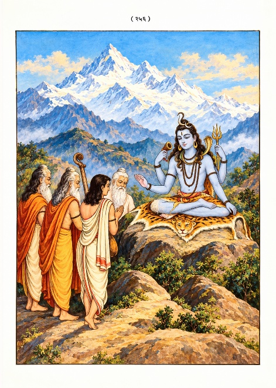

॥ श्रीहरिः ॥
संक्षिप्त
कूर्मपुराण
त्वमेव माता च पिता त्वमेव
त्वमेव बन्धुश्च सखा त्वमेव।
त्वमेव विद्या द्रविणं त्वमेव
त्वमेव सर्वं मम देवदेव॥
गीता प्रेस के मूल ग्रंथ — सरल एवं सुगम पठन के लिए नवीन प्रस्तुति।
॥ श्रीहरिः ॥
नम्र निवेदन
पुराण भारतीय संस्कृतिकी अमूल्य निधि है। यह एक ऐसा विश्वकोश है, जिसमें धार्मिक, आर्थिक, नैतिक, सांस्कृतिक, सामाजिक, ऐतिहासिक, भौगोलिक आदि सभी विषय अति सरल एवं सुगम भाषामें वर्णित हैं। वेदोंमें वर्णित विषयोंका रहस्य पुराणोंमें रोचक उपाख्यानोंके द्वारा प्रस्तुत किया गया है। इसीलिये इतिहास-पुराणोंके द्वारा वेदोपबृंहणका विधान किया गया है। पुराणोंके परिज्ञानके बिना वेद, वेदाङ्ग एवं उपनिषदोंका ज्ञाता भी ज्ञानवान् नहीं माना गया है। इससे पुराण-सम्बन्धी ज्ञानकी आवश्यकता और महत्ता परिलक्षित होती है।
महापुराणोंकी सूचीमें पंद्रहवें पुराणके रूपमें परिगणित कूर्मपुराणका विशेष महत्त्व है। सर्वप्रथम भगवान् विष्णुने कूर्म अवतार धारण करके इस पुराणको राजा इन्द्रद्युम्नको सुनाया था, पुनः भगवान् कूर्मने उसी कथानकको समुद्र-मन्थनके समय इन्द्रादि देवताओं तथा नारदादि ऋषिगणोंसे कहा। तीसरी बार नैमिषारण्यके द्वादशवर्षीय महासत्रके अवसरपर रोमहर्षण सूतके द्वारा इस पवित्र पुराणको सुननेका सौभाग्य अट्ठासी हजार ऋषियोंको प्राप्त हुआ। भगवान् कूर्मके द्वारा कथित होनेके कारण ही इस पुराणका नाम कूर्मपुराण विख्यात हुआ।
रोमहर्षण सूत तथा शौनकादि ऋषियोंके संवादके रूपमें आरम्भ होनेवाले इस पुराणमें सर्वप्रथम सूतजीने पुराण-लक्षण एवं अठारह महापुराणों तथा उपपुराणोंके नामोंका परिगणन करते हुए भगवान्के कूर्मावतारकी कथाका सरस विवेचन किया है। कूर्मावतारके ही प्रसंगमें लक्ष्मीकी उत्पत्ति और माहात्म्य, लक्ष्मी तथा इन्द्रद्युम्नका वृत्तान्त, इन्द्रद्युम्नके द्वारा भगवान् विष्णुकी स्तुति, वर्ण, आश्रम और उनके कर्तव्यका वर्णन तथा परब्रह्मके रूपमें शिवतत्त्वका प्रतिपादन किया गया है। तदनन्तर सृष्टिवर्णन, कल्प, मन्वन्तर तथा युगोंकी काल-गणना, वराहावतारकी कथा, शिवपार्वती-चरित्र, योगशास्त्र, वामनावतारकी कथा, सूर्य-चन्द्रवंशवर्णन, अनसूयाकी संतति-वर्णन तथा यदुवंशके वर्णनमें भगवान् श्रीकृष्णके मंगलमय चरित्रका सुन्दर निरूपण किया गया है। इसके अतिरिक्त इसमें श्रीकृष्णके द्वारा शिवकी तपस्या तथा उनकी कृपासे साम्बनामक पुत्रकी प्राप्ति, लिङ्गमाहात्म्य, चारों युगोंका स्वभाव तथा युगधर्म-वर्णन, मोक्षके साधन, ग्रह-नक्षत्रोंका वर्णन, तीर्थ-माहात्म्य, विष्णु-माहात्म्य, वैवस्वत मन्वन्तरके २८ द्वापरयुगोंके २८ व्यासोंका उल्लेख, शिवके अवतारोंका वर्णन, भावी मन्वन्तरोंके नाम, ईश्वरगीता, व्यासगीता तथा कूर्मपुराणके फलश्रुतिकी सरस प्रस्तुति है। हिन्दूधर्मके तीन मुख्य सम्प्रदायों—वैष्णव, शैव एवं शाक्तके अद्भुत समन्वयके साथ इस पुराणमें त्रिदेवोंकी एकता, शक्ति-शक्तिमानमें अभेद तथा विष्णु एवं शिवमें परमैक्यका सुन्दर प्रतिपादन किया गया है।
‘कल्याण’ वर्ष ७१के विशेषाङ्कके रूपमें पूर्व प्रकाशित इस पुराणके विषय-वस्तुकी उपयोगिता एवं पाठकोंके आग्रहको दृष्टिगत रखते हुए अब इसको पुराणके रूपमें सानुवाद प्रस्तुत करते हुए हमें अपार हर्ष हो रहा है। आशा है, प्रेमी पाठक गीताप्रेससे प्रकाशित अन्य पुराणोंकी भाँति इस पुराणको भी अपने अध्ययन-मनन तथा संग्रहका विषय बनाकर हमारे श्रमको सार्थक करेंगे।
—प्रकाशक
॥ श्रीहरिः ॥
॥ ॐ श्रीपरमात्मने नमः ॥
कूर्मपुराण [पूर्वविभाग]
पहला अध्याय
सूतजीकी उत्पत्ति, उनके रोमहर्षण नाम पड़नेका कारण, पुराणों तथा उपपुराणोंका नाम-परिगणन, समुद्र-मन्थनसे उत्पन्न विष्णुमायाका वर्णन, इन्द्रद्युम्नका आख्यान और कूर्मपुराणकी महिमा
नारायणं नमस्कृत्य नरं चैव नरोत्तमम् ।
देवीं सरस्वतीं चैव ततो जयमुदीरयेत् ॥
नमस्कृत्वाप्रमेयाय विष्णवे कूर्मरूपिणे ।
पुराणं सम्प्रवक्ष्यामि यदुक्तं विश्वयोनिना॥ १ ॥
(बदरिकाश्रममें निवास करनेवाले ऋषि) नारायण, नरोंमें उत्तम श्रीनर तथा उनकी लीला प्रकट करनेवाली भगवती सरस्वतीको नमस्कार कर जय (पुराण एवं इतिहास आदि सद्ग्रन्थों)-का पाठ करना चाहिये। कूर्मरूप धारण करनेवाले अप्रमेय भगवान् विष्णुको नमस्कार कर मैं उस पुराण (कूर्मपुराण)-को कहूँगा, जो समस्त विश्वके मूल कारण भगवान् विष्णुके द्वारा कहा गया था ॥ १ ॥
सत्रान्ते सूतमनघं नैमिषीया महर्षयः ।
पुराणसंहितां पुण्यां पप्रच्छू रोमहर्षणम्॥ २ ॥
त्वया सूत महाबुद्धे भगवान् ब्रह्मवित्तमः ।
इतिहासपुराणार्थं व्यासः सम्यगुपासितः॥ ३ ॥
तस्य ते सर्वरोमाणि वचसा हृषितानि यत् ।
द्वैपायनस्य भगवांस्ततो वै रोमहर्षणः॥ ४ ॥
नैमिषारण्यवासी महर्षियोंने (बारह वर्षतक चलनेवाले) सत्र (यज्ञ)-के पूर्ण हो जानेपर सर्वथा निष्पाप रोमहर्षण सूतजीसे पवित्र पुराण-संहिताके विषयमें प्रश्न किया—महाबुद्धिमान् सूतजी महाराज! आपने इतिहास और पुराणोंके ज्ञानके लिये ब्रह्मज्ञानियोंमें परम श्रेष्ठ भगवान् वेदव्यासजीकी भलीभाँति उपासना की है। चूँकि आपके वचनसे द्वैपायन भगवान् वेदव्यासजीके समस्त रोम हर्षित हो गये थे, इसलिये आप ‘रोमहर्षण’ कहलाते हैं॥ २—४ ॥
भवन्तमेव भगवान् व्याजहार स्वयं प्रभुः ।
मुनीनां संहितां वक्तुं व्यासः पौराणिकीं पुरा॥ ५ ॥
त्वं हि स्वायम्भुवे यज्ञे सुत्याहे वितते हरिः ।
सम्भूतः संहितां वक्तुं स्वांशेन पुरुषोत्तमः॥ ६ ॥
तस्माद् भवन्तं पृच्छामः पुराणं कौर्ममुत्तमम् ।
वक्तुमर्हसि चास्माकं पुराणार्थविशारद॥ ७ ॥
प्राचीन कालमें स्वयं समर्थ होते हुए भी भगवान् वेदव्यासजीने आपसे ही कहा था कि आप मुनियोंको पुराण-संहिता सुनायें। (सूतजी महाराज!) आप अपने अंशसे उत्पन्न साक्षात् पुरुषोत्तम नारायण हैं। स्वयम्भू ब्रह्माजीके महान् यज्ञमें सोमरस प्रस्तुत करनेके दिन पुराण-संहिताका वाचन करनेके लिये ही आपका आविर्भाव हुआ था। आप पुराणोंके अर्थकों ठीक-ठीक जाननेवाले हैं। इसीलिये हम आपसे श्रेष्ठ कूर्मपुराणके विषयमें पूछ रहे हैं। आप हमें वह (कूर्मपुराण) बतलायें॥ ५—७ ॥
मुनीनां वचनं श्रुत्वा सूतः पौराणिकोत्तमः ।
प्रणम्य मनसा प्राह गुरुं सत्यवतीसुतम्॥ ८ ॥
रोमहर्षण उवाच नमस्कृत्वा जगद्योनिं कूर्मरूपधरं हरिम् ।
वक्ष्ये पौराणिकीं दिव्यां कथां पापप्रणाशिनीम्॥ ९ ॥
यां श्रुत्वा पापकर्मापि गच्छेत परमां गतिम् ।
न नास्तिके कथां पुण्यामिमां ब्रुयात् कदाचन॥ १० ॥
श्रद्दधानाय शान्ताय धार्मिकाय द्विजातये ।
इमां कथामनुब्रूयात् साक्षान्नारायणेरिताम्॥ ११ ॥
सर्गश्च प्रतिसर्गश्च वंशो मन्वन्तराणि च ।
वंशानुचरितं चैव पुराणं पञ्चलक्षणम्॥ १२ ॥
ब्राह्मं पुराणं प्रथमं पाद्मं वैष्णवमेव च ।
शैवं भागवतं चैव भविष्यं नारदीयकम्॥ १३ ॥
मार्कण्डेयमथाग्नेयं ब्रह्मवैवर्तमेव च ।
लैङ्गं तथा च वाराहं स्कान्दं वामनमेव च॥ १४ ॥
कौर्मं मात्स्यं गारुडं च वायवीयमनन्तरम् ।
अष्टादशं समुद्दिष्टं ब्रह्माण्डमिति संज्ञितम्॥ १५ ॥
अन्यान्युपपुराणानि मुनिभिः कथितानि तु ।
अष्टादशपुराणानि श्रुत्वा संक्षेपतो द्विजाः॥ १६ ॥
आद्यं सनत्कुमारोक्तं नारसिंहमतः परम् ।
तृतीयं स्कान्दमुद्दिष्टं कुमारेण तु भाषितम्॥ १७ ॥
मुनियोंके वचन सुनकर पौराणिकोंमें श्रेष्ठ सूतजीने देवी सत्यवतीके पुत्र अपने गुरु (भगवान् वेदव्यास)-को मन-ही-मन प्रणाम कर (इस प्रकार) कहा—॥ ८ ॥
रोमहर्षण सूतजी बोले—समस्त विश्वके मूल कारण, कूर्मरूप धारण करनेवाले भगवान् नारायण विष्णुको नमस्कार करके कूर्मपुराणकी उस दिव्य कथाको कहता हूँ, जो समस्त पापोंको नष्ट करनेवाली है और जिसे सुनकर महान्-से-महान् पाप करनेवाला पापी व्यक्ति भी परम गतिको प्राप्त कर लेता है। कूर्मपुराणकी इस पुण्यकथाको नास्तिक व्यक्तिको कभी भी नहीं सुनाना चाहिये। जो अत्यन्त श्रद्धालु हैं, शान्त हैं, धर्मात्मा हैं—ऐसे द्विजातियोंको साक्षात् नारायण भगवान् विष्णुके द्वारा कही गयी इस कूर्मपुराणकी कथाको विशेष रूपसे कहना चाहिये॥ ९—११ ॥
सर्ग (सृष्टि), प्रतिसर्ग (प्रलय), वंश, वंशानुचरित तथा मन्वन्तर—ये पुराणोंके पाँच लक्षण हैं॥ १२ ॥
अठारह महापुराणोंमें प्रथम पुराण ब्रह्मपुराण है, द्वितीय पद्मपुराण है। इसी प्रकार क्रमशः विष्णु, शिव, भागवत, भविष्य, नारद, मार्कण्डेय, अग्नि, ब्रह्मवैवर्त, लिङ्ग, वराह, स्कन्द, वामन, कूर्म, मत्स्य और गरुडपुराण हैं। भगवान् वायुके द्वारा कहा गया अठारहवाँ पुराण ब्रह्माण्डपुराणके नामसे कहा जाता है॥ १३—१५ ॥
(सूतजीने पुनः कहा—) ब्राह्मणो! अठारह पुराणोंका नाम सुनकर (अब आप लोग) मुनियोंद्वारा कहे गये अन्य उपपुराणोंका नाम भी संक्षेपमें सुनें—॥ १६ ॥
(इन उपपुराणोंमें) पहला उपपुराण सनत्कुमारके द्वारा कहा गया सनत्कुमार उपपुराण है। तदनन्तर दूसरा नरसिंहपुराण है। स्कन्दकुमारके द्वारा कथित तीसरा पुराण स्कन्दपुराण कहा गया है॥ १७ ॥
चतुर्थं शिवधर्माख्यं साक्षान्नन्दीशभाषितम् ।
दुर्वाससोक्तमाश्चर्यं नारदोक्तमतः परम्॥ १८ ॥
कापिलं मानवं चैव तथैवोशनसेरितम् ।
ब्रह्माण्डं वारुणं चाथ कालिकाह्वयमेव च॥ १९ ॥
माहेश्वरं तथा साम्बं सौरं सर्वार्थसंचयम् ।
पराशरोक्तमपरं मारीचं भार्गवाह्वयम्॥ २० ॥
इदं तु पञ्चदशमं पुराणं कौर्ममुत्तमम् ।
चतुर्धा संस्थितं पुण्यं संहितानां प्रभेदतः॥ २१ ॥
ब्राह्मी भागवती सौरी वैष्णवी च प्रकीर्तिताः ।
चतस्रः संहिताः पुण्या धर्मकामार्थमोक्षदाः॥ २२ ॥
इयं तु संहिता ब्राह्मी चतुर्वेदैस्तु सम्मिता ।
भवन्ति षट्सहस्राणि श्लोकानामत्र संख्यया॥ २३ ॥
यत्र धर्मार्थकामानां मोक्षस्य च मुनीश्चराः ।
माहात्म्यमखिलं ब्रह्म ज्ञायते परमेश्वरः॥ २४ ॥
सर्गश्च प्रतिसर्गश्च वंशो मन्वन्तराणि च ।
वंशानुचरितं दिव्याः पुण्याः प्रासंगिकीः कथाः॥ २५ ॥
ब्राह्मणाद्यैरियं धार्या धार्मिकैः शान्तमानसैः ।
तामहं वर्तयिष्यामि व्यासेन कथितां पुरा॥ २६ ॥
पुरामृतार्थं दैतेयदानवैः सह देवताः ।
मन्थानं मन्दरं कृत्वा ममन्थुः क्षीरसागरम॥ २७ ॥
मथ्यमाने तदा तस्मिन् कूर्मरूपी जनार्दनः ।
बभार मन्दरं देवो देवानां हितकाम्यया॥ २८ ॥
चौथे पुराणका नाम शिवधर्म है जो साक्षात् भगवान् नन्दीश्वर (शिव)-के द्वारा कहा गया है। महर्षि दुर्वासाके द्वारा कहा गया आश्चर्यपुराण पाँचवाँ है और छठा पुराण देवर्षि नारदके द्वारा कहा गया नारदपुराण है। इसी प्रकार (सातवाँ) कपिल, (आठवाँ) मानव और शुक्राचार्यद्वारा प्रोक्त उशना नामक (नवाँ) पुराण है। (दसवाँ) ब्रह्माण्ड, (ग्यारहवाँ) वरुण तथा (बारहवाँ पुराण) कालिकापुराणके नामसे कहा गया है। (तेरहवाँ) माहेश्वरपुराण, (चौदहवाँ) साम्बपुराण तथा सभी प्रकारके अर्थोंसे युक्त (पंद्रहवाँ) सौरपुराण है। (सोलहवाँ) पराशरपुराण महर्षि पराशरके द्वारा कहा गया है। (सत्रहवाँ) मारीचपुराण है और (अठारहवाँ पुराण) भार्गवपुराणके नामसे कहा गया है॥ १८—२० ॥
यह कूर्मपुराण पंद्रहवाँ महापुराण है, जो पुराणोंमें श्रेष्ठ है। संहिताओंके भेदसे यह पवित्र पुराण चार भागों (चार संहिताओं)-में विभक्त है। ब्राह्मी, भागवती, सौरी तथा वैष्णवी नामक इस कूर्मपुराणकी चार पवित्र संहिताएँ धर्म, अर्थ, काम तथा मोक्ष—इस प्रकार चतुर्विध पुरुषार्थको देनेवाली कही गयी हैं॥ २१-२२ ॥
यह ब्राह्मी संहिता है, जो चारों वेदोंद्वारा अनुमोदित है। इसकी श्लोक-संख्या छः हजार है। हे मुनीश्वरो! इसमें धर्म, अर्थ, काम और मोक्षका अशेष माहात्म्य वर्णित है और (इसके श्रद्धा-भक्तिपूर्वक पठन-पाठन एवं श्रवण आदिसे) परमेश्वर ब्रह्मका ज्ञान होता है। इसमें सर्ग, प्रतिसर्ग, वंश, मन्वन्तर तथा वंशानुचरित और दिव्य एवं पुण्य प्रासंगिक कथाएँ भी कही गयी हैं। यह पुराणसंहिता शान्त-चित्त एवं धर्मात्मा ब्राह्मणादिकोंके द्वारा धारण करने योग्य है। (सूतजी कहते हैं—) मैं उसी पुराणसंहिताका प्रवचन करूँगा, जिसे प्राचीन समयमें वेदव्यासजीने कहा था॥ २३—२६ ॥
प्राचीन कालमें अमृतकी प्राप्तिक लिये देवताओंने दितिके पुत्र दैत्यों और दानवोंके साथ मन्दर नामक पर्वतको मथानी बनाकर क्षीरसागरको मथा। उस क्षीरसागरके मन्थन किये जाते समय देवताओंके कल्याणकी कामनासे जनार्दन भगवान् विष्णुने कूर्मरूप धारण करके उस मन्दराचलको ऊपर उठाये रखा॥ २७-२८ ॥
देवाश्च तुष्टुवुर्देवं नारदाद्या महर्षयः ।
कूर्मरूपधरं दृष्ट्वा साक्षिणं विष्णुमव्ययम्॥ २९ ॥
तदन्तरेऽभवद् देवी श्रीर्नारायणवल्लभा ।
जग्राह भगवान् विष्णुस्तामेव पुरुषोत्तमः॥ ३० ॥
तेजसा विष्णुमव्यक्तं नारदाद्या महर्षयः ।
मोहिताः सह शक्रेण श्रियो वचनमब्रुवन्॥ ३१ ॥
भगवन् देवदेवेश नारायण जगन्मय ।
कैषा देवी विशालाक्षी यथावद् ब्रूहि पृच्छताम्॥ ३२ ॥
श्रुत्वा तेषां तदा वाक्यं विष्णुर्दानवमर्दनः ।
प्रोवाच देवीं सम्प्रेक्ष्य नारदादीनकल्मषान्॥ ३३ ॥
इयं सा परमा शक्तिर्मन्मयी ब्रह्मरूपिणी ।
माया मम प्रियानन्ता ययेदं मोहितं जगत्॥ ३४ ॥
अनयैव जगत् सर्वं सदेवासुरमानुषम् ।
मोहयामि द्विजश्रेष्ठा ग्रसामि विसृजामि च॥ ३५ ॥
उत्पत्तिं प्रलयं चैव भूतानामागतिं गतिम् ।
विज्ञायान्वीक्ष्य चात्मानं तरन्ति विपुलामिमाम्॥ ३६ ॥
अस्यास्त्वंशानधिष्ठाय शक्तिमन्तोऽभवन् द्विजाः ।
ब्रह्मेशानादयो देवाः सर्वशक्तिरियं मम॥ ३७ ॥
सैषा सर्वजगत्सूतिः प्रकृतिस्त्रिगुणात्मिका ।
प्रागेव मत्तः संजाता श्रीकल्पे पद्मवासिनी॥ ३८ ॥
चतुर्भुजा शङ्खचक्रपद्महस्ता शुभान्विता ।
कोटिसूर्यप्रतीकाशा मोहिनी सर्वदेहिनाम्॥ ३९ ॥
नालं देवा न पितरो मानवा वसवोऽपि च ।
मायामेतां समुत्तर्तुं ये चान्ये भुवि देहिनः॥ ४० ॥
कूर्म (कच्छप)-रूप धारण किये हुए सर्वद्रष्टा अविनाशी भगवान् विष्णुको देखकर देवताओं तथा नारदादि महर्षियोंने उन देवकी स्तुति की॥ २९ ॥
उसी समय नारायण भगवान् विष्णुकी प्रिया देवी श्रीलक्ष्मीका आविर्भाव हुआ। उन्हें पुरुषोत्तम भगवान् विष्णुने ही ग्रहण किया। लक्ष्मीके तेजसे मोहित हुए इन्द्रसहित नारद आदि महर्षियोंने अव्यक्त भगवान् विष्णुसे यह वचन कहा—॥ ३०-३१ ॥
हे भगवन्! हे देवदेवेश! हे नारायण! हे जगन्मय! हम पूछनेवालोंको आप ठीक-ठीक बतलायें कि विशाल नेत्रोंवाली यह देवी कौन है?॥ ३२ ॥
उस समय उन देवताओं तथा महर्षियोंका वह वाक्य सुनकर दानवोंका मर्दन करनेवाले भगवान् विष्णु देवी लक्ष्मीकी ओर देखकर नारद आदि परम पवित्र महर्षियोंसे बोले—॥ ३३ ॥
यह मेरी स्वरूपभूता ब्रह्मरूपिणी परम शक्ति है, यही माया है, यही अनन्ता है और यही मेरी वह प्रिया है जिसने इस सम्पूर्ण जगत्को मोहित कर रखा है। हे श्रेष्ठ द्विजो! इसीके द्वारा मैं देवताओं, असुरों एवं मनुष्योंसे युक्त सम्पूर्ण विश्वको मोहित करता हूँ, संहार करता हूँ और पुनः सृष्टि करता हूँ। (ज्ञानीजन जगत्की) उत्पत्ति एवं प्रलयको तथा प्राणियोंके जन्म एवं मोक्षको ठीक-ठीक समझकर और आत्मतत्त्वका दर्शनकर इस महा-मायाके बन्धनसे पार उतरते हैं। द्विजो! मेरी सब प्रकारकी शक्ति यही है, इसीके अंशोंका आश्रय ग्रहणकर ब्रह्मा तथा शिव आदि देवता शक्तिमान् हुए हैं॥ ३४—३७ ॥
यही वह सत्त्व-रज तथा तम—तीनों गुणोंसे युक्त त्रिगुणात्मिका प्रकृति है और यही सारे संसारको उत्पन्न करनेवाली है। प्राचीन कालमें श्रीकल्पमें यह पद्मवासिनीके रूपमें मुझसे ही आविर्भूत हुई थी। ये चार भुजावाली हैं, ये हाथोंमें शंख, चक्र तथा कमल धारण किये रहती हैं, सभी मङ्गलमय गुणोंसे युक्त हैं, करोड़ों सूर्योंके समान इनकी आभा है, ये सभी प्राणियोंको मोहित करनेवाली हैं। देवता, पितर, मनुष्य, वसुगण तथा पृथ्वीपर रहनेवाले जितने भी अन्य देहधारी प्राणी हैं, वे सभी अर्थात् कोई भी ऐसा नहीं है जो इस मायाको पार करनेमें समर्थ हो॥ ३८—४० ॥
इत्युक्ता वासुदेवेन मुनयो विष्णुमब्रुवन् ।
ब्रूहि त्वं पुण्डरीकाक्ष यदि कालत्रयेऽपि च ।
को वा तरति तां मायां दुर्जयां देवनिर्मिताम्॥४१ ॥
अथोवाच हृषीकेशो मुनीन् मुनिगणार्चितः ।
अस्ति द्विजातिप्रवर इन्द्रद्युम्न इति श्रुतः॥४२ ॥
पूर्वजन्मनि राजासावधृष्यः शंकरादिभिः ।
दृष्ट्वा मां कूर्मसंस्थानं श्रुत्वा पौराणिकीं स्वयम् ।
संहितां मन्मुखाद् दिव्यां पुरस्कृत्य मुनीश्वरान्॥४३ ॥
ब्रह्माणं च महादेवं देवांश्चान्यान् स्वशक्तिभिः ।
मच्छक्तौ संस्थितान् बुद्ध्वा मामेव शरणं गतः॥४४ ॥
सम्भाषितो मया चाथ विप्रयोनिं गमिष्यसि ।
इन्द्रद्युम्न इति ख्यातो जातिं स्मरसि पौर्विकीम्॥४५ ॥
सर्वेषामेव भूतानां देवानामप्यगोचरम् ।
वक्तव्यं यद् गुह्यतमं दास्ये ज्ञानं तवानघ ।
लब्ध्वा तन्मामकं ज्ञानं मामेवान्ते प्रवेक्ष्यसि॥४६ ॥
अंशान्तरेण भूम्यां त्वं तत्र तिष्ठ सुनिर्वृतः ।
वैवस्वतेऽन्तरेऽतीते कार्यार्थं मां प्रवेक्ष्यसि॥४७ ॥
मां प्रणम्य पुरीं गत्वा पालयामास मेदिनीम् ।
कालधर्मं गतः कालाच्छ्वेतद्वीपे मया सह॥४८ ॥
भुक्त्वा तान् वैष्णवान् भोगान् योगिनामप्यगोचरान् ।
मदाज्ञया मुनिश्रेष्ठा जज्ञे विप्रकुले पुनः॥४९ ॥
ज्ञात्वा मां वासुदेवाख्यं यत्र द्वे निहितेऽक्षरे ।
विद्याविद्ये गूढरूपे यत्तद् ब्रह्म परं विदुः॥५० ॥
सोऽर्चयामास भूतानामाश्रयं परमेश्वरम् ।
व्रतोपवासनियमैर्होमैर्ब्राह्मणतर्पणैः॥५१ ॥
भगवान् वासुदेवके द्वारा इस प्रकार कहे जानेपर मुनियोंने भगवान् विष्णुसे कहा—हे पुण्डरीकाक्ष! उस देवनिर्मित दुर्जय मायाको पार करनेवाला तीनों कालोंमें यदि कोई हुआ हो तो उसे आप बतलायें॥४१ ॥
तदनन्तर मुनियोंद्वारा पूजित भगवान् हृषीकेशने उन मुनियोंसे कहा—इन्द्रद्युम्न नामका द्विजातियोंमें श्रेष्ठ एक ब्राह्मण था, ऐसा सुना गया है। पूर्वजन्ममें वह शंकर आदि देवताओंसे भी अजेय राजा था। ‘मैंने कूर्म-अवतार धारण किया है’ यह जानकर तथा स्वयं मेरे मुखसे दिव्य पुराण-संहिताको सुनकर वह (राजा इन्द्रद्युम्न) मुनीश्वरोंसहित ब्रह्मा, शिव एवं अपनी-अपनी शक्तियोंके साथ अन्य सभी देवताओंको मेरी ही शक्तिमें प्रतिष्ठित समझकर मुझे देखनेके लिये मेरी शरणमें आया॥४२—४४ ॥
इसके बाद मैंने कहा—(इन्द्रद्युम्न!) तुम ब्राह्मणकी योनिमें उत्पन्न होओगे, तुम्हारा ‘इन्द्रद्युम्न’ यह नाम प्रसिद्ध होगा और तुम अपने पूर्वजन्मका स्मरण करोगे। हे अनघ! मैं तुम्हें सभी प्राणियों तथा देवताओंके लिये भी अज्ञात एवं जो अत्यन्त गूढ़रूपसे कहने योग्य है, उस ज्ञानको प्रदान करूँगा। उस मेरे ज्ञानको प्राप्तकर तुम अन्त समयमें मुझमें ही प्रविष्ट हो जाओगे और अपने ही अंशसे दूसरे रूपमें तुम पृथ्वीपर शान्तिपूर्वक रहो। वैवस्वत मन्वन्तरके व्यतीत हो जानेपर तुम (अभीष्ट) कार्यके लिये मुझमें ही प्रविष्ट हो जाओगे॥४५—४७ ॥
(भगवान्ने पुनः कहा—) मुनिश्रेष्ठो! मुझे प्रणामकर वह राजा अपनी नगरीमें गया और पृथ्वीका पालन-पोषण करने लगा। यथासमय मृत्यु होनेपर वह मेरे स्थान—श्वेतद्वीपको प्राप्त हुआ और वहाँ मेरे साथ योगियोंके लिये भी अलभ्य दिव्य वैष्णव भोगोंको भोगकर पुनः मेरी ही आज्ञासे ब्राह्मण-कुलमें उत्पन्न हुआ॥४८-४९ ॥
जिसमें अविनश्वर गूढ़ स्वरूपवाली विद्या एवं अविद्या—ये दोनों प्रतिष्ठित हैं तथा जिसे ज्ञानीजन परब्रह्मके नामसे जानते हैं, उस वासुदेव नामवाले मुझे जानकर इन्द्रद्युम्नने व्रत, उपवास, नियम, होम तथा ब्राह्मणोंकी संतुष्टि आदि उपायोंद्वारा सभी प्राणियोंके एकमात्र आश्रय परमेश्वरकी आराधना की॥५०-५१ ॥
तदाशीस्तन्नमस्कारस्तन्निष्ठस्तत्परायणः ।
आराधयन् महादेवं योगिनां हृदि संस्थितम्॥५२ ॥
तस्यैवं वर्तमानस्य कदाचित् परमा कला ।
स्वरूपं दर्शयामास दिव्यं विष्णुसमुद्भवम्॥५३ ॥
दृष्ट्वा प्रणम्य शिरसा विष्णोर्भगवतः प्रियाम् ।
संस्तूय विविधैः स्तोत्रैः कृताञ्जलिरभाषत॥५४ ॥
इन्द्रद्युम्न उवाच का त्वं देवि विशालाक्षि विष्णुचिह्नाङ्किते शुभे ।
याथातथ्येन वै भावं तवेदानीं ब्रवीहि मे॥५५ ॥
तस्य तद् वाक्यमाकर्ण्य सुप्रसन्ना सुमङ्गला ।
हसन्ती संस्मरन् विष्णुं प्रियं ब्राह्मणमब्रवीत्॥५६ ॥
न मां पश्यन्ति मुनयो देवाः शक्रपुरोगमाः ।
नारायणात्मिका चैका मायाहं तन्मया परा॥५७ ॥
न मे नारायणाद् भेदो विद्यते हि विचारतः ।
तन्मयाहं परं ब्रह्म स विष्णुः परमेश्वरः॥५८ ॥
येऽर्चयन्तीह भूतानामाश्रयं परमेश्वरम् ।
ज्ञानेन कर्मयोगेन न तेषां प्रभवाम्यहम्॥५९ ॥
तस्मादनादिनिधनं कर्मयोगपरायणः ।
ज्ञानेनाराधयानन्तं ततो मोक्षमवाप्स्यसि॥६० ॥
इत्युक्तः स मुनिश्रेष्ठ इन्द्रद्युम्नो महामतिः ।
प्रणम्य शिरसा देवीं प्राञ्जलिः पुनरब्रवीत्॥६१ ॥
कथं स भगवानीशः शाश्वतो निष्कलोऽच्युतः ।
ज्ञातुं हि शक्यते देवि ब्रूहि मे परमेश्वरि॥६२ ॥
एवमुक्ताथ विप्रेण देवी कमलवासिनी ।
साक्षान्नारायणो ज्ञानं दास्यतीत्याह तं मुनिम्॥६३ ॥
उभाभ्यामथ हस्ताभ्यां संस्पृश्य प्रणतं मुनिम् ।
स्मृत्वा परात्परं विष्णुं तत्रैवान्तरधीयत॥६४ ॥
वह उन्हींकी मङ्गलकामना करते हुए उन्हींको नमस्कार करता था, उनमें ही उसकी अनन्य निष्ठा थी तथा वह उन्हींके आश्रित होकर योगियोंके हृदयप्रदेशमें विराजमान रहनेवाले महादेवकी आराधना करने लगा। उसके इसी प्रकार आराधना करते हुए एक दिन वैष्णवी शक्तिने भगवान् विष्णुसे प्रादुर्भूत दिव्य स्वरूप उसे दिखलाया। भगवान् विष्णुकी प्रिया देवी विष्णुप्रियाका दर्शनकर उसने सिर झुकाकर विनीतभावसे उन्हें प्रणाम किया और विविध स्तुतियोंके द्वारा उनकी स्तुतिकर हाथ जोड़कर कहा—॥५२—५४ ॥
इन्द्रद्युम्नने कहा—वैष्णव चिह्नोंवाली, मङ्गलमयी तथा विशाल नेत्रोंवाली हे देवि! आप कौन हैं? आपका जो यथार्थ स्वरूप हो उसे इस समय मुझे बतलायें॥५५ ॥
इन्द्रद्युम्नके वचन सुनकर अत्यन्त सुप्रसन्ना सुमङ्गला वह देवी विष्णुका स्मरणकर उस प्रिय ब्राह्मणसे हँसती हुई बोली—॥५६ ॥
मैं उन विष्णुकी प्रकृतिस्वरूपा परा माया हूँ। मुझ अद्वितीय नारायणस्वरूपा नारायणीको मुनि तथा इन्द्र आदि देवता भी नहीं देख पाते हैं। सूक्ष्म विचार करनेपर मुझमें और नारायणमें कोई भेद नहीं दीखता। मैं उनकी प्रकृतिरूपा हूँ, वे विष्णु परब्रह्म हैं, परमेश्वर हैं। समस्त भूत (प्राणियों)-के आश्रयभूत उन परमेश्वरकी जो ज्ञानयोग अथवा कर्मयोगद्वारा यहाँ आराधना करते हैं ऐसे भक्तोंपर मेरा कोई वश नहीं चलता। अतः तुम कर्मयोगका आश्रय लेते हुए ज्ञानके द्वारा उन आदि और अन्तसे रहित अनन्त भगवान् विष्णुकी आराधना करो। इससे तुम मोक्ष प्राप्त करोगे॥५७—६० ॥
ऐसा कहे जानेपर अत्यन्त बुद्धिमान् मुनिश्रेष्ठ उस इन्द्रद्युम्नने देवीको विनयपूर्वक प्रणाम किया और हाथ जोड़कर पुनः कहा—हे परमेश्वरी देवि! शाश्वत, अखण्ड तथा अच्युत सबके स्वामी उन भगवान्को किस प्रकार जाना जा सकता है, यह मुझे बतलायें॥६१-६२ ॥
ब्राह्मण (इन्द्रद्युम्न)-के द्वारा इस प्रकार कहे जानेपर कमलमें निवास करनेवाली देवीने उस मुनिसे कहा—’साक्षात् नारायण ही तुम्हें (वह) ज्ञान प्रदान करेंगे। तदनन्तर प्रणाम कर रहे उस मुनि (इन्द्रद्युम्न)-को अपने दोनों हाथोंसे भली-भाँति स्पर्श कर (वे देवी) परात्पर विष्णुका स्मरण करती हुई वहीं अन्तर्धान हो गयीं॥६३-६४ ॥
सोऽपि नारायणं द्रष्टुं परमेण समाधिना ।
आराधयद्धृषीकेशं प्रणतार्तिप्रभञ्जनम्॥६५ ॥
ततो बहुतिथे काले गते नारायणः स्वयम् ।
प्रादुरासीन्महायोगी पीतवासा जगन्मयः॥६६ ॥
दृष्ट्वा देवं समायान्तं विष्णुमात्मानमव्ययम् ।
जानुभ्यामवनिं गत्वा तुष्टाव गरुडध्वजम्॥६७ ॥
इन्द्रद्युम्न उवाच यज्ञेशाच्युत गोविन्द माधवानन्त केशव ।
कृष्ण विष्णो हृषीकेश तुभ्यं विश्वात्मने नमः॥६८ ॥
नमोऽस्तु ते पुराणाय हरये विश्वमूर्तये ।
सर्गस्थितिविनाशानां हेतवेऽनन्तशक्तये॥६९ ॥
निर्गुणाय नमस्तुभ्यं निष्कलायामलात्मने ।
पुरुषाय नमस्तुभ्यं विश्वरूपाय ते नमः॥७० ॥
नमस्ते वासुदेवाय विष्णवे विश्वयोनये ।
आदिमध्यान्तहीनाय ज्ञानगम्याय ते नमः॥७१ ॥
नमस्ते निर्विकाराय निष्प्रपञ्चाय ते नमः ।
भेदाभेदविहीनाय नमोऽस्त्वानन्दरूपिणे॥७२ ॥
नमस्ताराय शान्ताय नमोऽप्रतिहतात्मने ।
अनन्तमूर्तये तुभ्यममूर्ताय नमो नमः॥७३ ॥
नमस्ते परमार्थाय मायातीताय ते नमः ।
नमस्ते परमेशाय ब्रह्मणे परमात्मने॥७४ ॥
नमोऽस्तु ते सुसूक्ष्माय महादेवाय ते नमः ।
नमः शिवाय शुद्धाय नमस्ते परमेष्ठिने॥७५ ॥
त्वयैव सृष्टमखिलं त्वमेव परमा गतिः ।
त्वं पिता सर्वभूतानां त्वं माता पुरुषोत्तम॥७६ ॥
त्वमक्षरं परं धाम चिन्मात्रं व्योम निष्कलम् ।
सर्वस्याधारमव्यक्तमनन्तं तमसः परम्॥७७ ॥
प्रपश्यन्ति परात्मानं ज्ञानदीपेन केवलम् ।
प्रपद्ये भवतो रूपं तद्विष्णोः परमं पदम्॥७८ ॥
इन्द्रद्युम्न भी शरणागतके दुःखोंको सर्वथा दूर कर देनेवाले हृषीकेश भगवान् नारायणका दर्शन करनेके लिये दीर्घकालीन समाधिमें निरत होकर आराधना करने लगा। तत्पश्चात् बहुत समय बीत जानेपर पीताम्बरधारी, जगन्मूर्ति महायोगी भगवान् नारायण उसके सामने स्वयं प्रकट हो गये। अविनाशी परमात्मा भगवान् विष्णुको आया हुआ देखकर घुटनोंके बल पृथ्वीपर स्थित होकर वह गरुडध्वजदेवकी स्तुति करने लगा॥६५—६७ ॥
इन्द्रद्युम्नने कहा—हे यज्ञोंके स्वामी! अच्युत! गोविन्द! माधव! अनन्त! केशव! कृष्ण! विष्णु! तथा हृषीकेश! आप विश्वात्माको नमस्कार है। पुराण-पुरुष! विश्वमूर्ति हे हरि! आप सृष्टि, स्थिति तथा प्रलयके मूल कारण हैं, आप अनन्त शक्तिसम्पन्न हैं, आपको नमस्कार है। आप निर्गुण-स्वरूप हैं, निष्कल एवं विमलात्मा हैं, आपको नमस्कार है। हे विश्वरूप पुरुष! आपको नमस्कार है। विश्वकी योनि, वासुदेव भगवान् विष्णुको नमस्कार है। आप आदि, मध्य तथा अन्तसे रहित ज्ञानद्वारा जानने योग्य हैं, आपको नमस्कार है। निर्विकार तथा प्रपञ्चरहित आपको नमस्कार है। भेद-अभेदसे रहित आनन्द-स्वरूप आपको नमस्कार है। (संसारसागरसे) पार उतारनेवाले, शान्तस्वरूप आपको नमस्कार है। शुद्धात्मा आपको नमस्कार है। आप अनन्तमूर्तिवाले हैं, अमूर्त हैं, आपको बार-बार नमस्कार है। आप परमार्थरूप हैं, आपको नमस्कार है। आप मायासे अतीत हैं, आपको नमस्कार है। ईशोंके भी ईश! आपको नमस्कार है। परमात्मा परब्रह्मरूप आपको नमस्कार है। अत्यन्त सूक्ष्मरूप आपको नमस्कार है। देवोंके भी देव महादेव! आपको नमस्कार है। विशुद्धस्वरूप शिव! आपको नमस्कार है। परमेष्ठीस्वरूप आपको नमस्कार है॥६८—७५ ॥
आपने ही सम्पूर्ण सृष्टिकी रचना की है। आप ही परम गति हैं। हे पुरुषोत्तम! आप ही सभी भूत-प्राणियोंके पिता हैं और आप ही सबकी माता हैं। आप अविनाशी हैं, परम धाम हैं, चित्स्वरूप हैं, व्योम हैं, निष्कल हैं, सबके आधार हैं, अव्यक्त हैं, अनन्त हैं और तमसे सर्वथा रहित नित्य प्रकाशस्वरूप हैं। (ज्ञानीजन) केवल ज्ञानरूपी दीपकके द्वारा जिस परमात्माका दर्शन करते हैं, मैं आपके उस रूपकी शरण ग्रहण करता हूँ, वह विष्णुका परमपद है॥७६—७८ ॥
एवं स्तुवन्तं भगवान् भूतात्मा भूतभावनः ।
उभाभ्यामथ हस्ताभ्यां पस्पर्श प्रहसन्निव॥७९ ॥
स्पृष्टमात्रो भगवता विष्णुना मुनिपुंगवः ।
यथावत् परमं तत्त्वं ज्ञातवांस्तत्प्रसादतः॥८० ॥
ततः प्रहृष्टमनसा प्रणिपत्य जनार्दनम् ।
प्रोवाचोन्निद्रपद्माक्षं पीतवाससमच्युतम्॥८१ ॥
त्वत्प्रसादादसंदिग्धमुत्पन्नं पुरुषोत्तम ।
ज्ञानं ब्रह्मैकविषयं परमानन्दसिद्धिदम्॥८२ ॥
नमो भगवते तुभ्यं वासुदेवाय वेधसे ।
किं करिष्यामि योगेश तन्मे वद जगन्मय॥८३ ॥
श्रुत्वा नारायणो वाक्यमिन्द्रद्युम्नस्य माधवः ।
उवाच सस्मितं वाक्यमशेषजगतो हितम्॥८४ ॥
श्रीभगवानुवाच वर्णाश्रमाचारवतां पुंसां देवो महेश्वरः ।
ज्ञानेन भक्तियोगेन पूजनीयो न चान्यथा॥८५ ॥
विज्ञाय तत्परं तत्त्वं विभूतिं कार्यकारणम् ।
प्रवृत्तिं चापि मे ज्ञात्वा मोक्षार्थीश्वरमर्चयेत्॥८६ ॥
सर्वसंगान् परित्यज्य ज्ञात्वा मायामयं जगत् ।
अद्वैतं भावयात्मानं द्रक्ष्यसे परमेश्वरम्॥८७ ॥
त्रिविधा भावना ब्रह्मन् प्रोच्यमाना निबोध मे ।
एका मद्विषया तत्र द्वितीया व्यक्तसंश्रया ।
अन्या च भावना ब्राह्मी विज्ञेया सा गुणातिगा॥८८ ॥
इस प्रकार स्तुति करते हुए इन्द्रद्युम्नका सभी प्राणियोंके आत्मरूप भूतभावन भगवान् विष्णुने अपने दोनों हाथोंसे किञ्चित् मुसकराते हुए स्पर्श किया॥७९ ॥
भगवान् विष्णुके द्वारा स्पर्श करते ही मुनिश्रेष्ठ (इन्द्रद्युम्न)-को उन भगवान्की कृपासे परम तत्त्वका यथार्थ ज्ञान प्राप्त हो गया। इसके बाद अत्यन्त प्रसन्न मनसे इन्द्रद्युम्नने प्रफुल्लित कमलके समान नेत्रवाले, पीताम्बरधारी अच्युत भगवान् जनार्दनको प्रणाम कर कहा—॥८०-८१ ॥
हे पुरुषोत्तम! आपकी कृपासे मुझे परमानन्दकी प्राप्ति करानेवाला एकमात्र ब्रह्मसम्बन्धी संदेहरहित ज्ञान प्राप्त हो गया है। हे भगवन्! हे वासुदेव! हे वेधा! आपको नमस्कार है। हे योगेश! हे जगन्मय! मैं क्या करूँ, उसे आप मुझे बतलायें॥८२-८३ ॥
इन्द्रद्युम्नके वचन सुनकर माधव भगवान् नारायणने समस्त संसारके कल्याणकी कामनासे मुसकराते हुए यह वचन कहा—॥८४ ॥
श्रीभगवान् बोले—वर्ण एवं आश्रमधर्मका पालन करनेवाले व्यक्तियोंको चाहिये कि वे ज्ञान एवं भक्तियोगके द्वारा भगवान् महेश्वरकी पूजा करें, अन्य साधनसे नहीं। मोक्षार्थीको चाहिये कि उस परम तत्त्व, विभूति एवं कार्यकारणरूपको ठीक-ठीक जानकर साथ ही मेरी प्रवृत्तिको समझकर ईश्वरकी उपासना करे। सभी प्रकारकी आसक्तियोंका सर्वथा परित्याग कर, इस संसारको माया-रूप जानकर अपनेमें अद्वैतकी भावना करे[१]। (ऐसा करनेसे इन्द्रद्युम्न! तुम) परमेश्वरका दर्शन करोगे॥८५—८७ ॥
[१] ‘परमात्मासे अतिरिक्त कुछ नहीं है’ यह भावना ही यहाँ अद्वैत भावना है।
ब्रह्मन् इन्द्रद्युम्न! तीन प्रकारकी भावनाएँ कही गयी हैं, उन्हें मैं बताता हूँ, तुम सुनो—उन तीनोंमेंसे पहली भावना है मद्विषया अर्थात् मेरे सगुण स्वरूपकी भावना। दूसरी है व्यक्तसंश्रया अर्थात् भगवान्का जो विराट् स्वरूप है, उसका आश्रय ग्रहण कर उपासनाकी भावना और तीसरी जो भावना है उसे ब्राह्मी अर्थात् ब्रह्मज्ञानविषयक भावना जानना चाहिये, यह तीसरी भावना गुणातीत है (गुणातीतरूपमें ब्रह्मकी उपासना ही ब्राह्मी भावना है।) विद्वान् व्यक्तिको चाहिये कि इन तीनोंमेंसे किसी भी भावनाका आश्रय ग्रहण कर उपासना करे॥८८ ॥
आसामन्यतमां चाथ भावनां भावयेद् बुधः ।
अशक्तः संश्रयेदाद्यामित्येषा वैदिकी श्रुतिः॥८९ ॥
तस्मात् सर्वप्रयत्नेन तन्निष्ठस्तत्परायणः ।
समाराधय विश्वेशं ततो मोक्षमवाप्स्यसि॥९० ॥
इन्द्रद्युम्न उवाच किं तत् परतरं तत्त्वं का विभूतिर्जनार्दन ।
किं कार्यं कारणं कस्त्वं प्रवृत्तिश्चापि का तव॥९१ ॥
श्रीभगवानुवाच परात्परतरं तत्त्वं परं ब्रह्मैकमव्ययम् ।
नित्यानन्दं स्वयंज्योतिरक्षरं तमसः परम्॥९२ ॥
ऐश्वर्यं तस्य यन्नित्यं विभूतिरिति गीयते ।
कार्यं जगदथाव्यक्तं कारणं शुद्धमक्षरम्॥९३ ॥
अहं हि सर्वभूतानामन्तर्यामीश्वरः परः ।
सर्गस्थित्यन्तकर्तृत्वं प्रवृत्तिर्मम गीयते॥९४ ॥
एतद् विज्ञाय भावेन यथावदखिलं द्विज ।
ततस्त्वं कर्मयोगेन शाश्वतं सम्यगर्चय॥९५ ॥
इन्द्रद्युम्न उवाच के ते वर्णाश्रमाचारा यैः समाराध्यते परः ।
ज्ञानं च कीदृशं दिव्यं भावनात्रयसंस्थितम्॥९६ ॥
कथं सृष्टमिदं पूर्वं कथं संह्रियते पुनः ।
कियत्यः सृष्टयो लोके वंशा मन्वन्तराणि च ।
कानि तेषां प्रमाणानि पावनानि व्रतानि च॥९७ ॥
तीर्थान्यर्कादिसंस्थानं पृथिव्यायामविस्तरे ।
कति द्वीपाः समुद्राश्च पर्वताश्च नदीनदाः ।
ब्रूहि मे पुण्डरीकाक्ष यथावदधुनाखिलम्॥९८ ॥
श्रीकूर्म उवाच एवमुक्तोऽथ तेनाहं भक्तानुग्रहकाम्यया ।
यथावदखिलं सर्वमवोचं मुनिपुंगवाः॥९९ ॥
जो असमर्थ व्यक्ति है उसे चाहिये कि वह प्रथम भावना अर्थात् वैष्णवी भावनाका अवलम्बन ग्रहण करे—ऐसा वेदका मत है। इसलिये (इन्द्रद्युम्न! तुम) समस्त प्रयत्नोंके द्वारा सम्पूर्ण संसारके स्वामी भगवान् विष्णुकी आराधना करो, उनमें ही निष्ठा रखो और उन्हींका आश्रय ग्रहण कर उन्हींके शरणागत हो जाओ, इससे तुम मोक्ष प्राप्त करोगे॥ ८९-९० ॥
इन्द्रद्युम्न बोले—हे जनार्दन! वह परात्पर तत्त्व क्या है, विभूति क्या है? कार्य क्या है और कारण क्या है? आप कौन हैं? और आपकी प्रवृत्ति क्या है?॥९१ ॥
श्रीभगवान् बोले—वह परसे परतर तत्त्व एकमात्र अखण्ड परम ब्रह्म ही है। वह नित्य आनन्दस्वरूप है, स्वयं प्रकाशमान है, अविनाशी है और तम (अन्धकार)-से सर्वथा परे है। उस परमात्माका जो नित्य रहनेवाला ऐश्वर्य है, वही विभूति नामसे कहा जाता है। यह संसार ही (परमात्माका) कार्यरूप है और अविनाशी विशुद्ध अव्यक्त तत्त्व ही (इस संसारका) कारणरूप है। मैं ही समस्त प्राणियोंमें रहनेवाला अन्तर्यामी ईश्वर हूँ। सृष्टि, पालन और संहार ही मेरी प्रवृत्ति कही जाती है। हे द्विज! इन सभी बातोंको यथार्थरूपसे जानकर तुम कर्मयोगके द्वारा श्रद्धाभावसे (उस) सनातन (ईश्वर)-की भलीभाँति अर्चना करो॥९२—९५ ॥
इन्द्रद्युम्नने कहा—(भगवन्!) वर्णों तथा आश्रमोंके वे कौनसे पालनीय नियम हैं, जिनसे (उस) परतत्त्वकी आराधना की जाती है और वह दिव्य ज्ञान कैसा है जो तीन भावनाओंसे युक्त है? (परमात्माने) पूर्वकालमें इस (संसार)-की सृष्टि कैसे की और फिर कैसे इसका संहार होता है, लोकमें कितनी सृष्टियाँ हैं, कितने वंश हैं, कितने मन्वन्तर हैं। उनके कितने प्रमाण हैं और पवित्र व्रत तथा तीर्थ कौन-से हैं। सूर्य आदि ग्रहोंकी स्थिति कैसी है, पृथ्वीकी लंबाई-चौड़ाई कितनी है, कितने द्वीप, समुद्र, पर्वत हैं और कितने नद हैं और कितनी नदियाँ हैं, हे पुण्डरीकाक्ष! इस समय यह सब मुझे यथार्थरूपसे बताइये॥९६—९८ ॥
श्रीकूर्मने कहा—हे श्रेष्ठ मुनियो! उस इन्द्रद्युम्नके द्वारा मुझसे इस प्रकार कहे जानेपर भक्तोंपर अनुकम्पा करनेकी कामनासे मैंने वे सभी बातें विस्तारसे ठीक-ठीक उसे बतला दीं॥९९ ॥
व्याख्यायाशेषमेवेदं यत्पृष्टोऽहं द्विजेन तु ।
अनुगृह्य च तं विप्रं तत्रैवान्तर्हितोऽभवम्॥१०० ॥
सोऽपि तेन विधानेन मदुक्तेन द्विजोत्तमः ।
आराधयामास परं भावपूतः समाहितः॥१०१ ॥
त्यक्त्वा पुत्रादिषु स्नेहं निर्द्वन्द्वो निष्परिग्रहः ।
संन्यस्य सर्वकर्माणि परं वैराग्यमाश्रितः॥१०२ ॥
आत्मन्यात्मानमन्वीक्ष्य स्वात्मन्येवाखिलं जगत् ।
सम्प्राप्य भावनामन्त्यां ब्राह्मीमक्षरपूर्विकाम्॥१०३ ॥
अवाप परमं योगं येनैकं परिपश्यति ।
यं विनिद्रा जितश्वासाः कांक्षन्ते मोक्षकांक्षिणः॥१०४ ॥
ततः कदाचिद् योगीन्द्रो ब्रह्माणं द्रष्टुमव्ययम् ।
जगामादित्यनिर्देशान्मानसोत्तरपर्वतम् ।
आकाशेनैव विप्रेन्द्रो योगैश्वर्यप्रभावतः॥१०५ ॥
विमानं सूर्यसंकाशं प्रादुर्भूतमनुत्तमम् ।
अन्वगच्छन् देवगणा गन्धर्वाप्सरसां गणाः ।
दृष्ट्वान्ये पथि योगीन्द्रं सिद्धा ब्रह्मर्षयो ययुः॥१०६ ॥
ततः स गत्वा तु गिरिं विवेश सुरवन्दितम् ।
स्थानं तद् योगिभिर्जुष्टं यत्रास्ते परमः पुमान्॥१०७ ॥
सम्प्राप्य परमं स्थानं सूर्यायुतसमप्रभम् ।
विवेश चान्तर्भवनं देवानां च दुरासदम्॥१०८ ॥
विचिन्तयामास परं शरण्यं सर्वदेहिनाम् ।
अनादिनिधनं देवं देवदेवं पितामहम्॥१०९ ॥
ततः प्रादुरभूत् तस्मिन् प्रकाशः परमात्मनः ।
तन्मध्ये पुरुषं पूर्वमपश्यत् परमं पदम्॥११० ॥
महान्तं तेजसो राशिमगम्यं ब्रह्मविद्विषाम् ।
चतुर्मुखमुदाराङ्गमर्चिभिरुपशोभितम्॥१११ ॥
इस प्रकार उस ब्राह्मण इन्द्रद्युम्नने जो-जो भी मुझसे पूछा था, वह सब विस्तारसे बतलाकर और उसपर कृपा करके मैं वहीं अन्तर्धान हो गया॥१०० ॥
उस श्रेष्ठ ब्राह्मणने भी मेरे द्वारा बताये गये विधानसे अत्यन्त पवित्र भावनासे समाहित-चित्त होकर परम तत्त्वकी उपासना की। उसने अपने स्त्री-पुत्र आदिका मोह छोड़ दिया, सुख-दुःख आदि द्वन्द्वोंसे रहित हो गया, किसी भी वस्तुका संग्रह करना सर्वथा त्याग कर अपरिग्रही हो गया और सभी कर्मोंका परित्याग कर उसने परम वैराग्यका आश्रय ग्रहण किया। अपनी आत्मामें ही परमात्माका दर्शन करके और अपनी आत्मामें ही सम्पूर्ण विश्वका अनुभव कर अक्षर-तत्त्व-सम्बन्धी अन्तिम ब्राह्मी भावनाको प्राप्त किया, जिसके कारण उसे उस दुर्लभ परम योगकी प्राप्ति हुई। इस योगसे ही उस अद्वितीय तत्त्वका साक्षात्कार होता है जिसकी अभिलाषा निद्रात्यागी, श्वासजयी, मोक्षार्थी पुरुष भी करते हैं॥१०१—१०४ ॥
इसके बाद किसी दिन वह ब्राह्मणश्रेष्ठ योगीन्द्र इन्द्रद्युम्न भगवान् सूर्यके निर्देशसे अव्यय ब्रह्मका दर्शन करनेके लिये अपनी योग-सिद्धिके प्रभावसे प्रादुर्भूत सूर्यके समान प्रकाशमान श्रेष्ठ विमानमें चढ़कर आकाशमार्गसे मानसरोवरके उत्तरमें स्थित पर्वतपर गया। उस योगिराज इन्द्रद्युम्नको आकाशमार्गमें जाते हुए देखकर देवों, गन्धर्वों तथा अप्सराओंका समूह भी उसके पीछे-पीछे गया और अन्य सिद्ध तथा ब्रह्मर्षियोंने भी उसका अनुसरण किया॥१०५-१०६ ॥
तदनन्तर वहाँ जाकर इन्द्रद्युम्नने देवताओंद्वारा वन्दित तथा योगियोंद्वारा सेवित पर्वतके उस स्थानपर प्रवेश किया, जहाँ परम पुरुष परमात्मा प्रतिष्ठित रहते हैं। दस हजार सूर्योंके प्रकाशके समान प्रकाशित उस श्रेष्ठ स्थानपर पहुँचकर (इन्द्रद्युम्नने) देवताओंके लिये भी दुष्प्राप्य (उस स्थानके) अन्तर्गृहमें प्रवेश किया॥१०७-१०८ ॥
(वहाँ पहुँचकर उसने) सभी प्राणियोंके परम शरणदाता, आदि-अन्तसे रहित, देवाधिदेव पितामह ब्रह्मदेवका ध्यान किया। इसके बाद उसके ध्यान करते ही वहाँ परमात्माका प्रकाश प्रादुर्भूत हुआ। इन्द्रद्युम्नने उस प्रकाशपुञ्जके मध्यमें महान् तेजकी राशिके रूपमें ब्रह्मविद्वेषियोंके लिये अगम्य, परमपदस्वरूप पूर्व पुरुषका दर्शन किया, जो चार मुखवाले थे, जिनके सभी अङ्ग शुभ लक्षणोंसे सम्पन्न थे और प्रकाशकी किरणोंसे सुशोभित थे॥१०९—१११ ॥
सोऽपि योगिनमन्वीक्ष्य प्रणमन्तमुपस्थितम् ।
प्रत्युद्गम्य स्वयं देवो विश्वात्मा परिषस्वजे॥११२ ॥
परिष्वक्तस्य देवेन द्विजेन्द्रस्याथ देहतः ।
निर्गत्य महती ज्योत्स्ना विवेशादित्यमण्डलम् ।
ऋग्यजुःसामसंज्ञं तत् पवित्रममलं पदम्॥११३ ॥
हिरण्यगर्भो भगवान् यत्रास्ते हव्यकव्यभुक् ।
द्वारं तद् योगिनामाद्यं वेदान्तेषु प्रतिष्ठितम् ।
ब्रह्मतेजोमयं श्रीमन्निष्ठा चैव मनीषिणाम्॥११४ ॥
दृष्टमात्रो भगवता ब्रह्मणार्चिर्मयो मुनिः ।
अपश्यदैश्वरं तेजः शान्तं सर्वत्रगं शिवम्॥११५ ॥
स्वात्मानमक्षरं व्योम तद् विष्णोः परमं पदम् ।
आनन्दमचलं ब्रह्म स्थानं तत्पारमेश्वरम्॥११६ ॥
सर्वभूतात्मभूतः स परमैश्वर्यमास्थितः ।
प्राप्तवानात्मनो धाम यत्तन्मोक्षाख्यमव्ययम्॥११७ ॥
तस्मात् सर्वप्रयत्नेन वर्णाश्रमविधौ स्थितः ।
समाश्रित्यान्तिमं भावं मायां लक्ष्मीं तरेद् बुधः॥११८ ॥
सूत उवाच व्याहृता हरिणा त्वेवं नारदाद्या महर्षयः ।
शक्रेण सहिताः सर्वे पप्रच्छुर्गरुडध्वजम्॥११९ ॥
ऋषय ऊचुः देवदेव हृषीकेश नाथ नारायणामल ।
तद् वदाशेषमस्माकं यदुक्तं भवता पुरा॥१२० ॥
इन्द्रद्युम्नाय विप्राय ज्ञानं धर्मादिगोचरम् ।
शुश्रूषुश्चाप्ययं शक्रः सखा तव जगन्मय॥१२१ ॥
समीपमें आये प्रणाम करते हुए योगी इन्द्रद्युम्नको देखकर वह विश्वात्मा ब्रह्मदेव स्वयं भी उसके समीपमें गये और उसको अपने हृदयसे लगाया। ब्रह्मदेवके द्वारा आलिङ्गन करते ही उस ब्राह्मणश्रेष्ठ इन्द्रद्युम्नके शरीरसे एक महान् प्रकाश निकला, जो आदित्य-मण्डलमें प्रविष्ट हो गया। वह पवित्र निर्मल पद (आदित्य-मण्डल) ऋक्-यजुः एवं साम नामवाला है। जिस स्थानमें हव्य (देवताओंको प्राप्त होनेवाला हवनीय द्रव्य) तथा कव्य (पितरोंको प्राप्त कराया जानेवाला श्राद्धीय पदार्थ)-का उपभोग करनेवाले भगवान् हिरण्यगर्भ निवास करते हैं। वह (स्थान) वेदान्तमें प्रतिपादित योगी जनोंका आद्य प्रवेश-द्वार है, ब्रह्मतेजसे सम्पन्न है, श्रीयुक्त है और वह मनीषियोंकी निष्ठा भी है॥११२—११४ ॥
भगवान् ब्रह्माके देखते ही देखते वह मुनि इन्द्रद्युम्न तेजसे सम्पन्न हो गया और उसने सर्वत्र व्याप्त, परम कल्याणकारी, अत्यन्त शान्त स्वात्मस्वरूप, अक्षर, व्योम उस परमेश्वर-सम्बन्धी तेजको देखा। वह विष्णुका परम पद है। केवल आनन्दरूप, अचल वह ब्रह्मका स्थान परमेश्वररूप है। सभी प्राणियोंको अपनी ही आत्मा समझनेवाला वह योगी इन्द्रद्युम्न परम ऐश्वर्यमें प्रतिष्ठित हो गया और उसने ‘मोक्ष’ पदसे कहे जानेवाले उस अव्यय परमात्मधामको प्राप्त कर लिया॥११५—११७ ॥
इसलिये सभी प्रयत्नोंसे वर्ण एवं आश्रमके नियमोंका पालन करते हुए अन्तिम भावका आश्रय ग्रहण कर विद्वान् व्यक्तिको चाहिये कि वह लक्ष्मीरूप मायासे पार उतरे॥११८ ॥
सूतजी बोले—हरिके द्वारा इस प्रकार कहनेपर इन्द्रसहित नारद आदि सभी महर्षियोंने गरुडध्वज भगवान् विष्णुसे पूछा—॥११९ ॥
ऋषियोंने कहा—हे देवाधिदेव! हे हृषीकेश! हे नाथ! हे अमलरूप नारायण! जो आपने पूर्वकालमें ब्राह्मण इन्द्रद्युम्नसे धर्मादि-सम्बन्धी ज्ञान कहा था, वह सब आप हमें बतलायें। हे जगन्मूर्ति! ये आपके सखा इन्द्र भी सुननेके लिये इच्छुक हैं॥१२०-१२१ ॥
ततः स भगवान् विष्णुः कूर्मरूपी जनार्दनः ।
रसातलगतो देवो नारदाद्यैर्महर्षिभिः॥१२२ ॥
पृष्टः प्रोवाच सकलं पुराणं कौर्ममुत्तमम् ।
संनिधौ देवराजस्य तद् वक्ष्ये भवतामहम्॥१२३ ॥
धन्यं यशस्यमायुष्यं पुण्यं मोक्षप्रदं नृणाम् ।
पुराणश्रवणं विप्राः कथनं च विशेषतः॥१२४ ॥
श्रुत्वा चाध्यायमेवैकं सर्वपापैः प्रमुच्यते ।
उपाख्यानमथैकं वा ब्रह्मलोके महीयते॥१२५ ॥
इदं पुराणं परमं कौर्मं कूर्मस्वरूपिणा ।
उक्तं देवाधिदेवेन श्रद्धातव्यं द्विजातिभिः॥१२६ ॥
इसके बाद (सूतजीने कहा—) रसातलमें स्थित कूर्मरूपी जनार्दन भगवान् विष्णुदेवने नारदादि महर्षियोंके द्वारा (इस प्रकार) पूछे जानेपर जिस श्रेष्ठ सम्पूर्ण कूर्मपुराणको देवराज इन्द्रके समीप सुनाया था, मैं उसे आप लोगोंको सुनाता हूँ॥१२२-१२३ ॥
हे ब्राह्मणो! (इस कूर्म) पुराणका सुनना मनुष्योंके लिये यशकी प्राप्ति करानेवाला, दीर्घ आयु प्रदान करानेवाला, पुण्य प्रदान करानेवाला, कृतकृत्य करानेवाला तथा मोक्ष प्रदान करानेवाला है। इस पुराणके वाचन करनेकी तो और भी विशेष महिमा है। इसके मात्र एक अध्यायके सुननेसे ही सभी प्रकारके पापोंसे (व्यक्ति) मुक्त हो जाता है। अधिक क्या कहा जाय, केवल एक उपाख्यानके श्रवणमात्रसे ब्रह्मलोकमें प्रतिष्ठा प्राप्त होती है। इस श्रेष्ठ कूर्मपुराणको कूर्मरूपधारी देवाधिदेव स्वयं भगवान् विष्णुने कहा है, द्विजातियोंकों इसपर अवश्य श्रद्धा रखनी चाहिये॥१२४—१२६ ॥
इति श्रीकूर्मपुराणे षट्साहस्रयां संहितायां पूर्वविभागे प्रथमोऽध्यायः॥१ ॥
इस प्रकार छः हजार श्लोकोंवाली श्रीकूर्मपुराणसंहिताके पूर्वविभागमें पहला अध्याय समाप्त हुआ॥१ ॥
दूसरा अध्याय
विष्णुके नाभिकमलसे ब्रह्माका प्रादुर्भाव, रुद्र तथा लक्ष्मीका प्राकट्य, ब्रह्माद्वारा नौ मानस पुत्रों तथा चार वर्णोंकी सृष्टि, वेदज्ञानकी महिमा, ब्रह्म-सृष्टिका वर्णन, वर्ण और आश्रमोंके सामान्य तथा विशेष धर्म, गृहस्थाश्रमका माहात्म्य, चतुर्विध पुरुषार्थोंमें धर्मकी महिमा, आश्रमोंका द्वैविध्य, त्रिदेवोंका पूजन, त्रिपुण्ड्र, तिलक तथा भस्म-धारणकी महिमा
श्रीकूर्मने कहा— समस्त ऋषिगणो! संसारके कल्याणके लिये आप लोगोंने जो कुछ मुझसे पूछा है और इन्द्रद्युम्नके प्रति मैंने जो कुछ कहा है, वह सब मैं बतला रहा हूँ, आप लोग सुनें॥ १॥
इस (कूर्म) पुराणमें भूत, वर्तमान एवं भविष्यकालमें हुए वृत्तान्तोंको विस्तारसे बतलाया गया है। यह पुराण मनुष्योंको पुण्य प्रदान करनेवाला और मोक्षधर्मका वर्णन करनेवाला है॥ २॥
मैं ही नारायण देवरूपसे पूर्वकालमें विद्यमान था मेरे अतिरिक्त और कोई दूसरा न था॥ ३॥
मैं प्रगाढ़ योगनिद्राका आश्रय लेकर शेष-शय्यामें पड़ा था। मुनिश्रेष्ठो! रात्रिके बीत जानेपर जागकर मैं पुनः सृष्टिविषयक चिन्तन करने लगा। उसी समय अकस्मात् मुझे प्रसन्नता प्राप्त हुई॥ ४॥
तदुपरान्त समस्त संसारके पितामह चतुर्मुख ब्रह्माका आविर्भाव हुआ। इसी बीच किसी कारणसे अकस्मात् उस समय क्रोध उत्पन्न हुआ। हे मुनिश्रेष्ठो! (उस समय) क्रोधात्मज अपने तेजके द्वारा मानो त्रैलोक्यका संहार करनेके लिये हाथमें त्रिशूल धारण किये, तीन नेत्रोंवाले सूर्यके समान प्रकाशमान महेश्वर रुद्रदेव वहाँ उत्पन्न हुए॥ ५-६॥
तदनन्तर कमलके समान विशाल नेत्रोंवाली, सुन्दर रूप एवं प्रसन्न मुखवाली तथा सभी प्राणियोंको मोहित करनेवाली देवी लक्ष्मी उत्पन्न हुईं। पवित्र मुस्कानवाली, अत्यन्त प्रसन्न, मङ्गलमयी, अपनी महिमामें प्रतिष्ठित, दिव्य कान्तिसे सुसम्पन्न, दिव्य माल्य आदिसे सुशोभित, अविनाशिनी महामाया मूलप्रकृतिरूपा वे नारायणी अपने तेजसे इस (संसार) को आपूरित करती हुई मेरे समीपमें आकर बैठ गयीं। उन्हें देखकर संसारके स्वामी भगवान् ब्रह्मा मुझसे कहने लगे— हे माधव! सम्पूर्ण प्राणियोंको मोहित करनेके लिये इन सुरूपिणी (देवी) को नियुक्त करो, जिससे यह मेरी सृष्टि और भी अधिक बढ़ने लगे॥ ७-१०
ब्रह्माके द्वारा ऐसा कहे जानेपर मैंने मुसकराते हुए देवी लक्ष्मीसे कहा— हे देवि! मेरे आदेशसे तुम देवताओं, असुरों तथा मनुष्योंसे युक्त सम्पूर्ण विश्वको (अपनी मायासे) मोहित कर संसारमें प्रवृत्त करो (किंतु) जो ज्ञानयोगमें निरत हैं, जितेन्द्रिय हैं, ब्रह्मनिष्ठ हैं, ब्रह्मवादी हैं, क्रोधशून्य हैं तथा सत्यपरायण हैं— ऐसे लोगोंको दूरसे ही छोड़ देना॥ ११-१२
ध्यान करनेवाले, ममतारहित, शान्त, धार्मिक, वेदमें पारंगत, जप-परायण और तपस्वी विप्रोंको दूरसे ही छोड़ देना। वेद एवं वेदान्तके विशेष ज्ञानसे जिनके सम्पूर्ण संशय सर्वथा दूर हो गये हैं ऐसे तथा बड़े-बड़े यज्ञोंमें परायण द्विजोंको दूरसे ही छोड़ देना। जो जप, होम, यज्ञ एवं स्वाध्यायके द्वारा देवाधिदेव महेश्वरका यजन करते हैं, उनका प्रयत्नपूर्वक दूरसे ही परित्याग कर देना॥ १३-१५
जो भक्तियोगमें लगे हुए हैं, जिन्होंने अपना चित्त भगवान्को अर्पण कर दिया है और जो प्राणायाम (धारणा, ध्यान तथा समाधि) आदिमें निरत हैं, ऐसे अमलात्माओंका दूरसे ही त्याग कर देना। जिनका मन प्रणवोपासनामें आसक्त है, जो रुद्र (मन्त्रों) का जप करनेवाले हैं और जो अथर्वशिरस्के अध्येता हैं, उन धर्मज्ञ व्यक्तियोंको छोड़ देना। और अधिक क्या कहा जाय, जो अपने धर्मका पालन करनेवाले हैं, ईश्वरकी आराधनामें सतत रत हैं, (हे देवि!) उन्हें मेरे आदेशसे कदापि मोहित न करना॥ १६-१८
इस प्रकार मेरे द्वारा प्रेरित हरिप्रिया महामायाने जैसी मेरी आज्ञा थी, उसी प्रकार किया, इसलिये (उन) लक्ष्मीकी आराधना करनी चाहिये। भगवत्पत्नी (देवी महालक्ष्मी) पूजा किये जानेपर विपुल ऐश्वर्य, पुष्टि, मेधा, यश एवं बल प्रदान करती हैं, इसलिये लक्ष्मीकी भलीभाँति पूजा करनी चाहिये॥ १९-२०॥
तदनन्तर लोकपितामह भगवान्ने मेरी आज्ञासे पूर्वकी भाँति ही समस्त चराचर भूत-प्राणियोंकी सृष्टि की। योगविद्याके प्रभावसे ब्रह्माजीने मरीचि, भृगु, अङ्गिरा, पुलस्त्य, पुलह, क्रतु, दक्ष, अत्रि तथा वसिष्ठको उत्पन्न किया॥ २१-२२॥
हे श्रेष्ठ ब्राह्मणो! ब्रह्माके मरीचि आदि ये नौ ‘ब्रह्माण’ संज्ञक पुत्र साधक हैं, ब्रह्मवादी हैं। पितामह विभु देव (ब्रह्मा) ने मुखसे ब्राह्मणों तथा भुजासे क्षत्रियोंकी सृष्टि की। दोनों जंघाओंसे वैश्योंको तथा पैरसे शूद्रोंको उत्पन्न किया। ब्रह्माने यज्ञकी निष्पत्ति एवं सभी वेदोंकी रक्षाके लिये शूद्रके अतिरिक्त (अन्य सभी वर्णोंकी) सृष्टि की, क्योंकि उनसे यज्ञका निर्वाह होता है॥ २३-२५॥
ऋक्, यजुः, साम तथा अथर्ववेद ब्रह्माके सहज स्वरूप हैं और यह नित्य अव्यय शक्ति हैं। स्वयम्भू ब्रह्माजीने प्रारम्भमें आदि और अन्तसे रहित वेदमयी दिव्य वारूपी शक्तिको उत्पन्न किया, जिसके द्वारा सभी व्यवहार होते हैं। पृथ्वीपर इन (वेदों) से भिन्न जो कोई भी शास्त्र हैं उनमें धीर पुरुषका मन नहीं लगता क्योंकि ऐसे वेदातिरिक्त ग्रन्थोंके अध्ययनसे मनुष्य पाखंडी हो जाता है॥ २६-२८
वेदार्थ-ज्ञानमें श्रेष्ठ मुनियोंने प्राचीन समयमें जो कार्य (करने योग्य) बतलाया है, उसीको परम धर्म समझना चाहिये, (वह धर्म वेदातिरिक्त) अन्य शास्त्रोंमें प्रतिपादित नहीं है। वैदिक सिद्धान्तोंके विपरीत बातोंका प्रतिपादन करनेवाली जो स्मृतियाँ (धर्मशास्त्र) हैं और जो कोई भी कुदर्शन (नास्तिक दर्शन) हैं, पारलौकिक दृष्टिसे वे सभी निष्फल हैं, इसीलिये वे तामसी कहे गये हैं॥ २९-३०॥
पूर्व कल्पमें जो प्रजा उत्पन्न हुई थी, वह सभी बाधाओंसे रहित थी। सभी लोग निर्मल अन्तःकरणवाले थे और सर्वदा अपनी-अपनी धर्म-मर्यादामें स्थिर रहते थे। हे श्रेष्ठ मुनियो! कुछ समय बाद कालकी गतिके प्रभावसे उन (लोगों) में राग, द्वेष (लोभ, मोह तथा क्रोध) आदि उत्पन्न हो गये और स्वधर्ममें बाधा डालनेवाला अधर्म भी उत्पन्न हो गया॥ ३१-३२
(इस कारण) उस समय उनमें (जो पहले सात्त्विक) सहज सिद्धि थी, वह धीरे-धीरे कम होने लगी और रजोगुणमूलक जो अन्य सिद्धियाँ थीं, वे ही उन्हें प्राप्त हुईं। उन सभी (रजोगुणमूलक सिद्धियों) के भी कालयोगसे क्षीण हो जानेपर वे वार्तोपाय अर्थात् कृषि, पशुपालन एवं वाणिज्यरूपी जीविकाके उपाय और कर्मसाध्य (परिश्रमसाध्य) हस्तसिद्धि अर्थात् शिल्पशास्त्र (हाथोंके माध्यमसे किये जानेवाले शिल्प, मूर्ति-कला आदि) के उपाय करने लगे। तब विभु ब्रह्माजीने उन लोगोंके लिये कर्म एवं आजीविकाकी व्यवस्था की॥ ३३-३४॥
हे ब्राह्मणो! ब्रह्मासे उत्पन्न साक्षात् प्रजापतिस्वरूप धर्मदर्शी स्वायम्भुव मनुने पूर्वकालमें धर्मोंका उपदेश किया (जो मनुस्मृतिके नामसे प्रसिद्ध हुई)। तदनन्तर उनके मुखसे उसे सुनकर भृगु आदि महर्षियोंने धर्मोंका वर्णन किया॥ ३५॥
श्रेष्ठ ब्राह्मणो! यज्ञ करना, यज्ञ कराना, दान देना, दान लेना, अध्ययन और अध्यापन— ये ब्राह्मणोंके छः कर्म हैं। दान, अध्ययन और यज्ञ— ये तीन क्षत्रिय और वैश्यके (सामान्य) धर्म हैं, दण्ड-विधान और युद्ध क्षत्रियका तथा कृषिकर्म वैश्यका प्रशस्त कर्म है। द्विजातियोंकी सेवा करना शूद्रोंके लिये एकमात्र धर्मका साधन है। धर्मानुसार पाकयज्ञ तथा शिल्पविद्या उनकी आजीविका है॥ ३६-३८
तदनन्तर वर्णोंकी व्यवस्था स्थिर हो जानेपर (उन्होंने) ब्रह्मचर्य, गृहस्थ, वानप्रस्थ तथा संन्यास (इन चार) आश्रमोंकी स्थापना की॥ ३९॥
हे मुनिश्रेष्ठो! अग्नियों (गार्हपत्य, आहवनीय तथा दक्षिणाग्नि) की उपासना, अतिथि सेवा, यज्ञ, दान एवं देवताओंकी पूजा— यह संक्षेपमें गृहस्थका धर्म है। हवन, कन्द-मूल-फलका सेवन, स्वाध्याय तथा तप, न्यायपूर्वक (सम्पत्तिका) विभाजन— यह वानप्रस्थोंका धर्म है। भिक्षावृत्तिसे प्राप्त पदार्थोंका सेवन, मौनव्रत, तप, सम्यक्-ध्यान, सम्यक्-ज्ञान तथा वैराग्य— यह संन्यासियोंका धर्म है। भिक्षा माँगना, गुरुकी सेवा करना, स्वाध्याय, संध्याकर्म तथा अग्निकार्य— यह ब्रह्मचारियोंका धर्म है॥ ४०-४३
श्रेष्ठ ब्राह्मणो! कमलसे प्रादुर्भूत ब्रह्माजीने ब्रह्मचर्यको ब्रह्मचारी, वानप्रस्थ तथा संन्यासीका साधारण धर्म कहा है अर्थात् ब्रह्मचर्य तीनों आश्रमियोंका सामान्य धर्म है। ऋतुकाल (स्त्रीके रजस्वलाकी चार रात्रियोंको छोड़कर)-में, विशेष पर्वोंको छोड़कर अपनी पत्नीमें गमन करना गृहस्थके लिये ‘ब्रह्मचर्य’ ही कहा गया है, अन्य रात्रियोंमें नहीं। प्रथम गर्भ धारण करनेतक उसे बिना किसी प्रमादके इस नियमका पालन करना चाहिये। हे विप्रेन्द्रो! ऐसा न करनेवाला (गृहस्थ) भ्रूणघाती होता है॥ ४४-४६
यथाशक्ति प्रतिदिन वेदका स्वाध्याय, श्राद्ध, अतिथि-सेवा तथा देवताओंकी पूजा— यह गृहस्थका श्रेष्ठ धर्म है। किसी दूसरे देशमें जानेपर अथवा पत्नीके मर जानेपर भी गृहस्थको चाहिये कि वह प्रातःकाल और सायंकाल विधिपूर्वक विवाहाग्नि (गार्हपत्याग्नि)-को प्रज्वलित करता रहे॥ ४७-४८॥
गृहस्थ-आश्रमको तीनों आश्रमों (ब्रह्मचर्य, वानप्रस्थ तथा संन्यास) का बीज कहा जाता है, क्योंकि तीनों आश्रमोंके लोग गृहस्थाश्रमीपर ही निर्भर रहते हैं, इसलिये गृहस्थाश्रमी सर्वश्रेष्ठ कहा गया है। वेदोंका अभिमत है कि केवल गृहस्थाश्रममें ही अन्य तीनों आश्रमोंका (समावेश) होता है, इसलिये एकमात्र गार्हस्थ्यको ही धर्मका साधन जानना चाहिये॥ ४९-५०॥
धर्मसे रहित जो अर्थ एवं काम नामक (पुरुषार्थ) हैं, उनका परित्याग करना चाहिये। साथ ही सभी प्रकारसे जो लोकविरुद्ध हो उस धर्मका भी आचरण नहीं करना चाहिये॥ ५१
धर्मसे अर्थकी प्राप्ति होती है, धर्मसे ही कामकी भी सिद्धि होती है और धर्म (के आचरण) से ही मोक्ष प्राप्त होता है, इसलिये धर्मका ही आश्रय लेना चाहिये॥ ५२॥
धर्म, अर्थ और कामरूपी त्रिवर्ग (क्रमशः) सत्त्व, रज और तमरूपी त्रिगुणसे युक्त है, इसलिये धर्मका आश्रय ग्रहण करना चाहिये। सात्त्विक गुणोंका आश्रय लेनेवाले ऊर्ध्व लोकको प्राप्त करते हैं, राजसी व्यक्ति मध्य लोकमें रहते हैं तथा तमोगुणके कार्यमें स्थित तामसी व्यक्ति अधोगतिको प्राप्त होते हैं। जिस व्यक्तिमें धर्मसे समन्वित अर्थ और काम प्रतिष्ठित रहते हैं, वह इस लोकमें सुखोंका उपभोग कर मृत्युके उपरान्त मोक्ष प्राप्त करनेमें समर्थ होता है॥ ५३-५५॥
धर्मसे (धर्माचरणसे) मोक्षकी प्राप्ति होती है और अर्थसे कामकी सिद्धि होती है। इस प्रकार चार प्रकारके पुरुषार्थोंमें साधन और साध्यका वर्णन दिखाया गया। जो मानव धर्म, अर्थ, काम तथा मोक्षके इस प्रकार बताये गये माहात्म्यको जानता है और तदनुसार आचरण करता है, वह मोक्ष (प्राप्त) करनेमें समर्थ होता है। इसलिये (धर्मविरुद्ध) अर्थ एवं काम (रूपी पुरुषार्थ)-का सर्वथा परित्याग कर धर्मका ही आश्रय ग्रहण करना चाहिये। धर्मसे ही सब कुछ सिद्ध हो जाता है—ऐसा ब्रह्मवादियोंका कहना है॥ ५६-५८॥
धर्मके द्वारा ही स्थावर-जंगमात्मक सारा विश्व धारण किया जाता है। हे द्विजोत्तमो! यह (धर्मशक्ति) ब्रह्माजीकी वह ब्राह्मी शक्ति है जो आदि और अन्तसे रहित है। कर्म एवं ज्ञान-दोनोंके द्वारा ही धर्मकी प्राप्ति होती है, इसमें कोई संदेह नहीं। इसलिये ज्ञानके[२] साथ ही कर्मयोगका भी आचरण ग्रहण करना चाहिये॥ ५९-६०॥
[२] यहाँ ज्ञानका तात्पर्य धर्मज्ञानसे है, आत्मज्ञानसे नहीं।
प्रवृत्त एवं निवृत्त—इस प्रकारसे वैदिक कर्म दो प्रकारका होता है। निवृत्तकर्म ज्ञानपूर्वक एवं प्रवृत्तकर्म इससे भिन्न प्रकारका होता है। निवृत्तकर्मका सेवन करनेवाला उस परमपद (मोक्ष) को प्राप्त करता है। अतः निवृत्तकर्म (निवृत्तिमार्ग) का ही सेवन करना चाहिये, इससे अन्यथा करनेपर पुनः संसारमें आना पड़ता है॥ ६१-६२
क्षमा, दम (इन्द्रियनिग्रह), दया, दान, अलोभ, त्याग, आर्जव (मन-वाणी आदिकी सरलता), अनसूया, तीर्थानुसरण अर्थात् गुरु एवं शास्त्रका अनुगमन या तीर्थसेवन, सत्य, संतोष, आस्तिकता (वेदादि शास्त्रोंमें श्रद्धा), श्रद्धा, जितेन्द्रियत्व, देवताओंका अर्चन, विशेष रूपसे ब्राह्मणोंकी पूजा, अहिंसा, मधुर भाषण, अपिशुनता तथा पापसे राहित्य— स्वायम्भुव मनुने चारों वर्णोंके लिये ये सामान्य धर्म कहे हैं॥ ६३-६५॥
अपने ब्राह्मण-धर्मका यथावत् पालन करनेवाले क्रियानिष्ठ ब्राह्मणोंके लिये प्राजापत्य स्थान (प्राजापत्य लोक) तथा संग्राममें पलायन न करनेवाले क्षत्रियोंके लिये ऐन्द्र-स्थान (इन्द्रलोक) सुनिश्चित है। इसी प्रकार स्वधर्मका पालन करनेवाले वैश्योंके लिये मारुत-स्थान (वायुलोक) और परिचर्यारूप स्वधर्मका पालन करनेवाले शूद्रजातिवालोंके लिये गन्धर्वलोक सुनिश्चित है॥ ६६-६७॥
ऊर्ध्वरेता अट्ठासी हजार (शौनक आदि) ऋषियोंका जो स्थान है, वही स्थान गुरुके अन्तेवासी ब्रह्मचारियोंको प्राप्त होता है। सप्तर्षियोंका जो स्थान है, वही स्थान वनमें रहनेवाले वानप्रस्थियोंको प्राप्त होता है और स्वयम्भू ब्रह्माने गृहस्थोंके लिये प्राजापत्य स्थान (प्राजापत्य लोक) की प्राप्ति बतलायी है॥ ६८-६९
समाहित-चित्त यतात्मा ऊर्ध्वरेता संन्यासियोंको हिरण्यगर्भ नामक वह स्थान प्राप्त होता है, जहाँसे पुनः लौटना नहीं पड़ता। योगियोंको अविनाशी वह व्योमसंज्ञक श्रेष्ठ अमरस्थान प्राप्त होता है जो आनन्दस्वरूप और ऐश्वर धाम है, वही पराकाष्ठा (अन्तिम) और परम गति है॥ ७०-७१॥
ऋषियोंने कहा— देवताओंके शत्रुओंका विनाश करनेवाले, हिरण्याक्षका वध करनेवाले हे भगवन्! (आपने) चार आश्रम बताये (किंतु) योगियोंके लिये एक ही आश्रम बतलाया॥ ७२
श्रीकूर्मने कहा— सभी कर्मोंका परित्याग कर एकमात्र अचल समाधिमें निरन्तर स्थिर रहनेवाला जो निश्चल योगी है, वही संन्यासी होता है, अतः (चार ही आश्रम होते हैं) पाँचवाँ कोई आश्रम नहीं होता। वेदमें बतलाया गया है कि सभी आश्रम दो प्रकारके होते हैं। ब्रह्मचारीके दो भेद हैं— उपकुर्वाण और नैष्ठिक ब्रह्मतत्पर॥ ७३-७४
जो ब्रह्मचारी विधिवत् वेदोंका अध्ययन कर गृहस्थाश्रममें प्रवेश करता है, उसे उपकुर्वाणक ब्रह्मचारी समझना चाहिये और जो यावज्जीवन गुरुके पास रहकर ब्रह्मविद्याका अभ्यास करता है, वह नैष्ठिक ब्रह्मचारी कहलाता है॥ ७५॥
(इसी प्रकार) गृहस्थाश्रमी भी दो प्रकारका होता है— (१) उदासीन और (२) साधक। जो कुटुम्बके भरण-पोषणमें लगा रहता है, वह गृहस्थ साधक कहलाता है और जो देवऋण, पितृऋण एवं ऋषिऋण— इन तीन ऋणोंसे उऋण होकर स्त्री, धन आदिका परित्याग कर देता है तथा एकाकी विचरण करता है, वह मोक्ष-प्राप्तिकी इच्छावाला गृहस्थ उदासीन कहलाता है॥ ७६-७७
जो वनमें अनुष्ठान करता है, देवताओंकी पूजा करता है, हवन करता है और स्वाध्यायमें निरत रहता है, वह वनमें रहनेवाला ‘तापस’ नामक वानप्रस्थ कहलाता है और जो अत्यन्त तपसे अपने शरीरको कृश कर लेता है तथा निरन्तर ध्यानपरायण रहता है, वह वानप्रस्थ-आश्रममें रहनेवाला सांन्यासिक वानप्रस्थी कहलाता है॥ ७८-७९॥
नित्य योगाभ्यासमें रत रहनेवाला, मोक्षमार्गमें आरूढ़ होनेकी इच्छावाला, जितेन्द्रिय तथा ज्ञानप्राप्तिके लिये प्रयत्नशील संन्यासीको ‘पारमेष्ठिक’ संन्यासी कहा जाता है और जो केवल आत्मामें ही रमण करनेवाला है, नित्य-तृप्त महामुनि है, सम्यक्-दर्शन-सम्पन्न है वह संन्यासी ‘योगी’ कहलाता है॥ ८०-८१॥
पारमेष्ठिक (संन्यासी) के तीन भेद होते हैं— (१) कोई ज्ञानसंन्यासी होते हैं, (२) कोई वेदसंन्यासी होते हैं और (३) कोई कर्मसंन्यासी होते हैं। (इसी प्रकार) योगी भी तीन प्रकारका समझना चाहिये— पहला भौतिक, दूसरा सांख्य और तीसरे प्रकारका योगी अत्याश्रमी कहा गया है, जो श्रेष्ठ योगमें ही नित्य स्थित रहता है। पहले भौतिक योगीमें प्रथम भावना, (दूसरे) सांख्ययोगीमें अक्षर-भावना और तीसरे अत्याश्रमी नामक योगीमें जो अन्तिम भावना रहती है, वह पारमेश्वरी भावना कहलाती है॥ ८२-८४
इसीलिये (हे ऋषियो!) सभी वेदशास्त्रोंमें चार ही आश्रम निश्चित किये गये हैं, ऐसा जानना चाहिये पाँचवाँ कोई आश्रम नहीं है॥ ८५
इस प्रकार (चार) वर्ण तथा (चार) आश्रमोंकी सृष्टि करके देवाधिदेव निरञ्जन विश्वात्मा (ब्रह्माजी) ने दक्ष आदि (प्रजापतियों) से कहा— ‘अनेक प्रकारकी सृष्टि करो’। हे मुनिश्रेष्ठो! ब्रह्माजीके कहनेपर उनके दक्ष आदि (मानस) पुत्रोंने देवताओं एवं मनुष्योंके साथ ही अन्य भी सभी प्रजाओं (प्राणियों) की सृष्टि की॥ ८६-८७
इस प्रकार ये भगवान् ब्रह्मा सृष्टिके कार्यमें नियत हैं। मैं इस (सृष्टि) का पालन-पोषण करता हूँ और शूलधारी भगवान् शंकर इसका संहार करेंगे॥ ८८॥
परात्पर परमात्माकी रज, सत्त्व एवं तमोगुणके योगसे (क्रमशः) ब्रह्मा, विष्णु तथा महेश्वर नामक तीन मूर्तियाँ कही गयी हैं। ये तीनों विग्रह परस्पर एक-दूसरेमें अनुरक्त तथा एक-दूसरेके उपजीवी (आश्रित) हैं। ये तीनों परमेश्वर हैं और लीलावश एक-दूसरेको प्रणाम करते रहते हैं॥ ८९-९०॥
हे ब्राह्मणो! रुद्रमें ब्राह्मी, माहेश्वरी तथा अक्षर (वैष्णवी) नामक तीन प्रकारकी भावनाएँ सर्वदा विद्यमान रहती हैं। मुझमें प्रथम अक्षरभावना निरन्तर प्रवाहित होती रहती है। भगवान् ब्रह्माजीकी द्वितीय अक्षरभावना कही गयी है॥ ९१-९२॥
पारमार्थिक दृष्टिसे मुझमें और महादेवमें कोई भिन्नता नहीं है। वही अन्तर्यामी ईश्वर अपनी इच्छासे अपनेको विभाजित कर (मेरे तथा महादेवके रूपमें) स्थित है। देवताओं, असुरों तथा मनुष्योंके साथ ही सम्पूर्ण त्रैलोक्यकी सृष्टि करनेके लिये (इसी परम) पुरुषने अपने परात्पर अव्यक्त स्वरूपद्वारा ब्रह्मत्वको स्वीकार किया अर्थात् वे ही अव्यक्त परमात्मा सृष्टि करनेके लिये ब्रह्माके रूपमें व्यक्त हुए॥ ९३-९४
अतः ब्रह्मा, महादेव एवं परात्पर विश्वेश्वर भगवान् विष्णु (ये तीनों ही) पृथक् पृथक् कार्यकी दृष्टिसे एक ही प्रभुकी तीन मूर्तियाँ कही गयी हैं। इसलिये सभी प्रकारके प्रयत्नोंसे विशेषतः (ये तीनों ही) वन्दनीय हैं, पूजनीय हैं। मोक्ष नामसे कहे जानेवाले उस अविनाशी स्थानको यदि शीघ्र ही प्राप्त करनेकी इच्छा हो तो वर्णाश्रम-धर्मके नियमोंका अत्यन्त प्रीतिपूर्वक पालन करते हुए प्रतिज्ञापूर्वक बड़े श्रद्धाभावसे जीवनपर्यन्त इन (त्रिदेवों) का पूजन करना चाहिये॥ ९५-९७
हे ब्राह्मणो! विधिपूर्वक इस प्रकार चारों आश्रमोंका वर्णन किया गया। (इनमें) वैष्णव, ब्राह्म तथा हर (शैव) नामक तीन आश्रम (सम्प्रदाय) होते हैं। उन (शैव, वैष्णव तथा ब्राह्म आश्रमों) का लिङ्ग (चिह्न) धारणकर उस (देवता) के भक्तजनोंके प्रति प्रेम रखते हुए ब्रह्मविद्यापरायण व्यक्तिको चाहिये कि वह इन देवोंका निरन्तर ध्यान करे, पूजन करे॥ ९८-९९
शिवके सभी भक्तोंके लिये (चिह्न-रूपमें) शिवलिङ्ग धारण करना श्रेष्ठ है। शैवोंको चाहिये कि वे श्वेत भस्मसे ललाटमें त्रिपुण्ड्र धारण करें। जो परम पद (-स्वरूप) भगवान् नारायणके शरणागत (भक्त) हो उसे ललाटपर (कस्तूरी आदिके) सुगन्धित जलसे त्रिशूल (-की आकृति) का तिलक सर्वदा धारण करना चाहिये। जो संसारके बीज परमेष्ठी ब्रह्माके भक्त हैं, उन्हें ललाटपर सर्वदा तिलक धारण करना चाहिये॥ १००-१०२
ऊपर-नीचे भावपूर्वक त्रिपुण्ड्रके धारण करनेसे अनादि (होते हुए भी) जो प्राणियोंका आदि है, कालात्मा है उसका धारण करना हो जाता है। त्रिशूल (चिह्न) के धारण करनेसे जो वह त्रिगुणात्मक प्रधान ब्रह्मा, विष्णु तथा शिवस्वरूप है निश्चयरूपसे उसका धारण हो जाता है। तिलक लगानेसे जो आदित्यमण्डलका प्रकाशमान ब्रह्मतेजोमय ऐश्वरयुक्त स्थान है उसका धारण हो जाता है॥ १०३-१०५॥
इसलिये (शैव, वैष्णव तथा ब्राह्म) तीनों प्रकारके भक्तोंको विधिपूर्वक मङ्गलमय तथा दीर्घ आयु प्रदान करनेवाले त्रिशूलके चिह्न तथा तिलकको धारण करना चाहिये॥ १०६
वर्ण तथा आश्रमके विधि-विधानको जाननेवाले शान्त, दान्त, जितेन्द्रिय तथा क्रोधजयीको यज्ञ, अग्निमें हवन, जप तथा दान करना चाहिये। इस प्रकार यावज्जीवन समाहित-मन होकर देवोंकी आराधना करनी चाहिये। ऐसा करनेसे उसे शीघ्र ही अचल स्थानकी प्राप्ति होती है॥ १०७-१०८॥
इस प्रकार छः हजार श्लोकोंवाली श्रीकूर्मपुराणसंहिताके पूर्वविभागमें दूसरा अध्याय समाप्त हुआ॥ २॥
तीसरा अध्याय
आश्रमधर्मका वर्णन, संन्यास ग्रहण करनेका क्रम, ब्रह्मार्पणका लक्षण तथा निष्कामकर्मयोगकी महिमा
ऋषियोंने कहा— प्रभो! आपने चारों वर्णों तथा चारों आश्रमोंका वर्णन किया। अब हमें आश्रमोंका क्रम बतलायें॥ १॥
श्रीकूर्म बोले— ब्रह्मचर्य, गृहस्थ, वानप्रस्थ तथा संन्यास—ये क्रमसे आश्रम कहे गये हैं। किसी कारणसे (इस क्रममें) परिवर्तन भी होता है॥ २॥
जो ज्ञान-विज्ञान-सम्पन्न हो तथा परम वैराग्यको प्राप्त हो गया हो ऐसा ब्रह्मचारी यदि परमगतिको प्राप्त करना चाहे तो वह ब्रह्मचर्य आश्रमसे (सीधे) संन्यास ग्रहण कर ले। इसके विपरीत (अर्थात् ब्रह्मचर्य-आश्रमसे सीधे संन्यास न ग्रहण कर) विधिपूर्वक स्त्रीसे विवाह कर विविध यज्ञोंका अनुष्ठान करते हुए पुत्रोंको उत्पन्न करे और विरक्त होनेपर संन्यास ग्रहण करे॥ ३-४
बुद्धिमान् गृहस्थ द्विजको चाहिये कि वह विधिपूर्वक यज्ञोंका अनुष्ठान तथा पुत्रोंको उत्पन्न किये बिना गृहस्थ-आश्रमका परित्यागकर संन्यास ग्रहण न करे। श्रेष्ठ विद्वान् द्विज यदि तीव्र वैराग्यके वेगके कारण गृहस्थाश्रममें रहनेके लिये उत्सुक न हो तो यज्ञ किये बिना भी वहीं संन्यास ग्रहण कर ले॥ ५-६॥
अन्यथा विविध यज्ञोंका सम्पादन कर वनका आश्रय लेना चाहिये एवं तपोयोगद्वारा तप करनेके बाद यदि विराग हो जाय तो संन्यास लेना चाहिये। वानप्रस्थ-आश्रम ग्रहण कर फिर गृहस्थ-आश्रममें प्रवेश नहीं करना चाहिये, न संन्यासी वानप्रस्थ आश्रममें वापस आये और न साधक गृहस्थ ब्रह्मचर्याश्रममें वापस लौटे॥ ७-८॥
विद्वान् गृहस्थ द्विज प्राजापत्य इष्टि अथवा आग्नेयी इष्टिका सम्पादन कर संन्यास ग्रहण करे या वैदिक विधानसे वानप्रस्थसे (संन्यास आश्रममें) प्रवेश करे। हवन तथा यज्ञ-सम्बन्धी क्रियाओंको करनेमें असमर्थ होनेपर भी अन्धा, लँगड़ा अथवा दरिद्र द्विज वैराग्य होनेपर संन्यास ग्रहण करे। सभीके लिये संन्यासके निमित्त वैराग्यका विधान किया गया है। जो आसक्तियुक्त पुरुष संन्यास-आश्रम ग्रहण करना चाहता है वह अवश्य ही पतित हो जाता है॥ ९-११
अथवा निष्ठावान् द्विजको चाहिये कि किसी भी एक आश्रममें वह यावज्जीवन ठीक-ठीक व्यवहार करता रहे तो मोक्ष प्राप्त करनेमें समर्थ हो जाता है। न्यायमार्ग (ईमानदारी) से धन प्राप्त करनेवाला, शान्त, ब्रह्म-विद्यापरायण तथा नित्य अपने धर्मका पालन करनेवाला व्यक्ति मोक्ष प्राप्त करनेमें समर्थ होता है। अपने समस्त कर्मोंको ब्रह्ममें अर्पित कर आसक्तिरहित तथा निष्काम व्यक्ति प्रसन्न-मनसे कर्मोंको करते हुए उस पद (मोक्ष) को प्राप्त करता है॥ १२-१४॥
देने योग्य पदार्थ ब्रह्मके द्वारा ही प्राप्त होता है, ब्रह्मको ही दिया जाता है और ब्रह्म ही दिया भी जाता है—यही श्रेष्ठ ब्रह्मार्पण (-की भावना) है। मैं कर्ता अर्थात् करनेवाला नहीं हूँ और जो कुछ भी किया जाता है वह ब्रह्म ही करता है—इसे तत्त्वद्रष्टा ऋषियोंने ‘ब्रह्मार्पण’ नामसे कहा है। ‘मेरे इस कर्मसे सनातन भगवान् ईश्वर प्रसन्न हों’ इस प्रकारकी बुद्धिसे निरन्तर किया गया कर्म श्रेष्ठ ब्रह्मार्पण है। अथवा परमेश्वरमें सभी कर्मोंके फलोंका संन्यास करे— यह भी श्रेष्ठ ब्रह्मार्पण कहा गया है॥ १५-१८॥
विद्वान् व्यक्तिके द्वारा आसक्तिरहित होकर कर्तव्य-बुद्धिसे जो कर्म नियमतः किया जाता है, उसका वह कर्म भी मोक्ष देनेवाला होता है। इसके विपरीत यदि द्विज नित्य कर्मोंको करता भी रहे तो कर्मफलका संन्यास न करनेके कारण वह उस कर्मफलके बन्धनसे बँधा रहता है। इसलिये अविद्वान् व्यक्तिको भी चाहिये कि सभी प्रकारके प्रयत्नसे कर्मके आश्रित फलका त्यागकर कर्म करता रहे, इससे उसे शीघ्र ही (परम) पद प्राप्त होता है। (निष्काम) कर्मसे व्यक्तिके इस जन्म तथा पूर्व-जन्मका पाप नष्ट हो जाता है, तदनन्तर चित्तकी प्रसन्नता प्राप्त होती है और फिर (उसे) ब्रह्मका परिज्ञान हो जाता है॥ १९-२२॥
कर्मयुक्त ज्ञानसे सम्यक् योगकी प्राप्ति होती है और कर्मयुक्त ज्ञान दोषरहित होता है। इसलिये किसी भी आश्रममें रहते हुए सभी प्रकारके प्रयत्नोंसे भगवान्की प्रसन्नताके लिये कर्मोंको करता रहे। (इससे) नैष्कर्म्यकी प्राप्ति हो जाती है। परम ज्ञानको प्राप्त करनेके अनन्तर उसके प्रभावसे नैष्कर्म्यकी सिद्धि कर वह एकाकी, ममताशून्य तथा शान्त (व्यक्ति) जीवनकालमें ही मुक्तिको प्राप्त कर लेता है अर्थात् जीवन्मुक्त हो जाता है॥ २३-२५॥
(ऐसा व्यक्ति) नित्यानन्दस्वरूप, निराभास (स्वतः-प्रकाश), महेश्वर, परम ब्रह्म परमात्माका साक्षात्कार कर उसीमें लीन हो जाता है। इसलिये प्रसन्नचित्त होकर परमेश्वरकी संतुष्टिके लिये निरन्तर कर्मयोगका आश्रय ग्रहण करना चाहिये। (इससे वह परमेश्वरके) उस सनातन पदको प्राप्त करता है॥ २६-२७॥
इस प्रकार आप लोगोंको यह चारों आश्रमोंका सम्पूर्ण श्रेष्ठ क्रम बतलाया। इस क्रमका अतिक्रमण करके कोई भी मनुष्य सिद्धिको प्राप्त नहीं कर सकता॥ २८॥
इस प्रकार छः हजार श्लोकोंवाली श्रीकूर्मपुराणसंहिताके पूर्वविभागमें तीसरा अध्याय समाप्त हुआ॥ ३॥
चौथा अध्याय
सांख्य-सिद्धान्तके अनुसार ब्रह्माण्डकी सृष्टिका क्रम, पञ्चीकरण-प्रक्रिया तथा परमेश्वरके विविध नामोंका निरूपण
सूतजीने कहा— आश्रमोंके सम्बन्धमें पूरे विधि-विधानको सुनकर प्रसन्न मनवाले ऋषियोंने भगवान् हृषीकेशको नमस्कार करके पुनः इस प्रकारका वचन कहा—॥ १॥
मुनिजन बोले— (भगवन्!) आपने श्रेष्ठ चारों आश्रमोंके विषयमें सब कुछ बतलाया, अब इस समय हमें यह सुननेकी इच्छा है कि इस जगत्की सृष्टि कैसे होती है। हे पुरुषोत्तम! यह सब (संसार) कहाँसे उत्पन्न हुआ, किसमें विलीन होगा और इन सबका नियामक कौन है? यह सब आप बतलायें। ऋषियोंका वचन सुनकर कूर्मरूप धारण करनेवाले तथा सभी भूत-प्राणियोंके उत्पत्ति और विनाशके स्थान भगवान् नारायण गम्भीर वाणीमें बोले—॥ २-४॥
श्रीकूर्मने कहा— सर्वत्र (चारों ओर) मुखवाले महेश्वर (प्रकृतिसे) पर, अव्यक्त, चतुर्व्यूह, सनातन, अनन्त, अप्रमेय तथा (समस्त जगत्के) नियन्ता हैं। तत्त्वचिन्तक जिसे प्रधान और प्रकृति कहते हैं और जो सत्-असत्-रूप हैं, वही अव्यक्त नित्य कारण है॥ ५-६॥
गन्ध, वर्ण और रससे हीन, शब्द-स्पर्शसे रहित, अजर, ध्रुव, अक्षय्य (कभी नाश न होनेवाला), नित्य अपनी आत्मामें स्थित संसारका बीजरूप, महाभूत, सनातन, परब्रह्म, सभी प्राणियोंकी मूर्तिरूप, आत्मासे अधिष्ठित, महत्तत्त्व, अनादि, अनन्त, अजन्मा, सूक्ष्म, त्रिगुण, उत्पत्ति और प्रलयका स्थान, शाश्वत तथा अविज्ञेय ब्रह्म ही आदिमें विद्यमान था॥ ७-९॥
उस समय गुणोंकी साम्यावस्थारूप उस पुरुषके आत्मस्वरूपमें स्थित होनेपर जबतक विश्वकी सृष्टि नहीं हो जाती, प्राकृत प्रलय (का समय) जानना चाहिये। यह ब्रह्माकी रात्रि कही गयी है और सृष्टिको ब्रह्माका दिन कहा गया है, (वास्तवमें) उसका न दिन होता है और न रात होती है॥ १०-११॥
आदिसे रहित वह जगत्का आदि कारण, सर्वभूतमय, अव्यक्त, अन्तर्यामी परात्पर ईश्वर रात्रि व्यतीत होनेपर जाग्रत् हुआ। परमेश्वर महेश्वरने प्रकृति एवं पुरुषमें शीघ्र ही प्रविष्ट होकर परम योगके द्वारा (उनमें) क्षोभ (गति) उत्पन्न किया॥ १२-१३॥
जैसे वसन्त ऋतुकी वायु अथवा मद पुरुष एवं स्त्रियोंको (क्षुब्ध करता है) वैसे ही वह योगविग्रह (योगबलसे विविध शरीर-धारणमें समर्थ ईश्वर) प्रकृति एवं पुरुषमें अनुप्रविष्ट होकर क्षोभका कारण बनता है। हे ब्राह्मणो! वही परमेश्वर क्षोभ उत्पन्न करनेवाला है एवं स्वयं क्षुब्ध होनेवाला है, वह प्रलय एवं सृष्टि करनेके कारण प्रधान भी कहलाता है। प्रधान पुरातनपुरुषके क्षुब्ध होनेसे प्रधान (प्रकृति) पुरुषात्मक महद् बीजका आविर्भाव हुआ॥ १४-१६॥
इसी कारणसे (वह महद्बीज) महान् आत्मा, मति, ब्रह्मा, प्रबुद्धि, ख्याति, ईश्वर, प्रज्ञा, धृति, स्मृति तथा संवित् कहलाता है॥ १७॥
महत्तत्त्वसे समस्त प्राणियोंकी सृष्टिका आदि कारण— वैकारिक, तैजस तथा तामस— यह तीन प्रकारका अहंकार उत्पन्न हुआ॥ १८॥
वह अहंकार अभिमानकर्ता, मन्ता, आत्मा, पुद्गल तथा जीव (नामों) से कहा गया है। उसी अहंकारसे सभी प्रवृत्तियाँ होती हैं। अहंकारसे पाँच महाभूत (पृथ्वी, जल, तेज, वायु तथा आकाश), पाँच तन्मात्राएँ (शब्द, स्पर्श, रूप, रस तथा गन्ध), सभी इन्द्रियाँ तथा उन इन्द्रियोंके अधिष्ठातृ देवता उत्पन्न हुए। यह सम्पूर्ण जगत् उससे ही उत्पन्न हुआ है॥ १९-२०॥
अव्यक्तसे उत्पन्न मनको प्रथम विकार माना गया है। इस कारण यह कर्ता एवं भूतादिकोंको देखनेवाला है। वैकारिक अहंकारसे वैकारिक सृष्टि उत्पन्न हुई। इन्द्रियाँ तैजस हैं और (उन इन्द्रियोंके अधिष्ठाता) दस देवता वैकारिक हैं॥ २१-२२॥
उनमें (ग्यारहवाँ) इन्द्रिय मन अपने गुणके कारण उभयात्मक[३] है। यह भूततन्मात्राओंकी सृष्टि है। भूतादिकोंसे ही प्रजा उत्पन्न हुई। विकारप्राप्त भूतोंने शब्दतन्मात्राको उत्पन्न किया। उस (शब्द तन्मात्रा) से शब्द लक्षणवाले तथा अवकाशस्वरूप आकाशकी उत्पत्ति हुई। वैकारिक आकाशने स्पर्श तन्मात्राको उत्पन्न किया। उससे वायु उत्पन्न हुआ और वायुका गुण स्पर्श कहा गया है॥ २३-२५॥
[३] हस्त आदि पाँच कर्मेन्द्रिय हैं तथा चक्षु आदि पाँच ज्ञानेन्द्रिय हैं। ‘मन’ उभयात्मक है अर्थात् संकल्प-विकल्प-रूप कर्म भी करता है तथा उसे सुख-दुःखका ज्ञान भी होता है।
विकारप्राप्त वायुने रूप तन्मात्राको उत्पन्न किया, वायुसे तेज उत्पन्न हुआ और इसका ‘रूप’ गुण कहा जाता है। विकारको प्राप्त हुए तेजने भी रस तन्मात्राकी सृष्टि की और उससे फिर जलकी उत्पत्ति हुई, वह जल इस ‘रस’ गुणका आधार है। विकारको प्राप्त हो रहे जलने गन्ध तन्मात्राको उत्पन्न किया, उससे संघात (पृथ्वीतत्त्व) उत्पन्न हुआ और उसका गुण ‘गन्ध’ माना गया है॥ २६-२८॥
आकाशकी शब्द नामक तन्मात्रा है, उसने स्पर्श नामक तन्मात्राको आवृत किया है, इसलिये वायु शब्द तथा स्पर्श— इन दो गुणोंवाला है। उसी प्रकार रूप (नामक) गुण, शब्द एवं स्पर्श दो गुणोंसे आविष्ट है, अतः तेज या अग्नि— शब्द, स्पर्श तथा रूप—इन तीन गुणोंवाला है। शब्द, स्पर्श तथा रूप एवं रस तन्मात्रामें प्रविष्ट हुए, इसलिये रसात्मक जल-तत्त्वको चार गुणों (शब्द, स्पर्श, रूप तथा रस) से युक्त समझना चाहिये। शब्द, स्पर्श, रूप तथा रस— ये चार गुण गन्ध तन्मात्रामें प्रविष्ट हुए, इसलिये पञ्च स्थूल महाभूतसे युक्त पृथ्वीतत्त्व पाँच गुणोंवाला कहा गया है॥ २९-३२॥
इसी कारण ये शान्त, घोर, मूढ तथा विशेष कहलाते हैं। ये परस्पर एक-दूसरेमें प्रविष्ट होनेके कारण आपसमें एक दूसरेको धारण किये रहते हैं॥ ३३॥
ये सातों महात्मा (महत्, अहंकार आदि तत्त्व) एक-दूसरेके आश्रित होनेके कारण बिना सम्पूर्ण रूपसे मिले सृष्टि करनेमें समर्थ नहीं हो सके॥ ३४॥ पुरुषसे अधिष्ठित और अव्यक्तसे अनुगृहीत होनेके कारण महत्तत्त्वसे लेकर विशेष (पञ्चभूत)-पर्यन्त वे सभी (तत्त्व) अण्डको उत्पन्न करते हैं॥ ३४-३५॥
विशेषों (महाभूतों) से एक बारमें ही जलके बुलबुलेके समान तथा जलमें स्थित वह बृहत् अण्ड उत्पन्न हुआ। उसी (बृहत् अण्ड) में परमेष्ठीके (सृष्टिस्वरूप) कार्यका करण सिद्ध (निष्पन्न) हुआ। प्राकृत अण्डमें क्षेत्रज्ञ आविर्भूत हुआ जो ब्रह्मा नामसे कहलाया। वे प्रथम शरीर धारण करनेवाले हैं। वे पुरुष कहलाते हैं और समस्त प्राणियोंके आदिकर्ता वे ब्रह्मा सर्वप्रथम उत्पन्न हुए। प्रधानसे परमें स्थित उस पुरुषको हंस, हिरण्यगर्भ, कपिल, छन्दोमूर्ति तथा सनातन कहा जाता है॥ ३६-३९॥
उस परमात्माका गर्भवेष्टन था मेरु, पर्वत थे गर्भके आवरणरूप चर्म-जरायु तथा गर्भोदक थे सभी समुद्र। उस अण्डमें देवताओं, असुरों तथा मनुष्योंसहित सम्पूर्ण विश्व उत्पन्न हुआ तथा ग्रहों, नक्षत्रोंसहित वायु, सूर्य एवं चन्द्रमा भी उत्पन्न हुए॥ ४०-४१॥
अण्ड (ब्रह्माण्ड) बाहरकी ओर अपनेसे दस गुने अधिक जलसे घिरा हुआ है और जल बाहरसे अपनेसे दस गुने अधिक तेजसे आवृत है। तेज बाहरसे अपनेसे दस गुने अधिक वायुसे आवृत है। इसी प्रकार वायु आकाशसे आवृत है और आकाश भूतादि अर्थात् अहंकारसे घिरा हुआ है। जैसे अहंकार महत्तत्त्वसे आवृत है, वैसे ही महत्तत्त्व अव्यक्तसे आवृत है। ये लोक सर्वतत्त्वाभिमानी महान् स्वरूपवाले हैं॥ ४२-४४॥
उन (लोकों) में उन्हींके आत्मरूप ऐश्वर्यसम्पन्न तथा योगधर्मा (योगधर्मसे युक्त) पुरुष निवास करते हैं और अन्य भी जो तत्त्वचिन्तक हैं, वे भी निवास करते हैं। (वे सभी पुरुष) सर्वज्ञ, शान्त रजोगुणवाले अर्थात् सत्त्वसम्पन्न तथा नित्य ही अत्यन्त प्रसन्न मनवाले हैं। ब्रह्माण्ड इन्हीं प्राकृत सात आवरणोंसे आवृत है॥ ४५-४६॥
ब्राह्मणो! (इस विषयमें) केवल इतना ही कहा जा सकता है कि ‘यह माया बहुत ही गहन है’। बीजरूपसे मैंने जिसका वर्णन किया वह सब प्रधान अर्थात् प्रकृतिका कार्य (व्यापार) है। यह (प्रकृति या माया अन्य और कोई नहीं) प्रजापतिकी (ही) परा मूर्ति है—ऐसा वेदोंका अभिमत है॥ ४७॥
सात लोकोंके तलसे युक्त यह सम्पूर्ण ब्रह्माण्ड उन परमेष्ठी देवका दूसरा शरीर है। वेदोंके अर्थको ठीक-ठीक जाननेवाले बतलाते हैं कि सोनेके समान वर्णवाले पीत अण्डसे प्रादुर्भूत हिरण्यगर्भ भगवान् ब्रह्मा भगवान्के तीसरे रूप (शरीर) हैं॥ ४८-४९॥
उन्हीं धीमान्का जो रजोगुणयुक्त अन्य रूप है, वे ही चतुर्मुख भगवान् ब्रह्मा हैं तथा संसारकी सृष्टि करते हैं। स्वयं विश्वेश्वर विश्वतोमुख विश्वात्मा भगवान् विष्णु सत्त्वगुणका आश्रय ग्रहणकर उत्पन्न हुए सम्पूर्ण (संसार) का पालन-पोषण करते हैं। अन्तकालमें स्वयं परमेश्वर सर्वात्मा रुद्रदेव तमोगुणका समाश्रयणकर संसारका संहार करते हैं॥ ५०-५२॥
एक होनेपर भी वे निर्गुण-निरञ्जन महादेव सृष्टि, पालन और संहाररूपी तीन गुणोंके कारण तीन रूपोंमें स्थित हैं। वे कभी एक, कभी दो, कभी तीन तथा कभी अनन्त रूप धारण कर लेते हैं। वे योगेश्वर (परमात्मा) अपनी लीलासे अनेक आकार, क्रिया, रूप तथा नामवाले शरीरोंका निर्माण करते हैं और फिर संहार कर डालते हैं॥ ५३-५४॥
भक्तोंके कल्याणके लिये ही वे पुनः संहार करते हैं। अपनेको तीन रूपोंमें विभक्तकर तीनों कालोंमें प्रवृत्त होते हैं। इस प्रकार (वे) विशेष रूपसे सृष्टि, संहार और पालनका कार्य करते हैं॥ ५५॥
चूँकि वे (स्वयं ही) प्रजाकी सृष्टि करते हैं, उसका पालन करते हैं और (स्वयं उसका) पुनः संहार करते हैं, इसलिये तीनों कालोंमें (सत्त्व, रज तथा तमरूप) त्रिगुणात्मक होनेसे वे (परमात्मा) एक (अद्वैत) कहलाते हैं। प्रारम्भमें वे सनातन हिरण्यगर्भ प्रादुर्भूत हुए। आदिमें उत्पन्न होनेसे वे आदिदेव तथा अजन्मा होनेसे अज कहलाते हैं॥ ५६-५७॥
वे समस्त प्रजाओंका पालन करते हैं, इसलिये ‘प्रजापति’ इस नामसे कहे जाते हैं और देवताओंमें सबसे बड़े देव हैं, इसलिये ‘महादेव’ कहलाते हैं॥ ५८॥
बृहत् होनेसे वे ब्रह्मा तथा परम (श्रेष्ठ) होनेके कारण परमेश्वर कहे जाते हैं। सबको अपने वशमें रखनेवाले, परंतु स्वयं किसीके वशमें न रहनेके कारण वे ईश्वर (नामसे) परिभाषित किये जाते हैं। उनकी सर्वत्र गति होनेके कारण वे ऋषि और (प्रलयकालमें) सब कुछ हरण करनेके कारण हरि कहलाते हैं। किसीके द्वारा उत्पन्न न होने तथा सर्वप्रथम होनेके कारण ‘स्वयम्भू’ इस नामसे कहे जाते हैं। सभी मनुष्योंके वे अयन (आश्रय-स्थान) हैं, इसलिये नारायण कहे जाते हैं, संसारका संहार करनेसे हर तथा सर्वत्र व्यापक होनेसे विष्णु कहलाते हैं॥ ५९-६१॥
(वे) सब कुछ जाननेके कारण भगवान् तथा रक्षा-कार्य करनेसे ॐ कहलाते हैं। सभीका विशिष्ट ज्ञान होनेसे सर्वज्ञ तथा सभीके आत्मस्वरूप होनेके कारण वे सर्व कहे जाते हैं। वे मलशून्य हैं, इसलिये शिव और सर्वत्र व्याप्त होनेसे विभु तथा सभी प्रकारके कष्टोंका निवारण करनेसे ‘तारक’ कहलाते हैं॥ ६२-६३॥
और अधिक कहनेसे क्या लाभ! यह सारा जगत् ब्रह्ममय ही है और वे परमेश्वर अनेक रूपोंमें विभक्त होकर अनेक क्रीड़ाएँ (लीलाएँ) करते रहते हैं॥ ६४॥
हे ब्राह्मणो! मैंने संक्षेपमें इस अबुद्धिपूर्वक हुए प्राकृत सर्ग (प्राकृत सृष्टि) का वर्णन किया है। अब आप लोग ब्रह्माकी सृष्टिके सम्बन्धमें सुनें॥ ६५॥
इस प्रकार छः हजार श्लोकोंवाली श्रीकूर्मपुराणसंहिताके पूर्वविभागमें चौथा अध्याय समाप्त हुआ॥ ४॥
पाँचवाँ अध्याय
ब्रह्माजीकी आयुका वर्णन, युग, मन्वन्तर तथा कल्प आदि कालकी गणना, प्राकृत प्रलय तथा कालकी महिमाका वर्णन
श्रीकूर्मने कहा— श्रेष्ठ ब्राह्मणो! स्वयम्भू-ब्रह्माके बीते हुए कालकी गणनाका वर्णन बहुत वर्षोंमें भी नहीं किया जा सकता। संक्षेपमें कालकी गणना दो परार्ध कही गयी है। वही परम काल है और उसके बीत जानेपर प्रलय होता है॥ १-२॥
अपने मानसे ब्रह्माकी एक सौ वर्षकी आयु कही गयी है। उसी (ब्रह्माकी एक सौ वर्षकी आयु)-को ‘पर’ नामसे कहा जाता है और उस परका आधा ‘परार्ध’ कहलाता है॥ ३॥
द्विजोत्तमो! पंद्रह निमेषकी एक काष्ठा कही गयी है। तीस काष्ठाकी एक कला और तीस कलाका समय एक मुहूर्त-काल होता है। उतनी ही संख्या अर्थात् तीस मुहूर्तोंका एक मानवीय अहोरात्र (दिन-रात) होता है, उतने ही अर्थात् तीस अहोरात्रोंका एक मास होता है जो दो पक्षवाला है। छः मासोंका एक अयन तथा उत्तर एवं दक्षिण नामसे दो अयनोंका एक वर्ष होता है। दक्षिण अयन अर्थात् दक्षिणायन देवताओंकी रात्रि और उत्तर अयन अर्थात् उत्तरायण (देवताओंका) दिन होता है॥ ४-६॥
(श्रीकूर्मने ब्राह्मणोंसे कहा—) दिव्य बारह हजार वर्षोंका सत्य, त्रेता इत्यादि नामसे एक चतुर्युग होता है। उसके विभागोंका वर्णन सुनें॥ ७॥
चार हजार दिव्य वर्षोंका सत्ययुग होता है। सत्ययुगकी उतने ही सौ वर्षोंकी अर्थात् चार सौ वर्षोंकी संध्या तथा संध्यांश (त्रेतायुगका संधिकाल) होता है। सत्ययुगके संध्यांशको छोड़कर क्रमशः तीन सौ, दो सौ तथा एक सौ—इस प्रकार कुल मिलाकर दिव्य छः सौ वर्षोंके द्वापर तथा कलियुगके संध्या तथा संध्यांश होते हैं॥ ८-९॥
कालका ज्ञान करनेके लिये संध्यांशोंसे रहित त्रेता, द्वापर तथा कलियुग क्रमशः तीन, दो तथा एक हजार (दिव्य) वर्षोंके कहे गये हैं। कुछ अधिकता लिये यही (दिव्य) बारह हजार वर्षोंका कालपरिमाण कहा गया है। इसके इकहत्तर गुना कालको एक मनुका अन्तर अर्थात् एक मन्वन्तरका समय कहा गया है॥ १०-११॥
ब्राह्मणो! ब्रह्माके एक दिनमें चौदह मनु (मन्वन्तर) होते हैं। वे सभी स्वायम्भुव (प्रथम मनु) आदि तथा सावर्णिक (अष्टम मनु) आदि मनु हैं। उन नरेश्वरों (मन्वन्तराधिपों) के द्वारा सात द्वीपों एवं पर्वतोंवाली इस पृथ्वीका पूरे एक हजार युगोंतक पालन किया जाता है॥ १२-१३॥
एक मन्वन्तरके वर्णनसे अन्य भी सभी मन्वन्तरोंका वर्णन कर दिया गया है (ऐसा समझना चाहिये)। इसमें संदेह नहीं करना चाहिये। प्रत्येक कल्प (पूर्व) कल्पके समान ही होता है। ब्रह्माका एक दिन एक कल्पके बराबर और रात्रि भी उतनी (अर्थात् एक कल्पके बराबर) ही होती है। विद्वानोंने एक हजार चतुर्युगीका एक कल्प कहा है॥ १४-१५॥
श्रेष्ठ ब्राह्मणो! तीन सौ साठ कल्पोंका ब्रह्माका एक वर्ष कहा गया है, उसके सौ गुने (अर्थात् ३६०×१००= ३६,००० कल्पों या १०० वर्षोंके) कालको ‘पर’ इस नामसे जानना चाहिये। (‘पर’ नामक) उस कालके बीतनेपर सभी तत्त्वोंका अपने मूल कारण प्रकृतिमें लय हो जाता है। इसीलिये विद्वानोंने इसे प्राकृत प्रतिसञ्चर (प्राकृत प्रलय) कहा है। ब्रह्मा, विष्णु एवं महेश तीनोंका प्रकृतिमें लय हो जाता है। पुनः कालयोगसे उनका आविर्भाव होना कहा जाता है॥ १६-१८॥
इस प्रकार ब्रह्मा, जीव, वासुदेव तथा शंकरकी कालके द्वारा ही सर्जना होती है, पुनः वही काल इनका संहार भी करता है। यह काल भगवान् है, अनन्त है, अजर है, अमर है एवं अनादि है। सर्वव्यापी होनेसे, स्वतन्त्र होनेसे तथा सबका आत्मस्वरूप होनेसे यह महेश्वर कहलाता है॥ १९-२०॥
ब्रह्मा, रुद्र तथा नारायण आदि बहुत होते हैं, किंतु भगवान् एक ही है, जो ईश, काल तथा कवि कहलाता है—ऐसा वेदका अभिमत है॥ २१॥
ब्राह्मणो! इस समय ब्रह्माजीका एक परार्ध बीत चुका है, अब उनका दूसरा परार्ध चल रहा है, उस (द्वितीय परार्ध) का यह आठवाँ कल्प चल रहा है। ब्रह्माजीका जो सातवाँ कल्प व्यतीत हो चुका है, विद्वानोंद्वारा वह ‘पाद्म’ (कल्प) कहा गया है। वर्तमानमें वाराह कल्प चल रहा है, इसके विस्तारका मैं वर्णन करूँगा॥ २२-२३॥
इस प्रकार छः हजार श्लोकोंवाली श्रीकूर्मपुराणसंहिताके पूर्वविभागमें पाँचवाँ अध्याय समाप्त हुआ॥ ५॥
छठा अध्याय
‘नारायण’ नामका निर्वचन, वराहरूपधारी नारायणद्वारा पृथ्वीका उद्धार, सनकादि ऋषियोंद्वारा वराहकी स्तुति
श्रीकूर्मने कहा— (सृष्टिके पूर्व) केवल एकमात्र समुद्र ही था अर्थात् सर्वत्र जल-ही-जल था और कुछ नहीं। कोई विभाग नहीं था, घोर अन्धकारमय था। उस समय वायु आदि सभी शान्त थे। कुछ भी जाना नहीं जाता था। स्थावर तथा जंगम (सम्पूर्ण सृष्टि) के उस एकार्णवमें नष्ट हो जानेपर (विलीन हो जानेपर) उस समय हजार नेत्रों तथा हजार चरणोंवाले ब्रह्मा प्रादुर्भूत हुए। हजार सिरवाले, सोनेके समान वर्णवाले, अतीन्द्रिय, ब्रह्मा जो नारायण नामवाले पुरुष कहलाते हैं, उस समय जलमें (एकार्णवमें) सोये हुए थे॥ १-३॥
सम्पूर्ण संसारके सृष्टि एवं विनाशके कारण, ब्रह्मस्वरूप नारायणदेवके विषयमें यह श्लोक कहा जाता है—॥ ४॥
वेदमें ‘अप्’ अर्थात् ‘जल’ को ‘नार’ इस नामसे पहले कहा गया है और वह नार (जल) नरका अयन अर्थात् आश्रय-स्थान है, इस कारण वे ‘नारायण’ कहे जाते हैं। हजार युगोंके बराबर रात्रिका उपभोग करके वे नारायण (उस प्रलयकालीन) रात्रिके बीत जानेपर सृष्टि करनेके लिये ब्रह्मत्व ग्रहण करते हैं। तदनन्तर उस जल (एकार्णव) में प्रलीन पृथ्वीको अनुमानद्वारा जानकर प्रजापतिने उसके उद्धारकी कामना की॥ ५-७॥
जलमें क्रीडा करते समय (वे) अत्यन्त सुन्दर वराहरूपमें अवस्थित हो गये। (भगवान्का वह स्वरूप) अन्य लोगोंके द्वारा मनसे भी न जाना जा सकने योग्य, वाक्स्वरूप तथा ब्रह्मसंज्ञक है। धराको धारण करनेवाले (उन) धराधर एवं आत्माधारने पृथ्वीका उद्धार करनेके लिये रसातलमें प्रवेश करके अपनी दाढ़ (दंष्ट्रा) द्वारा इसे (रसातलमें डूबी पृथ्वीको) ऊपर निकाला। (नारायणकी) दंष्ट्राके अग्रभागमें अवस्थित पृथ्वीको देखकर जनलोकमें रहनेवाले सिद्धों तथा ब्रह्मर्षियोंने अपने पौरुषको व्यक्त करनेवाले हरिकी (इस प्रकार) स्तुति की॥ ८-१०॥
ऋषि बोले— देवाधिदेव, पुराणपुरुष, सनातन, जयस्वरूप परमेष्ठी ब्रह्मको नमस्कार है। सृष्टि करनेवाले तथा सभी अर्थोंके ज्ञाता स्वयम्भू! आपको नमस्कार है। हिरण्यगर्भ, वेधा परमात्माको नमस्कार है। विश्वके उत्पत्ति-स्थान, देवोंके हितकारी, वासुदेव, नारायणदेव विष्णुको नमस्कार है। शार्ङ्ग (धनुष), चक्र (सुदर्शन) तथा तलवार (नन्दक) आदि धारण करनेवाले चतुर्मुख! आपको नमस्कार है। सभी प्राणियोंके आत्मरूप, कूटस्थको बार-बार नमस्कार है॥ ११-१४॥
वेदके रहस्यरूपको नमस्कार है। वेद-योनिको नमस्कार है। शुद्ध-बुद्धको नमस्कार है। ज्ञानरूपको नमस्कार है। आनन्दस्वरूपको नमस्कार है। जगत्के साक्षी, अनन्त, अप्रमेय तथा कार्य एवं कारणरूपको नमस्कार है। पञ्चभूतरूपको नमस्कार है। पञ्चभूतात्मा (पञ्चभूतके अधिष्ठान आत्मा) को नमस्कार है, मूलप्रकृतिको नमस्कार है। मायारूप आपको नमस्कार है॥ १५-१७॥
हे वराह! आपको नमस्कार है। मत्स्यरूप धारण करनेवालेको नमस्कार है। योगद्वारा जानने योग्यको नमस्कार है। संकर्षण! आपको नमस्कार है। तीन मूर्तियों एवं तीन धामों (स्थानों) वाले दिव्य तेजः स्वरूप आपको नमस्कार है। तीन गुणोंको प्रवृत्त करनेवाले सिद्ध एवं पूज्य आपको नमस्कार है। आदित्यके समान वर्णवाले अर्थात् प्रकाशस्वरूप आपको नमस्कार है। पद्मयोनिको नमस्कार है। मूर्त एवं अमूर्तरूपको नमस्कार है। माधवको बारम्बार नमस्कार है॥ १८-२०॥
आपके द्वारा ही सम्पूर्ण सृष्टि हुई है और आपमें ही (वह) विलीन भी हो जायगी। इस सम्पूर्ण जगत्का आप पालन करें। आप ही रक्षक हैं, आप ही शरण देनेवाले आश्रय-स्थान हैं॥ २१॥
सनक आदि (महर्षियों) के द्वारा इस प्रकार स्तुति किये जानेपर वराह-शरीर धारण करनेवाले सर्वसमर्थ उन भगवान् विष्णुने उनपर कृपा की। इसके बाद पृथ्वीके स्वामी प्रजापतिने पृथ्वीको उसके स्थानमें प्रतिष्ठित कर दिया और मनसे उसको धारण करके अपने (वराह) रूपको छोड़ दिया॥ २२-२३॥
उस महान् जलराशिके ऊपर विशाल नौकाके समान स्थित पृथ्वी अपने देहके विस्तारके कारण डूबती नहीं है॥ २४॥
तदनन्तर पहली सृष्टिके दग्ध हुए समस्त पर्वतोंको समतल बनाकर उन्होंने पृथ्वीपर स्थापित किया और सृष्टि (करने) में अपना मन लगाया॥ २५॥
इस प्रकार छः हजार श्लोकोंवाली श्रीकूर्मपुराणसंहिताके पूर्वविभागमें छठा अध्याय समाप्त हुआ॥ ६॥
सातवाँ अध्याय
नौ प्रकारकी सृष्टि, ब्रह्माजीके मानस पुत्रोंका आविर्भाव, ब्रह्माजीके चारों मुखोंसे चारों वेदोंकी उत्पत्ति इत्यादिका वर्णन
श्रीकूर्म बोले— उनके (ब्रह्माके) द्वारा सृष्टिके विषयमें सोचते रहनेपर अबुद्धिपूर्वक अन्धकाररूप वैसी ही सृष्टि हुई जैसी कि पूर्वके कल्पोंमें हुई थी। उन महात्मासे तम, मोह, महामोह, तामिस्र तथा अन्ध नामवाली यह पञ्चपर्वा अविद्या उत्पन्न हुई। उस अभिमानी (देव) के द्वारा ध्यान करते समय अन्धकारसे ढकी हुई बीज-सदृश तथा लोकोंसे आवृत वह सृष्टि पाँच भागोंमें विभाजित होकर स्थित हुई॥ १-३॥
बाहर एवं भीतरके प्रकाश (ज्ञान) से शून्य, स्तब्ध (जड) तथा संज्ञा (चेतना)-विहीन नग (अर्थात् पर्वत, वृक्ष आदि) ‘मुख्य’ इस नामसे कहे जाते हैं और वही मुख्य सर्ग (मुख्य सृष्टि) कहलाता है। प्रभुने उस (मुख्य सर्ग) को (सृष्टिके विस्तारमें) साधक (समर्थ) न देखकर दूसरी सृष्टिके लिये विचार किया। उनके ऐसा विचार करते ही ‘तिर्यक्स्रोत’ नामक (पशु-पक्षियों आदिकी) सृष्टि हुई। हे ब्राह्मणो! क्योंकि वह सृष्टि तिर्यक् (तिरछी) चलनेवाली थी, इसलिये तिर्यक्स्रोत सृष्टि कहलाती है। वे (मार्गका उल्लंघन करनेवाले) पशु आदि उत्पथग्राही कहे जाते हैं॥ ४-६॥
उस तिर्यक्स्रोत नामक सृष्टिको भी (सृष्टि-विस्तारके लिये) निष्प्रयोजन जानकर (उन देवने) अन्य सर्गको उत्पन्न किया। वह (सर्ग) ऊर्ध्वस्रोत सात्त्विक सर्ग ‘देवसर्ग’ नामसे कहा गया। इस देवसर्गके लोगोंमें सुख और प्रीतिकी अधिकता रहती है। वे अंदर तथा बाहर आवरणसे रहित होते हैं तथा स्वभावसे ही अंदर-बाहर प्रकाशसे परिपूर्ण रहते हैं, इसलिये वे देव कहलाते हैं॥ ७-८॥
तदनन्तर निरन्तर सत्यका ध्यान करनेवाले उन देवके चिन्तन करनेपर उसी समय अव्यक्त (प्रकृति) से (सृष्टि-विस्तारका) साधक अर्वाक्स्रोतवाला (साधक सर्ग) उत्पन्न हुआ। वे (अर्वाक्स्रोत प्राणी) प्रकाश (ज्ञान) के बाहुल्यवाले, तमोगुण तथा रजोगुणकी अधिकतावाले, अधिक दुःखवाले और सत्त्वगुणसे सम्पन्न मनुष्य नामसे कहे जाते हैं॥ ९-१०॥
उस (मानुष-सर्ग) को देखकर अजन्मा भगवान्ने अन्य सर्गकी रचनाका विचार किया और उनके ऐसे सर्ग-विषयक ध्यान करते ही भूतादि सर्ग उत्पन्न हुआ। वे सभी संग्रह न करनेवाले, फिर भी बाँटनेके स्वभाववाले, उपभोग करनेवाले तथा शीलरहित ‘भूतादि’ इस नामसे कहे गये हैं। ब्राह्मणश्रेष्ठो! इस प्रकार ये पाँच सर्ग कहे गये हैं॥ ११-१२॥
ब्रह्माका वह पहला सर्ग महत्सर्ग कहा गया है। तन्मात्राओंका दूसरा सर्ग भूतसर्ग कहलाता है। तीसरा वैकारिक सर्ग ऐन्द्रियक सर्ग कहा जाता है। इस प्रकार यह प्राकृत सर्ग अबुद्धिपूर्वक हुआ। चौथा सर्ग मुख्य सर्ग है। स्थावर (जड पदार्थ) मुख्य कहलाते हैं। तिर्यक्स्रोतसे जिस सर्गको बतलाया है वह तिर्यग्योनिवाला पाँचवाँ सर्ग है। तदनन्तर ऊर्ध्वस्रोतसोंका छठा सर्ग है जो देवसर्ग कहलाता है। तदनन्तर अर्वाक्स्रोतसोंका सातवाँ सर्ग है जो मानुष सर्ग है। भूतादिकोंका आठवाँ सर्ग भौतिक सर्ग कहा गया है। नवाँ सर्ग कौमार सर्ग है। इस प्रकार ये नवों सर्ग प्राकृत तथा वैकृत दोनों प्रकारके हैं॥१३-१७॥
मुनिश्रेष्ठो! पहलेके तीन सर्ग (महत्सर्ग, भूतसर्ग तथा ऐन्द्रियक सर्ग) प्राकृत सर्ग हैं, जो अबुद्धिपूर्वक होते हैं। और मुख्य आदि सर्ग (अवशिष्ट ६ सर्ग) बुद्धिपूर्वक होते हैं॥१८॥
प्रजापति ब्रह्माजीने सबसे पहले अपने ही समान सनक, सनातन, सनन्दन, ऋभु तथा सनत्कुमार नामक मानस पुत्रोंको उत्पन्न किया। हे ब्राह्मणो! ये पाँचों योगी थे, परम वैराग्यवान् थे और ईश्वरमें उनका मन आसक्त था। (इसलिये) उन्होंने सृष्टि (के विस्तार) में अपनी बुद्धि नहीं लगायी॥ १९-२०॥
लोकसृष्टिके कार्यमें उनके इस प्रकार निरपेक्ष (उदासीन) हो जानेपर प्रजापति (ब्रह्मा) मायापति परमेष्ठीकी[४] मायाके द्वारा तत्काल मोहित कर लिये गये। योगियोंके चित्तका अनुरञ्जन करनेवाले जगत्कर्ता महायोगी, महामुनि नारायणने (अपने) उस पुत्र (ब्रह्मा) को प्रबुद्ध किया। (तब) उनके द्वारा प्रबुद्ध किये गये विश्वात्मा (ब्रह्मा) ने परम तप किया, (किंतु) तप करनेपर भी उन भगवान् ब्रह्माको कुछ प्राप्त नहीं हुआ॥ २१-२३॥
[४] छठे अध्यायमें ब्रह्मा और नारायणमें अभेद माना गया है, अतः यहाँ परमेष्ठी शब्द ‘नारायण’ का वाचक है।
तदनन्तर बहुत समय बीत जानेपर (प्रयोजन सिद्ध न होनेके कारण उन्हें) दुःखके कारण क्रोध उत्पन्न हुआ। क्रोधसे आविष्ट उन (ब्रह्मा) के नेत्रोंसे आँसूकी बूँदें गिरीं। उनके (क्रोधके कारण) टेढ़ी भृकुटियोंवाले ललाटसे शरण देनेवाले नीललोहित परमेश्वर महादेव प्रकट हुए। वे ही तेजकी राशि सनातन भगवान् ईश हैं, जिन्हें विद्वान् लोग अपनी आत्मामें स्थित परमेश्वर (परमात्मा) के रूपमें देखते हैं॥ २४-२६॥
ओंकारका सम्यक् रूपसे स्मरणकर और प्रणामकर हाथ जोड़ते हुए भगवान् ब्रह्माने उन (महादेव)-से कहा— इन अनेक प्रकारकी प्रजाओंकी सृष्टि करें॥ २७॥
धर्म (वृषभ) पर आरूढ़ होनेवाले धर्मवाहन मङ्गलकारी भगवान् शिवने (ब्रह्माके) वचनको सुनकर मनसे अपने ही समान जटाधारी, आतंकरहित, तीन नेत्रवाले एवं नीललोहित रुद्रोंको उत्पन्न किया॥ २८॥
उनसे भगवान् ब्रह्माने कहा— जन्म लेनेवाली और मृत्युको प्राप्त होनेवाली प्रजाकी सृष्टि करो। वे ईश बोले— हे जगन्नाथ! मैं मृत्यु एवं वृद्धावस्थाको प्राप्त होनेवाली प्रजाकी सृष्टि नहीं करूँगा। ऐसी अशुभ प्रजाओंको आप ही उत्पन्न करें॥ २९॥
तब कमलसे उत्पन्न ब्रह्माने (सृष्टि-विस्तारके कार्यसे) रुद्रको रोककर (स्वयं) सभी स्थानाभिमानियोंको उत्पन्न किया, मैं उन्हें बता रहा हूँ (आपलोग) सुनें॥ ३०॥
जल, अग्नि, अन्तरिक्ष, आकाश, वायु और पृथ्वी इसी प्रकार नदी, समुद्र, पर्वत, वृक्ष, वनस्पति, लव, काष्ठा, कला, मुहूर्त, दिन-रात, अर्धमास, मास, अयन, वर्ष तथा युग आदि॥ ३१-३२॥
स्थानाभिमानियोंकी सर्जना कर पुनः सृष्टिके सहायकों— मरीचि, भृगु, अङ्गिरा, पुलस्त्य, पुलह, क्रतु, दक्ष, अत्रि, वसिष्ठ, धर्म एवं संकल्पको उत्पन्न किया॥ ३३॥
सभी लोकोंके पितामह ब्रह्मदेवने प्राण (वायु)-से दक्षको उत्पन्न किया, इसी प्रकार नेत्रोंसे मरीचि, सिरसे अङ्गिरा, हृदयसे भृगु, कानोंसे अत्रि नामवाले (ऋषि) को, व्यवसायसे धर्मको और संकल्पसे संकल्पको तथा ऐसे ही उदान (वायु) से पुलस्त्य, व्यान (वायु)-से पुलह मुनि, अपान (वायु) से शान्त स्वभाव क्रतु और समान (वायु) से वसिष्ठको उत्पन्न किया॥ ३४-३६॥
ब्रह्माके द्वारा उत्पन्न ये सभी गृहस्थ हैं तथा (सृष्टि-विस्तारके) सहयोगी हैं। मनुष्यका रूप धारणकर इन्होंने धर्मका प्रवर्तन किया। तदनन्तर देवता, असुर, पितर तथा मनुष्य—इन चारोंकी तथा जलकी सृष्टि करनेकी इच्छासे (ब्रह्माने) अपने-आपको नियुक्त किया॥ ३७-३८॥
संयुक्त आत्मरूपवाले प्रजापतिसे तमोगुणकी मात्राका उद्रेक हुआ। तदनन्तर उनकी जंघासे पहले (तमोगुणी) असुर (योनिके) पुत्र उत्पन्न हुए। असुरोंकी सृष्टिकर पुरुषोत्तमने उस (तमोमय) शरीरका परित्याग कर दिया। उनके द्वारा छोड़ा गया वह शरीर शीघ्र ही रात्रिके रूपमें परिवर्तित हो गया। वह (रात्रि) चूँकि अन्धकारकी अधिकतावाली रहती है, अतः उसमें (रात्रिमें) प्रजाएँ सोती हैं॥ ३९-४०॥
(पुनः) देवने सत्त्वगुणात्मक दूसरे शरीरको धारण किया और तब उनके मुखसे दीप्तिमान् देवता प्रादुर्भूत हुए। उन्होंने (प्रजापतिने) वह शरीर भी छोड़ दिया। वह सत्त्वगुणकी अधिकतावाला शरीर दिन हुआ। धर्मात्मा देवता इसीलिये दिनका सेवन करते हैं॥ ४१-४२॥
पुनः (उन्होंने) सत्त्वगुणात्मक ही एक दूसरे शरीरको धारण किया। पिताके समान माननेवाले उनके द्वारा पितर उत्पन्न हुए। विश्वकी रचना करनेवाले उन्होंने (ब्रह्माने) पितरोंकी सृष्टिकर उस शरीरको भी छोड़ दिया। वह छोड़ा गया शरीर शीघ्र ही संध्याके रूपमें बदल गया॥ ४३-४४॥
इसीलिये देवताओंके लिये दिन, देवविद्वेषी असुरोंके लिये रात तथा दिन और रातके मध्यकी संध्या जो पितरोंकी मूर्तिरूप है, वह प्रशस्त है॥ ४५॥
इसीलिये देवता, असुर, (स्वायम्भुव आदि) सभी मनु तथा सभी मनुष्य दिन और रातके मध्यमें सदा स्थित रहनेवाले (संध्यारूपी) शरीर (मूर्ति) की उपासना करते हैं॥ ४६॥
(तब) ब्रह्माने रजोगुणकी अधिकतावाले अन्य शरीरको धारण किया, जिससे रजोगुणसे आवृत उनके पुत्र उत्पन्न हुए, जो मनुष्य कहलाये॥ ४७॥
ब्राह्मणो! उन प्रजापतिने शीघ्र ही उस (रजोगुणात्मक) शरीरको भी छोड़ दिया। वह (छोड़ा गया शरीर) ज्योत्स्नाके रूपमें हो गया, जिसे प्राक्संध्या कहा जाता है॥ ४८॥
हे ब्राह्मणो! भगवान् ब्रह्मा फिर तम तथा रजोमयी मूर्ति (शरीर) को धारण कर पुनः योगयुक्त हुए। इस शरीरसे अन्धकारमें भूखसे व्याकुल होनेवाले राक्षस पुत्र उत्पन्न हुए। तमोगुण तथा रजोगुणकी अधिकतावाले वे महान् बलशाली पुत्र निशाचर कहलाये। ऐसे ही सर्प, यक्ष, भूत तथा गन्धर्व उत्पन्न हुए। तदनन्तर रजोगुण तथा तमोगुणसे आविष्ट अन्य प्राणियोंको भी प्रभुने उत्पन्न किया॥ ४९-५१॥
वयः (अवस्था)-से पक्षियोंकी सृष्टि करनेके अनन्तर (ब्रह्माने) वक्षःस्थलसे भेड़ोंको उत्पन्न किया। मुखसे बकरोंको उत्पन्न किया और उदर-देशसे गौओंकी सृष्टि की। पैरोंसे हाथियोंसहित घोड़ों, गदहों, गायके समान ही दूसरे प्रकारकी गायों (नीलगाय आदि), मृगों, ऊँटों, खच्चरों, न्यङ्कुओं (मृग-विशेष) तथा अन्य (तिर्यक् आदि) योनियोंको उत्पन्न किया। फल-मूलवाली ओषधियाँ उनके रोमोंसे पैदा हुईं॥ ५२-५३॥
(ब्रह्माजीने अपने) प्रथम (पूर्व) मुखसे गायत्री छन्द, ऋग्वेद, त्रिवृत्साम, रथन्तर (साम) और यज्ञोंमें अग्निष्टोम (नामक यज्ञ) को उत्पन्न किया। दक्षिण मुखसे यजुर्वेद, त्रिष्टुभ् छन्द, पञ्चदश स्तोम (मन्त्रोंका समूह-विशेष) बृहत्साम तथा उक्थ (नामक वेदमन्त्रों)-का सृजन किया। पश्चिम मुखसे सामवेद, जगती छन्द, सप्तदश स्तोम (मन्त्रोंका समूह-विशेष) और वैरूप तथा अतिरात्र नामक यज्ञोंको उत्पन्न किया। उत्तर मुखसे इक्कीस शाखाओंवाले अथर्ववेद, अनुष्टुप् छन्द और आप्तोर्याम तथा वैराज (नामक यज्ञ) को उत्पन्न किया॥ ५४-५७॥
प्रजापति ब्रह्माके द्वारा प्रजाओंकी सृष्टि करते समय उनके शरीरसे उच्च एवं निम्न (कोटिके अन्य भी) प्राणियोंकी सृष्टि हुई। देवता, ऋषि, पितर तथा मनुष्य—इन चार प्रकारकी सृष्टि करके (ब्रह्माने) चर तथा अचर (सभी) प्राणियोंकी सृष्टि की॥ ५८-५९॥
यक्षों, पिशाचों, गन्धर्वों तथा शुभ अप्सराओं, नरों, किन्नरों, राक्षसों, पक्षियों, पशुओं, मृगों तथा सर्पोंको उत्पन्न किया। नित्य एवं अनित्य-भेदसे चर एवं अचर सृष्टि दो प्रकारकी है। पहलेकी सृष्टियोंमें उन (प्राणियों) के जो-जो कर्म निश्चित थे अगली सृष्टियोंमें भी उत्पन्न होकर वे बार-बार उन्हीं कर्मोंको प्राप्त करते हैं॥ ६०-६१॥
इसीलिये उसी प्रकारकी भावना (संस्कार)-से प्रेरित होकर (वे प्राणी) हिंसक, अहिंसक, कोमल, क्रूर, धर्म-अधर्म तथा सत्य एवं असत्यकी प्रवृत्तियाँ प्राप्त करते हैं और वही (कर्म) उन्हें रुचिकर भी लगता है॥ ६२॥
विधाताने स्वयं ही प्राणियोंकी इन्द्रियोंके विषयों, महाभूतों एवं मूर्तियोंमें भिन्नता और विनियोगकी व्यवस्था की है। उन महेश्वरने प्रारम्भमें वेदके शब्दोंसे ही प्राणियोंके नाम और रूप तथा कर्मोंकी विविधताका निर्माण किया। वेदोंमें जिन सिद्धान्तों और आर्ष नामोंका प्रतिपादन हुआ है, उन्हीं नामोंको ब्रह्मा (प्रलयकालीन) रात्रिके अन्तमें उत्पन्न पदार्थोंको प्रदान करते हैं॥ ६३-६५॥
प्रलयकालसे पूर्व जो ऋतुएँ और ऋतुओंके चिह्न तथा अनेक प्रकारके रूप (आकार) दिखलायी देते थे, अगले युगोंमें वे उन्हीं उन्हीं (नाम-रूपों तथा) भावोंमें प्रकट होकर दिखलायी देते हैं॥ ६६॥
इस प्रकार छः हजार श्लोकोंवाली श्रीकूर्मपुराणसंहिताके पूर्वविभागमें सातवाँ अध्याय समाप्त हुआ॥ ७॥
आठवाँ अध्याय
सृष्टि-वर्णनमें ब्रह्माजीसे मनु और शतरूपाका प्रादुर्भाव, स्वायम्भुव मनुके वंशका वर्णन, दक्ष प्रजापतिकी कन्याओंका वर्णन तथा उनका विवाह, धर्म तथा अधर्मकी संतानोंका विवरण
श्रीकूर्मने कहा— इस प्रकार स्थावर तथा जङ्गम प्राणियोंकी सृष्टि हुई, किंतु जब उन बुद्धिमान् (ब्रह्मा)-द्वारा उत्पन्न की गयी प्रजाओंमें वृद्धि नहीं हुई, तब तमोगुणकी अधिकतासे आवृत ब्रह्मा दुःखी होकर चिन्ता करने लगे और फिर उन्होंने अर्थका निश्चय करनेवाली बुद्धिको ग्रहण किया॥ १-२॥
तदनन्तर उन्होंने स्वधर्मानुसार रजोगुण एवं सत्त्वगुणको आवृत कर स्थित रहनेवाली तथा (कर्मकी) नियामिका (तमोवृत्ति) को अपनी आत्मामें देखा। तत्पश्चात् सत्त्वगुणसे संयुक्त रजोगुणने उस तमोगुणको दूर किया और दूर हुआ वह तम दो भागोंमें विभक्त हो गया॥ ३-४॥
हे ब्राह्मणो! (इस प्रकार दो भागोंमें विभक्त हुए तमसे) अधर्माचरण और अशुभ लक्षणोंवाली हिंसा उत्पन्न हुई। तब ब्रह्माजीने अपने उस प्रकाशमान शरीरको छोड़ दिया॥ ५॥
पुनः (पुरातन) पुरुष प्रभुने अपने शरीरको दो भागोंमें बाँटा। आधेसे पुरुष हुआ और आधेसे नारी। तत्पश्चात् (उन्होंने) विराट् पुरुषको उत्पन्न किया॥ ६॥
उन्होंने ‘शतरूपा’ नामवाली कल्याणमयी योगिनी नारीको बनाया, वह पृथिवी लोक तथा द्युलोकको अपनी महिमासे व्याप्तकर प्रतिष्ठित हुई॥ ७॥
(वह शतरूपा नामवाली नारी) योगके ऐश्वर्य एवं बलसे सम्पन्न तथा ज्ञान-विज्ञानसे युक्त थी। (और) जो पुरुषसे अव्यक्तजन्मा ब्रह्माका विराट् नामक पुत्र उत्पन्न हुआ, वह देवपुरुष मुनि स्वायम्भुव मनुके रूपमें प्रसिद्ध हुआ। शतरूपा नामवाली उस देवीने अत्यन्त कठोर तप करके ब्रह्माजीके पुत्र (स्वायम्भुव) मनुको ही (अपना) पति बनाया और शतरूपाने उनसे (मनुसे) दो पुत्र उत्पन्न किये॥ ८-१०॥
(ये ही) प्रियव्रत तथा उत्तानपाद नामक दो पुत्र थे। (इनके अतिरिक्त) दो श्रेष्ठ कन्याएँ भी हुईं। उन दो कन्याओंमेंसे स्वायम्भुव मनुने प्रसूति नामक एक कन्या दक्ष प्रजापतिको प्रदान की॥ ११॥
आकूति नामक दूसरी कन्याको (ब्रह्माजीके) मानस पुत्र रुचि प्रजापतिने ग्रहण किया। मानस पुत्र रुचि प्रजापतिने आकूतिसे दो संतानें प्राप्त कीं— यज्ञ और दक्षिणा, जिनसे संसार वृद्धिको प्राप्त हुआ॥ १२॥
यज्ञके दक्षिणासे बारह पुत्र उत्पन्न हुए जो स्वायम्भुव मन्वन्तरमें ‘याम’ इस नामसे प्रसिद्ध देवता हुए और दक्ष प्रजापतिने प्रसूतिसे चौबीस कन्याओंको उत्पन्न किया, उनके नामोंको भलीभाँति सुनो— (वे हैं—) श्रद्धा, लक्ष्मी, धृति, तुष्टि, पुष्टि, मेधा, क्रिया, बुद्धि, लज्जा, वपु, शान्ति, सिद्धि तथा तेरहवीं कन्याका नाम है कीर्ति॥ १३-१५॥
दक्ष प्रजापतिकी इन (तेरह दाक्षायणी) मङ्गलमयी कन्याओंको धर्मने पत्नीरूपमें ग्रहण किया। उन (तेरह कन्याओं) के अतिरिक्त इनसे सुन्दर आँखोंवाली दक्षकी ग्यारह, अवस्थामें छोटी कन्याएँ और थीं (जिनके नाम हैं—) ख्याति, सती, सम्भूति, स्मृति, प्रीति, क्षमा, संतति, अनसूया, ऊर्जा, स्वाहा तथा स्वधा॥ १६-१७॥
श्रेष्ठ मुनियो! ख्याति, सती आदि जो (ग्यारह) कन्याएँ थीं, उन्हें क्रमशः भृगु, मरीचि, अङ्गिरा मुनि, पुलस्त्य, पुलह, परम धर्मज्ञ क्रतु, अत्रि, वसिष्ठ नामक मुनियों, अग्निदेव और पितरोंने ग्रहण किया॥ १८-१९॥
श्रद्धाका पुत्र ‘काम’ तथा लक्ष्मीका पुत्र ‘दर्प’ नामसे कहा जाता है। धृतिका ‘नियम’ नामक पुत्र तथा तुष्टिका (पुत्र) ‘संतोष’ कहलाता है॥ २०॥
पुष्टिका पुत्र ‘लाभ’ और मेधाका पुत्र ‘श्रुत’ हुआ। क्रियाका पुत्र ‘दण्ड’ हुआ और वही ‘समय’ भी कहलाता है। बुद्धिसे ‘बोध’ नामक पुत्र और उसी प्रकार ‘अप्रमाद’ नामक पुत्र भी हुआ। लज्जाका ‘विनय’ नामक पुत्र और वपुका ‘व्यवसायक’ हुआ। ‘क्षेम’ शान्तिका पुत्र और ‘सुख’ सिद्धिका पुत्र हुआ। इसी प्रकार कीर्तिका ‘यश’ नामक पुत्र हुआ। ये सभी धर्मके पुत्र हुए। कामका ‘हर्ष’ नामक पुत्र हुआ, जो देवताओंको आनन्द देनेवाला हुआ। यही (इतनी) धर्मकी सुखदायक सृष्टि कहलाती है॥ २१-२४॥
अधर्मसे हिंसाने निकृति तथा अनृत नामक पुत्रको उत्पन्न किया। निकृति और अनृतसे भय तथा नरक नामक पुत्र उत्पन्न हुए। माया तथा वेदना— ये दो इनकी क्रमशः भय एवं नरककी पत्नियाँ हैं। मायाने भयसे समस्त प्राणियोंको मार देनेवाले मृत्युको उत्पन्न किया॥ २५-२६॥
वेदनाने भी रौरव (नरक नामक पति) से दुःख नामक पुत्र उत्पन्न किया। मृत्युसे व्याधि, जरा, शोक, तृष्णा तथा क्रोध उत्पन्न हुए॥ २७॥
ये सभी उत्तरोत्तर अधिक दुःखदायी कहे गये हैं और अधर्माचरण ही इनका लक्षण है। इनकी न कोई स्त्री है और न कोई पुत्र। ये सभी ऊर्ध्वरेता हैं॥ २८॥
श्रेष्ठ मुनियो! इस प्रकार धर्मनियामकने तामस सर्गकी सृष्टि की। मैंने संक्षेपमें इस विशिष्ट सृष्टिका वर्णन किया॥ २९॥
इस प्रकार छः हजार श्लोकोंवाली श्रीकूर्मपुराणसंहिताके पूर्वविभागमें आठवाँ अध्याय समाप्त हुआ॥ ८॥
नवाँ अध्याय
शेषशायी नारायणकी नाभिसे कमलकी उत्पत्ति तथा उसी कमलसे ब्रह्माका प्राकट्य, विष्णु-मायाद्वारा ब्रह्माका मोहित होकर विष्णुसे विवाद करना, भगवान् शंकरका प्राकट्य, विष्णुद्वारा ब्रह्माको शिवका माहात्म्य बताना, ब्रह्माद्वारा शिवकी स्तुति तथा शिव और विष्णुके एकत्वका प्रतिपादन
सूतजी बोले— नारद आदि महर्षियोंने यह वचन सुननेपर संशयग्रस्त होते हुए वरदाता विष्णुको प्रणामकर इस प्रकार पूछा—॥ १॥
ऋषियोंने कहा— हे जनार्दन! आपने मुख्य आदिकी सृष्टिका वर्णन किया। अब इस समय जो संशय हमें हो रहा है, उसे आप दूर करें— (ब्रह्मासे) पूर्वमें उत्पन्न होनेपर भी पिनाक नामक धनुषको धारण करनेवाले ईश भगवान् शिव किस प्रकार अव्यक्तजन्मा ब्रह्माके पुत्रत्वको प्राप्त हुए और कैसे जगत्के स्वामी लोकपितामह अण्डज (हिरण्यगर्भ) भगवान् ब्रह्माकी उत्पत्ति हुई, उसे आप हमें बतलायें॥ २-४॥
श्रीकूर्म बोले— ऋषियो! आप सभी सुनें— अमित तेजस्वी शंकर ब्रह्माके पुत्र रूपमें कैसे हुए और कैसे ब्रह्मा कमलसे उत्पन्न हुए॥ ५॥
विगत कल्पकी समाप्तिपर तीनों लोकोंमें घोर अन्धकार व्याप्त हो गया। सर्वत्र केवल जल-ही-जल था। न कोई देवता आदि थे और न कोई ऋषिजन॥ ६॥
उस जनशून्य अत्यन्त शान्त (समुद्रमें) पुरुषोत्तम नारायणदेव शेषनागकी शय्याका आश्रय लेकर सोये हुए थे॥ ७॥
हजारों सिर, हजारों नेत्र, हजारों चरण, हजारों बाहुवाले होकर वे विद्वानोंके चिन्तनके विषयरूप, सर्वज्ञ, पीतवस्त्रधारी, विशाल नेत्रवाले, नीले बादलके समान वर्णवाले, महाविभूतिस्वरूप, योगियोंके हृदयमें निवास करनेवाले योगात्मा (नारायण) जब किसी समय शेषशय्यापर शयन कर रहे थे, तब उनकी नाभिसे लीला करनेके लिये दिव्य, अद्भुत, तीनों लोकोंका साररूप, एक स्वच्छ कमल प्रकट हुआ। (वह कमल) सौ योजन विस्तारवाला, तरुण आदित्यके समान प्रकाशमान, पुण्यमय दिव्य गन्धसे सम्पन्न और कर्णिकाएँ तथा केसरसे समन्वित था॥ ८-११॥
शार्ङ्ग नामक धनुष धारण करनेवाले शार्ङ्गधन्वा (नारायण) इसी रूपमें बहुत समयसे निवास कर रहे थे तभी एक समय भगवान् हिरण्यगर्भ उस स्थानपर गये। उनकी मायासे मुग्ध उन विश्वात्माने उन (सुप्त) सनातन (पुरुष) को हाथसे उठाकर यह मधुर वचन कहा—॥ १२-१३॥
हे पुरुषश्रेष्ठ! अन्धकारसे आवृत इस घोर, निर्जन एकार्णवमें अकेले सोनेवाले आप कौन हैं? मुझे बतलायें॥ १४॥
उनके इस वचनको सुनकर मेघके समान गम्भीर स्वरवाले गरुडध्वजने हँसकर ब्रह्मदेवसे कहा—॥ १५॥
(ब्रह्माजी आप) मुझे ही समस्त लोकोंकी उत्पत्ति एवं संहार करनेवाला महायोगेश्वर एवं पुरुषोत्तम नारायणदेव जानें। पर्वत और महान् द्वीपोंसे युक्त सात समुद्रोंसे घिरे हुए इस सम्पूर्ण जगत्के साथ ही समस्त लोकोंके पितामह (ब्रह्माजी) आप अपनेको भी मुझमें ही देखें। ऐसा कहकर विश्वात्मा महायोगी हरिने (सब कुछ) जानते हुए भी ब्रह्मारूपी पुरुषसे कहा— आप कौन हैं?॥ १६-१८॥
तदनन्तर वेदनिधि प्रभु भगवान् ब्रह्माने हँसकर कमलकी आभाके समान नेत्रवाले तथा मन्द-मन्द मधुर मुसकानवाले (भगवान् विष्णुको इस प्रकार) वाणीमें उत्तर दिया—॥ १९॥
मैं ही धाता (धारण करनेवाला), विधाता (विधान बनानेवाला), स्वयम्भू (स्वयं ही उत्पन्न होनेवाला) और प्रपितामह हूँ। मुझमें ही (सम्पूर्ण) विश्व स्थित है। मैं सभी ओर मुखवाला ब्रह्मा हूँ॥ २०॥
सत्यपराक्रम वे भगवान् विष्णु (ब्रह्मा) का वचन सुनकर (उनकी) आज्ञा लेकर योगबलसे ब्रह्माके शरीरमें प्रविष्ट हुए। उन देव (ब्रह्मा) के उदरमें देवता, असुर तथा मनुष्योंसहित सम्पूर्ण त्रिलोकीको देखकर श्रीविष्णुको (अत्यन्त) आश्चर्य हुआ। तदनन्तर नागराजकी शय्यापर निवास करनेवाले अजातशत्रु वे भगवान् (विष्णु) उनके (ब्रह्माके) मुखसे बाहर निकलकर पितामह (ब्रह्मा) से बोले—॥ २१-२३॥
पुरुषश्रेष्ठ! आप भी अब इसी प्रकार मेरे उदरमें प्रविष्ट होकर सदा इन विचित्र लोकोंको देखें॥ २४॥
तब भगवान् विष्णुकी यह आह्लाद प्रदान करनेवाली वाणी सुनकर और पुनः उनका (श्रीविष्णुका) अभिनन्दन कर कुशध्वज (ब्रह्मा) ने लक्ष्मीपति (भगवान् विष्णु) के उदरमें प्रवेश किया। सत्यविक्रम (ब्रह्मा) ने उन्हीं लोकोंको (भगवान् विष्णुके) उदरमें स्थित देखा (जिन्हें श्रीविष्णुने ब्रह्माके उदरमें देखा था)। देवके (उदरमें) भ्रमण करते हुए उन्हें हरि (विष्णु) का कोई अन्त न दिखायी दिया॥ २५-२६॥
तदनन्तर महात्मा जनार्दनने (अपनी इन्द्रियोंके) सभी द्वारोंको बंद कर दिया, तब ब्रह्माने उनकी नाभिमें द्वार प्राप्त किया। सुवर्णमय अण्डसे उत्पन्न चतुर्मुख (ब्रह्मा) ने योगबलसे उसमें (नाभिमें) प्रवेश कर (नाभिसे उत्पन्न) कमलसे अपने रूपको बाहर निकाला॥ २७-२८॥
पद्मगर्भके समान[५] शोभावाले स्वयम्भू, जगद्योनि, पितामह भगवान् ब्रह्मा अरविन्द (रक्त कमल) पर बैठे हुए शोभित होने लगे। अपनेको सम्पूर्ण विश्वका स्वामी तथा परम पद (आश्रय) मानते हुए उन्होंने (ब्रह्माने) मेघके समान गम्भीर वाणीमें पुरुषोत्तम विष्णुसे कहा—॥ २९-३०॥
[५] रक्त कमलके भीतर जैसी अरुणिमा होती है वैसी अरुणिमा (लालिमा-ललाई)-से सुशोभित।
आपने अपनी विजयकी आकांक्षासे इस समय यह क्या किया (अपनी सभी इन्द्रियोंके द्वारोंको क्यों बंद कर दिया ?)। एकमात्र मैं ही सबसे बड़ा बलशाली हूँ और कोई नहीं है, मुझे कौन पराजित कर पायेगा ?॥ ३१॥
लोकनियामक ब्रह्माका वचन सुनकर नारायण हरिने सान्त्वनापूर्वक यह मधुर वाक्य कहा—॥ ३२॥
आप ही धाता, विधाता और स्वयम्भू पितामह हैं। (मैंने) ईर्ष्या-द्वेषके कारण अपने (शरीरके) द्वारोंको बंद नहीं किया, अपितु लीला करनेकी इच्छासे ही मैंने ऐसा किया न कि आपको बाधा पहुँचानेकी दृष्टिसे। देवाधिदेव पितामह आपको भला कौन बाधा पहुँचाना चाहेगा। आपको कुछ अन्यथा नहीं समझना चाहिये। आप मेरे लिये सभी प्रकारसे मान्य हैं। मेरे द्वारा जो आपका अपहरण हुआ है, उसमें आप सभी प्रकारसे अपना कल्याण ही समझें। इसी कारण ब्रह्मन्! मेरी प्रीतिके लिये आप मेरे पुत्र बनें। जगन्मूर्ति! आप ‘पद्मयोनि’ इस नामसे विख्यात हों॥ ३३-३६॥
तदनन्तर भगवान् देव (ब्रह्मा) ने किरीटी (विष्णु) को वर देकर अत्यन्त प्रसन्न होकर पुनः विष्णुसे कहा—॥ ३७॥
आप सभीके आत्मरूप हैं, अनन्त हैं और सभीके परम ईश्वर हैं। आप सभी प्राणियोंकी अन्तरात्मा हैं तथा आप ही सनातन परब्रह्म हैं। मैं ही सभी लोकोंकी आत्मा एवं लोकमहेश्वर हूँ। यह सब कुछ मेरा ही स्वरूप है। मैं परम पुरुष ब्रह्मा हूँ। हम दोनोंके अतिरिक्त लोकोंका परमेश्वर दूसरा अन्य कोई नहीं है, नारायण और पितामहके रूपमें एक मूर्ति ही दो भागोंमें विभक्त हुई है॥ ३८-४०॥
उनके (ब्रह्माके) द्वारा ऐसा कहे जानेपर वासुदेव ब्रह्मासे इस प्रकार बोले— यह प्रतिज्ञा[६] आपके विनाशका कारण बनेगी। क्या आप ब्रह्माधिपति योगेश्वर, अव्यय एवं प्रधान पुरुष ईशान (शंकर) को नहीं देख रहे हैं? मैं उन परमेश्वरको जानता हूँ। योगीन्द्र तथा सांख्यशास्त्रके ज्ञाता भी जिन महेश्वरका दर्शन नहीं कर पाते, आप उन्हीं अनादिनिधन ब्रह्मकी शरण ग्रहण करें॥ ४१-४३॥
[६] हम दोनोंके अतिरिक्त दूसरा परमेश्वर नहीं है— यह प्रतिज्ञा।
तदनन्तर क्रुद्ध ब्रह्माने कमलकी आभाके समान नेत्रवाले केशवसे कहा— निश्चित ही आप अपने-आपको वह परम अक्षर, जगत्का एकमात्र आत्मरूप, ब्रह्मरूप, परम पद (शरण) नहीं जान रहे हैं। हम दोनोंके अतिरिक्त लोकोंका परमेश्वर और दूसरा कोई विद्यमान नहीं है। आप दीर्घ निद्राका परित्याग कर अपने-आपको देखें (पहचानें)। उनके (ब्रह्माके) इस क्रोधयुक्त वचनको सुनकर विष्णुने कहा— हे कल्याण! इस प्रकार न कहें, इस प्रकार न कहें, (यह उन) महात्माकी निन्दा है। ब्रह्मन्! मेरे लिये कुछ भी अज्ञात नहीं है, मैं आपसे असत्य नहीं कह रहा हूँ। किंतु ब्रह्मन्! आत्मासे समुद्भूत समस्त विशेषोंकी हेतुभूत परमेश्वरकी माया ही आपको मोहित कर रही है॥४४-४८॥
इतना कहकर भगवान् विष्णु अपने आत्मरूप महेश्वरको उस सर्वोत्कृष्ट परम तत्त्वके रूपमें जानकर चुप हो गये॥ ४९॥
तदनन्तर ब्रह्माके ऊपर अनुग्रह करनेके लिये प्राणियोंके परम ईश्वर अपरिमेयात्मा (असीम सामर्थ्यसम्पन्न) हर (भगवान् शंकर) वहाँ प्रादुर्भूत हो गये। उन अनन्त (भगवान् शंकर) के ललाटमें नेत्र था। वे जटामण्डलसे सुशोभित थे। तेजके परम निधि वे भगवान् हाथमें त्रिशूल लिये थे। उन्होंने सूर्य, चन्द्रमा, ग्रहों तथा नक्षत्रोंसे गुँथी हुई अद्भुत आकारवाली चरणोंतक लटकती हुई लम्बी दिव्य विशाल मालाको धारण कर रखा था॥ ५०-५२॥
उन ईशानदेवको देखकर मायासे अत्यन्त मोहित लोकपितामह ब्रह्माने (अपनी रक्षाके लिये) पीताम्बरधारी (विष्णु) से कहा— हे जनार्दन! हाथमें त्रिशूल धारण किये, त्रिनेत्रधारी, तेजकी राशिरूप, अमेयात्मा यह कौन अनन्त पुरुष (यहाँ) चला आ रहा है॥ ५३-५४॥
उनके (ब्रह्माके) इस वचनको सुनकर दानवोंका मर्दन करनेवाले विष्णुने निर्मल जलमें देदीप्यमान देव ईश्वरको देखा। ईश्वर-सम्बन्धी उस परम भावरूप ब्रह्मभावको जानकर (महेश्वरमें परम तत्त्वका दर्शनकर) भगवान् (विष्णु) उठकर गये और देवदेव पितामहसे कहने लगे—॥ ५५-५६॥
ये देव स्वयं प्रकाशित होनेवाले, सनातन, आदि और अन्तसे रहित, अचिन्त्य, महान्, समस्त लोकोंके ईश्वर महादेव हैं॥ ५७॥
ये शंकर, शम्भु, ईशान, सर्वात्मा, परमेश्वर, समस्त प्राणियोंके एकमात्र स्वामी, योगी, महेश, विमल एवं शिवरूप (कल्याणरूप) हैं। ये ही धाता, विधाता, प्रधान पुरुष और ईश्वर हैं। यतिजन (संन्यासी लोग) ब्रह्मकी भावनासे भावित होकर जिनका दर्शन करते हैं वे ही केवल, निष्कल, महादेव शिव काल बनकर सम्पूर्ण जगत्की सृष्टि करते हैं, रक्षा करते हैं और संहार करते हैं॥ ५८-६०॥
ये वे ही शंकर आ रहे हैं, जिन सनातन (देव) ने पूर्वकालमें आप ब्रह्माको बनाया और आपको वेद प्रदान किया। प्रपितामह! मुझे इनकी ही विश्वयोनि, सनातन एवं वासुदेव नामवाली दूसरी मूर्ति समझो। क्या आप ब्रह्माके भी अधिपति, अव्यय योगेश्वरको नहीं देख रहे हैं ? आपकी दिव्य दृष्टि हो जाय, जिससे आप उस परम (तत्त्व) को देख सकें॥ ६१-६३॥
विष्णुसे इस प्रकार शैव नेत्र (शिव-सम्बन्धी ज्ञान) प्राप्तकर लोक-पितामह (ब्रह्मा) ने सामने अवस्थित परम ईशानको जाना। उन प्रपितामह (ब्रह्मा) ने ईश्वर-सम्बन्धी परम ज्ञान प्राप्तकर उन्हीं पितृरूप देव शिवकी शरण ग्रहण की। ओंकार (तत्त्व) का अनुस्मरणकर और आत्माद्वारा मनका निरोधकर उन्होंने अथर्ववेदके मन्त्रोंसे हाथ जोड़ते हुए (उन) देवकी प्रार्थना की॥ ६४-६६॥
उन ब्रह्माके द्वारा स्तुति किये जानेपर भगवान् परमेश्वर (शिव) को परम प्रीति प्राप्त हुई और वे मुसकराते हुए (इस प्रकार) बोले—॥ ६७॥
तुम मेरे भक्त हो, इसलिये निःसंदेह तुम मेरे ही समान हो। मेरे द्वारा ही पहले संसारकी सृष्टि करनेके लिये तुम अव्ययको उत्पन्न किया गया था। मेरी देहसे उत्पन्न तुम (मेरी ही) आत्मा और आदि पुरुष हो। हे अनघ! विश्वात्मन्! वर माँगो। मैं तुम्हें वर प्रदान करूँगा॥ ६८-६९॥
कमलसे उत्पन्न उन ब्रह्माने देवाधिदेव (शंकर) के इस वचनको सुनकर विष्णुकी ओर देखा और उन (परम) पुरुष वृषध्वज (शंकर) को प्रणामकर उनसे कहा—॥ ७०॥
हे भगवन्! भूत एवं भविष्यके स्वामी! महादेव! अम्बिकाके पति! मैं आपको ही पुत्र-रूपमें अथवा आपके ही समान पुत्र प्राप्त करनेकी इच्छा करता हूँ॥ ७१॥
महादेव! मैं आपकी सूक्ष्म मायाद्वारा मोहित कर लिया गया हूँ। शिव! मैं आपके परम भावको यथार्थरूपमें नहीं जानता हूँ। देव! आप ही भक्तोंके माता-पिता, भाई तथा मित्र हैं। आप प्रसन्न हों। मैं आपके चरणकमलोंमें प्रणाम करता हूँ और आपकी शरण ग्रहण करता हूँ॥ ७२-७३॥
तदनन्तर जगत्के स्वामी वृषध्वज (शंकर) ने उनके वचन सुनकर पुत्र (रूप) जनार्दन (विष्णु) की ओर देखकर (ब्रह्मासे) कहा—॥ ७४॥
हे पुत्रक! तुमने जैसी इच्छा की है मैं वैसा ही करूँगा। अनघ! तुम्हें ईश्वर-सम्बन्धी दिव्य ज्ञान प्राप्त होगा। मेरे द्वारा तुम्हीं सभी प्राणियोंके प्रथम स्रष्टाके रूपमें नियुक्त किये गये हो। अतः देवेश! लोकपितामह! तुम वैसा ही करो। ये नारायण एवं अनन्त (भगवान् विष्णु) मेरी ही श्रेष्ठ मूर्ति हैं। ये ईशान हरि तुम्हारे योग-क्षेमका वहन करनेवाले होंगे॥ ७५-७७॥
ऐसा कहकर प्रसन्नचित्त परमेश्वर (शिव) ने हाथोंसे देव ब्रह्माका स्पर्शकर हरि (विष्णु) से कहा— हे जगन्मूर्ति! तुम्हारी भक्तिसे मैं तुमपर सर्वथा प्रसन्न हूँ। वर माँगो। तत्त्वतः हम दोनों भिन्न नहीं हैं॥ ७८-७९॥
इसके बाद महादेवका वचन सुनकर विश्वमय, जगन्मय विष्णुने चतुर्मुख ब्रह्माकी ओर देखकर प्रीतियुक्त वाणीमें (महादेवसे) कहा— मेरे लिये यही श्लाघनीय वर है कि मैं आप परमेश्वर परमात्माका दर्शन कर रहा हूँ। मेरी आपमें भक्ति हो॥ ८०-८१॥
‘ऐसा ही हो’, यह कहकर महादेवने पुनः विष्णुसे कहा— आप सभी कार्योंके कर्ता हैं और मैं अधिदेवता हूँ। यह सब कुछ मेरा और आपका ही रूप है, इसमें कोई संदेह नहीं है। आप चन्द्रमा हैं, मैं सूर्य हूँ। आप रात्रि हैं, मैं दिन हूँ। आप प्रकृति हैं और मैं ही अव्यक्त पुरुष हूँ। आप ज्ञानरूप हैं और मैं ज्ञाता हूँ, आप मायारूप हैं और मैं ईश्वर हूँ। आप विद्यात्मिका शक्ति हैं, मैं शक्तिमान् ईश्वर हूँ और निष्कल देव परस्वरूप नारायण भी मैं ही हूँ॥ ८२-८५॥
ब्रह्मवादी योगी (हम दोनोंको) एक भावसे ही देखते हैं। हे विश्वात्मन्! बिना आपका आश्रय ग्रहण किये योगी मुझे प्राप्त नहीं कर सकते हैं। आप देवता, असुर तथा मनुष्योंसे युक्त इस सम्पूर्ण जगत्का पालन करें॥ ८६॥
ऐसा कहकर अपनी मायासे सम्पूर्ण प्राणियोंको मोहित करनेवाले अनादि एवं अनन्तशक्तिसम्पन्न भगवान् जन्म, विकास एवं विनाशसे रहित (अपने) अव्यक्त धाम (स्थान) को चले गये॥ ८७॥
इस प्रकार छः हजार श्लोकोंवाली श्रीकूर्मपुराणसंहिताके पूर्वविभागमें नवाँ अध्याय समाप्त हुआ॥ ९॥
दसवाँ अध्याय
विष्णुद्वारा मधु तथा कैटभका वध, नाभिकमलसे ब्रह्माकी उत्पत्ति तथा उनके द्वारा सनकादिकी सृष्टि, ब्रह्मासे रुद्रकी उत्पत्ति, रुद्रकी अष्टमूर्तियों, आठ नामों तथा आठ पत्नियोंका वर्णन, रुद्रके द्वारा अनेक रुद्रोंकी उत्पत्ति तथा पुनः वैराग्य ग्रहण करना, ब्रह्माद्वारा रुद्रकी स्तुति तथा माहात्म्य-वर्णन, रुद्रद्वारा ब्रह्माको ज्ञानकी प्राप्ति, महादेवका त्रिमूर्तित्व और ब्रह्माद्वारा अनेक प्रकारकी सृष्टि
श्रीकूर्मने कहा— महेश्वर देवके अपने निवास-स्थानपर चले जानेके बाद पितामह (ब्रह्मा), (भगवान् विष्णुकी) नाभिसे उत्पन्न उसी विशाल सुन्दर कमलपर रहने लगे॥ १॥
एक लम्बा समय व्यतीत हो जानेपर वहाँ अतुलित शक्तिवाले मधु तथा कैटभ नामक दो असुर आये, जो परस्पर भाई थे। देवोंके भी देव शार्ङ्गधारी भगवान् विष्णुके कानसे उत्पन्न तथा विशाल पर्वतके समान शरीरवाले और महान् क्रोधसे आविष्ट उन दोनों (मधु-कैटभ) को आया हुआ देखकर अजन्मा, विभु (ब्रह्मा) ने नारायणसे कहा— ये दोनों असुर तीनों लोकोंके लिये कण्टक हैं, आप इन्हें मारें॥ २-४॥
उनके इस वचनको सुनकर प्रभु नारायण हरिने उन दोनोंका वध करनेके लिये (जिष्णु तथा विष्णु नामक) दो पुरुषोंको आज्ञा दी॥ ५॥
हे ब्राह्मणो! उनकी आज्ञासे उन (विष्णु तथा जिष्णु) से उन दोनों (मधु-कैटभ) असुरोंका महान् युद्ध हुआ। विष्णुने कैटभको जीता और जिष्णुने मधुको जीता। तदनन्तर स्नेहसे आविष्ट मनवाले हरिने कमलके आसनपर आसीन तथा जगन्नाथ पितामहसे मधुर वचन कहा—॥ ६-७॥
प्रभो! मेरे कहनेसे आप अब इस कमलसे नीचे उतरें। तेजोमय, बहुत भारी आपको ढोनेमें मैं असमर्थ हूँ॥ ८॥
तब विश्वात्मा (ब्रह्मा) नीचे उतरे और चक्र धारण करनेवाले विष्णुकी देहमें प्रविष्ट होकर वैष्णवी निद्राको प्राप्त हो गये। इस प्रकार विष्णुसे उनकी एकात्मता हो गयी॥९॥
तब हजारों सिर तथा हजारों नेत्रवाले और शङ्ख, चक्र एवं गदा धारण करनेवाले वे नारायण नामवाले ब्रह्मा जलमें सो गये। उन्होंने बहुत समयतक परमात्माके अनादि, अनन्त, आत्मस्वरूप, ब्रह्मसंज्ञक अद्वैत आनन्दका अनुभव किया। तदनन्तर प्रभातकाल होनेपर योगात्मा देव चतुर्मुख होकर और वैष्णव भावका आश्रय ग्रहणकर उसी प्रकारकी (वैष्णवी) सृष्टि करने लगे॥ १०-१२॥
उन देवने सर्वप्रथम पूर्वजोंके भी पूर्वज सनन्दन, सनक, ऋभु, सनत्कुमार तथा सनातनको उत्पन्न किया। (सुख-दुःख आदि) द्वन्द्व एवं मोह (आसक्ति) से सर्वथा शून्य एवं परम वैराग्यभावमें स्थित इन सनक आदि ऋषियोंने परम तत्त्वको जानकर सृष्टिकार्यमें अपनी बुद्धि नहीं लगायी। उन (सनकादि) के इस प्रकारके लोक-सृष्टिसे सर्वथा निरपेक्षभावको देखकर पितामह (ब्रह्मा) परमेष्ठी (परमात्मा— जनार्दन) की मायासे मोहित हो गये। तब जगन्मूर्ति, पुराणपुरुष, जनार्दनने (नाभि) कमलसे उत्पन्न अपने पुत्र (ब्रह्मा) का मोह नष्ट करनेके लिये उनसे कहा—॥ १३-१६॥
विष्णु बोले— कहीं आप शूलपाणि सनातन-देवको भूल तो नहीं गये? उन शंकरने अपनेको आपके पुत्र-रूपमें होनेकी बात कही थी॥ १७॥
गोविन्दसे चेतना प्राप्तकर पद्मयोनि पितामह प्रजाकी सृष्टि करनेकी इच्छासे परम दुश्चर तप करने लगे। उनके इस प्रकार (दीर्घकालतक) तप करनेपर (भी) किसी भी प्रकारकी सृष्टि नहीं हुई। बहुत समय बीत जानेपर उन्हें दुःखसे क्रोध उत्पन्न हुआ॥ १८-१९॥
क्रोधाविष्ट उनके (ब्रह्माके) नेत्रोंसे आँसूकी बूँदें गिरीं। तब उन आँसुओंकी बूँदोंसे भूत-प्रेत उत्पन्न हुए। आँसुओंसे उत्पन्न उन सब (भूत-प्रेतों) को देखकर क्रोधाविष्ट प्रजापति भगवान् ब्रह्माने अपनी ही निन्दा की और अपने प्राणोंका परित्याग कर दिया॥२०-२१॥
तदनन्तर प्रभुके मुखसे हजारों सूर्यके समान देदीप्यमान तथा प्रलयकालीन अग्निके सदृश प्राणमय रुद्र प्रकट हुए॥ २२॥
देवोंके भी देव स्वयं शिव उच्च स्वरमें घोर रुदन करने लगे। तब रुदन करते हुए उनसे ब्रह्माने ‘मत रोओ’— इस प्रकारसे कहा। तुम रुदन करनेके कारण ‘रुद्र’ इस नामसे संसारमें प्रसिद्धि प्राप्त करोगे॥ २३॥
लोकपितामहने (उन्हें रुद्रके अतिरिक्त) अन्य सात नाम, (आठ) पत्नियाँ, शाश्वत (दीर्घायु) पुत्र और आठ स्थानों[७] (मूर्तियों) को प्रदान किया॥ २४॥
[७] ये आठ स्थान सूर्य, जल आदि आगे गिनाये गये हैं। इनमें रुद्रका निवास है। इसीलिये ये आठ रुद्रकी मूर्ति माने जाते हैं।
भव, शर्व, ईशान, पशुपति, भीम, उग्र तथा महादेव— ये सात नाम हैं। सूर्य, जल, पृथ्वी, अग्नि, वायु, आकाश, दीक्षित ब्राह्मण तथा चन्द्र— ये (रुद्रकी) आठ मूर्तियाँ हैं॥ २५-२६॥
जो इन आठ स्थानों (मूर्तिरूपों) में रुद्रका ध्यान करते हैं और उन्हें प्रणाम करते हैं, उन्हें अष्टमूर्तिरूप देव (भगवान् शिव अपना) परम पद देते हैं॥ २७॥
सुवर्चला, उमा, विकेशी, शिवा, स्वाहा, दिशाएँ, दीक्षा तथा रोहिणी— ये ही (रुद्रकी आठ) पत्नियाँ हैं। शनैश्चर, शुक्र, लोहिताङ्ग (मंगल), मनोजव (कामदेव), स्कन्द, सर्ग, संतान तथा बुध— ये (आठ उनके) पुत्र कहे गये हैं॥ २८-२९॥
इस प्रकारके देवाधिदेव भगवान् महेश्वरने प्रजाधर्म (सृष्टिकार्य) एवं काम (वासना) का परित्यागकर वैराग्यका आश्रय ग्रहण किया। उस शाश्वत, परम अमृतरूपी अक्षर ब्रह्मका आस्वादनकर और आत्मामें आत्मतत्त्वका आधानकर वे ईश्वरभावमें स्थित हो गये॥ ३०-३१॥
ब्रह्माके द्वारा ‘प्रजाकी सृष्टि करो’ इस प्रकारका आदेश प्राप्तकर नीललोहित शिवने मनसे अपने ही समान रुद्रोंकी सृष्टि की॥ ३२॥
प्रभुने सैकड़ों करोड़ जटाजूट धारण करनेवाले, भयरहित, नीलकण्ठ, पिनाकपाणि, हाथमें त्रिशूल धारण किये, ऋष्टिघ्न, महान् आनन्दस्वरूप, तीन नेत्रयुक्त, जरा-मरणसे रहित, विशाल वृषभोंको वाहनरूपमें स्वीकार करनेवाले सर्वज्ञ तथा वीतराग (रुद्रों) को उत्पन्न किया॥ ३३-३४॥
गुरु (ब्रह्मा) ने जरा-मरणसे रहित, नीललोहित एवं निर्मल उन अनेक रुद्रोंको देखकर हर (शिव) से कहा॥ ३५॥
हे देव! मृत्युसे रहित इस प्रकारकी सृष्टि मत करो। भूतेश! जन्म एवं मृत्युवाली दूसरी प्रकारकी सृष्टि करो॥ ३६॥
तदनन्तर कामपर शासन करनेवाले जटाजूटधारी भगवान् (शिव) ने उनसे कहा— मेरे पास उस प्रकारकी (जन्म-मृत्युसे युक्त) सृष्टि नहीं है। (ऐसी) अशुभ प्रजाओंको आप ही उत्पन्न करें। तबसे उन देवने अशुभ प्रजाओंकी सृष्टि नहीं की। (और) अपने आत्मज उन रुद्रोंके साथ वे निवृत्तात्मा (क्रियारहित) के रूपमें स्थित हो गये। इसी कारण देवोंमें देव उन शूलधारी (शंकर) का स्थाणुत्व हुआ (अर्थात् वे ‘स्थाणु’ इस नामसे प्रसिद्ध हो गये)॥ ३७-३८॥
भगवान् शंकरमें ज्ञान, वैराग्य, ऐश्वर्य, तप, सत्य, क्षमा, धृति, स्रष्टृत्व, आत्मज्ञान तथा अधिष्ठातृत्व— ये दस अव्यय (शाश्वत) गुण सदा प्रतिष्ठित रहते हैं। ये पिनाक धारण करनेवाले शंकर ही साक्षात् परमेश्वर हैं॥ ३९-४०॥
तदनन्तर प्रीतिसे विकसित नेत्रवाले भगवान् ब्रह्माने तीन नेत्रोंवाले देव (शंकर) को मानस पुत्रोंके साथ देखा। ब्रह्माने अपनी ज्ञान-दृष्टिसे ईश्वर-सम्बन्धी परात्पर भावको जानकर जगत्के एकमात्र स्वामी (भगवान् शंकर) की अपने मस्तकपर हाथोंकी अंजलि बाँधकर स्तुति की॥ ४१-४२॥
ब्रह्माने कहा— महादेव! आपको नमस्कार है। परमेश्वर! आपको नमस्कार है। शिवको नमस्कार है। ब्रह्मरूपी देवको नमस्कार है। महेश! आपको नमस्कार है। शान्तिके मूलहेतु! आपको नमस्कार है। प्रधान पुरुषेश! आपको नमस्कार है तथा योगाधिपति आपको नमस्कार है। काल, रुद्र, महाग्रास तथा शूलीको नमस्कार है। हाथमें पिनाक नामक धनुष धारण करनेवाले आपको नमस्कार है। तीन नेत्रवालेको बार-बार नमस्कार है। त्रिमूर्तिस्वरूप आपको नमस्कार है। ब्रह्माके उत्पत्तिकर्ता आपके लिये नमस्कार है। ब्रह्मविद्याके अधिपति और ब्रह्मविद्या प्रदान करनेवाले आपको नमस्कार है॥ ४३-४६॥
१—स्थाणु=दूँठ। दूँठकी ही तरह निष्क्रिय होनेसे शिवको स्थाणु कहा गया है।
२—महाप्रलयमें भगवान् शंकर समस्त प्राणियोंको अपनी गोदमें सुला लेते हैं— इसलिये महाग्रास कहे जाते हैं।
वेदोंके रहस्यरूपको नमस्कार है। कालके भी काल आपको नमस्कार है। वेदान्तसारके भी सारको नमस्कार है। वेदात्ममूर्तिको नमस्कार है। शुद्ध-बुद्धस्वरूपको नमस्कार है। योगियोंके गुरुको नमस्कार है। शोकोंसे रहित विविध भूतोंसे घिरे हुए आपको नमस्कार है। ब्रह्मण्यदेवको नमस्कार है। ब्रह्माधिपतिके लिये नमस्कार है। त्रिलोचन परमेष्ठी देवको नमस्कार है॥ ४७-४९॥
दिगम्बर! आपको नमस्कार है। मुण्ड (की माला) एवं दण्ड धारण करनेवालेको नमस्कार है। अनादि तथा मलरहित (शुद्धरूप), ज्ञानगम्य आपको नमस्कार है। तारक एवं तीर्थरूप तथा योगविभूतियोंके मूल कारणको नमस्कार है। धर्म (धर्माचरण) के द्वारा प्राप्य, योगगम्य आपको नमस्कार है। निष्प्रपञ्चको नमस्कार है। निराभास! आपको नमस्कार है। विश्वरूप ब्रह्म परमात्माको नमस्कार है॥ ५०-५२॥
जगन्मय! आपके द्वारा ही यह सम्पूर्ण (जगत्) रचा गया है, आपमें ही यह सम्पूर्ण विश्व प्रतिष्ठित है और आप ही प्रधानादि समस्त विश्वका संहार करते हैं। आप ईश्वर, महादेव, परब्रह्म, महेश्वर, परमेष्ठी, शिव, शान्त, पुरुष, निष्कल तथा हर हैं। आप अक्षर, परम ज्योति हैं, आप काल तथा परमेश्वर हैं और आप ही प्रधान पुरुष, प्रकृति तथा अनन्त हैं॥ ५३-५५॥
भूमि, जल, वायु, अग्नि, आकाश एवं अहंकार— ये जिसके रूप हैं, उन ब्रह्मसंज्ञक आपको नमस्कार करता हूँ। द्युलोक जिनका मस्तक है, पृथ्वी पैर है, दिशाएँ जिनकी भुजाएँ हैं और आकाश जिनका उदर है, उन विराट् पुरुषको मेरा प्रणाम है। जो अपने प्रकाशसे समस्त दिशाओंको प्रकाशित करते हुए विश्वको अपेक्षित उष्णता प्रदान करते हैं, उन नित्य ब्रह्म तेजोमय सूर्यरूपको नमस्कार है। जो अपने रौद्र तेजोमय शरीरसे (देवताओंको) हव्य तथा पितरोंको कव्य पहुँचाते हैं, उन अग्निस्वरूप (देव) को नमस्कार है। जो अपने तेजसे सम्पूर्ण जगत्को नित्य संतृप्त करते हैं और देवतासमूहके द्वारा जिनका पान किया जाता है, उन सोमरूप चन्द्रदेवको नमस्कार है॥ ५६-६०॥
जो सम्पूर्ण प्राणियोंका भरण-पोषण करती है और जो (सभी प्राणियोंके) भीतर सदा विचरण करती है, ऐसी वायुरूपात्मक माहेश्वरीशक्ति आपको नमस्कार है॥ ६१॥
जो प्राणियोंके अपने-अपने कर्मोंके अनुसार इस सम्पूर्ण (जगत्) की सृष्टि करते हैं, उन अपनी आत्मामें प्रतिष्ठित चतुर्मुखात्मक (ब्रह्मा) को नमस्कार है। जो अपने आत्मामें प्रतिष्ठित अनुभूतिरूप योगसे (प्रेरित) मायाद्वारा सम्पूर्ण विश्वको आवृतकर शेष (शेषनाग) की शय्यापर शयन करते हैं, उन विश्वात्माको नमस्कार है। जो चौदह भुवनोंवाले ब्रह्माण्डको नित्य अपने सिरपर धारण किये रहते हैं और जो सभीके आश्रय हैं, उन शेषात्माको नमस्कार है॥ ६२-६४॥
जो महाप्रलयकालमें दिव्य एवं एकमात्र साक्षीरूप परमानन्दका आस्वादन करते हुए नृत्य करते हैं, उन अनन्त महिमावाले रुद्रात्माको नमस्कार है। जो ईश्वर सभी प्राणियोंके भीतर नियन्ताके रूपमें प्रतिष्ठित रहते हैं, उन सर्वसाक्षी देव और उनके शरीररूप (देव) को मैं नमस्कार करता हूँ। निद्रारहित, श्वासको जीतनेवाले, संतुष्ट तथा समदर्शी (योगीजन समाधिमें) जिस ज्योति या प्रकाशका दर्शन करते हैं, उन योगात्माको नमस्कार है। जिस (विद्या) के द्वारा पुण्यात्मा योगीजन अत्यन्त कठिनतासे पार की जा सकनेवाली मायाको सरलतासे पार कर लेते हैं, उस विद्यास्वरूप (देव) को नमस्कार है। जिसके प्रकाशसे यह (विश्व) प्रकाशित होता है, मैं (उस) अन्धकारसे सर्वथा रहित अर्थात् प्रकाशस्वरूप और अद्वितीय परम तत्त्व-स्वरूप (तद्रूप परम-तत्त्व मात्र ही जिनका स्वरूप है, उन) परमेश्वरकी शरण ग्रहण करता हूँ। मैं नित्यानन्दस्वरूप, निराधार, निष्कल परमात्मा, परमेश्वर आप परम शिवकी शरण ग्रहण करता हूँ॥ ६५-७०॥
इस प्रकार महादेवकी स्तुतिकर ब्रह्मा उनकी भावनासे भावित होकर सनातन ब्रह्मको सम्बोधित करते हुए विनयपूर्वक हाथ जोड़े हुए खड़े हो गये॥ ७१॥
तदनन्तर महादेव हरने उन्हें सर्वश्रेष्ठ दिव्य योग (ज्ञान), ऐश्वर्य, ब्रह्मकी सद्भावना (ब्रह्मविषयक उत्तम भाव) तथा वैराग्य प्रदान किया। शरणागतोंका कष्ट हरनेवाले उन (शंकर) देवने स्वयं अपने मनोरम एवं कल्याणकारी हाथोंके द्वारा उनका (ब्रह्माका) स्पर्श किया और उनपर अनुग्रह करके वे बोले—॥ ७२-७३॥
ब्रह्मन्! जो आपने ‘मेरा पुत्र बनें’ इस प्रकारसे मुझसे प्रार्थना की थी, मैंने उसे (रुद्ररूपमें उत्पन्न होकर) पूर्ण कर दिया। (अब आप) विविध प्रकारके जगत्की सृष्टि करें। ब्रह्मन्! मैं ही निष्कल परमेश्वर सृष्टि, रक्षा एवं प्रलय— इन तीन गुणोंसे भावित होकर ब्रह्मा, विष्णु तथा शिव— इन नामोंसे तीन रूपोंमें विभक्त हूँ। आप मेरे ज्येष्ठ पुत्र हैं और सृष्टिकी रचनाके लिये मेरे ही दाहिने अङ्गसे आप बनाये गये हैं। मेरे ही बायें अङ्गसे पुरुषोत्तम विष्णु उत्पन्न हैं। उन्हीं देवोंमें आदिदेव शम्भुके हृदयप्रदेशसे मैं ही रुद्ररूपमें प्रादुर्भूत हूँ और उन्हींकी अपर मूर्ति हूँ। हे ब्रह्मन्! ब्रह्मा, विष्णु तथा शिव (क्रमशः) सृष्टि, स्थिति तथा संहारके हेतु हैं। एक होते हुए भी वे शंकर अपनी इच्छासे अपनेको (तीन रूपोंमें) विभक्तकर स्थित रहते हैं॥ ७४-७८॥
इसी प्रकार अन्य भी जो रूप हैं, वे सब मेरी मायाद्वारा ही निर्मित हैं। स्वरूपतः महादेव स्वच्छ, रूपरहित एवं अद्वितीय हैं॥ ७९॥
वे देव इन त्रिमूर्तियों (ब्रह्मा, विष्णु, महेश) से उत्कृष्ट एवं श्रेष्ठ शरीरवाले हैं। तीन नेत्रोंवाली वह माहेश्वरी मूर्ति योगियोंको सदा शान्ति प्रदान करनेवाली है॥ ८०॥
पितामह! मुझे सनातन ऐश्वर्य, विज्ञान, तेज एवं योगसे समन्वित उनकी वही परा मूर्ति समझो। वही मैं कालरूप होकर तमोगुणका आश्रय लेकर समस्त विश्वको ग्रस्त कर लेता हूँ, कोई दूसरा तमद्वारा मुझे अभिभूत नहीं कर सकता। निष्पाप कमलोद्भव! जब-जब मुझ सनातनका तुम ध्यान करोगे, तब-तब तुम मेरी समीपता प्राप्त करोगे॥ ८१-८३॥
इतना कहकर गुरु (पिता) ब्रह्माकी वन्दना करके वे हर (महेश्वर) मानस पुत्रोंके साथ क्षणभरमें ही अन्तर्धान हो गये॥ ८४॥
नारायण नामवाले उन भगवान्ने योगका अवलम्बन कर प्रजापतिने जैसी सृष्टि पूर्वमें की थी, वैसी ही विविध प्रकारके जगत्की सृष्टि की। योगविद्यासे उन्होंने मरीचि, भृगु, अङ्गिरा, पुलस्त्य, पुलह, क्रतु, दक्ष, अत्रि और वसिष्ठको उत्पन्न किया। पुराणोंके अनुसार यह निश्चित है कि ये नौ ब्रह्माण कहलाते हैं। ये सभी ब्रह्माके समान हैं, साधक हैं और ब्रह्मवादी हैं॥ ८५-८७॥
जैसा पहले बताया गया था तदनुसार संकल्प, धर्म, सनातन युगधर्म तथा सभी स्थानाभिमानी (देवताओं) का वर्णन तुम्हें सुनाया गया॥ ८८॥
इस प्रकार छः हजार श्लोकोंवाली श्रीकूर्मपुराणसंहिताके पूर्वविभागमें दसवाँ अध्याय समाप्त हुआ॥ १०॥
ग्यारहवाँ अध्याय
सती और पार्वतीका आविर्भाव, देवी-माहात्म्य, हैमवती-माहात्म्य, देवीका अष्टोत्तरसहस्त्रनामस्तोत्र, हिमवान्द्वारा देवीकी स्तुति एवं हिमवान्को देवीद्वारा उपदेश, देवीसहस्त्रनामस्तोत्र-जपका माहात्म्य
श्रीकूर्मने कहा— इस प्रकार मरीचि आदिकी सृष्टि करके देवोंके देव पितामह (ब्रह्मा अपने) मानस पुत्रोंके साथ परम तप करने लगे॥ १॥
इस प्रकार तप करते हुए उनके मुखसे कालाग्निके समान अति भयंकर, हाथमें त्रिशूल धारण किये, कठिनतासे देखे जाने योग्य, अर्धनारीश्वरका शरीर धारण किये हुए, त्रिलोचन ईशान रुद्र प्रकट हुए। ‘अपना विभाग करो’ ऐसा कहकर ब्रह्मा भयसे अन्तर्धान हो गये॥ २-३॥
(ब्रह्माके द्वारा) ऐसा कहे जानेपर उन्होंने स्त्री तथा पुरुषरूपसे दो भाग कर दिये। पुनः पुरुषभागको दस और एक—इस प्रकार ग्यारह भागोंमें बाँट दिया। ये ग्यारह रुद्र त्रिभुवनेश्वर कहलाते हैं। ब्राह्मणो! कपाली-ईश आदि ये सभी एकादश रुद्र देवताओंके कार्यमें नियोजित हैं॥ ४-५॥
उन प्रभु देवने सौम्य और रौद्र, शान्त और अशान्त तथा श्वेत और कृष्णरूपोंसे स्त्रीभागको भी अनेक रूपोंमें विभक्त किया। हे विप्रो! ये ही विभूतियाँ शक्तियोंके रूपमें लक्ष्मी आदि नामोंसे संसारमें विख्यात हैं। शंकरकी शक्ति ईशा इन्हींके द्वारा विश्वमें व्याप्त है॥ ६-७॥
पुनः ईशानी (ईशा) अपनेको विभु शंकरसे विभक्तकर महादेवके निर्देशसे वे पितामहके पास गयीं। भगवान् ब्रह्माने इनसे कहा—’दक्षकी पुत्री बनो।’ ये भी उनके आदेशसे दक्ष प्रजापतिके यहाँ उत्पन्न हुईं (इन्हींका नाम सती है)॥ ८-९॥
(दक्षने) ब्रह्माकी आज्ञासे इन सतीदेवीको रुद्रको प्रदान कर दिया। त्रिशूलधारी रुद्रने भी दक्षसे अपनी ही शक्तिको ग्रहण किया॥ १०॥
कालान्तरमें (यज्ञमें अपने आराध्य शिवका भाग न देखकर) दक्ष प्रजापतिकी निन्दा कर (तथा अपने शरीरका परित्याग कर) वे परमेश्वरी सती पुनः हिमवान्से मेनाकी पुत्री (पार्वती) बनीं। पर्वतश्रेष्ठ हिमवान्ने भी पार्वतीको सभी देवताओं, तीनों लोकों तथा स्वयं अपने भी कल्याणके लिये रुद्रको समर्पित कर दिया॥ ११-१२॥
ये ही शंकरके आधे शरीरमें स्थित रहनेवाली माहेश्वरी देवी शिवा, सती तथा हैमवतीके रूपमें देवताओं एवं असुरोंद्वारा पूजित हैं। इन्द्रसहित सभी देवता, मुनि, शंकर अथवा स्वयं हरि इनके अतुल प्रभावको जानते हैं॥ १३-१४॥
हे विप्रो! इस प्रकार मैंने आप लोगोंसे अमित तेजस्वी शंकरके पुत्रत्व (पुत्र होनेका) और परमेष्ठी ब्रह्माके पद्मयोनित्व (पद्मयोनि होने) का वर्णन किया॥ १५॥
सूत बोले— कूर्मरूप धारण किये हुए विष्णुके इस कथनको सुनकर मुनियोंने पुनः हरि (कूर्मरूपधारी विष्णु) को प्रणाम करते हुए उनसे इस प्रकार पूछा—॥ १६॥
ऋषियोंने कहा— (भगवन्!) शंकरके आधे शरीररूपसे प्रतिष्ठित शिवा, सती तथा हैमवती (इत्यादि नामवाली) ये देवी भगवती कौन हैं? हम सभी पूछनेवालोंको आप यथार्थरूपमें बतलायें। उन मुनियोंके इस वचनको सुनकर पुरुषोंमें उत्तम महायोगी (विष्णु) ने अपने परम पदका ध्यान करके उन्हें बताया—॥ १७-१८॥
श्रीकूर्म बोले— प्राचीन कालमें अत्यन्त रमणीय मेरु गिरिके पृष्ठपर (बैठकर) पितामह (ब्रह्मा) ने यह रहस्यपूर्ण ज्ञान कहा था। यह विशेषरूपसे गोपनीय है। सांख्यशास्त्रके तत्त्वज्ञोंके लिये यह परम सांख्य (तत्त्वज्ञान) एवं उत्तम ब्रह्मज्ञान है। यह संसार-सागरमें निमग्न प्राणियोंकी मुक्तिका एकमात्र साधन है॥ १९-२०॥
(महेश्वरकी) जो ज्ञानरूप, उत्कृष्ट इच्छारूप, व्योम नामवाली तथा पराकाष्ठारूप (अन्तिम प्राप्तव्य) वह माहेश्वरी शक्ति है, ये वही हैमवती कही जाती हैं। (ये हैमवती शक्ति) कल्याण करनेवाली, सर्वत्र व्याप्त, अनन्त, गुणातीत, नितान्त भेदशून्य, अद्वितीय तथा अनेक रूपोंमें स्थित रहनेवाली, ज्ञानरूप, परम इच्छारूप।
अनन्य तथा उन (शिव) के तेजसे निष्कल तत्त्वमें प्रतिष्ठित रहनेवाली, सूर्यकी प्रभाके सदृश स्वच्छ तथा उनके आश्रित एवं स्वभावतः प्रवृत्त होनेवाली हैं। वह एक ही माहेश्वरी शक्ति अनेक उपाधियों (नाम-रूपों) के संयोगसे उत्तम तथा निम्न रूपसे उन (शिव) के समीप क्रीडा करती रहती हैं। वे ही यह सम्पूर्ण (सृष्टि इत्यादिका) कार्य करती हैं। यह जगत् उन्हींका कार्य है। ईश्वरका न कोई कार्य है और न कोई करण (साधन) ही होता है—ऐसा विद्वानोंका मत है॥ २१-२५॥
हे श्रेष्ठ मुनियो! उन देवीकी अधिष्ठान (आश्रय) भेदसे अपने स्वरूपमें प्रतिष्ठित चार शक्तियाँ हैं, उन्हें आप सुनें॥ २६॥
उन शक्तियोंको शान्ति, विद्या, प्रतिष्ठा तथा निवृत्ति— इस प्रकारसे कहा गया है और इसीलिये (अर्थात् इन चारों शक्तियोंसे सम्पन्न होनेके कारण) परमेश्वर देवको भी चतुर्व्यूहात्मक कहा जाता है। इस पराशक्तिके द्वारा देव (महेश्वर) स्वात्मानन्दका उपभोग करते हैं। चारों ही वेदोंमें चतुर्मूर्ति महेश्वर वर्णित हैं॥ २७-२८॥
उन रुद्र परमात्माके सम्बन्धसे इस अनन्ता (शक्ति) का महान् अतुलनीय ऐश्वर्य सिद्ध है। वे ही ये सर्वेश्वरी देवी सभी प्राणियोंको प्रवर्तित करती हैं। भगवान् काल, हरि, प्राण तथा महेश्वर कहे जाते हैं॥ २९-३०॥
उनमें ही यह सम्पूर्ण जगत् ओतप्रोत है। वेदवादियों (वैदिकों) के द्वारा वे ही काल, अग्नि, हर तथा रुद्र-रूपमें गाये जाते हैं। काल सभी प्राणियोंकी सृष्टि करता है, काल ही प्रजाओंका संहार करता है। सभी कालके वशीभूत हैं और काल किसीके वशमें नहीं है। (वह काल ही) प्रधान, पुरुष, तत्त्व, महान्, आत्मा तथा अहंकार है। योगी कालमें ही अन्य सभी तत्त्व समाविष्ट हैं॥ ३१-३३॥
सम्पूर्ण जगत्को उनकी (ईशकी) संतान और उनकी शक्तिको माया कहा गया है। मायावी पुरुषोत्तम ईश उस (माया) के द्वारा ही इस (जगत्) को भ्रमित (मोहित) करते हैं। वही यह सर्वाकारा, सनातनी मायात्मिका शक्ति महेशके विश्वरूपत्वको सदा प्रकाशित करती रहती है॥ ३४-३५॥
१—व्यूहका अर्थ शक्ति है।
२—कालमें सभी प्रकारका सामर्थ्य है, इसीलिये कालको योगी कहा गया है।
उन देवके द्वारा निर्मित ज्ञानशक्ति, क्रियाशक्ति तथा प्राणशक्ति— ये तीन अन्य मुख्य शक्तियाँ हैं। विप्रेन्द्रो! अनन्त मायाके द्वारा ही सभी शक्तियोंसे युक्त शक्तिमानोंका निर्माण हुआ है, किंतु वह (माया) अनादि है। सभी शक्तियोंकी आत्मरूप वह माया बड़ी कठिनतासे निवारण करने योग्य और बड़े ही कष्टसे पार करने योग्य है। सभी शक्तियोंके स्वामी मायावी प्रभु स्वयं काल हैं और कालको भी उत्पन्न करनेवाले हैं॥ ३६-३८॥
काल ही सब कुछ (उत्पन्न) करता है और काल ही (सबका) संहार करता है। विश्वकी स्थापना काल करता है और कालके ही अधीन यह सारा जगत् है॥ ३९॥
देवाधिदेव, परमेष्ठी, अनन्त और अखिल (विश्व) के स्वामी कालात्मा प्रभु शम्भुका सांनिध्य प्राप्तकर वही माया शक्ति, प्रधान, पुरुष एवं माया नामकी शक्तिका रूप धारण करती है। वह शक्ति अद्वितीय सर्वत्र व्याप्त, अन्त-रहित, केवल, भेदशून्य और कल्याणकारिणी है॥ ४०-४१॥
शक्ति एक है और शिव भी एक हैं। शिव शक्तिमान् कहे जाते हैं। अन्य सभी शक्तियाँ तथा शक्तिमान् (इसी) शक्तिसे उत्पन्न हैं। शक्ति और शक्तिमान्में भेद कहा जाता है, किंतु तत्त्वका चिन्तन करनेवाले योगीजन (उनमें) परमार्थतः अभेदका ही दर्शन करते हैं। जितनी भी शक्तियाँ हैं वे गिरिजादेवी और जितने भी शक्तिमान् हैं वे शंकर हैं। ब्रह्मवादियोंके द्वारा पुराणमें इनके विषयमें विशेष (रूपसे) कहा जाता है॥ ४२-४४॥
महेश्वरकी पतिव्रता देवी विश्वेश्वरीको भोग्या और नीललोहित जटाधारी भगवान् (शंकर) को भोक्ता कहा गया है। कामदेवका अन्त करनेवाले, विश्वके स्वामी देव शंकरको मनन करनेवाला मन्ता और ईशानीको मति एवं विचारद्वारा मानने योग्य (मन्तव्या) कहा गया है॥ ४५-४६॥
ब्राह्मणो! तत्त्वद्रष्टा मुनियोंके द्वारा सभी वेदोंमें यही कहा गया है कि यह सम्पूर्ण विश्व शक्ति एवं शक्तिमान्से प्रादुर्भूत है। इस प्रकार ब्रह्मवादियोंके द्वारा समस्त वेदान्त एवं वेदोंमें निश्चित किये गये देवीके दिव्य एवं उत्तम माहात्म्यका यह वर्णन किया गया॥ ४७-४८॥
महादेवीका जो सर्वव्यापक, सूक्ष्म, कूटस्थ, अचल तथा ध्रुव परम पद है, उसका योगी साक्षात्कार करते हैं॥ ४९॥
महादेवीका जो आनन्दमय, अविनाशी, ब्रह्मरूप, अद्वितीय एवं भेदरहित परम पद है, योगी उसका दर्शन करते हैं। देवीका वह परम पद परसे भी परतर, तत्त्वरूप, सनातन, कल्याणकारी, अच्युत तथा अनन्त प्रकृतिमें लीन है। देवीका वह परम पद शुभ निरञ्जन, शुद्ध, निर्गुण, द्वैतरहित और आत्मज्ञानका विषय है। परम आनन्द चाहनेवालोंके लिये वे ही धात्री तथा विधात्री हैं। वे ईश्वरके आश्रयसे संसारके सारे पापोंका विनाश करती हैं। इसलिये मोक्षकी इच्छा करनेवालोंको चाहिये कि वे सभी भावोंकी आत्मस्वरूपा शिवात्मिका परमेश्वरी पार्वतीका आश्रय ग्रहण करें॥ ५०-५४॥
अत्यन्त कठोर तप करनेके अनन्तर शर्वाणी (शंकर-प्रिया) को पुत्रीरूपमें प्राप्तकर (हिमवान् अपनी) भार्याके साथ परमेश्वरी पार्वतीकी शरणमें गये। अपनी इच्छासे उत्पन्न उस श्रेष्ठ मुखवालीको देखकर हिमवान्की पत्नी मेनाने गिरिराज हिमालयसे इस प्रकार कहा—॥ ५५-५६॥
मेना बोलीं— राजन्! कमलके समान मुखवाली इस बालिकाको देखो। (यह) हम दोनोंकी तपस्या (-के प्रभाव) से सभी प्राणियोंके कल्याणके लिये उत्पन्न हुई है॥ ५७॥
तरुण सूर्यके समान (देदीप्यमान), जटायुक्त, चतुर्मुख, तीन नेत्रोंवाली, उत्कृष्ट इच्छास्वरूप, आठ हाथों और विशाल नेत्रोंवाली, चन्द्रमाकी कलाओंके आभूषण धारण की हुई, गुणातीत एवं गुणयुक्त तथा सत्-असत्के भावोंसे रहित साक्षात् देवीको पुत्रीरूपमें देखकर हिमवान्ने भूमिपर मस्तक लगाकर प्रणाम किया और उनके तेजसे अत्यन्त विह्वल तथा भयभीत होते हुए हाथ जोड़कर उन परमेश्वरीसे कहा—॥ ५८-६०॥
हिमवान् बोले— विशाल नेत्रोंवाली तथा चन्द्रमाकी कलाओंसे सुशोभित देवि! आप कौन हैं? वत्से! मैं आपको नहीं जानता हूँ। मुझ पूछनेवालेको आप यथार्थरूपसे बतलायें॥ ६१॥
योगियोंको अभय प्रदान करनेवाली उस परमेश्वरीने गिरिराज (हिमालय) का वचन सुनकर महाशैलसे कहा—॥ ६२॥
देवी बोलीं— मोक्षकी इच्छा करनेवाले (मोक्षार्थी) जिस अनन्य, अविनाशी तथा अद्वितीय (शक्ति) का दर्शन करते हैं, परमेश्वरके आश्रयमें रहनेवाली वही परम शक्ति मुझे समझो॥ ६३॥
मैं ही सभी पदार्थोंकी आत्मा, सभीके अंदर रहनेवाली, कल्याणकारिणी, सनातन ऐश्वर्य तथा विज्ञानकी मूर्ति और सभीको प्रवृत्त करनेवाली हूँ। मैं अनन्त और अनन्त महिमावाली तथा संसारसागरसे पार उतारनेवाली हूँ। मैं तुम्हें दिव्य दृष्टि प्रदान करती हूँ, मेरे ऐश्वर्यमय रूपको देखो॥ ६४-६५॥
इतना कहकर तथा हिमवान्को स्वयं विशिष्ट ज्ञान प्रदान कर (देवीने) अपना वह परमेश्वरमय दिव्य रूप दिखलाया॥ ६६॥
(हिमवान्ने) करोड़ों सूर्यके समान (प्रकाशमान) तेजःपुञ्ज, स्थिर, हजारों ज्वालामालाओंसे युक्त, सैकड़ों कालाग्निके समान, भयंकर दाढ़ोंवाला, दुर्धर्ष, जटामण्डलोंसे मण्डित, हाथमें त्रिशूल और वरमुद्रा धारण किये, भयानक, घोर रूप एवं प्रशान्त, सौम्य मुखवाला, अनन्त आश्चर्योंसे युक्त, चन्द्रकलासे चिह्नित, करोड़ों चन्द्रमाओंकी आभावाला मुकुट धारण किये, हाथमें गदा लिये, नूपुरोंसे सुशोभित, दिव्य वस्त्र एवं माला धारण किये, दिव्य सुगन्धित अनुलेपन किये हुए, शङ्ख-चक्रधारी, कमनीय, तीन नेत्रवाले, चर्माम्बरधारी, ब्रह्माण्डके बाहर एवं भीतर (सर्वत्र) स्थित, बाहर तथा भीतर सर्वत्र श्रेष्ठ, सर्वशक्तिमय, शुभ्र, सभी आकारोंसे युक्त, सनातन, ब्रह्मा, इन्द्र, विष्णु और श्रेष्ठ योगियोंद्वारा वन्दित चरणकमलोंवाला, सभी ओर हाथ, पैर, आँख, सिर एवं मुखवाला और सभीको आवृत कर स्थित रहनेवाला (देवीका वह) परमेश्वर-रूप देखा॥ ६७-७३॥
देवीके इस प्रकारके उस परम माहेश्वर रूपको देखकर वे (पर्वतोंके) राजा (हिमवान्) भयसे आविष्ट[८] होते हुए भी प्रसन्न मनवाले हो गये। (और) अपनी आत्मामें आत्माको प्रतिष्ठितकर (आत्मनिष्ठ होकर) ओङ्कारका स्मरण करते हुए (वे) परमेश्वरीके एक हजार आठ नामोंसे उनकी स्तुति करने लगे—॥ ७४-७५॥
[८] अपनी पुत्रीमें परस्परविरोधी अनेक रूपोंको देखकर भयभीत होना स्वाभाविक है, पर ऐश्वर्यसम्पन्न देवी ही मेरी पुत्री है— यह अनुभव कर प्रसन्नचित्त होना भी स्वाभाविक ही है।
हिमवान्ने कहा— (हे देवी! आप) शिवा, उमा, परमा शक्ति, अनन्ता, निष्कला, अमला, शान्ता, माहेश्वरी, नित्या, शाश्वती, परमाक्षरा, अचिन्त्या, केवला, अनन्त्या, शिवात्मिका, परमात्मिका, अनादि, अव्यया, शुद्धा, देवात्मिका, सर्वगा, अचला॥ ७६-७७॥
एका, अनेकविभागस्था (विविध रूपोंमें स्थित), मायातीता, सुनिर्मला, महामाहेश्वरी, सत्या, महादेवी, निरञ्जना, काष्ठा, सर्वान्तरस्था (सभीके हृदयमें स्थित रहनेवाली), चिच्छक्ति (चैतन्यशक्तिरूपा), अतिलालसा (उत्कृष्ट इच्छारूपा), नन्दा, सर्वात्मिका, विद्या, ज्योतीरूपा, अमृताक्षरा, शान्ति, सभीकी प्रतिष्ठा, निवृत्ति, अमृतप्रदा, व्योममूर्ति, व्योमलया, व्योमाधारा, अच्युता, अमरा, अनादिनिधना, अमोघा, कारणात्मिका, कला, अकला, क्रतु, प्रथमजा, अमृतनाभि, आत्मसंश्रया, प्राणेश्वरप्रिया, प्राणरूपा, माता, महामहिषघातिनी, प्राणेश्वरी, प्रधानपुरुषेश्वरी॥ ७८-८२॥
सर्वशक्तिकलाकारा, ज्योत्स्ना, द्यौः (आकाशरूपा), महिमास्पदा, सर्वकार्यनियन्त्री, सर्वभूतेश्वरेश्वरी, अनादि, अव्यक्तगुहा, महानन्दा, सनातनी, आकाशयोनि, योगस्था, महायोगेश्वरेश्वरी, महामाया, सुदुष्पूरा, मूलप्रकृति, ईश्वरी, संसारयोनि, सकला, सर्वशक्तिसमुद्भवा, संसारपारा, दुर्वारा, दुर्निरीक्ष्या, दुरासदा (कठिन तपसे प्राप्त करने योग्य), प्राणशक्ति, प्राणविद्या, योगिनी, परमा, कला, महाविभूति, दुर्धर्षा, मूलप्रकृतिसम्भवा, अनाद्यनन्तविभवा, परार्था, पुरुषारणि—पुरुष (परब्रह्म) ही जिनकी अरणि (अग्निमन्थनका काष्ठ-विशेष) है, सर्गस्थित्यन्तकारिणी, सुदुर्वाच्या, दुरत्यया, शब्दयोनि, शब्दमयी, नादाख्या, नाद-विग्रहा, प्रधानपुरुषातीता, प्रधानपुरुषात्मिका, पुराणी, चिन्मयी, पुरुषोंकी आदिस्वरूपा, पुरुषरूपिणी, भूतान्तरात्मा, कूटस्था, महापुरुषसंज्ञिता, जन्म-मृत्यु-जरातीता, सर्वशक्तिसमन्विता, व्यापिनी, अनवच्छिन्ना, प्रधानानुप्रवेशिनी, क्षेत्रज्ञशक्ति, अव्यक्तलक्षणा, मलवर्जिता, अनादिमायासम्भिन्ना (अनादिमायारूपा), त्रितत्त्वा, प्रकृति, गुहा, महामायासमुत्पन्ना, तामसी, पौरुषी, ध्रुवा॥ ८३-९२॥
व्यक्ताव्यक्तात्मिका, कृष्णा, रक्ता, शुक्ला, प्रसूतिका, अकार्या, कार्यजननी, नित्यप्रसवधर्मिणी, सर्गप्रलयनिर्मुक्ता, सृष्टिस्थित्यन्तधर्मिणी, ब्रह्मगर्भा, चतुर्विंशा (चौबीस तत्त्वोंमें अन्तिम तत्त्व), पद्मनाभा, अच्युतात्मिका, वैद्युती, शाश्वती, योनि (मूल कारण), जगन्माता, ईश्वरप्रिया, सर्वाधारा, महारूपा, सर्वैश्वर्यसमन्विता॥ ९३-९५॥
विश्वरूपा, महागर्भा, विश्वेशेच्छानुवर्तिनी, महीयसी, ब्रह्मयोनि, महालक्ष्मीसमुद्भवा, महाविमानमध्यस्था, महानिद्रा, आत्महेतुका, सर्वसाधारणी, सूक्ष्मा, अविद्या, पारमार्थिका॥ ९६-९७॥
अनन्तरूपा, अनन्तस्था, देवी, पुरुषमोहिनी, अनेकाकारसंस्थाना, कालत्रयविवर्जिता, ब्रह्मजन्मा, हरिमूर्ति (हरिकी मूर्ति), ब्रह्मविष्णुशिवात्मिका, ब्रह्मेशविष्णुजननी, ब्रह्माख्या, ब्रह्मसंश्रया, व्यक्ता, प्रथमजा, ब्राह्मी, महती, ज्ञानरूपिणी, वैराग्यैश्वर्यधर्मात्मिका, ब्रह्ममूर्ति, हृदिस्थिता, अपांयोनि (जलकी योनि), स्वयम्भूति, मानसी, तत्त्वसम्भवा, ईश्वराणी, शर्वाणी, शंकरार्धशरीरिणी, भवानी, रुद्राणी, महालक्ष्मी, अम्बिका, महेश्वरसमुत्पन्ना, भुक्तिमुक्तिफलप्रदा, सर्वेश्वरी, सर्ववन्द्या, नित्यमुदितमानसा, ब्रह्मेन्द्रोपेन्द्रनमिता, शंकरेच्छानुवर्तिनी, ईश्वरार्धासनगता, महेश्वरपतिव्रता॥ ९८-१०३॥
सकृद्विभाविता, सर्वा, समुद्रपरिशोषिणी, पार्वती, हिमवत्पुत्री, परमानन्ददायिनी, गुणाढ्या, योगजा, योग्या, ज्ञानमूर्ति, विकासिनी, सावित्री, कमला, लक्ष्मी, श्री, अनन्तोरसिस्थिता (विष्णुके हृदयमें रहनेवाली), सरोजनिलया, मुद्रा, योगनिद्रा, असुरार्दिनी, सरस्वती, सर्वविद्या, जगज्ज्येष्ठा, सुमङ्गला, वाग्देवी, वरदा, वाच्या, कीर्ति, सर्वार्थसाधिका, योगीश्वरी, ब्रह्मविद्या, महाविद्या, सुशोभना, गुह्यविद्या, आत्मविद्या, धर्मविद्या, आत्मभाविता, स्वाहा, विश्वम्भरा, सिद्धि, स्वधा, मेधा, धृति, श्रुति, नीति, सुनीति, सुकृति, माधवी, नरवाहिनी, अजा, विभावरी, सौम्या, भोगिनी, भोगदायिनी, शोभा, वंशकरी, लोला (चञ्चला), मालिनी, परमेष्ठिनी, त्रैलोक्यसुन्दरी, रम्या, सुन्दरी, कामचारिणी॥ १०४-११०॥
महानुभावा, सत्त्वस्था, महामहिषमर्दिनी, पद्ममाला, पापहरा, विचित्रा, मुकुटानना, कान्ता, चित्राम्बरधरा, दिव्याभरणभूषिता, हंसाख्या, व्योमनिलया, जगत्सृष्टिविवर्धिनी॥ १११-११२॥
निर्यन्त्रा, यन्त्रवाहस्था, नन्दिनी, भद्रकालिका, आदित्यवर्णा, कौमारी, मयूरवरवाहिनी, वृषासनगता, गौरी, महाकाली, सुरार्चिता, अदिति, नियता, रौद्री, पद्मगर्भा, विवाहना, विरूपाक्षी, लेलिहाना, महापुरनिवासिनी, महाफला, अनवद्याङ्गी, कामपूरा, विभावरी, विचित्ररत्नमुकुटा, प्रणतार्तिप्रभञ्जिनी, कौशिकी, कर्षणी, रात्रि, त्रिदशार्तिविनाशिनी, बहुरूपा, सुरूपा, विरूपा, रूपवर्जिता, भक्तार्तिशमनी, भव्या, भवभावविनाशिनी॥ ११३-११७॥
निर्गुणा, नित्यविभवा, निःसारा, निरपत्रपा, यशस्विनी, सामगीति, भवाङ्गनिलयालया, दीक्षा, विद्याधरी, दीप्ता, महेन्द्रविनिपातिनी, सर्वातिशायिनी, विद्या, सर्वसिद्धिप्रदायिनी, सर्वेश्वरप्रिया, तार्थ्या, समुद्रान्तरवासिनी, अकलंका, निराधारा, नित्यसिद्धा, निरामया, कामधेनु, बृहद्गर्भा, धीमती, मोहनाशिनी, निःसङ्कल्पा, निरातङ्का, विनया, विनयप्रदा, ज्वालामालासहस्राढ्या, देवदेवी, मनोन्मनी, महाभगवती, दुर्गा, वासुदेवसमुद्भवा, महेन्द्रोपेन्द्रभगिनी, भक्तिगम्या, परावरा, ज्ञानज्ञेया, जरातीता, वेदान्तविषया, गति, दक्षिणा, दहना, दाह्या, सर्वभूतनमस्कृता, योगमाया, विभावज्ञा, महामाया, महीयसी॥ ११८-१२४॥
संध्या, सर्वसमुद्भूति, ब्रह्मवृक्षाश्रयानति, बीजाङ्कुरसमुद्भूति, महाशक्ति, महामति, ख्याति, प्रज्ञा, चिति, संवित्, महाभोगीन्द्रशायिनी, विकृति, शांकरी, शास्त्री, गणगन्धर्वसेविता, वैश्वानरी, महाशाला, देवसेना, गुहप्रिया, महारात्रि, शिवानन्दा, शची, दुःस्वप्ननाशिनी, इज्या, पूज्या, जगद्धात्री, दुर्विज्ञेया, सुरूपिणी, गुहाम्बिका, गुणोत्पत्ति, महापीठा, मरुत्सुता, हव्यवाहान्तरागादि, हव्यवाहसमुद्भवा, जगद्योनि, जगन्माता, जन्ममृत्युजरातिगा, बुद्धिमाता, बुद्धिमती, पुरुषान्तरवासिनी, तरस्विनी, समाधिस्था, त्रिनेत्रा, दिविसंस्थिता॥ १२५-१३०॥
सर्वेन्द्रियमनोमाता, सर्वभूतहृदिस्थिता, संसारतारिणी, विद्या, ब्रह्मवादिमनोलया, ब्रह्माणी, बृहती, ब्राह्मी, ब्रह्मभूता, भवारणि, हिरण्मयी, महारात्रि, संसारपरिवर्तिका, सुमालिनी, सुरूपा, भाविनी, तारिणी, प्रभा, उन्मीलनी, सर्वसहा, सर्वप्रत्ययसाक्षिणी, सुसौम्या, चन्द्रवदना, ताण्डवासक्तमानसा, सत्त्वशुद्धिकरी[९], शुद्धि, मलत्रयविनाशिनी, जगत्प्रिया, जगन्मूर्ति, त्रिमूर्ति, अमृताश्रया, निराश्रया, निराहारा, निरङ्कुरवनोद्भवा, चन्द्रहस्ता, विचित्राङ्गी, स्रग्विणी, पद्मधारिणी, परावरविधानज्ञा, महापुरुषपूर्वजा, विद्येश्वरप्रिया, विद्या, विद्युज्जिह्वा, जितश्रमा, विद्यामयी, सहस्राक्षी, सहस्रवदनात्मजा॥ १३१-१३७॥
[९] सत्त्व (चित्त)।
सहस्ररश्मि, सत्त्वस्था, महेश्वरपदाश्रया, क्षालिनी, सन्मयी, व्याप्ता, तैजसी, पद्मबोधिका, महामायाश्रया, मान्या, महादेवमनोरमा, व्योमलक्ष्मी, सिंहरथा, चेकिताना, अमितप्रभा, वीरेश्वरी, विमानस्था, विशोका, शोकनाशिनी, अनाहता, कुण्डलिनी, नलिनी, पद्मवासिनी, सदानन्दा, सदाकीर्ति, सर्वभूताश्रयस्थिता, वाग्देवता, ब्रह्मकला, कलातीता, कलारणि, ब्रह्मश्री, ब्रह्महृदया, ब्रह्मविष्णुशिवप्रिया, व्योमशक्ति, क्रियाशक्ति, ज्ञानशक्ति, परागति, क्षोभिका, बन्धिका, भेद्या, भेदाभेदविवर्जिता, अभिन्ना, अभिन्नसंस्थाना, वंशिनी, वंशहारिणी, गुह्यशक्ति, गुणातीता, सर्वदा, सर्वतोमुखी, भगिनी, भगवत्पत्नी, सकला, कालकारिणी॥ १३८-१४४॥
सर्ववित्, सर्वतोभद्रा, गुह्यातीता, गुहारणि, प्रक्रिया, योगमाता, गङ्गा, विश्वेश्वरेश्वरी, कपिला, कापिला, कान्ता, कनकाभा, कलान्तरा, पुण्या, पुष्करिणी, भोक्त्री, पुरंदरपुरस्सरा, पोषणी, परमैश्वर्यभूतिदा, भूतिभूषणा, पञ्चब्रह्मसमुत्पत्ति, परमार्थार्थविग्रहा, धर्मोदया, भानुमती, योगिज्ञेया, मनोजवा, मनोहरा, मनोरक्षा, तापसी, वेदरूपिणी॥ १४५-१४८॥
वेदशक्ति, वेदमाता, वेदविद्याप्रकाशिनी, योगेश्वरेश्वरी, माता, महाशक्ति, मनोमयी, विश्वावस्था, वियन्मूर्ति, विद्युन्माला, विहायसी, किंनरी, सुरभी, वन्द्या, नन्दिनी, नन्दिवल्लभा, भारती, परमानन्दा, परापरविभेदिका, सर्वप्रहरणोपेता, काम्या, कामेश्वरेश्वरी॥ १४९-१५१॥
अचिन्त्या, अचिन्त्यविभवा, हृल्लेखा, कनकप्रभा, कूष्माण्डी, धनरत्नाढ्या, सुगन्धा, गन्धदायिनी, त्रिविक्रमपदोद्भूता, धनुष्पाणि, शिवोदया, सुदुर्लभा, धनाध्यक्षा, धन्या, पिङ्गललोचना, शान्ति, प्रभावती, दीप्ति, पङ्कजायतलोचना, आद्या, हृत्कमलोद्भूता, गवां माता (गौओंकी माता), रणप्रिया, सत्क्रिया, गिरिजा, शुद्धा, नित्यपुष्टा, निरन्तरा, दुर्गा, कात्यायनी, चण्डी, चर्चिका, शान्तविग्रहा, हिरण्यवर्णा, रजनी, जगद्यन्त्रप्रवर्तिका, मन्दराद्रिनिवासा, शारदा, स्वर्णमालिनी, रत्नमाला, रत्नगर्भा, पृथ्वी, विश्वप्रमाथिनी, पद्मानना, पद्मनिभा, नित्यतुष्टा, अमृतोद्भवा, धुन्वती, दुःप्रकम्प्या, सूर्यमाता, दृषद्वती, महेन्द्रभगिनी, मान्या, वरेण्या, वरदर्पिता॥ १५२-१५८॥
कल्याणी, कमला, रामा, पञ्चभूता, वरप्रदा, वाच्या, वरेश्वरी, वन्द्या, दुर्जया, दुरतिक्रमा, कालरात्रि, महावेगा, वीरभद्रप्रिया, हिता, भद्रकाली, जगन्माता, भक्तानां भद्रदायिनी (भक्तोंका कल्याण करनेवाली), कराला, पिङ्गलाकारा, नामभेदा, अमहामदा, यशस्विनी, यशोदा, षडध्वपरिवर्तिका, शङ्खिनी, पद्मिनी, सांख्या, सांख्ययोगप्रवर्तिका, चैत्रा, संवत्सरारूढा, जगत्सम्पूरणीन्द्रजा, शुम्भारि, खेचरी, स्वस्था, कम्बुग्रीवा, कलिप्रिया, खगध्वजा, खगारूढा, परार्ध्या, परमालिनी, ऐश्वर्यवर्त्मनिलया, विरक्ता, गरुडासना, जयन्ती, हृद्गुहा, रम्या, गह्वरेष्ठा, गणाग्रणी, संकल्पसिद्धा, साम्यस्था, सर्वविज्ञानदायिनी, कलिकल्मषहन्त्री, गुह्योपनिषत्, उत्तमा॥ १५९-१६५॥
निष्ठा, दृष्टि, स्मृति, व्याप्ति, पुष्टि, तुष्टि, क्रियावती, विश्वामरेश्वरेशाना, भुक्ति, मुक्ति, शिवा, अमृता॥ १६६॥
लोहिता, सर्पमाला, भीषणी, वनमालिनी, अनन्तशयना, अनन्या, नरनारायणोद्भवा, नृसिंही, दैत्यमथनी, शङ्खचक्रगदाधरा, संकर्षणसमुत्पत्ति, अम्बिकापदसंश्रया, महाज्वाला, महामूर्ति, सुमूर्ति, सर्वकामधुक्, सुप्रभा, सुस्तना, गौरी, धर्मकामार्थमोक्षदा, भ्रूमध्यनिलया, पूर्वा, पुराणपुरुषारणि, महाविभूतिदा, मध्या, सरोजनयना, समा, अष्टादशभुजा, अनाद्या, नीलोत्पलदलप्रभा, सर्वशक्त्यासनारूढा, धर्माधर्मार्थवर्जिता, वैराग्यज्ञाननिरता, निरालोका, निरिन्द्रिया, विचित्रगहनाधारा, शाश्वतस्थानवासिनी, स्थानेश्वरी, निरानन्दा, त्रिशूलवरधारिणी, अशेषदेवतामूर्ति, देवता, वरदेवता, गणाम्बिका, गिरेः पुत्री (गिरिपुत्री), निशुम्भविनिपातिनी॥ १६७-१७३॥
अवर्णा, वर्णरहिता, निवर्णा, बीजसम्भवा, अनन्तवर्णा, अनन्यस्था, शंकरी, शान्तमानसा, अगोत्रा, गोमती, गोप्त्री, गुह्यरूपा, गुणोत्तरा, गौः (गौ), गीः, गव्यप्रिया, गौणी, गणेश्वरनमस्कृता, सत्यमात्रा, सत्यसंधा, त्रिसंध्या, संधिवर्जिता, सर्ववादाश्रया, संख्या, सांख्ययोगसमुद्भवा, असंख्येया, अप्रमेयाख्या, शून्या, शुद्धकुलोद्भवा, बिन्दुनादसमुत्पत्ति, शम्भुवामा, शशिप्रभा, विसङ्गा, भेदरहिता, मनोज्ञा, मधुसूदनी, महाश्रीः (महाश्री), श्रीसमुत्पत्ति, तमःपारेप्रतिष्ठिता, त्रितत्त्वमाता, त्रिविधा, सुसूक्ष्मपदसंश्रया, शान्त्यतीता, मलातीता, निर्विकारा, निराश्रया, शिवाख्या, चित्तनिलया, शिवज्ञानस्वरूपिणी, दैत्यदानवनिर्मात्री, काश्यपी, कालकल्पिका॥ १७४-१८०॥
शास्त्रयोनि, क्रियामूर्ति, चतुर्वर्गप्रदर्शिका, नारायणी, नरोद्भूति, कौमुदी, लिंगधारिणी, कामुकी, ललिता, भावा, परापरविभूतिदा, परान्तजातमहिमा, बडवा, वामलोचना, सुभद्रा, देवकी, सीता, वेदवेदाङ्गपारगा, मनस्विनी, मन्युमाता, महामन्युसमुद्भवा, अमृत्यु, अमृता, स्वाहा, पुरुहूता, पुरुष्टुता, अशोच्या, भिन्नविषया, हिरण्यरजतप्रिया॥ १८१-१८४॥
हिरण्या, राजती, हैमी, हेमाभरणभूषिता, विभ्राजमाना, दुर्जेया, ज्योतिष्टोमफलप्रदा, महानिद्रासमुद्भूति, अनिद्रा, सत्यदेवता, दीर्घा, ककुद्मिनी, हृद्या, शान्तिदा, शान्तिवर्धिनी, लक्ष्म्यादिशक्तिजननी, शक्तिचक्रप्रवर्तिका, त्रिशक्तिजननी, जन्या, षडूर्मिपरिवर्जिता, सुधामा, कर्मकरणी, युगान्तदहनात्मिका, संकर्षणी, जगद्धात्री, कामयोनि, किरीटिनी, ऐन्द्री, त्रैलोक्यनमिता, वैष्णवी, परमेश्वरी, प्रद्युम्नदयिता, दान्ता, युग्मदृष्टि, त्रिलोचना॥ १८५-१८९॥
मदोत्कटा, हंसगति, प्रचण्डा, चण्डविक्रमा, वृषावेशा, वियन्माता, विन्ध्यपर्वतवासिनी, हिमवन्मेरुनिलया, कैलासगिरिवासिनी, चाणूरहन्तृतनया, नीतिज्ञा, कामरूपिणी, वेदविद्याव्रतस्नाता, धर्मशीला, अनिलाशना, वीरभद्रप्रिया, वीरा, महाकालसमुद्भवा, विद्याधरप्रिया, सिद्धा, विद्याधरनिराकृति, आप्यायनी, हरन्ती, पावनी, पोषणी, खिला, मातृका, मन्मथोद्भूता, वारिजा, वाहनप्रिया, करीषिणी, सुधावाणी, वीणावादनतत्परा, सेविता, सेविका, सेव्या, सिनीवाली, गरुत्मती, अरुन्धती, हिरण्याक्षी, मृगाङ्का, मानदायिनी, वसुप्रदा, वसुमती, वसोर्धारा, वसुंधरा, धाराधरा, वरारोहा, वरावरसहस्त्रदा॥ १९०-१९६॥
श्रीफला, श्रीमती, श्रीशा, श्रीनिवासा, शिवप्रिया, श्रीधरा, श्रीकरी, कल्या, श्रीधरार्धशरीरिणी, अनन्तदृष्टि, अक्षुद्रा, धात्रीशा, धनदप्रिया, दैत्यसंघानां निहन्त्री (दैत्यसंघनिहन्त्री), सिंहिका, सिंहवाहना, सुषेणा, चन्द्रनिलया, सुकीर्ति, छिन्नसंशया, रसज्ञा, रसदा, रामा, लेलिहाना, अमृतस्रवा, नित्योदिता, स्वयंज्योति, उत्सुका, मृतजीवनी, वज्रदण्डा, वज्रजिह्वा, वैदेही, वज्रविग्रहा, मङ्गल्या, मङ्गला, माला, मलिना, मलहारिणी, गान्धर्वी, गारुडी, चान्द्री, कम्बलाश्वतरप्रिया॥ १९७-२०१॥
सौदामिनी, जनानन्दा, भुकुटीकुटिलानना, कर्णिकारकरा, कक्ष्या, कंसप्राणापहारिणी, युगंधरा, युगावर्ता, त्रिसंध्या, हर्षवर्धिनी, प्रत्यक्षदेवता, दिव्या, दिव्यगन्धा, दिवापरा॥ २०२-२०३॥
शक्रासनगता, शाक्री, साध्वी, नारी, शवासना, इष्टा, विशिष्टा, शिष्टेष्टा, शिष्टाशिष्टप्रपूजिता, शतरूपा, शतावर्ता, विनता, सुरभि, सुरा, सुरेन्द्रमाता, सुद्युम्ना, सुषुम्ना, सूर्यसंस्थिता, समीक्ष्या, सत्प्रतिष्ठा, निवृत्ति, ज्ञानपारगा, धर्मशास्त्रार्थकुशला, धर्मज्ञा, धर्मवाहना॥ २०४-२०६॥
धर्माधर्मविनिर्मात्री, धार्मिकाणां शिवप्रदा (धार्मिकोंका कल्याण करनेवाली), धर्मशक्ति, धर्ममयी, विधर्मा, विश्वधर्मिणी, धर्मान्तरा, धर्ममेघा, धर्मपूर्वा, धनावहा, धर्मोपदेष्ट्री, धर्मात्मा, धर्मगम्या, धराधरा, कापाली, शाकला, मूर्ति, कला, कलितविग्रहा, सर्वशक्तिविनिर्मुक्ता, सर्वशक्त्याश्रयाश्रया, सर्वा, सर्वेश्वरी, सूक्ष्मा, सुसूक्ष्मा, ज्ञानरूपिणी, प्रधानपुरुषेशेशा, महादेवैकसाक्षिणी, सदाशिवा, वियन्मूर्ति, विश्वमूर्ति तथा अमूर्तिका (के नामसे प्रसिद्ध) हैं॥ २०७-२१०॥
इस प्रकार हजार नामोंसे (देवीकी) स्तुति करके वे भयभीत हिमवान् पर्वत पुनः प्रणाम कर हाथ जोड़ते हुए इस प्रकार बोले—॥ २११॥
हे परमेश्वरि! यह जो आपका घोर ऐश्वर (विराट्)-रूप है, उसे देखकर मैं इस समय भयभीत हो गया हूँ, आप अपना दूसरा (सौम्य) रूप मुझे दिखायें। उस (हिमवान्) पर्वतके द्वारा ऐसा कहे जानेपर उन देवी पार्वतीने अपने उस विराट् रूपको समेटकर दूसरा (सौम्य) रूप उन्हें दिखलाया॥ २१२-२१३॥
(देवीका वह रूप) नीले कमलदलके समान (नीलवर्णवाला), नीलकमलके समान सुगन्धियुक्त, दो नेत्र एवं दो भुजावाला, सौम्य, नीले अलकोंसे विभूषित, रक्तकमलके समान चरणतलवाला, सुन्दर लाल पल्लवके समान हाथवाला, श्रीयुक्त (वह रूप) विशाल एवं प्रशस्त ललाटपर लगे तिलकसे प्रफुल्लित (था)। (उसके) सभी अङ्ग अत्यन्त कोमल, सुन्दर तथा भूषणोंसे आभूषित थे। (उन देवीने) स्वर्णनिर्मित विशाल मालाको अपने वक्षःस्थलपर धारण कर रखा था। सुन्दर बिम्बफलके समान (रक्त) ओठ मन्द मधुर मुसकानयुक्त था, (चरणोंमें धारण किये) नूपुरोंसे ध्वनि निकल रही थी, (देवीका वह रूप) प्रसन्न मुखवाला तथा दिव्य एवं अनन्त महिमामें प्रतिष्ठित था॥ २१४-२१७॥
पर्वतश्रेष्ठ हिमवान् देवीके इस प्रकारके (सौम्य) स्वरूपको देखकर भयका परित्यागकर प्रसन्न-मन होकर परमेश्वरीसे कहने लगे—॥ २१८॥
हिमवान् बोले— मेरा जन्म लेना आज सफल हो गया, आज मेरा तप सफल हो गया, जो मुझे अव्यक्तस्वरूपा आप प्रसन्न होकर दृष्टिगोचर हुई हैं। देवि! आपके द्वारा सम्पूर्ण जगत्की सृष्टि हुई है, आपमें प्रधानादि प्रतिष्ठित हैं और आपमें ही (वह सब) लीन भी हो जाता है। आप ही परम गति भी हैं। शिवके आश्रयमें रहनेवाली देवि! कुछ लोग आपको ही प्रकृति तथा प्रकृतिसे परे कहते हैं और दूसरे परमार्थको जाननेवाले, आपको शिवा कहते हैं। आपमें प्रधान, पुरुष, महान्, ब्रह्मा तथा ईश्वर (प्रतिष्ठित हैं)। (आपसे) अविद्या, नियति, माया और सैकड़ों कला आदिकी उत्पत्ति हुई है॥ २१९-२२२॥
आप ही वह परमा शक्ति, अनन्ता और परमेष्ठिनी हैं। आप सभी भेदोंसे विनिर्मुक्त और सभी भेदोंके आश्रय एवं स्वयं प्रतिष्ठित हैं। हे योगेश्वरी! आपमें ही अधिष्ठित होकर महादेव महेश्वर प्रधान आदि सम्पूर्ण जगत्की रचना करते हैं और फिर (उसका) संहार करते हैं। आपके ही संयोगसे महादेव स्वात्मानन्दका उपभोग करते हैं। आप ही परमानन्द (रूपा) और आप ही आनन्द प्रदान करनेवाली हैं। आप अक्षर, परमव्योम, महान् ज्योति, निरञ्जन, कल्याणरूप, सर्वगत, सूक्ष्म एवं सनातन परम ब्रह्म हैं। देवि! आप सभी देवताओंमें इन्द्र (रूप) और ब्रह्मज्ञानियोंमें ब्रह्मा (रूप) हैं। (आप) बलवानोंमें वायु (रूप) तथा योगियोंमें कुमारक (सनत्कुमार) हैं॥ २२३-२२७॥
आप ऋषियोंमें वसिष्ठ, वेदविदोंमें व्यास हैं। सांख्यशास्त्रके जाननेवालोंमें कपिलदेव तथा रुद्रोंमें शंकर हैं। आप आदित्योंमें उपेन्द्र (विष्णु) तथा वसुओंमें पावक हैं। वेदोंमें आप सामवेद तथा छन्दोंमें गायत्री छन्द हैं। विद्याओंमें अध्यात्मविद्या तथा गतियोंमें परम गति हैं। आप सभी शक्तियोंमें माया और संहार करनेवालोंमें काल (रूप) हैं। आप सभी गुह्योंमें ओंकार और वर्णोंमें द्विजोत्तम हैं। आश्रमोंमें गृहस्थाश्रम तथा ईश्वरोंमें महेश्वर हैं॥ २२८-२३१॥
पुरुषोंमें जो (उत्तम) पुरुष है और जो सभी प्राणियोंके हृदयमें रहनेवाला है, वह एकमात्र आप ही हैं। देवि! आप सभी उपनिषदोंमें गुह्योपनिषत् कही जाती हैं। कल्पोंमें आप ईशानकल्प हैं और युगोंमें सत्ययुग हैं। सभी भ्रमण करनेवालों (ग्रह-नक्षत्रों आदि) में आदित्य (सूर्य) तथा वाणियोंमें सरस्वती देवी हैं। सुन्दर रूपवालोंमें आप लक्ष्मी और मायावियोंमें विष्णु हैं। आप पतिव्रताओंमें अरुन्धती तथा पक्षियोंमें गरुड हैं। आप सूक्तोंमें पुरुषसूक्त, सामगानोंमें ज्येष्ठ साम हैं। जपने योग्य मन्त्रोंमें सावित्री मन्त्र और यजुर्वेदके मन्त्रोंमें शतरुद्रिय आप ही हैं॥ २३२-२३५॥
आप पर्वतोंमें महामेरु और सर्पोंमें अनन्त (नाग) हैं। सभीमें आप परब्रह्म हैं, सब कुछ आपमें ही व्याप्त है। मैं आपके तमोगुणसे परे रहनेवाले उस सत्यरूपको नमस्कार करता हूँ जो समस्त कलाओंसे रहित, अगोचर, निर्मल, अद्वितीय, आदि, मध्य तथा अन्तरहित, अनन्त और आदिस्वरूप हैं। वेदान्तरूपी विज्ञानके अर्थका निश्चय करनेवाले, जगत्के उत्पादक प्रणव नामवाले जिस अद्वितीय आनन्दका साक्षात्कार करते हैं, उसी रूपकी शरण ग्रहण करता हूँ। (मैं) समस्त प्राणियोंके भीतर रहनेवाले, प्रधान और पुरुषके संयोग तथा वियोगके कारण, उत्पत्ति एवं विनाशसे रहित तथा तेजोमय उस प्राण नामवाले रूपको प्रणाम करता हूँ॥ २३६-२३९॥
(मैं) आदि तथा अन्तसे रहित, संसारके आत्मारूप, अनेक रूपोंमें स्थित, प्रकृतिसे परे रहनेवाले, कूटस्थ एवं अव्यक्त शरीर धारण करनेवाले पुरुष नामक आपके रूपको नमस्कार करता हूँ। मैं सभीके आश्रयरूप, सम्पूर्ण संसारका विधान करनेवाले, सर्वत्र व्याप्त, जन्म और मरणसे रहित, सूक्ष्म, विचित्र, त्रिगुणात्मक, प्रधानस्वरूप तथा अलुप्त भेदवाले आपके रूपको प्रणाम करता हूँ। देवि! आपका जो आद्य, महान्, पुरुषात्मक रूप है, जो प्रकृतिमें अवस्थित है, त्रिगुणात्मक मूल बीजरूप है तथा ऐश्वर्य, विज्ञान और विराग-धर्मोंसे समन्वित है, मैं उसे नमस्कार करता हूँ॥ २४०-२४२॥
चौदह लोकात्मक, जलमें अवस्थित, विचित्र भेदवाले, परम पुरुषको ही अपना स्वामी स्वीकार करनेवाले, अनन्त प्राणियोंके निवासस्थान, उस जगदण्ड (ब्रह्माण्ड)-संज्ञक आपके रूपको मैं नमस्कार करता हूँ। (मैं) समग्र वेदरूप, अद्वितीय, आदि, अपने तेजसे सम्पूर्ण संसारको व्याप्त करनेवाले, तीनों कालोंके कारण तथा सूर्यमण्डलमें प्रतिष्ठित परमेष्ठी नामवाले रूपको नमस्कार करता हूँ। जो हजारों सिरवाले हैं, अनन्त शक्ति-सम्पन्न हैं, हजारों हाथवाले हैं तथा जलके मध्यमें शयन करनेवाले हैं, मैं उन ‘नारायण’ नामसे प्रसिद्ध पुराणपुरुषके रूपको प्रणाम करता हूँ। (देवि!) आपका जो रूप भयंकर दाढ़वाला, देवताओंद्वारा सब प्रकारसे वन्दनीय, प्रलयकालीन अग्निके समान रूपवाला और सम्पूर्ण प्राणियोंके विनाशके लिये कारण-रूप है, मैं उस काल नामवाले रूपको नमस्कार करता हूँ॥ २४३-२४६॥
(देवि!) मैं आपके शेष नामवाले उस रूपको प्रणाम करता हूँ, जो हजारों फणोंसे सुशोभित है, प्रधान-प्रधान नागराजोंसे पूजित है, जनार्दन नामसे शरीर धारण किये हुए है तथा प्रगाढ़ निद्रामें है। जिसका ऐश्वर्य अव्याहत (अबाधित) है, जिसके नेत्र विषम हैं, (जो तीन नेत्रोंसे युक्त है), जो ब्रह्मके अमृतरूपी आनन्द-रसको जाननेवाला है, अद्वितीय है, प्रलयकालमें स्थित रहनेवाला है और जो द्युलोकमें नृत्य करता रहता है (देवि!) मैं आपके उस रुद्र नामवाले रूपको प्रणाम करता हूँ। देवि! (मैं) शोकसे सर्वथा शून्य, निर्मल, पवित्र, देवताओं तथा असुरोंसे पूजित चरणकमलवाले आपके अत्यन्त कोमल, विशाल एवं उज्ज्वल इस रूपको नमस्कार करता हूँ, बार-बार नमस्कार करता हूँ। महादेवि! आपको नमस्कार है, परमेश्वरि! आपको नमस्कार है। भगवती ईशानीको नमस्कार है, कल्याणरूपिणी आपको बार-बार नमस्कार है॥ २४७-२५०॥
मैं आपसे व्याप्त हूँ, आप मेरे आधार हैं और आप ही मेरी गति हैं। परमेश्वरि! मैं आपकी ही शरण ग्रहण करता हूँ, आप (मुझपर) प्रसन्न हों। मेरे समान संसारमें देवता या दानव कोई भी नहीं है, क्योंकि (मेरे) तपके कारण आप जगन्माता ही मेरी पुत्रीके रूपमें उत्पन्न हुई हैं॥ २५१-२५२॥
देवि! ये पितरोंकी कन्या मेना सम्पूर्ण संसारकी मातास्वरूप आपकी माता हैं, अहो! पुण्यके गौरवका क्या कहना ? अमरेशानि! आप मेनाके साथ मेरी सर्वदा रक्षा करें। मैं आपके चरणकमलोंमें नमस्कार करता हूँ और आप कल्याणकारिणीकी शरणमें हूँ॥ २५३-२५४॥
अहो! महादेवीके (मेरे घर) आ जानेसे मेरा बहुत बड़ा सौभाग्य हुआ। महादेवि! शंकरि! आप मुझे आज्ञा दें कि मैं क्या करूँ ? ऐसा वचन कहकर वह गिरिराज हिमालय गिरिजाको देखते हुए एवं हाथ जोड़ते हुए उनके पास खड़े हो गये। जगत्की अरणि (मूल कारण-रूप )उस देवीने उनका (हिमवान्का) वचन सुनकर अपने पति पशुपति (शंकर) का स्मरणकर मधुर-मधुर मुसकराते हुए पिता (हिमवान्) से कहा—॥ २५५-२५७॥
देवी बोलीं— गिरिश्रेष्ठ! ब्रह्मवादियोंद्वारा सेवित केवल ईश्वरको ज्ञात इस परम गुह्य उपदेशको सुनो। मेरे जिस सर्वशक्तिसम्पन्न, अनन्त, परम प्रेरक, अद्भुत एवं ऐश्वर्यसम्पन्न रूपको तुमने देखा है, शान्त एवं एकाग्रमन होकर, दम्भ और अहंकारका सर्वथा परित्यागकर, अत्यन्त निष्ठा रखकर, तत्परायण हो उसी (रूप) की शरण ग्रहण करो। तात! अनन्य भक्तिपूर्वक मेरे श्रेष्ठ भावका आश्रय ग्रहणकर, सभी यज्ञ, तप, दान (आदि साधनों) के द्वारा सदा उसी (रूप) की अर्चना करो। मेरे उपदेशको मानकर मनसे उसी (रूप) को देखो, उसीका ध्यान करो और उसीका जप करो। अनघ! मैं तुम्हारे संसार (भवबन्धन) को विनष्ट कर दूँगी॥ २५८-२६२॥
ऐश्वर-योगमें स्थित अपने भक्तोंका मैं इस संसार-सागरसे शीघ्र ही उद्धार कर देती हूँ। गिरिश्रेष्ठ! मैं ध्यान, कर्मयोग, भक्ति तथा ज्ञानके द्वारा ही तुम्हारे लिये प्राप्य हूँ, दूसरे करोड़ों कर्मोंके द्वारा मुझे प्राप्त नहीं किया जा सकता। श्रुति तथा स्मृति-शास्त्रोंमें जो सम्यक् वर्णाश्रमकर्म (धर्म) बतलाया गया है, मुक्ति-प्राप्तिके लिये अध्यात्मज्ञानयुक्त उस (कर्म) का निरन्तर आचरण करो। धर्मसे भक्ति उत्पन्न होती है और भक्तिसे परम (तत्त्व) प्राप्त होता है। श्रुति एवं स्मृतिद्वारा प्रतिपादित यज्ञादि कर्मको धर्म कहा गया है॥ २६३-२६६॥
धर्म किसी अन्यसे उत्पन्न नहीं होता, वेदसे ही धर्म निर्गत है। इसलिये धर्मार्थी एवं मुमुक्षुको चाहिये कि मेरे स्वरूपभूत वेदका आश्रय ग्रहण करे। मेरी ही यह ‘वेद’ नामवाली पुरातन परा शक्ति ऋक्, यजुष् तथा सामवेदके रूपमें सृष्टिके आदिमें प्रवर्तित होती है॥ २६७-२६८॥
उन्हीं वेदोंकी रक्षाके लिये भगवान् ब्रह्माने ब्राह्मणादिको उत्पन्न कर अपने-अपने कर्मोंमें लगाया। ब्रह्माद्वारा बनाये गये उस (वेदविहित वर्णाश्रम) धर्मका जो पालन नहीं करते हैं, उनके लिये (ब्रह्माने) नीचेके लोकोंमें स्थित तामिस्र आदि नरकोंको बनाया है। धर्मका विधान करनेवाले अथवा धर्मको बतलानेवाले वेदको छोड़कर और अन्य कोई शास्त्र नहीं हैं। जो (वेदाभ्यासके अतिरिक्त) अन्यत्र मन लगाते हैं, द्विजातियोंके द्वारा वे सम्भाषण करने योग्य नहीं हैं। इस संसारमें श्रुति एवं स्मृतिके विरुद्ध जो विविध शास्त्र देखे जाते हैं, निश्चय ही उनमें निष्ठा (विश्वास) रखना तमोगुणी (निष्ठा) है। जो कुत्सित शास्त्रोंके प्रभावको बतलाकर मनुष्योंको मोहित करते हैं, इस संसारमें उन लोगोंको मोहित करनेके लिये मैंने (ऐसे) शास्त्रोंको बनाया है॥ २६९-२७४॥
वेदके अर्थको जाननेवाले श्रेष्ठ विद्वानोंके द्वारा जिस कर्मको वेदसम्मत कहा गया है वही (कर्म) करणीय है और जो मनुष्य प्रयत्नपूर्वक उस कर्मको करते हैं, वे मुझे प्रिय हैं। प्राचीन कालमें विराट् (पुरुष) स्वायम्भुव मनुने सभी वर्णोंपर अनुग्रह करनेके लिये मेरी ही आज्ञासे (भृगु आदि) मुनियोंसे धर्म (मनुस्मृति) कहा था। उनके मुखसे श्रेष्ठ धर्मका श्रवणकर अन्य मुनियोंने भी धर्मकी प्रतिष्ठाके लिये अन्य धर्मशास्त्रों (स्मृतियों) की रचना की। प्रलयकालमें उनके (धर्मशास्त्रोंके) अन्तर्हित हो जानेपर प्रत्येक युगमें वे महर्षिगण ब्रह्माके कहनेपर पुनः उन शास्त्रोंकी रचना करते हैं॥ २७५-२७८॥
राजन्! ब्रह्माके आदेशसे व्यासजीने अठारह (महा-) पुराणोंको कहा है। उन (पुराणों) में धर्म प्रतिष्ठित है। अन्य उपपुराण उन व्यासजीके शिष्योंद्वारा कहे गये हैं। यहाँ प्रत्येक युगमें इन सभी शास्त्रोंका कर्ता ही धर्मशास्त्रका ज्ञाता होता है। सत्तम! चार वेदोंसहित शिक्षा, कल्प, व्याकरण, निरुक्त, छन्द, ज्योतिषशास्त्र, न्यायविद्या, मीमांसा तथा उपबृंहण (इतिहास और पुराण)—॥ २७९-२८१॥
इस प्रकार ये चौदह विद्यास्थान कहे गये हैं। इनके अतिरिक्त अन्यत्र धर्म विद्यमान नहीं है॥ २८२॥
इस प्रकार मनु, व्यास आदि पितामह ब्रह्माके द्वारा निर्दिष्ट श्रेष्ठ धर्मको मेरे ही आदेशसे प्रलयकालपर्यन्त स्थापित करते हैं। ब्रह्माकी आयु पूर्ण हो जानेपर प्रलय-काल उपस्थित होनेपर वे सभी पुण्यात्मा (व्यासादि) ब्रह्माके साथ ही परम पदमें प्रवेश करते हैं॥ २८३-२८४॥
इसलिये धर्मके (परिज्ञानके) लिये सभी प्रकारके प्रयत्नसे वेदका आश्रय ग्रहण करना चाहिये, (इससे) धर्मसहित ज्ञान और परम ब्रह्म प्रकाशित हो जाता है॥ २८५॥
जो सभी प्रकारकी आसक्तियोंका परित्याग कर अनन्यभावसे मेरी शरण ग्रहण कर लेते हैं, ईश्वर-सम्बन्धी योगमें स्थित होकर भक्तिपूर्वक सदा मेरी उपासना करते हैं, सभी प्राणियोंपर दया करते हैं, शान्त, जितेन्द्रिय, मात्सर्यरहित, मानरहित, बुद्धिमान् तपस्वी तथा व्रतपरायण हैं, मुझमें जिनका चित्त और प्राण लगा हुआ है, मेरे तत्त्व-वर्णनमें ही जो लगे हुए हैं ऐसे संन्यासी, गृहस्थ, वानप्रस्थ अथवा ब्रह्मचारी जो कोई भी हों, उन नित्य भक्तिमें लगे हुए भक्तोंके माया-तत्त्वसे उत्पन्न सम्पूर्ण अन्धकारका ज्ञानरूपी दीपकके द्वारा मैं अविलम्ब ही विनाश कर देती हूँ। अद्वितीय ज्ञानके द्वारा जिनके अन्धकारका भलीभाँति विनाश हो गया है ऐसे ही मत्परायण (भक्त) सदा आनन्दित रहते हैं और संसारमें बार-बार जन्म नहीं लेते॥ २८६-२९०॥
इसलिये सब प्रकारसे मेरे भक्त और मेरे परायण रहते हुए (तुम) मेनाके साथ सर्वत्र मेरी ही अर्चना करो। यदि तुम मेरे ऐश्वर्यसम्पन्न अव्यय-स्वरूपका ध्यान करनेमें असमर्थ हो तो मेरे आदिकालस्वरूप कलात्मक रूपकी शरण ग्रहण करो। तात! मेरा जो-जो भी रूप आपके मनको अभीष्ट हो, उसीमें निष्ठा रखो और उसीके परायण होकर उसकी ही आराधनामें संलग्न रहो॥ २९१-२९३॥
मेरा जो कलारहित, चिन्मात्र, अद्वितीय, कल्याणकारी, सभी उपाधियोंसे सर्वथा मुक्त, अनन्त, अमर एवं परमरूप है, वह परमपद एकमात्र ज्ञानके द्वारा बड़े ही कष्टसे प्राप्त किया जाता है। ज्ञानका साक्षात्कार करनेवाले लोग मुझमें ही प्रवेश करते हैं॥ २९४-२९५॥
उसीमें (मेरे दिव्य रूपमें) बुद्धि रखनेवाले, उसीमें अपनेको लगानेवाले, उसीमें निष्ठा रखनेवाले तथा उसीके परायण और ज्ञानके द्वारा जिनके समस्त पाप विनष्ट हो गये हैं, वे सभी आवागमनके चक्रमें नहीं पड़ते अर्थात् मोक्षको प्राप्त करते हैं। राजेन्द्र! मेरी शरण ग्रहण किये बिना परम निर्वाण, निर्मल पद प्राप्त नहीं होता, इसलिये मेरी शरण ग्रहण करो। महाराज! द्वैत या अद्वैत अथवा दोनों ही रूपोंसे मेरी उपासना कर तुम्हें उस पदकी प्राप्ति हो जायगी॥ २९६-२९८॥
हे राजेन्द्र! बिना मेरा आश्रय लिये स्वभावसे ही निर्मल, उस शिवतत्त्वको जाना नहीं जा सकता, अतः मेरी शरण ग्रहण करो। इसलिये तुम नित्य, अक्षरस्वरूप एवं रूपरहित ईश्वर (तत्त्व) की प्रयत्नपूर्वक आराधना करो। इससे (तुम) बन्धनसे मुक्त हो जाओगे। मन, वाणी तथा कर्मसे बड़े ही भावसे सर्वत्र शिवकी आराधना करो, इससे (तुम) उस पदको प्राप्त करोगे। मेरी मायासे मोहित (प्राणी) उस अनादि, अनन्त, अजन्मा, कल्याणकारी, परम महेश्वर, सभी प्राणियोंके अन्तरमें निवास करनेवाले, सभीके आधार, निरञ्जन, नित्य आनन्दस्वरूप, निराभास, निर्गुण, अन्धकारसे परे, अद्वैत, अचल, कलारहित, निष्प्रपञ्च, स्वसंवेद्य, अज्ञेय तथा परमाकाशमें स्थित ब्रह्मसंज्ञक तत्त्वको नहीं जान पाते॥ २९९-३०४॥
मेरी मायाद्वारा नित्य सूक्ष्म तमोगुणसे घिरे हुए प्राणी (इस) घोर संसारसागरमें बार-बार जन्म लेते हैं। राजन्! जन्मरूपी बन्धनकी निवृत्तिके लिये अनन्य भक्ति एवं सम्यक् ज्ञानके द्वारा उस ब्रह्मका अन्वेषण करना चाहिये। (राजन्! जो) अहंकार, मात्सर्य, काम, क्रोध, संग्रहकी प्रवृत्ति तथा अधर्माचरणमें रुचिका सर्वथा परित्याग कर अनासक्तभावमें स्थित रहते हैं और सभी प्राणियोंमें अपनेको एवं सभी प्राणियोंको अपनी अन्तरात्मामें स्थित देखते हैं, वे आत्माद्वारा अन्तरात्माका साक्षात्कार कर ब्रह्मको प्राप्त करनेके योग्य बन जाते हैं। सभी प्राणियोंको अभय प्रदान करनेवाले तथा प्रसन्न मनवाले ब्रह्ममें एकीभावसे स्थित, अनन्यगामिनी परम ईश्वरभक्तिको प्राप्त कर लेते हैं। वे उस ऐश्वर्ययुक्त निष्कल ब्रह्मतत्त्वका साक्षात् करते हैं और समस्त संसारसे अनासक्त होते हुए एकमात्र ब्रह्ममें ही प्रतिष्ठित हो जाते हैं॥ ३०५-३१०॥
ये अद्वितीय, अपनी आत्माके आश्रय महेश्वर परमशिव ही अनन्त तथा अव्यय पर ब्रह्मकी प्रतिष्ठा-रूप हैं। राजन्! ज्ञानयोग, कर्मयोग अथवा भक्तियोगके द्वारा समस्त संसारसे मुक्ति प्राप्त करनेके लिये निरन्तर ईश्वरका आश्रय ग्रहण करो। पर्वतराज हिमालय! मैंने यह गुह्य उपदेश तुम्हें प्रदान किया है, इस सम्पूर्ण उपदेशपर विचारकर तुम जैसा चाहो वैसा करो॥ ३११-३१३॥
महादेव शंकरकी निन्दा करनेवाले अपने पिता दक्षकी आलोचना कर देवताओंके द्वारा प्रार्थना करनेपर मैं परमेश्वरसे प्रादुर्भूत हुई हूँ। तुम्हारी आराधनाके कारण धर्मकी स्थापना करनेके लिये तुम्हें ही पिताके रूपमें आश्रय बनाकर मैं मेनाकी देहसे उत्पन्न हुई हूँ। आप परमात्मा ब्रह्मदेवके निर्देशसे स्वयंवरके समय मुझे रुद्रको प्रदान करेंगे। राजन्! तात! उस सम्बन्धके कारण इन्द्रसहित सभी देवता आपको नमस्कार करेंगे तथा भगवान् शंकर भी आपसे प्रसन्न होंगे। इसलिये सभी प्रकारके प्रयत्नोंके द्वारा मुझे ही ईश्वरकी विषयस्वरूपा (ईश्वरका सर्वस्व) समझो और शरण ग्रहण करने योग्य भगवान् शंकरकी पूजाकर उनकी शरणमें जाओ॥ ३१४-३१८॥
भगवान् महादेवकी देवी (शंकरपत्नी) के द्वारा इस प्रकार कहे जानेपर वे पर्वतराज हिमालय विनयपूर्वक प्रणामकर हाथ जोड़ते हुए पुनः महेश्वरीसे कहने लगे—महेशानि! आप मुझे परम माहेश्वर योगको विस्तारसे बतलाइये और ज्ञान तथा साधनोंसहित आत्मयोगको भी विस्तारपूर्वक बतलायें॥ ३१९-३२०॥
(इसपर) भगवती पार्वतीने उन्हें वह परम ज्ञान, श्रेष्ठ आत्मयोग और उसकी प्राप्तिके साधनोंको भी विस्तारपूर्वक भलीभाँति बतलाया। जगज्जननीके मुखकमलसे परम ज्ञान सुनकर वे लोकपूजित पर्वतराज हिमालय पुनः योगमें आसक्त हो गये। (कालान्तरमें हिमालयने) ब्रह्माजीके आदेशसे देवताओंकी संनिधिमें (अपने) सौभाग्यकी अभिवृद्धि समझते हुए साध्वी पार्वतीको महेश्वरके लिये प्रदान किया॥ ३२१-३२३॥
जो व्यक्ति भगवान् शिवके सांनिध्यमें उनके भावसे भावित होकर पवित्रतापूर्वक देवीके माहात्म्यका वर्णन करनेवाले इस अध्यायका पाठ करता है, वह सभी पापोंसे मुक्त हो जाता है और दिव्य योगसे समन्वित होकर ब्रह्मलोकको पारकर देवीके स्थानको प्राप्त करता है॥ ३२४-३२५॥
जो एकाग्रमनसे ब्राह्मणोंके समीपमें देवीके इस (सहस्रनाम) स्तोत्रका पाठ करता है, वह सभी पापोंसे विमुक्त हो जाता है॥ ३२६॥
देवीका जो एक सहस्र आठ नामवाला स्तोत्र बतलाया गया है, उसे जानकर सूर्यमण्डलमें स्थित परमेश्वरीकी भावना करते हुए गन्ध, पुष्प आदिके द्वारा भक्तियोगपूर्वक उनकी अर्चना द्विजको करनी चाहिये और देवीके परम माहेश्वर श्रेष्ठ भावका अनन्य-मनसे मरणपर्यन्त स्मरण करते हुए इस उपदिष्ट एक हजार आठ नामोंका नित्य जप करना चाहिये। ऐसा करनेसे द्विज अन्त-समयमें (देवीकी) स्मृति प्राप्तकर परब्रह्मको प्राप्त करता है॥ ३२७-३२९॥
अथवा वह विप्र ब्राह्मणोंके पवित्र कुलमें उत्पन्न होता है और पूर्वजन्मके संस्कारोंके प्रभावसे वह ब्रह्मविद्याको प्राप्त करता है। परमेश्वर-सम्बन्धी उस परम दिव्य योगको प्राप्तकर वह शान्त तथा सर्वत्र व्याप्त होते हुए शिवसायुज्यको प्राप्त करता है। (जो व्यक्ति प्रातः, मध्याह्न तथा सायं) तीनों समय देवीके प्रत्येक नामसे हवन करता है, वह पूतना आदिद्वारा उत्पन्न (अरिष्ट) दोषों तथा ग्रहोंके दोषोंसे मुक्त हो जाता है॥ ३३०-३३२॥
अथवा लक्ष्मीप्राप्तिकी इच्छा करनेवाला द्विज विधिपूर्वक देवीकी पूजाकर और उनके पार्श्वभाग (समीप) में तीन नेत्रवाले भगवान् शंकरकी पूजा करता है तथा एक वर्षतक आलस्यरहित होकर प्रतिदिन निरन्तर (देवीके सहस्रनामका) जप करता है, वह महादेव भगवान् शंकरकी कृपासे महालक्ष्मीको प्राप्त करता है॥ ३३३-३३४॥
इसलिये द्विजातियोंको सभी प्रकारके प्रयत्नोंके द्वारा सभी पापोंसे छुटकारा प्राप्त करनेके लिये देवीके सहस्रनामका जप करना चाहिये। विप्रो! मैंने प्रसङ्गवश देवीका उत्तम माहात्म्य आप लोगोंसे कहा। अब इसके बाद आपलोग भृगु आदि महर्षियोंकी प्रजासृष्टिको सुनें॥ ३३५-३३६॥
इस प्रकार छः हजार श्लोकोंवाली श्रीकूर्मपुराणसंहिताके पूर्वविभागमें ग्यारहवाँ अध्याय समाप्त हुआ॥ ११॥
बारहवाँ अध्याय
महर्षि भृगु, मरीचि, पुलस्त्य तथा अत्रि आदिद्वारा दक्ष-कन्याओंसे उत्पन्न संतान-परम्पराका वर्णन, उनचास अग्नियों, पितरों तथा गङ्गाके प्रादुर्भावका वर्णन
सूतजी बोले— महर्षि भृगुकी ‘ख्याति’ नामक पत्नीसे नारायणकी पत्नी लक्ष्मी उत्पन्न हुई तथा धाता एवं विधाता नामक दो देवता भी उनसे उत्पन्न हुए, जो मेरुके जामाता हुए। महात्मा मेरुकी आयति तथा नियति नामकी दो कन्याएँ थीं, वे क्रमशः धाता तथा विधाताकी पत्नियाँ थीं, उनसे दो पुत्र उत्पन्न हुए—प्राण और मृकण्डु। मृकण्डुसे मार्कण्डेय हुए तथा प्राणके कान्तिमान् वेदशिरा नामके पुत्र हुए॥ १-३॥
महर्षि मरीचिके भी सम्भूति (नामक पत्नी) ने सभी (शुभ) लक्षणोंसे सम्पन्न पौर्णमास नामक पुत्र और चार कन्याओंको उत्पन्न किया। सबसे बड़ी (कन्याका नाम) तुष्टि तथा अन्य तीन कन्याओंका नाम वृष्टि, कृष्टि और अपचिति था। पौर्णमासके विरजा तथा पर्वत नामके दो पुत्र थे॥ ४-५॥
प्रजापति पुलहकी पत्नी क्षमाने कर्दम, वरीयान् और उनसे छोटे सहिष्णु नामक श्रेष्ठ मुनिको जन्म दिया जो तपके कारण पाप-रहित थे। उसी प्रकार अत्रिकी पत्नी अनसूयाने चन्द्रमा, दुर्वासा और योगी दत्तात्रेय नामक पुण्यात्मा पुत्रोंको उत्पन्न किया। महर्षि अङ्गिराकी स्मृति नामक पत्नीने सिनीवाली, कुहू, राका तथा अनुमति (नामवाली) शुभलक्षणसम्पन्न (चार) पुत्रियोंको जन्म दिया। प्रभु भगवान् पुलस्त्यने (अपनी पत्नी) प्रीतिसे दत्तात्रि (नामक पुत्र) को उत्पन्न किया। स्वायम्भुव मन्वन्तरके (अपने) पूर्वजन्ममें वे ही अगस्त्य नामसे प्रसिद्ध थे। (पुलस्त्यको प्रीतिसे) वेदबाहु (नामक एक अन्य पुत्र) और ‘सन्नति’ इस नामसे प्रसिद्ध (एक) कन्या थी॥ ६-१०॥
महर्षि क्रतुकी पत्नी संततिने साठ हजार पुत्रोंको जन्म दिया। वे सभी ऊर्ध्वरेता बालखिल्य इस नामसे प्रसिद्ध हुए। महर्षि वसिष्ठने ऊर्जा नामक पत्नीसे सात पुत्रों और कमलके समान नेत्रवाली तथा सभी प्रकारकी शोभाओंसे सम्पन्न एक कन्याको जन्म दिया॥ ११-१२॥
रज, ऊह, ऊर्ध्वबाहु, सवन, अनघ, सुतपा और शुक्र— (नामवाले) ये (वसिष्ठके) सात महान् ओजस्वी पुत्र थे। द्विजो! ब्रह्माका रुद्रस्वरूप जो वह वह्नि नामक पुत्र था, उससे स्वाहाने महातेजस्वी तीन उदार पुत्रोंको प्राप्त किया। वे तीनों पावक, पवमान तथा शुचि (नामवाले) अग्नि थे। मन्थनद्वारा उत्पन्न अग्निको पवमान और विद्युत्से सम्बद्ध अग्निको पावक कहा जाता है। जो यह सूर्य चमकता है वही शुचि अग्नि कहलाता है। उन (तीनों अग्नियों) की पैंतालीस संतानें हुईं। (इस प्रकार) पावक, पवमान तथा शुचि (नामक तीन अग्नियाँ) और इन तीनोंके पिता (रुद्रात्मक अग्नि) एवं (उन तीनों अग्नियोंके पैंतालीस पुत्र) ये सभी मिलाकर उनचास अग्नियाँ कही गयी हैं। ये सभी (उनचास) तपस्वी कहे गये हैं, सभी यज्ञभागके अधिकारी हैं, रुद्रात्मक कहलाते हैं और सभी मस्तकपर त्रिपुण्ड्रके चिह्नसे अङ्कित रहते हैं॥ १३-१८॥
ब्रह्माके अग्निष्वात्त तथा बर्हिषद् नामक दो पुत्र कहे गये हैं जो पितर हैं। उनमें अयज्वा (यज्ञ न करनेवाले) तथा यज्वा (यज्ञ करनेवाले) के रूपमें दो प्रकारकी व्यवस्था है। मुनिश्रेष्ठो! स्वधाने उनके द्वारा मेना और वैतरणी नामक दो पुत्रियोंको प्राप्त किया। वे दोनों ही ब्रह्मवादिनी और योगिनी थीं। मेनाने मैनाक और उसके अनुज क्रौञ्च (नामक पर्वत) को जन्म दिया। हिमालयसे समस्त लोकोंको पवित्र करनेमें अद्वितीय गङ्गा उत्पन्न हुई। (हिमालयने) अपनी योगाग्निके बलसे (उन) देवी महेश्वरीको पुत्री-रूपमें प्राप्त किया, जिन देवीके उत्तम माहात्म्यको भलीभाँति पहले बता दिया गया है॥ १९-२२॥
मैंने प्रजापति दक्षकी कन्याओंकी संतान-परम्पराका आप लोगोंसे वर्णन किया। अब आप (स्वायम्भुव) मनुकी सृष्टिका वर्णन सुनें॥ २३॥
इस प्रकार छः हजार श्लोकोंवाली श्रीकूर्मपुराणसंहिताके पूर्वविभागमें बारहवाँ अध्याय समाप्त हुआ॥ १२॥
तेरहवाँ अध्याय
स्वायम्भुव मनुके वंशका वर्णन, चाक्षुष मनुकी उत्पत्ति, महाराज पृथुका आख्यान, पृथुका वंश-वर्णन, पृथुके पौत्र ‘सुशील’ का रोचक आख्यान, सुशीलको हिमालयके ‘धर्मपद’ नामक वनमें महापाशुपत श्वेताश्वतर मुनिके दर्शन तथा उनसे पाशुपत-व्रतका ग्रहण, दक्षके पूर्वजन्मका वृत्तान्त तथा पुनः दक्ष प्रजापतिके रूपमें आविर्भावकी कथा, दक्षद्वारा शंकरका अपमान, सतीद्वारा देह-त्याग तथा शंकरका दक्षको शाप
सूतजी बोले— स्वायम्भुव मनुकी पत्नी शतरूपाने प्रियव्रत तथा उत्तानपाद नामवाले दो पुत्रोंको जन्म दिया, जो धर्मको जाननेवाले तथा महान् पराक्रमी थे। कालान्तरमें उत्तानपादका ध्रुव नामक पुत्र हुआ। भगवान् विष्णुके उस भक्तने उत्तम स्थान प्राप्त किया। ध्रुवकी शम्भुनामक पत्नीने श्लिष्टि तथा भव्य नामक पुत्रोंको जन्म दिया। श्लिष्टिकी सुच्छाया नामक पत्नीने पाँच पुण्यात्मा पुत्रोंको उत्पन्न किया। महर्षि वसिष्ठके कथनानुसार सुच्छाया नामक देवीने अत्यन्त कठोर तप करके शालग्राममें जनार्दन पुरुष विष्णुकी आराधना कर रिपु, रिपुञ्जय, विप्र, वृकल तथा वृषतेजस् नामवाले पाँच पुत्रोंको जन्म दिया, जो नारायणमें अनन्य निष्ठा रखनेवाले, शुद्ध तथा अपने धर्मका विशेषरूपसे पालन करनेवाले थे॥ १-५॥
रिपुकी पत्नी बृहतीने सब प्रकारके तेजोंसे सम्पन्न चक्षुष् (नामक पुत्र) को जन्म दिया। उस चक्षुष्ने महात्मा वीरण प्रजापतिकी पुष्करिणी[१०] नामवाली पुत्रीसे चाक्षुष मनुको जन्म दिया। अत्यन्त तेजस्वी (चाक्षुष) मनुके वैराज प्रजापतिकी कन्या नड्वलासे दस पुत्र उत्पन्न हुए, जो ऊरु, पूरु, शतद्युम्न, तपस्वी, सत्यवाक्, शुचि, अग्निष्टुत्, अतिरात्र, सुद्युम्न तथा अभिमन्युक (नामवाले) थे। ऊरुकी पत्नी आग्नेयीने अङ्ग, सुमनस्, स्वाति, क्रतु, अङ्गिरस् एवं शिव (नामवाले) महाबलशाली छः पुत्रोंको उत्पन्न किया। अङ्गसे वेन हुआ और फिर वेनसे वैन्य उत्पन्न हुए। प्रजापालक, महाबलवान् वे ही वैन्य पृथु नामसे विख्यात हुए। पूर्वकालमें उन्होंने प्रजाओंके कल्याणकी कामनासे ब्रह्माके आदेशसे महातेजस्वी देवराज इन्द्रके साथ (गोरूपा) पृथ्वीका दोहन किया था॥ ६-११॥
[१०] यह पुष्करिणी प्रजापति वीरणकी पुत्री होनेसे वैरणी भी कही जाती है।
प्राचीन कालमें वेनके पुत्र पृथुके पैतामह नामक यज्ञ करते समय मायारूपधारी साक्षात् विष्णु ही पौराणिक सूतके रूपमें उत्पन्न हुए। वे सभी शास्त्रोंके प्रवक्ता, धर्मको जाननेवाले तथा वात्सल्यगुणसे सम्पन्न थे। मुनिश्रेष्ठो! प्राचीन कालमें आविर्भूत वही सनातन (विष्णु) मुझे जानो। इस मन्वन्तरमें स्वयं कृष्णद्वैपायन व्यास नामक पुराणपुरुष विष्णुने प्रीतिपूर्वक मुझे पुराण सुनाया। मेरे वंशमें वेदवर्जित जो सूत उत्पन्न हुए, ब्रह्माकी आज्ञासे ‘पुराणोंका प्रवचन करना’ उनकी वृत्ति हुई॥ १२-१५॥
वेनके पुत्र वे पृथु बुद्धिमान्, सत्यसंकल्प, जितेन्द्रिय, सम्पूर्ण पृथ्वीके स्वामी, महान् तेजस्वी तथा अपने धर्मका पालन करनेवाले थे। उनकी बाल्यकालसे ही नारायणमें भक्ति थी। इन्द्रियजयी पृथुने गोवर्धन पर्वतपर जाकर तप किया। शंख, चक्र तथा गदा धारण करनेवाले भगवान् विष्णु तपस्यासे प्रसन्न हो गये। स्वयं भगवान् दामोदर (विष्णु) ने उनके पास आकर कहा—मेरी कृपासे निश्चित ही तुम्हें सुन्दर रूपसे सम्पन्न, सभी शस्त्रधारियोंमें श्रेष्ठ दो धर्मात्मा पुत्र होंगे। ऐसा कहकर भगवान् हृषीकेश अपने प्राकृतिक रूपमें स्थित हो गये (अपने धाम चले गये)। वैन्य (पृथु) भी भगवान् मधुसूदनमें वैदिक विधानसे निश्चल भक्ति रखते हुए न्यायपूर्वक अपने राज्यका पालन करने लगे॥ १६-२०॥
मधुर एवं पवित्र मुसकानवाली तथा कृश शरीरवाली उनकी पत्नी अन्तर्धानाने थोड़े ही समयमें शिखण्डी तथा हविर्धान नामक दो पुत्रोंको जन्म दिया। शिखण्डीका पुत्र ‘सुशील’ नामसे प्रसिद्ध हुआ। वह धार्मिक, रूपसम्पन्न तथा वेद-वेदाङ्गका पारगामी विद्वान् था। विधिपूर्वक वेदोंका अध्ययन कर वह धर्मपूर्वक तपस्यामें स्थित हुआ। भाग्ययोगसे उस धर्मज्ञने संन्यास ग्रहण करनेका विचार किया। वह तीर्थस्थानोंका सेवन करते हुए स्वाध्याय तथा तपस्यामें स्थित रहने लगा। एक बार वह सिद्धोंके द्वारा सेवित हिमालय पर्वतपर गया। वहाँ उसने धर्म एवं सिद्धिको प्रदान करनेवाले, योगियोंके लिये प्राप्य, किंतु ब्रह्मसे द्वेष करनेवालोंके लिये अप्राप्य धर्मपद नामक एक वनको देखा॥ २१-२५॥
वहाँ सिद्धोंके आश्रमसे सुशोभित तथा विभिन्न प्रकारके कमल-समूहोंसे सम्पन्न निर्मल जलवाली तथा पुण्य प्रदान करनेवाली मन्दाकिनी नामक एक नदी (प्रवाहित होती) थी। उसने प्रीतिपूर्वक उस मन्दाकिनी नदीके दक्षिण किनारेपर स्थित मुनीन्द्रों तथा योगियोंसे सेवित पुण्यदायी एक रमणीय आश्रम देखा। उसने मन्दाकिनीके जलमें स्नानकर देवस्वरूप पितरोंको (तर्पण आदिसे) संतृप्तकर विभिन्न वर्णके कमल आदि पुष्पोंके द्वारा भगवान् शंकरकी अर्चना की और सूर्यमण्डलमें स्थित भगवान् ईशानका ध्यानकर सिरसे हाथ जोड़ते हुए प्रकाशमान सूर्यका दर्शन करते हुए वह रुद्राष्टाध्यायी, रुद्रके चरित्र एवं और भी अनेक वेदवर्णित विविध प्रकारके शिव-सम्बन्धी स्तोत्रोंके द्वारा परमेश्वर गिरिशकी स्तुति करने लगा॥ २६-३०॥
इसी बीच उसने समस्त अङ्गोंमें भस्म लगाये हुए, कौपीन वस्त्रसे समन्वित, सफेद यज्ञोपवीत धारण किये हुए, तपस्याके द्वारा क्षीण शरीरवाले उत्तम महापाशुपत श्वेताश्वतर नामवाले महामुनिको समीपमें आते हुए देखा। नेत्रोंमें आनन्दाश्रु भरे हुए उसने भगवान् शंकरकी स्तुति समाप्त कर उनके चरणोंमें सिरसे प्रणाम किया और हाथ जोड़ते हुए यह वाक्य कहा—॥ ३१-३३॥
मैं धन्य हूँ, मैं अनुगृहीत हूँ, जो (आज) मुझे योगज्ञानियोंमें श्रेष्ठ, मुनियोंके ईश्वर साक्षात् भगवान् योगीश्वरके दर्शन हुए। अहो! मेरा बड़ा ही सुन्दर भाग्य है। (आज) मेरे सभी तप सफल हो गये। अनघ! मैं क्या करूँ, आपका शिष्य हूँ, आप मेरी रक्षा करें॥ ३४-३५॥
तपस्यासे जिसका सम्पूर्ण कल्मष नष्ट हो गया है, ऐसे उस निष्पाप एवं शीलसम्पन्न ‘सुशील’ नामवाले राजाके ऊपर अनुग्रह करके (शंकरने अपने) शिष्यरूपमें उसे ग्रहण किया। उन बुद्धिमान् (मुनि) ने संन्यास-सम्बन्धी सम्पूर्ण विधि करवाकर उसे ईश्वर-सम्बन्धी ज्ञान तथा अपनी शाखाद्वारा विहित नियम और पशुरूपी जीवके पाश अर्थात् मायारूपी बन्धनसे मुक्त करनेवाला वह सम्पूर्ण वेदका सार प्रदान किया, साथ ही ब्रह्मा आदिके द्वारा सेवित ‘अन्त्याश्रम’ नामवाले आश्रमको भी प्रदान किया॥ ३६-३८॥
उस आश्रममें रहनेवाले ब्रह्मचर्यपरायण ब्राह्मण, क्षत्रिय तथा वैश्य शिष्योंको देखकर वे (श्वेताश्वतर मुनि) बोले— मेरे द्वारा प्रवर्तित शाखाका अध्ययन करते हुए योगीजन निष्कल महादेव शिवका ध्यान करते हुए यहाँ निवास करते हैं। भक्तोंपर अनुकम्पा करनेके लिये भगवान् महादेव उमाके साथ रमण करते हुए यहाँ विराजमान रहते हैं॥ ३९-४१॥
प्राचीन कालमें संसारके कल्याणकी कामनासे समस्त जगत्को धारण करनेवाले स्वयं नारायण महादेवकी आराधना करते हुए यहाँ रहते थे। यहींपर देवताओंके भी देवता भगवान् शिवकी आराधना कर देवता तथा दानवोंने महान् सिद्धि प्राप्त की थी और यहींपर प्राचीन कालमें मरीचि आदि ऋषियोंने अपनी तपस्याके प्रभावसे महेश्वरका दर्शनकर सभी कालोंमें उपयोगी-हितकर ज्ञान प्राप्त किया था॥ ४२-४४॥
इसलिये राजेन्द्र! तुम भी तप एवं योगसे समन्वित होकर नित्य ही मेरे साथ रहो, इससे तुम सिद्धि प्राप्त करोगे। ऐसा कहकर उन ब्राह्मण श्रेष्ठ (श्वेताश्वतर मुनि) ने पिनाक (नामक धनुष) धारण करनेवाले भगवान् (शंकर) का ध्यान करके स्वार्थ-सिद्धिके लिये सभी पापोंका शमन करनेवाले, वेदसारस्वरूप, मुक्ति प्रदान करनेवाले तथा ऋषियोंद्वारा प्रवर्तित ‘अग्नि’ इत्यादि पुण्यजनक महामन्त्रका उसे (सुशीलको) विधिपूर्वक उपदेश दिया। उनके कथनानुसार ‘सुशील’ नामक वह राजा भी बड़ी ही श्रद्धासे साक्षात् पाशुपत होकर वेदाभ्यासमें निरत हो गया॥ ४५-४८॥
अपने सभी अङ्गोंमें भस्म धारणकर कन्द, मूल एवं फलोंका आहार करते हुए शान्त, इन्द्रियजयी एवं क्रोधजयी राजाने संन्यास-विधिका आश्रय लिया। हविर्धानने आग्नेयी नामक अपनी पत्नीसे धनुर्वेदमें पारंगत प्राचीनबर्हिष् नामक श्रेष्ठ पुत्रको उत्पन्न किया। सभी शस्त्रधारियोंमें श्रेष्ठ भगवान् प्राचीनबर्हिने समुद्रकी पुत्रीसे दस पुत्रोंको उत्पन्न किया। नारायणपरायण तथा अपने तेजके लिये विख्यात प्रचेतस् नामसे प्रसिद्ध उन राजाओंने अपने वेदका अध्ययन किया। इन्हीं दस प्रचेताओंद्वारा मारिषा (नामक उनकी पत्नी) से महाभाग प्रजापति दक्ष (पुत्ररूपमें) उत्पन्न हुए, जो पूर्व समयमें ब्रह्माके पुत्र थे॥ ४९-५३॥
उन दक्षने बुद्धिमान् महेश रुद्रके साथ विवाद किया था, इससे रुद्रद्वारा शाप प्राप्तकर वे प्रचेताओंके पुत्र बने॥ ५४॥
महादेव हरने स्वयं देवी (पार्वती) के घर आये हुए दक्षको देखकर उनकी यथोचित पूजा की। (किंतु) उस समय तमोगुणके आवेशसे समाविष्ट ब्रह्माके पुत्र दक्ष (शंकरद्वारा की गयी अपनी) पूजाको अपर्याप्त और अयोग्य समझकर और भी अधिक पूजाकी इच्छा करनेके कारण कुपित होकर अपने घर चले गये। तदनन्तर कभी दूषित मनवाले दक्षने अपने घर आयी हुई (अपनी पुत्री) सतीकी (उनके) पति (भगवान् शंकर) के साथ निन्दा करते हुए क्रुद्ध होकर भर्त्सना की॥ ५५-५७॥
(दक्ष बोले— सती!) तुम्हारे पिनाकधारी पतिसे मेरे अन्य जामाता श्रेष्ठ हैं। तुम भी अच्छी पुत्री नहीं हो, इसलिये मेरे घरसे वहीं चले जाओ जहाँसे आयी हो। शंकरप्रिया उन देवी सतीने उस (कठोर) वाक्यको सुनकर पिता दक्षकी निन्दा की और चर्माम्बरधारी अपने स्वामी पशुपतिको प्रणामकर स्वयं ही उन्होंने (योगाग्निद्वारा) अपनेको भस्म कर डाला। तदनन्तर वे ही हिमालयकी तपस्यासे प्रसन्न होकर उनकी पुत्री बनीं॥ ५८-६०॥
उस बातको जानकर शरणागतोंका कष्ट हरनेवाले भगवान् रुद्र हर दक्षके घर आये और क्रुद्ध होकर उन्हें शाप दिया। ब्रह्मन्! मूढात्मन्! इस शरीरको छोड़कर तुम क्षत्रियोंके कुलमें उत्पन्न होओगे और पापवश अकार्यमें तुम्हारी प्रवृत्ति होगी। ऐसा कहकर महादेव कैलासपर्वतपर चले गये और समय आनेपर स्वायम्भुव दक्ष भी प्रचेताओंके पुत्र बने॥ ६१-६३॥
(सूतजीने इस प्रकार कहा—) आप लोगोंसे मैंने स्वायम्भुव मनुकी दक्षपर्यन्त विशेष सृष्टिका वर्णन किया। (यह वर्णन) सुननेवालोंके पापको नष्ट करनेवाला है॥ ६४॥
इस प्रकार छः हजार श्लोकोंवाली श्रीकूर्मपुराणसंहिताके पूर्वविभागमें तेरहवाँ अध्याय समाप्त हुआ॥ १३॥
चौदहवाँ अध्याय
हरिद्वारमें दक्षद्वारा यज्ञका आयोजन, यज्ञमें शंकरका भाग न देखकर महर्षि दधीचद्वारा दक्षकी भर्त्सना तथा यज्ञमें भाग लेनेवाले ब्राह्मणोंको शाप, देवी पार्वतीके कहनेपर शंकरद्वारा रुद्रों, भद्रकाली तथा वीरभद्रको प्रकट करना, वीरभद्रादिद्वारा दक्षके यज्ञका विध्वंस, शंकर-पार्वतीका यज्ञस्थलमें प्राकट्य, भयभीत दक्षद्वारा शंकर तथा पार्वतीकी स्तुति और वर प्राप्त करना, ब्रह्माद्वारा दक्षको उपदेश और शिव-विष्णुके एकत्वका प्रतिपादन तथा दक्षद्वारा शिवकी शरण ग्रहण करना
नैमिषीय ऋषि बोले— सूतजी महाराज! वैवस्वत मन्वन्तरमें हुई देवताओं, दानवों, गन्धर्वों, नागों तथा राक्षसोंकी उत्पत्तिको आप विस्तारसे बतलायें। महाबुद्धिमान् सूतजी! इस समय हम यह सुनना चाहते हैं कि प्राचीन कालमें प्रचेताके पुत्र राजा दक्षने भगवान् शंकरसे शाप प्राप्तकर क्या किया था॥ १-२॥
सूतजीने कहा— मैं पूर्वकल्पके प्रसंगमें नारायणद्वारा कहे गये (भूत, भविष्य तथा वर्तमान— इस प्रकार) तीनों कालोंसे सम्बद्ध तथा पाप हरनेवाले प्रजा-सर्गको विस्तारसे बतलाता हूँ॥ ३॥
प्राचीन कालकी बात है, भगवान् शंकरके शापसे ग्रस्त उन प्रचेतापुत्र राजा दक्षने पूर्व वैरके कारण शंकरकी निन्दा कर गङ्गाद्वार हरिद्वारमें एक यज्ञका अनुष्ठान प्रारम्भ किया। श्रेष्ठ मुनियो! विष्णुके साथ सभी देवता उस यज्ञमें भाग ग्रहण करनेके लिये बुलाये गये। सभी मुनियोंके साथ वे वहाँ आये। शंकरको छोड़कर आये हुए समस्त देव-समूहोंको देखकर दधीच नामक विप्रर्षिने प्राचेतस-दक्षसे (इस प्रकार) कहा—॥ ४-६॥
दधीच बोले— ब्रह्मा आदिसे लेकर पिशाचतक जिनकी आज्ञाका शीघ्र ही अनुपालन करते हैं, उन रुद्रदेवकी पूजा इस समय क्यों नहीं की जा रही है ?॥ ७॥
दक्षने कहा— सभी यज्ञोंमें भार्यासहित शंकरके भाग एवं मन्त्रोंकी परिकल्पना नहीं हुई है, इसलिये उनकी पूजा नहीं की जाती। इसपर साक्षात् सर्वज्ञानमय महामुनि दधीचने कोपपूर्वक हँसते हुए सभी देवताओंको सुनाते हुए दक्षसे कहा—॥ ८-९॥
दधीच बोले— जिनसे सभीकी प्रवृत्ति होती है और जो इस (विश्व) के परमेश्वर हैं, वे शंकर निश्चय ही सभी यज्ञोंद्वारा ज्ञानपूर्वक पूजित होते हैं॥ १०॥
दक्षने कहा— संहार करनेवाले, तमोगुणी, नग्न, कपाल धारण करनेवाले तथा विकृत (वेशवाले) रुद्र, हर, शंकर किसी भी प्रकार विश्वात्मा नहीं हो सकते। संसारकी सृष्टि करनेवाले स्वराट्, प्रभु नारायण ही ईश्वर हैं और सभी कर्मोंमें उन सत्त्वात्मक भगवान् विष्णुकी पूजा की जाती है॥ ११-१२॥
दधीच बोले— क्या तुम समस्त लोकोंके एकमात्र संहारकर्ता कालस्वरूप, तथा हजारों किरणवाले इन परमेश्वर भगवान् (सूर्य) को नहीं देख रहे हो। धर्मात्मा, ब्रह्मवादी विद्वान् जिनकी स्तुति करते हैं, वही ये (सूर्य) तीव्र तेजसे सम्पन्न कालात्मक साक्षी यहाँ शंकरके शरीररूपमें ही स्थित हैं। देवी अदितिके पुत्र ये भगवान् सूर्य ही रुद्र, महादेव, कपर्दी, घृणी, हर, नीलग्रीव, विलोहित (नामवाले) हैं। सामवेदका गान करनेवाले तथा अध्वर्यु एवं होताओंके द्वारा हजारों किरणवाले सूर्यकी स्तुति की जाती है। विश्वको बनानेवाले त्रयीमय-ऋक्, यजुः तथा सामवेदस्वरूप रुद्रकी मूर्तिको देखो॥ १३-१६॥
दक्षने कहा— यज्ञमें भाग ग्रहण करनेवाले ये जो बारह (अदिति-पुत्र) आदित्य यहाँ आये हुए हैं, ये सभी सूर्यके नामसे ही जाने जाते हैं। इनसे अतिरिक्त कोई अन्य सूर्य नहीं हैं। ऐसा कहनेपर यज्ञ देखनेकी इच्छासे आये हुए उनके (दक्षके) सहयोगी मुनियोंने (समर्थन करते हुए) दक्षसे कहा— ठीक है। तमोगुणसे आविष्ट मनवाले सैकड़ों-हजारोंकी संख्यामें आये हुए उन लोगोंने भगवान् वृषध्वज शंकरको न देखते हुए पुनः उनकी निन्दा करनी आरम्भ की। विष्णुकी मायासे मोहित होकर वे वैदिक मन्त्रोंकी निन्दा करते हुए सभी प्राणियोंके एकमात्र स्वामी भगवान् हरकी पूजा न करके दक्षके वचनका अनुमोदन करने लगे। यज्ञमें भाग ग्रहण करनेके लिये आये हुए इन्द्रादि सभी देवताओंने भी नारायण हरिके अतिरिक्त देव ईशान (शंकर) को भी नहीं देखा (अर्थात् शिवके माहात्म्यको वे जान नहीं पाये)। ब्रह्मज्ञानियोंमें श्रेष्ठ हिरण्यगर्भ भगवान् ब्रह्मा सभीके देखते-देखते क्षणभरमें ही अन्तर्धान हो गये॥ १७-२२॥
भगवान् ब्रह्माके अन्तर्धान हो जानेपर स्वयं दक्ष संसारकी रक्षा करनेवाले देव नारायण हरिकी शरणमें गये। तदनन्तर भयसे मुक्त होकर दक्षने वह यज्ञ आरम्भ किया। शरणागतकी रक्षा करनेवाले भगवान् विष्णु (उस यज्ञकी) रक्षा करने लगे। भगवान् दधीच ऋषिने ब्रह्म (शंकर) से द्वेष माननेवाले उन सभी ऋषिगणों तथा देवताओंकी ओर देखकर उन दक्षसे पुनः कहा— जो अपूज्य है, उसका पूजन करनेसे और जो पूज्य है, उसका पूजन न करनेसे मनुष्य निश्चित ही महान् पापको प्राप्त करता है, इसमें किंचित् भी संदेह नहीं है। जहाँ दुर्जनोंका आदर होता है और सत्पुरुषोंका अनादर होता है, वहाँ अति शीघ्र ही दारुण दैवी दण्ड उपस्थित होता है। ऐसा कहकर विप्रर्षि दधीचने दक्षकी सहायता करनेके लिये आये हुए उन ईश्वर (शंकर) से विद्वेष रखनेवाले ब्राह्मणोंको शाप देते हुए कहा—॥ २३-२८॥
चूँकि तुम लोगोंने वेदोंकी अवमानना की है और समस्त संसारके द्वारा वन्दित परमेश्वर महादेव शंकरकी निन्दा की है, अतः ईश्वर (शंकर) से द्वेष रखनेवाले तुम सभी वेदत्रयीसे रहित हो जाओगे और असत्-शास्त्रोंमें मन लगाते हुए ईश्वर-मार्ग (शिव-मार्ग)-की निन्दा करोगे तथा घोर कलियुग आनेपर मिथ्या अध्ययन और मिथ्या आचारयुक्त होकर मिथ्या ज्ञानका प्रलाप करनेवाले होओगे, साथ ही कलिके द्वारा उत्पन्न कष्ट एवं दुःखों आदिसे पीड़ित रहोगे। पुनः तुम सभी अपने सम्पूर्ण तपोबलका त्याग करके नरक प्राप्त करोगे। तुम लोगोंके द्वारा हृषीकेश विष्णुके भलीभाँति आश्रय ग्रहण करनेपर भी वे तुम लोगोंसे विमुख ही रहेंगे॥ २९-३२॥
ऐसा कहकर तपस्याकी निधि वे विप्रर्षि (दधीच) चुप हो गये और मानसिक रूपसे सम्पूर्ण पापोंका विनाश करनेवाले रुद्रकी शरणमें गये। इसी बीच यह सारी घटना जानकर सर्वदर्शी (सब कुछ प्रत्यक्ष देखनेवाली) देवी (पार्वती) ने (अपने) पतिदेव पशुपति महादेव महेश्वरसे कहा—॥ ३३-३४॥
देवी बोलीं— शंकर! पूर्वजन्मके मेरे (सतीके) पिता दक्ष यज्ञ कर रहे हैं और आपके भाव तथा स्वरूपकी निन्दा कर रहे हैं। ऋषियोंके साथ देवता वहाँ उनकी सहायता करते हुए उपस्थित हैं। मैं आपसे एक वर माँगती हूँ कि ‘आप शीघ्र ही उस यज्ञको नष्ट करें’॥ ३५-३६॥
देवीके द्वारा ऐसा कहे जानेपर देवताओंमें श्रेष्ठ प्रभु भगवान् (शंकर) ने दक्षके यज्ञका विध्वंस करनेके लिये शीघ्र ही हजारों सिर एवं पैरवाले, हजारों आँखवाले, विशाल भुजायुक्त, हजारों हाथवाले, दुर्जेय, प्रलयकालीन अग्निके समान, भयंकर दाढ़युक्त, देखनेमें भयंकर, शंख, चक्र तथा गदा धारण किये, हाथमें दण्ड धारण करनेवाले, घोर नाद करनेवाले, सींगसे बने धनुषको धारण किये, विभूतिसे सुशोभित तथा अनेक देवताओंसे घिरे हुए वीरभद्र नामवाले रुद्रको उत्पन्न किया। उत्पन्न होते ही वह हाथ जोड़कर देवताओंके स्वामी भगवान् शंकरके सम्मुख उपस्थित हुआ॥ ३७-४०॥
(शंकरने उससे कहा—) गणेश्वर! दक्षके यज्ञका विध्वंस करो, वह गङ्गाद्वार (हरिद्वार) में मेरी निन्दा करते हुए यज्ञ कर रहा है। तुम्हारा कल्याण हो। तदनन्तर बन्धु (शिव) के द्वारा निर्दिष्ट वीरभद्रने सिंहके समान लीला करते हुए अकेले ही दक्षके यज्ञका विध्वंस कर दिया। उमाने भी क्रोध करते हुए महेश्वरी भद्रकालीको उत्पन्न किया, उसके साथ वृषभपर आरूढ़ होकर वह गण (वीरभद्र) वहाँ (गङ्गाद्वार यज्ञमें) गया। बुद्धिमान् उन शंकरने उनकी सहायता करनेवाले हजारों दूसरे रुद्रोंको भी उत्पन्न किया। (शंकरके) रोमोंसे उत्पन्न होनेके कारण वे रुद्र ‘रोमज’ कहलाये। हाथोंमें त्रिशूल, शक्ति, गदा, टङ्क (पत्थर तोड़नेके हथियार—घन, हथौड़ा, छेनी आदि) तथा पत्थर लिये हुए और कालाग्नि रुद्रके समान अत्यन्त भीषण सभी अपनी-अपनी भार्याओंके साथ वृषभरूप आसनपर आरूढ़ होकर दसों दिशाओंको प्रतिध्वनित करते हुए गणोंमें सर्वश्रेष्ठ वीरभद्रको अपने समूहके बीच रखते हुए जहाँ दक्षयज्ञ हो रहा था, उस ओर चल पड़े॥४१-४६॥
गङ्गाद्वार (हरिद्वार) नामसे प्रसिद्ध उस देशमें पहुँचकर उन सभीने अमित तेजस्वी दक्षके उस यज्ञस्थलको देखा, जो हजारों देवाङ्गनाओंसे सुशोभित था, अप्सराओंके गीतोंसे मुखरित था, वीणा तथा वेणुके निनादसे प्रतिध्वनित और वेद-मन्त्रोंसे गुञ्जित था। देवताओं तथा ऋषियोंके साथ बैठे हुए प्रजापति दक्षको देखकर भद्रकाली तथा रुद्रोंसहित वीरभद्रने हँसते हुए कहा—॥ ४७-४९॥
हम सभी अमित तेजस्वी शंकरके अनुचर हैं, यज्ञमें भाग प्राप्त करनेकी इच्छासे यहाँ आये हैं, आप हमें अभीप्सित यज्ञभाग प्रदान करें। अथवा श्रेष्ठ मुनियो और देवताओ! आप हमें यह बतलायें कि किसने आपको ऐसी आज्ञा दी है कि मुझे यज्ञभाग न दें और आप लोगोंका ही सब भाग है। जो ऐसी आज्ञा देनेवाला है, उसे बतलायें, फिर हम उसे देख लेंगे। गणोंके स्वामी वीरभद्रके ऐसा कहे जानेपर प्रजापति दक्षसहित देवताओंने प्रभु (वीरभद्र) से कहा— ‘आपको यज्ञभाग देने-सम्बन्धी मन्त्र नहीं हैं’॥ ५०-५२॥
(यह सुनकर वेद) मन्त्रोंने (मूर्तिमान् स्वरूप धारणकर) देवताओंसे कहा— आपका मन तमोगुणसे आक्रान्त हो गया है, इसीलिये आप यज्ञके स्वामी महेश्वरकी पूजा नहीं कर रहे हैं। सभी प्राणियोंके एकमात्र स्वामी और सभी प्राणियोंके शरीर-रूप तथा समस्त अभ्युदय एवं सिद्धियोंको प्रदान करनेवाले हर (शंकर) सभी यज्ञोंमें पूजित होते हैं। ईशान अर्थात् शंकरके बारेमें ऐसा कहे जानेपर भी मायाके कारण नष्ट चेतनावाले देवोंने (जब उनकी बातको) नहीं माना, तब मन्त्र उन्हें छोड़कर अपने स्थानको चले गये। तदनन्तर भार्या और गणेश्वरोंसहित उन (वीरभद्रस्वरूप) रुद्रने ब्रह्मर्षि दधीचको हाथोंसे स्पर्श करते हुए देवताओंसे कहा—॥ ५३-५६॥
तुम लोगोंने अपने बलसे गर्वित होकर मन्त्रोंको प्रमाण नहीं माना, इसलिये इसे सहन न कर मैं आज बलपूर्वक सभीके गर्वको नष्ट करूँगा। ऐसा कहकर गणोंमें श्रेष्ठ वीरभद्रने उस यज्ञशालाको जला डाला और गणेश्वरोंने अत्यन्त क्रुद्ध होकर (यज्ञशालाके) यूपों (स्तम्भों) को उखाड़कर फेंक दिया। भयानक सभी गणेश्वरोंने आहुति देनेवालोंसहित पाठ करनेवालों एवं घोड़ेको भी पकड़कर गङ्गाके प्रवाहमें फेंक दिया। प्रदीप्त आत्मावाले तथा दीनतारहित वीरभद्रने भी इन्द्रके उठे हुए सौ हाथों तथा अन्य देवताओंके उठे हुए हाथोंको स्तम्भित कर दिया। उन्होंने नाखूनोंके अग्रभागसे खेल-खेलमें ही भग (देवता) के नेत्रोंको उखाड़ डाला, मुक्केसे मारकर पूषा (देवता) के दाँतोंको तोड़ डाला॥ ५७-६१॥
इसी प्रकार लीला करते हुए बलशाली गणेश्वर वीरभद्रने हँसकर पैरके अँगूठेसे चन्द्रमाको धर्षित कर (रौंद) दिया। अग्नि (देवता) के दोनों हाथोंको काटकर लीलासे ही उनकी जीभ उखाड़ दी। मुनीश्वरो! उन्होंने पैरसे मुनियोंके मस्तकपर भी प्रहार किया। साथ ही (उस) महाबली (वीरभद्र) ने सुदर्शनचक्रको स्तम्भित कर गरुडपर बैठकर आते हुए विष्णुको भी तीक्ष्ण बाणोंसे विद्ध (चोटिल) कर दिया॥ ६२-६४॥
महाबाहु गरुडने वहाँ आकर गण (वीरभद्र) को देखकर अचानक उन्हें अपने पंखोंसे मारा और समुद्रके समान गर्जन किया। तदनन्तर उन वीरभद्रने भी स्वयं हजारों गरुडोंको उत्पन्न कर डाला, जो विनतापुत्र गरुडसे भी अधिक बलशाली थे, वे सभी गरुडके ऊपर टूट पड़े। उन (वीरभद्रद्वारा उत्पन्न) गरुडोंको देखकर बुद्धिमान् वे गरुड विष्णुको छोड़कर बड़े ही वेगसे भाग उठे, यह एक आश्चर्यकी बात थी। विनताके पुत्र गरुडके अन्तर्धान हो जानेपर कमलसे उत्पन्न भगवान् ब्रह्माने वहाँ उपस्थित होकर वीरभद्र तथा केशवको (युद्ध करनेसे) रोका॥ ६५-६८॥
परमेष्ठी ब्रह्माकी महत्ताको समझकर (वीरभद्रने उनकी) स्तुति कर उन्हें प्रसन्न किया। (उस समय) पार्वतीसहित साक्षात् भगवान् शंकर भी वहाँ आये। सभी गणोंसे घिरे हुए पार्वतीसहित उन देवाधिदेव शंकरको देखकर भगवान् ब्रह्मा, दक्ष तथा द्युलोकमें रहनेवाले सभी देवता उनकी (भगवान् शंकरकी) स्तुति करने लगे। दक्षने विशेषरूपसे शंकरकी अर्धाङ्गिनी देवी पार्वतीको हाथ जोड़कर प्रणाम करते हुए नाना प्रकारके स्तोत्रोंसे प्रसन्न किया। तदनन्तर दयाकी निधि देवी भगवतीने हँसते हुए प्रसन्न-मनसे महेश्वर रुद्रसे यह वचन कहा—॥ ६९-७२॥
आप ही संसारकी सृष्टि करनेवाले तथा आप ही शासन करनेवाले एवं रक्षक हैं। आप भगवान्को दक्ष तथा देवताओंपर कृपा करनी चाहिये। तदनन्तर जटा धारण करनेवाले नीललोहित भगवान् हरने हँसकर देवताओं तथा प्रचेतापुत्र दक्षसे कहा—॥ ७३-७४॥
देवताओ! आप सभी लोग जायँ। मैं आपपर प्रसन्न हूँ। सभी यज्ञोंमें विशेषरूपसे मेरी पूजा करनी चाहिये और मेरी निन्दा नहीं करनी चाहिये॥ ७५॥
हे दक्ष! तुम भी सभीकी रक्षा करनेमें समर्थ मेरे वचनको सुनो— तुम ‘मैं ही सबसे श्रेष्ठ हूँ’ इस लोकैषणा (यशकी इच्छा) का परित्यागकर प्रयत्नपूर्वक मेरे भक्त बनो। इस कल्पके बीत जानेपर मेरी कृपासे तुम गणोंके अधिपति बनोगे। मेरे आदेशसे उस समयतक तुम अपने अधिकारपर शान्तिसे बने रहो॥ ७६-७७॥
ऐसा कहकर वे भगवान् शंकर पत्नी पार्वती तथा अपने अनुचरोंसहित अमित तेजस्वी दक्षके लिये अन्तर्धान (अदृश्य) हो गये। महादेव शंकरके अन्तर्धान हो जानेपर साक्षात् पद्मोद्भव ब्रह्माने समस्त संसारके लिये कल्याणकारी वचन कहे—॥ ७८-७९॥
ब्रह्माजीने कहा— (दक्ष!) वृषभध्वज शंकरके प्रसन्न हो जानेपर क्या तुम्हारा मोह दूर हुआ ? साक्षात् भगवान्ने जो तुमसे कहा है, आलस्यरहित होकर उसका पालन करो। ये परमेश्वर सभी प्राणियोंके हृदयमें निवास करते हैं। वेदवादी ब्रह्मस्वरूप विद्वान् लोग इनका दर्शन करते हैं। वे सभी प्राणियोंके आत्मा, वे ही बीजरूप तथा परम गति हैं। वैदिक मन्त्रोंके द्वारा देवदेव महेश्वरकी स्तुति की जाती है। जो उस अद्वितीय सनातन रुद्रकी अपनी आत्मामें श्रद्धायुक्त मनसे आराधना करता है, वह परमपद अर्थात् मोक्ष प्राप्त करता है। इसलिये आदि, मध्य और अन्तसे रहित परमेश्वरको जानकर मन, वाणी तथा कर्मसे प्रयत्नपूर्वक उनकी आराधना करो॥ ८०-८४॥
अपना ही विनाश कर डालनेवाली शंकरकी निन्दा करना प्रयत्नपूर्वक छोड़ दो, क्योंकि (भगवान् शंकरकी) निन्दा करनेवालेकी सारी क्रियाएँ दोषयुक्त ही होती हैं। जो आपके ये अव्यय तथा महायोगी विष्णु रक्षक हैं, वे भी देवताओंके देव भगवान् महादेव ही हैं, इसमें कोई संशय नहीं। जो अज्ञानसे तथा वेदमें निष्ठा न रखनेके कारण संसारके मूल कारण भगवान् विष्णुको शंकरसे पृथक् मानते हैं, वे मनुष्य नरकमें जाते हैं। वेदमार्गका अनुवर्तन करनेवाले लोग रुद्रदेव तथा नारायणको एकीभावसे देखते हैं, अतः वे मुक्तिपदके भागी होते हैं॥ ८५-८८॥
जो विष्णु हैं वे ही साक्षात् रुद्र हैं और जो रुद्र हैं, वे ही जनार्दन विष्णु हैं— इस प्रकार समझकर जो देवका पूजन करता है, वह परमगतिको प्राप्त करता है॥ ८९॥
विष्णु इस सम्पूर्ण जगत्की सृष्टि करते हैं और शंकर उसकी देख-रेख करते हैं। इस प्रकार यह सारा संसार रुद्र और नारायणद्वारा ही उत्पन्न होता है॥ ९०॥
इसलिये भगवान् शंकरकी निन्दाका परित्याग कर और विष्णुमें भी ध्यान लगाकर ब्रह्मवादियोंके एकमात्र शरण्य महादेवका आश्रय ग्रहण करना चाहिये। इस प्रकार ब्रह्माके वचन सुनकर प्रजापति दक्ष चर्माम्बर धारण करनेवाले देव पशुपतिकी शरणमें गये। और जो दूसरे महर्षि दधीचके शापरूपी अग्निसे दग्ध हो गये थे तथा मोहवश शंकरसे द्वेष करनेवाले थे, वे पूर्वजन्मके संस्कारोंके माहात्म्य तथा ब्रह्माके वचनसे सम्पूर्ण तपोबलका त्याग करके कलियुगमें ब्राह्मणोंके कुलमें उत्पन्न होंगे॥ ९१-९४॥
रौरव आदि नरकोंमें डाले गये वे सभी (शंकरसे विद्वेष करनेवाले) कल्पान्तमें यथासमय स्वयम्भूकी आज्ञासे आदित्यके समान तेजोमय जगत्के स्वामी ब्रह्मको प्राप्तकर शापसे मुक्त हो जायेंगे और तपोयोगद्वारा देवताओंके स्वामी शंकरकी आराधना कर और उनकी कृपासे पुनः जैसे पहले थे वैसे ही (विप्रर्षि) हो जायँगे॥ ९५-९६॥
प्रसंगवश (मैंने) यह सब दक्ष यज्ञके विध्वंसकी कथा आप लोगोंसे कही। अब आप लोग प्रजापति दक्षकी सभी कन्याओंकी संतान-परम्पराका वर्णन सुनें॥ ९७॥
इस प्रकार छः हजार श्लोकोंवाली श्रीकूर्मपुराणसंहिताके पूर्वविभागमें चौदहवाँ अध्याय समाप्त हुआ॥ १४॥
पंद्रहवाँ अध्याय
दक्ष-कन्याओंकी संतति, नृसिंहावतार, हिरण्यकशिपु एवं हिरण्याक्ष-वधका वर्णन, पृथ्वीका उद्धार, प्रह्लाद-चरित, गौतमद्वारा दारुवननिवासी मुनियोंको शाप, अन्धकके साथ महादेवका युद्ध एवं महादेवद्वारा अपने स्वरूपका उपदेश, अन्धकद्वारा महादेवकी स्तुति तथा महादेव (शंकर) द्वारा अन्धकको गाणपत्य-पदकी प्राप्ति, अन्धकद्वारा देवीकी स्तुति और देवीद्वारा अन्धकको पुत्ररूपमें ग्रहण करना तथा विष्णुद्वारा उत्पन्न माताओंसे अपनी तीनों मूर्तियोंका प्रतिपादन
सूतजी बोले— पूर्वकालमें ‘प्रजाकी सृष्टि करो’ इस प्रकारकी स्वयम्भू-ब्रह्माकी आज्ञा प्राप्तकर दक्षने देवताओं, गन्धर्वों, ऋषियों, असुरों तथा नागोंकी सृष्टि की। जब सृष्टि करनेवाले उन दक्षकी वे प्रजाएँ नहीं बढ़ीं, तब उन्होंने मर्यादापूर्वक मिथुन-धर्म (स्त्री-पुरुष-संयोग) से प्राणियोंकी सृष्टि की। उन्होंने वीरण प्रजापतिकी धर्मपरायणा असिक्नी नामकी कन्यासे एक हजार पुत्रोंको उत्पन्न किया। देवर्षि नारदकी मायासे उन पुत्रोंके नष्ट हो जानेपर पुनः उन दक्ष प्रजापतिने वीरणकी पुत्री असिक्नीसे ही साठ कन्याओंको उत्पन्न किया॥ १-४॥
(उन साठ कन्याओंमेंसे) उन्होंने दस धर्मको, तेरह कश्यपको, सत्ताईस चन्द्रमाको, चार अरिष्टनेमिको, दो बहुपुत्रको, दो बुद्धिमान् कृशाश्वको और इसी प्रकार दो कन्याएँ अंगिराको प्रदान कीं। अब मैं उनके वंश-विस्तारका वर्णन करूँगा॥ ५-६॥
अरुन्धती, वसु, जामी, लम्बा, भानु, मरुत्वती, संकल्पा, मुहूर्ता, साध्या तथा भामिनी विश्वा—ये दस धर्मकी पत्नियाँ हैं। इनके पुत्रोंके नाम सुनो। विश्वाके विश्वेदेव हुए और साध्याने साध्य नामवाले पुत्रोंको जन्म दिया। मरुत्वतीसे मरुद्गण हुए और वसुसे वसु नामक आठ पुत्र हुए। भानुसे भानुओं और मुहूर्तासे मुहूर्तोंकी उत्पत्ति हुई। लम्बासे घोष और जामिसे नागवीथी नामक पुत्र उत्पन्न हुए। अरुन्धतीसे सम्पूर्ण पृथ्वीसे सम्बद्ध प्राणियोंकी उत्पत्ति हुई और संकल्पासे संकल्प नामक पुत्र उत्पन्न हुए। इस प्रकार धर्मके (ये) दस पुत्र कहे गये हैं॥ ७-१०॥
आप, ध्रुव, सोम, धर, अनिल, अनल, प्रत्यूष तथा प्रभास—ये अष्ट वसु कहे गये हैं। आपके वैतण्ड्य, श्रम, श्रान्त तथा धुनि नामक पुत्र हुए और ध्रुवके पुत्र संसारके संहारक भगवान् काल हैं॥ ११-१२॥
भगवान् वर्चा सोमके पुत्र हैं और धरके द्रविण नामक पुत्र हैं। अनिलके पुरोजव तथा अविज्ञातगति नामवाले पुत्र हैं। अनलके पुत्र कुमार हैं जो ‘सेनापति’ नामसे कहे जाते हैं। प्रत्यूष (नामक वसु) के महायोगी भगवान् देवल नामक पुत्र हुए। इसी प्रकार प्रभासके प्रजापति विश्वकर्मा नामक पुत्र हैं जो शिल्पकारी हैं॥ १३-१४॥
अदिति, दिति, दनु, अरिष्टा, सुरसा, सुरभि, विनता, ताम्रा, क्रोधवशा, इरा, कद्रु, मुनि तथा धर्मज्ञा— (दक्षकी ये तेरह कन्याएँ कश्यपकी पत्नियाँ हैं) उनके पुत्रोंके विषयमें सुनो—॥ १५॥
अंश, धाता, भग, त्वष्टा, मित्र, वरुण, अर्यमा, विवस्वान्, सविता, पूषा, अंशुमान् तथा विष्णु— ये सभी पूर्वकालमें चाक्षुष मन्वन्तरमें तुषित नामक देवता थे और वैवस्वत मन्वन्तरमें ये ही अदितिके पुत्र (बारह) आदित्य कहे गये हैं। दितिने कश्यपसे बलवान् दो पुत्रोंको प्राप्त किया। उनमें हिरण्यकशिपु बड़ा था, उसका अनुज हिरण्याक्ष था। दैत्य हिरण्यकशिपु महाबलशाली और पराक्रमी था। उसने तपस्याद्वारा परमेष्ठी ब्रह्माकी आराधनाकर उनका दर्शन किया तथा विविध स्तोत्रोंद्वारा उनकी स्तुतिकर दिव्य वरोंको प्राप्त किया। उसके पराक्रमसे पीड़ित एवं ताडित सभी देवता एवं देवर्षिगण शरण ग्रहण करने योग्य, आश्रयस्वरूप, सर्वजगन्मय, शम्भु देवस्वरूप त्राता, लोककर्ता, परमपुरुष, कूटस्थ, जगत्के एकमात्र पुराण पुरुष पुरुषोत्तम देवोंके देव पितामह ब्रह्माकी शरणमें गये॥ १६-२१॥
मुनीश्वरो! श्रेष्ठ देवताओं तथा मुनियोंके द्वारा प्रार्थना किये जानेपर सभी देवताओंके कल्याण करनेकी इच्छासे कमलके आसनवाले ब्रह्मा क्षीरसागरके उत्तरी तटपर गये, जहाँ विनीत मुनीन्द्रों तथा देवताओंके द्वारा स्तुति किये जाते हुए हरि ईश्वर निवास करते हैं। जगत्के मूल कारण, विश्वके गुरु, कल्याणमय, विष्णुदेवका दर्शन करके उन्होंने मस्तक झुकाकर चरणोंमें प्रणाम किया और हाथ जोड़कर (इस प्रकार) कहा—॥ २२-२४॥
ब्रह्माने कहा— (भगवन्!) आप सभी प्राणियोंकी गति हैं, अनन्त हैं और इस सम्पूर्ण विश्वके आत्मस्वरूप हैं। आप सर्वत्र व्याप्त, सभी देवताओंके शरीररूप, महायोगी तथा सनातन हैं॥ २५॥
आप सभी प्राणियोंकी आत्मा, प्रधान और परा प्रकृति हैं। आप वैराग्य और ऐश्वर्यमें निरत, रागातीत तथा निरञ्जन हैं। आप ही कर्ता, भर्ता तथा देवताओंसे द्वेष रखनेवालोंके संहर्ता हैं। अनन्तेश! आप ही रक्षा करनेवाले परमेश्वर हैं, आप रक्षा करें॥ २६-२७॥
ब्रह्माके द्वारा इस प्रकार भलीभाँति प्रबुद्ध किये जानेपर विकसित कमलके समान नेत्रवाले, पीत वस्त्र धारण करनेवाले तथा असुरोंके द्वेषी भगवान् विष्णु बोले— अत्यन्त वीर्यशाली देवताओ! आपलोग प्रजापतियोंके साथ इस स्थानपर किस कारणसे आये हैं अथवा मैं आप लोगोंका कौन-सा कार्य करूँ ?॥ २८-२९॥
देवता बोले— भगवन्! ब्रह्माके द्वारा प्राप्त वरदानके कारण घमंडसे भरा हुआ हिरण्यकशिपु नामका दैत्य ऋषियोंसहित सभी देवताओंको पीड़ित कर रहा है। हे पुरुषोत्तम! आपको छोड़कर अन्य सभी प्राणियोंसे वह अवध्य है। जगन्मय! आप उसे मारनेमें समर्थ हैं, आप ही सभीके रक्षक हैं। देवताओंके द्वारा कही गयी उस बातको सुनकर संसारके रक्षक विष्णुने दैत्यप्रमुख उस हिरण्यकशिपुके वधके लिये स्वयं एक पुरुषको उत्पन्न किया। सुमेरु पर्वतके समान शरीरवाले, घोर रूपवाले, भयानक एवं हाथमें शंख, चक्र, गदा धारण करनेवाले उस पुरुषसे गरुडध्वज (विष्णु) ने कहा॥ ३०-३३॥
तुम (अपने) पराक्रमसे उस दैत्यराज हिरण्यकशिपुको मारकर पुनः इस स्थानपर शीघ्र ही वापस लौट आओ। विष्णुका वचन सुनकर शंख, चक्र, गदाधारी वह दूसरे महामेरुके समान देव गरुडपर आरूढ़ होकर भीषण नाद करते हुए अव्यक्त, महापुरुष पुरुषोत्तमको प्रणामकर (हिरण्यकशिपु) दैत्यके महानगरकी ओर गया। महामेघकी गर्जनाके समान नादको सुनकर बड़े-बड़े दैत्योंने दैत्यराजसे (हिरण्यकशिपुसे) भयपूर्वक कहा—॥ ३४-३७॥
दैत्योंने कहा— देवताओंका विनाश करनेवाले दैत्यराज! देवताओंकी प्रेरणा प्राप्त कर कोई महान् पुरुष भीषण नाद करता हुआ आ रहा है, हमें उसे जानना चाहिये। तदनन्तर मुख्य मुख्य असुरों तथा आयुधोंसे सुसज्जित प्रह्लाद आदि पुत्रोंके साथ हिरण्यकशिपु स्वयं वहाँ गया। करोड़ों सूर्यके समान प्रभावाले तथा दूसरे नारायणके समान पर्वताकार गरुडपर बैठे हुए उस पुरुषको देखकर कोई तो भाग गये और कोई भ्रान्त-दृष्टि होकर आपसमें कहने लगे— ‘यह निश्चित ही हमारा शत्रु और देवताओंका रक्षक वही अव्यय नारायण देव है अथवा उसका पुत्र ही यह आया है।’ ऐसा कहकर वे उस पुरुषपर शस्त्रोंकी वर्षा करने लगे, किंतु उस देवने लीलासे ही उन सभी शस्त्रोंको नष्ट कर डाला॥ ३८-४२॥
तदनन्तर अतितेजस्वी तथा मेघके समान गर्जना करनेवाले प्रह्लाद, अनुह्लाद, संह्राद तथा ह्राद नामक हिरण्यकशिपुके चार पुत्र नारायणसे उत्पन्न उस पुरुषसे युद्ध करने लगे। प्रह्लादने ब्रह्मास्त्र, अनुह्लादने वैष्णवास्त्र, संह्रादने कौमारास्त्र तथा ह्रादने आग्नेयास्त्रका प्रयोग किया॥ ४३-४४॥
वे चारों अस्त्र उस वैष्णव पुरुषके पास पहुँचकर उन वासुदेव विष्णुको किसी भी प्रकार बाँधनेमें समर्थ न हो सके। तदनन्तर महाबाहु महाबलशाली उस पुरुषने उन चारों पुत्रोंके पैरोंको अपने हाथसे पकड़कर उन्हें फेंक दिया और गर्जना की। इस प्रकार पुत्रोंके फेंक दिये जानेपर बलवान् स्वयं हिरण्यकशिपुने पैरद्वारा बड़े ही वेगसे उस (पुरुष) की छातीपर प्रहार किया। उस प्रहारसे पीड़ित होकर वह पुरुष गरुडपर चढ़कर अदृश्य हो गया तथा शीघ्र ही वहाँ गया जहाँ प्रभु नारायण स्थित थे। वहाँ जाकर उसने सम्पूर्ण घटित वृत्तान्त उन्हें बतला दिया॥ ४५-४८॥
तब सर्वज्ञानमय विमल देवने मनमें विचारकर आधा शरीर मनुष्यका एवं आधा शरीर सिंहका बनाया। नरसिंह-शरीर धारण करनेवाले अव्यक्त देव दैत्य-समूहोंको मोहित करते हुए अकस्मात् हिरण्यकशिपुके नगरमें प्रकट हो गये। भयंकर दाढ़ोंवाले योगात्मा तथा प्रलयाग्निके समान अनन्त नारायण अपनी सर्वसंहारकारिणी शक्तिपर आरूढ़ होकर उसी प्रकार प्रकाशित हो रहे थे जैसे मध्याह्नकालीन सूर्य प्रकाशमान होता है। नरसिंहका शरीर धारण किये उन्हें देखकर उस असुरने अपने बड़े लड़के प्रह्लादको नरसिंहके वधके लिये प्रेरित किया और कहा—॥ ४९-५२॥
अपने सभी छोटे भाइयोंके साथ तुम पहलेसे अधिक शक्तिवाले इस नरसिंह-शरीरधारी पुरुषको मेरी प्रेरणासे शीघ्र ही मार डालो॥ ५३॥
उसकी आज्ञा पाकर असुर प्रह्लादने सभी प्रकारके प्रयत्नोंके द्वारा अव्यय विष्णुके साथ युद्ध किया, किंतु वह नरसिंहद्वारा पराजित हो गया। तदनन्तर उस (हिरण्यकशिपु) की आज्ञा प्राप्तकर उसके छोटे भाई हिरण्याक्षने पाशुपतास्त्रका ध्यान करके उसे चलाया और गर्जना की। वह अस्त्र देवाधिदेव अमित तेजस्वी उन विष्णुकी, कोई हानि न कर सका जैसे कोई अस्त्र त्रिशूलधारी देव (शंकर) की हानि नहीं करता॥ ५४-५६॥
अस्त्रको विफल होते देखकर भाग्यशाली होनेके कारण प्रह्लादने उन देवको सर्वात्मक सनातन वासुदेव ही समझा। उसने सभी शस्त्रोंका परित्याग कर दिया और सत्त्वगुणसम्पन्न चित्तसे योगियोंके हृदयमें निवास करनेवाले देवको सिरसे प्रणाम किया तथा ऋक्, यजुष् तथा सामवेदमें प्राप्त वैष्णव स्तुतियोंके द्वारा स्तुतिकर अपने पिता (हिरण्यकशिपु), भाइयों एवं हिरण्याक्षको युद्ध करनेसे रोकते हुए इस प्रकार कहा—॥ ५७-५९॥
ये अनन्त, सनातन, अजन्मा, महायोगी, जगन्मय पुराणपुरुष भगवान् नारायण देव हैं। ये धाता, विधाता, स्वयंज्योति, निरञ्जन, प्रधानपुरुषरूप, तत्त्व, मूलप्रकृति, अव्यय, ईश्वर, सभी प्राणियोंके अन्तर्यामी तथा गुणातीत हैं। इन अव्यक्त, अव्यय विष्णुकी आप लोग शरण ग्रहण करें॥ ६०-६२॥
(प्रह्लादके) इस प्रकार कहनेपर विष्णुकी मायासे अत्यन्त मोहित दुर्बुद्धि हिरण्यकशिपुने स्वयं पुत्रसे कहा—यह थोड़े पराक्रमवाला नरसिंह सभी प्रकारसे वध करने योग्य है। कालके द्वारा प्रेरित होकर इस समय यह हमारे घरमें ही आ गया है॥ ६३-६४॥
पिताका वचन सुनकर महामति प्रह्लादने हँसकर कहा— प्राणियोंके एकमात्र स्वामी इन अव्ययकी निन्दा मत करो। सनातन, कालवर्जित, कालात्मा, कालका रूप धारण करनेवाले, महादेव विष्णु देवको काल कैसे मार सकता है। तदनन्तर भाग्यसे प्रेरित हिरण्यकशिपु पुत्रके द्वारा रोके जानेपर भी अव्यय हरिसे लड़ने लगा। (क्रोधसे) अत्यन्त लाल नेत्रोंवाले अनन्त विष्णुने प्रह्लादके देखते-ही-देखते हिरण्य (स्वर्ण) के समान नयन हैं जिसके, उस हिरण्यनयन (हिरण्याक्ष) के बड़े भाई हिरण्यकशिपुको अपने नखोंद्वारा विदीर्ण कर डाला॥ ६५-६८॥
हिरण्यकशिपुके मार दिये जानेपर भयसे विह्वल महाबली हिरण्याक्ष पुत्र प्रह्लादको छोड़कर भाग चला। नरसिंहकी देहसे उत्पन्न सिंहोंने (हिरण्यकशिपुके) अनुह्लाद आदि पुत्रों तथा अन्य सैकड़ों असुरोंको यमलोक पहुँचा दिया। तदनन्तर प्रभु नारायण हरिने उस (नरसिंह) रूपको समेटकर अपने ही नारायण नामवाले श्रेष्ठ रूपको धारण कर लिया तथा अपने धामके लिये प्रस्थान किया॥ ६९-७१॥
नारायणके चले जानेपर असुरश्रेष्ठ दैत्य प्रह्लादने (अपने चाचा) हिरण्याक्षका यथोचित अभिषेक किया। उस (हिरण्याक्ष) ने युद्धमें देवताओं और मुनियोंको जीतकर उन्हें पीड़ा पहुँचायी और तपस्याके द्वारा शंकरकी आराधना करके अन्धक नामक श्रेष्ठ पुत्र प्राप्त किया। उसने देवराज इन्द्रसहित सभी देवताओंको जीत लिया तथा कमलके समान कान्तिवाली इस पृथ्वीको बाँधकर रसातलमें ले जाकर बंदी बना लिया॥ ७२-७४॥
तब मुरझायी हुई मुखकी शोभावाले सभी देवता ब्रह्मासहित हरिके निवासमें गये और उन्हें (सारा वृत्तान्त) बतलाया॥ ७५॥
अव्यय उन विश्वात्माने उस हिरण्याक्षके वधका उपाय सोचते हुए सर्वदेवमय स्वच्छ वराहके शरीरको धारण किया। हिरण्याक्षके समीप जाकर पुरुषोत्तमने उसे मार डाला और कल्पके आदिमें (हिरण्याक्षके द्वारा रसातल ले जायी गयी) इस पृथ्वीका अपने दाढ़ोंद्वारा (उठाकर) उद्धार किया। वराह-रूपका परित्याग कर तथा देवताओं और ब्राह्मणोंको यथास्थान प्रतिष्ठित कर विष्णुने अपने ही दिव्य (चतुर्भुज) स्वरूपको धारण किया और वे अपने परम पदकी ओर चले गये॥ ७६-७८॥
देवताओंके शत्रु उस (हिरण्याक्ष) के मारे जानेपर विष्णुपरायण प्रह्लाद आसुर भावका परित्याग कर अपने राज्यका पालन करने लगा। विष्णुकी आराधनामें निरत रहते हुए उसने विधिपूर्वक देवोंका यज्ञ आदिद्वारा पूजन किया। विष्णुके प्रतापसे उसका राज्य किसी प्रतिद्वन्द्वी (शत्रु) आदिसे रहित था॥ ७९-८०॥
एक बारकी बात है—देवताओंकी मायाके वशीभूत असुर प्रह्लादने घरमें आये हुए तपस्वी ब्राह्मणकी पूजा नहीं की॥ ८१॥
मायासे अत्यन्त मोहित उस तपस्वी प्रह्लादके द्वारा अपमानित होकर क्रोधसे रक्तनेत्रवाले उस तपस्वी ब्राह्मणने असुरराज (प्रह्लाद) को शाप दे डाला—जिस बलका आश्रय ग्रहणकर तुम ब्राह्मणोंकी अवमानना कर रहे हो, तुम्हारी वह दिव्य वैष्णवी भक्ति विनष्ट हो जायगी॥ ८२-८३॥
ऐसा कहकर वह ब्राह्मण प्रह्लादके घरसे शीघ्र ही निकल पड़ा और प्रह्लाद भी शापके प्रभावसे राज्य-संचालनमें लगे रहनेपर भी मोहग्रस्त हो गया। वह श्रेष्ठ ब्राह्मणोंको पीड़ित करने लगा और जनार्दनको भूल-सा गया। पिता (हिरण्यकशिपु) के वधका स्मरणकर वह हरि (विष्णु)-पर क्रुद्ध हो गया। तब उन दोनों सुरद्रोही प्रह्लाद और नारायणदेवमें अत्यन्त घोर रोमाञ्चकारी युद्ध हुआ। बड़ा भारी युद्ध करनेके बाद विष्णुने उसे जीत लिया। पहलेके संस्कारके माहात्म्यसे उसे परमपुरुष हरिका वास्तविक ज्ञान उद्बद्ध हो गया और वह उनकी शरणमें गया। तबसे नारायण पुरुषोत्तममें अनन्य भक्ति रखते हुए उस दैत्येन्द्र प्रह्लादको महायोगकी प्राप्ति हुई॥ ८४-८८॥
हिरण्यकशिपुके पुत्र (प्रह्लाद) का चित्त योगमें आसक्त हो जानेपर शम्भुके देहसे उत्पन्न[११] हिरण्याक्षके पुत्र असुर श्रेष्ठ अन्धकने उस विशाल राज्यको प्राप्त किया तथा मन्दर पर्वतपर अवस्थित पर्वत (हिमालय)-की पुत्री उमा देवीको प्राप्त करनेकी इच्छा की॥ ८९-९०॥
[११] शम्भुकी आराधनासे ही हिरण्याक्षको अन्धक (पुत्र) की प्राप्ति हुई थी।
प्राचीन कालकी बात है, हजारों गृहस्थ मुनि पुण्यदायी दारुवनमें ईश्वरकी आराधना करनेके लिये तप करते थे। तदनन्तर कालयोगसे किसी समय प्राणियोंका विनाश करनेवाली अत्यन्त उग्र तथा भयंकर अनावृष्टि हुई। भूखसे व्याकुल सभी मुनियोंने साथ मिलकर तपोनिधि गौतमसे प्राण धारणके निमित्त भोजनकी याचना की। बुद्धिमान् उन गौतमने उन सभीको अत्यधिक स्वादुयुक्त अन्न प्रदान किया। उन सभी ब्राह्मणोंने निःशंक-मनसे भोजन किया॥ ९१-९४॥
बारह वर्ष व्यतीत हो जानेपर कल्पान्तमें होनेवाली कल्याणकारिणी वृष्टिके सदृश महान् वृष्टि हुई। संसार (पुनः) पहलेके समान हो गया॥ ९५॥
तब सभी मुनिवरोंने आपसमें मन्त्रणा कर महर्षि गौतमसे पूछा— क्या हमलोग शीघ्र यहाँसे चले जायें? तब गौतमने उन लोगोंको रोकते हुए कहा— पण्डितजनो! कुछ समय और यहाँ मेरे घरमें सुखपूर्वक रहें, इसके बाद आप सभी जायँ। तत्पश्चात् उन सभीने मायामयी एक कमजोर गाय बनाकर उसे महात्मा गौतमके समीप पहुँचा दिया। गायको देखकर उसकी रक्षाके लिये उत्सुक दयालु मुनिने अपनी गोशालामें उसे बाँध दिया, किंतु वह गाय छूते ही मर गयी॥ ९६-९९॥
शोकसे अत्यन्त दुःखी वे महामुनि उस समय किंकर्तव्यविमूढ़-से हो गये। तब शीघ्र ही मुनियोंने ऐसे उन (गौतम मुनि) से कहा—॥ १००॥
हे द्विजश्रेष्ठ! जबतक यह गोहत्या आपके शरीरमें (व्याप्त) रहेगी, तबतक आपके यहाँ अन्न नहीं ग्रहण करना चाहिये, इसलिये हमलोग जा रहे हैं॥ १०१॥
इस प्रकार पापके वशीभूत हुए वे (मुनिजन) प्रसन्न होकर पहलेके ही समान तप करनेके लिये शुभ देवदारु वनमें चले गये। उन गौतम मुनिने उन मुनियोंकी मायाद्वारा करायी गयी गोहत्याको किसी प्रकारसे जान लिया और अत्यन्त क्रुद्ध होकर (इस प्रकार) शाप दिया॥ १०२-१०३॥
महापातकियोंके समान ये लोग वेदसे बहिष्कृत हो जायँगे और शापके कारण बार-बार जन्म लेनेवाले होंगे। भोजनसे बची हुई जूठनके समान वे सभी (शापसे भयभीत होकर) सर्वव्यापक देवेश शंकर तथा अव्यय विष्णुके पास पहुँचकर उनकी लौकिक स्तुतियोंसे स्तुति करने लगे—॥ १०४-१०५॥
हे देवदेव (विष्णु)! हे महादेव! (शंकर) आप दोनों भक्तोंका कष्ट दूर करनेवाले हैं और इच्छानुसार योगका अवलम्बन करनेवाले हैं। आप हम लोगोंकी पापसे रक्षा करें। तब समीपमें स्थित विष्णुकी ओर देखकर वृषभध्वज शंकरने कहा— बताइये कि ये पुण्यकी इच्छा करनेवाले लोग क्या चाहते हैं? तब भक्तवत्सल, शरण्य हरि उन भगवान् विष्णुने विनीत श्रेष्ठ ब्राह्मणोंकी ओर देखकर शंकरजीसे कहा—॥ १०६-१०८॥
शंकर! वेदबाह्य पुरुषमें पुण्यका लेशमात्र भी नहीं रहता। हे महादेव! वेदसे ही धर्म उत्पन्न हुआ है॥ १०९॥
तथापि महेश्वर! भक्तवत्सलताके कारण नरकोंमें जानेवाले इन सभीकी हमारे द्वारा रक्षा की जानी चाहिये ऐसा उचित प्रतीत होता है। इसलिये वृषभध्वज! वेदबाह्य पापियोंकी रक्षा करने एवं उन्हें मोहित करनेके लिये मैं शास्त्रोंकी रचना करूँगा। इस प्रकार मुरारि माधवसे प्रेरित किये गये रुद्रने मोहित करनेवाले शास्त्रोंको बनाया और उसी प्रकार शिवसे प्रेरणा प्राप्त केशवने भी ऐसे ही शास्त्रोंकी रचना की। कापाल, नाकुल, वाम, भैरव, पूर्वपश्चिम, पञ्चरात्र, पाशुपत तथा अन्य भी सहस्रों शास्त्रोंकी रचना करके उन देवोंने उन (वेदबाह्य) से कहा— इन शास्त्रोंमें बताये गये कर्मोंको करनेके कारण बहुत कल्पोंतक आप सब घोर अन्धकारपूर्ण नरकोंमें गिरेंगे और फिर पाप-समूहके क्षीण हो जानेपर मनुष्यलोक प्राप्त करेंगे। पुनः ईश्वरकी आराधनाके बलपर पुण्यवानोंकी गति प्राप्त करेंगे। आप सभी मेरी प्रसन्नताके लिये ऐसा ही करें, आप लोगोंके निस्तारणका अर्थात् दोषमुक्त होनेका इसके अतिरिक्त अन्य कोई उपाय नहीं है॥ ११०-११५॥
इस प्रकार शिव तथा विष्णुके द्वारा प्रेरणा प्राप्तकर उन महर्षियोंने असुरोंसे द्वेष करनेवाले उन दोनों देवोंकी आज्ञाको सिरसे स्वीकार किया। पुनः उन लोगोंने भी दूसरे शास्त्रोंकी रचना कर उनमें प्रवृत्त होनेवाले शिष्योंको पढ़ाया तथा उन शास्त्रोंके पढ़नेका फल भी बताया॥ ११६-११७॥
शिवने इन (ब्राह्मणों) के कल्याणके लिये पृथ्वीपर अवतार लेकर लोगोंको मोहित करते हुए ब्राह्मणोंके साथ भिक्षावृत्ति ग्रहण की। कपालोंकी मालाका आभूषण धारणकर, चिता-भस्म लगाकर और जटामण्डलसे मण्डित हो इस लोकको मोहित किया। देवी पार्वतीको अमित तेजस्वी विष्णुके समीप रखा और दुष्टोंका निग्रह करनेके लिये अपने अङ्गसे उत्पन्न रुद्र भैरवको नियुक्त किया। देवीको नारायणके समीप रखकर कुलनन्दन नन्दीको वहाँ रखा तथा इन्द्रादि देवों एवं गणपोंको भी वहाँ स्थापित किया॥ ११८-१२१॥
महादेवके जानेके पश्चात् विश्वतनु साक्षात् विष्णु स्त्री-रूप धारण करके महेश्वरी पार्वतीकी भलीभाँति सेवा करने लगे॥ १२२॥
सुन्दर स्त्रीका रूप धारण करके ब्रह्मा, अग्नि, इन्द्र, यम तथा अन्य भी श्रेष्ठ देवता महादेवीकी सेवा करने लगे। शम्भुके अत्यन्त प्रिय गणोंके अध्यक्ष भगवान् नन्दीश्वर पूर्वकी भाँति द्वारपर स्थित रहे। इसी बीच अन्धक नामका एक कुबुद्धि दैत्य गिरिजा पार्वतीको हरनेकी इच्छासे उस मन्दर पर्वतपर आया। अन्धकको वहाँ आया देखकर कालरूपधारी शंकर, अमेयात्मा हर कालभैरवने उसे रोका। उन दोनोंका अत्यन्त भयंकर और रोमाञ्चकारी युद्ध हुआ॥ १२३-१२७॥
इसके बाद उस दैत्यने अन्धक नामवाले हजारों दैत्योंको उत्पन्न किया। उन अन्धक नामवाले दैत्योंने नन्दिषेण आदि (गणों) को पराजित कर दिया। घण्टाकर्ण, मेघनाद, चण्डेश, चण्डतापन, विनायक, मेघवाह, सोमनन्दी तथा वैद्युत आदि ये सभी अत्यन्त बलशाली गण दैत्यश्रेष्ठ अन्धकके पास जाकर शूल, शक्ति, ऋष्टि, पर्वतशिखर तथा परशुद्वारा युद्ध करने लगे। अत्यन्त बलवान् दैत्येन्द्रने अपने हाथोंसे उन सभीके दोनों पैरोंको पकड़कर घुमाते हुए उन्हें सौ योजन दूर फेंक दिया। तदनन्तर अन्धकद्वारा उत्पन्न सैकड़ों तथा हजारोंकी संख्यामें प्रलयकालीन सूर्यके समान वे (दैत्य) भैरवपर टूट पड़े। अत्यन्त भयंकर हाहाकारका शब्द होने लगा। भैरव रुद्र भीषण शूल लेकर युद्ध करने लगे॥ १२८-१३३॥
अन्धकोंकी सेनाको अजेय देखकर भयभीत हर, विभु, अजन्मा देव वासुदेवकी शरणमें गये। तब देवीके समीपमें स्थित उन देव भगवान् विष्णुने देवताओंके द्वेषियोंका विनाश करनेके लिये श्रेष्ठ सौ देवियोंको उत्पन्न किया॥ १३४-१३५॥
तदनन्तर विष्णुकी महिमासे उन देवियोंने सैकड़ों अन्धकोंको उस युद्धस्थलमें खेल-खेलमें ही यमलोक भेज दिया। अपनी सेनाकी पराजय देखकर महान् असुर अन्धक भी युद्धसे विमुख होकर अत्यन्त वेगसे भाग चला॥ १३६-१३७॥
तदनन्तर संसारमें भक्तोंके कल्याणार्थ बारह वर्षतक चलनेवाली लीलाको समाप्तकर महादेव मन्दराचल पर्वतपर चले आये॥ १३८॥
ईश्वरको आया हुआ जानकर सभी गणेश्वर उनके पासमें आकर इस प्रकार स्थित हो गये जैसे द्विज सूर्यकी उपासनामें स्थित रहते हैं। अयोगियोंके लिये दुर्गम पुण्यशाली भवनमें प्रवेशकर शिवने नन्दी, भैरवदेव तथा केशवको देखा॥ १३९-१४०॥
उन देव शंकरने प्रणाम करनेवाले नन्दीके ऊपर कृपा करके उनका सिर सूँघा और केशवका आलिङ्गन किया। महादेवको देखकर प्रीतिसे विकसित आँखोंवाली उन देवीने उन ईश्वरके चरणोंमें सिरसे प्रणाम किया। तदनन्तर शंकरप्रिया पार्वतीने उन्हें विजयका समाचार कहा और (शंकरके) पार्श्वमें स्थित रहनेवाले भैरवने विनयपूर्वक विष्णुके माहात्म्यको भी (उन्हें) बताया। उस विजय (-के समाचार) तथा केशव विष्णुके पराक्रमको सुनकर शम्भु भगवान् शंकर देवी पार्वतीके साथ श्रेष्ठ आसनपर विराजमान हुए। तदनन्तर मरीचि आदि प्रमुख द्विज तथा सभी देवगण देवाधिदेव त्रिलोचनका दर्शन करनेके लिये मन्दराचलपर आये॥ १४१-१४५॥
जिन्होंने दैत्य (अन्धक) की सेनाको पहले जीता था, वे श्रेष्ठ सौ देवियाँ भी ईशके दर्शनोंकी लालसासे वहाँ आयीं। चन्द्रमारूपी आभूषणसे विभूषित शंकरको देवी पार्वतीके साथ श्रेष्ठ आसनपर विराजमान देखकर (उन) देवियोंने आदरपूर्वक उन्हें प्रणाम किया और अत्यन्त प्रेमसे वे गान करने लगीं। पिनाकी (शंकर) के वामभागमें स्थित देवी गिरिजा एवं शंकरके आसनपर उनके साथ विराजमान प्रसन्नचित्त नारायणको (उन देवियोंने) प्रणाम किया। देवी पार्वती और नारायणके साथ सिंहासनपर बैठे हुए देव शंकरको प्रणामकर उन श्रेष्ठ स्त्रियोंने पूछा—॥ १४६-१४९॥
कन्याओं (देवियों) ने कहा— अपनी कान्तिसे प्रकाशित होनेवाले आप कौन हैं? बाल सूर्यके समान आभावाली यह (बाला) कौन है? और कमलके समान विशाल नेत्रोंवाले एवं अपने शरीरके कारण शोभायमान यह कौन पुरुष है ?॥ १५०॥
उनके वचन सुनकर श्रेष्ठ वृषभपर आरूढ़ होनेवाले सम्पूर्ण प्राणियोंके स्वामी, महायोगी अव्यय (शिव) ने कहा— मैं अपनेको नारायण तथा सनातन जगन्माता गौरी आदि अनेक रूपोंमें विभक्तकर स्थित रहनेवाला देव ईश्वर हूँ॥ १५१-१५२॥
मेरे परम तत्त्वको न तो देवता आदि जानते हैं और न महर्षि। एकमात्र विश्वात्मा ये विष्णु और भवानी ही (मुझे) जानते हैं। मैं ही निष्क्रिय, शान्त, अद्वितीय और परिग्रहशून्य हूँ। मुझे ही केशव, देव तथा देवी अम्बिका कहा जाता है॥ १५३-१५४॥
ये विष्णु ही स्वयं धाता, विधाता, कारण, कार्य, कर्ता, कारयिता (कार्यके लिये प्रेरित करनेवाले) और भुक्ति तथा मुक्तिस्वरूप फलको प्रदान करनेवाले हैं। (ये ही) भोक्ता, अप्रमेय पुरुष, संहर्ता, कालका रूप धारण करनेवाले, सृष्टि तथा पालन करनेवाले, विश्वात्मा, सर्वव्यापक, वासुदेव, कूटस्थ, अविनाशी, व्यापी, योगी, नारायण, तारक, पुरुष, आत्मा और अद्वितीय परम पद हैं॥ १५५-१५७॥
ये माहेश्वरी गौरी मेरी निरञ्जन शक्ति हैं। वेद इन्हें ही शान्त, सत्य, सदानन्द और परम पद बतलाते हैं। इन्हींसे सब उत्पन्न हुआ है और इन्हींमें लय भी हो जायगा। ये ही सभी प्राणियोंकी गतियोंमें उत्तम गति हैं॥ १५८-१५९॥
इन्हीं देवीके साथ अद्वितीय, निष्कल तथा परमस्वरूप मैं इस सम्पूर्ण (विश्व) का साक्षात्कार करता हूँ। जो इस (तत्त्व) को जानता है, वह मुक्त हो जाता है। इसलिये अनादि, अद्वैत विष्णु और आत्मस्वरूप ईश्वर (शंकर) को एक ही समझो। इससे तुम लोगोंको शान्ति प्राप्त होगी। जो श्रद्धासम्पन्न व्यक्ति अव्यक्त एवं आत्मरूप विष्णुको भिन्न मानकर शिवकी पूजा करते हैं, वे मुझे प्रिय नहीं हैं। जो लोग जगत्को उत्पन्न करनेवाले (विष्णु) से द्वेष रखते हैं (वे सभी) मोहित व्यक्ति रौरव आदि नरकोंमें पड़े रहते हैं और सैकड़ों करोड़ कल्पोंमें भी मुक्त नहीं होते। इसलिये सम्पूर्ण प्राणियोंके रक्षक अव्यय विष्णुको भलीभाँति समझकर समस्त आपत्तियोंमें उन प्रभुका ध्यान करना चाहिये॥ १६०-१६४॥
सभी देवियों और गणेश्वरोंने भगवान्के वाक्यको सुनकर नारायण देव तथा हिमालयकी पुत्री देवी (पार्वती) को प्रणाम किया और भक्तजनोंके प्रिय ईशान भगवान् शंकर तथा भवानीके चरणयुगल एवं नारायणके चरणकमलोंमें भक्तिकी प्रार्थना की। तदनन्तर गणेश्वरों और मातृदेवियोंने जगत्को उत्पन्न करनेवाले नारायण देवको नहीं देखा यह एक आश्चर्य-जैसा ही हुआ॥ १६५-१६७॥
इसी बीच कामदेवके द्वारा पीड़ित महादैत्य अन्धक मोहित होता हुआ देवी गिरिजाको हरण करनेके लिये पर्वतपर आया॥ १६८॥
इसके बाद विराट्शरीरधारी, श्रीमान्, योगी, निर्मल नारायण पुरुषोत्तम दैत्योंसे युद्ध करनेके लिये वहीं प्रकट हो गये। तदनन्तर वे कालरुद्रदेव भगवान् विष्णुको अपने पार्श्वमें करके तथा मुख्य गणदेवों, शिलादपुत्र नन्दी और मातृकाओंको साथ लेकर युद्धके लिये स्वयं गये। अग्निके समान त्रिशूलको लेकर वे देवदेव (शंकर) आगे-आगे चले। उन श्रेष्ठ गणराजों तथा हजार बाहुवाले देव (विष्णु) ने भी उनका अनुगमन किया। देवताओंके बीचमें उस समय मेघके समान वर्णवाले गरुडवाहन भगवान् विष्णु उसी प्रकार सुशोभित हो रहे थे, जिस प्रकार सुमेरु पर्वतके शिखरपर आरूढ़ तीनों लोकोंके नेत्र-स्वरूप भगवान् सूर्य सुशोभित होते हैं॥ १६९-१७२॥
अनादि, अमेय त्रिशूलपाणि भगवान् हर हजारों स्वरूप धारणकर पृथ्वीपर प्रकट हुए। (उस समय) आकाशमें सुन्दर शब्द होने लगा तथा उन देवके ऊपर (आकाशसे) पुष्पवृष्टि होने लगी। गणेश्वरोंके राजा शिवको गणेश्वरोंद्वारा घिरे हुए आते देखकर देवशत्रु अन्धक, इन्द्र तथा मातृकाओं, गणों और सभी प्रधान-प्रधान देवताओंके साथ युद्ध करने लगा। अपने बाहुबलसे युद्धमें सभीको जीतकर वह सत्त्वविहीन (अन्धक) अनन्त तेजस्वी शम्भुके समीप गया, जहाँ वे कालरुद्र विमानपर बैठे हुए थे। अन्धकको आते हुए देखकर भगवान् गरुडध्वजने विभूतिसे सुशोभित भैरव महादेवसे कहा—॥ १७३-१७६॥
(भगवन्!) आप संसारके कण्टकरूप दैत्यपति अन्धकको मारनेमें समर्थ हैं। आपको छोड़कर इसे मारनेमें और कोई दूसरा समर्थ नहीं है। आप सभी लोकोंका संहार करनेवाले ईश्वरके कालमय शरीर हैं, वेदोंको जाननेवाले विद्वानोंके द्वारा विविध मन्त्रोंसे आपकी स्तुति की जाती है॥ १७७-१७८॥
वासुदेवका वचन सुनकर उन भगवान् हरने विष्णुकी ओर देखकर दैत्येन्द्र अन्धकको मारनेका विचार किया, गणोंका हर्ष बढ़ाते हुए वे देवताओंकी सेनामें गये। (तब) अन्तरिक्षमें विचरण करनेवाले लोग भैरवदेवकी (इस प्रकार) स्तुति करने लगे—॥ १७९-१८०॥
अनन्त! महादेव! आप सनातन हैं, कालकी मूर्ति हैं, आपकी जय हो। आप अग्निरूप और सभी प्राणियोंके भीतर सदैव निवास करनेवाले हैं। आप ही यज्ञ, आप ही वषट्कार और आप ही धाता अव्यय हरि हैं। आप ही ब्रह्मा, महादेव और आप ही तेजः स्वरूप परमपद हैं। (आप) प्रणवमूर्ति, योगात्मा, वेदत्रयीरूप तीन नेत्रवाले त्रिलोचन हैं। आप महाविभूतिस्वरूप, देवताओंके स्वामी हैं। हे सम्पूर्ण संसारके स्वामी! आपकी जय हो॥ १८१-१८३॥
तदनन्तर सज्जनोंके आश्रयस्थान एवं प्रलयकालीन अग्निके समान भयंकर वे ईश्वर अन्धक दैत्यको पकड़कर अपने त्रिशूलके अग्रभागमें रखकर नाचने लगे। त्रिशूलपर पिरोये हुए अन्धकको देखकर पितामह ब्रह्मा तथा देवगण, संसारसागरसे मुक्त करनेवाले भैरवदेवको प्रणाम करने लगे॥ १८४-१८५॥
मुनि तथा सिद्धजन स्तुति करने लगे और गन्धर्व, किन्नर गान करने लगे तथा अन्तरिक्षमें रमणीय अप्सराओंके समूह नृत्य करने लगे। तदनन्तर त्रिशूलके अग्रभागमें स्थापित उस अन्धकके सभी पाप दग्ध (नष्ट) हो गये, उसे सम्पूर्ण ज्ञान प्राप्त हो गया और वह परमेश्वरकी स्तुति करने लगा—॥ १८६-१८७॥
अन्धकने (स्तुति करते हुए) कहा— समाधिमें स्थित रहनेवाले लोग जिस पुरातन, पुण्यदायी, अनन्त-स्वरूप, कालरूप, कवि तथा संयोग एवं वियोगके कारणरूप ईश्वर-तत्त्वको जानते हैं, मैं उन अद्वितीय भगवान्को सिरसे प्रणाम करता हूँ। भयंकर दाढ़ोंवाले, आकाशमें नृत्य करते हुए, अग्निके समान मुखवाले, प्रज्वलित सूर्यके समान स्वरूपवाले, हजारों पैर, आँख तथा सिरोंसे युक्त आप अद्वितीय रुद्रको मैं प्रणाम करता हूँ॥ १८८-१८९॥
हे आदिदेव! देवताओंके द्वारा आपके चरणोंकी पूजा की जाती है, आप विभागरहित, शुद्ध तत्त्वस्वरूप हैं, आपकी जय हो। अद्वितीय अग्निरूप आप वायु आदि भेदोंसे बहुत प्रकारसे पूजित होते हैं और अखिल आत्मरूप हैं। सूर्यके समान वर्णवाले पुराणपुरुष! एकमात्र आपको ही तम (मायारूप अन्धकार) से परे कहा जाता है। आप इस (संसार) के साक्षी हैं, निरन्तर इसका पालन करते हैं और आप ही संहार करनेवाले हैं। आप योगियोंके समूहोंद्वारा सेवित होते रहते हैं। अद्वितीय, अन्तरात्मारूप आप देह आदि विशेष पदार्थोंसे रहित होते हुए (विभिन्न) देहोंमें अनेक प्रकारसे स्थित रहते हैं। आप आत्मशब्द (‘आत्मा’ शब्दसे बोध्य) और परमात्मतत्त्व हैं। कुछ लोग आपको ही शिव कहते हैं॥ १९०-१९२॥
हे प्रभो! स्वयं आप आनन्दस्वरूप, परम पवित्र, ओंकार शब्दसे वाच्य, अविनाशी, पर ब्रह्म हैं। आप स्वयं वेदवाक्योंमें ‘ईश्वर’ शब्दसे सिद्ध हैं और समस्त विशेष पदार्थोंसे शून्य हैं। आप इन्द्र, वरुण, अग्नि, हंस, प्राण, मृत्यु, अन्त एवं यज्ञ हैं। वेदको जाननेवालोंके द्वारा आपके नीलकण्ठ, एकरुद्र, प्रजापति और भगवत्स्वरूपकी स्तुति की जाती है। आप संसारके आदि और नारायण हैं, आप ही पितामह और प्रपितामह हैं। वेदान्तशास्त्र तथा गुह्य उपनिषदोंमें आप ही सदाशिव और परमेश्वर इस नामसे वर्णित हैं॥ १९३-१९५॥
तमोगुणसे परे, परम परमात्मा, पञ्चपदान्तरस्वरूप, ब्राह्मी, वैष्णवी एवं शाक्त— तीनों शक्तियोंसे अतीत, निरञ्जन और सहस्रशक्तिरूप आसनपर विराजमान रहनेवाले आप परमात्माको नमस्कार है॥ १९६॥
ब्रह्मा-विष्णु एवं शिव—इन त्रिमूर्तिरूप, अनन्त पदात्मक, आत्ममूर्ति, जगन्निवास और जगन्मयको नमस्कार है। ललाटमें नेत्र धारण करनेवाले तथा लोगोंके हृदयमें स्थित आपको नमस्कार है। मुनीन्द्रों तथा सिद्धोंद्वारा जिनके चरणकमलोंकी पूजा की जाती है, ऐसे नागराजोंकी माला धारण करनेवाले आपको नमस्कार है॥ १९७॥
ऐश्वर्यमय धर्मके आसनपर विराजमान रहनेवाले, परमोत्कृष्ट एवं संसारको उत्पन्न करनेवाले आपको नमस्कार है। हजारों चन्द्रमा और सूर्योंके समान नेत्रवाले तथा सुन्दर मध्यभागवाले सोमस्वरूप आपको नमस्कार है। हिरण्यबाहो! देव! आपको नमस्कार है, अम्बिकाके पति मृड! आपको नमस्कार है। अत्यन्त गुह्य, गुहान्तर, वेदान्तरूपी विज्ञानके द्वारा निश्चित किये गये तीनों कालोंके प्रभावसे रहित, शुद्ध तेजोमय स्थानवाले महेशको नमस्कार है, शिवको नमस्कार है॥ १९८-२००॥
इस प्रकार स्तुति कर रहे उस (अन्धक) को प्रसन्न होकर भगवान् परमेश्वरने त्रिशूलके अग्रभागसे उतारा और हाथोंसे स्पर्श करते हुए कहा— दैत्य! इस समय तुम्हारे द्वारा की गयी इस स्तुतिसे मैं तुमपर अत्यन्त प्रसन्न हूँ। तुम गणपति-पद प्राप्तकर अमर होकर मेरे समीपमें निवास करो। तुम रोगोंसे रहित, संदेहशून्य, सभी दुःखोंसे रहित और नन्दीश्वरके अनुचर होकर देवताओंके द्वारा भलीभाँति पूजित होओगे॥ २०१-२०३॥
देवताओंके भी देव (शंकर) के इतना कहते ही हजारों सूर्यके समान प्रकाशमान, त्रिनेत्रधारी, चन्द्रमाके चिह्नसे सुशोभित, नीलकण्ठ, जटा-मुकुटधारी, विशाल भुजामें त्रिशूल धारण किये तथा महादेवरूपमें विद्यमान उस अन्धक दैत्यको देव शंकरके समीपमें स्थित देखकर देवता तथा गणेश्वर अत्यन्त आश्चर्यचकित हो गये और उसकी स्तुति करने लगे। तदनन्तर भगवान् विष्णुने हँसते हुए देवाधिदेव शिवसे कहा—॥ २०४-२०६॥
महादेव! आपने उचित ही प्रभाव दिखलाया। महान् पुरुष अज्ञानसे उत्पन्न दोषोंको नहीं देखते और गुणोंको ही ग्रहण करते हैं। इतना कहे जानेके बाद गणेश्वरों, श्रेष्ठ देवों, केशव तथा अन्धकके साथ भैरव शंकरके पास गये। अन्धक, विष्णु तथा मातृकाओंके साथ देव (भैरव) को आया देखकर उन कल्याणकारी हरको परम शान्ति प्राप्त हुई। हिरण्याक्षके पुत्र (अन्धक) का हाथ पकड़कर ईश्वर (शंकर) वहाँ गये, जहाँ शंकरप्रिया पार्वती विमानपर बैठी हुई थीं॥ २०७-२१०॥
संसारके दुःखोंका हरण करनेवाले भव (शंकर) को अन्धकके साथ आया देखकर उन्हें सुख प्राप्त हुआ, तब उन्होंने अन्धकपर कृपा की। अन्धक शंकरके पार्श्वभागमें स्थित महेश्वरीको देखा। वह पृथ्वीपर दण्डके समान गिर गया और देवीके चरणकमलोंमें प्रणाम किया॥ २११-२१२॥
जिनसे प्रधान (प्रकृति) और पुरुष उत्पन्न हुए हैं और जो सम्पूर्ण विश्वका संहार करनेवाली हैं, उन अनादि शंकरप्रिया अद्रितनया (पर्वतपुत्री) को मैं प्रणाम करता हूँ। जो अति निर्मल, हिरण्मय, मंगलकारी आसनपर भगवान् शिवके साथ सुशोभित होती हैं, उन अव्यय और अजन्माको मैं नमस्कार करता हूँ। सभी भेदोंसे रहित उन उमाको मैं प्रणाम करता हूँ, जिनके भीतर सम्पूर्ण संसार उत्पन्न होता है और विनाशको प्राप्त होता रहता है। जो न उत्पन्न होती हैं, न विनाशको प्राप्त होती हैं और न बढ़ती ही हैं, उन गुणातीत हिमालयकी पुत्री उमाको मैं नमस्कार करता हूँ। देवि! शैलपुत्रि! मैंने मोहित होकर जो किया उसके लिये आप मुझे क्षमा करें। देवताओं तथा असुरोंसे पूजित आपके चरणकमलोंको मैं नमस्कार करता हूँ॥ २१३-२१७॥
भक्तिसे विनम्र हुए दैत्यपतिके इस प्रकार स्तुति किये जानेपर भगवती गौरी पार्वतीने उस अन्धकको पुत्ररूपमें स्वीकार किया॥ २१८॥
तदनन्तर रुद्रसे उत्पन्न परमेश्वर भैरव शम्भुकी आज्ञासे मातृकाओंके साथ पाताल गये। जहाँ विष्णुकी संहारकारिणी तामसी मूर्तिके रूपमें नृसिंहाकृति ईश्वर अव्यक्त हरि स्थित हैं। तदनन्तर शेषसे भी पूजित कालाग्नि रुद्र अनन्ताकृति भगवान् शम्भुने स्वयंको परमात्मतत्त्वसे संयुक्त कर दिया। उन देवके (परमात्मासे) संयोग करते समय सभी बुभुक्षित मातृकाओंने त्रिशूलधारी महादेवको प्रणामकर कहा—॥ २१९-२२२॥
मातृकाओंने कहा— महादेव! हम भूखी हैं। आप आज्ञा दें, हम तीनों लोकोंका भक्षण करेंगी, हमारी और किसी प्रकारसे तृप्ति नहीं होगी। इतनी बात कहकर विष्णुसे उत्पन्न वे मातृकाएँ चराचरसहित सम्पूर्ण त्रिलोकीका भक्षण करने लगीं॥ २२३-२२४॥
तब उन भैरवदेवने नृसिंह-शरीरधारी नारायण-देव हरिका ध्यान किया। हरि क्षणभरमें ही प्रकट हो गये॥ २२५॥
(भैरवदेवने) उन्हें बतलाते हुए कहा— भगवन्! आपकी ये मातृकाएँ त्रिलोकीका भक्षण कर रही हैं, इन्हें आप शीघ्र ही रोकें॥ २२६॥
नरसिंह-शरीरधारी विष्णुके द्वारा पुनः उन देवियोंका स्मरण किये जानेपर वे उन नरसिंहरूपवाले महादेवके पास आ पहुँचीं। संहार करनेवाली उन सभी शक्तियोंने विष्णुके समीप आकर भैरवरूपधारी अति तेजस्वी शम्भुको शक्ति प्रदान कर दी॥ २२७-२२८॥
उन मातृकाओंने जगत्को उत्पन्न करनेवाले नृसिंह, भैरव तथा शेषनागको क्षणभरमें ही एक होते हुए देखा। हृषीकेशने कहा— शूलपाणि भगवान् शंकरके जो भक्त हैं और जो मेरा स्मरण करते हैं, प्रयत्नपूर्वक उनका यहाँ पालन करना चाहिये। महेश्वरके अंशसे उत्पन्न, सबका संहार करनेवाली यह मेरी ही अतुलनीय मूर्ति है। यह भुक्ति और मुक्तिको प्रदान करनेवाली है॥ २२९-२३१॥
भगवान् अनन्त और काल मेरी ही दो प्रकारकी तामसी अवस्थाएँ हैं। देवाधिदेव चतुर्मुख ब्रह्मा मेरी राजसी मूर्ति हैं। वे ही ये संसारका संहार करनेवाले दुर्धर्ष कालदेव हैं। कल्पका अन्त होनेपर ये रुद्रात्मा सम्पूर्ण विश्वका भक्षण करेंगे। सबको मोहित करनेवाली सत्त्वगुणसम्पन्ना मेरी ‘नारायण’ इस नामवाली जो मूर्ति है, वह नित्य समस्त संसारकी स्थापना करती है। (मेरी) उस (मूर्ति) को विष्णु, परम ब्रह्म, परमात्मा, परमगति, मूलप्रकृति, अव्यक्त और सदानन्द— इस प्रकारसे कहा जाता है। विष्णुके द्वारा इस प्रकार समझानेपर देवीरूप उन सभी मातृकाओंने उन्हीं महादेव हरिकी शरण ग्रहण की॥ २३२-२३६॥
मैंने आप लोगोंसे अन्धकके विनाश और अमित ओजस्वी देवाधिदेव भैरवके माहात्म्यका सम्पूर्ण वर्णन किया॥ २३७॥
इस प्रकार छः हजार श्लोकोंवाली श्रीकूर्मपुराणसंहिताके पूर्वविभागमें पंद्रहवाँ अध्याय समाप्त हुआ॥ १५॥
सोलहवाँ अध्याय
सनत्कुमारद्वारा आत्मज्ञान प्राप्तकर प्रह्लाद-पुत्र विरोचनका योगमें संलग्न होना, विरोचन-पुत्र बलिद्वारा देवताओंको पराजित करना, देवमाता अदितिका दुःखी होना तथा विष्णुसे प्रार्थनाकर पुत्ररूपमें उनके उत्पन्न होनेका वर प्राप्त करना, अदितिके गर्भमें विष्णुका प्रवेश, विष्णुका वामनरूपमें आविर्भाव, बलिके यज्ञमें वामनका प्रवेश तथा तीन पग भूमिकी याचना, तीसरे पगसे नापते समय ब्रह्माण्ड-भेदन, गङ्गाकी उत्पत्ति तथा भक्तिका वर प्राप्तकर बलि आदिका पातालमें प्रवेश
श्रीकूर्मने कहा— प्राचीन कालमें अन्धकके निगृहीत हो जानेपर महात्मा प्रह्लादका विरोचन नामका पुत्र राजा बना। उस महान् असुरने देवेन्द्रसहित देवताओंको जीतकर धर्मपूर्वक चराचर त्रिलोकीका बहुत वर्षोंतक पालन किया। उसके इस प्रकार रहते हुए एक बार कभी विष्णुसे प्रेरित होकर महामुनि भगवान् सनत्कुमार उसके नगरमें आये। सिंहासनपर बैठे हुए उस महान् असुरने ब्रह्माजीके पुत्र (सनत्कुमार) को देखकर (आसनसे) उठकर सिरसे उन्हें प्रणाम किया और हाथ जोड़कर यह वाक्य कहा—॥ १-४॥
आज मैं धन्य हुआ, कृतार्थ हुआ जो ये ब्रह्मज्ञानी, पुरातन योगीश्वर भगवान् स्वयं यहाँ आ गये हैं। हे ब्रह्मन्! देवस्वरूप पितामह ब्रह्माजीके पुत्र! आप किस प्रयोजनसे यहाँ आये हैं, मुझे बतलायें। मैं आपका कौन-सा कार्य करूँ॥ ५-६॥
वे भगवान् देव धर्मात्मा महासुर (विरोचन) से बोले— मैं आपको ही देखने आया हूँ, आप भाग्यशाली हैं। दैत्यश्रेष्ठ! दैत्योंके लिये यह (धार्मिक) नीति अत्यन्त दुर्लभ है। निश्चय ही तीनों लोकोंमें तुम्हारे समान कोई दूसरा धार्मिक नहीं है। ऐसा कहे जानेपर असुरराज (विरोचन) ने उन महामुनिसे पुनः कहा— ब्रह्मज्ञानियोंमें सर्वश्रेष्ठ! आप मुझे धर्मोंमें जो श्रेष्ठ धर्म हो, उसे बतलायें। उन भगवान् योगीने महात्मा दैत्येन्द्रको आत्मज्ञानरूपी और सब प्रकारसे अत्यन्त रहस्यमय श्रेष्ठ धर्म बतलाया॥ ७-१०॥
उन्होंने (महात्मा विरोचनने) परम ज्ञान प्राप्तकर उन्हें (सनत्कुमारको) गुरुदक्षिणा प्रदान की तथा राज्य अपने पुत्र (बलि) को सौंपकर वे योगाभ्यासमें निरत हो गये॥ ११॥
उनका वह बलि नामक महान् असुर पुत्र बुद्धिमान्, ब्राह्मणभक्त तथा अत्यन्त धार्मिक था। महान् अभ्युदयकी प्राप्तिके लिये उसने इन्द्रको भी जीत लिया था। सभी देवताओंसे घिरे हुए इन्द्रने उसके साथ महान् युद्ध करते हुए पराजित होकर अच्युत विष्णुदेवकी शरण ग्रहण की॥ १२-१३॥
इसी बीच अत्यन्त दुःखी होकर देवताओंकी माता तपोराशि, परम तपोरूप देवी अदितिने दैत्येन्द्रोंके वधके लिये ‘स्वयं भगवान् ही मेरे पुत्र हों’ इस संकल्पको लेकर अत्यन्त महान् कठोर तप किया। अपने हृदयरूपी कमलकलिकामें निष्कल, परम पद, अनादि, अनन्त, आनन्दस्वरूप, व्योममय, अद्वितीय वासुदेवका ध्यान करती हुई वे शरणागतवत्सल अव्यक्त, हरि विष्णुकी शरणमें गयीं। प्रसन्न होकर शङ्ख-चक्र तथा गदा धारण करनेवाले योगात्मा हरि भगवान् विष्णु देवमाता (अदिति) के समक्ष प्रकट हो गये। विष्णुको सामने देखकर भक्तिपरायणा अदितिने अपनेको कृतार्थ माना और वे केशवको स्तुतिसे प्रसन्न करने लगीं॥ १४-१८॥
अदितिने कहा— समस्त दुःखसमूहोंके नाश करनेके लिये एकमात्र कारणरूप आपकी जय हो। अनन्त माहात्म्य-सम्पन्न तथा योगाभियुक्त! (योगमें प्रतिक्षण निरत) आपकी जय हो। आदि, मध्य और अन्तसे रहित विज्ञानमूर्ते! आपकी जय हो। अशेषकल्प (जिनमें किसी भी प्रकारके विषयका विराम नहीं है) तथा विशुद्ध आनन्दस्वरूप! आपकी जय हो। कालरूप विष्णु! आपको नमस्कार है। नरसिंहरूपधारी शेष! आपको नमस्कार है। संहार करनेवाले कालरुद्रको नमस्कार है। वासुदेव! आपको बार-बार नमस्कार है। विश्वरूपी मायाका विधान करनेवाले! आपको नमस्कार है। योगद्वारा जानने योग्य सत्यरूप! आपको नमस्कार है। धर्म एवं ज्ञाननिष्ठ! आपको नमस्कार है। हे वराहरूप! आपको बार-बार नमस्कार है। हजारों सूर्य और चन्द्रमाकी आभाके समान प्रकाशयुक्त मूर्तिवाले! आपको नमस्कार है। वेदोंमें प्रतिपादित विशिष्ट ज्ञान और धर्मद्वारा प्राप्त होनेवाले! आपको नमस्कार है। देवदेवादिदेव आदिदेव! आपको नमस्कार है। प्रभो! आप विश्वके योनिरूप हैं, आपको बार-बार नमस्कार है॥ १९-२२॥
सत्यनिष्ठ शम्भो! आपको नमस्कार है। कारणरूप! विश्वरूप! आपको नमस्कार है। योगपीठके मध्यमें विराजमान रहनेवाले! आपको नमस्कार है। हे एकरूप शिव! आपको बार-बार नमस्कार है॥ २३॥
देवमाता (अदिति) के द्वारा इस प्रकार प्रसन्न किये जानेपर जगन्मय उन भगवान् कृष्ण (विष्णु) ने किंचित् हँसते हुए वर माँगनेके लिये कहा॥ २४॥
सिरसे भूमिमें प्रणाम करते हुए तथा श्रेष्ठ वर माँगते हुए उसने (अदितिने) कहा— मैं देवताओंके कल्याणके लिये आपको ही पुत्ररूपमें प्राप्त करनेका वर माँगती हूँ। शरणागतवत्सल अप्रमेय भगवान् ‘ऐसा ही हो’ इतना कहकर तथा वरोंको प्रदानकर वहींपर अन्तर्धान हो गये॥ २५-२६॥
तदनन्तर बहुत समय बीतनेके पश्चात् देवताओंकी माता (अदिति) ने साक्षात् नारायण भगवान् जनार्दनको गर्भमें धारण किया। देवमाताके उदरमें हृषीकेशके प्रविष्ट होते ही विरोचनपुत्र बलिके नगरमें भयंकर उत्पात होने लगे। सभी उपद्रवोंको देखकर भयसे विह्वल हुआ दैत्यराज (बलि) वृद्ध पितामह असुर प्रह्लादको प्रणामकर कहने लगा—॥ २७-२९॥
बलिने कहा— महाप्राज्ञ पितामह! हमारे नगरमें इस समय ये उत्पात क्यों हो रहे हैं, इनका कारण क्या है? हमें क्या करना चाहिये ? उसकी बात सुनकर महासुर (प्रह्लाद) ने देरतक ध्यान किया और फिर हृषीकेशको नमस्कार करके यह वचन कहा—॥ ३०-३१॥
प्रह्लाद बोले— यज्ञोंद्वारा जिन विष्णुका यजन किया जाता है और यह सम्पूर्ण विश्व जिनका (स्वरूप) है, देवताओंकी माता (अदिति) ने उन्हें ही असुरोंके विनाशके लिये (गर्भमें) धारण किया है। समस्त विश्व जिनसे अभिन्न है और जो समस्त विश्वसे भिन्न भी है, उन वासुदेवने देवताओंकी माताके शरीरमें प्रवेश किया है। देवता भी जिनके स्वरूपको यथार्थतः नहीं जानते वे विष्णु ही इस समय अपनी इच्छासे अदितिके देहमें प्रविष्ट हुए हैं॥ ३२-३४॥
जिनसे सम्पूर्ण प्राणी उत्पन्न होते हैं और जहाँ नाशको प्राप्त होते हैं वे महायोगी पुराणपुरुष हरि अवतीर्ण हुए हैं॥ ३५॥
जिनमें नाम, जाति आदिकी परिकल्पना नहीं होती, सत्तामात्रसे व्याप्त रहनेवाले आत्मरूप वे ही विष्णु अपने अंशरूपसे प्रकट हो रहे हैं। जगत्की मातृरूपा और उसके (जगत्के) धर्मको धारण करनेवाली, भगवती लक्ष्मी जिनकी मायारूपी शक्ति हैं, वे जनार्दन ही अवतीर्ण हुए हैं। जिनकी तामसी मूर्ति शंकर हैं और राजसी मूर्ति ब्रह्मा हैं वे सत्त्वगुणको धारण करनेवाले विष्णु ही अपने एक अंशसे प्रकट हो रहे हैं॥ ३६-३८॥
गोविन्दको इस प्रकार समझकर भक्तिसे विनम्र-चित्त हो उन्हींकी शरणमें जाओ, इससे तुम शान्ति प्राप्त करोगे। तब प्रह्लादके वचनसे विरोचनपुत्र बलि हरिकी शरण ग्रहण करता हुआ धर्मपूर्वक विश्वका पालन करने लगा॥ ३९-४०॥
समय आनेपर कश्यपसे स्वयं देवमाता अदितिने देवताओंके हर्षको बढ़ानेवाले उन महाविष्णुको जन्म दिया। वे (भगवान् विष्णु) चार भुजावाले, विशाल नेत्रवाले, श्रीवत्ससे सुशोभित वक्षःस्थलवाले, नीले मेघके समान, शोभासे व्याप्त एवं प्रकाशमान थे। सभी देवता, सिद्ध, साध्य, चारण तथा प्रधान इन्द्र, उपेन्द्र और ऋषिगणोंसे आवृत ब्रह्मा उनके समीपमें गये। उपनयन (यज्ञोपवीत-संस्कार) हो जानेके बाद भगवान् हरिने तीनों लोकोंको प्रदर्शित करते हुए भरद्वाजसे वेदों और सदाचारका अध्ययन किया॥ ४१-४४॥
इस प्रकार वे प्रभु लौकिक (लोक-कल्याणकारी) मार्ग दिखाते हैं। वे जैसा प्रमाण उपस्थित करते हैं, संसार उसीका अनुवर्तन करता है। तदनन्तर समयानुसार विरोचनके पुत्र बुद्धिमान् बलिने यज्ञोंके द्वारा सर्वव्यापी यज्ञेश्वर विष्णुकी स्वयं अर्चना की। उसने (दक्षिणारूपमें) बहुत-सा धन देकर ब्राह्मणोंकी पूजा की। उस महात्माके यज्ञस्थलमें ब्रह्मर्षि आये। (यज्ञ हो रहा है ऐसा) जानकर भरद्वाजसे प्रेरणा प्राप्तकर भगवान् विष्णु वामनरूप धारणकर यज्ञदेशमें आये॥ ४५-४८॥
शरीरपर कृष्णमृगका चर्म तथा उपवीत (यज्ञोपवीत-जनेऊ) धारण किये, पलाशके दण्डसे सुशोभित, जटा धारण किये तथा भस्मसे मण्डित वे ब्राह्मण वेदमन्त्रोंका उच्चारण करते हुए असुरराज बलिके समीप आये। उन भिक्षुक (वेशधारी) हरिने बलिसे अपने तीन पगोंद्वारा नापी गयी भूमिकी याचना की॥ ४९-५०॥
बलिने भावपूर्वक विष्णुके दोनों चरणोंको धोकर स्वर्णनिर्मित भृङ्गार (टोटीदार पात्र) लेकर उन्हें आचमन कराया और ‘मैं आपको आपके ही तीन पगवाली (भूमि) देता हूँ, इससे अव्यय आकृतिवाले देव हरि प्रसन्न हों’ ऐसा संकल्पकर उन देवके कराग्रपल्लवपर सुशीतल जल गिराया। शरणमें आये हुए उस दैत्यराजको आसक्तिरहित बनानेकी इच्छासे उन आदिदेवने पृथ्वी, अन्तरिक्ष और द्युलोकमें पाद-विक्षेप किया। तीनों लोकोंको आक्रान्तकर ईश्वरका चरण प्रजापतिके लोकसे ब्रह्मलोकमें पहुँचा। उस लोकमें निवास करनेवाले जो सिद्धजन थे, उन्होंने हजारों आदित्यके समान (प्रकाशमान) उस चरणको प्रणाम किया॥ ५१-५४॥
तदनन्तर अनादि भगवान् पितामहने वहाँ उपस्थित होकर विष्णुको प्रसन्न किया। उस ब्रह्माण्डके ऊपरी कपालको भेदकर पुनः वह चरण दिव्य आवरणोंमें चला गया। उस अण्डका भेदन होनेसे पुण्य करनेवालोंद्वारा सेवित वह शीतल महाजल नीचे गिरा। तभीसे आकाशमें स्थित वह नदियोंमें श्रेष्ठ नदी प्रवर्तित हुई जिसे ब्रह्माने ‘गङ्गा’ नामसे अभिहित किया॥ ५५-५६॥
ईश्वरका वह चरण महान्, प्रधान, प्रकृति, स्वबीज-स्वरूप अद्वितीय पुरुष ब्रह्मपर्यन्त पहुँचकर स्थित हो गया। उस अव्यय पदका दर्शनकर विभिन्न स्थानोंके देवता स्तुति करने लगे। उन संसाररूपी शरीरवाले पुरुष विष्णुको देखकर महान् बलिने उन अद्वितीय अव्यय नारायणको अपने भक्तिपूरित चित्तसे प्रणाम किया, जिन्हें सभी देवता प्रणाम करते रहते हैं॥ ५७-५८॥
आदिकर्ता भगवान् वासुदेवने पुनः वामनरूप धारणकर उस (बलि) से कहा— दैत्याधिपते! इस समय भक्तिपूर्वक आपके द्वारा दिये गये ये तीनों लोक अब मेरे ही हैं॥ ५९॥
दैत्यने पुनः सिरसे प्रणामकर हाथोंके अग्रभागमें जल गिराया (और कहा—) अनन्तधाम! त्रिविक्रम! अमित पराक्रमी! मैं अपने-आपको तुम्हें प्रदान करता हूँ।
प्रह्लादके पुत्रके भी पुत्र अर्थात् बलिके द्वारा भलीभाँति दिया हुआ तीनों लोक ग्रहणकर संसारके अन्तरात्मा शङ्खपाणि (भगवान् विष्णु) ने दैत्यसे पुनः कहा— (अब आप) पातालमूलमें प्रवेश करें। आप वहाँ नित्य रहते हुए देवताओंको भी प्राप्त न होनेवाले भोगोंका उपभोगकर भक्तियोगद्वारा मेरा निरन्तर ध्यान करते रहें। कल्पान्त होनेपर पुनः मुझमें ही (आप) प्रवेश करेंगे॥ ६०-६२॥
उस दैत्यश्रेष्ठसे इस प्रकार कहकर सत्यपराक्रम तथा विशाल डगोंवाले विष्णुने तीनों लोक इन्द्रको दे दिये। सिद्ध, देवता, ऋषि, किन्नर, ब्रह्मा, इन्द्र, भगवान् रुद्र, आदित्य तथा मरुद्गण (उन) महायोगीकी स्तुति करने लगे॥ ६३-६४॥
ऐसा अद्भुत कार्य करके वामन-रूप धारण करनेवाले विष्णु सभीके देखते-ही-देखते वहाँ अन्तर्धान हो गये। वह विष्णुपरायण श्रीसम्पन्न दैत्यश्रेष्ठ (बलि) भी विष्णुसे प्रेरित होकर प्रह्लाद एवं अन्य श्रेष्ठ असुरोंके साथ पातालमें चला गया॥ ६५-६६॥
उसने प्रह्लादसे विष्णुका माहात्म्य, श्रेष्ठतम भक्तियोग तथा पूजनका विधान पूछा। तब उनके द्वारा बताये जानेपर उसने वैसा ही किया। तदनन्तर भक्तिपूर्वक कर्मयोगका आचरण कर वह शरणागतोंके आश्रयस्थल, हाथोंमें चक्र, तलवार तथा शंख धारण करनेवाले, कमलके समान नेत्रवाले, अप्रमेय ईश्वरकी शरणमें गया॥ ६७-६८॥
ब्राह्मणो! इस प्रकार यह (भगवान्) वामनके पराक्रमको मैंने बतलाया। ये पुरुषोत्तम सदा देवताओंके कार्योंको करते रहते हैं॥ ६९॥
इस प्रकार छः हजार श्लोकोंवाली श्रीकूर्मपुराणसंहिताके पूर्वविभागमें सोलहवाँ अध्याय समाप्त हुआ॥ १६॥
सत्रहवाँ अध्याय
बलिपुत्र बाणासुरका वृत्तान्त, दक्ष प्रजापतिकी दनु, सुरसा आदि कन्याओंकी संतानोंका वर्णन
सूतजी बोले— बलिके महान् बल और पराक्रमवाले सौ पुत्र थे, उनमें प्रधान पुत्रका नाम ‘बाण’ था, जो द्युतिमान् और अत्यन्त बलवान् था। भगवान् शंकरमें अत्यन्त भक्तिवाले उस राजा (बाण) ने राज्यका पालन करते हुए त्रिलोकीको अपने वशमें करके इन्द्रको पीड़ित किया। तब इन्द्रादि देवता कृत्तिवासा (शंकर)[१२] के पास जाकर कहने लगे— (भगवन्!) आपका भक्त ‘बाण’ नामक महान् असुर हमें पीड़ित कर रहा है॥ १-३॥
[१२] कृत्ति (व्याघ्रचर्म) को वसन (वस्त्र) रूपमें धारण करनेवाले।
सभी देवताओंके द्वारा ऐसा कहे जानेपर देवाधिदेव महेश्वरने एक बाणसे लीलापूर्वक ‘बाण’ के नगरको दग्ध कर दिया। उस नगरके जलनेपर बाण त्रिशूलधारी, गोपति (वृषवाहन) नीललोहित ईशान रुद्रकी शरणमें गया॥ ४-५॥
शम्भुके लिंगको सिरपर धारणकर वह निर्भयतापूर्वक अपने नगरसे बाहर निकल गया और परमेश्वर (शंकर) की स्तुति करने लगा। स्तुति करनेपर नीललोहित, शंकर भगवान् ईशने स्नेहवश उस बाणासुरको गणपतिका पद प्रदान किया॥ ६-७॥
दनुके[१३] तार आदि अत्यन्त भीषण पुत्र हुए। उनमें तार, शम्बर, कपिल, शंकर, स्वर्भानु तथा वृषपर्वा प्रधान कहे गये हैं। द्विजो! दक्षप्रजापतिकी कन्या सुरसाके अनेक फणोंवाले हजार सर्प पुत्ररूपमें हुए। इसी प्रकार अरिष्टाने हजारों आकाशचारी महात्मा गन्धर्वोंको उत्पन्न किया। अनन्त आदि महानाग कद्रूके पुत्र कहे गये हैं॥ ८-१०॥
[१३] ‘दनु’ दक्षप्रजापतिकी कन्या है। इसका विवाह कश्यपसे हुआ था।
द्विजश्रेष्ठो! ताम्राने छः कन्याओंको जन्म दिया, जो शुकी, श्येनी, भासी, सुग्रीवा, गृध्रिका तथा शुचि नामवाली हैं। सुरभिने गौओं तथा महिषियों (भैंसों) को उत्पन्न किया। इराने सभी प्रकारके वृक्ष, लता, वल्ली तथा तृण-जातिवालोंको जन्म दिया। द्विजसत्तमो! खसाने यक्षों तथा राक्षसोंको, मुनिने अप्सराओंको और क्रोधवशाने राक्षसोंको उत्पन्न किया॥ ११-१३॥
विनताके दो विख्यात पुत्र हुए— गरुड तथा अरुण। उनमेंसे बुद्धिमान् गरुडने दुस्तर तप करके भगवान् शंकरकी कृपासे साक्षात् हरिके वाहन होनेका सौभाग्य प्राप्त किया। इसी प्रकार पूर्वकालमें अरुणने महादेव रुद्रकी तपस्याद्वारा आराधना की, इससे महादेवने प्रसन्न होकर उसे सूर्यका सारथी बना दिया॥ १४-१५॥
इस वैवस्वत मन्वन्तरमें स्थावर तथा जंगम-रूप ये (महर्षि) कश्यपके वंशज कहे गये हैं। इनका वर्णन सुननेवालोंके पाप नष्ट हो जाते हैं॥ १६॥
शोभन व्रतवाले द्विजो! (दक्षकी) सत्ताईस कन्याएँ चन्द्रमाकी पत्नियाँ कही गयी हैं। अरिष्टनेमिकी पत्नियोंकी सोलह संतानें हुईं। विद्वान् बहुपुत्रके चार विद्युत् नामवाले पुत्र कहे गये हैं। इसी प्रकार अङ्गिराके पुत्र ब्रह्माद्वारा सम्मान प्राप्त श्रेष्ठ ऋषि थे। देवर्षि कृशाश्वके पुत्र देवप्रहरण अर्थात् देवोंके शस्त्र थे। हजार युगोंका अन्त होनेपर विभिन्न मन्वन्तरोंमें ये अपने नामोंके समान कार्योंके साथ निश्चितरूपसे पुनः उत्पन्न होते हैं॥ १७-१९॥
इस प्रकार छः हजार श्लोकोंवाली श्रीकूर्मपुराणसंहिताके पूर्वविभागमें सत्रहवाँ अध्याय समाप्त हुआ॥ १७॥
अठारहवाँ अध्याय
महर्षि कश्यप तथा पुलस्त्य आदि ऋषियोंके वंशका वर्णन, रावण तथा कुम्भकर्ण आदिकी उत्पत्ति, वसिष्ठके वंश-वर्णनमें व्यास, शुकदेव आदिकी उत्पत्तिकी कथा, भगवान् शंकरका ही शुकदेवके रूपमें आविर्भूत होना
सूतजी बोले— प्रजाकी अभिवृद्धिके लिये इन पुत्रोंको उत्पन्न कर पुत्राभिलाषी कश्यप अत्यन्त कठोर तप करने लगे। महान् तप कर रहे उनके ‘वत्सर’ तथा ‘असित’ नामके दो पुत्र हुए और वे दोनों ही ब्रह्मवादी थे। वत्सरसे नैध्रुव और रैभ्य नामके महान् यशस्वी पुत्र उत्पन्न हुए। रैभ्यके तेजस्वियोंमें श्रेष्ठ रैभ्य नामक पुत्र हुआ। च्यवन ऋषिकी (सुमेधा नामवाली) पुत्री महात्मा नैध्रुवकी पत्नी थी। सुमेधाने ‘कुण्डपायी’ पुत्रोंको उत्पन्न किया। असितकी एकपर्णा नामक पत्नीने ब्रह्मिष्ठ पुत्रको उत्पन्न किया जो देवल नामवाले थे, वे योगके आचार्य, महान् तपस्वी शाण्डिल्योंमें श्रेष्ठ, श्रीमान्, सभी तत्त्वार्थोंको जाननेवाले तथा विद्वान् थे। पार्वतीके पति भगवान् शंकरकी कृपासे उन्होंने श्रेष्ठ योग प्राप्त किया॥ १-६॥
शाण्डिल्य, नैध्रुव तथा रैभ्य— ये तीनों शाखाएँ कश्यपवंशीय और मानव प्रकृतिवाली हैं। ब्राह्मणो! आपको अब पुलस्त्य ऋषिके वंशको बताता हूँ। विप्रो! तृणबिन्दुकी एक पुत्री थी जो इलविला नामसे प्रसिद्ध थी। उन राजर्षिने वह कन्या पुलस्त्यको प्रदान की। उस इलविलासे विश्रवा ऋषि उत्पन्न हुए। उनकी पुष्पोत्कटा, राका, कैकसी तथा देववर्णिनी नामकी चार पत्नियाँ थीं, जो पुलस्त्यके वंशको बढ़ानेवाली तथा रूप और लावण्यसे सम्पन्न थीं। अब आप उनकी संतानोंको सुनें—॥ ७-१०॥
उनकी देवरूपिणी (देववर्णिनी) (नामक पत्नी) ने ज्येष्ठ वैश्रवण (कुबेर) को जन्म दिया। कैकसीने राक्षसोंके अधिपति रावण नामक पुत्र और इसी प्रकार कुम्भकर्ण, शूर्पणखा तथा विभीषणको जन्म दिया। पुष्पोत्कटाने भी महोदर, प्रहस्त, महापार्श्व और खर नामक विश्रवाके शुभ पुत्रों और कुम्भीनसी नामक कन्याको जन्म दिया। अब आप राकाकी संतान सुनें॥ ११-१३॥
त्रिशिरा, दूषण तथा महाबली विद्युज्जिह्व— ये राकाके पुत्र थे। पुलस्त्यके ये सभी दस राक्षस-पुत्र क्रूर कर्म करनेवाले, अत्यन्त भयंकर, उत्कट तपोबलवाले और रुद्रके भक्त थे। मृग, व्याल, दाढ़ोंवाले (प्राणी), भूत, पिशाच, सर्प, शूकर तथा हाथी— ये सभी पुलह (ऋषि) के पुत्र हैं। उस वैवस्वत मन्वन्तरमें (महर्षि) क्रतुको संतानहीन कहा गया है। प्रजापति कश्यप मरीचिके पुत्र थे। भृगुके भी शुक्र नामक पुत्र हुए जो दैत्योंके आचार्य, महान् तपस्वी, स्वाध्याय तथा योगपरायण, अत्यन्त तेजस्वी और शंकरके भक्त थे। श्रेष्ठ ब्राह्मणो! अत्रिकी बहुत-सी पत्नियाँ थीं। वे पतिव्रता तथा आपसमें बहनें थीं। हमने सुना है कि वे घृताचीसे उत्पन्न कृशाश्वकी पुत्रियाँ थीं॥ १४-१८॥
उन्होंने उन पत्नियोंसे महान् ओजस्वी, वेद-वेदाङ्ग-परायण और तपस्याद्वारा अपने पापोंको नष्ट करनेवाले कल्याणकारी आत्रेयों (स्वस्त्यात्रेयों) को उत्पन्न किया। नारदने देवी अरुन्धतीको वसिष्ठके लिये प्रदान किया। दक्षके शापसे नारद मुनि ऊर्ध्वरेता हो गये॥ १९-२०॥
नारदकी मायासे हर्यश्वोंके नष्ट हो जानेपर क्रोधसे लाल आँखोंवाले दक्षने नारदको (इस प्रकार) शाप दिया—॥ २१॥
‘द्विज! चूँकि आपकी मायासे मेरे सभी पुत्र सभी प्रकारसे विनाशको प्राप्त हो गये, अतः आप भी संतानरहित होंगे।’ वसिष्ठने अरुन्धतीसे शक्ति नामक पुत्र उत्पन्न किया। शक्तिके पराशर हुए जो श्रीसम्पन्न, सर्वज्ञ तथा तपस्वियोंमें श्रेष्ठ थे। उन्होंने त्रिपुरका नाश करनेवाले देवाधिदेव शंकरकी आराधनाकर कृष्णद्वैपायन नामवाले अप्रतिम एवं शक्तिसम्पन्न पुत्रको प्राप्त किया॥ २२-२४॥
भगवान् शंकर ही शुक नामसे द्वैपायनके पुत्र हुए। पृथ्वीपर अपने अंशांशरूपसे उत्पन्न होकर (पुनः) अपने परम पदको प्राप्त हुए। शुकके महान् तपस्वी पाँच पुत्र हुए, वे भूरिश्रवा, प्रभु, शम्भु, कृष्ण तथा पाँचवें गौर नामवाले थे। साथ ही कीर्तिमती नामकी एक कन्या भी हुई, जो योगमाता और व्रतपरायणा थी॥ २५-२६॥
इन ब्रह्मवादी ब्राह्मणोंके वंशजोंका यह वर्णन किया गया, अब आगे कश्यपसे उत्पन्न क्षत्रिय संतानोंका वर्णन सुनो—॥ २७॥
इस प्रकार छः हजार श्लोकोंवाली श्रीकूर्मपुराणसंहिताके पूर्वविभागमें अठारहवाँ अध्याय समाप्त हुआ॥ १८॥
उन्नीसवाँ अध्याय
सूर्यवंश-वर्णनमें वैवस्वत मनुकी संतानोंका वर्णन, युवनाश्वको गौतमका उपदेश, महातपस्वी राजा वसुमनाकी कथा, वसुमनाके अश्वमेध यज्ञमें ऋषियों तथा देवताओंका आगमन, ऋषियोंद्वारा तपस्याकी आज्ञा प्राप्तकर वसुमनाका हिमालयमें जाकर तप करना और अन्तमें उसे शिवपदकी प्राप्ति
सूतजी बोले— अदितिने कश्यपसे शक्तिशाली ‘आदित्य’ नामक पुत्रको उत्पन्न किया। उस आदित्यकी संज्ञा, राज्ञी, प्रभा तथा छाया नामवाली चार पत्नियाँ थीं। उनके पुत्रोंको सुनो— त्वष्टा (विश्वकर्मा) की पुत्री संज्ञाने सूर्यसे श्रेष्ठ मनु, यम और यमुनाको उत्पन्न किया और राज्ञीने रैवतको उत्पन्न किया। प्रभाने आदित्यसे प्रभातको उत्पन्न किया। छायाने क्रमशः सावर्ण, शनि, तपती और विष्टि नामक संतानोंको जन्म दिया॥ १-३॥
प्रथम मनुके नौ पुत्र थे जो इक्ष्वाकु, नभग, धृष्ट, शर्याति, नरिष्यन्त, नाभाग, अरिष्ट, कारुषक तथा पृषध्र नामवाले थे। ये नवों पुत्र इन्द्रियजयी, महान् तेजसे सम्पन्न तथा इन्द्रके समान थे॥ ४-५॥
(मनुकी) ज्येष्ठ एवं वरिष्ठ (पुत्री) इलाने[१४] सोमवंशकी अभिवृद्धिके लिये बुधके भवनमें जाकर सोमपुत्र (बुध) के साथ संगति की और हमने सुना है कि उस देवीने बुधसे श्रेष्ठ पुरूरवाको उत्पन्न किया। वह पितरोंको तृप्ति प्रदान करनेवाला था। (पुत्र प्राप्त करनेके उपरान्त इलाको) विशुद्ध पुरुषत्वकी प्राप्ति हुई जो सुद्युम्न नामसे विख्यात हुआ। (पुरुषरूपमें) इलाने उत्कल, गय तथा विनताश्व नामक तीन पुत्रोंको प्राप्त किया, तदनन्तर वह पुनः स्त्री हो गयी, वे सभी अतुलनीय कीर्तिमान् तथा ब्रह्मपरायण थे॥ ६-९॥
[१४] राजा सुद्युम्नकी कथामें ‘इला’ की उत्पत्तिका वर्णन है।
मनुके ज्येष्ठ पुत्र इक्ष्वाकुसे विकुक्षि नामक वीर राजा हुए। विकुक्षि सौ पुत्रोंमें ज्येष्ठ थे। उनके पंद्रह पुत्र हुए। उनमें ककुत्स्थ सबसे बड़े थे। ककुत्स्थका पुत्र सुयोधन था। सुयोधनसे श्रीमान् पृथु उत्पन्न हुए और विश्वक पृथुके पुत्र थे। विश्वकसे बुद्धिमान् आर्द्रक हुए और उनके पुत्र युवनाश्व हुए। प्रतापी वे युवनाश्व गोकर्ण तीर्थमें गये॥ १०-१२॥
वहाँ तप कर रहे अग्नि-सदृश विप्र गौतमका दर्शनकर पुत्र-प्राप्तिकी इच्छासे युवनाश्वने भूमिमें दण्डवत् प्रणाम किया और उनसे (गौतमसे) पूछा— (भगवन्!) किस कर्मके द्वारा धर्मात्मा पुत्रको प्राप्त किया जा सकता है—॥ १३॥
गौतमने कहा— आदि और अन्तसे रहित, अनामय, पूर्वपुरुष नारायणदेवकी आराधनासे धर्मात्मा पुत्रकी प्राप्ति होती है। जिनके पुत्र स्वयं ब्रह्मा हैं और (जिनके) पौत्र नीललोहित शंकर हैं, उन आदिकृष्ण ईशानकी आराधनासे (मनुष्य) सत्पुत्र प्राप्त करता है। भगवान् ब्रह्मा भी जिनके प्रभावको तत्त्वतः नहीं जानते हैं, उन हृषीकेशकी आराधनासे धार्मिक पुत्रको प्राप्त करना चाहिये॥ १४-१६॥
गौतमके वचनको सुनकर उस पृथ्वीपति युवनाश्वने महायोगी सनातन वासुदेवकी आराधना प्रारम्भ की॥ १७॥
(आराधनाके फलस्वरूप) उसका वीर पुत्र हुआ जो ‘श्रावस्ति’ इस नामसे विख्यात हुआ। उसने गौडदेशमें श्रावस्ति नामक महापुरीका निर्माण किया॥ १८॥
उससे (श्रावस्तिसे) बृहदश्व उत्पन्न हुए और उससे कुवलयाश्वक उत्पन्न हुए। धुन्धु नामक महान् असुरको मारनेके कारण वे धुन्धुमारके नामसे प्रसिद्ध हुए। श्रेष्ठ द्विजो! धुन्धुमारके तीन पुत्र कहे गये हैं— दृढाश्व, दण्डाश्व तथा कपिलाश्व। दृढाश्वका प्रमोद और प्रमोदका पुत्र हर्यश्व था। हर्यश्वका पुत्र निकुम्भ था और निकुम्भसे संहताश्वक उत्पन्न हुआ। संहताश्वकके कृशाश्व तथा रणाश्व—ये दो पुत्र हुए। रणाश्वका युद्धमें इन्द्रके तुल्य बलशाली युवनाश्व नामक पुत्र हुआ॥ १९-२२॥
युवनाश्वने ऋषियोंकी कृपासे वारुणी नामक यागका (वारुणी नामकी इष्टिका) अनुष्ठान करके अप्रतिम, महान् बुद्धिमान्, शस्त्रधारियोंमें सर्वश्रेष्ठ तथा उत्तम विष्णुभक्त मान्धाता नामक पुत्रको प्राप्त किया। मान्धाताके पुरुकुत्स, वीर्यवान् अम्बरीष तथा पुण्यात्मा मुचुकुन्द नामक पुत्र हुए। युद्धमें वे सभी इन्द्रके समान थे। अम्बरीषका पुत्र दूसरा युवनाश्व[१५] कहलाता है। युवनाश्वका पुत्र हरित और उसका पुत्र हारित हुआ॥ २३-२५॥
[१५] इस वंशवर्णनके अनुसार यह तीसरा युवनाश्व है। पहला आर्द्रकका पुत्र, दूसरा रणाश्वका पुत्र और तीसरा यह अम्बरीषका पुत्र।
पुरुकुत्सका नर्मदा (नामक पत्नी) से महायशस्वी त्रसद्दस्यु नामक पुत्र उत्पन्न हुआ और उसका पुत्र सम्भूति हुआ। उसका (सम्भूतिका) विष्णुवृद्ध तथा दूसरा अनरण्य नामक पुत्र हुआ। अनरण्यका बृहदश्व और उसका पुत्र हर्यश्व हुआ। यही हर्यश्व अत्यन्त धार्मिक राजारूपमें विख्यात हुआ। इसने कर्दम प्रजापतिकी कृपासे धार्मिक सूर्यभक्त (वसुमना नामक) पुत्रको प्राप्त किया। इस वसुमना नामक राजाने सूर्यकी आराधनासे शत्रुओंका दमन करनेवाले अप्रतिम कल्याणकारी त्रिधन्वा नामक पुत्रको प्राप्त किया। श्रेष्ठ द्विजो! स्वाध्यायनिरत, दानशील, सहिष्णु तथा धर्मपरायण (उस) राजाने शत्रुओंको जीतकर अश्वमेध नामक यज्ञ किया॥ २६-३०॥
उस महात्माके यज्ञस्थलमें वसिष्ठ तथा कश्यप आदि प्रमुख ऋषिगण तथा इन्द्र आदि देवता आये। विधिपूर्वक यज्ञ पूर्ण करके उन वसिष्ठ आदि द्विजोत्तमोंको प्रणामकर महाराज (वसुमना) ने विनयपूर्वक उनसे पूछा—॥ ३१-३२॥
वसुमनाने कहा— श्रेष्ठ ब्राह्मणो! आप सब कुछ जाननेवाले हैं। मुझे यह बतलाइये कि इस संसारमें यज्ञ, तप अथवा संन्यासमें कौन अधिक श्रेयस्कर है ?॥ ३३॥
वसिष्ठ बोले— आत्मवान्को चाहिये कि वह वेदोंका विधिवत् अध्ययन करके धर्मपूर्वक पुत्रोंको उत्पन्न करे और यज्ञोंद्वारा यज्ञेश्वरका यजनकर वनमें जाय॥ ३४॥
पुलस्त्यने कहा— सर्वप्रथम श्रेष्ठ देवोंकी यज्ञद्वारा अर्चना करके और तपस्याद्वारा योगी देव परमेश्वरकी आराधना करके विधिपूर्वक संन्यास ग्रहण करना चाहिये॥ ३५॥
पुलह बोले— जिन्हें अद्वितीय, पुराणपुरुष तथा परमेश्वर कहा गया है, उन सहस्रकिरण (सूर्य) की तपस्याद्वारा आराधना करके मोक्ष प्राप्त करना चाहिये॥ ३६॥
जमदग्निने कहा— जिन भगवान् ईश्वरने अजन्मा (ब्रह्म) की नाभिमें अद्वितीय बीज (जगत्कारण ब्रह्मा) को स्थापित किया, उन देवकी तपस्याद्वारा आराधना की जानी चाहिये॥ ३७॥
विश्वामित्रने कहा— जो अग्निस्वरूप, सर्वात्मक, अनन्त, स्वयम्भू तथा सर्वतोमुख हैं, वे उग्र रुद्र तपस्याद्वारा पूजनीय हैं न कि अन्य किसी दूसरे यज्ञ आदि साधनोंद्वारा॥ ३८॥
भरद्वाज बोले— यज्ञोंद्वारा जिन सनातन अग्निदेवकी पूजा की जाती है, वे सभी देवताओंके विग्रहरूप परमेश्वर ही तपके द्वारा पूजित होते हैं॥ ३९॥
अत्रि बोले— वे महेश्वर अत्यन्त महान् तपके द्वारा पूजे जाते हैं, जिनसे यह सब उत्पन्न हुआ है और प्रजापति जिनकी संतान हैं॥ ४०॥
गौतमने कहा— जिससे प्रधान अर्थात् पुरुष और प्रकृति उत्पन्न हुए हैं और जिनकी शक्तिसे यह जगत् (उत्पन्न) हुआ है, वे सनातन देवाधिदेव तपस्याद्वारा पूजनीय हैं॥ ४१॥
कश्यपने कहा—तपद्वारा आराधना करनेसे वे प्रभु हजारों नेत्रवाले, साक्षी, महायोगी, प्रजापति प्रसन्न होते हैं॥ ४२॥
क्रतु बोले— अध्ययनरूपी यज्ञ पूर्ण कर पुत्र प्राप्त कर लेनेवाले पुरुषके लिये तपस्याके अतिरिक्त कोई और दूसरा धर्म शास्त्रोंमें दिखायी नहीं देता॥ ४३॥
ऐसा सुनकर अत्यन्त प्रसन्न मनवाले उस वसुमना राजर्षिने उन द्विजश्रेष्ठोंको प्रणाम किया और पूजनकर उन्हें बिदा किया। तदनन्तर (उसने अपने पुत्र) त्रिधन्वासे (इस प्रकार) कहा— तपद्वारा मैं सूर्यमण्डलके मध्यमें स्थित, प्राणरूप अद्वितीय अक्षर नामक ब्रह्म पुरुषकी आराधना करूँगा। तुम धर्ममें निरत होकर चातुर्वर्ण्यसे समन्वित इस सम्पूर्ण पृथ्वीमण्डलका आलस्यरहित होकर पालन करो॥ ४४-४६॥
ऐसा कहकर वह अनघ राजा वसुमना अपने पुत्र (त्रिधन्वा) को राज्य सौंपकर सर्वोत्तम तपस्या करनेके लिये वनमें चला गया। ये वसुमना राजा हिमालयके शिखरपर स्थित रमणीय शुभ देवदारु वनमें रहते हुए कन्दमूल एवं फलोंका आहार करते हुए मुनियोंके अन्न (नीवार आदि) से देवताओंकी प्रसन्नताके लिये यज्ञ (आराधना) करने लगे। तपस्याद्वारा नष्ट हुए पापोंवाले उन्होंने सौ वर्षोंसे भी अधिक समयतक वेदमाता देवी सावित्रीका मानसिक जप किया। उनके इस प्रकार जप करते रहनेपर ही स्वयम्भू देव परमेश्वर हिरण्यगर्भ विश्वात्मा स्वयं उस स्थानपर गये। विश्वतोमुख ब्रह्मदेवको आते हुए देखकर उन्होंने अपना नाम बोलते हुए उनके चरणोंमें सिरसे प्रणाम किया और इस प्रकार कहा—॥ ४७-५१॥
देवाधिदेव परमात्मा ब्रह्मको नमस्कार है। सहस्र नेत्रोंवाले हिरण्यमूर्ति आप वेधाको नमस्कार है। धाता और विधाताको नमस्कार है, वेदात्ममूर्तिको नमस्कार है। सांख्य तथा योगद्वारा ज्ञात होनेवाले ज्ञान-मूर्तिको नमस्कार है। सभी अर्थोंके ज्ञाता, सृष्टिकर्ता, त्रिमूर्तिरूप आपको नमस्कार है। योगियोंके गुरु पुराणपुरुषको नमस्कार है॥ ५२-५४॥
तब प्रसन्न होकर विश्वभावन भगवान् ब्रह्माने कहा— ‘वर माँगो, तुम्हारा कल्याण हो, मैं तुम्हें वर दूँगा’॥ ५५॥
राजाने कहा— देवदेवेश! मैं पुनः सौ वर्षसे अधिक समयतक इस वेदमाता गायत्रीका जप कर सकूँ, इसके लिये उतनी ही मेरी आयु हो। राजाको देखकर विश्वात्माने ‘बहुत अच्छा’ ऐसा कहा और प्रसन्न होकर हाथोंसे (राजाका) स्पर्शकर वे वहीं अन्तर्धान हो गये॥ ५६-५७॥
वर-प्राप्त वह श्रीमान् (राजा) भी तीनों समयोंमें स्नान करते हुए तथा कन्दमूल एवं फलोंका आहार करते हुए अत्यन्त प्रसन्न-मनसे शान्तिपूर्वक जप करने लगे। उनके (जप करते हुए) सौ वर्ष पूरा होनेपर सूर्यमण्डलके मध्यसे प्रज्वलित किरणोंवाले महायोगी भगवान् प्रकट हुए। मण्डलमें स्थित उन सनातन, स्वयम्भू, अनादि, अनन्त तथा वेदज्ञ ब्रह्माको देखकर वे राजा आश्चर्यचकित हुए। उन्होंने वैदिक मन्त्रों तथा विशेषरूपसे गायत्री (मन्त्र)-द्वारा उनकी स्तुति की। क्षणभरमें ही उन्होंने उन परमेश्वर पुरुषको चार मुखवाले, जटा तथा मुकुटधारी, आठ हाथ तथा तीन नेत्रवाले, चन्द्रकलाओंसे चिह्नित, अर्धनारीश्वर शरीरवाले, अपनी किरणोंद्वारा सम्पूर्ण जगत्को प्रकाशित करते हुए, रक्तवस्त्र धारण किये, रक्तवर्णवाले तथा रक्तमाला और रक्त अनुलेपन धारण किये नीलकण्ठ हरके रूपमें देखा॥ ५८-६३॥
उन्हें देखकर उन्हींके भावसे भावित होकर परम सद्भावसे राजाने सिरसे रुद्रको प्रणाम किया और सावित्री-मन्त्र तथा इस स्तोत्रसे स्तुति की। वेदत्रयीरूप, रुद्र, कालरूप, कारणस्वरूप भासमान परमेष्ठी नीलकण्ठको नमस्कार है॥ ६४-६५॥
तब प्रसन्न मनवाले महादेवने राजासे कहा—हे निष्पाप! मेरे इन गोपनीय नामोंको सुनो। ये सभी वेदोंमें वर्णित हैं तथा संसार (सागर) का नाश करनेवाले हैं। राजन्! पवित्र होकर इन नामोंसे मुझे निरन्तर नमस्कार करो। राजन्! यजुर्वेदसे साररूपमें उद्धृत शतरुद्रीका अनन्यमन होकर मुझमें मन लगाकर जप करो। जो ब्रह्मचर्य धारणकर, संयमित आहार ग्रहणकर, भस्मका लेपकर एकाग्रतापूर्वक मरणपर्यन्त रुद्रका जप करता है, वह परम पद प्राप्त करता है। ऐसा कहकर भक्तपर अनुग्रह करनेकी इच्छासे भगवान् रुद्रने राजाकी आयु पुनः सौ वर्षोंतक कर दी॥ ६६-७०॥
राजा वसुमनाको परम ज्ञान और वैराग्य प्रदानकर परमेश्वर रुद्र क्षणभरमें ही अन्तर्धान हो गये। यह एक आश्चर्य ही हुआ। राजाने भी तीनों कालोंमें स्नानकर, भस्म धारणकर, शान्त और एकाग्रतापूर्वक अनन्य-मनसे तपस्याद्वारा रुद्रका जप किया। जप करते हुए उन राजाके पुनः सौ वर्ष पूरे हो जानेपर उसमें योगकी प्रवृत्ति हुई और यथासमय उन्होंने श्रेष्ठ कालात्मक परमेष्ठीके उस वेदसार नामक स्थानको प्राप्त किया जो सूर्यका शुभ्र मण्डल है। तदनन्तर वे महेश्वरको प्राप्त हुए॥ ७१-७४॥
राजाके इस उत्तम चरितको जो पढ़ता है अथवा सुनता है, वह सभी पापोंसे मुक्त होकर ब्रह्मलोकमें प्रतिष्ठा प्राप्त करता है॥ ७५॥
इस प्रकार छः हजार श्लोकोंवाली श्रीकूर्मपुराणसंहिताके पूर्वविभागमें उन्नीसवाँ अध्याय समाप्त हुआ॥ १९॥
बीसवाँ अध्याय
इक्ष्वाकु-वंश-वर्णनके प्रसंगमें श्रीराम-कथाका प्रतिपादन, श्रीरामद्वारा सेतु-बन्धन और रामेश्वर-लिंगकी स्थापना, शंकर-पार्वतीका प्रकट होकर रामेश्वर-लिंगके माहात्म्यको बतलाना, श्रीरामको लव-कुश पुत्रोंकी प्राप्ति तथा इक्ष्वाकु वंशके अन्तिम राजाओंका वंश-वर्णन
सूतजी बोले— राजपुत्र त्रिधन्वाने पृथ्वीका धर्मपूर्वक पालन किया। उसका एक विद्वान् पुत्र हुआ जो त्रय्यारुण नामसे प्रसिद्ध हुआ। उसको (त्रय्यारुणको) सत्यव्रत नामका महान् बलवान् पुत्र हुआ। सत्यधना नामक उसकी पत्नीने हरिश्चन्द्रको जन्म दिया। हरिश्चन्द्रको रोहित नामवाला पराक्रमी पुत्र हुआ। रोहितका हरित और उसका पुत्र धुन्धु हुआ। धुन्धुके विजय और सुदेव—ये दो पुत्र हुए। विजयका कारुक नामका वीर पुत्र हुआ। कारुकका पुत्र वृक और उससे बाहु (नामक पुत्र) उत्पन्न हुआ। उस बाहुका पुत्र सगर हुआ जो परम धार्मिक था। सगरकी दो पत्नियाँ थीं— प्रभा और भानुमती। और्वाग्निने उन दोनोंसे पूजित होकर उन्हें श्रेष्ठ वर प्रदान किया॥ १-६॥
(वरके फलस्वरूप) भानुमतीने असमञ्जस नामक पुत्रको ग्रहण किया और कल्याणी प्रभाने साठ हजार पुत्रोंको प्राप्त किया। असमञ्जसके पुत्र अंशुमान् नामक राजा थे, उनके पुत्र दिलीप तथा दिलीपसे भगीरथ हुए, जिन्होंने तपस्या करके देवाधिदेव धीमान् महादेवकी कृपासे भागीरथी गङ्गाको (पृथ्वीपर) अवतारित किया॥ ७-९॥
भगीरथकी तपस्यासे प्रसन्न हुए मनवाले चन्द्रभूषण देव हरने अपने सिरपर स्थित चन्द्रमाके अग्रभागमें गङ्गाको धारण किया॥ १०॥
भगीरथका भी श्रुत नामक पुत्र हुआ और उसका पुत्र हुआ नाभाग। उससे सिन्धुद्वीप हुआ। उस सिन्धुद्वीपका पुत्र अयुतायु और उसका पुत्र ऋतुपर्ण हुआ। ऋतुपर्णका सुदास नामका धार्मिक पुत्र हुआ। उसका पुत्र सौदास हुआ जो कल्माषपाद नामसे विख्यात हुआ॥ ११-१२॥
कल्माषपादके क्षेत्रमें महातेजस्वी वसिष्ठने इक्ष्वाकु-वंशके पताकारूप अश्मक नामक पुत्रको उत्पन्न कराया। अश्मककी उत्कला नामक पत्नीसे नकुल नामक राजा उत्पन्न हुआ। वह राजा परशुरामके भयसे अत्यन्त दुःखित होकर वन चला गया। उसने ‘नारी-कवच’[१६] धारण कर रखा था। उस (नकुल) से शतरथ हुआ और उससे श्रीमान् बिलिबिलि उत्पन्न हुआ। उसका पुत्र वृद्धशर्मा था। उस वृद्धशर्मासे विश्वसह और उसका पुत्र खट्वाङ्ग नामसे विख्यात हुआ। उसका पुत्र दीर्घबाहु और उससे रघु उत्पन्न हुआ॥ १३-१६॥
[१६] परशुरामद्वारा पृथ्वीके क्षत्रियशून्य किये जानेके समय स्त्रियोंके मध्य रहकर नकुलने अपनी रक्षा की थी, इसलिये उसे ‘नारी-कवच’ कहा जाता है।
रघुका अज उत्पन्न हुआ और उससे राजा दशरथ हुए। दशरथके पुत्र राम वीर, धर्मज्ञ और लोकमें प्रसिद्ध हुए। दशरथके ही पुत्र भरत, लक्ष्मण तथा शत्रुघ्न भी थे। ये सभी महान् बलशाली, युद्धमें इन्द्रके समान और विष्णुकी शक्तिसे सम्पन्न थे। रावणका विनाश करनेके लिये विश्वकर्ता विष्णु ही इन लोगोंके रूपमें अंशरूपसे प्रकट हुए थे॥ १७-१८॥
रामकी सौभाग्यशालिनी कल्याणी पत्नी जनककी पुत्री सीता थीं। वे शील एवं उदारता आदि गुणोंसे सम्पन्न और तीनों लोकोंमें विख्यात थीं। जनकके द्वारा तपस्यासे संतुष्ट की गयी गिरिराजपुत्री पार्वतीने उन्हें जानकी सीताको प्रदान किया। सीताने रामको ही पति बनाया॥ १९-२०॥
त्रिशूल धारण करनेवाले, नीललोहित भगवान् ईश (शंकर) ने प्रसन्न होकर शत्रुओंके विनाशके लिये जनकको अद्भुत धनुष प्रदान किया था। श्रेष्ठ द्विजो! उस विद्वान् शत्रुनाशक राजा जनकने इस कन्याका दान करनेकी इच्छासे संसारमें यह घोषणा करवायी कि देवता या दानव जो कोई भी इस धनुषको उठानेमें समर्थ होगा, वह सीताको प्राप्त कर सकता है॥ २१-२३॥
ऐसा जानकर बलवान् प्रभु रामने जनकके घर जाकर उस धनुषको उठाकर खेल-खेलमें ही तोड़ डाला। तदनन्तर परम धर्मात्मा रामने उस कन्याका उसी प्रकार पाणिग्रहण किया, जैसे शंकरने पार्वतीका और कार्तिकेयने सेना (देवसेना) का पाणिग्रहण किया॥ २४-२५॥
तदनन्तर बहुत दिन बीत जानेपर राजा दशरथने स्वयं अपने बड़े पुत्र वीर रामको युवराज बनानेका कार्य आरम्भ किया। तब उनकी सौभाग्यशालिनी मधुरभाषिणी कैकेयी नामक पत्नीने भ्रान्तमन होकर पतिको (रामके राज्याभिषेकसे) रोका और कहा कि मेरे वीर पुत्र भरतको राजा बनायें, क्योंकि आपने पहले मुझे वर दे रखा है॥ २६-२८॥
उसका वचन सुनकर उस राजाने अत्यन्त दुःखित-मनसे कहा— ‘अच्छा, ऐसा ही हो’। तब धर्मको जाननेवाले आत्मवान् अच्युत राम भी पिताके चरणोंमें प्रणामकर (वनवासकी) प्रतिज्ञा कर लक्ष्मणके साथ सपत्नीक वनको चले गये। बुद्धिमान् तथा महाबलवान् प्रभु (श्रीराम) भी चौदह वर्षतक लक्ष्मणके साथ वहाँ (वनमें) रहे। वनमें निवास करते समय कभी रावण नामका राक्षस संन्यासीका वेष धारणकर सीताका हरण कर लिया और उन्हें अपनी पुरी (लंका) में ले गया॥ २९-३२॥
शत्रुनाशक राम और लक्ष्मण सीताको न देखकर दुःख एवं शोकसे अत्यन्त संतप्त हो गये और उनकी इन्द्रियाँ व्याकुल हो गयीं॥ ३३॥
द्विजोत्तमो! यथासमय अक्लिष्टकर्मा रामकी कपि सुग्रीव तथा वानरोंसे मित्रता हो गयी। वायुपुत्र महातेजस्वी वीर हनुमान् नामक वानर सुग्रीवके अनुगामी और सदा रामके प्रिय थे। वे परम धैर्य धारणकर ‘उन सीताको लाऊँगा’ इस प्रकार रामसे प्रतिज्ञापूर्वक कहकर सीताको देखनेके लिये तत्पर हो गये तथा सागरपर्यन्त सारी पृथ्वीपर विचरण करने लगे। (इस प्रकार सीताको ढूँढ़ते-ढूँढ़ते) सागरमें बसी हुई रावणकी पुरी लंकामें गये। वहाँ उन्होंने राक्षसियोंसे घिरी हुई पवित्र, अश्रुपूर्ण आँखोंवाली, अनिन्दित, रमणीय तथा पवित्र सीताको निर्जन देशमें एक वृक्षके नीचे स्थित देखा। वहाँ भगवती सीता नीलकमलके समान श्यामवर्णवाले राम तथा आत्मसंयमी लक्ष्मणका स्मरण कर रही थीं॥ ३४-३९॥
एकान्तमें सीताको स्वयं अपना परिचय देकर उनका संदेह मिटानेके लिये उन्होंने (श्रीहनुमान्ने) रामकी अंगूठी उन्हें प्रदान की॥ ४०॥
पतिकी परम सुन्दर अँगूठीको देखकर प्रीतिके कारण विस्फारित नेत्रोंवाली सीताने रामको (ही) आया हुआ माना। तब सीताको देखकर उन्होंने आश्वासन दिया और कहा— ‘मैं आपको रामके पास ले चलूँगा।’ ऐसा कहकर महाबाहु (हनुमान्) पुनः रामके पास चले आये। आत्मवान् (हनुमान्) रामसे सीता दर्शनकी बात बताकर सामने खड़े हो गये। राम-लक्ष्मणने उनको साधुवादसे सत्कृत किया॥ ४१-४३॥
तदनन्तर बलवान् रामने हनुमान् तथा लक्ष्मणके साथ राक्षसोंसे स्वयं युद्ध करनेका निश्चय किया। और सैकड़ों वानरोंद्वारा महासमुद्रमें लंका जानेके लिये मार्गके रूपमें पुलका निर्माण किया गया तथा उसी पुलके सहारे महासमुद्रको पारकर शत्रुहन्ता परम धर्मात्मा प्रभु (श्रीराम) ने वायुपुत्र हनुमान्की सहायतासे पत्नियों, पुत्रों तथा भाइयोंसहित रावणको मार डाला और भगवती सीताको वापस ले आये॥ ४४-४६॥
राघवने सेतुके मध्यमें चर्माम्बर धारण करनेवाले महादेव ईशानकी लिङ्गरूपमें प्रतिष्ठाकर उनकी पूजा की। (इस रामेश्वर-प्रतिष्ठाके समय) पार्वतीसहित महादेव भगवान् शंकरदेवने प्रत्यक्ष रूपमें श्रेष्ठ वर प्रदान करते हुए श्रीरामसे कहा— ‘जो द्विजाति तुम्हारे द्वारा स्थापित इस (रामेश्वर) लिंगका दर्शन करेंगे उनके बड़े-से-बड़े पाप नष्ट हो जायँगे। महासमुद्रमें स्नान करनेवालेके अन्य जो भी पाप (अर्थात् उपपातक आदि) हैं वे इस लिंगके दर्शनमात्रसे ही नष्ट हो जायँगे, इसमें संदेह नहीं है। जबतक पर्वत स्थित रहेंगे, जबतक यह पृथ्वी रहेगी और जबतक यह सेतु रहेगा, तबतक मैं गुप्तरूपसे यहाँ प्रतिष्ठित रहूँगा। यहाँ किया गया स्नान, दान, जप तथा श्राद्ध अक्षय होगा। इस (रामेश्वर) लिंगके स्मरण करने मात्रसे ही दिनभरका पाप नष्ट हो जायगा॥ ४७-५२॥
ऐसा कहकर भगवान् शम्भुने रघुवंशी रामका आलिंगन किया और नन्दी तथा अपने गणोंके साथ वे रुद्र (शम्भु) वहीं अन्तर्धान हो गये। भरतके द्वारा अभिषिक्त होकर महाबली, महातेजस्वी तथा धर्मपरायण रामने भी राज्यका पालन किया॥ ५३-५४॥
विशेष रूपसे उन्होंने सभी ब्राह्मणोंकी पूजा की और अश्वमेध यज्ञके द्वारा यज्ञहन्ता[१७] ईश्वर शंकरकी अर्चना की॥ ५५॥
[१७] भगवान् शंकरने दक्षके यज्ञका विध्वंस कराया था इसलिये उनको यज्ञहन्ता कहा जाता है।
रामके ‘कुश’ नामसे विख्यात तथा सुन्दर महान् भाग्यशाली, सभी तत्त्वार्थोंको जाननेवाले बुद्धिमान् ‘लव’ नामसे विख्यात दो पुत्र हुए। कुशसे अतिथि उत्पन्न हुआ और उसका पुत्र निषध हुआ। निषधका पुत्र नल और उसका पुत्र नभस हुआ। नभससे पुण्डरीक नामवाला पुत्र हुआ और क्षेमधन्वा उसका पुत्र था। उस क्षेमधन्वाका देवानीक नामक वीर एवं प्रतापी पुत्र हुआ। उस (देवानीक) का पुत्र अहीनगु और उसका पुत्र सहस्वान् हुआ। उससे चन्द्रावलोक तथा उसका पुत्र तारापीड हुआ। तारापीडसे चन्द्रगिरि तथा चन्द्रगिरिका भानुवित्त हुआ। उस (भानुवित्त) से श्रुतायु नामक पुत्र हुआ। ये सभी इक्ष्वाकुके वंशज हैं। द्विजोत्तमो! संक्षेपमें इनमें प्रधान-प्रधान (राजाओं) को बताया गया है॥ ५६-६०॥
जो इस श्रेष्ठ इक्ष्वाकुवंशके वर्णनको सुनेगा, वह सभी पापोंसे निर्मुक्त होकर स्वर्गलोकमें प्रतिष्ठित होगा॥ ६१॥
इस प्रकार छः हजार श्लोकोंवाली श्रीकूर्मपुराणसंहिताके पूर्वविभागमें बीसवाँ अध्याय समाप्त हुआ॥ २०॥
इक्कीसवाँ अध्याय
चन्द्रवंशके राजाओंका वृत्तान्त, यदुवंश-वर्णनमें कार्तवीर्यार्जुनके पाँच पुत्रोंका आख्यान, परम विष्णुभक्त राजा जयध्वजकी कथा, विदेह दानवका पराक्रम तथा जयध्वजद्वारा विष्णुके अनुग्रहसे उसका वध, विश्वामित्रद्वारा विष्णुकी आराधनाका जयध्वजको उपदेश करना और जयध्वजको विष्णुका दर्शन
रोमहर्षणने कहा— इलाका पुत्र राजा पुरूरवा राज्यका पालन करने लगा। उसको इन्द्रके समान तेजस्वी आयु, मायु, अमावायु, वीर्यवान् विश्वायु, शतायु तथा श्रुतायु नामवाले छः पुत्र हुए। ये दिव्य उर्वशीके पुत्र थे॥ १-२॥
हमने सुना है कि आयुको स्वर्भानु (राहु) की कन्या प्रभासे पाँच महान् ओजस्वी पुत्र हुए थे। उनमें नहुष प्रथम (पुत्र) था, जो धर्मज्ञ और लोकमें विख्यात था।
पितरोंकी कन्या विरजासे नहुषको यति, ययाति, संयाति, आयाति तथा पाँचवें अश्वक नामवाले इन्द्रके समान तेजस्वी महाबलशाली पाँच पुत्र उत्पन्न हुए। इन पाँचोंमेंसे ययाति महान् बलशाली और पराक्रमी था। उसने शुक्राचार्यकी पुत्री देवयानी तथा वृषपर्वाकी असुर-वंशमें उत्पन्न शर्मिष्ठा नामकी कन्याको पत्नीरूपमें प्राप्त किया॥ ३-६॥
देवयानीने यदु तथा तुर्वसुको जन्म दिया। इसी प्रकार शर्मिष्ठाने भी द्रुह्यु, अनु तथा पूरुको उत्पन्न किया। उस (ययाति) ने अनिन्दित ज्येष्ठ पुत्र यदुका अतिक्रमणकर पिताके वचनका पालन करनेवाले छोटे पुत्र पूरुको ही (राजपदपर) अभिषिक्त किया॥ ७-८॥
राजा ययातिने दक्षिण-पूर्व दिशामें तुर्वसु नामक पुत्रको, दक्षिण-पश्चिम दिशामें ज्येष्ठ पुत्र यदुको, पश्चिममें द्रुह्युको और उत्तर दिशामें अनुको (राजाके रूपमें) नियुक्त किया। उन्होंने इस सम्पूर्ण पृथ्वीका धर्मपूर्वक पालन किया। महायशस्वी राजा (ययाति) भी पत्नीसहित वन चले गये। यदुके भी देवपुत्रोंके समान सहस्रजित्, क्रोष्टु, नील, अजित तथा रघु नामक पाँच पुत्र हुए, उनमें सहस्रजित् सबसे बड़ा था॥ ९-११॥
सहस्रजित्का उसीके समान शतजित् नामका पुत्र था। शतजित्के भी हैहय, हय और राजा वेणुहय नामक परम धार्मिक तीन पुत्र थे। हैहयका पुत्र ‘धर्म’ नामसे विख्यात हुआ॥ १२-१३॥
विप्रो! उसका (धर्मका) धर्मनेत्र नामवाला प्रतापी पुत्र हुआ। धर्मनेत्रका कीर्ति और उसका पुत्र संजित हुआ। संजितका महिष्मान् हुआ और उसका पुत्र भद्रश्रेण्य था। भद्रश्रेण्यका दुर्दम नामका पुत्र राजा था। दुर्दमका धनक नामवाला बुद्धिमान् और वीर्यवान् पुत्र था। धनकके लोकमें सम्मानित चार पुत्र हुए— कृतवीर्य, कृताग्नि, कृतवर्मा तथा चौथा कृतौजा। कृतवीर्यका पुत्र कार्तवीर्य अर्जुन हुआ। वह हजार बाहुओंवाला, द्युतिमान् तथा धनुर्वेद जाननेवालोंमें श्रेष्ठ था। जमदग्निके पुत्र जनार्दन परशुराम उस (सहस्रार्जुन) के लिये मृत्युरूप हुए। (अर्थात् परशुरामके द्वारा वह मारा गया)॥ १४-१८॥
उस (सहस्रबाहु) के सौ पुत्र थे, जिनमें पाँच पुत्र महारथी, अस्त्र-सम्पन्न, बली, शूर, धर्मात्मा तथा मनस्वी थे॥ १९॥
शूर, शूरसेन, धृष्ण, कृष्ण तथा पाँचवाँ पुत्र राजा जयध्वज बलवान् तथा नारायणका भक्त था। शूरसेन आदि चार पुत्र महात्मा एवं अति तेजस्वी और रुद्रके भक्त थे। वे सभी शंकरकी पूजा करते थे। धर्मपरायण एवं बुद्धिमान् जयध्वज नारायण देव हरि विष्णु देवताकी शरणमें गया। अन्य पुत्रों (उसके चार भाइयों) ने उससे कहा—अनघ! यह तुम्हारा धर्म नहीं है। हमारे पिता शंकरकी आराधना करते थे॥ २०-२३॥
इसपर महातेजस्वी (जयध्वज) ने उनसे कहा— यही मेरा श्रेष्ठ धर्म है। पृथ्वीपर जो भी राजा हुए हैं, वे सभी विष्णुके अंशसे उत्पन्न हुए हैं। राज्यका परिपालन करनेवालोंको चाहिये कि भगवान् पुरुषोत्तमकी अवश्य आराधना करें। क्योंकि हरि विष्णु संसारके पालनकर्ता हैं। स्वयम्भू (विष्णु) की सात्त्विकी, राजसी तथा तामसी— ये तीन मूर्तियाँ कही गयी हैं, जो क्रमशः सृष्टि, पालन तथा संहार करनेवाली हैं। सत्त्वगुणसम्पन्न भगवान् विष्णु नित्य पालन करते हैं। रजोमूर्ति ब्रह्मा सृष्टि करते हैं और तमोगुणात्मक हर संहार करते हैं। अतएव राज्यका पालन करनेवाले राजाओंके लिये केशीका मर्दन करनेवाले केशव भगवान् विष्णु आराधनीय हैं॥ २४-२८॥
उस (जयध्वज) का वचन सुनकर उसके दूसरे मनस्वी भाइयोंने कहा— मुक्तिप्राप्तिकी इच्छा करनेवालोंके लिये संहार करनेवाले रुद्र ही पूजनीय हैं। ये ही कल्याणकारी प्रभु भगवान् रुद्र कल्पान्तमें तमोगुणका आश्रय लेकर इस सम्पूर्ण जगत्का संहार करते हैं। इनकी जो अति घोर तेजोमयी परा मूर्ति है, वही विद्या (ज्ञान-विवेक)-स्वरूप है। शक्ति-रूपमें उसीके द्वारा त्रिशूल धारण करनेवाले शंकर सम्पूर्ण संसारका संहार करते हैं॥ २९-३१॥
तब वह राजा जयध्वज कुछ विचार करके उनसे बोला—सत्त्वगुणद्वारा ही प्राणी मुक्त होता है और वे भगवान् हरि सत्त्वात्मक हैं॥ ३२॥
इसपर भाइयोंने उससे कहा— सात्त्विकजनोंके द्वारा सेवित रुद्र सत्त्वगुणसे सम्पन्न होकर मुक्त करते हैं, अतः ईश्वर हरकी पूजा करो। तब राजपुत्र जयध्वजने हँसते हुए कहा—मुक्तिके लिये स्वधर्म-पालन ही एकमात्र मार्ग है, मुनिलोग अन्य (धर्म) की इच्छा नहीं करते॥ ३३-३४॥
साथ ही राजाओंके लिये वैष्णवी शक्ति ही सदा देवता-रूप है। अमित तेजस्वी मुरारिकी आराधना करना परम धर्म है॥ ३५॥
तब बुद्धिमानोंमें श्रेष्ठ राजपुत्र कृष्ण (जयध्वजके भाई) ने उससे (जयध्वजसे) कहा— हम लोगोंके पिता अर्जुनने (सहस्रार्जुन या कार्तवीर्यार्जुनने) जिसे स्वधर्म माना है (वही हम लोगोंको भी मान्य होना चाहिये)। इस प्रकार विवादके बढ़ जानेपर शूरसेन (जयध्वजके दूसरे भाई) ने यह बात कही— इस विषयमें ऋषि ही प्रमाण हैं, अतः वे जैसा कहेंगे, हम लोगोंको वैसा ही करना चाहिये॥ ३६-३७॥
तदनन्तर वे सभी राजश्रेष्ठ तैयार होकर सप्तर्षियोंके आश्रममें गये और (उन) ब्रह्मवादियोंसे पूछा— वसिष्ठ आदि उन मुनियोंने तत्त्वकी बात बताते हुए उनसे कहा— जिस पुरुषको जो देवता अभिमत हो, वही उसका अभीष्ट देवता है। किंतु किसी विशेष कार्यसे पूजित (तत्तद्-देवता) मनुष्योंको अभीष्ट फल प्रदान करते हैं। राजाओ! विशेष अर्थात् किसी उद्देश्यसे की जानेवाली पूजा सदा नहीं की जाती, क्योंकि कामनापरक आराधनाके नियम दूसरे प्रकारके होते हैं (वे सदा सब स्थितियोंमें पालनीय नहीं हो सकते)। राजाओंके देवता विष्णु और इन्द्र हैं। ब्राह्मणोंके देवता अग्नि, सूर्य, ब्रह्मा तथा पिनाकधारी शिव हैं। देवताओंके देवता विष्णु और दानवोंके त्रिशूलधारी शिव हैं। गन्धर्वों और यक्षोंके देवता सोम कहे गये हैं॥ ३८-४२॥
विद्याधरोंके देवता वाग्देवी तथा साध्योंके भगवान् सूर्य हैं। राक्षसोंके शंकर रुद्र और किंनरोंकी देवता पार्वती हैं। ऋषियोंके देवता ब्रह्मा और त्रिशूलधारी महादेव हैं। मनुष्योंके देवता उमा देवी, विष्णु तथा सूर्य हैं। गृहस्थोंके लिये सभी देवता (पूज्य) हैं। ब्रह्मचारियोंके देवता ब्रह्मा, वैखानसोंके सूर्य तथा संन्यासियोंके महेश्वर देवता हैं। भूतोंके भगवान् रुद्र, कूष्माण्डोंके विनायक और देवाधिदेव प्रजापति भगवान् ब्रह्मा सभीके देवता हैं॥ ४३-४६॥
(सप्तर्षियोंने कहा) स्वयं भगवान् ब्रह्माने ही यह कहा है, इसलिये निश्चित ही जयध्वज विष्णुकी आराधना करनेके योग्य हैं। तब वे सभी उन्हें प्रणामकर परम सुन्दर अपनी पुरीको चले गये और युद्धमें सभी शत्रुओंको जीतकर पृथ्वीका पालन करने लगे॥ ४७-४८॥
विप्रेन्द्रो! तदनन्तर किसी दिन सभी प्राणियोंके लिये भयंकर विदेह नामका दानव उनकी पुरीमें चला आया। भयंकर दाढ़ोंवाला, प्रलयकालीन अग्निके समान उद्दीप्त (वह दानव) सूर्यके समान चमकते हुए शूलको लेकर दसों दिशाओंमें गरजने लगा। उसकी (भयंकर) गर्जनाको सुनकर वहाँ रहनेवाले कुछ मनुष्योंने प्राण त्याग दिये और दूसरे भयसे विह्वल होकर भाग पड़े॥ ४९-५१॥
तब कार्तवीर्यके सभी पुत्र सावधान होकर शक्ति (सेना), पर्वतशिला, तलवार तथा मुद्गरोंसे उस दानवके साथ युद्ध करने लगे। ब्राह्मणो! उस भयंकर दानवने शूलसे उन सभीका हँसते हुए वैसे ही निवारण कर दिया जैसे प्रलयकालमें भैरव करते हैं। तब महाबली शूरसेन आदि वे पाँच राजा युद्धके लिये तैयारी कर विदेह दानवपर टूट पड़े॥ ५२-५४॥
शूरने रौद्रास्त्र, शूरसेनने वारुणास्त्र, कृष्णने प्राजापत्यास्त्र, धृष्णने वायव्यास्त्र और जयध्वजने कौबेर, ऐन्द्र तथा आग्नेयास्त्र चलाया, किंतु उस दानवने शूलसे उन सभी अस्त्रोंको तोड़ डाला। तब महावीर्यशाली कृष्णने भीषण गदा लेकर मन्त्रसे उसे अभिमन्त्रित कर वेगपूर्वक फेंका और गर्जना की। वह गदा उस विदेहकी पत्थरके समान छातीपर लगकर भी यमराज-तुल्य उस दानवको विचलित करनेमें समर्थ न हो सकी॥ ५५-५८॥
उसके महान् पौरुषको देखकर भयग्रस्त हो वे सभी भागने लगे। तब बुद्धिमान् जयध्वजने अप्रमेय, अनामय, लोकादि, ग्रसिष्णु, त्राणकर्ता, पूर्वपुरुष, श्रीपति और पीताम्बरधारी जगत्पति विष्णुका स्मरण किया। स्मरण करते ही भक्तपर अनुग्रह करनेके लिये वासुदेवकी आज्ञासे दस हजार सूर्योंके समान प्रकाशमान चक्र प्रकट हुआ। राजा (जयध्वज) ने जगद्योनि नारायणका ध्यानकर उस चक्रको ग्रहण किया और विदेह (दानव) पर उसी प्रकार चलाया जैसे विष्णु दानवोंपर चलाते हैं॥ ५९-६२॥
सुदर्शनचक्र उस भयंकर दानवके कंधेपर लगा और उसने उसके पर्वत-शिखरके समान सिरको पृथ्वीपर गिरा दिया। देवताओंके शत्रु उस (विदेह दानव) के मारे जानेपर राजा शूर आदि सभी भाई अपनी रमणीय पुरीमें चले आये और उन्होंने भाई (जयध्वज) की पूजा की। महामुनि भगवान् विश्वामित्र जयध्वजके पराक्रमको सुनकर उस कार्तवीर्य पुत्रको देखने आये॥ ६३-६५॥
उनको (विश्वामित्रको) आया देखकर आश्चर्यचकित मनवाले राजा (जयध्वज) ने सुन्दर आसनपर उन्हें बिठाया और भक्तिभावसे उनकी पूजा की तथा कहा— भगवन्! आपकी ही कृपासे मैंने युद्धमें भयंकर असुर दानवेश्वर विदेहको मार गिराया। आपके कहनेसे मैं संशयमुक्त होकर सत्यपराक्रमी विष्णुकी शरणमें गया और उन्होंने मेरे ऊपर शुभ अनुग्रह किया। कमलदलके समान नेत्रवाले, परम ईशान विष्णुका मैं पूजन करूँगा, उन ईश्वर हरिका किस विधानसे किस प्रकार पूजन किया जाना चाहिये। सुव्रत! ये नारायण देव कौन हैं? उनका क्या प्रभाव है ? यह सब मुझे बतलाइये, मुझे (इस विषयमें) अत्यधिक कौतूहल है॥ ६६-७०॥
विश्वामित्रने कहा— जिनसे सभी प्राणियोंकी प्रवृत्ति होती है और जिनमें यह सम्पूर्ण जगत् (प्रतिष्ठित) है, वे विष्णु सभी प्राणियोंके आत्मरूप हैं, उनका आश्रय ग्रहण करनेसे मुक्ति प्राप्त होती है। अपने-अपने वर्ण और आश्रमधर्ममें स्थित रहते हुए केवल निष्कामभावसे उन पुरुषोत्तम (विष्णु) का पूजन करना चाहिये अन्य किसी भावसे नहीं॥ ७१-७२॥
इतना कहकर महामुनि भगवान् विश्वामित्र उन शूरसेन आदिके द्वारा पूजित होकर अपने निवास-स्थानको चले गये। तदनन्तर शूरसेन आदिने यज्ञके द्वारा कामनारहित होकर यज्ञगम्य उन अव्यय रुद्रदेव महेश्वरका यजन किया॥ ७३-७४॥
सर्वज्ञ भगवान् वसिष्ठ तथा रुद्रभक्त, गौतम, अत्रि तथा अगस्त्यने उन लोगोंका यज्ञ कराया। भगवान् विश्वामित्रने शत्रुओंका दमन करनेवाले जयध्वजसे प्राणियोंके आदि कारण आदिदेव जनार्दन-सम्बन्धी (विष्णु) यज्ञ कराया। उस (जयध्वज) के यज्ञमें महायोगी देव स्वयं भगवान् हरि साक्षात् प्रकट हुए। यह एक अद्भुत बात हुई॥ ७५-७७॥
जो जयध्वजके इस पराक्रमको नित्य सुनेगा, वह सभी पापोंसे मुक्त होकर विष्णुलोकको प्राप्त करेगा॥ ७८॥
इस प्रकार छः हजार श्लोकोंवाली श्रीकूर्मपुराणसंहिताके पूर्वविभागमें इक्कीसवाँ अध्याय समाप्त हुआ॥ २१॥
बाईसवाँ अध्याय
जयध्वजके वंश-वर्णनमें राजा दुर्जयका आख्यान, महामुनि कण्वद्वारा दुर्जयको वाराणसीके विश्वेश्वर-लिंगका माहात्म्य बतलाना, दुर्जयका वाराणसी जाकर पाप-मुक्त होना तथा सहस्रजित्-वंशका वर्णन
सूतजीने कहा— जयध्वजका एक पुत्र था जो तालजङ्घ नामसे प्रसिद्ध था। उसके सौ पुत्र हुए जो तालजङ्घ ही कहलाते थे। उनमें वीतिहोत्र नामका महान् बलवान् राजा सबसे बड़ा था। दूसरे वृष इत्यादि नामवाले यादव पुण्यकर्मा थे। उनमें वृष वंशको बढ़ानेवाला था, उसका मधु नामक पुत्र हुआ। मधुके सौ पुत्र हुए, किंतु उनमें वृषण ही उस (मधु) का वंशधर हुआ। वीतिहोत्रका भी विश्रुत अथवा अनन्त नामवाला एक पुत्र हुआ। उसका पुत्र दुर्जय हुआ जो सभी शास्त्रोंका ज्ञाता था। उसकी भार्या रूपवती तथा सभी गुणोंसे अलंकृत तथा पतिव्रता थी, वह पति दुर्जयके साथ अपने धर्मका पालन करती थी॥ १-५॥
किसी समय उस महाभाग्यशाली (दुर्जय) ने कालिन्दी नदीके किनारे बैठी हुई मधुर स्वरमें गीत गाती हुई देवी उर्वशीको देखा। तब कामके द्वारा विचलित मनवाला वह उसके समीपमें गया और कहने लगा— ‘देवि! चिरकालतक मेरे साथ रमण करो’। रूप और लावण्यसे सम्पन्न तथा दूसरे कामदेवके समान उस राजाको देखकर उस देवीने चिरकालतक उसके साथ रमण किया॥ ६-८॥
बहुत समयके बाद ज्ञान होनेपर राजाने उस रमणीय उर्वशीसे कहा— ‘अब मैं अपनी सुन्दर पुरीको जाऊँगा।’ इसपर वह हँसते हुए कहने लगी— राजसुन्दर! आपके साथ इतने उपभोगसे मुझे प्रसन्नता (संतुष्टि) नहीं हुई है, अतः पुनः एक वर्षतक यहाँ और ठहरें॥ ९-१०॥
इसपर बुद्धिमान् (राजा) ने उस (उर्वशी) से कहा— मैं अपनी पुरीमें जाकर पुनः शीघ्र ही यहाँ वापस लौटूँगा, इसलिये मुझे जानेकी आज्ञा दो। उस सुभगाने उससे कहा—राजन्! वैसा ही कीजिये, किंतु तबतक आप पुनः किसी अन्य अप्सराके साथ रमण न करें। ‘अच्छा’ ऐसा कहकर वह शीघ्र ही परम शोभन अपनी पुरीको चला गया। (पुरीमें) जाकर अपनी पतिव्रता पत्नीको देखकर वह राजा भयभीत हो गया॥ ११-१३॥
उस राजाकी पीन पयोधरोंवाली उस गुणवती तथा पतिव्रता भार्याने डरे हुए (पति) को देखकर प्रसन्न वाणीसे कहा— स्वामिन्! आज आप डर क्यों रहे हैं, जो भी बात हो मुझे सत्य-सत्य बतलायें। इस प्रकारका भय राजाओंके लिये कीर्तिकर नहीं है॥ १४-१५॥
उसकी बात सुनकर उस (राजा) का मन लज्जासे झुक गया। राजा कुछ भी नहीं बोला, किंतु उस (रानी) ने ज्ञानदृष्टिसे (सब कुछ) जान लिया। (वह बोली) स्वामिन्! आपको डरना नहीं चाहिये। पापका प्रायश्चित्त (शोधन) करना चाहिये। हे महाराज! आपके भयभीत रहनेसे आपका राष्ट्र नष्ट हो जायगा॥ १६-१७॥
तब वह द्युतिमान् राजा अपने नगरसे बाहर निकलकर पवित्र कण्वके आश्रममें गया। वहाँ महामुनि (कण्व) का दर्शनकर तथा कण्वके मुखसे प्रायश्चित्तकी कल्याणकारी विधि सुनकर प्रायश्चित्तके द्वारा आत्मशुद्धिके उद्देश्यसे वह महाबलवान् (राजा दुर्जय) हिमालय पर्वतकी ओर गया। उस राजेन्द्रने मार्गमें (जाते समय) आकाशमें अपने तेजसे प्रकाशित होते हुए गन्धर्वश्रेष्ठोंमें उत्तम एक गन्धर्वको देखा, जो दिव्य मालासे विभूषित था। मालाको देखकर शत्रुओंका विनाश करनेवाले (उस राजाको) श्रेष्ठ अप्सरा उर्वशीका स्मरण हो आया। उसने मनमें विचार किया कि यह (माला) तो उस (उर्वशी) के ही योग्य है॥ १८-२१॥
तब माला प्राप्त करनेको उद्यत उस अत्यन्त कामुक राजाने उस गन्धर्वके साथ महान् युद्ध किया। ब्राह्मणो! युद्धमें गन्धर्वोंको जीतकर और माला लेकर वह दुर्जय उस अप्सराको देखनेके लिये आदरपूर्वक कालिन्दीके किनारे गया। वहाँ अप्सराको न देखकर कामदेवके बाणसे अत्यन्त पीड़ित वह सात द्वीपोंसे युक्त सम्पूर्ण पृथ्वीपर घूमने लगा। उर्वशीके दर्शनके लिये उत्सुक वह हिमालयके पार्श्वभागको पारकर उस श्रेष्ठ पर्वतपर पहुँचा जो ‘हेमकूट’ नामसे विख्यात है॥ २२-२५॥
वहाँ उन-उन स्थानोंमें रहनेवाली वे श्रेष्ठ अप्सराएँ उस विचित्र मालासे विभूषित एवं सिंहके समान पराक्रमवाले राजाको देखकर अत्यन्त कामासक्त हो गयीं। उर्वशीके वाक्यका स्मरण करते हुए और उसीमें आसक्त मनवाले उस राजाने उन सभी (अप्सराओं) को नहीं देखा और वह पर्वतोंके शिखरोंपर चला गया॥ २६-२७॥
वहाँ भी दिव्य अप्सरा (उर्वशी) को न देखकर देवताओंके समान पराक्रमवाला वह कामपीड़ित (राजा) देवताओंके स्थान महामेरुपर गया। अपने बाहुबलके प्रभावसे गिरिशिखरोंको पार करता हुआ वह तीनों लोकोंमें विख्यात ‘मानस’ नामक सरोवरपर पहुँचा। उसने उसके (मानसरोवरके) किनारेपर विचरण करती हुई सुन्दर अङ्गोंवाली अत्यन्त स्नेहमयी सुन्दरी (उर्वशी) को देखा और वह माला उसे दे दी॥ २८-३०॥
तब उस देवीको मालासे विभूषित देखकर वह मोहित हो गया तथा अपनेको कृतार्थ समझते हुए उसने चिरकालतक उसके साथ रमण किया। अनन्तर उर्वशीने श्रेष्ठ राजासे कहा—राजन्! आपने पहले पुरीमें जाकर क्या किया, व्यर्थ ही आप वहाँ गये॥ ३१-३२॥
तब उसने पत्नीद्वारा कही गयी वह बात, कण्व ऋषिका दर्शन तथा मालाका अपहरण— सभी कुछ उसे बता दिया॥ ३३॥
उसके द्वारा कही गयी इन बातोंको सुनकर हित चाहनेवाली (उस उर्वशी) ने ‘आप चले जायँ’— ऐसा कहा। अन्यथा आपको कण्व शाप दे देंगे और आपकी प्रिया भी मुझे शाप दे देगी। बार-बार उसके कहनेपर भी (कामरूपी) मदसे मोहित हुए महाराजने उसका साथ नहीं छोड़ा, उसमें ही मन लगाये रखा॥ ३४-३५॥
तदनन्तर इच्छानुसार रूप धारण कर लेनेवाली उर्वशी राजाको रोमोंसे युक्त, पिङ्गल वर्णके नेत्रोंवाला अपना उत्कट रूप सदा दिखलाने लगी। (उसका वह वीभत्स रूप देखकर) उसके प्रति विरक्त मनवाले राजाने कण्व (मुनि) द्वारा कही गयी बातका स्मरणकर ‘मुझे धिक्कार है’ ऐसा निश्चयकर तप करना प्रारम्भ किया। राजाने बारह वर्षतक कन्द-मूल और फलका आहार किया और पुनः बारह वर्षोंतक केवल वायुका ही भक्षण किया॥ ३६-३८॥
कण्वके आश्रममें जाकर राजाने डरते-डरते अप्सराके साथ निवास करने और पुनः उत्तम तपस्या करनेकी सारी बातें उन्हें बता दीं। उस श्रेष्ठ राजाको देखकर प्रसन्न हुए भगवान् ऋषि (कण्व) ने उसके पापको समूल नष्ट करनेकी इच्छासे यह कहा—॥ ३९-४०॥
कण्व बोले— (राजन्! तुम) ईश्वर जहाँ विशेषरूपसे निवास करते हैं, उस दिव्य वाराणसीपुरीमें जाओ। संसारको मुक्त करनेके लिये महेश्वर देव वहाँ रहते हैं। गङ्गामें स्नानकर विधिपूर्वक देवताओं एवं पितरोंका तर्पणकर विश्वेश्वर लिङ्गका दर्शन करनेसे तुम सम्पूर्ण पापोंसे मुक्त हो जाओगे॥ ४१-४२॥
इसके बाद कण्वको सिरसे प्रणामकर और उनकी आज्ञा प्राप्तकर वह दुर्जय वाराणसीमें गया और भगवान् शंकरका दर्शनकर पापसे मुक्त हो गया॥ ४३॥
(तदनन्तर वह) अपनी सुन्दर पुरीमें जाकर पृथ्वीका पालन करने लगा। प्रार्थना करनेपर कण्व मुनिने कृपा करके उसका यज्ञ कराया। उसका बुद्धिमान् पुत्र ‘सुप्रतीक’ इस नामसे विख्यात हुआ। उत्पन्न होते ही उसे (लोगोंने) राजा मान लिया। ब्राह्मणो! उर्वशीसे देवपुत्रोंके समान महान् वीर्यवान् सात पुत्र हुए। उन्होंने गन्धर्वोंकी कन्याओंको अपनी पत्नी बनाया॥ ४४-४६॥
आप लोगोंसे (मैंने) यह मनुष्योंके पापको नष्ट करनेवाला सहस्रजित्का उत्तम वंश भलीभाँति बतलाया। अब क्रोष्टुके वंशको भी सुनें॥ ४७॥
इस प्रकार छः हजार श्लोकोंवाली श्रीकूर्मपुराणसंहिताके पूर्वविभागमें बाईसवाँ अध्याय समाप्त हुआ॥ २२॥
तेईसवाँ अध्याय
यदुवंश-वर्णनमें क्रोष्टुवंशी राजाओंका वृत्तान्त, राजा नवरथकी कथा, सात्त्वतवंश-वर्णनमें अक्रूरकी उत्पत्ति, राजा आनकदुन्दुभिका आख्यान, कंस एवं वसुदेव-देवकीकी उत्पत्ति, वसुदेवका वंश-वर्णन, देवकीके अन्य पुत्रोंकी उत्पत्ति, रोहिणीसे संकर्षण-बलराम तथा देवकीसे श्रीकृष्णका आविर्भाव, वासुदेव कृष्णका वंश-वर्णन
सूतजीने कहा— क्रोष्टुका एक पुत्र हुआ जो वृजिनीवान् नामसे प्रसिद्ध हुआ। उसका महान् पुत्र स्वाति हुआ और उसका पुत्र उशद्गु हुआ। उशद्गुका चित्ररथ नामका बलवान् पुत्र हुआ। चित्ररथका पुत्र लोकमें शशबिन्दु नामसे विख्यात हुआ। उसका पृथुयशा नामवाला पुत्र राजा हुआ। उसका पुत्र पृथुकर्मा और उससे धर्मपरायण पृथुजय हुआ॥ १-३॥
उससे पृथुकीर्ति और उससे पृथुदान हुआ। उसका पुत्र पृथुश्रवा और उसका पुत्र था—पृथुसत्तम॥ ४॥
हे श्रेष्ठ ब्राह्मणो! उस (पृथुसत्तम) का पुत्र उशना हुआ और उसका सितेषु पुत्र हुआ। फिर उसका रुक्मकवच और उस (रुक्मकवच) का परावृत् हुआ॥ ५॥
परावृत्ने संसारमें विख्यात ज्यामघ नामक पुत्र उत्पन्न किया। उससे विदर्भ उत्पन्न हुआ और विदर्भसे क्रथ, कैशिक और तीसरा रोमपाद नामक पुत्र हुआ॥ ६॥
उस (रोमपाद) का पुत्र बभ्रु राजा था। धृति उसका पुत्र हुआ और उसका भी संस्त नामक पुत्र उत्पन्न हुआ॥ ७॥
संस्तका विश्वसह नामवाला बलवान् पुत्र था। उसका पुत्र महान् पराक्रमी प्रजावान् और उसका पुत्र कौशिक हुआ। उस (कौशिक) का बुद्धिमान् सुमन्तु नामक पुत्र था और उसका पुत्र अनल था। कैशिकका पुत्र चेदि था और उस चेदिके पुत्र चैद्य हुए। उन चैद्योंमें ज्योतिष्मान् प्रधान था और वपुष्मान् उसका पुत्र हुआ। वपुष्मान्से बृहन्मेधा और श्रीदेव उसका पुत्र हुआ। ब्राह्मणो! उसका वीतरथ नामक पुत्र महान् बलशाली और रुद्रका भक्त था॥ ८–१०॥
ब्राह्मणो! क्रथका पुत्र कुन्ति और उसका पुत्र वृष्णि हुआ। वृष्णिसे निवृत्ति उत्पन्न हुआ और दशार्ह उसका पुत्र हुआ। दशार्हका पुत्र आरोह था और उसका जीमूत पुत्र हुआ। जीमूतका विकृति नामक बलवान् पुत्र शत्रु-वीरोंका नाशक था। उसका भीमरथ नामक पुत्र हुआ, उससे नवरथ हुआ, जो नित्य दानधर्ममें परायण तथा पूर्णरूपसे शील-सम्पन्न था॥ ११–१३॥
श्रेष्ठ मुनियो! किसी समय आखेटके लिये जाते हुए वह (नवरथ) एक बलवान् राक्षसको देखकर अत्यन्त भयभीत होकर भागने लगा। अग्निके समान प्रज्वलित वह महाबलवान् दुर्योधन नामक राक्षस क्रुद्ध होकर अपने विशाल हाथमें शूल लेकर उसके पीछे दौड़ा॥ १४–१५॥
भयभीत राजा नवरथने समीपमें ही (देवी) सरस्वतीसे रक्षित एक परम श्रेष्ठ स्थान देखा। वह बुद्धिमान् राजा अति शीघ्र ही वहाँ पहुँचा और साक्षात् देवी सरस्वतीका दर्शन करके उसने सिर झुकाकर प्रणाम किया॥ १६–१७॥
उस शत्रुजयीने हाथ जोड़ते हुए अभीष्ट स्तुतियोंद्वारा स्तुति की, वह भूमिपर दण्डवत् गिर पड़ा और कहा—’मैं आपकी शरणमें आया हूँ। आप अनादि, अनन्त, ब्रह्मचारिणी, ईश्वरी, महादेवी, वाग्देवता साक्षात् देवी सरस्वतीको नमस्कार करता हूँ। जगत्की मूल कारणरूपा, परम कलास्वरूपा, तीन नेत्रवाली, मस्तकपर चन्द्रमाको धारण करनेवाली एवं हिरण्यगर्भकी महिषी योगिनीको नमस्कार है॥ १८–२०॥
चित्कलारूप, परमानन्दस्वरूपा ब्रह्मरूपिणीको नमस्कार है। परमेशानि! भयभीत होकर मैं आपकी शरणमें आया हूँ, मेरी रक्षा करो॥ २१॥
इसी बीच क्रुद्ध वह राक्षसराज राजाको मारनेके लिये उसी स्थानपर आ पहुँचा, जहाँ देवी सरस्वती थीं। बलसे दर्पित वह राक्षस शूल उठाकर तीनों लोकोंकी जननीके उस सूर्य और चन्द्रमाके समान प्रकाशित स्थानमें प्रवेश करनेकी चेष्टा करने लगा। इसी बीच किसी प्रलयकालीन सूर्यके समान महान् बलशालीने शूलसे उसके वक्षःस्थलको विदीर्ण कर पृथ्वीपर गिरा दिया और कहा—महाराज! आप अब निर्भय होकर शीघ्र ही इस स्थानसे चले जायें, यहाँ अब फिर रुकें नहीं, राक्षस मारा जा चुका है॥ २२–२५॥
ब्राह्मणो! तब प्रसन्न मनवाला वह नवरथ उन परादेवीको प्रणामकर इन्द्रकी नगरीके समान अपनी नगरीको चला गया। वहाँ उसने भक्तियुक्त होकर देवेश्वरी सरस्वतीकी स्थापना की और विविध यज्ञों तथा होमोंके द्वारा उन देवीका यजन किया। उसका दशरथ नामक परम धार्मिक पुत्र था। वह महातेजस्वी देवीका भक्त था। उसका पुत्र शकुनि था। उससे करम्भ हुआ, उसका देवरात हुआ, उसने अश्वमेध यज्ञ किया (जिसके फलस्वरूप) उसको देवक्षत्र नामक पुत्र हुआ। उस (देवक्षत्र) का पुत्र मधु हुआ, उससे कुरुवश हुआ। उसके सुत्रामा तथा अनु नामक दो पुत्र हुए॥ २६–३०॥
अनुका पुरुकुत्स हुआ तथा उसका पुत्र अंशु था। अंशुका पुत्र सत्त्वत था, जो विष्णुभक्त, प्रतापी, महात्मा, दानशील और धनुर्वेद जाननेवालोंमें श्रेष्ठ था। उसने नारदजीके कहनेपर वासुदेवकी पूजासे युक्त शास्त्रका प्रवर्तन किया, जिसे कुण्डगोलकोंने[१८] सुना॥ ३१–३२॥
[१८] कुण्डगोलक—कुण्ड-पतिके जीवित रहते हुए परपुरुषसे उत्पन्न पुत्र। गोलक-पतिके मर जानेपर परपुरुषसे उत्पन्न पुत्र।
उसके नामसे सात्त्वत ऐसा विख्यात कुण्डादिकोंके लिये कल्याणकारी सुन्दर शास्त्र प्रवर्तित हुआ। उस (सत्त्वत) का सभी शास्त्रोंमें पारंगत सात्त्वत नामक पुत्र हुआ, वह महाराज पुण्यश्लोक था। उसने उस सात्त्वत शास्त्रका प्रवर्तन किया। सत्त्वसम्पन्न सात्त्वतकी पत्नी कौशल्याने अन्धक, महाभोज, वृष्णि, राजा देवावृध तथा धनुर्वेदज्ञोंमें श्रेष्ठ भजमान नामक ज्येष्ठ पुत्रको जन्म दिया॥ ३३–३५॥
उनमेंसे राजा देवावृधने ‘मुझे सभी गुणोंसे सम्पन्न शक्तिशाली पुत्र हो’ इस आशयसे परम तप किया। उसका पुत्र बभ्रु नामसे विख्यात पुण्यश्लोक राजा हुआ। वह धर्मात्मा, रूप-सम्पन्न तथा सदा तत्त्वज्ञान-परायण रहता था। भजमानके सृञ्जयी (पत्नी) से भजमान ही नामवाले (अनेक) पुत्र हुए। उनमेंसे निमि तथा कृकण—ये दो प्रधान तथा विख्यात थे। महाभोजके वंशमें भोज तथा वैमार्तिक उत्पन्न हुए। वृष्णिके बलवान् सुमित्र, अनमित्र तथा शिनि हुए। अनमित्रसे निघ्न हुआ और निघ्नके महाभाग्यवान् प्रसेन तथा श्रेष्ठ सत्राजित् नामवाले दो पुत्र हुए॥ ३६–४०॥
कनिष्ठ वृष्णिनन्दन अनमित्रसे शिनि उत्पन्न हुआ। उसका सत्यक नामक पुत्र हुआ जो सत्य बोलनेवाला तथा सत्यसम्पन्न था। सत्यकका पुत्र युयुधान और उसका पुत्र असङ्ग हुआ। उसका पुत्र बुद्धिमान् कुणि था और युगन्धर उसका पुत्र हुआ। वृष्णिको माद्रीसे यदुनन्दन पृश्नि नामक पुत्र उत्पन्न हुआ। पृश्निको श्वफल्क तथा चित्रक नामवाले दो पुत्र हुए। श्वफल्कने काशिराजकी पुत्रीको अपनी भार्या बनाया और उससे अक्रूर नामक धार्मिक पुत्र उत्पन्न किया। उपमङ्गु तथा मङ्गु नामवाले उनके बहुतसे पुत्र थे। अक्रूरका देववान् इस नामसे प्रसिद्ध पुत्र कहा गया है। पुण्यात्मा उपदेव भी उसका पुत्र हुआ। उन दोनोंको विश्व तथा प्रमाथी नामक दो पुत्र हुए॥ ४१–४५॥
चित्रकके पृथु, विपृथु, अश्वग्रीव, सुबाहु, सुपार्श्वक तथा गवेषण नामक पुत्र हुए। काश्यकी पुत्रीने अन्धकसे कुकुर, भजमान, शुचि तथा कम्बलबर्हिष नामक चार पुत्रोंको प्राप्त किया। कुकुरका पुत्र वृष्णि हुआ और वृष्णिका पुत्र कपोतरोमा विपुल हुआ। उसका पुत्र विलोमक हुआ॥ ४६–४८॥
उस (विलोमक) का विद्वान् नल नामक पुत्र हुआ जो तुम्बुरुका मित्र था, अनु भी उसका नाम हुआ। अनुका पुत्र आनकदुन्दुभि हुआ॥ ४९॥
ब्राह्मणो! उसने गोवर्धन पर्वतपर जाकर महान् तप किया। तब लोकमहेश्वर देव ब्रह्माने उसे वर प्रदान किया और कहा—तुम्हारे वंशकी अक्षय कीर्ति होगी तथा तुम्हें गुरुसे भी अधिक श्रेष्ठ गानयोग (संगीत-कलाकी स्वाभाविक प्रतिभा) और इच्छानुसार रूप धारण करनेकी योग्यता प्राप्त होगी॥ ५०–५१॥
वर प्राप्तकर प्रशान्त (मनवाले) उसने देवताओंद्वारा पूजित, वरणीय और वृषवाहन स्थाणु (शंकर) की गान (संगीत)-द्वारा पूजा की। गानमें रत उस (आनकदुन्दुभि) को भगवान् देव अम्बिकापति (शंकर) ने देवताओंके लिये भी दुर्लभ विवाह करने योग्य कन्यारूपी रत्न प्रदान किया। भार्या-रूपमें उसका साथ प्राप्तकर शत्रुनाशक राजाने उस चञ्चल आँखोंवाली अपनी प्रिया भ्रान्तलोचनाको श्रेष्ठ गानयोग सिखलाया। (राजाने) उससे सुन्दर भुजावाले शोभन नामक पुत्र तथा रूप और लावण्यसे सम्पन्न ह्रीमती नामकी कन्याको उत्पन्न किया॥ ५२–५५॥
तब माता (भ्रान्तलोचना) ने बाल्यावस्थामें ही उस शोभन नामक पुत्रको तथा कन्या (ह्रीमती) को भी विधिवत् गानविद्याकी शिक्षा प्रदान की। उपनयन होनेके अनन्तर विधिपूर्वक गुरुसे वेदोंका अध्ययनकर (शोभनने) गन्धर्वोंकी मानसी नामक कन्यासे विवाह किया और उससे वीणा बजानेका तत्त्व जाननेवाले तथा संगीतशास्त्रमें पारंगत पाँच श्रेष्ठ पुत्रोंको उत्पन्न किया॥ ५६–५८॥
पुत्र-पौत्र तथा पत्नीसहित गानविद्यामें पारंगत उस राजाने गायनद्वारा त्रिपुरका नाश करनेवाले देव (शंकर) की पूजा की। लक्ष्मीके सदृश विशाल नेत्रोंवाली जो ह्रीमती नामकी कन्या थी, सुबाहु नामक गन्धर्व उसे लेकर अपनी पुरीमें चला गया। अत्यन्त तेजस्वी गन्धर्वको भी उस (ह्रीमती) से सुषेण, वीर, सुग्रीव, सुभोज तथा नरवाहन नामके पुत्र हुए॥ ५९–६१॥
आनकदुन्दुभिका अभिजित् नामक एक वीर पुत्र था। अभिजित्का पुनर्वसु और उससे आहुकका जन्म हुआ॥ ६२॥
द्विजोत्तमो! आहुकके दो पुत्र हुए—उग्रसेन और देवक। देवकके देवताओंके समान देववान्, उपदेव, सुदेव तथा देवरक्षित नामवाले चार वीर पुत्र हुए। इनकी सात बहनें थीं—वृकदेवा, उपदेवा, देवरक्षिता, श्रीदेवा, शान्तिदेवा, सहदेवा, सुव्रता तथा देवकी। इनमें सुन्दर मध्यभागवाली देवकी सबसे बड़ी थी। ये सभी वसुदेवको दी गयीं॥ ६३–६५॥
उग्रसेनके न्यग्रोध, कंस, सुभूमि, राष्ट्रपाल, तुष्टिमान् तथा शङ्कु नामवाले पुत्र थे। भजमानका प्रख्यात विदूरथ नामवाला पुत्र हुआ। उसका पुत्र शूर, उससे शमि और शमिका प्रतिक्षत्र नामक पुत्र हुआ। उस (प्रतिक्षत्र) से स्वयम्भोज और उससे शत्रुओंको ताप पहुँचानेवाला पुत्र हृदिक हुआ। उसका पुत्र कृतवर्मा और उसका पुत्र देवर कहलाया। उस शूरसे धीमान् हुआ और उसका पुत्र वसुदेव था॥ ६६–६८॥
देवताओंके प्रार्थना करनेपर महाबाहु जगद्गुरु वासुदेव विष्णु वसुदेवसे देवकी-पुत्रके रूपमें प्रकट हुए। वसुदेवकी महाभाग्यशालिनी सुन्दर रोहिणी नामक पत्नीने हलको आयुधके रूपमें धारण करनेवाले ज्येष्ठ पुत्र संकर्षण राम (बलराम) को जन्म दिया। वह परमात्मा (विष्णु) ही ये जगन्मय (वसुदेवपुत्र) वासुदेव हैं। हलायुध (बलराम) संकर्षण स्वयं साक्षात् प्रभु शेष हैं॥ ६९–७१॥
भृगुके शापके कारण वे माधव विष्णु भी मनुष्य-शरीर स्वीकार कर उन देवकी तथा रोहिणीसे उत्पन्न हुए। उमाकी देहसे उत्पन्न योगनिद्रारूप कौशिकीदेवी वासुदेवकी आज्ञासे यशोदाकी पुत्री हुई॥ ७२–७३॥
मुनिश्रेष्ठो! वसुदेवके अन्य जो वासुदेव नामवाले ज्येष्ठ पुत्र थे उन सबको कंसने पहले ही मार डाला। सुषेण, उदायी, भद्रसेन, महाबल, ऋजुदास, भद्रदास और पूर्वमें उत्पन्न कीर्तिमान्—इन सभी (वासुदेवके बड़े भाइयों) के मारे जानेपर रोहिणीने वसुदेवसे संसारके स्वामी हलायुध बलभद्र राम (बलराम) को जन्म दिया॥ ७४–७६॥
राम (बलराम) के उत्पन्न होनेके पश्चात् देवकीने देवताओंके आदि कारण, आत्मरूप, श्रीवत्स-चिह्नसे सुशोभित वक्षःस्थलवाले अच्युत कृष्णको जन्म दिया॥ ७७॥
बलरामकी सुन्दर गुणोंसे युक्त रेवती नामकी भार्या थीं। उन्होंने उनसे निशठ तथा उल्मुक नामक दो पुत्रोंको उत्पन्न किया॥ ७८॥
(वसुदेव-देवकीसे उत्पन्न साक्षात् विष्णु) अक्लिष्टकर्मा श्रीकृष्णकी सोलह हजार पत्नियाँ थीं और उनसे सैकड़ों हजारों पुत्र हुए। वासुदेव श्रीकृष्णकी पत्नी रुक्मिणीसे चारुदेष्ण, सुचारु, चारुवेष, यशोधर, चारुश्रवा, चारुयशा, प्रद्युम्न तथा शङ्ख नामवाले महान् बलशाली और पराक्रम-सम्पन्न पुत्र हुए। ये पुत्र सभी पुत्रोंमें विशिष्ट हुए॥ ७९–८१॥
रुक्मिणीसे उत्पन्न इन वीर पुत्रोंको देखकर पवित्र मुसकानवाली पत्नी जाम्बवतीने अपने पति जनार्दन श्रीकृष्णसे कहा—पुण्डरीकाक्ष! दानवसूदन! आप मुझे इन्द्रके समान विशिष्ट गुणवानोंमें श्रेष्ठ पुत्र प्रदान करें। जाम्बवतीका कथन सुनकर शत्रुओंका दमन करनेवाले तपोनिधि जगन्नाथ स्वयं हरिने तप करना प्रारम्भ किया॥ ८२–८४॥
मुनिश्रेष्ठो! उन देवकीपुत्र (श्रीकृष्ण) ने जिस प्रकार अत्यन्त तीव्र महान् तपके द्वारा रुद्रका दर्शनकर पुत्र प्राप्त किया, उस (वृत्तान्त) को आपलोग सुनें॥ ८५॥
इस प्रकार छः हजार श्लोकोंवाली श्रीकूर्मपुराणसंहिताके पूर्वविभागमें तेईसवाँ अध्याय समाप्त हुआ॥ २३॥
चौबीसवाँ अध्याय
पुत्र-प्राप्तिके लिये तपस्या करने हेतु भगवान् श्रीकृष्णका महामुनि उपमन्युके आश्रममें जाना, महामुनि उपमन्युद्वारा उन्हें पाशुपत-योग प्रदान करना, तपस्यामें निरत कृष्णको शिव-पार्वतीका दर्शन और श्रीकृष्णद्वारा उनकी स्तुति करना, शिवद्वारा पुत्रप्राप्तिका वर देना तथा माता पार्वतीद्वारा अनेक वर देना और शिवके साथ श्रीकृष्णका कैलास-गमन
सूतजी बोले—हृषीकेश भगवान् पुरुषोत्तम देवने पुत्र-प्राप्तिके लिये तपस्याके निदान[१९]-रूपमें (सर्वोत्कृष्ट) घोर तपस्या की। अपनी इच्छासे ही अवतीर्ण कृतकृत्य, विश्वको धारण करनेवाले ये श्रीकृष्ण (अपने) स्वरूपके मूल ईश्वर-भावका परिज्ञान करानेके लिये (उत्तम तपः-स्थलके अन्वेषणके बहाने पक्षिराज गरुड़पर आरूढ़ होकर) विचरण करने लगे। हाथोंमें शङ्ख, चक्र, गदा लिये तथा श्रीवत्सके चिह्नसे चिह्नित (श्रीकृष्ण) योगियोंद्वारा सेवित, अनेक प्रकारके पक्षिसमूहोंसे व्याप्त मुनीन्द्र महात्मा उपमन्युके आश्रममें पहुँचे॥ १–४॥
[१९] जो तपस्या उत्कृष्ट तपस्याके लिये दृष्टान्त होती है, तपस्याकी सत्यताका निकष (कसौटी) होती है, उसे तपस्याका निदान कहते हैं।
वह आश्रम विविध प्रकारके वृक्ष और लताओंसे व्याप्त, अनेक प्रकारके पुष्पोंसे सुशोभित, ऋषियोंके आश्रमोंसे युक्त तथा वेदमन्त्रोंकी ध्वनियोंसे निनादित था। सिंह, भालू, शरभ, व्याघ्र और हाथियोंसे व्याप्त था; स्वच्छ, स्वादयुक्त, पीने योग्य जलवाले सरोवरोंसे सुशोभित था; विविध प्रकारके उद्यानों तथा शुभ देवमन्दिरोंसे सम्पन्न था। ऋषियों, ऋषिपुत्रों, महामुनिगणों, वेदाध्ययनसम्पन्न तथा अग्निहोत्र करनेवालोंसे सेवित था। नासिकाके अग्रभागमें जिनकी दृष्टि लगी हुई है, ऐसे ध्यानपरायण योगियोंसे युक्त, सभी प्रकारसे पवित्र, तत्त्वदर्शी ज्ञानियोंसे सेवित और चारों ओर नदियोंसे घिरा था। वह आश्रम ब्रह्मवादी जापकों, शंकरकी आराधनामें निरत पवित्र तपस्वियोंसे सेवित, सत्यसंकल्पवाले, परम शान्त, शोक तथा उपद्रवरहित, यथाविधि सभी अङ्गोंमें भस्म लगाये हुए रुद्रके जपमें परायण, मुण्डित या मात्र जटा रखे हुए तथा जटाके समान शिखावाले अन्य तपस्वियों, ज्ञानियों और ब्रह्मचारियोंसे नित्य सेवित था॥ ५–११॥
वहाँ सिद्धोंके आश्रमोंसे सुशोभित उस रमणीय श्रेष्ठ आश्रममें पापोंका नाश करनेवाली भगवती गङ्गा नित्य प्रवाहित रहती थीं। उन विश्वात्मा माधवने उन कल्मषरहित तपस्वियोंको ढूँढ़-ढूँढ़कर उनके समीप जाकर उन्हें सविधि प्रणाम किया और स्तुतिपूर्वक उनकी पूजा की॥ १२–१३॥
उन शङ्ख, चक्र, गदाधारी, योगियोंके परम गुरु, जगद्योनि (श्रीकृष्ण) को देखकर उन्होंने (तपस्वियोंने) भक्तिपूर्वक प्रणाम किया और अव्यक्त, आदिदेव, महामुनि तथा उन सनातन (देव) का हृदयमें ध्यानकर वैदिक मन्त्रोंसे उनकी स्तुति करने लगे और आपसमें कहने लगे—॥ १४–१५॥
ये वही अद्वितीय परम साक्षात् नारायण भगवान् हैं। स्वयं पुराणपुरुष देव ही इस समय आये हुए हैं। ये ही अव्यय हैं, सृष्टि करनेवाले, संहार करनेवाले तथा पालन करनेवाले ये ही हैं। अमूर्त होते हुए भी ये मूर्तिमान् होकर मुनियोंको देखनेके लिये यहाँ आये हुए हैं। ये धाता, विधाता और सर्वव्यापी ही आ रहे हैं। ये अनादि, अक्षय, अनन्त, महाभूत और महेश्वर हैं॥ १६–१८॥
वाणीके अगोचर गोविन्द हरि उन (तपस्वियों) के वचनोंको सुनते हुए शीघ्र ही उन महात्मा (उपमन्यु) के स्थानपर गये॥ १९॥
उन यदुवंशी देवकीपुत्र श्रीकृष्णने प्रत्येक तीर्थमें श्रद्धापूर्वक आचमनकर (मार्जनकर) देवता, ऋषि और पितरोंका तर्पण किया और मुनीश्वरोंके द्वारा नदियोंके किनारे स्थापित अमिततेजस्वी शंकरके लिङ्गोंकी पूजा की॥ २०–२१॥
वहाँके निवासियोंने जहाँ-जहाँ भी जनार्दनको आते हुए देखा, वहाँ-वहाँ पुष्पों तथा अक्षतोंसे उनकी पूजा की। शार्ङ्गधनुष, शङ्ख तथा असि धारण करनेवाले एवं शुभ अङ्गोंवाले उन वासुदेवका दर्शनकर वहाँ रहनेवाले सभी निश्चल से खड़े हो गये। वहाँ (योगमें) आरूढ़ होनेके इच्छुक जिन लोगोंके मन समाधिस्थ थे, वे भी जनार्दन हरिको अपने सम्मुख देखकर उनका दर्शन करनेके लिये अपनी इन्द्रियोंको बहिर्मुख कर लिये॥ २२–२४॥
इधर श्रीकृष्णने गङ्गामें अवगाहन करनेके पश्चात् देवताओं, पितरों आदिका दर्शन, तर्पण आदि कर उत्तमोत्तम पुष्प आदि लेकर श्रेष्ठ मुनि (उपमन्यु) के गृहमें प्रवेश किया। योगियोंमें श्रेष्ठ, भस्मसे अवलिप्त शरीरवाले, जटा और चीरधारी उन शान्त मुनिको देखकर (श्रीकृष्णने) सिर झुकाकर उन्हें प्रणाम किया॥ २५–२६॥
कृष्णको आते हुए देखकर तत्त्वज्ञ उन मुनिने योगियोंके प्रथम पूज्य उन्हें आसनपर बिठाया और उनकी पूजा की॥ २७॥
(मुनिने कहा—) हम जानते हैं कि वाणीके उत्पत्ति-स्थान, परमपदरूप, अव्यक्त शरीरवाले विष्णु शिष्यके रूपमें उपस्थित हुए हैं। हृषीकेश! आपका स्वागत है, हमारे तप सफल हुए जो साक्षात् विश्वात्मा विष्णु ही मेरे घर आये हैं। प्रयत्न करते हुए भी योगी तथा मुनिजन आपको देख नहीं पाते, ऐसे आपके यहाँ आनेका प्रयोजन क्या है? उपमन्युके उस वाक्यको सुनकर केशीका मर्दन करनेवाले महायोगी भगवान्ने उन्हें प्रणामकर कहा—॥ २८–३१॥
श्रीकृष्ण बोले—भगवन्! भगवान् शंकरके दर्शनोंके लिये उत्सुक मैं आया हूँ। कृत्तिवासा गिरीश (भगवान् शंकर) का दर्शन करनेकी मेरी उत्कट इच्छा है। योगविदोंमें श्रेष्ठ भगवान् ईशका शीघ्र ही कैसे दर्शन कर सकता हूँ, उन उमापतिको मैं कहाँ देख पाऊँगा॥ ३२–३३॥
ऐसा कहे जानेपर भगवान् (उपमन्यु) ने कहा—तीव्र भक्ति एवं तपस्याके द्वारा वे परमेश्वर देखे जा सकते हैं, इसलिये ऐसा ही प्रयत्न करो। ब्रह्मवादी मुनीन्द्र, जप करनेवाले तथा जो तपस्वी हैं वे, यहाँ उन देव ईश्वर देवाधिदेवका ध्यान करते हुए निवास कर रहे हैं। यहाँ भगवान् देव वृषभध्वज पत्नी (पार्वती)-सहित तथा विविध भूतों और योगियोंसे घिरे हुए सदा क्रीड़ा करते हैं॥ ३४–३६॥
प्राचीन कालमें इस आश्रममें कठोर तप करके भगवान् वसिष्ठ ऋषिने महेश्वर रुद्रसे योग प्राप्त किया था। यहीं प्रभु कृष्णद्वैपायन भगवान् व्यासने उन ईश्वरोंके भी ईश्वर (भगवान् शंकर) का दर्शनकर परम ज्ञान प्राप्त किया था। इसी रमणीय श्रेष्ठ आश्रममें सुरभिने भक्तिपूर्वक तपस्या करके जटाधारी रुद्रसे पुत्रोंको प्राप्त किया था। पूर्वकालमें कालसे भयभीत देवताओंने यहीं पर श्रीमान् हर (महाकाल) का दर्शनकर भयसे रहित होकर शान्ति प्राप्त की थी। तपस्वियोंमें श्रेष्ठ द्विज सावर्णिने यहींपर महादेवकी आराधना करके परम योग तथा उत्तम ग्रन्थरचनाकी शक्ति प्राप्त की थी। तभी उन्होंने कल्याणकारिणी सुन्दर पुण्य प्रदान करनेवाली पुराणसंहिताका निर्माणकर सत्-शिष्यों और द्विजातियोंमें उसका प्रवर्तन किया॥ ३७–४२॥
पुरुषोत्तम! इसी स्थानपर कापेय शांशपायनने महादेवका दर्शनकर उनकी आज्ञा प्राप्त करके बारह हजार श्लोकोंवाली इस (कूर्मरूपधारी भगवान् विष्णुके द्वारा वर्णित) पुराणसंहिताका निर्माण किया। वेदसम्मत पुण्य वायवीयपुराणसंहिताका सोलह हजार श्लोकोंवाला उत्तरभाग यहींपर प्रवर्तित हुआ। यहींपर शांशपायनद्वारा कही गयी पुराणसंहिताका प्रचार उनके शिष्योंने किया॥ ४३–४४॥
महायोगी याज्ञवल्क्यने यहींपर तपस्याद्वारा शंकरका दर्शन करके उनकी आज्ञासे श्रेष्ठ योगशास्त्रका निर्माण किया था। पूर्वकालमें भृगुने यहीं परम तप करके महेश्वरसे योगज्ञोंमें श्रेष्ठ शुक्र नामक पुत्रको प्राप्त किया था। इसलिये यहींपर तपस्या करके देवताओंके ईश, महेश्वर विश्वेश, उग्र, भीम कपर्दीका आप दर्शन करें। ऐसा कहकर महामुनि उपमन्युने सुन्दर कर्म करनेवाले कृष्णको पाशुपत-योग, पाशुपत व्रत और पाशुपत-ज्ञान प्रदान किया॥ ४५–४८॥
उन श्रेष्ठ मुनिके कहनेसे वे प्रभु मधुसूदन वहींपर तपस्याद्वारा रुद्रकी आराधना करने लगे। सभी अङ्गोंमें यथाविधि भस्म धारण करके, मुण्डित एवं वल्कल वस्त्रधारी होकर अनन्य मनसे शिवमें चित्तको समाहितकर निरन्तर रुद्रसम्बन्धी मन्त्रोंका जप करने लगे। तदनन्तर बहुत समय बीत जानेके बाद अर्धचन्द्रमाको आभूषणरूपमें धारण किये सोमरूप महादेव महेश्वर देवी पार्वतीके साथ आकाशमें दिखलायी पड़े॥ ४९–५१॥
उन श्रीकृष्णने मुकुट, गदा, त्रिशूल, पिनाकधनुष तथा चित्र-विचित्र माला धारण किये हुए, सिंहके चर्मरूपी वस्त्रसे समस्त अङ्गोंको आच्छादित किये हुए देवाधिदेव महादेवको देवी पार्वतीके साथ देखा। हाथमें परशु धारण किये हुए, नृसिंहके चर्मसे आच्छादित शरीरवाले, प्रणवका उच्चारण कर रहे तथा सहस्रों सूर्योंके समान श्रेष्ठ त्रिलोचन—भगवान् शंकरका श्रीकृष्णने दर्शन किया। उन्होंने (श्रीकृष्णने) अपने समक्ष पुराणपुरुष, सनातन प्रभु, योगी, ईश्वर, अणुसे भी सूक्ष्म, अनन्तशक्तियुक्त प्राणेश्वर शम्भुको देखा। जिन (रुद्र) के प्रभावका देवता, पितामह, इन्द्र, अग्नि, वरुण तथा यम भी आजतक वर्णन नहीं कर पाये, उन आदिदेवको श्रीकृष्णने सामने देखा। उस समय उन्होंने भगवान् शंकरके वामभागमें शङ्ख, तलवार तथा चक्र धारण किये आत्मरूप, अव्यक्त, अनन्त तथा अनन्तरूपवाले आदिदेव (विष्णु) को देखा। वे भी बहुत-सी स्तुतियोंके द्वारा ईश (शंकर) की ही स्तुति कर रहे थे॥ ५२–५६॥
उन (भगवान् शंकर) के दक्षिण भागमें उन्होंने (श्रीकृष्णने) हंसपर आसीन, अत्यन्त प्रभाववाले, देवताओंके स्वामी लोकगुरु पितामहको आकाशमें हाथ जोड़े हुए ईशकी स्तुति करते देखा। उन्होंने (श्रीकृष्णने) तीनों लोकोंके स्वामी (श्रीशंकर) के सम्मुख हजारों सूर्योंके समान गणेश्वरों, अमित प्रभाववाले नन्दीश्वरादिकों तथा मयूरसहित अग्नि-सदृश कुमार कार्तिकेयको देखा॥ ५७–५८॥
उनके पीछेकी ओर मरीचि, अत्रि, पुलह, पुलस्त्य, प्रचेता, दक्ष, कण्व, पराशर, वसिष्ठ तथा स्वायम्भुव मनुको भी देखा॥ ५९॥
उन उदार बुद्धिवाले विष्णु (कृष्ण) ने भक्तिपूर्वक हाथ जोड़ते हुए देवी पार्वतीसहित शंकरको प्रणाम किया तथा अपने हृदयमें आत्म-स्वरूपका ध्यानकर देवताओंमें प्रधान शंकरकी मन्त्रोंद्वारा स्तुति की—॥ ६०॥
श्रीकृष्ण बोले—शाश्वत! सबके मूलकारण! आपको नमस्कार है। ऋषिलोग आपको ब्रह्माका भी अधिपति कहते हैं। संतजन तप, सत्त्व, रज एवं तमोगुण और सब कुछ आपको ही बतलाते हैं। आप ब्रह्मा, विष्णु, विश्वयोनि, अग्नि, संहर्ता और सूर्यमण्डलमें निवास करनेवाले हैं। प्राण, हुतवह (अग्नि) तथा इन्द्रादि विविध देव आप ही हैं। मैं अद्वितीय देव ईशकी शरणमें आया हूँ। सांख्यशास्त्रवाले आपको एकरूप और गुणातीत कहते हैं। योगिजन हृदयमें रहनेवाले आपकी सतत उपासना करते हैं। वेद आपको रुद्र, अग्नि नामसे कहते हैं। मैं आप ईशदेवकी शरणमें आया हूँ॥ ६१–६३॥
मनुष्य आपके चरणमें मात्र एक पुष्प अथवा एक बिल्वपत्र ही चढ़ाकर संसार-बन्धनसे विमुक्त हो जाता है। सिद्धों तथा योगियोंद्वारा सेवित आपके चरणकमलोंका स्मरणकर आपकी कृपासे मनुष्य सभी पापोंको विनष्ट कर डालता है। तत्त्वज्ञ लोग जिन्हें सभी प्रकारके विभागसे रहित, निर्मल, अन्तर्हृदयमें अवस्थित, ज्योति, अनन्त, अद्वितीय, अचल, सत्य, पर, सर्वव्यापी तथा आदि, मध्य और अन्तसे रहित स्थानरूप कहते हैं और यह (संसार) जिनसे उत्पन्न होता है, ऐसे आप सत्यविभव, सनातन विश्वेश्वर शिवकी शरणमें मैं आया हूँ॥ ६४–६५॥
प्रणवरूप नीलकण्ठ, त्रिलोचन और शक्तिरूप आपको नमस्कार है। आप महादेव तथा नित्य ईशानको बार-बार नमस्कार है। पिनाक नामक धनुष धारण करनेवाले आपको नमस्कार है, मुण्ड और दण्ड धारण करनेवाले आपको नमस्कार है। हाथमें वज्र धारण करनेवाले, दिशारूपी वस्त्रवाले कपर्दी (जटाधारी) आपको नमस्कार है॥ ६६–६७॥
भयंकर नाद करनेवाले तथा दाढ़वाले कालस्वरूप आपको नमस्कार है। नागोंको यज्ञोपवीतके रूपमें धारण करनेवाले और अग्निस्वरूप वीर्यवाले आपको नमस्कार है। गिरीश! आपको नमस्कार है, स्वाहाकार! आपको नमस्कार है, उन्मुक्त अट्टहास करनेवाले आपको नमस्कार है और भीमरूप आपको बार-बार नमस्कार है। कामदेवका विनाश करनेवाले आपको नमस्कार है, कालका मन्थन करनेवाले आपको नमस्कार है, भयानक वेष धारण करनेवाले आपको नमस्कार है और निषङ्ग (तरकस)-धारी हरको नमस्कार है॥ ६८–७०॥
तीन आँखोंवाले आपको नमस्कार है, गजचर्म धारण करनेवाले आपको नमस्कार है। अम्बिकाके स्वामीको नमस्कार है और पशुपतिको नमस्कार है। आकाशरूप आपको और आकाशके अधिपतिको नमस्कार है। नर और नारीका शरीर धारण करनेवाले अर्धनारीश्वर तथा सांख्य और योगका प्रवर्तन करनेवाले आपको नमस्कार है। देवताओंके स्वामी और देवताओंद्वारा आराधित लिङ्गवाले आपको नमस्कार है। कुमारके गुरु (कार्तिकेयके पिता) आपको तथा देवाधिदेव आपको नमस्कार है। यज्ञके अधिपतिको नमस्कार है, ब्रह्मचारीको नमस्कार है। महान् मृगव्याध तथा ब्रह्माधिपतिको नमस्कार है। हंसरूपको नमस्कार है, विश्वरूप तथा मोहित करनेवालेको बार-बार नमस्कार है। योगी, योगसे प्राप्त होने योग्य तथा योग ही जिनकी माया है ऐसे आपको नमस्कार है॥ ७१–७५॥
प्राणोंका पालन करनेवाले (प्राणिमात्रके प्राणरक्षक) और घंटानादप्रियको नमस्कार है। कपाली आपको नमस्कार है, नक्षत्रोंके स्वामीको नमस्कार है। आपको नमस्कार है, नमस्कार है, नमस्कार है, पुनः आपको बार-बार नमस्कार है। परमेश्वर! आप मेरी अभीष्ट इच्छाओंको सभी प्रकारसे मुझे प्रदान करें॥ ७६–७७॥
विप्रो! इस प्रकार वे माधव भक्तिपूर्वक देवेशकी स्तुतिकर देव और देवी अर्थात् शंकर-पार्वतीके चरणोंमें दण्डवत् गिर पड़े। मेघके समान गम्भीर ध्वनिवाले भगवान् शंकरने केशीको मारनेवाले कृष्णको उठाकर मधुर वचन कहा—॥ ७८–७९॥
पुण्डरीकाक्ष! अव्यय! आपने तप क्यों किया है। (क्योंकि) आप ही कामना करनेवालोंकी सभी कामनाओंको पूर्ण करनेवाले हैं। आप ही मेरी नारायण नामवाली परम मूर्ति हैं। पुरुषोत्तम! तात! आपके लिये कुछ भी अप्राप्य नहीं है। केशव! अपने योगद्वारा आप अपनेको नारायण, अनन्त, परमेश्वर, महादेव और महायोगी जानें॥ ८०–८२॥
उनका वह वचन सुनकर हँसते हुए श्रीकृष्णने विश्वेश्वर तथा हिमालय पुत्री देवी पार्वतीकी ओर देखकर वृषध्वज शंकरसे कहा—प्रभो शंकर! आपको अपने योगद्वारा सब कुछ ज्ञात है। मैं अपने ही समान ऐसा पुत्र चाहता हूँ, जो आपका भक्त हो, श्रीशंकर! आप मुझे प्रदान करें। प्रसन्न-मन होकर विश्वात्मा हरने ‘तथास्तु’ ऐसा कहकर और देवी पार्वतीकी ओर देखकर केशवका आलिङ्गन किया॥ ८३–८५॥
तदनन्तर शंकरके आधे शरीरमें स्थित, संसारकी माता हिमालय पर्वतकी पुत्री देवी (पार्वती) हृषीकेशसे बोलीं। अच्युत! केशव! वत्स! मैं ईश्वर (शंकर) में तथा मुझमें भी सर्वदा रहनेवाली आपकी अनन्त, निश्चल और अनन्य भक्तिको जानती हूँ। आप ही साक्षात् नारायण और सर्वात्मा पुरुषोत्तम हैं। पूर्वकालमें देवताओंके द्वारा प्रार्थना किये जानेपर आप देवकीके पुत्रके रूपमें उत्पन्न हुए थे। आप अपने आत्मरूपको तथा अपने निर्मल पदको स्वयं देखें। हम दोनोंमें कोई भेद नहीं है। विद्वान् लोग (हम दोनोंको) एक रूपसे देखते हैं। केशव! आप इन अभीष्ट वरोंको मुझसे ग्रहण करें। आपको सर्वज्ञता, ऐश्वर्य, वह परमेश्वर-सम्बन्धी ज्ञान, शिवमें निश्चल भक्ति तथा अपनेमें श्रेष्ठ बल प्राप्त हो॥ ८६–९०॥
उन महादेवीके द्वारा ऐसा कहे जानेपर जनार्दन कृष्णने उनके (वररूपी) आशीर्वादको शिरोधार्य किया। देव महेश्वरने भी कृष्णसे ऐसा ही कहा अर्थात् आशीर्वाद प्रदान किया। तब देवताओं तथा मुनियोंसे पूजित होते हुए देवाधिदेव गिरीश भगवान् शंकर कृष्णका हाथ पकड़कर देवी पार्वतीके साथ कैलास पर्वतपर चले गये॥ ९१–९२॥
इस प्रकार छः हजार श्लोकोंवाली श्रीकूर्मपुराणसंहिताके पूर्वविभागमें चौबीसवाँ अध्याय समाप्त हुआ॥ २४॥
पचीसवाँ अध्याय
श्रीकृष्णका कैलास पर्वतपर विहार करना, श्रीकृष्णको द्वारका बुलानेके लिये गरुडका कैलासपर जाना, श्रीकृष्णका द्वारका-आगमन, द्वारकामें श्रीकृष्णका स्वागत तथा उनका दर्शन करनेके लिये देवताओं तथा मार्कण्डेय आदि मुनियोंका आना, कृष्णके द्वारा महर्षि मार्कण्डेयको शिव-तत्त्व तथा लिङ्ग-तत्त्वका माहात्म्य बतलाना तथा स्वयं शिवका पूजन करना, ब्रह्मा-विष्णुद्वारा शिवके महालिङ्गका दर्शन तथा लिङ्गस्तुति, लिङ्गार्चनका प्रवर्तन
सूतजी बोले—मेरु शिखरके स्वर्णिम कैलास पर्वतपर पहुँचकर महेश्वर भगवान् शंकर केशव (श्रीकृष्ण) के साथ विहार करने लगे। कैलास पर्वतपर निवास करनेवालोंने उन देवाधिदेव, अच्युत, महात्मा श्रीकृष्णको देखकर उनकी पूजा की। उन्होंने चार भुजावाले, उदार अङ्गोंवाले, प्रलयकालीन मेघके समान प्रभावाले, मुकुटधारी, हाथमें धनुष धारण किये, श्रीवत्ससे सुशोभित वक्षःस्थलवाले, दीर्घ भुजावाले, विशाल नेत्रोंवाले, पीताम्बर धारण किये, वक्षःस्थलपर उत्तम वैजयन्तीकी माला धारण किये, शोभासे सुशोभित दिव्य अति कोमल, युवावस्थावाले, कमल (वर्ण) के समान (रक्त) चरण एवं नेत्रवाले, अत्यन्त सुन्दर, मुसकराते हुए अच्छी गति प्रदान करनेवाले अच्युत (श्रीकृष्ण) की पूजा की॥ १–५॥
वहाँ किसी समय माता देवकीके आनन्दको बढ़ानेवाले शोभासम्पन्न श्रीकृष्ण लीलाके निमित्त कैलास पर्वतकी गुहामें विचरण करने लगे। सभी प्रमुख गन्धर्वों, अप्सराओं, नागकन्याओं, सिद्धों, यक्षों तथा गन्धर्वोंने वहाँ उन जगन्मय (श्रीकृष्ण) को देखा और परम आश्चर्यचकित होकर वे आनन्दसे प्रफुल्लित नेत्रवाले हो गये तथा उन महात्माके मस्तकपर पुष्पोंकी वर्षा करने लगे। दिव्य गन्धर्वोंकी कन्याएँ तथा उसी प्रकार श्रेष्ठ अप्सराएँ कृष्णको देखकर अव्यवस्थित वस्त्राभूषणवाली होकर उनकी कामना करने लगीं। गायनमें पारंगत कुछ सुन्दरियाँ काममोहित होकर देवकीपुत्रकी ओर देखकर विविध प्रकारके गीत गाने लगीं॥ ६–१०॥
कुछ अत्यन्त विलासप्रिय (स्त्रियाँ) उनके आगे नृत्य करने लगीं और कुछ वहीं स्थित होकर उनकी ओर देखकर उनके वदनामृतका पान करने लगीं॥ ११॥
कुछ कामिनियाँ (कन्याएँ) अपने अङ्गोंसे श्रेष्ठ आभूषणोंको उतारकर उनसे लोकभूषण कृष्णको आदरपूर्वक आभूषित करने लगीं। कुछ उनके अङ्गोंसे श्रेष्ठ आभूषणोंको लेकर अपनेको तथा अपने आभूषणोंसे माधवको सजाने लगीं। कतिपय मुग्ध मृगके समान नयनोंवाली काम-मोहित (कन्याएँ) हरि कृष्णके समीपमें जाकर उनके मुखकमलका स्पर्श करने लगीं। उनकी मायासे मोहित कुछ अप्सराएँ लोकोंके आदि कारण गोविन्दका हाथ पकड़कर उन्हें अपने भवनमें ले गयीं॥ १२–१५॥
उन कमललोचन भगवान् श्रीकृष्णने बहुतसे रूप धारणकर लीलापूर्वक उनकी अभीष्ट कामनाओंकी पूर्ति की। इस प्रकार श्रीमान् नारायण हरिने संसारको (अपनी) मायासे मोहित करते हुए देवाधिदेव शंकरके नगरमें बहुत समयतक रमण किया॥ १६–१७॥
बहुत दिन व्यतीत होनेपर द्वारिकापुरीके रहनेवाले लोग गोविन्दके विरहमें भयभीत एवं विह्वल हो गये। तब पहले कृष्णद्वारा छोड़ दिये गये बलवान् गरुड उनको ढूँढ़ते हुए उस हिमालय पर्वतपर गये। वहाँ गोविन्दको न देखकर उन उपमन्युको विनयपूर्वक प्रणामकर पुनः द्वारवतीपुरीमें लौट आये। इसी बीच अत्यन्त भयंकर हजारों महादैत्य तथा राक्षस भय उत्पन्न करते हुए सुन्दर द्वारकामें आ पहुँचे। कृष्णके समान पराक्रमवाले बलवान् सुपर्ण (गरुड) ने महान् युद्धद्वारा उन्हें मारकर उस शुभ पुरीकी रक्षा की॥ १८–२२॥
इसी समय भगवान् नारद ऋषि कैलास शिखरपर श्रीकृष्णका दर्शनकर द्वारकापुरीमें गये। उन नारद ऋषिको देखकर वहाँ (द्वारकामें) निवास करनेवाले सभीने पूछा—’नारायण, नाथ, भगवान् हरि कहाँ हैं?’ उन्होंने (नारदने) उनसे कहा कि भगवान् हरि कैलास शिखरपर रमण कर रहे हैं, मैं उन महायोगीको देखकर आज यहाँ आया हूँ॥ २३–२५॥
विप्रो! उनका वचन सुनकर आकाशमें चलनेवाले पक्षियोंमें श्रेष्ठ वे गरुड श्रेष्ठ पर्वत कैलासपर गये। उन्होंने देवकीपुत्र गोविन्द हरिको देवाधिदेव (शंकर) के समीप रत्नमण्डित भवनमें एक श्रेष्ठ आसनपर विराजमान देखा। (वहाँ) देवता, दिव्य स्त्रियाँ, महादेवके गण, सिद्ध तथा योगीजन चारों ओरसे घेरकर उनकी उपासना कर रहे थे॥ २६–२८॥
गरुडने कल्याणकारी शंकरको भूमिपर दण्डवत् प्रणाम किया और द्वारकापुरीका समाचार हरिसे निवेदन किया। तदनन्तर नीललोहित शंकरको विनयपूर्वक प्रणामकर और उन हरकी आज्ञा प्राप्तकर स्त्रीसमूहोंद्वारा पूजित और अमृतके समान मधुर स्वादुयुक्त वचनोंसे सत्कृत वे मधुसूदन श्रीकृष्ण कश्यपपुत्र गरुडपर आरूढ़ होकर अपनी पुरीको चले। शंख, चक्र तथा गदाधारी शत्रुहन्ता महायोगीको जाते हुए देखकर गन्धर्व तथा श्रेष्ठ अप्सराओंने उनका अनुगमन किया। विश्वात्मा गोविन्द हरि उन सभी अङ्गनाओंको विदाकर शीघ्र ही उस दिव्य पुरी द्वारवतीको गये॥ २९–३३॥
मुनिश्रेष्ठो! उन मुरारिके चले जानेपर वे कामिनियाँ चन्द्रमारहित रात्रिके समान शोभाहीन हो गयीं। पुरवासियोंने श्रीकृष्णके आगमनके शुभ समाचारको सुनकर शीघ्र दिव्य एवं मङ्गलमयी द्वारवती पुरीको सुसज्जित किया। श्रीकृष्णके आगमनसे अति प्रसन्न द्वारकावासियोंने विशाल पताकाओं और रत्नोंसे जटित ध्वजों तथा लाजा आदि माङ्गलिक वस्तुओंसे सुन्दर पुरीको सजा दिया। मधुर स्वरवाले विविध वाद्यों, हजारों शंखों तथा वीणाओंको वे लोग बजाने लगे। गोविन्दके शुभपुरी द्वारवतीमें प्रवेश करते ही युवती स्त्रियाँ मधुर स्वरमें गान करने लगीं। उन ईशान (कृष्ण) को देखकर वे नृत्य करने लगीं और महलोंके ऊपर स्थित स्त्रियाँ वसुदेवपुत्र श्रीकृष्णके ऊपर फूल बरसाने लगीं॥ ३४–३९॥
भवनमें प्रवेशकर महायोगी कृष्ण आशीर्वादोंसे अभिनन्दित होते हुए अत्यन्त रमणीय शुक्लवर्णके मण्डपमें स्थित एक श्रेष्ठ आसनपर अपनी पत्नियोंके साथ सुशोभित हुए। वे चारों ओरसे शङ्ख आदि प्रमुख पुत्रों तथा हजारों स्त्रियोंसे घिरे हुए थे॥ ४०–४१॥
वैजयन्ती मालासे विभूषित उस रमणीय श्रेष्ठ आसनपर अच्युत श्रीकृष्ण जाम्बवतीके साथ उसी प्रकार सुशोभित हुए जैसे देवी उमाके साथ महादेव। ब्राह्मणो! उन अव्यय तथा लोकोंके आदि कारण (श्रीकृष्ण) का दर्शन करनेके लिये देवता, गन्धर्व और पूर्वज मार्कण्डेय आदि महर्षि वहाँ आये। तब उन भगवान् श्रीकृष्ण हरिने मार्कण्डेयजीको आया देखकर आसनसे उठकर विनयपूर्वक प्रणाम किया और उन्हें आसन दिया॥ ४२–४४॥
लम्बी भुजाओंवाले हरिने प्रणामके द्वारा उन ऋषिगणोंकी पूजा करके और उनके मनोरथोंको प्रदान करके उन्हें विदा किया॥ ४५॥
तदनन्तर मध्याह्नकालमें स्वयं देवाधिदेव हरिने स्नानकर शुक्ल वस्त्र धारण किये और हाथ जोड़कर सूर्यकी आराधना की। दिवाकर सूर्यकी ओर देखते हुए उन्होंने विधिपूर्वक मन्त्रोंका जप किया। उन देवेश्वरने देवताओं, मुनिगणों और पितरोंका तर्पण किया॥ ४६–४७॥
(मुनि) मार्कण्डेयके साथ देवमन्दिरमें प्रवेशकर उन्होंने लिङ्गमें प्रतिष्ठित भस्मविभूषित भूतेश्वर (श्रीशंकर) की पूजा की। मनुष्योंके नियामक उन्होंने स्वयं सभी नियमोंको पूर्णकर ब्राह्मणोंकी पूजा की और मुनीश्वर (मार्कण्डेय) को भोजन कराया। विप्रेन्द्रो! तदुपरान्त पुत्रों आदिसे घिरे हुए अच्युतने आत्मनिष्ठ होकर मार्कण्डेयजीसे पुराणोंकी पुण्यदायिनी कथाको सुना। इन सारे कर्मोंको देखकर महामुनि मार्कण्डेयने श्रीकृष्णसे हँसते हुए मधुर वचन कहा—॥ ४८–५१॥
मार्कण्डेयजी बोले—(देव!) कर्मोंद्वारा आपकी ही पूजा की जाती है और योगियोंके ध्येय भी आप ही हैं, फिर आप शुभ कर्मोंके द्वारा किस देवताकी आराधना कर रहे हैं, यह मुझे बतलायें। आप ही वे परम ब्रह्म हैं, निर्वाणरूप हैं और निर्मल पद हैं। (पृथ्वीका) भार उतारनेके लिये आप प्रभु ही वृष्णिकुलमें अवतरित हुए हैं। सभी पुत्रोंके सुनते हुए ही ब्रह्मज्ञानियोंमें श्रेष्ठ महाबाहु कृष्णने उनसे (मार्कण्डेयजीसे) हँसते हुए कहा—॥ ५२–५४॥
श्रीभगवान्ने कहा—आपने जो कुछ भी कहा, सब सत्य ही कहा है, इसमें संशय नहीं है तथापि मैं सनातनदेव ईशान (शंकर) की पूजा करता हूँ। विप्र! मुझे न तो कुछ करना है और न मुझे कुछ अप्राप्त है, फिर भी यह जानते हुए भी मैं परम शिव ईशकी पूजा करता हूँ। मायासे मोहित लोग उन देव (शंकर) का साक्षात्कार नहीं कर पाते। परंतु मैं अपने मूलका[२०] परिचय देते हुए उनकी पूजा करता हूँ। इस संसारमें लिङ्गार्चनसे अधिक कोई पुण्य और भयका नाश करनेवाला (कर्म) नहीं है। अतः इन लोकों (प्राणिमात्र) के कल्याणके लिये लिङ्गमें शिवकी पूजा करनी चाहिये॥ ५५–५८॥
[२०] मेरे भी मूल (सर्वाधिष्ठान) महादेव शंकर ही हैं—यह सबको बतानेके लिये मैं लिङ्गस्वरूप भगवान् शंकरकी पूजा करता हूँ।
वैदिक सिद्धान्तोंको जाननेवाले लोग इस लिङ्गको मेरा ही स्वरूप कहते हैं। इसीलिये मैं स्वयमेव आत्मस्वरूप ईशानका पूजन करता हूँ। मैं उन्हीं (शंकर) की परम मूर्ति हूँ, मैं शिवस्वरूप ही हूँ, इसमें कोई संदेह नहीं। वेदोंमें ऐसा ही निश्चय किया गया है कि हम दोनोंमें कोई भेद विद्यमान नहीं है। संसारसे भयभीत लोगोंको इन देव महादेवका सदा ध्यान, पूजन और वन्दन करना चाहिये तथा लिङ्गमें महेश्वरको सदा प्रतिष्ठित समझना चाहिये॥ ५९–६१॥
श्रीमार्कण्डेयजीने पूछा—विशाल नेत्रोंवाले देवश्रेष्ठ कृष्ण! आप इस गूढ़ एवं श्रेष्ठ विषयको बतलायें कि लिङ्ग क्या है और लिङ्गमें किसकी पूजा होती है?॥ ६२॥
श्रीभगवान्ने कहा—ज्योतिः स्वरूप, अक्षर, अव्यक्त आनन्दको लिङ्ग[२१] कहा गया है और वेद महेश्वरदेवको अव्यय तथा लिङ्ग धारण करनेवाला कहते हैं। प्राचीन कालमें जब सर्वत्र जल-ही-जल हो गया और एकार्णव स्थावर-जङ्गम सब नष्ट हो गया, तब ब्रह्मा तथा मुझे प्रबोधित करनेके लिये उसी एकार्णवमें शिवका प्रादुर्भाव हुआ। उसी समयसे लोकोंके कल्याणकी कामनासे ब्रह्मा तथा मैं दोनों ही सदा महादेवकी पूजा करते हैं॥ ६३–६५॥
[२१] लिङ्गका अर्थ है कारण। यहाँ प्रसंगानुसार लिङ्गका अर्थ मूल कारण है। मूल कारण परमेश्वर ही हैं। वे ज्योतिः स्वरूप अक्षर एवं आनन्दस्वरूप हैं, इसीलिये यहाँ लिङ्गको ज्योतिः स्वरूप, आनन्दरूप कहा है।
श्रीमार्कण्डेयजी बोले—श्रीकृष्ण! अब आप यह बतलायें कि पूर्वकालमें आप लोगोंको ज्ञान देनेके लिये वह ईश्वरका परम पदरूप लिङ्ग किस प्रकार स्वयं प्रकट हुआ॥ ६६॥
श्रीभगवान्ने कहा—(प्रलयकालमें) विभागरहित, तमोमय भयंकर एकमात्र समुद्र (एकार्णव) ही था। उस एकार्णवके मध्यभागमें शंख, चक्र, गदा धारण करनेवाला युक्तात्मा सनातन मैं हजारों सिर, हजारों आँख, हजारों चरण, हजारों बाहुवाला होकर शयन कर रहा था। इसी बीच मैंने दूर स्थित अमित प्रभावाले, करोड़ों सूर्यके समान प्रकाशमान, शोभासम्पन्न, कृष्णमृगका चर्म धारण किये हुए, ऋक्, यजुः तथा सामवेदद्वारा स्तुत हो रहे काञ्चनके समान आभावाले महायोगी चतुर्मुख देव पुरुषको देखा॥ ६७–७०॥
क्षणभरमें ही वे योगज्ञानियोंमें श्रेष्ठ, महाद्युति ब्रह्मा मुसकराते हुए स्वयं मेरे पास आये और कहने लगे—॥ ७१॥
प्रभो! मुझे बतलायें कि आप कौन हैं, कहाँसे आये हैं और किस कारणसे यहाँ स्थित हैं। मैं लोकोंका निर्माण करनेवाला स्वयम्भू प्रपितामह (ब्रह्मा) हूँ। उन ब्रह्माके द्वारा ऐसा कहे जानेपर मैंने उनसे (ब्रह्मासे) कहा—मैं पुनः पुनः लोकोंकी सृष्टि करनेवाला हूँ और मैं ही संहार करनेवाला हूँ। परमेष्ठीकी मायाके कारण इस प्रकारका विवाद बढ़नेपर (हम लोगोंको) यथार्थ स्थितिका ज्ञान करानेके लिये (उस समय) शिवरूप परम लिङ्ग प्रादुर्भूत हुआ। वह लिङ्ग प्रलयकालीन अग्निके समान अनेक ज्वालामालाओंसे व्याप्त, क्षय एवं वृद्धिसे मुक्त और आदि, मध्य तथा अन्तसे रहित था॥ ७२–७५॥
तब भगवान् शंकरने मुझसे कहा—तुम शीघ्र ही (इस लिङ्गके) नीचेकी ओर जाओ और इसके अन्तका पता लगाओ और ये अजन्मा ब्रह्मा (इसके) ऊपरकी ओर जायें। तदनन्तर शीघ्र ही प्रतिज्ञा करके हम दोनों ऊपर तथा नीचेकी ओर गये, किंतु पितामह तथा मैं सैकड़ों वर्षोंमें भी उसका अन्त नहीं जान सके। तदनन्तर त्रिशूलधारी देवकी मायासे मोहित, भयभीत एवं आश्चर्यचकित हम दोनों उन विश्वरूप ईश्वरका ध्यान करने लगे और परमपद महानाद ओंकारका उच्चारण करते हुए नम्रतापूर्वक हाथ जोड़कर श्रेष्ठ शम्भुकी स्तुति करने लगे—॥ ७६–७९॥
ब्रह्मा तथा विष्णुने कहा—विविध अनादि विकारोंसे मुक्त संसाररूपी रोगके अनादि वैद्यस्वरूप शम्भु, शिव, शान्त, लिङ्गमूर्तिवाले ब्रह्मको नमस्कार है। प्रलयकालीन समुद्रमें स्थित रहनेवाले, सृष्टि और प्रलयके कारणरूप शिव, शान्त, लिङ्गमूर्तिधारी ब्रह्मको नमस्कार है। ज्वालामालाओंसे घिरे हुए शरीरवाले, प्रज्वलित स्तम्भरूप शिव, शान्त, लिङ्गमूर्तिवाले ब्रह्मको नमस्कार है। आदि, मध्य और अन्तसे रहित स्वभावतः निर्मल तेजोरूप शिव, शान्त तथा लिङ्गरूपी मूर्तिको धारण करनेवाले ब्रह्मको नमस्कार है॥ ८०–८३॥
महादेव, महान्, ज्योतिः स्वरूप, अनन्त तेजस्वी लिङ्गविग्रह शिव, शान्त, ब्रह्मको नमस्कार है। प्रधान पुरुषके भी ईश, व्योमस्वरूप, वेधा (ब्रह्म) और लिङ्गविग्रह शिव, शान्त ब्रह्मको नमस्कार है। निर्विकार, सत्य, नित्य विमल तेजरूप लिङ्गविग्रह शान्त, शिव ब्रह्मको नमस्कार है। वेदान्तसार-स्वरूप, कालरूप, धीमान् लिङ्गमूर्ति शिव, शान्त ब्रह्मको नमस्कार है॥ ८४–८७॥
इस प्रकार स्तुति करते रहनेपर महायोगी महेश्वर देव प्रकट हो गये और हजारों करोड़ मुखसे आकाशको मानो ग्रास बनाते हुए करोड़ों सूर्यके समान सुशोभित होने लगे। हजारों हाथ और पैरवाले, सूर्य, चन्द्रमा तथा अग्निरूप (तीन) नयनवाले, पिनाकधनुषको हाथमें धारण करनेवाले, चर्माम्बरधारी, त्रिशूलधारी, सर्पका यज्ञोपवीत धारण करनेवाले और मेघ तथा दुन्दुभिके सदृश स्वरवाले भगवान् महादेवने कहा—श्रेष्ठ देवो! मैं प्रसन्न हूँ। मुझ महादेवकी ओर देखो और समस्त भयका परित्याग करो। पूर्वकालमें तुम दोनों सनातन (देव) मेरे शरीरसे उत्पन्न हुए थे। मेरे दक्षिण पार्श्वमें ये लोकपितामह ब्रह्मा, वाम पार्श्वमें पालनकर्ता विष्णु और हृदयमें हर स्थित हैं। मैं तुम दोनोंपर भलीभाँति प्रसन्न हूँ, इसलिये यथेष्ट वर प्रदान करूँगा। ऐसा कहकर महादेव शिव स्वयं मुझे तथा देव ब्रह्माका आलिङ्गन कर अनुग्रह प्रदान करनेके लिये उद्यत हुए॥ ८८–९३॥
तदनन्तर प्रसन्न मनवाले नारायण तथा पितामहने महेश्वरको प्रणामकर उनके मुखकी ओर देखते हुए कहा—देव! यदि प्रीति उत्पन्न हुई है और यदि आप हम दोनोंको वर देना चाहते हैं तो (यह वर दें कि) हम दोनोंकी आप महेश्वरमें नित्य भक्ति बनी रहे। तब उन प्रसन्न हुए परम ईश्वर भगवान् ईश महादेवने प्रसन्न मनसे हँसते हुए मुझसे कहा—॥ ९४–९६॥
देव बोले—धरणीपते! वत्स हरि! तुम सृष्टि, पालन और प्रलयके कर्ता हो। इस चराचर विश्वका पालन करो। हे विष्णो! मैं निर्गुण तथा निरञ्जन होते हुए भी सृष्टि, रक्षा तथा प्रलयके लिये अपेक्षित गुणोंके द्वारा ब्रह्मा, विष्णु तथा हर नामसे तीन रूपोंमें विभक्त हूँ। विष्णो! मोहका परित्याग करो, इन पितामहका पालन करो। ये सनातन भगवान् आपके पुत्र होंगे॥ ९७–९९॥
कल्पके आदिमें मैं भी आपके मुखसे प्रकट होकर घोर रूप धारणकर हाथमें शूल धारण किये आपका क्रोधज पुत्र बनूँगा ॥ १०० ॥
मुनिश्रेष्ठ! इस प्रकार कहकर भगवान् महादेव मुझपर तथा ब्रह्मापर कृपा करके वहींपर अन्तर्धान हो गये। ब्रह्मन्! तबसे लोकमें लिङ्गका पूजन प्रतिष्ठित हो गया। लीन होनेसे वह लिङ्ग कहा जाता है। लिङ्ग ब्रह्मका श्रेष्ठ शरीर है ॥ १०१–१०२ ॥
अनघ! मैंने इस लिङ्गका माहात्म्य तुम्हें बताया। इसे न देवता जानते हैं न दानव, केवल योगज्ञ लोग ही जानते हैं। यह शिव नामवाला अव्यक्त परम ज्ञान है। ज्ञानदृष्टिवाले इसीके द्वारा उस सूक्ष्म अचिन्त्य (तत्त्व) का दर्शन करते हैं। इस लिङ्गस्वरूप देवाधिदेव महादेव भगवान् रुद्रको हम नित्य नमस्कार करते हैं ॥ १०३–१०५ ॥
वेदके रहस्यरूप आपको नमस्कार है, नीलकण्ठको नमस्कार है। विशेष भय उत्पन्न करनेवाले[२२], शान्त, स्थाणु तथा कारणरूपको नमस्कार है। वामदेव, त्रिलोचन, महिमावान्, ब्रह्म, शंकर, महेश, गिरीश तथा शिवको नमस्कार है। सदा इन्हें नमस्कार करो, मनसे शंकरका ध्यान करो। इससे शीघ्र ही संसारसागरसे पार हो जाओगे ॥ १०६–१०८ ॥
[२२] प्राणीको पापसे विरत करनेके लिये अन्य उपाय न होनेपर भगवान् शंकर भय भी उत्पन्न करते हैं।
इस प्रकार वासुदेवके द्वारा कहे जानेपर उन मुनिश्रेष्ठ (मार्कण्डेय) ने विश्वतोमुख देव ईशान (शंकर) का ध्यान किया। श्रीकृष्णको विनयपूर्वक प्रणामकर उनकी आज्ञा प्राप्तकर महामुनि (मार्कण्डेय) त्रिशूल धारण करनेवाले देवाधिदेवके अभीष्ट स्थानको चले गये ॥ १०९–११० ॥
जो इस श्रेष्ठ लिङ्गाध्यायको सुनेगा, सुनायेगा अथवा पढ़ेगा, वह सभी पापोंसे मुक्त हो जायगा। विप्रेन्द्रो! वासुदेवके इस श्रेष्ठ तपश्चरणको एक बार भी सुननेवाला मनुष्य पापसे मुक्त हो जाता है अथवा प्रतिदिन इसका निरन्तर जप करनेसे ब्रह्मलोकमें प्रतिष्ठित होता है—ऐसा महायोगी प्रभु कृष्णद्वैपायनने कहा है ॥ १११–११३ ॥
इस प्रकार छः हजार श्लोकोंवाली श्रीकूर्मपुराणसंहिताके पूर्वविभागमें पचीसवाँ अध्याय समाप्त हुआ ॥ २५ ॥
छब्बीसवाँ अध्याय
श्रीकृष्णको महेश्वरकी कृपासे साम्ब नामक पुत्रकी प्राप्ति, कंसादिका वध, भृगु आदि महर्षियोंका द्वारकामें आना, भृगु आदि मुनियोंसे श्रीकृष्णद्वारा स्वधामगमनकी बात बताना, शिवसे द्वेष करनेवालोंको नरककी प्राप्तिका वर्णन तथा शिवकी महिमा बताना, नारायणका अपने कुलका संहारकर स्वधामगमन तथा वंश-वर्णनका उपसंहार
सूतजी बोले—तदनन्तर महेश्वरसे वर प्राप्त किये हुए कृष्णने जाम्बवतीसे महात्मा साम्ब नामक श्रेष्ठ पुत्रको उत्पन्न किया। प्रद्युम्नको भी महाबलवान् अनिरुद्ध नामक पुत्र हुआ। गुणोंसे सम्पन्न वे दोनों कृष्णके ही दूसरे शरीर (-रूप) थे। कंस, नरक तथा अन्य सैकड़ों असुरोंको मारकर लीलापूर्वक इन्द्रको जीतकर तथा महान् असुर बाणको पराजितकर, सम्पूर्ण संसारको प्रतिष्ठितकर और लोकमें शाश्वत धर्मोंकी स्थापनाकर नारायणने अपने धाममें जानेका श्रेष्ठ विचार किया ॥ १–४ ॥
ब्राह्मणो! इसी बीच भृगु आदि (महर्षि) अवतारके समस्त प्रयोजनोंसे निवृत्त सनातन ईश्वर कृष्णका दर्शन करनेके लिये द्वारकामें आये ॥ ५ ॥
विश्वात्मा (कृष्ण)-ने बुद्धिमान् बलरामके साथ आसनोंपर विराजमान भृगु आदि महर्षियोंको प्रणामकर और पूजनकर उनसे कहा—मुनीश्वरो! सभी कार्य किये जा चुके हैं। अब मैं विष्णुसंज्ञक अपने उस परमधामको जाऊँगा, आप लोग प्रसन्न हों। इस समय अशुभ घोर कलियुग आ गया है। इसमें सभी लोग पापाचरण करनेवाले हो जायेंगे। श्रेष्ठ ब्राह्मणो! आप लोग ब्राह्मणोंके लिये कल्याणकारी मेरा ज्ञान प्रवर्तित करें, जिससे ये लोग कलिद्वारा उत्पन्न पापोंसे मुक्त हो सकें ॥ ६–९ ॥
कलियुगमें जो लोग एक बार भी मुझ प्रभुका स्मरण करेंगे, उन पुरुषोत्तमके भक्तोंका पाप नष्ट हो जायगा। द्विजो! जो कलियुगमें भक्तिपूर्वक वैदिक विधि-विधानसे नित्य मेरा पूजन करेंगे, वे मेरे पदको प्राप्त करेंगे ॥ १०–११ ॥
आप लोगोंके वंशमें जो हजारों ब्राह्मण उत्पन्न होंगे, उनकी कलियुगमें नारायणमें भक्ति होगी। नारायणके भक्तजन परसे परतर स्थानको प्राप्त करते हैं, किंतु जो महेश्वरसे द्वेष रखते हैं, वे वहाँ नहीं जाते ॥ १२–१३ ॥
जो पिनाक धारण करनेवाले शिवकी निन्दा करते हैं, उनका ध्यान, होम, किया गया तप, ज्ञान तथा यज्ञादि सभी विधान शीघ्र ही नष्ट हो जाता है ॥ १४ ॥
जो ईशान (शंकर) देवकी निन्दा कर नित्य अनन्य भावसे मेरा आश्रय ग्रहण करता है, वह दस हजार वर्षोंतक नरकमें रहता है। इसलिये द्विजो! मन, वाणी तथा कर्मसे पशुपति तथा उनके भक्तोंकी भी निन्दाका प्रयत्नपूर्वक परित्याग करना चाहिये। द्विजोत्तमो! दक्ष प्रजापतिके यज्ञमें दधीचने आपके वंशमें उत्पन्न जिन ब्राह्मणोंको देव ईशानसे द्वेष करनेके कारण शाप दिया था, वे सभी कलियुगमें पृथ्वीपर उत्पन्न होंगे। भक्तोंद्वारा प्रयत्नपूर्वक उनका परित्याग करना चाहिये। महर्षि गौतमद्वारा शापप्राप्त लोगोंसे भी श्रेष्ठ ब्राह्मणोंको बात नहीं करनी चाहिये ॥ १५–१८ ॥
कृष्णद्वारा इस प्रकार कहे जानेपर वे सभी श्रेष्ठ महर्षि ‘ठीक है’ ऐसा कहकर शीघ्र ही अपने स्थानोंको चले गये। तदनन्तर जगन्मय नारायण कृष्ण लीलापूर्वक अपने सारे कुलका संहारकर अपने परमधामको पधार गये ॥ १९–२० ॥
(सूतजीने ऋषियोंसे कहा—) संक्षेपमें यह राजवंश आप लोगोंको बताया गया, विस्तारपूर्वक इसका वर्णन नहीं हो सकता। अब आप पुनः क्या सुनना चाहते हैं? जो इन वंशोंके शुभ वर्णनको पढ़ता है अथवा सुनता है, वह सभी पापोंसे मुक्त हो जाता है तथा स्वर्गलोकमें आदर प्राप्त करता है ॥ २१–२२ ॥
इस प्रकार छः हजार श्लोकोंवाली श्रीकूर्मपुराणसंहिताके पूर्वविभागमें छब्बीसवाँ अध्याय समाप्त हुआ ॥ २६ ॥
सत्ताईसवाँ अध्याय
व्यासदेवद्वारा अर्जुनको सत्ययुगादि चारों युगोंके धर्मोंका उपदेश, व्यासद्वारा एक वेद-संहिताका चतुर्धा विभाजन, चारों युगोंमें चतुष्पाद धर्मकी विभिन्न स्थितिका निदर्शन तथा कलियुगमें धर्मके ह्रासका प्रतिपादन
ऋषियोंने कहा—सूतजी! सत्य, त्रेता, द्वापर तथा कलि—ये चार युग हैं, अब (आप) इनके स्वभावका संक्षेपमें वर्णन कीजिये ॥ १ ॥
सूतजी बोले—नारायण कृष्णके अपने परमधाम चले जानेपर शत्रुओंको पीड़ा पहुँचानेवाले परम धर्मात्मा पाण्डुपुत्र पार्थ (अर्जुन) और्ध्वदैहिक क्रिया करके महान् शोकसे आवृत हो गये। (उन्होंने) मार्गमें जाते हुए ब्रह्मवादी कृष्णद्वैपायन (व्यास) मुनिको शिष्यों, प्रशिष्योंसे चारों ओरसे घिरे हुए देखा। तब शोकका परित्यागकर अर्जुनने भूमिपर दण्डवत् गिरकर प्रणाम किया और परम प्रीतिसे कहा—महामुने! प्रभो! आप कहाँसे आ रहे हैं और किस देशकी ओर इस समय शीघ्रतापूर्वक जा रहे हैं? आपका दर्शन करनेसे ही मेरा महान् शोक दूर हो गया है। कमलपत्रके समान नेत्रवाले (व्यासजी महाराज)! इस समय मेरा जो कर्तव्य हो, उसे आप बतलायें। तब शिष्योंसे घिरे हुए महायोगी कृष्णद्वैपायन मुनिने नदीके किनारे बैठकर स्वयं कहा— ॥ २–७ ॥
व्यासजी बोले—पाण्डुके पुत्र (अर्जुन)! यह घोर कलियुग आ गया है। इसलिये मैं भगवान् शंकरकी महापुरी वाराणसी जा रहा हूँ। इस भयंकर कलियुगमें लोग पापाचरण करनेवाले, वर्ण तथा आश्रमधर्मसे रहित महान् पापी होंगे। कलियुगमें सभी पापोंका शमन करनेके लिये वाराणसीपुरीके सेवनको छोड़कर अन्य दूसरा कोई प्रायश्चित्त मैं नहीं देखता ॥ ८–१० ॥
सत्य, त्रेता तथा द्वापर—इन सभी (युगों) में मनुष्य महात्मा, धार्मिक तथा सत्यवादी होते हैं। आप संसारमें प्रजावत्सल तथा धृतिमान्के रूपमें विख्यात हैं, अतः अपने परम धर्मका पालन करें, इससे आप भयसे मुक्त हो जायँगे। द्विजोत्तमो! भगवान् (व्यास) के द्वारा ऐसा कहनेपर शत्रुके पुरको जीतनेवाले पृथा (कुन्ती)-के पुत्र पार्थ (अर्जुन) ने इन्हें प्रणामकर युगधर्मोंको पूछा। सत्यवतीके पुत्र व्यासमुनिने भगवान् शंकरको प्रणामकर सम्पूर्ण सनातन युगधर्मोंको उन्हें बतलाया ॥ ११–१४ ॥
व्यासजी बोले—नरेश्वर! पार्थ! संक्षेपमें युगधर्मोंको तुम्हें बतलाता हूँ, मैं विस्तारसे वर्णन नहीं कर सकता हूँ। पार्थ! विद्वानोंद्वारा पहला कृतयुग कहा गया है, तदनन्तर दूसरा त्रेतायुग, तीसरा द्वापर तथा चौथा कलियुग कहा गया है। कृतयुगमें ध्यान, त्रेतामें ज्ञान, द्वापरमें यज्ञ तथा कलियुगमें एकमात्र दान ही श्रेष्ठ साधन बताया गया है। कृतयुगमें ब्रह्मा देवता होते हैं, इसी प्रकार त्रेतामें भगवान् सूर्य, द्वापरमें देवता विष्णु और कलियुगमें महेश्वर रुद्र ही मुख्य देवता हैं। ब्रह्मा, विष्णु तथा सूर्य—ये सभी कलियुगमें पूजित होते हैं, किंतु पिनाकधारी भगवान् रुद्र चारों युगोंमें पूजे जाते हैं। सर्वप्रथम कृतयुगमें सनातनधर्म चार चरणोंवाला था, त्रेतामें तीन चरणोंवाला तथा द्वापरमें दो चरणोंसे स्थित हुआ, किंतु कलियुगमें तीन चरणोंसे रहित होकर केवल सत्तामात्रसे स्थित रहता है ॥ १५–२० ॥
कृतयुगमें स्त्री-पुरुषके संयोगसे उत्पत्ति होती थी और लोगोंकी आजीविका साक्षात् (आनन्द) रससे उल्लसित रहती थी। सारी प्रजाएँ सर्वदा सात्त्विक आनन्दसे तृप्त और भोगसे सम्पन्न रहती थीं। पुरञ्जय! उन प्रजाओंमें उत्तम और अधमका भेद नहीं था, सभी निर्विशेष थे। उस कृतयुगमें प्रजाकी आयु, सुख और रूप समान था। सम्पूर्ण प्रजा शोकसे रहित, सत्त्वगुणके बाहुल्यसे युक्त, एकान्तप्रेमी, ध्याननिष्ठ, तपोनिष्ठ तथा महादेव शंकरकी भक्त थी। परंतप! वे प्रजाएँ निष्कामकर्म करनेवाली, नित्य प्रसन्न मनवाली और पर्वतों एवं समुद्रके किनारे रहनेवाली थीं, उनका कोई घर नहीं होता था ॥ २१–२४ ॥
तदनन्तर कालके प्रभावसे त्रेता नामक युगमें (सत्ययुगका) आनन्दोल्लास नष्ट हो जाता है, (कृतयुगकी) उस सिद्धिका लोप होनेपर अन्य सिद्धि प्रवर्तित होती है। मेघमें जलकी कमी होनेपर मेघ और विद्युत्से वृष्टि उत्पन्न हुई[२३]। पृथ्वीतलपर एक बार ही उस वृष्टिका संयोग होनेसे उन प्रजाओंके लिये गृहसंज्ञक वृक्षोंका प्रादुर्भाव हुआ। उन (वृक्षों) से ही उनके सब कार्य सम्पन्न होने लगे। त्रेतायुगके प्रारम्भमें वह समस्त प्रजा उनसे ही (अपनी जीविकाका) निर्वाह करती थी ॥ २५–२८ ॥
[२३] सत्ययुगमें स्वयं मेघ जलमय होते थे। उनमें इतनी जलकी प्रचुरता होती थी कि किसी अन्यके सहयोगके बिना ही वे वृष्टि करते थे। पर त्रेतायुगमें मेघोंकी जलमयता प्रतिहत हो गयी। फलतः विद्युत्के सहयोगसे ही मेघ वृष्टि कर पाते थे।
तदनन्तर बहुत समय व्यतीत होनेपर उन प्रजाओंके ही विपर्ययसे[२४] उनमें अचानक ही राग और लोभका भाव उत्पन्न हो गया। तदनन्तर उनके उलट-फेर (दिनचर्यामें व्यत्यय) के कारण उस समयके प्रभाववश वे गृहसंज्ञक सभी वृक्ष नष्ट हो गये ॥ २९–३० ॥
[२४] कर्तव्य-पालनमें प्रमाद होनेसे विपर्यय (करने योग्य कर्मका न करना, न करने योग्य कर्मका करना) होता है। यह विपर्यय ही परम्परया दुर्दृष्टका कारण होता है। यह दुर्दृष्ट ही राग, द्वेष तथा लोभकी भावना उत्पन्न करता है।
तब उन (वृक्षों) के नष्ट हो जानेपर मिथुनधर्मसे उत्पन्न सत्यका ध्यान करनेवाले वे सभी प्रजाजन विभ्रान्त होकर उस पूर्व वर्णित सिद्धिका ध्यान करने लगे। उस समय (सत्यका ध्यान करनेके कारण) उन प्रजाओंके (लुप्त) वे गृह-संज्ञक वृक्ष पुनः प्रादुर्भूत हो गये। वे वस्त्रों, आभूषणों तथा फलोंको उत्पन्न करने लगे। उन प्रजाओंके लिये उन वृक्षोंके प्रत्येक पत्रपुटोंमें गन्ध, वर्ण और रससे समन्वित, बिना मधु-मक्खियोंके बना हुआ महान् शक्तिशाली मधु उत्पन्न होता था। उसी (मधु)-से त्रेतायुगके आरम्भमें वे प्रजाएँ जीवन-निर्वाह करती थीं। उस सिद्धिके कारण वे सारी प्रजाएँ हृष्ट-पुष्ट तथा ज्वरसे रहित थीं। तदनन्तर कालान्तरमें वे सभी पुनः लोभके वशीभूत हो गये। अब वे उन वृक्षों तथा उनसे उत्पन्न अमाक्षिक (मक्षिकाद्वारा न बनाये हुए) मधुको बलपूर्वक ग्रहण करने लगे ॥ ३१–३५ ॥
उनके इस प्रकार पुनः लोभ करनेके कारण उत्पन्न दुष्कर्मसे वे कल्पवृक्ष कहीं-कहीं मधुके साथ ही नष्ट हो गये। तब अत्यन्त शीत, वर्षा एवं धूपसे अत्यधिक दुःखी उन्होंने (शीत उष्ण आदि) द्वन्द्वोंसे पीड़ित होते हुए आवरणोंकी रचना की। तब मधुसहित कल्पवृक्षोंके नष्ट हो जानेपर उन्होंने द्वन्द्वोंके निराकरणका उपाय विचारकर जीविका निर्वाहके साधनोंका चिन्तन किया। तदनन्तर त्रेतायुगमें उन प्रजाओंकी जीविकाको सिद्ध करनेवाली अन्य सिद्धि पुनः प्रादुर्भूत हुई और उनकी इच्छाके अनुकूल वृष्टि हुई ॥ ३६–३९ ॥
निरन्तर वर्षाके कारण जो जल नीचेकी ओर प्रवाहित हुआ, उससे उन (प्रजाओं) के लिये अनेक स्रोतों तथा नदियोंकी उत्पत्ति हुई। जब पृथ्वीतलपर थोड़ा जल एकत्र हो गया तो भूमि और जलका संयोग होनेसे अनेक प्रकारकी औषधियाँ उत्पन्न हो गयीं ॥ ४०–४१ ॥
बिना जोते-बोये ही विभिन्न ऋतुओंमें होनेवाले पुष्प एवं फलोंसे युक्त चौदह प्रकारके ग्राम्य एवं जंगली वृक्ष और गुल्म उत्पन्न हो गये। तदनन्तर त्रेतायुगके प्रभावसे भवितव्यतावश उन प्रजाओंमें निश्चितरूपसे सब प्रकारसे राग और लोभ[२५] व्याप्त हो गया। तदुपरान्त उन लोगोंने अपनी-अपनी शक्तिके अनुसार बलपूर्वक नदियों, क्षेत्रों, पर्वतों, वृक्षों, गुल्मों तथा औषधियोंपर अधिकार जमाना प्रारम्भ किया। उनके विपरीत आचरणके कारण वे सभी औषधियाँ पृथ्वीमें प्रविष्ट हो गयीं। तब महाराज पृथुने पितामहके आदेशसे पृथ्वीका दोहन किया ॥ ४२–४५ ॥
[२५] सुख-सुविधाकी अधिकता भी राग आदिका कारण बनती है।
तदनन्तर कालके प्रभावसे वे सभी प्रजाएँ क्रोधाभिभूत होकर एक-दूसरेकी जमीन, धन, स्त्री आदिको बलपूर्वक ग्रहण करने लगे। ऐसी अव्यवस्था देखकर भगवान् ब्रह्माने मर्यादाकी रक्षा करनेके लिये और ब्राह्मणोंके कल्याणके लिये क्षत्रियोंकी सृष्टि की। प्रभुने त्रेतायुगमें वर्ण तथा आश्रमकी व्यवस्था और पशुहिंसासे रहित यज्ञोंका प्रवर्तन किया। द्वापरमें लोगोंमें सदा मतभेद, राग, लोभ, युद्ध तथा तत्त्वोंके निश्चयका असामर्थ्य रहता है। एक ही वेद त्रेतामें चार पादोंमें विभक्त किया जाता है और द्वापर आदि युगोंमें वेदव्यासके द्वारा वही वेद चार भागोंमें बाँटा जाता है[२६] ॥ ४६–५० ॥
[२६] सत्य एवं त्रेतायुगमें वेद एक ही होता है, उसके पाद चार होते हैं। द्वापर एवं कलियुगमें एक वेद चार वेदके रूपमें विभक्त हो जाता है। इन चार वेदोंकी ११३ शाखाएँ होती हैं। अध्येताओंके सामर्थ्यकी दृष्टिसे इसे व्यास कहते हैं।
ऋषिपुत्रोंने पुनः भ्रान्तदृष्ट्या मन्त्र और ब्राह्मणोंके विन्यास तथा स्वर एवं वर्णके व्यतिक्रमसे विभक्त वेदोंके पुनः विभाग किये। वैदिक ऋषियोंने कहीं-कहीं समानता, विशेषता और दृष्टि-भेदके आधारपर ऋक्, यजुः एवं साम-संज्ञक मन्त्रोंकी संहिताओंका संकलन किया। हे सुव्रत (उन ऋषियोंने) ब्राह्मण, कल्पसूत्र, मन्त्रों, इतिहास-पुराण और धर्मशास्त्रोंका उपदेश किया है ॥ ५१–५३ ॥
अवर्षण, मृत्यु, अनेक व्याधियों, उपद्रवों और मन, वाणी तथा शरीर-सम्बन्धी दुःखोंके कारण मनुष्योंको निर्वेद उत्पन्न होता है। फिर निर्वेदके कारण उनमें दुःखसे मुक्ति पानेका विचार पैदा होता है और विचारसे वैराग्य उत्पन्न होता है तथा वैराग्यसे अपने दोष दिखलायी पड़ते हैं ॥ ५४–५५ ॥
दोष-दर्शनके कारण द्वापरमें ज्ञान उत्पन्न होता है। द्वापरमें यह वृत्ति रजोगुण और तमोगुणसे युक्त कही गयी है। आद्य (सर्वप्रथम) कृतयुगमें धर्म प्रतिष्ठित था, वह त्रेतामें भी रहता है, द्वापरमें व्याकुल होकर वह धर्म कलियुगमें विलुप्त हो जाता है ॥ ५६–५७ ॥
इस प्रकार छः हजार श्लोकोंवाली श्रीकूर्मपुराणसंहिताके पूर्वविभागमें सत्ताईसवाँ अध्याय समाप्त हुआ ॥ २७ ॥
अट्ठाईसवाँ अध्याय
कलियुगके धर्मोंका वर्णन, कलियुगमें शिव-पूजनकी विशेष महिमाका ख्यापन, व्यासकृत शिवस्तुति, व्यासप्रेरित अर्जुनका शिवपुरीमें जाना और व्यासद्वारा शिवभक्त अर्जुनकी महिमा
व्यासजीने कहा—कलियुगमें मनुष्य सदा तमोगुणसे आवृत रहते हैं, इसीलिये माया, असूया (गुणोंमें दोषदर्शन) तथा तपस्वियोंके वधमें ही लगे रहते हैं। कलियुगमें प्राणहन्ता रोग, निरन्तर भूखका कष्ट, अवर्षणका भयंकर भय तथा देशोंका उलट-फेर होता रहता है। कलियुगमें उत्पन्न हुए दुष्ट मनुष्य अधार्मिक, सदाचारसे रहित, अत्यन्त क्रोधी, दुर्बल चित्तवाले तथा लोभी होते हैं और झूठ बोलते हैं। ब्राह्मणोंके असत् उद्देश्य, असत् अध्ययन, दुराचार तथा दूषित शास्त्रोंके अभ्यास और बुरे कर्मके दोषसे प्रजामें भय उत्पन्न होता है। द्विजाति लोग कलियुगमें वेदोंका अध्ययन नहीं करते और न यज्ञ ही करते हैं। अल्प बुद्धिवाले (यज्ञ करनेकी योग्यतासे रहित) लोग यज्ञ करते हैं और अन्यायपूर्वक वेदोंको पढ़ते हैं ॥ १–५ ॥
कलियुगमें शूद्रोंका ब्राह्मणोंके साथ मन्त्र, योनि, शयन, आसन और भोजनके द्वारा सम्बन्ध हो जायगा[२७]। नरेश्वर! अधिकांश राजा शूद्र होंगे, जो वस्तुतः राजा होनेके लिये अयोग्य होंगे; वे ब्राह्मणोंको पीड़ित करेंगे। भ्रूणहत्या और वीरहत्या प्रचलित हो जायगी ॥ ६–७ ॥
[२७] ब्राह्मणोंके शूद्र छोटे भाई हैं। बड़े भाईका छोटे भाईके प्रति अतिशय स्नेह होता है, अतः ब्राह्मण शूद्रोंसे स्नेहपूर्ण व्यवहार करते ही हैं और यही अन्य युगोंमें था, पर कलिमें सत्त्वगुणकी कमी होनेसे ऐसे व्यवहारका प्रायः अभाव हो जाता है तथा अधिकार, योग्यता एवं मर्यादाका अतिक्रमण कर लोभ या भयवश ब्राह्मण मन्त्रदीक्षा, योनि (वैवाहिक सम्बन्ध) आदि करने लगते हैं। यह यथार्थतः अनुचित है ही।
(कलियुगमें) द्विजाति लोग स्नान, होम, जप, दान, देवताओंका पूजन तथा अन्य (शुभ) कर्मोंको भी नहीं करेंगे। कलियुगमें महादेव शंकर, पुरुषोत्तम विष्णु, ब्राह्मणों, वेदों, धर्मशास्त्रों और पुराणोंकी लोग निन्दा करते हैं। (सभी लोग) वेदमें अविहित अनेक प्रकारके कर्मोंको करते हैं तथा ब्राह्मणोंकी अपने धर्ममें रुचि नहीं रहती ॥ ८–१० ॥
लोग कुत्सित आचारवाले एवं व्यर्थके पाखण्डोंसे युक्त हो जायँगे और संसार परस्परमें बहुत याचना करनेवाला हो जायगा। कलियुगमें जनपद अन्नविक्रयी, चौराहे वेदके विक्रयस्थल तथा स्त्रियाँ वेश्यावृत्तिवाली हो जायेंगी। युगका अन्त आनेपर सफेद दाँतोंवाले, जिन[२८] नामवाले, मुण्डित, काषायवस्त्रधारी शूद्र पर-धर्माचरण करने लगेंगे। (लोग) अनाज और वस्त्रकी चोरी करनेवाले होंगे। चोर लोग चोरोंकी ही चोरी करेंगे और दूसरे चोर उस चोरका चुरायेंगे। दुःखकी अधिकता होगी, अल्प आयु होगी, देहमें आलस्य तथा रोग रहेगा। अधर्ममें विशेष प्रवृत्तिके कारण कलियुगमें सभी व्यवहार तामस होंगे ॥ ११–१५ ॥
[२८] पंथ-विशेष।
कुछ लोग काषायवस्त्र धारण करनेवाले, कुछ निर्ग्रन्थ (यज्ञोपवीत, शिखा आदिसे विहीन पंथवाले), कापालिक, वेदविक्रयी तथा कुछ लोग तीर्थविक्रयी[२९] हो जायँगे। (कलियुगमें) राजाका संरक्षण प्राप्तकर अल्पबुद्धिवाले शूद्र आसनपर स्थित द्विजोंको देखकर नहीं चलते (द्विजोचित व्यवहार नहीं करते) तथा श्रेष्ठ द्विजोंको प्रताड़ित करते हैं। परंतप! कलियुगमें समयके प्रभावसे द्विजोंके मध्यमें शूद्र उच्च आसनपर बैठते हैं, किंतु राजा जानकर भी उन्हें दण्ड नहीं देता। अल्प ज्ञान, अल्प भाग्य तथा अल्प बलवाले द्विज लोग पुष्पोंके द्वारा, मनोविनोदके साधन ‘हास’ आदिसे तथा अन्य माङ्गलिक पदार्थोंसे शूद्रोंकी पूजा करते हैं[३०]। राजन्! शूद्र लोग पूजित श्रेष्ठ द्विजोंकी ओर देखतेतक नहीं और द्विज सेवाके अवसरकी प्रतीक्षा करते हुए उनके दरवाजेपर खड़े रहते हैं ॥ १६–२० ॥
[२९] अपने पुण्यको बेचनेवाले।
[३०] यदि कोई बड़ा लोभ या भयवश अपनेसे छोटेकी पूजा या अमर्यादित ढंगसे चापलूसी करे तो यह उचित नहीं है, निषिद्ध है।
कलियुगमें शूद्रसे जीविका पानेवाले ब्राह्मण वाहनमें स्थित शूद्रोंको घेरकर स्तुतियोंद्वारा उनकी प्रशंसा करते हैं और सेवा करते हैं। शूद्रोंसे जीविका प्राप्त करनेवाले (ब्राह्मण) शूद्रोंको वेद[३१] पढ़ाते हैं। घोर नास्तिकतावादी (शूद्र) वैदिक मन्त्रोंको पढ़ते हैं। जिनकी श्रेष्ठ द्विजके रूपमें समाजमें मान्यता होती है, वे लोग (अपने) तप एवं यज्ञके फलोंका विक्रय करनेवाले होते हैं। (आलस्य या प्रतिष्ठाके लिये) सैकड़ों एवं हजारोंकी संख्यामें लोग संन्यासी हो जायँगे। हे निष्पाप राजन्! (कलियुगमें लोग) पढ़े हुएको भूल जाते हैं, अध्ययनके फल ज्ञानके लिये उत्सुक नहीं रहते। (वे) लौकिक गीतोंसे देवताओंकी स्तुति करते हैं ॥ २१–२४ ॥
[३१] - शूद्र चौथे वर्णका नाम है। शूद्र शब्दसे किसी हीनभावको समझना कथमपि शास्त्रसम्मत नहीं है। अपने छोटे भाईके प्रति हीनभाव अपनाना सर्वथा अनुचित है। वेदोंके अध्ययनसे विरत रहनेके लिये शूद्रोंको आदेश अवश्य दिया गया है, पर इसके मूलमें उनके प्रति कल्याणकी भावना ही निहित है। यह वास्तविकता है कि समग्र वेदोंका यथावत् अध्ययन करनेपर ही उनके द्वारा वह ज्ञान प्राप्त किया जा सकता है, जो अधूरा न होकर परिपूर्ण होता है तथा सही अर्थमें कल्याणका साधन बनता है। जिन मनीषियोंने समग्र वेदोंका आकलन किया है, उन लोगोंने निरपेक्ष भावसे यह भलीभाँति समझा है तथा परीक्षापूर्वक अनुभव किया है कि समग्र वेदोंका अध्ययन तीव्रतम तप एवं कठोरतम परिश्रम (सुदीर्घकालिक) के बिना कथमपि सम्भव नहीं है और यह सुदीर्घकालिक तीव्रतम तप एवं कठोरतम परिश्रम प्रिय अनुज (छोटे भाई) शूद्र एवं अति कोमल प्रकृतिवाली स्त्रियाँ कथमपि नहीं कर सकतीं। अतएव विशेषकर इन्हींके कल्याणके लिये महाभारत तथा अन्यान्य पुराण आदि ग्रन्थोंका आविर्भाव हुआ। इन ग्रन्थोंमें सरल एवं रोचक पद्धतिसे वे ही ज्ञान-विज्ञान वर्णित हैं, जो वेदोंमें वर्णित हैं। योग्यता, अधिकार एवं अध्ययनके विधानके अनुसार इन (महाभारत आदि) को अपनी अपेक्षाके अनुकूल जान-समझकर करनेसे कल्याण अवश्य ही प्राप्त होता है, जो वेदोंके समग्र अध्ययनसे प्राप्त होता है। इससे स्पष्ट है कि ज्ञानरूप फलकी दृष्टिसे मानव क्या प्राणिमात्र अपनी सामर्थ्यके अनुसार समान हैं। अतः वेदोंको पढ़नेके विषयमें जो शास्त्रीय व्यवस्था है, उसके प्रति अन्यथा दृष्टि अपनाना भूल है।
कलियुगमें ब्राह्मण तथा क्षत्रिय वाममार्गी, पाशुपताचारी तथा पाञ्चरात्रिक हो जायँगे[३२]। ज्ञान तथा कर्मका लोप हो जाने और लोगोंके निष्क्रिय हो जानेपर कीड़े, चूहे तथा सर्प लोगोंको कष्ट पहुँचायेंगे। प्राचीन कालमें दक्ष प्रजापतिके यज्ञमें दधीचके शापसे दग्ध हुए द्विज ब्राह्मणोंके कुलमें उत्पन्न होंगे। कलियुगके अन्त समयमें तमोगुणसे व्याप्त मनवाले लोग महादेवकी निन्दा करेंगे और व्यर्थके धर्मों (धर्माभासों) का आचरण करेंगे तथा जो दूसरे महात्मा गौतमके शापसे दग्ध हुए लोग थे, वे सभी ब्राह्मण आदि अपनी-अपनी जातियोंमें उत्पन्न होंगे ॥ २५–२९ ॥
[३२] यहाँ वाममार्ग आदिकी निन्दामें तात्पर्य नहीं है। वैदिक मार्गकी स्तुतिमें तात्पर्य है। शुद्ध सात्त्विक भावकी प्रमुखता वैदिक मार्गमें है, अतः वैदिक मार्ग प्रशस्ततम है। वाममार्ग आदिमें तो तामस-भाव एवं राजस-भावकी प्रमुखता है। अतः ये प्रशस्त नहीं हैं।
वेदोंमें निषिद्ध व्रत और आचारका पालन करनेवाले, दुराचारी तथा व्यर्थका श्रम (धर्म-मोक्षविरोधी अर्थमात्र साधक काम अथवा दुर्जनतावश लोगोंको पीड़ा देनेवाले काम) करनेवाले लोग हृषीकेश (श्रीविष्णु) तथा ब्रह्मवादी ब्राह्मणोंकी निन्दा करेंगे ॥ ३० ॥
तमोगुणसे आविष्ट मनवाले तथा दिखावटी धर्माचरण करनेवाले अधम लोग अनेक प्रलोभनोंको दिखाकर सब लोगोंको मोहित करेंगे। कलियुगमें लोकोंके ईश्वर, देवताओंके भी देव श्रेष्ठ महादेव रुद्र मनुष्योंकी दृष्टिमें देव (आराध्य) नहीं रहेंगे, पर भक्तोंके कल्याणकी कामनासे तथा श्रौत एवं स्मार्त धर्मकी प्रतिष्ठाके लिये नीललोहित शंकर अनेक अवतार धारण करेंगे। वे समस्त वेदान्तके साररूप उस ब्रह्मसंज्ञक ज्ञानको और वेदमें बताये गये धर्मोंको शिष्योंको प्रदान करेंगे। जो ब्राह्मण जिस-किसी भी उपायसे उन (शंकर) की सेवा करेंगे, वे कलिके दोषोंको जीतकर परमपदको प्राप्त करेंगे ॥ ३१–३५ ॥
अनेक दोषोंसे दूषित कलिका यह महान् गुण है कि इसके युगमें मनुष्य अनायास महान् पुण्य प्राप्त कर लेता है। इसलिये महेश्वर-सम्बन्धी युग प्राप्तकर विशेषरूपसे ब्राह्मणोंको सभी प्रकारके प्रयत्नोंसे ईशान रुद्रकी शरण ग्रहण करनी चाहिये। जो प्रसन्न-मनसे विरूपाक्ष, कृत्तिवासा, ईशान रुद्रको नमस्कार करते हैं, वे परमपदको प्राप्त करते हैं। जिस प्रकार रुद्रको किया गया नमस्कार निश्चितरूपसे सभी कामनाओंको पूर्ण करता है, उस प्रकार अन्य देवोंको नमस्कार करनेसे वैसा फल नहीं होता। इस प्रकारके कलियुगमें दोषोंको दूर करनेका एकमात्र उपाय है महादेवको नमस्कार, उनका ध्यान और शास्त्रानुसार दान—ऐसा वेदका मत है ॥ ३६–४० ॥
इसलिये यदि परमपद प्राप्त करनेकी इच्छा हो तो अन्य अनीश्वरों (महेश्वरकी कृपासे ही शक्ति प्राप्त करनेवाले अन्य देवों) को छोड़कर एकमात्र देव विरूपाक्ष महेश्वरका आश्रय ग्रहण करना चाहिये। जो देवताओंके द्वारा वन्दित रुद्र शिवकी अर्चना नहीं करते हैं, उनका किया हुआ दान, तप, यज्ञ और जीवन व्यर्थ ही होता है ॥ ४१–४२ ॥
त्रिशूल धारण करनेवाले देवाधिदेव महान् रुद्रको नमस्कार है। त्र्यम्बक, त्रिलोचन, योगियोंके गुरुके लिये नमस्कार है ॥ ४३ ॥
महादेव, वेधा, वामदेव, शम्भु, स्थाणु, परमेष्ठी शिवको नित्य नमस्कार है। सोम, रुद्र, महाग्रास (महाप्रलयमें समस्त प्रपञ्चको अपनेमें लीन कर लेनेवाले) तथा कारणरूपको नमस्कार है ॥ ४४ ॥
मैं विरूपाक्ष, शरण ग्रहण करने योग्य, ब्रह्मचारी, महायोगस्वरूप, ईशान तथा अम्बिकापति महादेवकी शरण ग्रहण करता हूँ। योगियोंको योग प्रदान करनेवाले, योगमायासे आवृत, योगियोंके गुरु, आचार्य, योगिगम्य पिनाकी, संसारसे उद्धार करनेवाले, रुद्र, ब्रह्मा, ब्रह्माधिपति, शाश्वत, सर्वव्यापी, शान्त, ब्राह्मणोंके रक्षक तथा ब्राह्मणप्रिय, जटाधारी, कालमूर्ति, अमूर्ति, एकमूर्ति, महामूर्ति, वेदवेद्य और द्युलोकके स्वामी परमेश्वर तथा नीलकण्ठ, विश्वमूर्ति, सर्वत्र व्याप्त रहनेवाले, विश्वरेता (जिनके वीर्यसे ही समस्त विश्वकी उत्पत्ति हुई है), कालाग्निरूप, कालका दहन करनेवाले, कामनाओंको प्रदान करनेवाले एवं कामदेवका नाश करनेवाले, चन्द्रमाके अवयवको अर्थात् द्वितीयाके चन्द्रमाको आभूषणके रूपमें धारण करनेवाले देव गिरिश, विशेषरूपसे रक्तवर्णवाले, ग्रास बना लेनेवाले (महाप्रलयमें सबको अपने उदरमें डाल लेनेवाले), आदित्य, उग्र, पशुपति, भीम, भास्कर तथा अन्धकारसे परे रहनेवाले परमेष्ठीको मैं नमस्कार करता हूँ ॥ ४५–५० ॥
मन्वन्तरकी समाप्तिपर्यन्त बीते हुए तथा भविष्यमें आनेवाले युगों (कलियुगों) का संक्षेपमें यह लक्षण बताया गया है, निःसंदेह एक मन्वन्तर (के कथन) से सभी मन्वन्तरों तथा एक कल्प (के कथन) से अन्य कल्पोंका भी कथन हो गया। बीते हुए तथा आनेवाले सभी मन्वन्तरोंमें समान नाम एवं रूपवाले सभी अधिष्ठाता (देवता, सप्तर्षि तथा इन्द्र आदि) होते हैं ॥ ५१–५३ ॥
भगवान् (व्यास) के ऐसा कहनेपर श्वेतवाहन किरीटधारी (अर्जुन) ने ईशान (भगवान् शंकर) में निश्चल परम भक्ति धारण की। उन्होंने उन सर्वज्ञ, सब कुछ करनेवाले, साक्षात् विष्णुके रूपमें अवस्थित प्रभु कृष्णद्वैपायन ऋषिको नमस्कार किया ॥ ५४–५५ ॥
शत्रुके नगरको जीतनेवाले तथा विनीत उन पार्थ (अर्जुन) को व्यासमुनिने अपने दोनों सुन्दर, शुभ हाथोंसे स्पर्श करते हुए पुनः कहा ॥ ५६ ॥
शत्रुके नगरको जीतनेवाले (अर्जुन!) निश्चय ही तीनों लोकोंमें तुम्हारे समान शंकरका भक्त कोई दूसरा नहीं है, तुम धन्य हो, अनुगृहीत (भगवान् शंकरके अनुग्रहके भाजन) हो। तुमने सभी ओर नेत्र तथा सभी ओर मुखवाले, सारे संसारके गुरु, सर्वेश, रुद्रदेवका प्रत्यक्ष ही दर्शन किया है। ईश्वर (शंकर)-सम्बन्धी दिव्य ज्ञान तुम्हें यथार्थरूपसे विदित है। स्वयं सनातन हृषीकेशने प्रीतिपूर्वक तुम्हें सब बतलाया था। शीघ्र अपने स्थानको जाओ, तुम शोक करने योग्य नहीं हो। शरणागतवत्सल शिवकी परा भक्तिकी शरण ग्रहण करो ॥ ५७–६० ॥
ऐसा कहकर वे भगवान् प्रभु (व्यास) अर्जुनपर कृपा करके शंकरकी आराधना करनेके लिये शंकरकी पुरीको गये। पाण्डुपुत्र अर्जुन भी उनके कहनेसे शिवकी शरणमें पहुँचे और सभी कर्मोंका परित्यागकर उनकी भक्तिमें ही दत्तचित्त हो गये ॥ ६१–६२ ॥
सत्यवतीके पुत्र व्यास या देवकीके पुत्र कृष्णको छोड़कर अन्य कोई भी अर्जुनके समान शंकरकी भक्ति करनेवाला न तो हुआ और न होगा। उन सत्यस्वरूप, धीमान् पराशरके पुत्र अमित तेजस्वी भगवान् व्यासमुनिको नित्य नमस्कार है। कृष्णद्वैपायन (व्यास) साक्षात् सनातन विष्णु ही हैं, इनके अतिरिक्त उन परमेश्वर रुद्रको यथार्थरूपसे अन्य कौन जानता है। इन सत्यवतीनन्दन, पराशरपुत्र, महात्मा योगी, अव्यय विष्णुस्वरूप कृष्णद्वैपायन (व्यास) ऋषिको आपलोग नमस्कार करें। इस प्रकारसे कहे जानेपर सभी मुनियोंने एकाग्रचित्त होकर सत्यवतीके पुत्र उन महात्मा व्यासको नमस्कार किया ॥ ६३–६७ ॥
इस प्रकार छः हजार श्लोकोंवाली श्रीकूर्मपुराणसंहिताके पूर्वविभागमें अट्ठाईसवाँ अध्याय समाप्त हुआ ॥ २८ ॥
उनतीसवाँ अध्याय
व्यासजीका वाराणसी-गमन, व्याससे जैमिनि आदि ऋषियोंका धर्मसम्बन्धी प्रश्न, व्यासका उन्हें शिव-पार्वती-संवाद बताना, अविमुक्तक्षेत्र वाराणसीका माहात्म्य, वाराणसी-सेवनका विशेष फल
ऋषियोंने कहा—(सूतजी!) महाबुद्धिमान् कृष्णद्वैपायन (व्यास) मुनिने दिव्य वाराणसीपुरीमें पहुँचकर क्या किया? इस विषयको सुननेके लिये हम लोगोंको कौतूहल है ॥ १ ॥
सूतजी बोले—दिव्य वाराणसीमें पहुँचकर महामुनिने गङ्गामें आचमनकर (स्नानकर) विश्वेश्वर देव शिवका पूजन किया। उन मुनि (व्यासजी) को आया देखकर वहाँ निवास करनेवाले मुनियोंने मुनिश्रेष्ठ व्यासकी पूजा की। उन सभीने महादेवसे सम्बद्ध पापोंका नाश करनेवाली पुण्यदायिनी कथा तथा सनातन मोक्षधर्मोंको विनयपूर्वक पूछा। सर्वज्ञ उन भगवान् (व्यास) ऋषिने भी देवाधिदेव (शिव) का माहात्म्य तथा वेदमें निर्दिष्ट धर्मोंका वर्णन किया। उन मुनियोंके मध्य व्यासके शिष्य महामुनि जैमिनिने व्यासजीसे सनातन गूढ़ अर्थ पूछा ॥ २–६ ॥
जैमिनिने कहा—भगवन्! एक संशयको आप यथार्थरूपसे दूर करें, क्योंकि आप परम ऋषिको कुछ भी अविदित नहीं है। कुछ लोग ध्यानकी प्रशंसा करते हैं, कुछ दूसरे धर्मकी ही प्रशंसा करते हैं। अन्य लोग सांख्य तथा योगको, कुछ महर्षि तपको, कोई ब्रह्मचर्यको और दूसरे महर्षि मौन धारणको, कुछ अहिंसा एवं सत्यको तथा कुछ विद्वान् संन्यासको श्रेष्ठ बताते हैं। कुछ लोग दयाकी प्रशंसा करते हैं तो कुछ दान तथा अध्ययनकी। इसी प्रकार कुछ तीर्थयात्राको तथा दूसरे लोग इन्द्रियनिग्रहको महत्त्व देते हैं। मुनिश्रेष्ठ! इनमेंसे बतलायें कि कौन सर्वाधिक श्रेष्ठ है अथवा अन्य भी यदि कोई गुह्य साधन हो तो उसे आप बतलायें ॥ ७–११ ॥
जैमिनिकी बात सुनकर वे कृष्णद्वैपायन मुनि वृषभध्वज (शंकर) को प्रणाम करते हुए गम्भीर वाणीमें बोले— ॥ १२ ॥
भगवान् (व्यास)-ने कहा—महाभाग्यशाली मुने! आप धन्य हैं, धन्य हैं। आपने जो पूछा है, मैं उस गुह्यतमसे भी गुह्य (तत्त्व) को कहता हूँ, अन्य सभी महर्षि भी सुनें— ॥ १३ ॥
अज्ञानी लोग जिससे द्वेष करते हैं और सूक्ष्मदर्शी जिसका सेवन करते हैं, वह गूढ़ सनातन ज्ञान प्राचीन कालमें ईश्वर (शंकर) के द्वारा कहा गया है। जो श्रद्धारहित हो, परमेष्ठी (शंकर) का भक्त न हो और वेदसे द्वेष रखता हो, ऐसे व्यक्तिको सभी ज्ञानोंमें उत्तम इस शुभ ज्ञानको नहीं प्रदान करना चाहिये। प्राचीन कालमें मेरु-शिखरपर भगवान् शंकरके साथ एक ही आसनपर स्थित देवी पार्वतीने त्रिपुरारि देव, ईशान महादेवसे पूछा— ॥ १४–१६ ॥
देवीने कहा—देवाधिदेव महादेव! आप भक्तोंके कष्टको दूर करनेवाले हैं। पुरुष किस प्रकार शीघ्र ही आप देवका दर्शन कर सकता है? कामदेवका विनाश करनेवाले शंकर! लोकमें सांख्ययोग, ध्यान, वैदिक कर्मयोग और अन्य भी अनेक अधिक परिश्रमसाध्य (उपाय) बतलाये गये हैं। (उनमें) जो ब्रह्मा आदिद्वारा सेवित उपाय या अत्यन्त गुह्य एवं गूढ़ ज्ञान हो, उसे आप हम सभी भक्तोंके कल्याणके लिये बतलायें, जिससे भ्रान्तचित्तवालों अथवा कर्मयोगी मनुष्यों एवं समस्त देहधारियोंको सूक्ष्म भगवान्का दर्शन हो सके ॥ १७–२० ॥
ईश्वर बोले—परम ऋषियोंने जिस विज्ञानको कहा है, अज्ञानियोंने जिस ज्ञानका विरोध किया है और जो अकथनीय है, उसे मैं तत्त्वतः तुमसे कहता हूँ। पुरी वाराणसी मेरा परम गुह्यतम क्षेत्र है। यह सभी प्राणियोंको संसारसागरसे पार उतारनेवाली है। महादेवि! यहाँ मेरे व्रतको धारण करनेवाले भक्त तथा श्रेष्ठ नियमका आश्रय ग्रहण करनेवाले महात्मा निवास करते हैं। यह मेरा अविमुक्त (काशीक्षेत्र) सभी तीर्थोंमें उत्तम, सभी स्थानोंमें श्रेष्ठ और सभी ज्ञानोंमें उत्तम ज्ञानरूप है ॥ २१–२४ ॥
इस दिव्य भूमिमें महाश्मशानरूपी[३३] काशीमें अन्य अनेक पवित्र स्थान, तीर्थ तथा मन्दिर प्रतिष्ठित हैं। मेरा गृहस्वरूप (यह वाराणसी क्षेत्र) भूलोकसे सम्बद्ध नहीं है, अपितु अन्तरिक्षमें (अवस्थित) है, अयोगियोंको इसके दर्शन नहीं होते। जो योगी हैं वे ध्यानमें इसका दर्शन करते हैं। सुन्दरी! यह महाश्मशानके नामसे विख्यात है और इसे अविमुक्त (क्षेत्र) भी कहा जाता है। मैं कालरूप होकर यहाँ इस संसारका संहार करता हूँ ॥ २५–२७ ॥
[३३] काशीमें मरण होनेपर स्थूल, सूक्ष्म एवं कारण—इन तीनों शरीरोंका सदाके लिये नाश हो जाता है, इसीलिये काशीको महाश्मशान कहते हैं।
देवि! सभी गुह्य स्थानोंमें यह मेरा सर्वाधिक प्रिय स्थान है। मेरे भक्त यहाँ आते ही मुझमें ही प्रविष्ट हो जाते हैं। यहाँ किया हुआ दान, जप, होम, यज्ञ, तप, कर्म, ध्यान, अध्ययन और ज्ञानार्जन—सब कुछ अक्षय हो जाता है। अविमुक्त क्षेत्रमें प्रविष्ट होनेवालेका हजारों जन्मान्तरोंमें किया हुआ जो पूर्वसंचित पाप है, वह सब नष्ट हो जाता है ॥ २८–३० ॥
वरानने! अविमुक्त (वाराणसी) क्षेत्रमें कालवश मृत्युको प्राप्त—ब्राह्मण, क्षत्रिय, वैश्य, शूद्र, वर्णसंकर, स्त्री, म्लेच्छ, अन्य संकीर्ण पाप योनिवाले सभी मानव प्राणी, कीड़े, चींटी तथा जो भी अन्य मृग-पक्षी आदि हैं—ये सभी सिरपर अर्धचन्द्र धारण करनेवाले, त्रिनेत्र तथा महावृषभ (नन्दी) को वाहन बनानेवाले (शिव-स्वरूप) मानव बनकर मेरे कल्याणमय पुरमें उत्पन्न होते हैं। अविमुक्त क्षेत्रमें मरा हुआ कोई पापी नरकमें नहीं जाता है, ईश्वर (शंकर) से कृपा प्राप्त वे सभी परम गति प्राप्त करते हैं। मोक्षको अत्यन्त दुर्लभ और संसारको अत्यन्त भीषण समझकर पत्थरद्वारा पैरोंको तोड़कर मनुष्यको वाराणसीमें निवास करना चाहिये ॥ ३१–३५ ॥
परमेश्वरी! तपस्याद्वारा पवित्र हुए प्राणीके लिये भी जहाँ-कहीं मरनेपर संसारसे मुक्त करनेवाली गति दुर्लभ होती है। शैलपुत्री! मेरे अनुग्रहसे (वह गति) यहाँ प्राप्त हो जाती है। मेरी मायासे विमोहित अज्ञानी लोग इस तत्त्वको नहीं समझते हैं। अज्ञानसे आवृत मूढ़ लोग अविमुक्त क्षेत्रका सेवन नहीं करते, वे मल-मूत्र और रजोवीर्य (-से युक्त नरक) के बीच बार-बार निवास करते हैं। सैकड़ों विघ्नोंसे आहत होनेपर भी जो विद्वान् (वाराणसीमें) निवास करते हैं, वे उस परम स्थानको प्राप्त करते हैं, जहाँ जानेपर शोक नहीं करना पड़ता ॥ ३६–३९ ॥
(वे) जन्म, मृत्यु और जरारहित होकर शिवके श्रेष्ठ निवासस्थानको प्राप्त करते हैं। पुनः मरणको न प्राप्त करनेवाले मोक्षार्थियोंकी वह सद्गति होती है, जिसे प्राप्तकर पण्डित लोग (स्वयंको) कृतकृत्य मानते हैं। अविमुक्त क्षेत्रमें जो उत्कृष्ट गति प्राप्त होती है, वह न दानोंसे, न विविध तपोंसे, न यज्ञोंसे और न विद्याद्वारा ही प्राप्त की जा सकती है ॥ ४०–४१ ॥
विद्वानोंका यह कहना है कि अनेक (ब्राह्मणादि) वर्णवाले मनुष्यों, वर्णरहित चण्डालादिकों, घृणित व्यक्तियों तथा जो पापों तथा विशिष्ट पापों (महापापों) से युक्त देहवाले हैं, उनके लिये अविमुक्त क्षेत्र (वाराणसीका सेवन ही) परम ओषधि है। अविमुक्त (क्षेत्र) परम ज्ञान है। अविमुक्त (क्षेत्र) परम पद है। अविमुक्त (क्षेत्र) परम तत्त्व है और अविमुक्त (क्षेत्र) परम कल्याण है। नैष्ठिकी दीक्षा ग्रहण कर जो अविमुक्त (क्षेत्र) में निवास करते हैं, उन्हें मैं श्रेष्ठ ज्ञान और अन्तमें परम पद प्रदान करता हूँ ॥ ४२–४४ ॥
प्रयाग, पुण्यदायी नैमिषारण्य, महालय श्रीशैल, केदार, भद्रकर्ण, गया, पुष्कर, कुरुक्षेत्र, रुद्रकोटि, नर्मदा, आम्रातकेश्वर, शालिग्राम, कुब्जाम्र, श्रेष्ठ कोकामुख, प्रभास, विजयेशान, गोकर्ण तथा भद्रकर्ण—ये सभी पवित्र तीर्थ तीनों लोकोंमें विख्यात हैं, किंतु जिस प्रकार वाराणसीमें मरे हुए व्यक्तियोंको परम मोक्ष प्राप्त होता है, वैसा अन्यत्र प्राप्त नहीं होता। वाराणसीमें प्रविष्ट त्रिपथगामिनी (स्वर्ग, पाताल एवं भूलोक इस प्रकार तीन पथोंमें प्रवाहित होनेवाली) गङ्गा सैकड़ों जन्मोंमें किये हुए पापोंको नष्ट करनेमें अपना विशिष्ट स्थान रखती है ॥ ४५–४८ ॥
गङ्गा, श्राद्ध, दान, तप, जप तथा व्रत वाराणसीमें सभी सुलभ हैं, परंतु अन्यत्र दुर्लभ हैं। वाराणसीमें स्थित मनुष्य ऐसा ज्ञान अत्यल्प परिश्रमसे प्राप्त कर लेता है, जिसके सहारे वायुभक्षी होकर नित्य हवन करता है, यज्ञ करता है, दान देता है तथा देवताओंकी पूजा करता है। मनुष्य पापी हो, शठ हो अथवा अधार्मिक हो, तब भी वाराणसीमें पहुँचकर अपने संसर्गमें रहनेवाले सबको पवित्र कर देता है। वाराणसीमें जो महादेवकी स्तुति करते हैं, अर्चना करते हैं, उन्हें सभी पापोंसे मुक्त (शंकरके) गणेश्वर समझना चाहिये ॥ ४९–५२ ॥
दूसरे स्थानमें योग, ज्ञान, संन्यास अथवा अन्य उपायोंसे हजारों जन्मोंमें वह परमपद—मोक्ष प्राप्त होता है, किंतु देवदेवेश शंकरके जो भक्त वाराणसीमें निवास करते हैं, वे एक ही जन्ममें परमपद—मोक्षको प्राप्त कर लेते हैं। जहाँ एक ही जन्ममें योग, ज्ञान अथवा मुक्ति मिल जाती है, उस अविमुक्त (वाराणसी) क्षेत्रमें पहुँचकर फिर किसी दूसरे तपोवनमें नहीं जाना चाहिये ॥ ५३–५५ ॥
चूँकि मैं वाराणसी क्षेत्र कभी नहीं छोड़ता, इसलिये वह अविमुक्त (क्षेत्र) कहलाता है, यही गुह्योंमें अत्यन्त गुह्य (ज्ञान) है। इसे जानकर मनुष्य मुक्त हो जाता है। हे सुभ्रु (सुन्दर भौंहोंवाली)! ज्ञान[३४] (ब्रह्मज्ञान) और अज्ञान (ब्रह्मज्ञानका साधनरूप ज्ञान) में निरत तथा परमानन्दकी इच्छा करनेवालोंकी जो गति बतलायी गयी है, वह अविमुक्त (क्षेत्र) में मरनेवालोंको प्राप्त होती है। अविमुक्तरूप देह (विराट्) में जिन क्षेत्रोंका वर्णन हुआ है, उन सभी क्षेत्रोंमें वाराणसीपुरी अधिक शुभ है ॥ ५६–५८ ॥
[३४] यहाँ मूलमें ‘ज्ञान’ का अर्थ है विज्ञान (ब्रह्मज्ञान) तथा अज्ञानका अर्थ है किंचित् न्यून ज्ञान (ब्रह्मज्ञानका साधन ज्ञान)।
यह अविमुक्त क्षेत्र ऐसा है, जहाँ साक्षात् महादेव ईश्वर देहान्त होनेके समय तारक ब्रह्मका उपदेश देते हैं। देवि! जो वह परतर तत्त्व ‘अविमुक्त’ नामसे कहा जाता है, वह वाराणसीमें एक जन्ममें ही प्राप्त हो जाता है। (विराट्के) भौंहोंके मध्य, नाभिके मध्य, हृदयमें, मूर्धामें तथा आदित्यमें जिस प्रकार अविमुक्त स्थित है, उसी प्रकार वाराणसीमें अविमुक्त क्षेत्र प्रतिष्ठित है ॥ ५९–६१ ॥
वरुणा और असीके मध्य वाराणसीपुरी है। वहाँ अविमुक्त नामक नित्य तत्त्व स्थित है। जहाँ नारायण देव और महादेव दिवेश्वर (सुरलोकके अधिपति) स्थित हैं, उस वाराणसीसे श्रेष्ठ स्थान न कोई हुआ है और न कोई होगा। वहाँ गन्धर्वों, यक्षों, नागों तथा राक्षसोंसहित सभी देवता मुझ देवाधिदेव पितामहकी सतत उपासना करते हैं ॥ ६२–६४ ॥
जो महापापी हैं और उनसे भी जो अधिक पाप करनेवाले (अतिपातकी) हैं, वे वाराणसी पहुँचकर परम गतिको प्राप्त करते हैं। इसलिये मोक्षार्थीको मरणपर्यन्त वाराणसीमें निश्चितरूपसे निवास करना चाहिये। वाराणसीमें महादेवसे ज्ञान प्राप्तकर मनुष्य मुक्त हो जाता है। किंतु पापसे आक्रान्त चित्तवालोंको विघ्न होते हैं। इसलिये शरीर, मन और वाणीसे पाप नहीं करना चाहिये। सुव्रतो! (उत्तम व्रतोंका पालन करनेवाले) यह वेदों और पुराणोंका रहस्य है। अविमुक्तसे सम्बद्ध ज्ञानको कोई तत्त्वतः जानता नहीं है ॥ ६५–६८ ॥
महादेवने देवताओं, ऋषियों तथा परमेष्ठियोंके समक्ष देवी पार्वतीसे सभी पापोंको विनष्ट करनेवाले इस ज्ञानको कहा था ॥ ६९ ॥
जिस प्रकार देवताओंमें पुरुषोत्तम नारायण श्रेष्ठ हैं, जिस प्रकार ईश्वरोंमें गिरिश (महादेव) श्रेष्ठ हैं, वैसे ही सभी स्थानोंमें यह (अविमुक्त क्षेत्र) श्रेष्ठ है। जिन्होंने पूर्वजन्ममें रुद्रकी उपासना की है, वे ही परम अविमुक्त क्षेत्र नामक शिवके निवासस्थानको प्राप्त करते हैं। कलिके दोषोंके कारण जिनकी बुद्धि उपहत हो गयी है, वह परमेष्ठीके उस स्थानको जान नहीं सकते ॥ ७०–७२ ॥
जो सर्वदा कालरूप शिवका और इस पूरी (वाराणसी) का स्मरण करते रहते हैं, उनका इस लोक और अन्य लोकका पाप शीघ्र ही नष्ट हो जाता है। यहाँ निवास करनेवाले जो पाप करते हैं, कालस्वरूप देव शिव उन सबको नष्ट कर देते हैं ॥ ७३–७४ ॥
मोक्षकी इच्छासे इस स्थानका सेवन करनेके लिये जो यहाँ आते हैं, उन्हें मृत्युके अनन्तर पुनः भवसागरमें जन्म नहीं लेना पड़ता। इसीलिये चाहे योगी हो, अयोगी हो अथवा पापी हो या श्रेष्ठ पुण्यकर्मा हो, जैसा भी हो, उसे सभी प्रयत्नोंसे वाराणसीमें ही निवास करना चाहिये। वेदके वचनसे, माता-पिताके कहनेसे अथवा गुरुके वचनसे भी अविमुक्त क्षेत्र—वाराणसीमें आनेके विचारका परित्याग नहीं करना चाहिये[३५] ॥ ७५–७७ ॥
[३५] वाराणसीकी स्तुतिमें तात्पर्य है न कि वेदवाक्यों, माता-पिता एवं गुरुके वचनोंके उल्लङ्घनमें तात्पर्य है।
सूतजी बोले—ऐसा कहकर वेदविदोंमें श्रेष्ठ भगवान् व्यास प्रधान शिष्योंके साथ वाराणसीमें विचरण करने लगे ॥ ७८ ॥
इस प्रकार छः हजार श्लोकोंवाली श्रीकूर्मपुराणसंहिताके पूर्वविभागमें उनतीसवाँ अध्याय समाप्त हुआ ॥ २९ ॥
तीसवाँ अध्याय
वाराणसीके ओंकारेश्वर और कृत्तिवासेश्वर लिङ्गोंका माहात्म्य, शंकरके कृत्तिवासा नाम पड़नेका वृत्तान्त
सूतजी बोले—शिष्योंसे घिरे हुए बुद्धिमान् वे गुरु द्वैपायन मुनि मुक्ति प्रदान करनेवाले विशाल ओङ्कार लिङ्गकी संनिधिमें गये। शिष्योंके साथ महामुनिने वहाँ महादेवकी भलीभाँति पूजा करके पवित्र आत्मावाले मुनियोंको उस ओङ्कार लिङ्गका माहात्म्य बताया ॥ १–२ ॥
ओङ्कार नामवाला यह लिङ्ग पवित्र एवं सुन्दर है, इसके स्मरणमात्रसे सभी पापोंसे मुक्ति मिल जाती है। वाराणसीमें विद्वानोंके द्वारा मुक्ति प्रदान करनेवाले इस अतिश्रेष्ठ ज्ञानरूप उत्तम पञ्चायतनकी नित्य पूजा की जाती है। यहाँ प्राणियोंको मोक्ष देनेवाले साक्षात् महादेव भगवान् रुद्र पञ्चायतन-शरीर धारणकर रमण करते रहते हैं ॥ ३–५ ॥
जो वह पाशुपत ज्ञान ‘पञ्चार्थ’ शब्दसे कहा जाता है, वही ज्ञान इस पवित्र लिङ्गके रूपमें ओङ्कारमें अवस्थित है। अतीता शान्ति, शान्ति, उत्कृष्ट कलावाली विद्या, प्रतिष्ठा और निवृत्ति—इन्हीं पाँच अर्थोंके लिये इनके प्रतिनिधि-रूपमें महादेवका (ओङ्कार) लिङ्ग प्रतिष्ठित है। ब्रह्मा आदि पाँच देवोंका भी नित्य आश्रयरूप यही ओङ्कारबोधक लिङ्ग पञ्चायतन कहलाता है। अविनाशी पञ्चायतनरूप ईश्वरीय लिङ्गका स्मरण करना चाहिये, ऐसा करनेसे मनुष्य देहान्त होनेपर आनन्दस्वरूप परम ज्योतिमें प्रवेश करता है। पूर्वकालमें देवर्षियों, ब्रह्मर्षियों तथा सिद्धोंने यहीं पर भगवान् ईशानकी उपासना कर परमपद प्राप्त किया था। विप्रेन्द्रो! मत्स्योदरीके किनारे गोचर्म[३६] के बराबर गुह्यतम शुभ पुण्य स्थान है, वही ओङ्कारेश्वरका उत्तम क्षेत्र है ॥ ६–११ ॥
[३६] भूमिकी एक विशिष्ट माप।
द्विजोत्तमो! कृत्तिवासेश्वर, श्रेष्ठ मध्यमेश्वर, विश्वेश्वर, ओङ्कारेश्वर तथा कपर्दीश्वर—ये वाराणसीके गुह्य लिङ्ग हैं, बिना शंकरकी कृपाके कोई इन्हें यहाँ जान नहीं सकता। ऐसा कहकर पराशरके पुत्र महामुनि कृष्णद्वैपायन शूलधारी महादेवके कृत्तिवासेश्वर नामक लिङ्गका दर्शन करने गये ॥ १२–१४ ॥
ब्रह्मज्ञानियोंमें श्रेष्ठ भगवान् व्यासने शिष्योंके साथ लिङ्गका पूजनकर शिष्योंको कृत्तिवासेश्वरका माहात्म्य बतलाया ॥ १५ ॥
प्राचीन कालमें एक दैत्य हाथीका रूप धारणकर यहाँ शंकरके समीप नित्य उपासना करनेवाले ब्राह्मणोंको मारनेके लिये आया। द्विजश्रेष्ठो ! उन भक्तोंकी रक्षाके लिये इस लिङ्गसे भक्तवत्सल महादेव त्रिलोचन प्रकट हुए। हाथीकी आकृतिवाले उस दैत्यको अवज्ञापूर्वक शूलसे मारकर शंकरने उसके चर्मका वस्त्र धारण किया। उसी समयसे वे कृत्तिवासेश्वर[३७] हो गये ॥ १६–१८ ॥
[३७] कृत्ति चर्मको कहते हैं।
श्रेष्ठ मुनियो ! यहाँ मुनियोंने परम सिद्धि प्राप्त की और उसी शरीरसे परम पद अर्थात् मोक्ष भी प्राप्त किया। विद्या, विद्येश्वर, रुद्र एवं शिव नामसे कहे जानेवाले कृत्तिवासेश्वर लिङ्गको सभी देवता नित्य आवृतकर स्थित रहते हैं। घोर कलियुग और अधार्मिक लोगोंकी बहुलताको समझकर जो लोग कृत्तिवासेश्वरका परित्याग नहीं करते वे निःसंदेह कृतार्थ हो जाते हैं। हजारों जन्मान्तरोंमें भी दूसरे स्थानपर मोक्ष प्राप्त होता हो अथवा नहीं, किंतु कृत्तिवास-क्षेत्रमें एक जन्ममें ही मोक्ष प्राप्त हो जाता है ॥ १९–२२ ॥
लोगोंका कहना है कि सभी सिद्धोंका आश्रयरूप यह स्थान देवाधिदेव महादेव शम्भुके द्वारा सुरक्षित है। प्रत्येक युगमें वेदमें पारंगत इन्द्रियनिग्रही ब्राह्मण यहाँ महादेवकी उपासना करते हैं और शतरुद्रियका जप करते हैं। हृदयमें सर्वान्तरात्मा स्थाणुदेव शिवका ध्यान करते हुए कृत्तिवासा त्र्यम्बक देव (त्रिलोचन महादेव) की निरन्तर स्तुति करते हैं ॥ २३–२५ ॥
विप्रो ! सिद्धजन यह गीत गाते हैं कि जो लोग वाराणसीमें निवास करते हैं और कृत्तिवासा भगवान् शिवकी शरण ग्रहण करते हैं, उनकी एक ही जन्ममें मुक्ति हो जाती है। इस लोकमें संसारको अभीष्ट अत्यन्त दुर्लभ विप्रकुलमें जन्म प्राप्तकर संयमी लोग ध्यानमें समाधिस्थ होकर रुद्रका जप करते हैं और चित्तमें महेश्वरका ध्यान करते रहते हैं ॥ २६–२७ ॥
वाराणसीमें निवास करनेवाले श्रेष्ठ मुनिजन प्रभु शंकरकी आराधना करते हैं, फलकी आकांक्षा किये बिना यज्ञोंद्वारा (उनका) यजन करते हैं, रुद्र-रूपमें उनकी स्तुति करते हैं और शम्भु-रूपमें उन्हें प्रणाम करते हैं ॥ २८ ॥
विशुद्ध योगके आश्रयरूप भवको नमस्कार है, मैं स्थाणु पुराण गिरिशकी शरण ग्रहण करता हूँ, हृदयमें अवस्थित रुद्रका स्मरण करता हूँ और महादेवको अनेक रूपोंमें स्थित मानता हूँ ॥ २९ ॥
इस प्रकार छः हजार श्लोकोंवाली श्रीकूर्मपुराणसंहिताके पूर्वविभागमें तीसवाँ अध्याय समाप्त हुआ ॥ ३० ॥
एकतीसवाँ अध्याय
वाराणसीके कपर्दीश्वर लिङ्गका माहात्म्य, पिशाचमोचन-कुण्डमें स्नान करनेकी महिमा, वहाँ स्नान करनेसे पिशाचयोनिसे मुक्ति प्राप्त करनेका आख्यान, शंकुकर्णकी कथा तथा शंकुकर्णकृत ब्रह्मपार-स्तव
सूतजी बोले—मुनियोंसे इस प्रकार कहकर बुद्धिमान् (व्यासजी) देवाधिदेव त्रिशूली (भगवान् शंकर) के कपर्दीश्वर नामक अव्यय लिङ्गका दर्शन करने गये। ब्राह्मणो ! वहाँ पिशाचमोचन तीर्थमें स्नानकर विधिपूर्वक पितरोंका तर्पणकर उन्होंने त्रिशूल धारण करनेवाले शंकरकी पूजा की ॥ १–२ ॥
वहाँ गुरुदेव (व्यास) के साथ उन मुनियोंने एक आश्चर्य देखा। उन्होंने इसे क्षेत्रका माहात्म्य समझा और गिरिश हरको प्रणाम किया। कोई भयंकर रूपवाला व्याघ्र एक मृगीका भक्षण करनेके लिये वहाँ श्रेष्ठ कपर्दीश्वरके समीपमें आया। भयभीत मनवाली वह मृगी वहाँ प्रदक्षिणा करते-करते दौड़ती हुई अत्यन्त व्याकुल हो जानेसे व्याघ्रके वशीभूत हो गयी ॥ ३–५ ॥
अपने तीक्ष्ण नखोंसे उसे विदीर्णकर वह महान् बलशाली व्याघ्र उन मुनियोंको देखकर दूसरे जनशून्य स्थानकी ओर चला गया। कपर्दीशके समक्ष ही मृत्युको प्राप्त वह बाल-अवस्थावाली मृगी आकाशमें चमकते हुए सूर्यके समान प्रभावाली, महाज्वालारूपा, ॥ ६–७ ॥
तीन नेत्रोंवाली, नीलकण्ठवाली, चन्द्रमासे सुशोभित मस्तकवाली और वृषभपर आरूढ़ तथा शिवके समान ही पुरुषोंसे समन्वित दिखलायी पड़ी। उसके मस्तकपर आकाशचारी (गन्धर्व आदि) फूलोंकी वर्षा कर रहे थे। तदनन्तर वह स्वयं गणेश्वर होकर तत्क्षण ही अदृश्य हो गयी। जैमिनि आदि प्रमुख द्विजोंने ऐसा महान् आश्चर्य देखकर अच्युतस्वरूप गुरु (व्यास) से कपर्दीश्वरका माहात्म्य पूछा ॥ ८–१० ॥
उन भगवान् व्यासने (कपर्दीश्वर) देवके समीपमें बैठकर वृषभध्वजको प्रणाम करके कपर्दीशका माहात्म्य उन्हें बतलाया। यह देवका वही श्रेष्ठ कपर्दीश्वर नामक लिङ्ग है, जिसका स्मरणमात्र करनेसे ही स्मरण करनेवालेका अशेष पापसमूह शीघ्र ही नष्ट हो जाता है ॥ ११–१२ ॥
वाराणसीमें निवास करनेवाले लोगोंके काम, क्रोध आदि दोष और सभी विघ्न कपर्दीश्वरका पूजन करनेसे विनष्ट हो जाते हैं ॥ १३ ॥
इसलिये श्रेष्ठ कपर्दीश्वरका सदा ही दर्शन करना चाहिये, प्रयत्नपूर्वक पूजन करना चाहिये और वैदिक स्तोत्रोंसे उनकी स्तुति करनी चाहिये ॥ १४ ॥
शान्त चित्तवाले योगियोंको यहाँ नियमित ध्यान करते हुए छः महीनेमें ही उत्कृष्ट योगसिद्धि प्राप्त हो जाती है, इसमें कोई संशय नहीं है ॥ १५ ॥
यहाँ समीपमें स्थित पिशाचमोचन कुण्डमें स्नानकर इस लिङ्गका पूजन करनेसे ब्रह्महत्या आदि सभी पाप नष्ट हो जाते हैं। ब्राह्मणो ! प्राचीन कालमें शंकुकर्ण नामसे प्रसिद्ध कठोर व्रतवाले तपस्वीने इस क्षेत्रमें शंकरकी पूजा की थी। वह रात-दिन प्रणव एवं ब्रह्मस्वरूप रुद्रका जप करता था। निष्ठापूर्वक दीक्षा ग्रहण कर वह योगात्मा पुष्प, धूप आदिसे तथा स्तोत्र, नमस्कार एवं प्रदक्षिणाके द्वारा (पूजा करता हुआ) वहाँ रहने लगा। किसी दिन उसने भूखसे व्याकुल अस्थि एवं चर्मसे व्याप्त शरीरवाले और बार-बार साँस ले रहे एक आते हुए प्रेतको देखा। उसे देखकर उस श्रेष्ठ मुनिने अत्यन्त कृपासे युक्त होकर उससे कहा—आप कौन हैं? कहाँसे इस देशमें आये हैं? ॥ १६–२० ॥
क्षुधासे पीड़ित पिशाचने उससे कहा—पूर्वजन्ममें मैं धनधान्यसे सम्पन्न, पुत्र-पौत्रादिकोंसे युक्त, परिवारके भरण-पोषणमें उत्सुक रहनेवाला एक ब्राह्मण था, ॥ २१ ॥
किंतु मैंने न तो कभी देवताओंकी पूजा की न गायोंकी और न तो अतिथियोंकी, मैंने कभी छोटे-से भी छोटा पुण्य नहीं किया। एक बारकी बात है कि वाराणसीमें मैंने वृषभवाहन भगवान् विश्वेश्वरदेवका दर्शन किया, स्पर्श किया और उन्हें नमस्कार किया। तदनन्तर बहुत ही थोड़े समयके बाद मेरी मृत्यु हो गयी। हे मुने ! (इसी पुण्यके कारण) मुझे यमके भयानक मुखको तो नहीं देखना पड़ा, पर इस प्रकारकी पिशाचयोनि प्राप्तकर भूख और प्याससे व्याकुल मैं वाराणसीमें ही भटक रहा हूँ। इस समय मुझे हित और अहितका कुछ भी ज्ञान नहीं है। प्रभो ! मेरे उद्धारका यदि कोई उपाय आप देखते हों तो उसे करें, आपको नमस्कार है, मैं आपकी शरणमें आया हूँ ॥ २२–२६ ॥
ऐसा कहे जानेपर शंकुकर्णने पिशाचसे कहा—तुम्हारे समान इस संसारमें श्रेष्ठ पुण्य कर्म करनेवाला और कोई नहीं है, जो कि तुमने पूर्वकालमें विश्वेश्वर भगवान् शिवका दर्शन किया, उनका स्पर्श किया और वन्दना की, फिर संसारमें तुम्हारे समान और कौन हो सकता है? उस कर्मके परिणामस्वरूप ही तुम इस स्थानपर पहुँचे हो। अब तुम एकाग्रमन होकर इस कुण्डमें शीघ्र ही स्नान करो। जिससे इस कुत्सित (पिशाचकी) योनिसे तुम शीघ्र ही छुटकारा प्राप्त कर सको ॥ २७–२९ ॥
दयालु मुनिके ऐसा कहनेपर उस पिशाचने देवश्रेष्ठ त्रिलोचन, अनुशास्ता भगवान् कपर्दीश्वरका स्मरण कर मनको एकाग्र करते हुए (कुण्डमें) स्नान किया ॥ ३० ॥
तदनन्तर स्नान किया हुआ वह मुनिके समीप ही मृत्युको प्राप्त हो गया और पुनः सूर्यके समान प्रकाशित विमानमें स्थित हो वह दिव्य आभूषणोंको धारण किये तथा चन्द्रमाके चिह्नसे सुशोभित सुन्दर मस्तकसे युक्त (पुरुषके रूपमें) दिखायी पड़ा। वह आकाशमें स्थित रहनेवाले रुद्रों, अप्रमेय योगियों तथा बालखिल्य आदि ऋषियोंसे चारों ओरसे आवृत होते हुए उसी प्रकार सुशोभित हो रहा था, जिस प्रकार सभी देवताओंके भी देवता सूर्यदेवता उदयकालमें दिखलायी पड़ते हैं ॥ ३१–३२ ॥
आकाशमें सिद्ध तथा देवताओंके समूह (उसकी) स्तुति कर रहे थे। दिव्य सुन्दर अप्सराएँ नृत्य कर रही थीं और गन्धर्व, विद्याधर तथा किंनर आदि जलसे स्निग्ध पुष्पोंकी वृष्टि कर रहे थे ॥ ३३ ॥
मुनियोंके समूहोंसे स्तुति किये जाते हुए उसने भगवान्की कृपासे ज्ञान प्राप्त किया और वह उस त्रयीमय श्रेष्ठ मण्डलमें प्रविष्ट हो गया जहाँ रुद्र प्रकाशित होते हैं। पिशाचयोनिको प्राप्त उस (पुरुष) को मुक्त हुआ देखकर वह मुनि अत्यन्त प्रसन्न-मनसे महेशका ध्यानकर और कवि अद्वितीय रुद्राग्निको प्रणामकर उन जटाधारी (शिव) की स्तुति करने लगे— ॥ ३४–३५ ॥
शंकुकर्णने कहा—मैं परात्पर, अद्वितीय, सबके रक्षक, पुराणपुरुष, योगेश्वर, नियामक, आदित्य, अग्निरूप एवं कपिल (वृषभ) पर अधिष्ठित आप कपर्दीकी शरण ग्रहण करता हूँ ॥ ३६ ॥
मैं हृदयमें संनिविष्ट, हिरण्मय, योगी, आदि एवं अन्तरूप, द्युलोकमें स्थित, महामुनि, पवित्र और ब्रह्मस्वरूप आप ब्रह्मपार रुद्रकी शरणमें जाता हूँ। मैं हजारों चरण, नेत्र और सिरोंसे युक्त, हजारों बाहुवाले, अन्धकारसे परे रहनेवाले, हिरण्यगर्भके अधिपति और तीन नेत्रवाले आप ज्ञानातीत शम्भुको प्रणाम करता हूँ। जिनसे संसारकी उत्पत्ति तथा विनाश होता है और जिन शिवने इस सम्पूर्ण (विश्व) को आवृत कर रखा है, उन्हीं ज्ञानातीत भगवान् ईशको प्रणाम कर मैं उनकी नित्य शरण ग्रहण करता हूँ। मैं अलिङ्ग (निराकार) और आलोकरहित[३८] रूपवाले, स्वयं प्रभावान्, चित्-शक्तिके स्वामी, अद्वितीय रुद्ररूप, ज्ञानसे अतीत आप परमेश्वरको नमस्कार करता हूँ, क्योंकि आपसे भिन्न अन्य कुछ है ही नहीं ॥ ३७–४० ॥
[३८] महेश्वरका रूप किसी भी आलोक (प्रकाश) से आलोकित (प्रकाशित) नहीं होता, अपितु स्वयं प्रकाशमान है और उसीके प्रकाशसे समस्त प्रपञ्च सूर्य, चन्द्र आदि प्रकाशित हैं।
सबीज योग (सविकल्पक समाधि) का त्याग करनेवाले परमार्थभूत योगिजन निर्विकल्पक समाधि लगाकर आपके जिस रूपका दर्शन करते हैं, मैं आपके उसी ज्ञानातीत स्वरूपको नित्य प्रणाम करता हूँ। जिनमें न तो किसी नाम (तथा रूप) आदि विशेष (गुणों) की कोई कल्पना है और जिनका न कोई स्वरूप दिखलायी पड़ता है, प्रणामपूर्वक उन ब्रह्मपार स्वयम्भूकी शरणमें जाता हूँ। वैदिक सिद्धान्तोंके अनुगामी आपके जिस स्वरूपको विदेह, ब्रह्मविज्ञानमय, अभेदरूप (अद्वितीय)—इन अनेक प्रकारोंसे जानते हैं, आपके उस ब्रह्मपार स्वरूपको मैं नित्य प्रणाम करता हूँ। जिसके प्रधान (प्रकृति) और पुराण पुरुष विवर्त (परिणाम) हैं तथा देवता जिसे प्रणाम करते हैं, उस ज्योतिमें संनिविष्ट ज्योतिर्मय आपके बृहत् काल-स्वरूपको मैं नमस्कार करता हूँ। मैं सनातन गुहेशकी[३९] शरणमें जाता हूँ। मैं स्थाणु, गिरिश पुरारिके शरणागत हूँ, मैं चन्द्रमौलि हर, शिवकी शरण ग्रहण करता हूँ। मैं पिनाक धारण करनेवाले आपकी शरणमें जाता हूँ ॥ ४१–४५ ॥
[३९] गुहा (बुद्धि) के ईश।
इस प्रकार भगवान् कपर्दीकी स्तुति कर श्रेष्ठ ओंकारका उच्चारण करता हुआ वह शंकुकर्ण दण्डवत् भूमिपर गिर पड़ा। उसी क्षण ज्ञान और आनन्दस्वरूप, अद्वितीय, करोड़ों प्रलयकालीन अग्निके समान, शिवात्मक श्रेष्ठ लिङ्ग प्रादुर्भूत हुआ। तब मुक्त आत्मावाला, तादात्म्यस्वरूपवाला, सर्वव्यापी, विशुद्ध हुआ वह शंकुकर्ण निर्मल लिङ्गमें विलीन हो गया। यह एक अद्भुत-सी बात हुई ॥ ४६–४८ ॥
यह मैंने आप लोगोंको कपर्दीका रहस्य एवं माहात्म्य बतलाया। इसे कोई नहीं जानता। विद्वान् भी इस विषयमें अज्ञानसे मोहित हो जाते हैं। जो भक्त पापका नाश करनेवाली इस कथाको नित्य सुनता है, वह पापसे विमुक्त शुद्धात्मा होकर रुद्रकी समीपताको प्राप्त कर लेता है— ॥ ४९–५० ॥
और जो मनुष्य नित्य प्रातः एवं मध्याह्नकालमें शुद्धतापूर्वक इस ब्रह्मपार नामक महान् स्तवका पाठ करेगा, वह परम योगको प्राप्त कर लेगा ॥ ५१ ॥
‘मैं यहीं नित्य निवास करूँगा, देवदेव कपर्दीका दर्शन करूँगा और त्रिशूल धारण करनेवाले देवकी निरन्तर पूजा करता रहूँगा।’ ऐसा कहकर शिष्योंके साथ युक्तात्मा महामुनि व्यासने कपर्दीकी पूजा करते हुए वहीं निवास किया ॥ ५२–५३ ॥
इस प्रकार छः हजार श्लोकोंवाली श्रीकूर्मपुराणसंहिताके पूर्वविभागमें एकतीसवाँ अध्याय समाप्त हुआ ॥ ३१ ॥
बत्तीसवाँ अध्याय
व्यासजीद्वारा वाराणसीके मध्यमेश्वर महादेव तथा मन्दाकिनीकी महिमाका वर्णन
सूतजी बोले—वहाँ कपर्दीश (कपर्दीश्वर) के समीपमें बहुत वर्षोंतक निवास कर भगवान् प्रभु (वेदव्यास) पुनः मध्यमेश्वर (लिङ्ग) का दर्शन करने गये। वहाँ ऋषि-समूहोंसे सेवित स्वच्छ जलवाली पवित्र मन्दाकिनी नामक नदीका दर्शन कर मुनि (व्यास) प्रसन्न हो गये ॥ १–२ ॥
उसे देखकर पवित्र आत्मभाववाले तथा स्नानके विधानको जाननेवाले उन द्वैपायन प्रभुने मुनियोंके साथ स्नान किया। विधिपूर्वक देवताओं, ऋषियों तथा पितरोंका तर्पण किया और नाना प्रकारके पुष्पोंद्वारा लोकके आदि कारण भवकी पूजा की। प्रमुख शिष्योंके साथ सत्यवतीके पुत्र व्यासने (उस क्षेत्रमें) प्रवेशकर त्रिशूलधारी ईशान मध्यमेश्वरका पूजन किया। तदनन्तर सारे शरीरमें भस्म धारण किये हुए शान्त पाशुपत लोग अर्थात् पशुपतिके भक्तगण पाशुपत ईश्वर मध्यमेश्वर रुद्रका दर्शन करने आये ॥ ३–६ ॥
उनका मन ओंकारके जपमें लगा था, वे सभी वेदोंके अध्ययनमें तत्पर थे। वे शुक्ल यज्ञोपवीत धारण किये थे, कोई जटा रखाये थे और कोई मुण्डित थे। कुछ कौपीन वस्त्र धारण किये थे, तो दूसरे वस्त्ररहित थे। वे ब्रह्मचर्यपरायण, शान्त और वेदान्तके ज्ञानमें तत्पर थे। विप्रो ! शिष्योंसे घिरे हुए द्वैपायन मुनिको देखकर यथोक्त विधिसे उनका पूजनकर उन्होंने (पाशुपत भक्तोंने) यह वचन कहा— ॥ ७–९ ॥
महामुने ! आप कौन हैं? शिष्योंके साथ कहाँसे आये हैं। तब पैल आदि व्यास-शिष्योंने उन ब्रह्मभावको प्राप्त ऋषियोंसे कहा—ये सत्यवतीके पुत्र कृष्णद्वैपायन व्यास मुनि हैं। ये स्वयं हृषीकेश हैं, जिन्होंने वेदोंका विभाजन किया। पिनाकको धारण करनेवाले साक्षात् प्रभु महादेव ही अपने अंशांशसे इनके शुक नामक पुत्र हुए। वे सभी भावोंसे, परम भक्तिके द्वारा साक्षात् महादेव शंकरके शरणागत हुए हैं और जिन्हें ईश्वर-सम्बन्धी परम ज्ञान उपलब्ध है ॥ १०–१३ ॥
तब वे सभी पशुपतिके भक्त प्रसन्न हो गये, उन्हें रोमाञ्च हो आया। एकाग्रमनसे उन्होंने सत्यवतीके पुत्र व्यासको प्रणाम किया और कहा—भगवन् ! देवदेवकी कृपासे जो परमेष्ठीका श्रेष्ठ माहेश्वर विज्ञान है, वह आपको ज्ञात है। अतः आप हमें वह श्रेष्ठ अव्यक्त, गोपनीय रहस्य बतलायें, ताकि आपके मुखसे उसे सुनकर हम शीघ्र ही उन देवका दर्शन कर सकें ॥ १४–१६ ॥
तदनन्तर सुमन्तु आदि उन प्रमुख शिष्योंको विदाकर योगविदोंमें श्रेष्ठ व्यासने उन योगियोंको श्रेष्ठ ज्ञान बतलाया। विप्रो ! उसी क्षण एक निर्मल उत्तम ज्योति प्रकट हुई और क्षणभरमें ही वे पाशुपत भक्तगण उसीमें लीन हो गये और अन्तर्धान हो गये ॥ १७–१८ ॥
तदनन्तर पैल आदि प्रमुख शिष्योंको बुलाकर श्रेष्ठ ब्रह्मज्ञानी भगवान् (व्यास) ने मध्यमेशका माहात्म्य उन्हें बतलाया। स्वयं भगवान् महेश्वर देव देवीके साथ तथा रुद्रगणोंसे घिरे नित्य इस स्थानपर रमण करते हैं ॥ १९–२० ॥
यहींपर पूर्वकालमें देवकीके पुत्र विश्वात्मा हृषीकेश कृष्ण हरि पाशुपतोंसे आवृत रहते हुए, समस्त शरीरमें भस्म धारणकर रुद्र-तत्त्वके अनुसंधानमें तत्पर हुए थे तथा पाशुपत व्रत धारणकर शम्भुकी आराधना करते हुए एक वर्षतक निवास किये थे। उनके (व्यासके) ब्रह्मचर्य-परायण बहुतसे विज्ञ शिष्योंने उनके वचनसे ज्ञान प्राप्तकर महेश्वरका दर्शन किया। वर प्रदान करनेवाले नीललोहित देव साक्षात् भगवान् ‘महादेवने’ उन कृष्णको उत्तम वर प्रदान किया। जगन्मय ! जो मेरे भक्त विधिपूर्वक आप गोविन्दकी अर्चना करेंगे, उन्हें ईश्वर-सम्बन्धी परम ज्ञान प्राप्त होगा ॥ २१–२५ ॥
निस्संदेह मेरी कृपासे आप मेरे भक्त द्विजातियोंके प्रणम्य, आराध्य और ध्येय होंगे। जो यहाँ स्नानकर पिनाकी रुद्र देवेश्वरका दर्शन करेंगे, उनके ब्रह्महत्या आदि सभी पाप शीघ्र ही नष्ट हो जायँगे। जो पापकर्मपरायण भी मनुष्य यहाँ प्राणोंका त्याग करेंगे, वे परम स्थानको प्राप्त करेंगे, इसमें कोई विचार नहीं करना चाहिये ॥ २६–२८ ॥
विप्रो ! वे निश्चय ही धन्य हैं जो मन्दाकिनीमें स्नानकर ईश्वर महादेव मध्यमेश्वरकी पूजा करते हैं। ब्राह्मणो ! यहाँपर एक बार भी किया गया स्नान, दान, तप, श्राद्ध तथा पिण्डदान सात पीढ़ियोंतक कुलको पवित्र कर देता है ॥ २९–३० ॥
सूर्यके राहुसे ग्रस्त किये जानेपर अर्थात् ग्रहणकालमें संनिहती (कुरुक्षेत्र तीर्थ) में स्नान करनेसे जो फल मनुष्यको प्राप्त होता है, उससे दस गुना अधिक फल यहाँ मन्दाकिनीमें स्नानसे प्राप्त होता है। ऐसा कहकर महायोगी प्रभु (व्यास) ने महेश्वरकी पूजा करते हुए मध्यमेश्वरके समीपमें ही बहुत समयतक निवास किया ॥ ३१–३२ ॥
इस प्रकार छः हजार श्लोकोंवाली श्रीकूर्मपुराणसंहिताके पूर्वविभागमें बत्तीसवाँ अध्याय समाप्त हुआ ॥ ३२ ॥
तैंतीसवाँ अध्याय
वाराणसी-माहात्म्यके प्रसंगमें व्यासजीका शिष्योंके साथ विभिन्न तीर्थोंमें गमन, ब्रह्मतीर्थका आख्यान, व्यासजीद्वारा विश्वेश्वर लिङ्गका पूजन तथा वहाँ रहते हुए शिवाराधना, एक दिन भिक्षा न मिलनेपर क्रोधाविष्ट व्यासजीका वाराणसीके निवासियोंको शाप देनेके लिये उद्यत होना, उसी समय देवी पार्वतीका प्रकट होना, देवीका व्यासको वाराणसी त्यागनेकी आज्ञा, पुनः स्तुतिसे प्रसन्न देवीके द्वारा चतुर्दशी तथा अष्टमीको वहाँ (वाराणसीमें) रहनेकी अनुमति देना
सूतजी बोले—तदनन्तर जैमिनि आदि प्रमुख शिष्योंसे आवृत भगवान् व्यास सभी गुह्य तीर्थों और देवमन्दिरोंमें गये। द्विजश्रेष्ठो ! वे परम तीर्थ प्रयाग, प्रयागसे भी अधिक शुभ तीर्थ विश्वरूप, श्रेष्ठ तालतीर्थ, आकाश नामक महातीर्थ, श्रेष्ठ आर्षभ तीर्थ, स्वर्नील नामक महातीर्थ, श्रेष्ठ गौरीतीर्थ, ॥ १–३ ॥
प्राजापत्य तीर्थ, स्वर्गद्वार, जम्बुकेश्वर, धर्म (धर्मारण्य) नामवाले उत्तम तीर्थ, गया तीर्थ, महातीर्थ, महानदीतीर्थ, परम नारायण तीर्थ, श्रेष्ठ वायु तीर्थ, परम गुह्य ज्ञानतीर्थ, श्रेष्ठ वाराह तीर्थ, महान् पवित्र यमतीर्थ, शुभ संवर्तक तीर्थ, अग्नितीर्थ, उत्तम कलशेश्वर, नागतीर्थ, सोमतीर्थ, सूर्यतीर्थ, महागुह्य पर्वत नामक तीर्थ, अनुत्तम मणिकर्ण, तीर्थश्रेष्ठ घटोत्कच तीर्थ, श्रीतीर्थ, पितामह तीर्थ, गङ्गातीर्थ, देवेश तीर्थ, उत्तम ययातितीर्थ, कपिल तीर्थ, सोमेश तीर्थ तथा अनुत्तम ब्रह्मतीर्थमें गये ॥ ४–९ ॥
प्राचीन कालमें जब ब्रह्मा यहाँ (ब्रह्मतीर्थमें) लिङ्ग लाकर स्नान करने चले गये, तब विष्णुने उस ईश्वरके लिङ्गको यहाँ स्थापित कर दिया। जब स्नान करके ब्रह्मा आये तो उन्होंने विष्णुसे पूछा—मेरे द्वारा लाये गये इस लिङ्गको आपने क्यों स्थापित कर दिया। इसपर विष्णुने उनसे कहा—मेरी रुद्रमें आपसे भी अधिक दृढ़ भक्ति है, इसलिये मैंने लिङ्गको यहाँ प्रतिष्ठित कर दिया, यह आपके नामसे ही प्रसिद्ध होगा ॥ १०–१२ ॥
द्विजोत्तमो ! (व्यासजी पुनः आगे कहे जानेवाले तीर्थोंमें गये) भूतेश्वर तीर्थ, धर्मसमुद्भव तीर्थ, परम गन्धर्वतीर्थ, उत्तम बालेयतीर्थ, दौर्वासिक तीर्थ, व्योमतीर्थ, चन्द्रतीर्थ, पवित्र चित्राङ्गदेश्वरतीर्थ, पवित्र विद्याधरेश्वर तीर्थ, केदारतीर्थ, उग्र नामक तीर्थ, अनुत्तम कालञ्जर तीर्थ, सारस्वत तीर्थ, प्रभासतीर्थ, भद्रकर्णह्रद नामक शुभ तीर्थ, लौकिक नामक महातीर्थ, महालयतीर्थ, हिरण्यगर्भ तीर्थ, गोप्रेक्ष्य तीर्थ, वृषध्वजतीर्थ, उपशान्त तीर्थ, शिवतीर्थ, अनुत्तम व्याघ्रेश्वरतीर्थ, त्रिलोचनतीर्थ, महातीर्थ, लोलार्क तीर्थ, उत्तर नामक तीर्थ, ब्रह्महत्या-विनाशक कपालमोचन तीर्थ, महापवित्र शुक्रेश्वर तीर्थ और उत्तम आनन्दपुर तीर्थ आदि मुख्य-मुख्य तीर्थोंका वर्णन किया गया है, तीर्थोंकी संख्याका विस्तार नहीं बताया जा सकता। पराशरके पुत्र महामुनि (व्यास) इन सभी तीर्थोंमें स्नानकर पिनाकी (भगवान् शंकर) की पूजाकर, वहाँ-वहाँ उपवासकर ॥ १३–२० ॥
देवताओं तथा पितरोंका तर्पणकर और उन्हें पिण्ड-दान कर पुनः वहीं गये, जहाँ विश्वेश्वर शिव स्थित हैं ॥ २१ ॥
शिष्योंके साथ धर्मात्मा महामुनिने स्नानकर उस परम (विश्वेश्वर) लिङ्गकी पूजा की और शिष्योंसे कहा—अब आप अपने-अपने स्थानोंको जा सकते हैं। द्विजो ! महात्मा (व्यास) को प्रणाम कर वे पैल आदि (शिष्य) चले गये और उन व्यासजीने नियमित-रूपसे वाराणसीमें वास किया। वे शान्त, जितेन्द्रिय, विशुद्धात्मा एवं ब्रह्मचर्य-परायण होकर तीनों संध्याओंमें स्नान करते थे तथा भिक्षाद्वारा प्राप्त आहार करते हुए पिनाकीकी आराधनामें लगे रहते थे ॥ २२–२४ ॥
द्विजोत्तमो ! वहाँ रहते हुए एक दिन अमित तेजस्वी व्यासजीको भ्रमण करते रहनेपर भी भिक्षा नहीं प्राप्त हुई। तब उनका शरीर क्रोधाविष्ट हो गया, (उन्होंने विचार किया कि) यहाँ रहनेवाले मनुष्योंके लिये ऐसे विघ्नकी सृष्टि करूँ, जिससे उनकी सिद्धि नष्ट हो जाय, पर तत्क्षण ही शंकरकी अर्धाङ्गिनी साक्षात् महादेवी (पार्वती) मानुष-वेष धारणकर प्रसन्न मुद्रामें प्रकट हो गयीं। (और बोलीं—) ॥ २५–२७ ॥
हे महाबुद्धिमान् व्यास ! आप शाप न दें। आप मुझसे भिक्षा ग्रहण करें। ऐसा कहकर पार्वतीने (उन्हें) भिक्षा दी ॥ २८ ॥
महादेवीने कहा—मुने ! आप क्रोधी तथा कृतघ्न हैं, अतः आपको सदा इस क्षेत्रमें नहीं रहना चाहिये। ऐसा कहे जानेपर व्यासजीने ध्यानद्वारा ‘ये श्रेष्ठ पार्वती हैं’—ऐसा समझकर प्रणाम किया और श्रेष्ठ स्तुतियोंसे स्तुति कर उनसे कहा—हे शंकरवल्लभे ! चतुर्दशी तथा अष्टमीको यहाँ (वाराणसीमें) प्रवेश करने दें। ‘ऐसा ही हो’ ऐसी आज्ञा देकर देवी अन्तर्धान हो गयीं ॥ २९–३१ ॥
इस प्रकार महायोगी भगवान् व्यासजी क्षेत्र (वाराणसी) के सभी गुणों (विशेषताओं) को समझते हुए उस (वाराणसी) के पार्श्वभागमें रहने लगे। इस प्रकार व्यासजीको स्थित हुआ जानकर विद्वान् लोग (उस) क्षेत्रका सेवन करते हैं। अतः मनुष्यको सभी प्रयत्नकर वाराणसीमें निवास करना चाहिये ॥ ३२–३३ ॥
सूतजी बोले—जो अविमुक्त (क्षेत्र वाराणसी) का माहात्म्य पढ़ता है, सुनता है अथवा शान्त द्विजोंको सुनाता है, वह भी परम गतिको प्राप्त करता है। द्विजो ! जो स्नान करनेके अनन्तर श्राद्धमें, देवकार्यमें, रात अथवा दिनमें, नदियोंके किनारोंपर अथवा देवमन्दिरोंमें मनको एकाग्र कर दम्भ तथा मात्सर्यसे रहित होकर नमस्कारपूर्वक ईश (शिव) का जप करता है, उसे परमगति प्राप्त होती है ॥ ३४–३६ ॥
इस प्रकार छः हजार श्लोकोंवाली श्रीकूर्मपुराणसंहिताके पूर्वविभागमें तैंतीसवाँ अध्याय समाप्त हुआ ॥ ३३ ॥
चौंतीसवाँ अध्याय
प्रयागका माहात्म्य, मार्कण्डेय-युधिष्ठिर-संवाद, प्रयागमें संगम-स्नानका फल
ऋषियोंने कहा—सुव्रत ! अविमुक्त (क्षेत्र वाराणसी) के माहात्म्यका आपने भलीभाँति वर्णन किया। अब इस समय प्रयागका माहात्म्य बतलायें। सूतजी ! आप समस्त अर्थोंको जाननेवाले हैं, अब आप वहाँ (प्रयाग) के जो महान् प्रसिद्ध तीर्थ हैं, उन्हें हमें बताइये ॥ १–२ ॥
सूतजी बोले—ऋषियो ! आप सभी सुनें। मैं विस्तारसे आप लोगोंको प्रयागका माहात्म्य बतलाता हूँ, जहाँ पितामह देव स्थित हैं। (महर्षि) मार्कण्डेयने कुन्तीके पुत्र महात्मा युधिष्ठिरसे जो कुछ कहा था, वही मैं आपलोगोंको बताता हूँ ॥ ३–४ ॥
भाइयोंके साथ सभी कौरवोंको मारनेके उपरान्त राजा युधिष्ठिर महान् शोकसे आविष्ट होकर मोहसे ग्रस्त हो गये। तदनन्तर थोड़े ही समय बाद महान् तपस्वी मार्कण्डेय मुनि हस्तिनापुरमें आये और राजमहलके द्वारपर खड़े हो गये ॥ ५–६ ॥
उन्हें देखकर द्वारपालने भी शीघ्र जाकर राजा (युधिष्ठिर) से कहा—आपके दर्शनकी इच्छासे मुनि मार्कण्डेय द्वारपर खड़े हैं। धर्मपुत्र युधिष्ठिर शीघ्र ही तत्परतापूर्वक द्वारपर गये और कहने लगे—महाप्राज्ञ ! महामुने ! आपका स्वागत है, स्वागत है। आज मेरा जन्म सफल हो गया, आज मेरा कुल तर गया। महामुने ! आपके प्रसन्न होनेपर आज मेरे पितृगण संतुष्ट हो गये ॥ ७–९ ॥
महात्मा युधिष्ठिरने उन मुनिको सिंहासनपर बैठाकर पादप्रक्षालन, पूजन इत्यादिके द्वारा उनका सम्मान किया ॥ १० ॥
तब प्रसन्न होकर मार्कण्डेयने युधिष्ठिरसे कहा—विद्वन् ! आप मोह क्यों कर रहे हैं? सभी कुछ जानकर ही मैं यहाँ आया हूँ। तदनन्तर राजा युधिष्ठिरने प्रणामकर महामुनिसे कहा—आप संक्षेपमें (कोई उपाय) बतलायें, जिससे मैं पापोंसे मुक्त हो सकूँ ॥ ११–१२ ॥
हे मुनिश्रेष्ठ ! हमने (युद्धके) प्रसंगवश कौरवोंके साथ अनेक निरपराध मनुष्योंको युद्धमें मारा है, अतः आप वह (कोई उपाय) बतलायें, जिससे हिंसाजनित दोष एवं जन्मान्तरमें किये गये पापों तथा इस पापसे भी मुक्ति मिले ॥ १३–१४ ॥
मार्कण्डेयने कहा—हे राजन् ! भारत ! महाभाग ! आप जो मुझसे पूछते हैं उसे सुनें—मनुष्योंके लिये पापको नष्ट करने हेतु प्रयागकी यात्रा करना श्रेष्ठ (उपाय) है। वहाँ सभी देवताओंके ईश्वर महादेव रुद्रदेव और स्वयम्भू भगवान् ब्रह्मा देवताओंके साथ विराजमान हैं ॥ १५–१६ ॥
युधिष्ठिर बोले—भगवन् ! मैं सुनना चाहता हूँ कि प्रयाग जानेका क्या फल है? वहाँ मरनेवालोंकी कौन गति होती है और वहाँ स्नान करनेवालोंको क्या फल मिलता है? जो प्रयागमें निवास करते हैं, उन्हें क्या फल मिलता है, आपको यह सब कुछ ज्ञात है, अतः मुझे वह सब बतायें, आपको नमस्कार है ॥ १७–१८ ॥
मार्कण्डेयने कहा—वत्स ! प्राचीन कालमें महर्षियोंद्वारा कही गयी (प्रयागकी महिमा) एवं प्रयाग-निवासका फल आदि जो कुछ मैंने सुना है, उसे मैं भलीभाँति आपको बतलाऊँगा। यह प्रजापति-क्षेत्र तीनों लोकोंमें विख्यात है। यहाँपर स्नान करनेवाले स्वर्गलोकमें जाते हैं और जो यहाँ मृत्युको प्राप्त होते हैं, उनका पुनर्जन्म नहीं होता। यहाँ ब्रह्मा आदि देवता मिलकर (प्रयाग-निवासियोंकी) रक्षा करते हैं और सभी पापोंको दूर करनेवाले अन्य भी अनेक तीर्थ यहाँ हैं। मैं सैकड़ों वर्षोंमें भी उनका वर्णन नहीं कर सकता तथापि संक्षेपमें ही प्रयाग (की महिमा) का कीर्तन करता हूँ ॥ १९–२२ ॥
साठ हजार धनुष जाह्नवी (गङ्गा) की रक्षा करते हैं और सात अश्वोंको वाहन बनानेवाले सवितादेव सदा यमुनाकी रक्षा करते हैं। प्रयागमें विशेषरूपसे इन्द्र स्वयं निवास करते हैं। समस्त देवोंसे युक्त विष्णु प्रयागमण्डलकी रक्षा करते हैं ॥ २३–२४ ॥
(प्रयागके विशाल) वटवृक्षकी रक्षा हाथमें त्रिशूल धारण करनेवाले महेश्वर नित्य करते हैं और सभी पापोंको हरनेवाले इस शुभ स्थानकी रक्षा सभी देवता करते हैं। हे नराधिप ! जो लोग अपने कर्मोंसे घिरे हैं तथा जिनका छोटेसे भी छोटा पाप बचा रहता है, वे लोग उस मोक्ष-पदको प्राप्त नहीं करते, किंतु प्रयागका स्मरण करनेवालेका यह सभी कुछ (पाप एवं कर्म) नष्ट हो जाता है ॥ २५–२६ ॥
इस (प्रयाग) तीर्थके दर्शन करनेसे, नामका संकीर्तन करनेसे अथवा यहाँकी मिट्टीका स्पर्श करनेसे भी मनुष्य पापसे मुक्त हो जाता है। राजेन्द्र ! यहाँ (प्रयागमें) पाँच कुण्ड हैं, जिनके बीचमें जाह्नवी (गङ्गा) स्थित है। प्रयागमें प्रवेश करनेवालेका पाप तत्क्षण ही नष्ट हो जाता है। सहस्त्रों योजन दूरसे भी जो मनुष्य गङ्गाका स्मरण करता है, वह दुष्कृत करनेवाला होनेपर भी परम गतिको प्राप्त करता है ॥ २७–२९ ॥
हे राजेन्द्र ! (प्रयागका नाम) कीर्तन करनेसे (मनुष्य) पापसे मुक्त हो जाता है और इसका दर्शन करनेसे (उसे सर्वत्र) मङ्गल-ही-मङ्गल दिखलायी पड़ता है तथा यहाँ आचमन (इसके जलसे स्नान) करनेसे स्वर्गलोकमें प्रतिष्ठा प्राप्त होती है ॥ ३० ॥
कोई मनुष्य व्याधिग्रस्त हो, दीन हो अथवा क्रुद्ध हो, यदि वह प्रयत्नपूर्वक गङ्गा-यमुनाके समीप पहुँचकर प्राण-त्याग करता है तो वह सूर्यके समान उद्दीप्त, स्वर्णिम आभावाले विमानोंसे युक्त होकर अभीष्ट पदार्थोंको प्राप्त करता है—ऐसा श्रेष्ठ मुनिजनोंका कहना है ॥ ३१–३२ ॥
वह शुभ लक्षणोंवाला (मनुष्य) सभी रत्नोंसे युक्त अनेक प्रकारकी दिव्य ध्वजाओंसे परिपूर्ण और वराङ्गनाओंसे समन्वित होकर आनन्दित होता है। शयन करनेपर वह गीत और वाद्यकी ध्वनिसे जगाया जाता है, जबतक वह जन्मका स्मरण नहीं करता, तबतक स्वर्गमें प्रतिष्ठित रहता है ॥ ३३–३४ ॥
नरोत्तम ! (पुण्य) कर्मोंके क्षीण होनेपर स्वर्गसे च्युत होकर वह स्वर्ण तथा रत्नोंसे परिपूर्ण समृद्ध कुलमें जन्म लेता है और इसी तीर्थ (प्रयाग) का स्मरण करता है। स्मरण होनेपर पुनः वहाँ जाता है। अपने देश, विदेश, अरण्य अथवा घरमें जो प्रयागका स्मरण करते हुए प्राणोंका परित्याग करता है, वह ब्रह्मलोक प्राप्त करता है, ऐसा श्रेष्ठ मुनि कहते हैं। वह उस लोकमें जाता है, जहाँके सभी वृक्ष इच्छानुसार फल देते हैं, जहाँकी भूमि स्वर्णमयी है और जहाँ ऋषि, मुनि तथा सिद्धजन रहते हैं ॥ ३५–३८ ॥
अपने किये कर्मोंके कारण वह सहस्रों स्त्रियोंसे रमणीय मन्दाकिनीके शुभ तटपर मुनियोंके साथ आनन्द प्राप्त करता है। वह स्वर्गमें सिद्ध, चारण, गन्धर्व तथा देवताओंसे पूजित होता है, तदनन्तर स्वर्गसे च्युत होनेपर वह (पुरुष) जम्बूद्वीपका स्वामी होता है। तदुपरान्त वह बार-बार शुभ कर्मोंका चिन्तन करता हुआ गुणवान् तथा धनसम्पन्न हो जाता है और मन, वाणी तथा कर्मसे सत्यधर्मपर प्रतिष्ठित रहता है, इसमें कोई संशय नहीं है ॥ ३९–४१ ॥
जो व्यक्ति स्वकार्य, पितृकार्य अथवा देवताकी पूजा करते समय गङ्गा और यमुनाके मध्यमें ग्राम, सुवर्ण, मोती या अन्य कोई पदार्थ प्रतिग्रह (दान) में लेता है, उसे तीर्थका पुण्य उस समयतक नहीं मिलता है, जबतक वह दानमें लिये हुए पदार्थका भोग करता रहता है[४०]। अतः तीर्थों तथा पवित्र मन्दिरोंमें दान नहीं लेना चाहिये। द्विजको सभी प्रकारके प्रयोजनोंमें सावधान रहना चाहिये ॥ ४२–४४ ॥
[४०] इसका तात्पर्य यह है कि तीर्थमें निवास अन्तःकरणकी शुद्धिके लिये ही होता है, अतः लोभरहित होकर अनासक्त-भावसे तीर्थमें निवास करना चाहिये। इसीलिये तीर्थमें यदि कोई लोभवश या आसक्तिवश दान लेता है तो यह प्रतिग्रह लोभको बढ़ायेगा तथा अन्तःकरणकी शुद्धिमें बाधक होगा। अतः दाताके कल्याणमात्रके लिये भले ही दान लिया जाय, पर लोभवश दान नहीं लेना चाहिये। साथ ही जप-तप आदि प्रायश्चित्तद्वारा इसका निराकरण भी करना चाहिये।
श्रेष्ठ (युधिष्ठिर)! जो व्यक्ति (प्रयागमें) कपिल अथवा पाटलवर्णकी, सुवर्णमण्डित सींगवाली, रजतमण्डित खुरोंवाली, वस्त्रसे आच्छादित कण्ठवाली पयस्विनी गायका दान करता है, वह उतने हजार वर्षोंतक रुद्रलोकमें पूजित होता है, जितने उस गायके शरीरमें रोम होते हैं ॥ ४५–४६ ॥
इस प्रकार छः हजार श्लोकोंवाली श्रीकूर्मपुराणसंहिताके पूर्वविभागमें चौंतीसवाँ अध्याय समाप्त हुआ ॥ ३४ ॥
पैंतीसवाँ अध्याय
प्रयाग-माहात्म्य, प्रयागके विभिन्न तीर्थोंकी महिमा, त्रिपथगा गङ्गाका माहात्म्य, गङ्गास्नानका फल
मार्कण्डेयने कहा—वत्स ! ऋषियोंके द्वारा प्रतिपादित विधानके अनुसार तीर्थयात्राकी विधिके क्रमको मैंने जैसे देखा और सुना, वह तुमसे कहता हूँ ॥ १ ॥
प्रयागतीर्थकी यात्रा करनेवाला कोई मनुष्य यदि कहीं बैलपर आरूढ़ होकर गमन करता है तो उसका भी फल सुनो—वह व्यक्ति दस हजार कल्पोंतक घोर नरकमें वास करता है, क्योंकि गौका भयंकर दारुण क्रोध इसके बाद ही दूर होता है। बैलको सवारी बनानेवाले मनुष्यके पितर उसका (तर्पण आदिमें दिया) जल ग्रहण नहीं करते हैं। जो अपने सभी पुत्रों एवं बालकोंको अपने ही समान यहाँ (प्रयागमें) स्नान कराता है तथा उन्हें (गङ्गा-यमुनाका) जल पिलाता है और उनके हाथों ब्राह्मणोंको दान कराता है (उसे उत्तम गति प्राप्त होती है)। जो मनुष्य ऐश्वर्य, लोभ या मोहवश यानद्वारा (तीर्थमें) जाता है, उसकी वह तीर्थयात्रा निष्फल होती है, इसलिये (तीर्थयात्रामें) यानका परित्याग करना चाहिये ॥ २–५ ॥
जो व्यक्ति गङ्गा-यमुनाके मध्य आर्ष विवाहपद्धतिसे अपने ऐश्वर्यके अनुकूल धनका व्ययकर कन्याका दान करता है, वह उस कर्मके कारण घोर नरकका दर्शन नहीं करता और उत्तर कुरुमें जाकर अनन्त कालतक आनन्दोपभोग करता है ॥ ६–७ ॥
(प्रयागमें अक्षय) वटवृक्षके नीचे जाकर जो प्राणोंका परित्याग करता है, वह सभी लोकोंका अतिक्रमण कर रुद्रलोकको जाता है। वहाँ ब्रह्मा आदि देवता, दिक्पालोंसहित दिशाएँ, लोकपाल, सिद्ध, लोकमें मान्य पितर, सनत्कुमार आदि प्रमुख तथा दूसरे ब्रह्मर्षि, नाग, सुपर्ण एवं सिद्धगण तथा भगवान् हरि और प्रजापति प्रभृति नित्य निवास करते हैं ॥ ८–१० ॥
गङ्गा-यमुनाके मध्यको पृथ्वीका जघन[४१] कहा गया है। हे राजशार्दूल ! प्रयाग तीनों लोकोंमें विख्यात है ॥ ११ ॥
[४१] इसका तात्पर्य प्रयागमें निवास करनेसे है न कि माता आदि गुरुजनोंके वचनका उल्लंघन करनेमें।
* नाभिके नीचेका स्त्रियोंका कोमल भाग जघन है।
वहाँ (गङ्गा-यमुनाके) संगमपर जो कठोर व्रत धारणकर अभिषेक-स्नान करता है, वह अश्वमेध तथा राजसूय यज्ञोंके समान फल प्राप्त करता है ॥ १२ ॥
हे तात ! माताके कहने अथवा अन्य लोगोंके कहनेपर भी प्रयाग जानेकी बुद्धिका उत्क्रमण (परित्याग) नहीं करना चाहिये*। हे कुरुनन्दन ! यहाँपर प्रमुख दस हजार तीर्थ तथा साठ करोड़ दूसरे तीर्थोंका सांनिध्य है। योगयुक्त सत्त्वगुणी मनीषीकी जो गति होती है, वही गति गङ्गा-यमुनाके संगमपर प्राण त्याग करनेवालेकी होती है। हे युधिष्ठिर ! तीनों लोकोंमें विख्यात प्रयागमें जो नहीं पहुँचते, जहाँ-कहीं भी निवास करनेवाले वे लोग इस संसारमें जीवित रहते हुए भी मृतकके तुल्य हैं ॥ १३–१६ ॥
इस प्रकार परम पदरूप इस प्रयागतीर्थका दर्शनकर मनुष्य सभी पापोंसे उसी प्रकार मुक्त हो जाता है, जैसे चन्द्रमा राहुसे मुक्त हो जाता है। यमुनाके दक्षिण किनारेपर कम्बल और अश्वतर नामक दो नाग स्थित हैं। वहाँ स्नान करने और जल पीनेसे सभी पापोंसे मुक्ति हो जाती है ॥ १७–१८ ॥
धीमान् महादेवके उस स्थानपर जाकर मनुष्य अपनेको तथा दस पूर्वकी और दस बादकी सभी पीढ़ियोंको तार देता है। वहाँ स्नान करनेसे मनुष्य अश्वमेधका फल प्राप्त करता है तथा महाप्रलयपर्यन्त स्वर्गलोक प्राप्त करता है ॥ १९–२० ॥
हे राजन् ! गङ्गाके पूर्वी तटपर तीनों लोकोंमें विख्यात सर्वसामुद्र नामक गह्वर तथा प्रतिष्ठान प्रसिद्ध है। वहाँ ब्रह्मचर्यपूर्वक तथा क्रोधजयी होकर तीन रात्रि निवास करनेवाला (मनुष्य) सभी पापोंसे निर्मुक्त होकर अश्वमेधका फल प्राप्त करता है। प्रतिष्ठान नामक स्थानके उत्तर तथा भागीरथीकी बायीं ओर तीनों लोकोंमें विख्यात हंसप्रपतन नामक तीर्थ है। उसके स्मरणमात्रसे अश्वमेधका फल प्राप्त होता है और (वहाँ जानेवाला व्यक्ति) जबतक सूर्य एवं चन्द्रमा हैं, तबतक स्वर्गमें प्रतिष्ठा प्राप्त करता है ॥ २१–२४ ॥
जो व्यक्ति उर्वशीके[४२] हंसके समान अति धवल रम्य, विस्तृत तटपर प्राणोंका परित्याग करता है, उसका भी जो फल है, वह सुनो—हे नराधिप ! वह व्यक्ति साठ हजार साठ सौ वर्षोंतक पितरोंके साथ स्वर्गलोकमें निवास करता है। रमणीय संध्यावट (प्रयागके वट-विशेष) के नीचे जो मनुष्य जितेन्द्रिय होकर ब्रह्मचर्यपूर्वक पवित्रतासे उपासना करता है, वह ब्रह्मलोक प्राप्त करता है। जो कोटितीर्थ (प्रयागमें स्थित तीर्थ) में पहुँचकर प्राणोंका परित्याग करता है, वह हजार करोड़ वर्षोंतक स्वर्गलोकमें पूजित होता है। जहाँ बहुतसे तीर्थों एवं तपोवनोंसे युक्त महाभागा गङ्गा विद्यमान हैं, उस क्षेत्रको सिद्धक्षेत्र जानना चाहिये, इसमें किसी भी प्रकारका विचार (संशय) करना उचित नहीं है। गङ्गा पृथ्वीपर मनुष्योंको तारती है, नीचे पाताल लोकमें नागोंको तारती है और द्युलोकमें देवताओंको तारती है, इसलिये यह त्रिपथगा कही जाती है ॥ २५–३० ॥
[४२] प्रयाग-संगमके समीप कोई तट-विशेष।
जितने वर्षतक पुरुषकी अस्थियाँ गङ्गामें रहती हैं, उतने हजार वर्षोंतक वह स्वर्गलोकमें पूजित होता है। (गङ्गा) सभी तीर्थोंमें परम तीर्थ और नदियोंमें श्रेष्ठ नदी है, वह सभी प्राणियों, यहाँतक कि महापातकियोंको भी मोक्ष प्रदान करनेवाली है। गङ्गा (स्नान) सर्वत्र सुलभ होनेपर भी गङ्गाद्वार (हरिद्वार), प्रयाग एवं गङ्गासागर—इन तीन स्थानोंमें दुर्लभ होती है। (उत्तम) गतिकी इच्छा करनेवाले तथा पापसे उपहत चित्तवाले सभी प्राणियोंके लिये गङ्गाके समान और कोई दूसरी गति नहीं है ॥ ३१–३४ ॥
यह सभी पवित्र वस्तुओंसे अधिक पवित्र और सभी मङ्गलकारी पदार्थोंसे अधिक माङ्गलिक है। महेश्वर (-के मस्तक) से होकर इस लोकमें आनेके कारण यह सभी पापोंका हरण करनेवाली और शुभ है। सत्ययुगमें अनेक तीर्थ होते हैं, त्रेताका श्रेष्ठ तीर्थ पुष्कर है, द्वापरका कुरुक्षेत्र है और कलियुगमें गङ्गाकी ही विशेषता है। गङ्गाकी ही सेवा करनी चाहिये, विशेषरूपसे प्रयागमें गङ्गाकी सेवा करनी चाहिये। कलियुगमें उत्पन्न अत्यन्त कठिन पापको दूर करनेमें कोई अन्य तीर्थ समर्थ नहीं है ॥ ३५–३७ ॥
इच्छा अथवा अनिच्छापूर्वक जो गङ्गामें मृत्यु प्राप्त करता है, वह मृत व्यक्ति स्वर्ग जाता है और नरकका दर्शन नहीं करता ॥ ३८ ॥
इस प्रकार छः हजार श्लोकोंवाली श्रीकूर्मपुराणसंहिताके पूर्वविभागमें पैंतीसवाँ अध्याय समाप्त हुआ ॥ ३५ ॥
छत्तीसवाँ अध्याय
प्रयाग-माहात्म्य, माघमासमें संगमस्नानका फल, त्रिमाघीकी महिमा, प्रयागमें प्राण त्याग करनेका फल
मार्कण्डेयने कहा—(युधिष्ठिर !) गङ्गा और यमुनाके संगमपर माघ महीनेमें साठ हजार साठ सौ तीर्थ जाते हैं। सौ हजार गौओंका भलीभाँति दान करनेका जो फल होता है, वही फल प्रयागमें माघमासमें तीन दिन स्नान करनेका होता है। गङ्गा और यमुनाके संगमपर जो करीषाग्निका[४३] सेवन करता है, वह अहीनाङ्ग (हीन अङ्गसे रहित) अर्थात् सम्पूर्ण अवयवोंसे सम्पन्न, रोगरहित तथा पाँचों इन्द्रियोंसे युक्त होता है ॥ १–३ ॥
[४३] करीष—सूखा गोमय। इससे अग्नि बनाकर उसके मध्य तपस्या करना।
मान देनेवाले (युधिष्ठिर) ! उस मनुष्यके शरीरमें जितने रोमकूप होते हैं, उतने हजार वर्षोंतक वह स्वर्गलोकमें पूजित होता है। तदनन्तर स्वर्गसे भ्रष्ट होनेपर वह जम्बूद्वीपका स्वामी होता है और विपुल भोगोंका उपभोग करनेके अनन्तर वह पुनः इस तीर्थ (प्रयाग) को प्राप्त करता है ॥ ४–५ ॥
(गङ्गा-यमुनाके) लोक-प्रसिद्ध संगमपर जो जलमें प्रवेश करता है, वह जिस प्रकार राहुसे ग्रस्त चन्द्रमा मुक्त हो जाता है, वैसे ही सभी पापोंसे मुक्त हो जाता है। वह चन्द्रलोकमें जाता है और साठ हजार साठ सौ वर्षोंतक चन्द्रमाके साथ आनन्दोपभोग करता है। हे राजेन्द्र ! तदुपरान्त मुनियों एवं गन्धर्वोंसे सेवित वह स्वर्गलोकसे इन्द्रलोकमें जाता है और वहाँसे भ्रष्ट होनेपर इस लोकमें आकर धनवानोंके कुलमें जन्म लेता है। जो मनुष्य (यहाँ प्रयागमें) पैर ऊपर और सिर नीचे करके लोहेकी धाराका पान (तपस्या-विशेष) करता है, वह सौ हजार वर्षोंतक स्वर्गलोकमें पूजित होता है ॥ ६–९ ॥
राजेन्द्र ! वहाँसे भ्रष्ट होनेपर वह मनुष्य अग्निहोत्री होता है और विपुल भोगोंका उपभोग करके पुनः इस (प्रयाग) तीर्थका सेवन करता है। जो अपना शरीर काटता[४४] है अथवा पक्षियोंको देता है, ऐसे पक्षियोंद्वारा खाये गये (मांसवाले) उस पुरुषको भी जो फल प्राप्त होता है, उसे सुनो— ॥ १०–११ ॥
[४४] १- ज्ञानकी पराकाष्ठामें शरीरके प्रति ममताका सर्वथा अभाव हो जाता है। ऐसी स्थितिमें शरीरका काटना या अपने शरीरका मांस पक्षियोंको समर्पित करना (प्राणि-कल्याण-बुद्धिमात्रसे) विशेष तप है। दधीचि, शिवि, जीमूतवाहन आदिके दृष्टान्त द्रष्टव्य हैं।
वह सौ हजार वर्षोंतक चन्द्रलोकमें पूजित होता है, तदनन्तर वहाँसे च्युत होनेपर धार्मिक, गुणवान्, रूपसम्पन्न, विद्वान् और सुन्दर तथा प्रिय वचन बोलनेवाला राजा होता है एवं विपुल भोगोंको भोगकर पुनः इस तीर्थका सेवन करता है। प्रयागके दक्षिणमें यमुनाके उत्तरी तटपर ऋणप्रमोचन नामका एक श्रेष्ठ तीर्थ कहा गया है। वहाँ स्नानकर एकरात्रिपर्यन्त निवास करनेवाला पुरुष ऋणोंसे मुक्त हो जाता है, सूर्यलोक प्राप्त करता है तथा सदाके लिये ऋणमुक्त हो जाता है ॥ १२–१५ ॥
इस प्रकार छः हजार श्लोकोंवाली श्रीकूर्मपुराणसंहिताके पूर्वविभागमें छत्तीसवाँ अध्याय समाप्त हुआ ॥ ३६ ॥
सैंतीसवाँ अध्याय
प्रयाग-माहात्म्य, यमुनाकी महिमा, यमुनाके तटवर्ती तीर्थोंका वर्णन, गङ्गामें सभी तीर्थोंकी स्थिति, मार्कण्डेय-युधिष्ठिर-संवादकी समाप्ति
मार्कण्डेयने कहा—(राजन् युधिष्ठिर !) सूर्यकी तीनों लोकोंमें विख्यात पुत्री महाभागा देवी यमुना नदी यहाँपर मिली हैं। जिस मार्गसे गङ्गा प्रवाहित हुई हैं, उस मार्गसे यमुना भी गयी हैं। सहस्त्रों योजन दूरपर भी (यमुना) नाम लेनेसे पापोंको नष्ट कर देनेवाली है। युधिष्ठिर ! इस यमुनामें स्नान करने तथा इसका जल पीनेसे मनुष्य सभी पापोंसे मुक्त होकर अपने सात पीढ़ियोंके कुलोंको पवित्र कर देता है। जो यहाँ प्राणोंका परित्याग करता है, वह परम गतिको प्राप्त करता है। यमुनाके दक्षिणी तटपर अग्नितीर्थ नामका एक विख्यात तीर्थ है। यमुनाके पश्चिमी भागमें धर्मराजका ‘अनरक’[४५] नामक तीर्थ कहा गया है। यहाँ स्नान करनेवाले स्वर्ग जाते हैं और जो यहाँ मृत्युको प्राप्त होते हैं, उनका पुनर्जन्म नहीं होता ॥ १–४ ॥
[४५] न नरक—अनरक इस तीर्थमें स्नान आदि करनेसे नरकमें नहीं जाना पड़ता, इसलिये इसका नाम ‘अनरक’ है।
यहाँ (अनरक तीर्थमें) कृष्णपक्षकी चतुर्दशीको स्नान करके पवित्रतापूर्वक जो धर्मराजका तर्पण करता है, वह निस्संदेह महापापोंसे मुक्त हो जाता है। मनीषी लोगोंका यह कहना है कि प्रयागमें दस हजार (प्रधान) तीर्थ और तीस करोड़ दूसरे (अप्रधान) तीर्थ स्थित हैं ॥ ५–६ ॥
वायुने कहा है कि द्युलोक, भूलोक और अन्तरिक्षमें साढ़े तीन करोड़ तीर्थ हैं और जाह्नवी उन सभी तीर्थोंसे युक्त कही गयी है। जहाँ महाभागा गङ्गा होती हैं, वही (पवित्र) देश है और वही तपोवन होता है। गङ्गाके तटपर स्थित उस स्थानको सिद्धिक्षेत्र समझना चाहिये। जहाँ देवीके साथ महादेव महेश्वरदेव वटेश्वर* स्थित हैं, वह स्थान नित्य तीर्थ है और वह तपोवन है। इस सत्यको द्विजातियों, साधुओं, मित्रों, अपने पुत्र तथा अनुगामी शिष्यके कानमें कहना चाहिये ॥ ७–१० ॥
यह (प्रयाग) धन्य है, स्वर्गफलप्रद (स्वर्गरूप फलको देनेवाला) है, यह पवित्र, सुख, पुण्य, रमणीय, पावन और उत्तम धर्मयुक्त है। यह महर्षियोंके लिये गोपनीय रहस्य है। सभी पापोंको नष्ट करनेवाला है। यहाँ द्विज वेदका स्वाध्याय कर निर्मल हो जाता है। जो व्यक्ति नित्य पवित्रतापूर्वक इस पुण्यप्रद तीर्थका वर्णन सुनता है, वह जन्मान्तरकी बातोंको स्मरण करनेवाला हो जाता है और स्वर्गलोकमें आनन्द प्राप्त करता है। शिष्ट मार्गका अनुसरण करनेवाले सज्जन पुरुष ऐसे तीर्थोंमें जाते हैं। कुरुके वंशधर (युधिष्ठिर)! तीर्थोंमें स्नान करो, इस विषयमें विपरीत बुद्धिवाले मत होओ ॥ ११–१४ ॥
ऐसा कहकर उन भगवान् मार्कण्डेय महामुनिने (युधिष्ठिरके द्वारा) पूछे जानेपर पृथ्वीमें जो कोई भी तीर्थ थे उन्हें बतलाया और पृथ्वी तथा समुद्र आदिकी स्थिति एवं नक्षत्रोंकी स्थितिका सम्पूर्ण वर्णन कर वे मुनि चले गये ॥ १५–१६ ॥
प्रातःकाल उठकर जो इस (प्रयाग-माहात्म्य) का पाठ करता है अथवा इसे सुनता है, वह सभी पापोंसे मुक्त होकर रुद्रलोकमें जाता है ॥ १७ ॥
इस प्रकार छः हजार श्लोकोंवाली श्रीकूर्मपुराणसंहिताके पूर्वविभागमें सैंतीसवाँ अध्याय समाप्त हुआ ॥ ३७ ॥
* प्रयागमें स्थित विशाल वटवृक्षके नीचे प्रतिष्ठित लिङ्ग वटेश्वर लिङ्ग है।
अड़तीसवाँ अध्याय
भुवनकोश-वर्णनमें राजा प्रियव्रतके वंशका वर्णन, प्रियव्रतके पुत्र राजा अग्नीध्रके वंशका वर्णन, जम्बू आदि सात द्वीपोंका तथा वर्षोंका वर्णन, जम्बूद्वीपके नौ वर्षोंमें राजा अग्नीध्रके नाभि, किंपुरुष आदि नौ पुत्रोंका आधिपत्य
श्रीकूर्मने कहा—ऐसा कहे जानेपर नैमिषारण्यमें निवास करनेवाले मुनियोंने महाबुद्धिमान् सूतजीसे पृथ्वी आदिके सम्बन्धमें निर्णय पूछा— ॥ १ ॥
ऋषियोंने कहा—हे सूतजी ! आपने स्वायम्भुव मन्वन्तरकी शुभ सृष्टिको बतलाया, अब इस समय हम लोग त्रैलोक्य-मण्डलका वर्णन सुनना चाहते हैं। जितने सागर, द्वीप, वर्ष, पर्वत, वन तथा नदियाँ हैं और सूर्य आदि ग्रहोंकी जो स्थिति है, इन सभीका वर्णन करें। हे सूतजी ! यह सब कुछ जिसके आधारपर टिका है और प्राचीन कालमें यह पृथ्वी जिन राजाओंके अधिकारमें रही है, उन सभी विषयोंका संक्षेपमें आप वर्णन करें ॥ २–४ ॥
सूतजीने कहा—देवोंके आदिदेव, अप्रमेय, प्रभविष्णु विष्णुको नमस्कार कर मैं उन धीमान्द्वारा जो कुछ कहा गया है, उसे बताता हूँ— ॥ ५ ॥
पूर्वमें स्वायम्भुव मनुके जिस प्रियव्रत नामक पुत्रका वर्णन किया गया है उस (प्रियव्रत) को प्रजापतिके समान दस पुत्र हुए। अग्नीध्र, अग्निबाहु, वपुष्मान्, द्युतिमान्, मेधा, मेधातिथि, हव्य, सवन और पुत्र तथा महान् बलशाली एवं पराक्रमी, धार्मिक, दानपरायण और सभी प्राणियोंपर दया करनेवाला ज्योतिष्मान् नामक दसवाँ पुत्र था। मेधा, अग्निबाहु तथा पुत्र—ये तीनों योगपरायण थे। पूर्वजन्मोंका स्मरण करनेवाले इन महाभाग्यशालियों (विरक्तों) का मन राज्यकार्यमें नहीं लगा। (अतः) प्रियव्रतने (अपने अन्य) उन सात पुत्रोंको सात द्वीपोंमें अभिषिक्त कर दिया। राजाने अग्नीध्र नामक पुत्रको जम्बूद्वीपका स्वामी बनाया। मेधातिथिको उन्होंने प्लक्षद्वीपका राजा बनाया और वपुष्मान्को शाल्मलिद्वीपमें राजाके रूपमें अभिषिक्त किया ॥ ६–११ ॥
प्रभु (प्रियव्रत) ने ज्योतिष्मान्को कुशद्वीपका राजा बनाया और द्युतिमान्को क्रौञ्चद्वीपका राजा बननेका आदेश दिया। प्रजापति प्रियव्रतने हव्यको शाकद्वीपका स्वामी बनाया और सवनको पुष्करद्वीपका अधिपति बनाया ॥ १२–१३ ॥
पुष्करमें सवनको भी महावीत तथा धातकि नामक दो पुत्र हुए। पुत्रवानोंके पुत्रोंमें ये दोनों ही पुत्र श्रेष्ठ थे। उन महात्मा (महावीत) के नामसे उस वर्षको महावीतवर्ष कहा गया है और धातकिके भी नामसे धातकिखण्ड कहा जाता है। शाकद्वीपके राजा हव्यको जलद, कुमार, सुकुमार, मणीचक, कुसुमोत्तर तथा मोदाकि एवं सातवाँ महाद्रुम नामक पुत्र हुआ ॥ १४–१६ ॥
(इन सातों पुत्रोंके राज्यक्षेत्र इनके नामसे एक-एक वर्ष कहलाये—इसीलिए) जलदका जलद नामक प्रथम वर्ष कहा जाता है। कुमारका कौमार नामक वर्ष, इसी प्रकार तीसरा सुकुमारक (वर्ष), चौथा मणीचक, पाँचवाँ कुसुमोत्तर, छठा मोदाक और सातवाँ महाद्रुम नामक वर्ष है। क्रौञ्चद्वीपके राजा द्युतिमान्को भी पुत्र हुए। उनमें कुशल पहला, मनोहर दूसरा, उष्ण तीसरा पुत्र कहा गया है और चौथा पुत्र प्रवर नामसे जाना जाता है। इसी प्रकार अन्धकार (पाँचवाँ), मुनि (छठा) तथा दुन्दुभि सातवाँ पुत्र था। उनके (अपने ही) नामसे प्रसिद्ध सुन्दर देश क्रौञ्चद्वीपमें स्थित हैं। कुशद्वीपमें ज्योतिष्मान्को महान् ओजस्वी सात पुत्र हुए। उद्भेद, वेणुमान्, अश्वरथ, लम्बन, धृति तथा छठा प्रभाकर और सातवाँ कपिल कहा गया है ॥ १७–२१ ॥
हे सुव्रतो! इस (कुशद्वीप) में उनके नामसे युक्त वर्ष हैं। इसी प्रकार उन अन्य द्वीपोंमें भी स्थिति समझनी चाहिये। शाल्मलद्वीपके स्वामी वपुष्मान्के श्वेत, हरित, जीमूत, रोहित, वैद्युत और मानस तथा सातवें सुप्रभ नामक पुत्र थे। प्लक्षद्वीपके राजा मेधातिथिके भी सात पुत्र हुए। उनमें ज्येष्ठ पुत्र शान्तभय था। इसके अतिरिक्त शिशिर, सुखोदय, आनन्द, शिव, क्षेमक तथा ध्रुव नामक पुत्र थे ॥ २२–२४ ॥
द्विजो ! प्लक्षद्वीप आदिसे लेकर शाकद्वीपतक वर्ण और आश्रमके भेदसे स्वधर्म (पालन) को मुक्तिका साधन समझना चाहिये। हे श्रेष्ठ द्विजो ! जम्बूद्वीपके अधिपति अग्नीध्रके भी महान् बलशाली पुत्र थे, उनके नाम सुनो—नाभि, किंपुरुष, हरि, इलावृत, रम्य, हिरण्वान्, कुरु, भद्राश्व तथा केतुमालक नामक नौ पुत्र थे ॥ २५–२७ ॥
जम्बूद्वीपेश्वर महामति उन राजा अग्नीध्रने (जम्बूद्वीपको) नौ भागोंमें बाँटकर न्यायानुसार उन (पुत्रों) को दे दिया ॥ २८ ॥
(अग्नीध्रने) नाभिको दक्षिण दिशामें स्थित हिम नामक वर्ष प्रदान किया। तदनन्तर किंपुरुषको हेमकूट नामक वर्ष दिया। पिता (अग्नीध्र) ने हरिको तृतीय नैषध नामक वर्ष प्रदान किया और इलावृतको मेरुके मध्यमें स्थित इलावृत (नामक वर्ष) दिया। पिताने रम्यको नीलाचलयुक्त वर्ष प्रदान किया और जो उत्तरमें स्थित श्वेतवर्ष है, उसे हिरण्वान्को दिया। शृंगवान् पर्वतके उत्तरमें स्थित (उत्तरकुरु नामक) वर्ष कुरुको दिया और मेरुके पूर्वमें स्थित (भद्राश्व नामक) वर्ष भद्राश्वको दिया तथा गन्धमादन नामक वर्ष केतुमालको प्रदान किया ॥ २९–३२ ॥
इन वर्षोंमें अपने पुत्रोंको अभिषिक्त कर राजा (अग्नीध्र) संसारके कष्टको जानकर तपस्या करनेके लिये वनमें चले गये। जिन महात्मा नाभिके पास हिम नामक वर्ष था, उन्हें मरुदेवीसे महान् द्युतिमान् ऋषभ नामक पुत्र हुआ। ऋषभको सौ पुत्रोंमें सबसे ज्येष्ठ भरत नामक वीर पुत्र उत्पन्न हुआ। भरत नामक पुत्रको पृथ्वीके अधिपतिके रूपमें अभिषिक्त कर राजा ऋषभ वानप्रस्थाश्रमका आश्रय लेकर यथाविधि तप करने लगे। तपस्यासे अत्यन्त क्षीण होनेके कारण वे इतने कृश हो गये कि उनके शरीरकी नाड़ियाँ दीखती थीं। (तपःपूत वे) ज्ञानयोगपरायण होकर महापाशुपत[४६] हो गये ॥ ३३–३६ ॥
[४६] पाशुपत (पशुपति-महादेवको परम ध्येय माननेवाला) व्रत है। इसमें पूर्ण परिनिष्ठित परम विरक्त मनुष्य महापाशुपत कहा जाता है।
(उन) भरतको भी सुमति नामक परम धार्मिक पुत्र हुआ। सुमतिका पुत्र तैजस और उस (तैजस) से इन्द्रद्युम्न उत्पन्न हुआ। उस इन्द्रद्युम्नका पुत्र परमेष्ठी हुआ और उस (परमेष्ठी) का पुत्र प्रतीहार हुआ। उस प्रतीहारका जो पुत्र उत्पन्न हुआ, वह प्रतिहर्ताके नामसे विख्यात हुआ। उससे भव, भवसे उद्गीथ तथा उस (उद्गीथ) से प्रस्ताव नामक पुत्रकी उत्पत्ति हुई। उस (प्रस्ताव) से पृथु एवं पृथुसे रक्त उत्पन्न हुआ और रक्तको भी गय नामक पुत्र हुआ। गयका पुत्र नर और उसका पुत्र विराट् हुआ। उस (विराट्) का पुत्र महावीर्य और उससे धीमान् (नामक पुत्र) उत्पन्न हुआ ॥ ३७–४० ॥
उस (धीमान्) से महान्त नामक पुत्र हुआ और उसका पुत्र भौवन हुआ। उस (भौवन) का त्वष्टा हुआ। उस (त्वष्टा) से विरज तथा विरजसे रज नामक पुत्र उत्पन्न हुआ ॥ ४१ ॥
द्विजो ! उस रजस्को शतजित् नामक पुत्र हुआ और उसके सौ पुत्र हुए। उनमें जो प्रधान और बलवान् था, वह विश्वज्योति नामसे प्रसिद्ध हुआ। देव ब्रह्माकी आराधना कर (विश्वज्योतिने) क्षेमक नामके महाबाहु और शत्रुमर्दन तथा धर्मज्ञ राजाको पुत्ररूपमें उत्पन्न किया ॥ ४२–४३ ॥
पूर्वकालमें ये महासत्त्वसम्पन्न और महान् ओजस्वी राजा थे। इनके वंशमें उत्पन्न लोगोंने प्राचीन कालमें इस पृथ्वीका उपभोग किया ॥ ४४ ॥
इस प्रकार छः हजार श्लोकोंवाली श्रीकूर्मपुराणसंहिताके पूर्वविभागमें अड़तीसवाँ अध्याय समाप्त हुआ ॥ ३८ ॥
उनतालीसवाँ अध्याय
‘भू’ आदि सात लोकोंका वर्णन, ग्रह-नक्षत्रोंकी स्थितिका वर्णन तथा उनका परिमाप, सूर्यरथका वर्णन, पूर्व आदि दिशाओंमें स्थित इन्द्रादि देवोंकी अमरावती आदि पुरियोंका नाम-निर्देश, सूर्यकी महिमा
सूतजीने कहा—हे द्विजोत्तमो ! अब मैं आप लोगोंसे संक्षेपमें इस त्रैलोक्यके परिमाणका वर्णन करूँगा, क्योंकि इसका विस्तारसे वर्णन नहीं किया जा सकता। (सृष्टिके आदिमें) भूलोक, भुवर्लोक, स्वर्लोक, महर्लोक, जनलोक, तपोलोक तथा सत्यलोक—ये (सातों) लोक अण्डसे उत्पन्न बताये गये हैं ॥ १–२ ॥
द्विजश्रेष्ठो ! सूर्य और चन्द्रमाकी किरणोंसे जहाँतकका भाग प्रकाशित होता है, उतने भागको पुराणमें भूलोक कहा गया है। सूर्यके परिमण्डलसे भूलोकका जितना परिमाण है, उतना ही विस्तार भुवर्लोकका भी सूर्यके मण्डलसे है। आकाशमें ऊपरकी ओर जहाँ ध्रुव (तारा) स्थित है, वहाँतकके मण्डलको स्वर्लोक कहा जाता है। वहाँ वायुकी नेमियाँ[४७] हैं। आवह, प्रवह, अनुवह, संवह, विवह तथा उसके ऊपर परावह और उसके ऊपर परिवह नामक वायुकी सात नेमियाँ हैं। भूमिसे एक लाख योजन ऊपर सूर्यका मण्डल स्थित है ॥ ३–७ ॥
[४७] चक्र (रथके पहिया) के ऊपर लोहेकी गोलाकार हाल (परिधि) लगी होती है, इसीके कारण चक्र बिखरता नहीं है। इसी गोलाकार हाल (परिधि) को नेमि कहते हैं।
सूर्यसे भी एक लाख (योजन) ऊपरके भागमें चन्द्रमाका मण्डल कहा गया है। उससे एक लाख योजनपर स्थित सम्पूर्ण नक्षत्र-मण्डल प्रकाशित होता है ॥ ८ ॥
हे विप्रो ! नक्षत्रमण्डलसे उत्तर दो लाख योजनकी दूरीपर बुध है। बुधसे उतने प्रमाणकी दूरीपर शुक्र स्थित है। शुक्रसे उतने ही प्रमाणपर मंगलकी स्थिति है। मंगलसे दो लाख योजनकी दूरीपर देवताओंके पुरोहित बृहस्पति स्थित हैं। बृहस्पतिसे दो लाख योजन दूर सूर्यपुत्र शनैश्चर स्थित है। यह ग्रहोंका मण्डल है। ग्रहोंके उस मण्डलसे लाख योजनकी दूरीपर सप्तर्षि-मण्डल प्रकाशित होता है। ऋषियोंके मण्डल (सप्तर्षि-मण्डल) से एक लाख योजन ऊपर ध्रुव स्थित है। ध्रुव सम्पूर्ण ज्योतिश्चक्रका केन्द्र-रूप है। वहाँ धर्मरूप नारायण भगवान् विष्णु स्थित हैं ॥ ९–१२ ॥
सूर्यका व्यास नौ हजार योजन कहा गया है। उसका तीन गुना सूर्यमण्डलका विस्तार है। सूर्यके विस्तारका दो गुना चन्द्रमाका विस्तार कहा गया है। उन दोनोंके तुल्य राहु उन दोनोंके नीचे भ्रमण करता है। पृथ्वीकी छायाको लेकर मण्डलाकारनिर्मित राहुका जो तीसरा बृहत् स्थान है, वह तमोमय है। चन्द्रमाका सोलहवाँ भाग शुक्रका है। शुक्रसे चतुर्थांश कम बृहस्पति (-का विस्तार) जानना चाहिये। बृहस्पतिसे चतुर्थांश कम मंगल एवं शनि—इन दोनोंका मण्डल कहा गया है। इन दोनोंके मण्डल तथा विस्तारसे चतुर्थांश कम बुधका मण्डल है। तारा और नक्षत्ररूपी[४८] जो शरीरधारी हैं, वे सभी मण्डल एवं विस्तारसे बुधके तुल्य हैं ॥ १३–१८ ॥
[४८] ज्योतिषमें अश्विनी आदि २७ अथवा ‘अभिजित्’ नामके नक्षत्रको लेकर २८ नक्षत्र प्रसिद्ध हैं—ये ही आकाशमें नक्षत्र नामसे विद्यमान हैं। इनके अतिरिक्त आकाशमें अगणित ज्योतिष्पिण्ड हैं, वे ही ‘तारा’ कहे जाते हैं।
जो तारा एवं नक्षत्र-रूप हैं, वे एक-दूसरेसे पाँच, चार, तीन या दो सौ योजन कम विस्तारवाले हैं। सभी छोटे-बड़े ताराओंका मण्डल (ग्रह-पिण्डोंसे छोटे और एक) योजन या आधे योजन परिमाणवाले हैं, उनसे छोटा कोई विद्यमान नहीं है। उनसे ऊपर दूरगामी जो शनि, बृहस्पति तथा मंगल हैं, उन्हें मन्दगतिसे विचरण करनेवाला समझना चाहिये। उनसे नीचे जो दूसरे सूर्य, चन्द्रमा, बुध तथा शुक्र—चार महाग्रह हैं, ये शीघ्र गतिवाले हैं ॥ १९–२२ ॥
जब सूर्य दक्षिणायनके मार्गमें विचरण करता है, तब वह (सूर्य) सभी ग्रहोंके निम्न भागोंमें भ्रमण करता है। उसके ऊपर विस्तृत मण्डल बनाकर चन्द्रमा विचरण करता है। सम्पूर्ण नक्षत्र-मण्डल चन्द्रमासे ऊपर भ्रमण करता है ॥ २३–२४ ॥
नक्षत्रोंसे ऊपर बुध, बुधसे ऊपर शुक्र, शुक्रसे ऊपर मंगल और मंगलसे ऊपर बृहस्पति है। उस बृहस्पतिसे भी ऊपर शनैश्चर, उससे ऊपर सप्तर्षि-मण्डल तथा सप्तर्षि-मण्डलके ऊपर ध्रुव स्थित है ॥ २५–२६ ॥
हे श्रेष्ठ द्विजो ! भास्करका रथ नौ हजार योजनका है। उसका ईषादण्ड[४९] उसी प्रकार दो गुना (अर्थात् अठारह हजार योजनका) है। उसका धुरा डेढ़ करोड़ सत्तर लाख योजनका है और उसीमें चक्र (रथका पहिया) प्रतिष्ठित है। तीन नाभि[५०], पाँच अरे[५१] और छः नेमियोंवाले[५२] संवत्सरमय उस अक्षय चक्रमें यह सम्पूर्ण कालचक्र प्रतिष्ठित है। द्विजोत्तमो ! सूर्यके रथका दूसरा अक्ष (चक्र या धुरा) चालीस तथा साढ़े पाँच हजार योजनका है ॥ २७–३० ॥
[४९] ईषादण्ड—यह रथका अवयव विशेष है। यह अवयव-विशेष उन दो लम्बे दण्डोंको समझना चाहिये जो रथके आगे होते हैं। इन्हींके मध्य एक या अपेक्षानुसार एकसे अधिक अश्व जोड़े जाते हैं।
[५०] नाभि—रथके चक्रके बीचका भाग, जिसमें चारों ओरसे काष्ठ जुड़े रहते हैं।
[५१] नाभिके चारों ओर जो काष्ठ जुड़े रहते हैं, वे ही ‘अर’ या ‘आर’ कहे जाते हैं।
[५२] नेमि—रथके चक्रके ऊपरवाली लोहेकी परिधि (हाल)।
दोनों ओरके युगार्ध (जूआ) का प्रमाण उस अक्ष (धुरे) के परिमाणके बराबर है। धुरेके आधारमें स्थित ह्रस्व अक्ष उस युगार्ध (जूआ) के बराबर है। द्वितीय अक्षमें स्थित उस (रथ) का चक्र मानसाचलपर स्थित है। सात छन्द (उस रथके) अश्व हैं। उनके नाम सुनो— ॥ ३१–३२ ॥
गायत्री, बृहती, उष्णिक्, जगती, पंक्ति, अनुष्टुप् तथा त्रिष्टुप् ये (सात) छन्द सूर्यके (सात) अश्व कहे गये हैं। मानसाचलपर पूर्व दिशामें महेन्द्रकी महापुरी है, दक्षिणमें यमकी, पश्चिममें वरुणकी, उत्तरमें सोमकी नगरी है, उनके (भी) नाम सुनो—अमरावती, संयमनी, सुखा तथा विभा—ये क्रमसे इन्द्रादिकी महापुरियाँ हैं। दक्षिण दिशामें स्थित देवोंके भी देव प्रजापति (सूर्य) ज्योतिश्चक्रको ग्रहणकर प्रक्षिप्त बाणके समान भ्रमण करते हैं ॥ ३३–३६ ॥
विप्रेन्द्रो ! सात द्वीपोंमें दिनके मध्य एवं रात्रिके अर्धभागमें सूर्य सदा सम्मुख रहता है, उदय और अस्तके समय भी सदा सम्मुख रहता है। ये ईश्वर (सूर्य) कुम्हारके चक्रके समान सभी दिशाओं तथा विदिशाओंमें भ्रमण करते हैं। हे द्विजो ! पृथ्वीका त्याग करते हुए ये दिन और रात्रिका निर्माण करते हैं। ये तीनों भुवन सूर्यकी किरणोंसे व्याप्त हैं। हे मुनिश्रेष्ठो ! विद्वानोंने (समस्त) लोकोंको त्रैलोक्यके नामसे कहा है ॥ ३७–४० ॥
सम्पूर्ण त्रिलोकीके मूल सूर्य ही हैं, इसमें संशय नहीं। देवता, असुर तथा मनुष्योंसे युक्त सम्पूर्ण जगत् इन्हींसे उत्पन्न होता है। रुद्र, इन्द्र, उपेन्द्र, चन्द्रमा एवं श्रेष्ठ विप्रों तथा समस्त देवताओंका जो तेज है, द्युतिमानोंका जो प्रकाश है और समस्त लोकोंका जो सम्पूर्ण तेज है, (वह सूर्यका ही तेज है)। सूर्य ही सभी लोकोंके स्वामी, सर्वात्मा, प्रजापति, महान् देव, तीनों लोकोंके मूल और परम देवता हैं। इसी प्रकार अधिकारी-रूपमें जो अन्य बारह आदित्य देवता हैं, वे उन्हीं सूर्यके अंश हैं और विष्णुके मूर्तिरूप हैं। वे उन्हींके पद (कार्य) को सम्पन्न करते हैं ॥ ४१–४४ ॥
गन्धर्व, देवता, नाग तथा किन्नर आदि सभी हजारों किरणोंवाले सूर्यको नमस्कार करते हैं। श्रेष्ठ द्विज विविध यज्ञोंके द्वारा छन्दोमय एवं ब्रह्मस्वरूप पुरातन सूर्यदेवका यजन करते हैं ॥ ४५ ॥
इस प्रकार छः हजार श्लोकोंवाली श्रीकूर्मपुराणसंहिताके पूर्वविभागमें उनतालीसवाँ अध्याय समाप्त हुआ ॥ ३९ ॥
चालीसवाँ अध्याय
सूर्य-रथ तथा द्वादश आदित्योंके नाम, सूर्य-रथके अधिष्ठातृ देवता आदिका वर्णन, सूर्यकी महिमा
सूतजीने कहा—वे (सूर्यदेव) (सभी) देवों, (द्वादश) आदित्यों, (अष्ट) वसुओं, गन्धर्वों, अप्सराओं, ग्रामणी[५३], सर्पों तथा राक्षसोंसहित उस रथपर अधिष्ठित रहते हैं। धाता, अर्यमा, मित्र, वरुण, इन्द्र, विवस्वान्, पूषा, पर्जन्य, अंशु, भग, त्वष्टा तथा विष्णु—ये बारह आदित्य हैं। ये क्रमशः वसन्त आदि ऋतुओंमें भानुको आप्यायित करते हैं। पुलस्त्य, पुलह, अत्रि, वसिष्ठ, अंगिरा, भृगु, भरद्वाज, गौतम, कश्यप, क्रतु, जमदग्नि तथा कौशिक—ये ब्रह्मवादी मुनि अनेक प्रकारके छन्दों (वैदिक मन्त्रों) के द्वारा क्रमशः सूर्यदेवकी स्तुति करते हैं ॥ १–५ ॥
[५३] अग्रणी (नेता)।
रथकृत्, रथौजा, रथचित्र, सुबाहुक, रथस्वन, वरुण, सुषेण, सेनजित्, तार्थ्य, अरिष्टनेमि, रथजित् और सत्यजित्—ये (बारह) ग्रामणी देवोंके देव सूर्यकी रश्मियोंका संग्रह करते हैं। हे विप्रेन्द्रो ! हेति, प्रहेति, पौरुषेय, वध, सर्प, व्याघ्र, आप, वात, विद्युत्, दिवाकर, ब्रह्मोपेत और यज्ञोपेत—ये (बारह) श्रेष्ठ राक्षस क्रमसे सूर्यके आगे-आगे चलते हैं। हे द्विजो ! वासुकि, कङ्कनीर, तक्षक, सर्पपुङ्गव, एलापत्र, शंखपाल, ऐरावत, धनंजय, महापद्म, कर्कोटक, कम्बल तथा अश्वतर—ये (बारह) नाग क्रमशः इन सूर्यदेवको वहन करते हैं ॥ ६–११ ॥
द्विजोत्तमो ! तुम्बुरु, नारद, हाहा, हुहू, विश्वावसु, उग्रसेन, वसुरुचि, अर्वावसु, चित्रसेन, उर्णायु, धृतराष्ट्र और सूर्यवर्चा—ये (बारह) श्रेष्ठ गायन करनेवाले गन्धर्व क्रमशः षड्ज आदि स्वरोंके द्वारा विविध प्रकारके गीतोंसे सूर्यके समीप गान करते रहते हैं। हे द्विजोत्तमो! अप्सराओंमें श्रेष्ठ अप्सरा—क्रतुस्थला, पुञ्जिकस्थला, मेनका, सहजन्या, प्रम्लोचा, ॥ १२–१४ ॥
अनुम्लोचा, घृताची, विश्वाची, उर्वशी, पूर्वचित्ति, अन्या और तिलोत्तमा—ये (बारह) अप्सराएँ क्रमशः वसन्त आदि ऋतुओंमें विविध ताण्डव आदि (नृत्यों) के द्वारा इन अव्यय, आत्मस्वरूप महान् देवता भानुको संतुष्ट करती हैं ॥ १५–१६ ॥
इस प्रकार ये देवता क्रमशः दो-दो महीनोंमें (वसन्त आदि ६ ऋतुओंमें) सूर्यमें प्रतिष्ठित रहते हुए तेजोनिधि सूर्यको अपने तेजसे आप्यायित करते हैं। मुनिगण स्वयंरचित स्तुतियोंसे सूर्यकी स्तुति करते रहते हैं और अप्सराएँ एवं गन्धर्व नृत्य तथा गीतोंके द्वारा इनकी उपासना करते हैं ॥ १७–१८ ॥
ग्रामणी, यक्ष और भूतगण (सूर्यदेवसे) रश्मियोंका संग्रह करते हैं, सर्प देवताओंके ईश (सूर्य) को वहन करते हैं और राक्षस (उनके आगे-आगे) चलते हैं। बालखिल्य नामक मुनिगण सूर्यको आवृतकर उदयाचलसे अस्ताचलतक ले जाते हैं। (पूर्वमें कहे गये) ये (द्वादश आदित्य) तपते, बरसते, प्रकाश करते, बहते एवं सृष्टि करते हैं। इनका कीर्तन करनेपर ये प्राणियोंके अशुभ कर्मोंको दूर करते हैं। ये नित्य कामचारी तथा वायुके समान गतिवाले विमानपर सूर्यके साथ अपने अनुचरोंसहित आकाशमें भ्रमण करते हैं। ये क्रमशः वर्षा, ताप एवं प्रजाको आनन्द प्रदान करते हुए प्रलयपर्यन्त सभी प्राणियोंकी रक्षा करते हैं। ये प्रभु सूर्य इन्हीं देवोंके वीर्य, तप, योग और सत्त्वके अनुसार (प्राणिमात्रको) ताप देते हैं ॥ १९–२३ ॥
वे प्रजापति (सूर्य) दिन और रात्रिकी व्यवस्थाके कारण हैं। ये सूर्य पितरों, देवों तथा मनुष्य आदि सभीको सदा आप्यायित करते हैं। वेदज्ञोंके (आराध्य) सनातन, नीलग्रीव, महादेव साक्षात् देव महादेव महेश्वर ही सूर्यके रूपमें प्रकाशित होते हैं। वेदज्ञ लोग आदित्य (सूर्य) को वेदका विग्रह (शरीर ही) मानते हैं और यही वेदविग्रह आदित्य, देव भगवान् परमेष्ठी प्रजापति हैं ॥ २४–२६ ॥
इस प्रकार छः हजार श्लोकोंवाली श्रीकूर्मपुराणसंहिताके पूर्वविभागमें चालीसवाँ अध्याय समाप्त हुआ ॥ ४० ॥
एकतालीसवाँ अध्याय
सूर्यकी प्रधान सात रश्मियोंके नाम, इनके द्वारा ग्रहोंका आप्यायन, सूर्यकी अन्य हजारों नाडियोंका वर्णन तथा उनका कार्य, बारह महीनोंके बारह सूर्योंके नाम तथा छः ऋतुओंमें उनका वर्ण, आठ ग्रहोंका वर्णन, सोमके रथका वर्णन, देवोंद्वारा चन्द्रकलाओंका पान करना, पितरोंद्वारा अमावस्याको चन्द्रमाकी कलाका पान, बुध आदि ग्रहोंके रथका वर्णन
सूतजी बोले—इस प्रकार ये महादेव कालात्मा ऐश्वर्यमय विग्रहवाले देवाधिदेव पितामह (सूर्य) कालका नियमन करते हैं। विप्रो ! सभी लोकोंको प्रकाशित करनेवाली उनकी जो रश्मियाँ हैं, उनमें भी ग्रहोंकी योनिरूप सात रश्मियाँ अत्यन्त श्रेष्ठ हैं ॥ १–२ ॥
सुषुम्न, हरिकेश, विश्वकर्मा, विश्वव्यचा, संयद्वसु, अर्वावसु तथा स्वराड्—ये सात रश्मियाँ कही गयी हैं। सुषुम्न नामक सूर्यकी रश्मि चन्द्रमाकी चाँदनीको पुष्ट करती है। यह सुषुम्न रश्मि तिरछे रूपसे ऊपरको जानेवाली कही गयी है। हरिकेश नामक जो रश्मि कही गयी है, वह नक्षत्रोंका पोषण करनेवाली है। विश्वकर्मा नामक रश्मि सदा बुध (ग्रह) का पोषण करती है। विश्वव्यचा नामकी जो रश्मि है, वह नित्य शुक्र (ग्रह) का पोषण करती है। संयद्वसु नामसे प्रसिद्ध रश्मि मंगलका पोषण करती है और प्रभु सूर्यकी अर्वावसु नामक रश्मि बृहस्पतिका पोषण करती है तथा सातवीं सुराट् (स्वराड्) नामक रश्मि शनैश्चरका पोषण करती है ॥ ३–७ ॥
इस प्रकार सूर्यके प्रभावसे सभी नक्षत्र एवं तारे नित्य बढ़ते हैं तथा वृद्धि प्राप्तकर नित्य दूसरोंको आप्यायित करते हैं। द्युलोक एवं पृथ्वीसे सम्बद्ध समस्त तेज-समूह और निशा-सम्बन्धी तम-अन्धकारका नित्य आदान अर्थात् ग्रहण करनेके कारण प्रभु (सूर्य) को आदित्य कहा जाता है। हजारों नेत्रवाले वे अपनी हजारों नाडियों (किरणों) द्वारा चारों ओरके नदियों, समुद्रों, कूपों, स्थावर तथा जङ्गम और नहरों आदिके जलका ग्रहण करते हैं। उनकी हजारों रश्मियाँ शीत, वर्षा एवं उष्णताकी सृष्टि करनेवाली हैं और उनमें चार सौ विचित्र मूर्तिस्वरूपा रश्मियाँ वर्षा करती हैं। वन्दना, याज्या, केतना और भूतना—ये अमृता नामवाली सभी रश्मियाँ वर्षा करनेवाली हैं ॥ ८–१२ ॥
नाडीस्वरूपिणी तीन सौ रश्मियाँ हिमकी सृष्टि करती हैं। मेषी, पौषी तथा ह्लादिनी नामकी रश्मियाँ हिमकी सृष्टि करनेवाली हैं। ये सभी रश्मियाँ पीत वर्णकी और चन्द्रा नामवाली हैं। शुक्रा, ककुभ् और विश्वभृत् नामक सभी रश्मियोंका नाम शुक्रा है। ये तीनों प्रकारकी रश्मियाँ धूपकी सृष्टि करनेवाली हैं ॥ १३–१४ ॥
उनके द्वारा वे (सूर्य) समान रूपसे मनुष्यों, पितरों तथा देवताओंका पोषण करते हैं। वे (इन किरणोंके माध्यमसे) मनुष्योंको औषधके द्वारा, पितरोंको स्वधाके द्वारा और देवताओंको अमृतके द्वारा—इस प्रकार तीनोंको तीन पदार्थोंद्वारा संतृप्त करते हैं ॥ १५ ॥
वे (सूर्य) वसन्त एवं ग्रीष्म ऋतुमें तीन सौ किरणोंसे तपते हैं। शरद् और वर्षा ऋतुमें चार सौ रश्मियोंके द्वारा वर्षा करते हैं तथा हेमन्त एवं शिशिर ऋतुमें तीन सौ रश्मियोंसे हिम प्रदान करते हैं। माघमासमें सूर्यका नाम वरुण होता है, फाल्गुनमें वे पूषा कहलाते हैं। सूर्य चैत्रमासमें अंश, वैशाखमें धाता, ज्येष्ठा-मूल अर्थात् ज्येष्ठमासमें इन्द्र, आषाढ़में सविता, श्रावणमें विवस्वान् तथा भाद्रपदमासमें भग कहे जाते हैं। (ये ही) सूर्य आश्विनमें पर्जन्य, कार्तिकमें त्वष्टा, मार्गशीर्षमें मित्र और पौषमें सनातन विष्णु कहलाते हैं ॥ १६–१९ ॥
वरुण (नामक सूर्य) की पाँच हजार रश्मियाँ सूर्यका कार्य सम्पादित करती हैं। इसी प्रकार पूषा छः हजार, अंश देव सात हजार, धाता आठ हजार, शतक्रतु इन्द्र नौ हजार, विवस्वान् दस हजार और भग ग्यारह हजार रश्मियोंसे पालन करते हैं। मित्र नामक सूर्य सात हजार और त्वष्टा आठ हजार रश्मियोंसे तपते हैं। अर्यमा दस हजार रश्मियोंसे पालन करते हैं और पर्जन्य नौ हजार रश्मियोंसे ताप प्रदान करते हैं। विश्वकी सृष्टि करनेवाले विष्णु (नामक सूर्य) छः हजार रश्मियोंसे तपते हैं ॥ २०–२२ ॥
प्रभु सूर्य वसन्त ऋतुमें कपिल (भूरे) वर्णके, ग्रीष्ममें स्वर्णके समान, वर्षामें श्वेत, शरद्में पाण्डुर (सफेद-मिश्रित पीले) रंगके, हेमन्तमें ताँबेके समान वर्णवाले और शिशिरमें सूर्य लोहित (लाल) वर्णके होते हैं। सूर्य ओषधियोंमें बलका आधान करते हैं, पितरोंको स्वधा और देवताओंको अमरत्व—इस प्रकार तीनोंको तीन पदार्थ प्रदान करते हैं ॥ २३–२४ ॥
हे द्विजो ! अन्य आठ ग्रहोंको सूर्यसे अधिष्ठित जानना चाहिये। चन्द्रमा, चन्द्रमाका पुत्र बुध, शुक्र, बृहस्पति, मंगल, शनि, राहु तथा केतु नामक आठवाँ ग्रह है। वातरश्मियोंके द्वारा ध्रुवमें आबद्ध वे सभी ग्रह (अपनी कक्षामें) भ्रमण करते हुए यथास्थान सूर्यकी परिक्रमा करते हैं। द्विजो ! वायुचक्रसे प्रेरित (ग्रहगण) अलातचक्रके समान भ्रमण करते हैं। चूँकि वायु उनका वहन करती है, इसलिये उसे ‘प्रवह’ कहा जाता है। सोमका रथ तीन चक्रोंवाला है। उसके वाम और दक्षिण भागमें कुन्द पुष्पके समान वर्णवाले दस अश्व जुते हैं, इसी रथसे निशाकर चन्द्रमा सूर्यके समान (अपनी) कक्षामें स्थित होकर नक्षत्रोंके मध्य परिभ्रमण करता है। हे विप्रेन्द्रो ! चन्द्रमाकी रश्मियोंकी क्रमशः ह्रास और वृद्धि होती रहती है। दिनके क्रमानुसार शुक्लपक्षमें परभागमें स्थित सूर्य सोम (चन्द्र) को निरन्तर आपूरित करता है ॥ २५–३०॥
हे विप्रो ! देवताओंके द्वारा (अमृत) पान किये जानेके कारण क्षीण हुए चन्द्रमाको सूर्य सुषुम्न नामक एक रश्मि (किरण) से नित्य आप्यायित करते हैं। सूर्यके तेजसे चन्द्रमाका यह (क्षीण) शरीर पुष्ट होता है, अतएव चन्द्रमाके दिनके क्रमानुसार पूर्णिमाको वह चन्द्रमा सम्पूर्ण रूपसे दिखायी देता है। हे विप्रो ! देवता उस अमृतस्वरूप सम्पूर्ण सोमका आधे महीनेतक पान करते हैं, क्योंकि वे (देवता) अमृतका भोजन करनेवाले होते हैं। तदनन्तर पंद्रहवें भागके किंचित् कलात्मक भाग शेष बचनेपर अपराह्नमें पितृगण उस अन्तिम भागका सेवन करते हैं। पितृगण चन्द्रमाकी अवशिष्ट अमृतस्वरूपिणी अमृतमयी तथा पवित्र सुधा नामक कलाका दो लव (कालविशेष) तक पान करते हैं ॥ ३१–३५॥
अमावस्याके दिन (चन्द्रमाकी) किरणोंसे निकलनेवाले स्वधा नामक अमृतका पान करनेसे पितर महीनेभरके लिये तृप्ति प्राप्त कर स्वस्थ हो जाते हैं। देवताओंके द्वारा (चन्द्रमाके) अमृतका पान किये जानेपर सोमका विनाश नहीं होता। श्रेष्ठ जनो! इस प्रकार सूर्यके कारण चन्द्रमाके क्षय एवं वृद्धिका क्रम चलता है। सोमके पुत्र (बुध) के रथमें वायुके समान वेगवाले जलसे उत्पन्न आठ घोड़े जुते रहते हैं। वह बुध उसी रथसे सर्वत्र गमन करता है ॥ ३६–३८ ॥
शुक्रका रथ भूमिसे उत्पन्न दस घोड़ोंसे और मंगलका स्वर्णमय अत्यन्त सुन्दर रथ आठ घोड़ोंसे युक्त रहता है। बृहस्पतिका भी आठ घोड़ोंवाला रथ स्वर्णसे निर्मित है। शनिका लोहेसे बना हुआ रथ तमोमय है और आठ घोड़ोंवाला है। सूर्यके शत्रु राहु और केतुके रथ छः-छः अश्वोंसे युक्त हैं ॥ ३९–४० ॥
इस प्रकार महाग्रहोंके नौ रथोंका वर्णन किया गया। ये सभी महाभाग (ग्रह) वायुकी रश्मियोंके द्वारा ध्रुवमें आबद्ध हैं। सभी ग्रह, नक्षत्र और तारागण भी ध्रुवमें पूर्णतः निबद्ध हैं। वायुकी रश्मियोंद्वारा परिचालित होकर ये सभी परिभ्रमण करते रहते हैं ॥ ४१–४२ ॥
इस प्रकार छः हजार श्लोकोंवाली श्रीकूर्मपुराणसंहिताके पूर्वविभागमें एकतालीसवाँ अध्याय समाप्त हुआ ॥ ४१ ॥
बयालीसवाँ अध्याय
महः आदि सात लोकों तथा सात पातालोंका और वहाँके निवासियोंका वर्णन, वैष्णवी तथा शाम्भवी शक्तियोंका वर्णन
सूतजी बोले—हे द्विजश्रेष्ठो ! ध्रुवके ऊपर एक करोड़ योजन विस्तारवाला महर्लोक है। वहाँ कल्पके अधिकारीगण निवास करते हैं। इसी प्रकार महर्लोकसे ऊपर दो करोड़ योजनवाला जनलोक है। वहाँ ब्रह्माके (मानस) पुत्र सनन्दन आदि रहते हैं। जनलोकसे ऊपर तपोलोक तीन करोड़ योजनका है। वहाँ दाहरहित[५४] वैराज नामक देवता रहते हैं। प्राजापत्यलोक अर्थात् तपोलोकके ऊपर छः करोड़ योजनका सत्यलोक है। वहाँ अपुनर्मारक (जन्म-मरणसे रहित जन) रहते हैं। वह ब्रह्मलोक कहा गया है। यहाँ परम योगामृतका पान कर विश्वतोमुख विश्वात्मा लोकगुरु ब्रह्मा योगियोंके साथ नित्य निवास करते हैं ॥ १–५ ॥
[५४] दाह—तापसे रहित (दैहिक, दैविक, भौतिक तापोंसे सर्वथा मुक्त)।
शान्त स्वभाववाले यतिगण, नैष्ठिक ब्रह्मचारी, योगी, तपस्वी, सिद्ध तथा परमेष्ठीका जप करनेवाले यहाँ प्रवेश करते हैं। परमपदको प्राप्त करनेवाले योगियोंका वह एकमात्र द्वार है। वहाँ पहुँचकर (लोग) शोक नहीं करते। वही (यहाँ निवास करनेवाला) विष्णु है, शंकर है ॥ ६–७ ॥
करोड़ों सूर्यके समान उन (ब्रह्मा) का वह पुर अत्यन्त दुर्गम है। अग्निशिखाकी मालाओंसे समन्वित उस पुरका मैं वर्णन नहीं कर सकता। ब्रह्माके उस पुरमें नारायणका भी भवन है। वहाँ मायामय परम मायावान् श्रीमान् हरि शयन करते हैं। पुनरागमनसे रहित वह विष्णुलोक कहा गया है। जो जनार्दनके शरणागत हैं, वे महात्मा वहाँ जाते हैं। उस ब्रह्म-सदनसे ऊपर ज्योतिर्मय, अग्निसे व्याप्त कल्याणकारी पुर है। वहाँ सैकड़ों-हजारों योगियों, भूतों तथा रुद्रोंसे परिवृत, मनीषियोंके द्वारा ध्यान किये जाते हुए वे भगवान् भव महादेव देवी पार्वतीके साथ निवास करते हैं ॥ ८–१२ ॥
वहाँ वे ही जाते हैं जो संयमी ब्राह्मण हैं, ब्रह्मचारी हैं, महादेवपरायण हैं, शान्त, तपस्वी और ब्रह्मवादी हैं, ममत्वरहित, अहंकारशून्य तथा काम-क्रोधसे रहित हैं। ब्रह्मज्ञानसम्पन्न ये (व्यक्ति इस लोकका) दर्शन करते हैं। उस लोकको रुद्रलोक कहा गया है ॥ १३–१४ ॥
हे द्विजो ! पृथ्वीके ये सात महालोक कहे गये हैं। (पृथ्वीके) अधोभागमें महातल आदि (सात) पाताल हैं। महातल नामक पाताल सभी रत्नोंसे सुशोभित और अनेक प्रकारके महलों और शुभ्र देवमन्दिरोंसे सम्पन्न है। वह (महातल) अनन्त (नाग), धीमान् मुचुकुन्द एवं पाताल-स्वर्गवासी राजा बलिसे युक्त है। हे विप्रो ! रसातल शैलमय है, तलातल शर्करामय है। सुतल पीत वर्णका कहा गया है। नितल विद्रुम (मूँगे) के समान वर्णवाला, वितल श्वेत वर्णका और तल कृष्ण वर्णका कहा गया है ॥ १५–१८ ॥
हे मुनिश्रेष्ठो ! शुभ रसातल गरुड, वासुकि (नाग) तथा अन्य (महात्माओं) से सेवित कहा गया है। सभी शोभाओंसे युक्त तलातल विरोचन, हिरण्याक्ष तथा तक्षक आदिके द्वारा सेवित कहा गया है। सुतल वैनतेय आदि पक्षी, कालनेमि प्रभृति दूसरे श्रेष्ठ असुरोंसे समाकीर्ण है। तारक, अग्निमुख आदि यवन और महान् अन्तक आदि नागों तथा असुर प्रह्लादसे नितल नामक पाताल सेवित है। वितल नामक प्रसिद्ध पाताल कम्बल नामक नागराज, महाजम्भ और वीर हयग्रीवसे सेवित है। तल नामक पाताल शंकुकर्णसे युक्त तथा प्रधान नमुचि आदि दैत्यों और अन्य विविध प्रकारके नागोंसे सुशोभित है ॥ १९–२४ ॥
उन (पातालों) के नीचे माया आदि नरक कहे गये हैं, उनमें पापी लोग यातना पाते हैं। उनका वर्णन नहीं किया जा सकता। पाताललोकके नीचे शेष नामवाली वैष्णवी मूर्ति विद्यमान है। जिसे कालाग्नि रुद्र, योगात्मा, नारसिंह, माधव, अनन्त, देव और नागरूपी जनार्दन भी कहा जाता है। यह सब उन्हींके आधारपर (टिका) है और वे कालाग्निके आश्रित हैं। उनमें प्रविष्ट होकर और उनके मुखसे प्रकट हुई विषकी ज्वालारूप होकर महायोगी काल स्वयं अन्तमें जगत्का संहार करते हैं ॥ २५–२८ ॥
हजारों मायावाला एवं शंकरसे उत्पन्न अद्वितीय (काल) संहार करनेवाला है। वह शम्भुकी तामसी मूर्ति है। काल ही लोकोंका संहार करता है ॥ २९ ॥
इस प्रकार छः हजार श्लोकोंवाली श्रीकूर्मपुराणसंहिताके पूर्वविभागमें बयालीसवाँ अध्याय समाप्त हुआ ॥ ४२ ॥
तैंतालीसवाँ अध्याय
सात महाद्वीपों और सात महासागरोंका परिमाण, जम्बूद्वीप तथा मेरुपर्वतकी स्थिति, भारत तथा किंपुरुष आदि वर्षोंका वर्णन, वर्षपर्वतोंकी स्थिति, जम्बूद्वीपके नाम पड़नेका कारण, जम्बूद्वीपके नदी एवं पर्वतोंका और वहाँके निवासियोंका वर्णन
सूतजी बोले—इस चौदह (सात पाताल तथा सात ऊर्ध्वलोक) प्रकारके महान् ब्रह्माण्डका वर्णन किया गया। इसके बाद इस भूलोकके निर्णयको कहूँगा। (भूलोकमें) जम्बूद्वीप प्रधान है। (इसके अतिरिक्त) प्लक्ष, शाल्मल, कुश, क्रौञ्च, शाक तथा सातवाँ पुष्कर द्वीप है। ये सातों महाद्वीप सात समुद्रोंसे घिरे हैं, एक द्वीपसे दूसरा द्वीप तथा एक सागरसे दूसरा सागर महान् कहा गया है। क्षारोदक, इक्षुरसोदक, सुरोदक, घृतोदक, दध्योदक, क्षीरोदक तथा स्वादूदक—ये (सात) महासागर हैं। संक्षेपमें समुद्रसहित यह पृथ्वी पचास करोड़ योजन विस्तारवाली कही जाती है। यह सात द्वीपोंसे परिवेष्टित है। समस्त द्वीपोंके मध्यमें शुभ जम्बूद्वीप स्थित है। उसके बीचमें स्वर्णके समान आभावाला महामेरु कहा गया है ॥ १–६ ॥
उसकी ऊँचाई चौरासी हजार योजन है। नीचेकी ओर यह सोलह योजनतक प्रविष्ट है और ऊपरकी ओर बत्तीस योजन विस्तृत है। उस पर्वतके मूलमें सभी ओर सोलह हजार योजनका विस्तार है। यह पर्वत इस पृथ्वीरूप कमलकी कर्णिकाके रूपमें अवस्थित है। इसके दक्षिणमें हिमवान्, हेमकूट तथा निषध और उत्तरमें नील, श्वेत एवं शृङ्गी नामक वर्षपर्वत हैं। इनमें दो (हिमवान् एवं हेमकूट वर्षपर्वत) एक लाख योजन परिमाणवाले हैं और अन्य (वर्षपर्वत) दस योजन कम विस्तारवाले हैं। इनकी ऊँचाई दो हजार योजनकी है और उनका विस्तार भी उतना ही है ॥ ७–१० ॥
हे द्विजो ! मेरुके दक्षिण भागमें प्रथम भारतवर्ष, तदनन्तर किंपुरुषवर्ष और फिर हरिवर्ष तथा अन्य भी वैसे ही स्थित हैं। उसके उत्तरमें रम्यक, हिरण्मय एवं उत्तरकुरुवर्ष स्थित है। ये सभी भारतवर्षके समान हैं ॥ ११–१२ ॥
द्विजश्रेष्ठो ! इनमेंसे प्रत्येक नौ हजार योजनका है। इनके मध्यमें इलावृतवर्ष है और इसके मध्यमें उन्नत मेरु पर्वत है। हे महाभागो ! वहाँ मेरुके चारों ओर नौ हजार योजनका इलावृत नामक वर्ष है। वहाँ चार पर्वत हैं। मेरुके व्यासके रूपमें विरचित इनकी ऊँचाई दस हजार योजन है। इसके पूर्वमें मन्दर, दक्षिणमें गन्धमादन, पश्चिम पार्श्वमें विपुल और उत्तरमें सुपार्श्व नामक पर्वत कहा गया है ॥ १३–१५ ॥
उसमें (सुपार्श्व पर्वतमें) कदम्ब, जम्बू, पीपल और वट वृक्ष हैं। हे महर्षियो ! यही जम्बूवृक्ष जम्बूद्वीप नाम पड़नेका कारण है। उस जम्बूवृक्षके फल महान् हाथीके प्रमाणवाले होते हैं। पर्वतके पृष्ठपर गिरनेसे वे विशीर्ण हो जाते हैं। वहाँ उनके रससे प्रवाहित होनेवाली नदी जम्बूनदीके नामसे विख्यात है। वहाँके निवासी उस रसका पान किया करते हैं। वहाँ उस रस (जल) का पान करनेसे स्वस्थ मनवाले मनुष्योंको न स्वेद (पसीना) होता है, न उनमें दुर्गन्धि होती है, न वृद्धावस्था आती है और न ही उनकी इन्द्रियाँ क्षीण होती हैं। उस (जम्बू नदी) के तटपर स्थित मिट्टीके रसका वायु शोषण कर लेता है, जिससे जाम्बूनद नामक सुवर्ण होता है, सिद्धगण उसीका आभूषण धारण करते हैं ॥ १६–२० ॥
मेरुके पूर्वमें भद्राश्व, पश्चिममें केतुमाल नामक दो वर्ष हैं। मुनिश्रेष्ठो ! उन दोनोंके मध्य इलावृत वर्ष है। पूर्वमें चैत्ररथ नामक वन, दक्षिणमें गन्धमादन, पश्चिममें वैभ्राज और उत्तरमें सवितृवन स्थित है। उन (वनों) में अरुणोद, महाभद्र, असितोद और मानस नामक—ये चार सरोवर हैं। ये सदा देवताओंके द्वारा उपभोग किये जाने योग्य हैं। सितान्त, कुमुद्वान्, कुरुरी, माल्यवान्, वैकङ्क, मणिशैल, ऋक्षवान्, महानील, रुचक, सबिन्दु, मन्दर, वेणुमान्, मेघ, निषध एवं देवपर्वत—इन सभी श्रेष्ठ पर्वतोंकी रचना देवताओंके द्वारा हुई है और इन्हें सिद्धोंका आवास कहा जाता है ॥ २१–२५ ॥
अरुणोद सरोवरके पूर्वमें केसराचल, त्रिकूटशिखर, पतङ्ग, रुचक, निषध, वसुधार, कलिंग, शुभ त्रिशिख, समूल, वसुधार, कुरव, सानुमान्, ताम्रात, विशाल, कुमुद, वेणुपर्वत, एकशृंग, महाशैल, गजशैल, पिशाचक, पञ्चशैल, कैलास और पर्वतोंमें उत्तम हिमवान्—ये सभी देवताओंके द्वारा सेवित अत्यन्त श्रेष्ठ पर्वत हैं ॥ २६–२९ ॥
महाभद्र सरोवरके दक्षिणमें—केसराचल, शिखिवास, वैदूर्य, कपिल, गन्धमादन, जारुधि, सुगन्धि, उत्तम पर्वत श्रीशृंग, सुपार्श्व, सुपक्ष, कङ्क, कपिल, पिञ्जर, भद्रशैल, सुरस, महाबल, अञ्जन, मधुमान्, कुमुद, मुकुट, सहस्त्रशिखर, पाण्डुर, कृष्ण, पारिजात, महाशैल, कपिलोदक, सुषेण, पुण्डरीक और महामेघ—ये सभी पर्वतराज सिद्धों और गन्धर्वोंसे सेवित हैं ॥ ३०–३४ ॥
असितोद सरोवरके पश्चिममें केसराचल, शंखकूट, वृषभ, हंस, नाग, कालाञ्जन, शुक्रशैल, नील, कमल, पुष्पक, सुमेघ, वाराह, विरजा, मयूर, कपिल तथा महाकपिल—ये सभी (पर्वत) देव, गन्धर्व और सिद्धोंके समूहोंद्वारा सेवित हैं। मानसरोवरके उत्तरमें केसराचल नामक पर्वत है ॥ ३५–३७ ॥
इन प्रधान शैलोंके मध्य क्रमानुसार घाटियाँ, सरोवर और अनेक वन हैं। वहाँ प्रसन्न, रजोगुणरहित और सभी दुःखोंसे विनिर्मुक्त ब्रह्मवादी मुनि और सिद्ध निवास करते हैं ॥ ३८–३९ ॥
इस प्रकार छः हजार श्लोकोंवाली श्रीकूर्मपुराणसंहिताके पूर्वविभागमें तैंतालीसवाँ अध्याय समाप्त हुआ ॥ ४३ ॥
चौवालीसवाँ अध्याय
ब्रह्मा, शंकर, इन्द्र, अग्नि, वरुण आदि देवताओंकी पुरियोंका तथा वहाँके निवासियोंका वर्णन, गङ्गाकी चार धाराओं और आठ मर्यादापर्वतोंका वर्णन
सूतजी बोले—देवाधिदेव ब्रह्माकी मेरु पर्वतके ऊपर चौदह हजार योजन विस्तारवाली महापुरी विख्यात है। वहाँ विश्वभावन विश्वात्मा भगवान् ब्रह्मा रहते हैं। योगीन्द्र, मुनीन्द्र, उपेन्द्र (विष्णु) और शंकर उनकी उपासना करते रहते हैं। वहाँ भगवान् सनत्कुमार नित्य ही ईशान देवेश्वर विश्वात्मा प्रजापतिकी उपासना करते हैं। वे (सनत्कुमार) योगात्मा सिद्ध, ऋषि, गन्धर्व तथा देवताओंसे पूजित होते हुए परम अमृतका पान करते हैं और वहाँ निवास करते हैं ॥ १–४ ॥
वहाँ देवोंके आदिदेव अमित तेजस्वी शंकरका शुभ्र एवं दीप्तियुक्त मन्दिर है, जो ब्रह्माके (आयतनके) सामने स्थित है। (यह मन्दिर) दिव्य कान्तिसे सुसम्पन्न, चार द्वारोंसे युक्त, अत्यन्त सुन्दर, महर्षियोंसे पूर्ण और ब्रह्मज्ञानियोंद्वारा सेवित है। चन्द्रमा, सूर्य एवं अग्निस्वरूप (तीन) नेत्रोंवाले प्रमथेश्वर विश्वेश महादेव देवी (पार्वती) एवं प्रमथगणोंके साथ वहाँ रमण करते हैं ॥ ५–७ ॥
वहाँ वेदज्ञ शान्तचित्त मुनि, ब्रह्मचारी, तपस्वी और सत्यवादी लोग महादेवकी पूजा करते हैं। इन ब्रह्मवादी मुनियोंकी पूजाको पार्वतीके साथ साक्षात् परमेश्वर महादेव सिरसे आदरपूर्वक स्वीकार करते हैं। वहीं श्रेष्ठ पर्वत (मेरु) पर पूर्वकी ओर इन्द्रकी सभी शोभाओंसे समन्वित अमरावती नामकी श्रेष्ठ पुरी है ॥ ८–१० ॥
अप्सराओंका समूह, गान-परायण गन्धर्व तथा हजारों देवता हजार नेत्रोंवाले इन्द्रकी वहाँ उपासना करते हैं। जो धार्मिक हैं, वेदज्ञ हैं, यज्ञ एवं होमपरायण हैं, उनका वह परम स्थान देवताओंके लिये भी दुर्लभ है ॥ ११–१२ ॥
उसके दक्षिण दिशामें अमित तेजस्वी अग्निकी दिव्य आश्चर्योंसे युक्त तेजोवती नामकी पुरी स्थित है। भगवान् वह्नि अपने तेजसे प्रकाशित होते हुए वहाँ रहते हैं। जप करनेवालों तथा होम करनेवालोंका वह स्थान दानवोंके लिये दुष्प्राप्य है ॥ १३–१४ ॥
श्रेष्ठ (मेरु) पर्वतपर दक्षिण भागमें यमराजकी भी सिद्धों तथा गन्धर्वोंसे सेवित संयमनी नामक दिव्य महापुरी है। वहाँ देवादिगण विवस्वान्[५५] (सूर्य) देवकी उपासना करते रहते हैं। वह स्थान संसारमें पुण्य करनेवाले सत्यव्रती मनुष्योंका है। उसके पश्चिम भागमें महात्मा निर्ऋतिकी रक्षोवती नामक पुरी है, जो चारों ओरसे राक्षसोंसे घिरी है। वहाँ राक्षस निर्ऋतिदेवकी उपासना करते हैं तथा जो तमोगुणी जीविकावाले होते हुए भी धार्मिक होते हैं, वे उसी पुरीमें जाते हैं। पश्चिममें इस श्रेष्ठ पर्वतपर सभी प्रकारकी कामनाओंकी समृद्धिसे समन्वित वरुणकी शुद्धवती नामकी पुण्य महापुरी है ॥ १५–१९ ॥
[५५] विवस्वान्—विव-रश्मि-किरणसे युक्त सूर्य।
यहाँ अप्सराओं तथा सिद्धोंसे सेवित अमराधिप राजा वरुण रहते हैं। यहाँ वे ही मनुष्य जाते हैं, जो संसारमें नित्य जलदान करते हैं, तीर्थयात्रा-परायण रहते हैं और जो अघमर्षण किया करते हैं ॥ २० ॥
उस (शुद्धवती पुरी) के उत्तरभागमें वायु देवताकी भी गन्धवती नामवाली पवित्र महापुरी स्थित है। वहाँ प्रभञ्जन (वायुदेवता) निवास करते हैं। देवोंके स्वामी इन वायुदेवताकी अप्सराओंके समूह और गन्धर्व सेवा करते रहते हैं। जो प्राणायाम-परायण मनुष्य हैं, वे इस शाश्वत स्थानमें जाते हैं ॥ २१–२२ ॥
उसके पूर्व दिशामें सोम (चन्द्रमा) की कान्तिमती नामवाली शुभ श्रेष्ठ पुरी है, वहाँ चन्द्रमा विराजमान रहते हैं। जो भोगपरायण रहते हुए अपने धर्मका पालन करते हैं उन्हींके लिये वहाँपर अनेक प्रकारके भोगोंसे युक्त स्थान बना[५६] है। उसके पूर्वकी ओर भगवान् शंकरकी यशोवती नामक पवित्र महापुरी है, जो सभीके लिये दुर्लभ है। वहाँ रुद्र एवं विष्णुमय शरीरवाले गणाधिपति ईशान (शंकर) का विशाल भवन है, जहाँ वे गणोंसे घिरे हुए विराजमान रहते हैं ॥ २३–२६ ॥
[५६] २- कुछ लोग ऐसे होते हैं जो धर्मनिष्ठ होते हैं, पर जन्म-जन्मान्तरके संस्कारवश उनमें मृत्युके समय भोगवासना शेष रह जाती है, ऐसे लोग चन्द्रलोकको प्राप्त करते हैं।
गणोंसे आवृत (शंकरदेव) उसमें रहते हैं। पूर्वकालमें देवोंके देव शूल धारण करनेवाले शंकरने वहाँपर परमेष्ठीके भोगाभिलाषी भक्तोंका निवास स्थान बनाया था। विष्णुके चरणसे निकली हुई गङ्गा चन्द्रमण्डलको आप्लावित कर स्वर्गसे ब्रह्मपुरीके चारों ओर गिरती हैं ॥ २३–२८ ॥
द्विजो ! वे वहाँ गिरकर सीता, अलकनन्दा, सुचक्षु एवं भद्रा नामसे चार भागोंमें (दिशाओंमें) विभक्त हो गयी हैं। अन्तरिक्षसे निकलकर सीता नामक गङ्गा एक शैलसे दूसरे शैलपर जाती हुई पूर्व दिशामें भद्राश्ववर्षमें प्रवाहित होती हुई समुद्रमें जाती हैं ॥ २९–३० ॥
हे द्विजोत्तमो ! इसी प्रकार अलकनन्दा नामक गङ्गा दक्षिण दिशासे भारतवर्षमें आनेके बाद सात भागोंमें विभक्त होकर सागरमें जाती हैं। ऐसे ही सुचक्षु नामक गङ्गा पश्चिम दिशाके सभी पर्वतोंका अतिक्रमण करके पश्चिम दिशाके केतुमाल नामक वर्षमें प्रवाहित होकर समुद्रमें जाती हैं। महर्षियो ! भद्रा नामक गङ्गा उत्तर दिशाके पर्वतों और उत्तरकुरुवर्षका अतिक्रमण कर उत्तर समुद्रमें मिलती हैं। माल्यवान् तथा गन्धमादन पर्वत नील तथा निषध पर्वतोंके समान विस्तारवाले हैं। उन दोनोंके मध्यमें कर्णिकाके आकारके समान मेरु (पर्वत) स्थित है। इन मर्यादापर्वतोंके बाहरकी ओर संसाररूपी कमलके पत्रोंके रूपमें भारतवर्ष, केतुमाल, भद्राश्व और कुरुवर्ष स्थित हैं ॥ ३१–३५ ॥
जठर एवं देवकूट नामक दो मर्यादापर्वत नील और निषध पर्वतोंतक दक्षिणोत्तर-दिशामें फैले हुए हैं। गन्धमादन और कैलास नामक दोनों पर्वत पूर्व-पश्चिममें फैले हुए हैं, (ये) अस्सी योजन विस्तारवाले हैं और समुद्रके अंदरतक स्थित हैं। निषध और पारियात्र नामक दो मर्यादापर्वत मेरुकी पश्चिम दिशामें पूर्वके पर्वतोंके समान स्थित हैं। इसी प्रकार उत्तरमें त्रिशृङ्ग और जारुधि नामक दो वर्षपर्वत हैं। ये पूर्व-पश्चिममें फैले हुए हैं तथा समुद्रके भीतरतक स्थित हैं ॥ ३६–३९ ॥
हे द्विजो ! मैंने यहाँ इन आठ मर्यादापर्वतोंको बतलाया। हे महर्षियो ! मेरुके चारों दिशाओंमें जठर आदि (वर्षपर्वत) स्थित हैं ॥ ४० ॥
इस प्रकार छः हजार श्लोकोंवाली श्रीकूर्मपुराणसंहिताके पूर्वविभागमें चौवालीसवाँ अध्याय समाप्त हुआ ॥ ४४ ॥
पैंतालीसवाँ अध्याय
केतुमाल, भद्राश्व, रम्यकवर्ष तथा वहाँके निवासियोंका वर्णन, हरिवर्षमें स्थित विष्णुके विमानका वर्णन, जम्बूद्वीपके वर्णनमें भारतवर्षके कुलपर्वतों, महानदियों, जनपदों और वहाँके निवासियोंका वर्णन, भारतवर्षमें चार युगोंकी स्थितिका प्रतिपादन
सूतजीने कहा—केतुमालवर्षके पुरुष कृष्णवर्णके होते हैं और सभी पनस (कटहल) का भोजन करनेवाले होते हैं। वहाँकी स्त्रियाँ कमलपत्रके समान वर्णवाली होती हैं। ये सभी दस हजार वर्षतक जीवित रहते हैं। भद्राश्ववर्षके पुरुष शुक्ल वर्णके होते हैं और स्त्रियाँ चन्द्रमाकी किरणों (चाँदनी) के समान वर्णवाली होती हैं। ये सब आमका आहार करते हैं तथा दस हजार वर्षतक जीवित रहते हैं। रम्यकवर्षके पुरुष और स्त्रियाँ—सभी चाँदीकी प्रभाके समान दिखायी देते हैं। ये सत्त्वभावमें स्थित रहनेवाले होते हैं तथा वटवृक्षके फलका भोजन करते हैं और ग्यारह हजार पाँच सौ वर्षतक जीवित रहते हैं। हिरण्मयवर्षमें सोनेकी आभावाले निवास करते हैं, सभी लकुच (बड़हरके फल) का भोजन करते हैं और बारह हजार पाँच सौ वर्षतक सभी स्त्री-पुरुष उसी प्रकार जीवित रहते हैं, जैसे कि देवलोकमें स्थित हों ॥ १–४ ॥
कुरुवर्षमें दुग्धाहार करनेवाले श्यामवर्णके (स्त्री-पुरुष) चौदह हजार पाँच सौ वर्षतक जीवित रहते हैं। वे सभी मैथुनसे उत्पन्न होते हैं, नित्य सुखोपभोगी होते हैं और चन्द्रद्वीपमें महादेव शिवकी निरन्तर उपासना करते हैं। हे विप्रो ! इसी प्रकार किंपुरुषवर्षके मनुष्य स्वर्ण-वर्णके समान होते हैं। पाकड़ वृक्षके फलोंका भोजन करनेवाले ये दस हजार वर्षतक जीवित रहते हैं। ये भक्तियुक्त होकर आदरसहित मनको ध्यानमें समाधिस्थकर चतुर्मूर्ति चतुर्मुख देव (ब्रह्मा) की निरन्तर उपासना करते रहते हैं। इसी प्रकार हरिवर्षमें रहनेवाले महारजत[५७] (स्वर्ण) के समान आभावाले होते हैं। वे दस हजार वर्षतक जीवित रहते हैं। ईखके रसका भोजन करते हैं। यहाँ ये मनुष्य विष्णुकी भावनासे भावित होकर विश्वयोनि नारायणदेव विष्णुकी सदा उपासना करते हैं ॥ ५–१० ॥
[५७] महारजत शब्द स्वर्णका पर्याय है। (अमरकोश २।९।९५)
वहाँ पारिजातके वनमें शुद्ध स्फटिकका बना हुआ चन्द्रमाकी शुभ्र कान्तिके समान कान्तिवाला वासुदेवका एक विमान है। चार द्वारों, चार तोरणोंसे समन्वित तथा दस प्राकारोंसे युक्त (वह विमान) अनुपम, दुराधर्ष और दुर्गम है। यह स्फटिकके मण्डपोंसे युक्त देवराजके भवनके समान है तथा सभी ओरसे हजारों स्वर्ण-स्तम्भोंसे अलंकृत है। इसमें सोनेकी सीढ़ियाँ हैं। यह दिव्य सिंहासनोंसे समन्वित, सभी प्रकारकी शोभाओंसे सम्पन्न तथा नाना प्रकारके रत्नोंसे सुशोभित है। स्वादिष्ट जलवाले सरोवरों और नदियोंसे शोभित है। वह स्थान नारायण-परायण, पवित्र, वेदाध्ययनमें तत्पर, पुरुष हरिका ध्यान करनेवाले लोगों तथा निरन्तर मन्त्रोंद्वारा माधवकी स्तुति करनेवाले और उन्हें नमस्कार करनेवाले योगियोंसे व्याप्त रहता है ॥ ११–१६ ॥
वहाँ राजा लोग देवोंके आदिदेव अमित तेजस्वी विष्णुकी महिमाका सभी कालोंमें कीर्तन करते रहते हैं[५८]। शृंगार करनेमें तत्पर युवावस्थावाली एवं विलासिनी मनोरम स्त्रियाँ यहाँ सदा नृत्य एवं गान करती रहती हैं। इलावृतवर्षमें कमलके समान वर्णवाले जामुनके फलके रसका सेवन करनेवाले तथा तेरह हजार वर्षकी स्थिर आयुवाले व्यक्ति निवास करते हैं। भारतवर्षके स्त्री और पुरुष अनेक वर्णके बताये गये हैं। ये विविध प्रकारके देवताओंकी आराधनामें निरत रहते हैं और अनेक प्रकारके कर्मोंको करते हैं। हे सुव्रतो! इनकी परम आयु सौ वर्षकी कही गयी है। अनेक प्रकारका आहार करनेवाले वे अपने पुण्य-पापके निमित्तसे जीवित रहते हैं। यह वर्ष नौ हजार योजन विस्तारवाला कहा गया है। हे विप्रो ! यह अधिकारी पुरुषोंकी कर्मभूमि है ॥ १७–२१ ॥
[५८] देवताओंके विमान एक अति श्रेष्ठ प्रासादके समान ही सभी सुविधाओंसे युक्त होते हैं—जैसे पुष्पक विमान, कपिलके द्वारा देवहूतिको दिया गया कामग विमान आदि।
महेन्द्र, मलय, सह्य, शुक्तिमान्, ऋक्ष, विन्ध्य तथा पारियात्र—ये सात कुलपर्वत यहाँ हैं। इन्द्रद्युम्न, कशेरुमान्, ताम्रवर्ण, गभस्तिमान्, नागद्वीप, सौम्य, गन्धर्व तथा वारुण—(इन आठ द्वीपोंके अतिरिक्त) यह नवाँ द्वीप सागरसे घिरा हुआ है। यह द्वीप दक्षिणोत्तरमें एक हजार योजनमें फैला हुआ है। उसके पूर्वमें किरात, पश्चिममें यवन और मध्यमें ब्राह्मण, क्षत्रिय, वैश्य तथा शूद्र रहते हैं ॥ २२–२५ ॥
यहाँके मनुष्य यज्ञ, युद्ध और वाणिज्यद्वारा जीवन-निर्वाह करते हैं। (यहाँ) पर्वतोंसे निकली हुई पवित्र नदियाँ प्रवाहित होती हैं। शतद्रु, चन्द्रभागा, सरयू, यमुना, इरावती, वितस्ता, विपाशा, देविका, कुहू, गोमती, धूतपापा, बाहुदा, दृषद्वती, कौशिकी तथा लोहिता—ये सभी नदियाँ हिमालयकी तलहटीसे निकली हैं। वेदस्मृति, वेदवती, व्रतघ्नी, त्रिदिवा, पर्णाशा, वन्दना, सदानीरा, मनोरमा, चर्मण्वती, दूर्या, विदिशा, वेत्रवती, शिग्रु तथा स्वशिल्पा—ये नदियाँ पारियात्र पर्वतका आश्रय लेनेवाली कही गयी हैं ॥ २६–३० ॥
नर्मदा, सुरसा, शोणा, दशार्णा, महानदी, मन्दाकिनी, चित्रकूटा, तामसी, पिशाचिका, चित्रोत्पला, विपाशा, मञ्जुला तथा वालुवाहिनी नामक ये ऋक्षवान् पर्वतके नीचेके भागसे निकली हुई नदियाँ मनुष्योंके सभी पापोंका हरण करनेवाली हैं। तापी, पयोष्णी, निर्विन्ध्या, शीघ्रोदा, महानदी, वेण्या, वैतरणी, बलाका, कुमुद्वती, तोया, महागौरी, दुर्गा और अन्तःशिला नामकी ये नदियाँ विन्ध्यके निचले भागसे निकली हैं और शुभ हैं तथा पवित्र जलवाली हैं। हे द्विजोत्तमो ! गोदावरी, भीमरथी, कृष्णा, वर्णा, मत्सरी, तुङ्गभद्रा, सुप्रयोगा तथा कावेरी—ये नदियाँ दक्षिणकी ओर जानेवाली तथा सह्यपर्वतके पादमूलसे निकली हैं ॥ ३१–३५ ॥
ऋतुमाला, ताम्रपर्णी, पुष्पवती और उत्पलावती—मलय पर्वतसे निकली ये सभी नदियाँ शीतल जलवाली कही गयी हैं। ऋषिकुल्या, त्रिसामा, मन्दगा, मन्दगामिनी, रूपा, पालासिनी, ऋषिका तथा वंशकारिणी—ये नदियाँ शुक्तिमान् पर्वतके निम्न भागसे उत्पन्न हैं और मनुष्योंके सभी पापोंको हरण करनेवाली हैं ॥ ३६–३७ ॥
हे द्विजश्रेष्ठो ! इन सभी (महानदियों) की सैकड़ों नदियाँ और उपनदियाँ हैं, जो सभी पापोंको हरनेवाली तथा स्नान, दान आदि कर्मोंमें पवित्र हैं। उनमें ये कुरु, पाञ्चाल, मध्यदेश आदिके लोग, पूर्वके देशोंमें रहनेवाले, कामरूपके निवासी, पुण्ड्र, कलिङ्ग तथा मगध देशके लोग, समस्त दाक्षिणात्य तथा (इनके अतिरिक्त) सौराष्ट्रवासी, शूद्र, आभीर, अर्बुद (पर्वतीय जाति-विशेषके लोग), मालक, मालव, पारियात्रमें रहनेवाले, सौवीर, सैन्धव, हूण, शाल्व, कल्पनिवासी, ॥ ३८–४१ ॥
मद्र, राम, अम्बष्ठ तथा पारसी लोग इन नदियोंके किनारे रहते हैं और इन (नदियों) का जल पीते हैं ॥ ४२ ॥
कवियों (मनीषियों) ने भारतवर्षमें—कृत (सत्य), त्रेता, द्वापर तथा कलि—इन चार युगोंको बताया है। ये (युग) अन्यत्र कहीं नहीं होते ॥ ४३ ॥
हे महर्षियो ! किंपुरुष आदि जो आठ वर्ष हैं, उनमें न शोक है, न परिश्रम है, न उद्वेग है और न भूखका भय है। (वहाँ) सारी प्रजा स्वस्थ, आतङ्करहित तथा सभी प्रकारके दुःखोंसे मुक्त रहती है। सभी स्थिर यौवनवाले होते हैं और अनेक प्रकारके भावोंसे रमण करते रहते हैं ॥ ४४–४५ ॥
इस प्रकार छः हजार श्लोकोंवाली श्रीकूर्मपुराणसंहिताके पूर्वविभागमें पैंतालीसवाँ अध्याय समाप्त हुआ ॥ ४५ ॥
छियालीसवाँ अध्याय
विभिन्न पर्वतोंपर स्थित देवताओंके पुरोंका वर्णन तथा वहाँके निवासियों, नदियों, सरोवरों और भवनोंका वर्णन, जम्बूद्वीपके वर्णनका उपसंहार
सूतजी बोले—हेमकूट पर्वतके शिखरपर बड़े-बड़े गुंबदोंसे सुशोभित स्फटिकसे बना हुआ देवाधिदेव परमेष्ठी (शिव) का एक विमान है। वहाँ देवता, सिद्धगण तथा यक्ष देवोंके आदिदेव भूतेश त्रिशूलीकी नित्य पूजा करते हैं। वे पिनाक धारण करनेवाले गिरिश महेश्वर महादेवीके साथ भूतगणोंसे आवृत होते हुए नित्य वहाँ सुशोभित होते हैं ॥ १–३ ॥
जहाँ अलग-अलग सुन्दर शिखरोंवाला कैलास पर्वत है तथा जहाँ करोड़ों यक्षों तथा बुद्धिमान् कुबेरका निवास है, वहींपर देवाधिदेव शंकरका विशाल मन्दिर है। वहाँ नाना प्रकारके अनेक कमलोंसे अलंकृत अत्यन्त स्वच्छ जलवाली दिव्य एवं रमणीय मन्दाकिनी नदी है। देवता, दानव, गन्धर्व, यक्ष, राक्षस और किंनर उस अत्यन्त पवित्र तथा मनोरम नदीके जलका नित्य स्पर्श (स्नान, आचमन आदि) करते हैं ॥ ४–६ ॥
अन्य भी स्वर्णकमलोंसे सुशोभित वहाँ सैकड़ों नदियाँ हैं। इनके तटोंपर देवताओं तथा ऋषिगणोंसे सेवित परमेष्ठी देव और नारायणके मन्दिर हैं ॥ ७ ॥
(हेमकूटके) अन्तिम शुभ्र शिखरपर पारिजात वृक्षोंका सुन्दर वन है। वहाँ स्फटिकोंसे बने हुए खम्भोंसे युक्त, स्वर्णसे बना गोपुरवाला इन्द्रका रत्नमण्डित एक विशाल भवन है। वहाँपर समस्त देवताओंके नियामक देवाधिदेव विष्णुका एक अत्यन्त पवित्र और रमणीय भवन है, जो सभी रत्नोंसे सुशोभित है। वहाँ संसारके स्वामी, सभी देवताओंमें श्रेष्ठ, पूज्यमान, सनातन श्रीमान् नारायण लक्ष्मीके साथ निवास करते हैं ॥ ८–१० ॥
इसी प्रकार वसुधार नामक पर्वतपर (आठ) वसुओंके रत्नोंसे मण्डित, देवताओंसे द्वेष करनेवाले असुरोंके लिये अपराजेय पवित्र आठ स्थान हैं। रत्नधार नामक श्रेष्ठ पर्वतपर सिद्धोंके आवाससे युक्त महात्मा सप्तर्षियोंके पवित्र सात आश्रम हैं। वहाँ अव्यक्तजन्मा ब्रह्माका सोनेसे बना हुआ चार द्वारोंवाला, हीरे एवं नील मणि आदिसे मण्डित अत्यन्त पवित्र विशाल स्थान है ॥ ११–१३ ॥
हे विप्रो ! वहाँ देवर्षि, ब्रह्मर्षि, सिद्ध तथा दूसरे लोग अजन्मा परम पितामह देवकी सदा उपासना करते हैं। उनके द्वारा नित्य भलीभाँति पूजित शान्तचित्तवालोंके परम गतिरूप वे चतुर्मुख ब्रह्मा देवीके साथ लोकोंके कल्याणके लिये वहाँ रहते हैं ॥ १४–१५ ॥
(उस हेमकूटके) एक ऊँचे शिखरपर महापद्मोंसे अलंकृत, सुगन्धित, स्वच्छ एवं अमृतके समान जलवाला एक पवित्र विशाल तालाब है। वहाँपर (महर्षि) जैगीषव्यका योगीन्द्रोंसे सुशोभित एक आश्रम है। शान्त दोषोंवाले महान् ब्रह्मविज्ञानी एवं महात्मास्वरूप शिष्योंसे आवृत भगवान् (जैगीषव्य) वहाँ नित्य निवास करते हैं ॥ १६–१७ ॥
शङ्ख, मनोहर, कौशिक, कृष्ण, सुमना तथा वेदनाद उनके प्रधान शिष्य हैं। योगपरायण, शान्त, भस्मसे उपलिप्त शरीरवाले, महावीर्य (उत्कृष्ट शक्तिसम्पन्न) तथा ब्रह्मविद्यापरायण वे सभी (भगवान्की) उपासना करते हैं। उन शान्तचित्त यतियोंपर अनुग्रह करनेके लिये महेश्वर देवीके साथ (उस स्थानपर) निवास करते हैं ॥ १८–२० ॥
उस उत्तम गिरिश्रेष्ठपर योगयुक्त मनवाले मुनियोंके अन्य कई आश्रम तथा सरोवर और नदियाँ हैं। उनमें योग-परायण, जप करनेवाले, संयत इन्द्रियोंवाले एवं ब्रह्मनिष्ठ मनवाले, ज्ञानतत्पर विप्रगण रमण करते हैं ॥ २१–२२ ॥
(समाधिस्थ रहते हैं)। (वे) स्वयंमें आत्मनिष्ठ होकर शिखाके अन्तिम मूलभाग (ब्रह्मरन्ध्र) में स्थित ईशान देवका ध्यान करते हैं, जिनसे इस सम्पूर्ण (जगत्) का विस्तार हुआ है। सुमेघ (नामक पर्वत) पर हजारों सूर्योंके समान प्रकाशमान इन्द्रका एक स्थान है। देवताओंके राजा भगवान् इन्द्र शचीके साथ वहाँ निवास करते हैं। गजशैलपर दुर्गाका मणियोंसे बने तोरणवाला एक भवन है। साक्षात् महेश्वरी भगवती दुर्गा वहाँ निवास करती हैं। योगामृतका पान करके अर्थात् योगको आत्मसात् कर लेनेके कारण साक्षात् योगेश्वरी और (ईश्वर अर्धनारीश्वर महेश्वरकी अर्धाङ्गिनी होनेके कारण) ईश्वरका साक्षात् आनन्द प्राप्तकर विविध प्रकारकी शक्तियोंके रूपमें इतस्ततः उपासित होती रहती हैं ॥ २१–२६ ॥
हे द्विजो ! विविध धातुओंसे देदीप्यमान सुनील पर्वतके शिखरपर राक्षसोंके नगर तथा सैकड़ों सरोवर हैं। विप्रो ! इसी प्रकार शतश्रृंग नामक महान् पर्वतपर स्फटिक स्तम्भोंसे बने हुए अमित तेजस्वी यक्षोंके सौ नगर हैं। श्वेतोदर पर्वतके शिखरपर महात्मा सुपर्ण (गरुड) का अनेक प्राकार और गोपुरोंसे युक्त तथा मणियोंसे बने तोरणोंसे मण्डित पुर है। वहाँ साक्षात् दूसरे विष्णुके समान वे श्रीमान् गरुड उन परम ज्योतिः स्वरूप आत्मरूप अव्यय विष्णुका ध्यान करते रहते हैं ॥ २७–३० ॥
मुनिश्रेष्ठो ! श्रीश्रृंगपर श्रीदेवीका दूसरा भी एक पवित्र भवन है, जो सभी रत्नोंसे पूर्ण तथा स्वर्णसे बना हुआ है और सुन्दर मणियोंसे बने तोरणवाला है। वहाँ विष्णुकी अति मनोरम परम शक्ति (वे लक्ष्मी) संसारके मूल कारण (विष्णु) का चिन्तन करती हुई विशेषरूपसे निवास करती हैं। वे लक्ष्मी अनन्त ऐश्वर्यवाली, संसारको मोहित करनेमें उत्सुक, देवताओं, गन्धर्वों, सिद्धों तथा चारणोंसे वन्दित हैं और अपनी शक्तिकी किरणोंसे प्रकाशित हैं। वहीं देवाधिदेव विष्णुका विशाल भवन है तथा वहींपर विचित्र कमलोंवाले चार सरोवर हैं। इसी प्रकार सहस्रशिखर (पर्वत) पर रत्नोंकी सीढ़ियोंसे बने हुए और सरोवरोंसे सुशोभित विद्याधरोंके आठ पुर हैं ॥ ३१–३५ ॥
वहाँ स्वच्छ जलवाली नदियाँ तथा अनेक प्रकारके प्रफुल्लित नीलकमल हैं और कर्णिकारका[५९] एक दिव्य वन है, उमाके साथ शंकर वहाँ विराजमान रहते हैं। पारियात्र नामक महाशैलपर महालक्ष्मीका सुन्दर पुर है, जो रमणीय प्रासादोंसे युक्त, घण्टा एवं चामरसे अलंकृत, इतस्ततः नृत्य करती हुई अप्सराओंके समूहसे सुशोभित, मृदंग एवं मुरजकी ध्वनिसे गुञ्जित, वीणा तथा वेणुकी झंकारसे निनादित, गन्धर्व तथा किंनरोंसे आकीर्ण, श्रेष्ठ सिद्धोंसे आवृत, चमकते हुए दीवालोंसे पूर्ण, बड़े-बड़े महलोंसे घनीभूत, गणेश्वरोंकी अङ्गनाओंसे सेवित और धार्मिक जनोंके द्वारा सरलतापूर्वक प्रत्यक्ष करने योग्य है। वहाँ योगपरायण, श्रेष्ठ त्रिशूल धारण करनेवाली, तीन नेत्रवाली, सभी शक्तियोंसे आवृत और सदसन्मयी देवी महालक्ष्मी महादेवी नित्य निवास करती हैं। वहाँ जो ब्रह्मवादी मुनि और सिद्ध हैं—वे उनका दर्शन करते हैं ॥ ३६–४१ ॥
[५९] कर्णिकार—वृक्षविशेष, कठचम्पा या कर्णियार नामसे कई जगहोंमें प्रसिद्ध।
सुपार्श्वके उत्तरभागमें सरस्वतीका उत्तम पुर है। श्रेष्ठ जनो ! वहाँ देवताओंके उपभोग करने योग्य तथा सिद्धोंसे सेवित अनेक सरोवर हैं। पाण्डुर पर्वतके शिखरपर अनेक प्रकारके वृक्षोंसे भरे हुए और दिव्य स्त्रियोंसे परिपूर्ण गन्धर्वोंके सौ पुर हैं। उनमें अनेक प्रकारके भोगोंमें तत्पर और काम-मदसे उन्मत्त श्रेष्ठ स्त्रियाँ तथा पुरुष अनेक प्रकारके विलासोंद्वारा भोगमें तत्पर रहते हैं और प्रसन्नतापूर्वक सदा क्रीड़ा (मनोविनोद) करते रहते हैं ॥ ४२–४४ ॥
अञ्जनगिरिके शिखरपर स्त्रियोंका श्रेष्ठ पुर है, जिसमें रतिकी इच्छा करनेवाली रम्भा आदि अप्सराएँ निवास करती हैं। चित्रसेन आदि (गन्धर्व) जहाँ सदा अभिलाषीके रूपमें आया करते हैं, वह पूरी सभी रत्नोंसे परिपूर्ण तथा अनेक झरनोंसे सम्पन्न है ॥ ४५–४६ ॥
हे सुव्रतो ! कौमुद (पर्वत) पर भी शान्त रजोगुणवाले (रजोगुणके कारण होनेवाली चंचलतासे रहित) तथा शंकरमें अर्पित चित्तवाले रुद्रोंके अनेक पुर हैं, उनमें परम ज्योति अर्थात् परब्रह्मका प्रत्यक्ष करनेवाले तथा महेशके अन्तरमें विचरण करनेवाले महायोगी रुद्रगण रहते हैं, यह स्थान बहुत उत्तम है ॥ ४७–४८ ॥
पिञ्जर गिरिके शिखरपर गणेशोंके तीन पुर तथा (वहीं) कपिल (शिखर) पर नन्दीश्वरकी पूरी है, वहाँ उत्तम यशवाले यतिगण निवास करते हैं। इसी प्रकार जारुधि पर्वतके शिखरपर अमित तेजस्वी बुद्धिमान् देवाधिदेव भास्करका दीप्तियुक्त पवित्र भवन है। उसीके उत्तर दिग्भागमें चन्द्रमाका उत्तम स्थान है, वहाँ शीत किरणोंवाले ये रम्य भगवान् (चन्द्रमा) रहते हैं ॥ ४९–५१ ॥
हे महर्षियो ! हंसशैलपर एक दूसरा दिव्य भवन है, जो एक हजार योजन विस्तारवाला है और सुवर्ण तथा मणिसे निर्मित तोरणवाला है। वहाँ सिद्धोंके समूहसे सेवित और वासुदेव आदिसे युक्त विश्वात्मा भगवान् ब्रह्मा सावित्रीके साथ रहते हैं। उसके दक्षिण दिग्विभागमें सिद्धोंका श्रेष्ठ पुर है, जहाँ सनन्दन आदि श्रेष्ठ मुनि रहते हैं ॥ ५२–५४ ॥
पञ्चशैलके शिखरपर दानवोंके तीन पुर हैं। उसके समीप ही सुगन्ध शैलके शिखरपर दैत्योंके आचार्य बुद्धिमान् भगवान् कर्दम ऋषिका नदियोंसे सुशोभित एक पवित्र आश्रम है ॥ ५५–५६ ॥
उसीके पूर्व दिग्भागमें कुछ दक्षिण दिशाकी ओर ब्रह्मज्ञानियोंमें श्रेष्ठ भगवान् सनत्कुमार रहते हैं। हे मुनीश्वरो ! इन सभी शैलों तथा अन्य शैलोंमें भी अनेक सरोवर, स्वच्छ जलवाली नदियाँ और देवताओंके भवन हैं। वहाँ जो मुनियोंद्वारा स्थापित पवित्र सिद्ध लिङ्ग, वन तथा श्रेष्ठ आश्रम हैं, उनकी गणना मैं नहीं कर सकता। यह संक्षेपमें जम्बूद्वीपका विस्तार बतलाया गया, सैकड़ों वर्षोंमें भी मैं इसके विस्तारका वर्णन नहीं कर सकता ॥ ५७–६० ॥
इस प्रकार छः हजार श्लोकोंवाली श्रीकूर्मपुराणसंहिताके पूर्वविभागमें छियालीसवाँ अध्याय समाप्त हुआ ॥ ४६ ॥
सैंतालीसवाँ अध्याय
प्लक्ष आदि महाद्वीपों, वहाँके पर्वतों, नदियों तथा निवासियोंका वर्णन, श्वेतद्वीपमें स्थित नारायणपुरका वर्णन, वहाँ वैकुण्ठमें रहनेवाले लक्ष्मीपति शेषशायी नारायणकी महिमाका ख्यापन
सूतजी बोले—जम्बूद्वीपके विस्तारसे दुगुने विस्तारमें चारों ओरसे क्षार सागरको आवृतकर प्लक्षद्वीप स्थित है। श्रेष्ठ विप्रो ! प्लक्षद्वीपमें सीधे विस्तारवाले, सुन्दर पर्वोंवाले तथा सिद्धोंके समूहोंसे सेवित सात कुलपर्वत हैं। उनमें गोमेद पहला है, दूसरा चन्द्र पर्वत कहलाता है। इसी प्रकार नारद, दुन्दुभि, सोम, ऋषभ तथा सातवाँ वैभ्राज नामक पर्वत कहा गया है, जो ब्रह्माको अत्यन्त प्रिय है। वहाँ देवर्षियों, गन्धर्वों तथा सिद्धोंके द्वारा सबके साक्षी, विश्वकी सृष्टि करनेवाले विश्वात्मा भगवान् अज (ब्रह्मा) की उपासना की जाती है ॥ १–४ ॥
उन (पर्वतों) में पवित्र जनपद हैं। वहाँ न कोई आधि है, न कोई व्याधि। वहाँ रहनेवाले पुरुष किसी भी प्रकारका पाप नहीं करते हैं। समुद्रकी ओर जानेवाली उन वर्षपर्वतोंकी सात नदियाँ हैं, उनमें ब्रह्मर्षि नित्य पितामहकी उपासना करते हैं। (वे नदियाँ) अनुतप्ता, शिखी, विपापा, त्रिदिवा, कृता, अमृता और सुकृता नामवाली कही गयी हैं ॥ ५–७ ॥
इनके अतिरिक्त असंख्य छोटी-छोटी नदियाँ तथा बहुतसे सरोवर भी वहाँपर हैं। यहाँ (सत्य, त्रेता आदि रूपमें) युगोंकी व्यवस्था नहीं है और सभी पुरुष दीर्घायु होते हैं। इस द्वीपमें आर्यक, कुरव, विदश तथा भावी नामक ब्राह्मण, क्षत्रिय, वैश्य एवं शूद्र कहे गये हैं ॥ ८–९ ॥
हे मुनिश्रेष्ठो! यहाँ रहनेवाले विभिन्न वर्णवालोंके द्वारा भगवान् सोमकी पूजा की जाती है, उन्हें सोमका सायुज्य और सारूप्य (नामक मोक्ष) प्राप्त होता है। वहाँके सभी लोग नित्य धर्मपरायण और नित्य प्रसन्नचित्त रहते हैं तथा रोगरहित होकर पाँच हजार वर्षतक जीवित रहते हैं। प्लक्षद्वीपके दुगुने प्रमाणमें चारों ओर इक्षुरसके समुद्रको आवेष्टितकर शाल्मलि नामक द्वीप स्थित है। वहाँ भी सात वर्ष और सात ही कुलपर्वत हैं, (वे पर्वत) सीधे फैले हुए और सुन्दर पर्वोंवाले हैं। हे सुव्रतो! (वहाँ) सात नदियाँ भी हैं॥१०–१३॥
कुमुद, उन्नत, तीसरा बलाहक, द्रोण, कङ्क, महिष तथा ककुद्वान्—ये सात (कुल) पर्वत हैं। योनी, तोया, वितृष्णा, चन्द्रा, शुक्ला, विमोचिनी तथा निवृत्ति—ये सात नदियाँ मनुष्योंका पाप हरण करनेवाली कही गयी हैं। हे द्विजश्रेष्ठो ! उनमें (यहाँके निवासियोंमें) न लोभ है, न क्रोध है और न (यहाँ) युगकी व्यवस्था ही है। यहाँके सभी लोग रोगरहित होकर जीवित रहते हैं। यहाँके सभी वर्णोंके लोग निरन्तर सनातन वायुदेवका यजन करते हैं, इन्हें उन (वायुदेव) का सायुज्य, सारूप्य तथा सालोक्य (नामक मोक्ष) प्राप्त होता है ॥ १४–१७ ॥
हे द्विजो ! इस (शाल्मलि) द्वीपमें ब्राह्मण कपिल वर्णके और क्षत्रिय अरुण वर्णके कहे गये हैं। वैश्य पीतवर्णके तथा वृषल (शूद्र) कृष्ण वर्णके बतलाये गये हैं। शाल्मलद्वीपके दुगुने विस्तारमें चारों ओरसे सुरोदसागरको आवेष्टित कर कुशद्वीप स्थित है। विद्रुम, हेम, द्युतिमान्, पुष्पवान्, कुशेशय, हरि तथा मन्दर—ये सात (कुल) पर्वत हैं। यहाँ धुतपापा, शिवा, पवित्रा, संमता, विद्युदम्भा और मही (नामक) जलसे पूर्ण नदियाँ हैं ॥ १८–२१ ॥
हे विप्रो ! यहाँ मणिके समान स्वच्छ जलवाली अन्य भी सैकड़ों नदियाँ हैं। इनमें देवता आदि ईशान ब्रह्माकी उपासना करते हैं। विप्रो ! वहाँके ब्राह्मण द्रविण, क्षत्रिय शुष्मिण, वैश्य स्नेह तथा शूद्र मन्देह कहे गये हैं। यहाँके सभी लोग विशिष्ट ज्ञानसे सम्पन्न, मैत्री आदि गुणोंसे समन्वित, विहित कर्मोंको करनेवाले तथा सभी प्राणियोंके हित-चिन्तनमें लगे रहते हैं। ये विविध यज्ञोंद्वारा परमेष्ठी ब्रह्माका यजन करते हैं और उन्हें ब्रह्माका सायुज्य, सारूप्य तथा सालोक्य (मोक्ष) प्राप्त होता है ॥ २२–२५ ॥
हे विप्रो ! कुशद्वीपके दुगुने विस्तारमें चारों ओर घृतसमुद्रको आवेष्टित करके क्रौञ्चद्वीप स्थित है। क्रौञ्च, वामनक, अन्धकारक, देवावृत्, विविन्द, पुण्डरीक तथा दुन्दुभिस्वन नामक सात पर्वत यहाँ कहे गये हैं। गौरी, कुमुद्वती, संध्या, रात्रि, मनोजवा, ख्याति तथा पुण्डरीक—ये प्रधान नदियाँ यहाँ कही गयी हैं। हे द्विजोत्तमो ! ब्राह्मण, क्षत्रिय, वैश्य तथा शूद्र—ये क्रमशः पुष्कर, पुष्कल, धन्य तथा तिष्य नामसे यहाँ कहे जाते हैं ॥ २६–२९ ॥
ये यज्ञ, दान, समाधि, व्रत, उपवास, विविध होम, स्वाध्याय एवं तर्पणद्वारा महादेवकी अर्चना करते हैं। इन्हें महादेवकी कृपासे उनका (रुद्रका) अति दुर्लभ सायुज्य, सारूप्य, सालोक्य तथा सामीप्य (मोक्ष) प्राप्त होता है ॥ ३०–३१ ॥
हे विप्रो ! क्रौञ्चद्वीपके दुगुने विस्तारमें चारों ओरसे दधिसमुद्रको आवृतकर शाकद्वीप स्थित है। (यहाँ) उदय, रैवत, श्यामाक, अस्तगिरि, आम्बिकेय, रम्य तथा केशरी—ये पर्वत हैं। यहाँ सुकुमारी, कुमारी, नलिनी, रेणुका, इक्षुका, धेनुका और गभस्ति—ये नदियाँ हैं। इनका जल पीकर यहाँके मनुष्य (सुखमय) जीवन व्यतीत करते हैं। ये रोगरहित, शोकविहीन और राग-द्वेषसे मुक्त रहते हैं ॥ ३२–३५ ॥
ब्राह्मण, क्षत्रिय, वैश्य और शूद्र—ये क्रमशः मग, मगध, मानव तथा मन्दग कहलाते हैं। ये सभी लोकोंके एकमात्र साक्षी देवाधिदेव सूर्यदेवका विविध व्रत एवं उपवासोंद्वारा निरन्तर यजन करते हैं। हे विप्रेन्द्रो ! सूर्यके अनुग्रहसे इन्हें उनकी सायुज्यता, सामीप्यता, सारूप्यता और सालोक्यता प्राप्त होती है ॥ ३६–३८ ॥
शाकद्वीपको आवृत करके क्षीरोद सागर स्थित है, उसके मध्यमें श्वेतद्वीप है। वहाँ नारायण-परायण लोग रहते हैं। वहाँ नाना आश्चर्योंसे समन्वित अनेक पवित्र जनपद हैं। वहाँके मनुष्य श्वेतवर्णके और नित्य विष्णुकी भक्तिमें तत्पर रहते हैं ॥ ३९–४० ॥
वहाँ न कोई आधि-व्याधि है, न वृद्धावस्था है तथा न मृत्युका भय ही है। सभी लोग नारायणके भक्त तथा क्रोध-लोभसे रहित, माया एवं मात्सर्यसे मुक्त, नित्य पुष्ट, आतङ्करहित, नित्य आनन्दयुक्त, भोग करनेवाले तथा नारायण-परायण रहते हैं। वहाँके कुछ निवासी जितेन्द्रिय एवं नित्य ध्यानपरायण योगी हैं, कोई जप करते हैं, कोई तप करते हैं और कुछ लोग विशिष्ट ज्ञान-सम्पन्न हैं। दूसरे निर्बीज योगके द्वारा ब्रह्मभावसे भावित होकर उन परम व्योमरूप, परमपद वासुदेवका ध्यान करते हैं। कुछ दूसरे अनन्यचेता, अन्य आश्रयरहित महाभागवत लोग तम (अज्ञान) से परे विष्णु नामक परम ब्रह्मका दर्शन करते हैं ॥ ४१–४५ ॥
ये सभी चार भुजाओंवाले, शंख, चक्र तथा गदा धारण करनेवाले, सुन्दर पीताम्बर धारण करनेवाले एवं श्रीवत्ससे अङ्कित वक्षःस्थलवाले हैं ॥ ४६ ॥
अन्य (कुछ) लोग महेश्वरके भक्त हैं। वे मस्तकपर त्रिपुण्ड्र धारण करते हैं। वे अपने योगसे उत्पन्न रश्मियोंसे लोकको प्रकाशित करते हैं और महागरुड उनके वाहन हैं। सभी शक्तियोंसे सम्पन्न, नित्य आनन्दसे पूर्ण, शुद्धान्तःकरण तथा विष्णुके अन्तरमें विचरण करनेवाले पुरुष वहाँ रहते हैं ॥ ४७–४८ ॥
वहाँ व्यास आदिसे सुशोभित नारायणका दूसरा दुर्गम तथा दुर्लङ्घय नारायण नामक एक पुर है। वह पुर सोनेके परकोटेसे युक्त, स्फटिकके मण्डपोंसे समन्वित, हजारों प्रकारकी प्रभाओंसे अलंकृत, अत्यन्त सुन्दर और दुराधर्ष है तथा सोनेके प्रासादोंसे युक्त एवं अनेक बड़ी-बड़ी अट्टालिकाओंसे व्याप्त है। वह पुर स्वर्णसे बने हजारों विचित्र गोपुरों[६०] और नाना प्रकारके रत्नोंसे सुशोभित है, साथ ही वह स्वच्छ आसनोंसे युक्त एवं विविध प्रकारसे अलंकृत है। वह पुर विविध प्रकारके उद्यानों और नदियोंसे शोभित है। सब ओरसे सरोवरोंसे युक्त और वीणा तथा वेणुकी ध्वनिसे निनादित है। विचित्र प्रकारकी अनेक पताकाओंसे शोभित है। सब ओरसे वीथियों और रत्नसे विभूषित सीढ़ियोंसे युक्त है ॥ ४९–५३ ॥
[६०] गोपुर—नगरका बड़ा फाटक अथवा फाटक मात्र।
सैकड़ों, हजारों स्त्रियोंसे सम्पन्न तथा दिव्य गानसे समन्वित है। हंस एवं सारस पक्षियोंसे व्याप्त है, चक्रवाकोंसे सुशोभित है। उसमें अनुपमेय चार द्वार हैं तथा वह सुरद्वेषी असुरोंके लिये अगम्य है। (वह पुर) विविध प्रकारके गीतोंको जाननेवाले देवताओंके लिये भी दुर्लभ, नाना विलासोंसे सम्पन्न, कामके अभिलाषी, अतिकोमल, पूर्ण चन्द्रमाके समान मुखवाले, नूपुरकी ध्वनिसे युक्त, मन्द मुसकानवाले, सुन्दर बिम्बके समान ओठवाले, मुग्ध मृगशावकके समान नेत्रवाले, सम्पूर्ण ऐश्वर्योंसे सम्पन्न, अलंकृत, क्षीण कटिभागवाले, राजहंसके समान सुन्दर चालवाले, अच्छे वेषवाले, मधुर स्वरवाले, बोल-चालमें प्रवीण, दिव्य अलङ्कारोंसे ॥ ५४–५८ ॥
विभूषित, स्तनके भारसे कुछ झुके हुए, मदके कारण चञ्चल नेत्रोंवाले, अनेक वर्णोंके अङ्गरागसे सुशोभित अङ्गोंवाले, नाना प्रकारके भोग और रतिमें अनुराग रखनेवालों और जहाँ-तहाँ नृत्य करते हुए अप्सरा-समूहोंसे सुशोभित हैं ॥ ५४–५९ ॥
प्रफुल्लित फूलोंवाले इधर-उधर विद्यमान सुन्दर उद्यानोंसे सुशोभित असंख्य गुणोंवाला वह पवित्र पुर देवताओंके लिये भी अगम्य है। अमित तेजस्वी लक्ष्मीपति (विष्णु) देवका वह पुर श्रीसे सम्पन्न और पवित्र है। उसके मध्यमें अत्यन्त तेजसे सम्पन्न, ऊँचे प्राकार तथा तोरणोंसे युक्त और योगियोंके लिये भी दुर्लभ विष्णुका दिव्य स्थान है। उसके मध्यमें कमलदलके समान द्युतिवाले, सम्पूर्ण जगत्के उत्पादक, भगवान् हरि शेषनागकी शय्यापर शयन करते हैं ॥ ६०–६२ ॥
स्वात्मानन्दरूपी अमृतका पान करते हुए सनन्दन आदि योगीन्द्रोंद्वारा तमोगुणसे अतीत श्रेष्ठ उन (श्रीहरि) का चिन्तन किया जाता है। क्षीरसागरकी कन्या लक्ष्मी सुन्दर पीताम्बर धारण करनेवाले, अनन्त, महामायाके अधिपति तथा महान् भुजाओंवाले विष्णुके दोनों चरण नित्य पकड़े रहती हैं। जगत्की वन्दनीया हरिप्रिया वे देवी नारायणामृतका पानकर उन्हींमें मन लगाकर उनके चरणमूलमें नित्य विराजमान रहती हैं ॥ ६३–६५ ॥
वहाँ (श्वेतद्वीपके नारायणपुरमें) न अधार्मिक जा पाते हैं और न दूसरे देवका आश्रय ग्रहण करनेवाले। देवताओंसे भी वन्दित वह स्थान वैकुण्ठ नामसे प्रसिद्ध है। उसका सम्पूर्ण रूपसे वर्णन करनेमें मेरी बुद्धि समर्थ नहीं है। उस नारायणपुरका मैं इतना ही वर्णन कर सकता हूँ। परम ब्रह्म सनातन वासुदेव श्रीमान् नारायण अपनी मायाद्वारा संसारको मोहित करते हुए वहाँ शयन करते हैं। यह सब कुछ नारायणसे ही उत्पन्न है, उन्हींमें स्थित है और कल्पान्तमें उन्हींको प्राप्त होता है। वे ही परम गति हैं ॥ ६६–६९ ॥
इस प्रकार छः हजार श्लोकोंवाली श्रीकूर्मपुराणसंहिताके पूर्वविभागमें सैंतालीसवाँ अध्याय समाप्त हुआ ॥ ४७ ॥
अड़तालीसवाँ अध्याय
पुष्करद्वीपकी स्थिति तथा विस्तारका वर्णन, संक्षेपमें अव्यक्तसे सृष्टिका प्रतिपादन
सूतजी बोले—शाकद्वीपके दुगुने विस्तारमें क्षीरसागरके आश्रित पुष्कर नामक द्वीप स्थित है। हे विप्रेन्द्रो ! यहाँ मानसोत्तर नामक एक ही पर्वत है। यह साढ़े पचास हजार योजन ऊँचा है और चारों ओर विस्तारमें इसका परिमण्डल अर्थात् घेरा भी उतने ही परिमाणका है। इस द्वीपके ही पश्चिमकी ओर आधे भागमें मानसोत्तर नामसे एक ही महापर्वत अपनी विशेष स्थितिके कारण दो भागोंमें बँटा है। इस द्वीपमें दो शुभ एवं पवित्र जनपद कहे गये हैं। वे दोनों मानस पर्वतके अनु-मण्डल हैं। (ये) महावीत तथा धातकी खण्ड नामक वर्ष कहे गये हैं। पुष्करद्वीप (स्वादूदक समुद्र) स्वादिष्ट जलवाले समुद्रसे चारों ओरसे घिरा है। उस द्वीपमें देवताओंद्वारा पूजित न्यग्रोध (वट) का एक महान् वृक्ष है ॥१–५॥
उसी (द्वीप) में विश्वभावन विश्वात्मा ब्रह्मा रहते हैं। मुनिश्रेष्ठो ! वहींपर शिवनारायणका मन्दिर है। यहाँ आधे भागमें हर (एवं आधेमें) अव्यय हरिके रूपमें (अर्थात् हरिहरात्मक रूपमें) महादेव निवास करते हैं। यहाँ ब्रह्मा आदि देवताओं, कुमार (सनत्कुमार) आदि योगियों, गन्धर्वों तथा किंनरों एवं यक्षोंद्वारा ईश्वर कृष्णपिङ्गल पूजित होते हैं। यहाँकी सारी प्रजा स्वस्थ है, ब्रह्माके समान प्रभावान् है और रोग, शोक, राग तथा द्वेषसे रहित है। वहाँ सत्य, असत्य, उत्तम, मध्यम, अधम (का विभेद) नहीं है। न वर्णाश्रम धर्म है, न नदियाँ हैं और न पर्वत हैं। हे द्विजसत्तमो ! पुष्कर द्वीपके परे उसे चारों ओरसे घेरते हुए महान् स्वादूदक सागर स्थित है ॥ ६–१० ॥
उसके अनन्तर महती लोकस्थिति दिखलायी पड़ती है। वहाँकी द्विगुणित समस्त भूमि स्वर्णमयी और शिलाके समान है। उसके आगे सूर्यमण्डलकी मर्यादास्वरूप एक मर्यादा पर्वत है। (इसका एक भाग) प्रकाशित (तथा दूसरा) अप्रकाशित रहता है। इसीलिये वह लोकालोक (पर्वत) कहलाता है, लोकालोक नामक इस महान् पर्वतकी ऊँचाई दस हजार योजन कही गयी है और उतना ही इसका विस्तार (फैलाव) भी है ॥ ११–१३ ॥
इस पर्वतको सभी ओरसे आवृतकर अन्धकार स्थित है और यह अन्धकार अण्डकटाह (चारों ओर विद्यमान ब्रह्माण्डरूपी कटाह) के द्वारा चारों ओरसे परिवेष्टित है। यह अण्डकटाह ही सात महालोक और सात पातालके रूपमें प्रसिद्ध है। मैंने संक्षेपमें ब्रह्माण्डका यह विस्तार बतलाया। प्रधान, कारणरूप और अव्ययात्माके सर्वव्यापी होनेके कारण इस प्रकारके हजारों करोड़ ब्रह्माण्ड हैं, ऐसा समझना चाहिये ॥ १४–१६ ॥
इन सभी ब्रह्माण्डोंमें चौदह भुवन होते हैं, इन सभीमें चतुर्मुख ब्रह्मा, रुद्र तथा नारायण आदि होते हैं। हे विप्रो ! (ब्रह्माण्डके) चारों ओर सात आवरण हैं, वे परिमाणमें क्रमशः एक दूसरेसे दस गुना अधिक हैं। यहाँ मनीषी लोग जाते हैं। अनन्त, अद्वितीय, अव्यक्त, अनादिनिधन, महत् और जगत्के प्रकृतिस्वरूप अक्षर (ब्रह्म) इन सभी (आवरणों) का अतिक्रमणकर विद्यमान रहते हैं। इनकी कोई संख्या नहीं होती, इसीलिये इन्हें अनन्त कहा जाता है। इन्हें ही अव्यक्त समझना चाहिये। ये ही ब्रह्म परम पद (अन्तिम प्राप्तव्य) हैं ॥ १७–२० ॥
ये अनन्त सर्वत्र सभी स्थानोंमें हैं, ऐसा कहा गया है। इनका जो अव्यय माहात्म्य है, मैंने भी पूर्वमें उसका वर्णन किया है। वही ये (परमात्मा) ही भूमि, रसातल, आकाश, वायु, अग्नि, सभी समुद्रों तथा स्वर्ग—सर्वत्र, सभी स्थानोंमें विद्यमान हैं, इसमें कोई संदेह नहीं। ये ही महाद्युतिमान् पुरुषोत्तम अन्धकार तथा (प्रकाशात्मा) सत्त्वमें विद्यमान होते हुए अपने अङ्गोंको अनेक रूपोंमें विभक्तकर क्रीडा करते हैं। महेश्वर अव्यक्तसे परे हैं। अण्ड अव्यक्तसे उत्पन्न होता है। अण्डसे ब्रह्मा उत्पन्न हैं और उन्होंने इस संसारकी सृष्टि की है ॥ २१–२४ ॥
इस प्रकार छः हजार श्लोकोंवाली श्रीकूर्मपुराणसंहिताके पूर्वविभागमें अड़तालीसवाँ अध्याय समाप्त हुआ ॥ ४८ ॥
उनचासवाँ अध्याय
स्वारोचिषसे वैवस्वत मन्वन्तरतकके देवता, सप्तर्षि, इन्द्र आदिका वर्णन, नारायणद्वारा ही विभिन्न मन्वन्तरोंमें सृष्टि आदिका प्रतिपादन, भगवान् विष्णुकी चार मूर्तियोंका विवेचन, विष्णुका माहात्म्य
ऋषियोंने कहा—(सूतजी !) आप हमें बीते हुए तथा आनेवाले जो मन्वन्तर हैं, उन्हें (बतलाइये) और द्वापर युगके व्यासोंको भी बतलायें। सूतजी ! वेदकी शाखाओंका प्रणयन कैसे हुआ, धर्म (की स्थापना) के लिये कलियुगमें हुए देवाधिदेव बुद्धिमान् ईशान (व्यास) के कितने अवतार हुए और कलियुगोंमें देवाधिदेव (व्यास) के कितने शिष्य हुए—यह सब भी आप संक्षेपमें बतलायें ॥ १–३ ॥
सूतजी बोले—पहले स्वायम्भुव मनु थे। तदनन्तर स्वारोचिष मनु हुए। पुनः उत्तम, तामस, रैवत तथा चाक्षुष मनु हुए। ये छः बीते हुए मनु हैं। इस समय सूर्यके पुत्र वैवस्वतका यह सातवाँ मन्वन्तर प्रवृत्त है। कल्पके आदिमें होनेवाले स्वायम्भुव मन्वन्तरका वर्णन मैंने किया। इसके अनन्तर स्वारोचिष मनुका वर्णन सुनो ॥ ४–६ ॥
स्वारोचिष मन्वन्तरमें पारावत तथा तुषित नामके देवता और असुरोंका विनाश करनेवाले विपश्चित् नामके देवेन्द्र हुए। ऊर्ज, स्तम्भ, प्राण, दान्त, वृषभ, तिमिर और अर्वरीवान्—ये सात सप्तर्षि हुए ॥ ७–८ ॥
स्वारोचिषके चैत्र और किंपुरुष आदि पुत्र थे। इस प्रकार दूसरे मन्वन्तरको मैंने बतलाया, अब इसके परवर्ती (मन्वन्तर) का वर्णन सुनिये। हे विप्रो ! तीसरे मन्वन्तरमें उत्तम नामके मनु और शत्रुनाशक सुशान्ति नामवाले देवेन्द्र हुए। सुधामा, सत्य, शिव, प्रतर्दन और वशवर्ती—बारह-बारह देवताओंवाले—ये पाँच गण कहे गये हैं। रज, ऊर्ध्व, ऊर्ध्वबाहु, सबल, अनय, सुतपा और शुक्र—ये सात सप्तर्षि हुए ॥ ९–१२ ॥
तामस मन्वन्तरमें सुर, वाहरि, सत्य तथा सुधी—ये सत्ताईस-सत्ताईसकी संख्यावाले गणदेवता थे। इसी प्रकार सौ यज्ञोंको करनेवाले शिबि नामक इन्द्र थे। वे शंकरके भक्त और महादेवकी आराधनामें रत रहते थे ॥ १३–१४ ॥
उस मन्वन्तरमें भी ज्योतिर्धर्मा, पृथु, काव्य, चैत्र, अग्नि, वनक और पीवर नामक—ये सात ऋषि हुए। विप्रेन्द्रो ! पाँचवें मन्वन्तरमें रैवत नामवाले मनु और असुरोंका मर्दन करनेवाले वसु नामवाले इन्द्र हुए। अमिताभ, भूतरय, वैकुण्ठ और स्वच्छमेधा—ये चौदह-चौदहकी संख्यावाले (चार) गणदेवता थे। हे विप्रो ! रैवत मन्वन्तरमें हिरण्यरोमा, वेदश्री, ऊर्ध्वबाहु, वेदबाहु, सुधामा, पर्जन्य और महामुनि—ये सप्तर्षि हुए। स्वारोचिष, उत्तम, तामस तथा रैवत—ये चार मनु प्रियव्रतके वंशज कहे जाते हैं ॥ १५–१९ ॥
हे द्विजो ! छठे मन्वन्तरके मनु चाक्षुष हैं। इस मन्वन्तरके इन्द्रका नाम मनोजव है। (अब) देवताओंको सुनो—आद्य, प्रसूत, भाव्य, पृथुग और लेख्य—ये पाँच महानुभाव आठ-आठकी संख्यावाले देवताओंके गण हैं। सुमेधा, विरजा, हविष्मान्, उत्तम, मधु, अतिनाम और सहिष्णु—ये सात कल्याणकारी ऋषि हैं ॥ २०–२२ ॥
विप्रो ! विवस्वान्के पुत्र बुद्धिमान् एवं महान् तेजस्वी श्राद्धदेव इस समय सातवें मन्वन्तरके मनु हैं। आदित्य, वसुगण, रुद्र तथा मरुद्गण इसमें देवता हैं। इसी प्रकार वीर शत्रुओंका नाश करनेवाले पुरन्दर नामवाले (इस मन्वन्तरके) इन्द्र हैं। वसिष्ठ, कश्यप, अत्रि, जमदग्नि, गौतम, विश्वामित्र तथा भरद्वाज—ये सात सप्तर्षि हैं। (इस मन्वन्तरमें) विष्णुकी अनुपम सत्त्वगुणमयी शक्ति (सृष्टि) की रक्षाके लिये स्थित है। सभी राजा और सभी देवगण इसी (विष्णुशक्ति) के अंशसे उत्पन्न हैं। द्विजो ! स्वायम्भुव मन्वन्तरमें सर्वप्रथम प्रजापति रुचिका आकूति (नामक पत्नी) से यज्ञ नामक मानस पुत्र हुआ, यह विष्णुका अंश था। तदनन्तर पुनः वे ही देव (विष्णु) स्वारोचिष मन्वन्तरके आनेपर तुषितासे तुषित नामके देवताओंके साथ उत्पन्न हुए ॥ २३–२८ ॥
औत्तम मन्वन्तरमें सत्यरूप जनार्दन विष्णु सत्य नामक श्रेष्ठ देवताओंके साथ सत्य नामधारी सत्यासे उत्पन्न हुए और तामस नामक मन्वन्तर आनेपर साक्षात् ये हरि ही हरि नामक देवताओंके साथ हर्यासे हरि इस नामसे उत्पन्न हुए ॥ २९–३० ॥
रैवत मन्वन्तरमें भी मानस नामक देवताओंके साथ महान् द्युतिमान् हरि सम्भूतिसे मानस नामसे उत्पन्न हुए। चाक्षुष मन्वन्तरमें भी वे पुरुषोत्तम वैकुण्ठ नामक देवताओंके साथ विकुण्ठासे वैकुण्ठ नामसे उत्पन्न हुए और वैवस्वत नामक मन्वन्तर आनेपर वे विष्णु कश्यप और अदितिसे वामन नामसे उत्पन्न हुए। इन्हीं महात्माने अपने तीन पगोंसे समस्त लोकोंको जीतकर पुरन्दर इन्द्रको निष्कण्टक त्रैलोक्य (का राज्य) प्रदान किया ॥ ३१–३४ ॥
हे विप्रो ! सात मन्वन्तरोंमें ये ही सात उन (विष्णु) के विग्रह हुए, जिनसे प्रजाओंकी रक्षा हुई। महात्मा वामनने इस सम्पूर्ण विश्वको व्याप्त किया था, इसीलिये ‘विश्’ धातुका प्रवेश अर्थ होनेके कारण वे (वामन) विष्णु कहलाये। ये केशव प्रारम्भमें समस्त प्रपञ्चकी सृष्टि करते हैं, उसकी रक्षा करते हैं और (अन्तमें) उसका संहार करते हैं। भगवान् नारायण सभी प्राणियोंकी अन्तरात्मा हैं—ऐसा वेदका कथन है ॥ ३५–३७ ॥
ये नारायण अपने एक अंशसे सम्पूर्ण संसारको व्याप्तकर प्रतिष्ठित रहते हैं। ये निर्गुण होते हुए भी सगुण रूपसे चार भागोंमें विभक्त होकर सर्वत्र व्याप्त रहनेवाले हैं। (ये ही चार भाग भगवान् नारायणकी चार मूर्तियाँ हैं। इनमें) भगवान्की वासुदेव नामवाली पहली मूर्ति ज्ञानरूप, कल्याणकारिणी, निर्मल, गुणातीत और कलारहित है। दूसरी काल और शेष नामवाली वह तामसी मूर्ति विष्णुकी परम विग्रहरूपा मूर्ति है। यही अन्तमें सबका संहार करती है। इसी प्रकार सत्त्वगुणमयी प्रद्युम्न नामवाली अन्य (तीसरी) मूर्ति सम्पूर्ण जगत्की स्थापना (पालन) करती है, यही विष्णुकी ध्रुवा प्रकृति है। इन तीनों मूर्तियोंके अतिरिक्त वासुदेवकी ब्राह्मी तथा अनिरुद्ध नामवाली चौथी राजसी मूर्ति है, यह प्रद्युम्न नामक मूर्ति सृष्टि करनेवाली है ॥ ३८–४२ ॥
जो प्रभु सम्पूर्ण (सृष्टि) के रूपमें होकर प्रद्युम्नके साथ शयन करते हैं, नारायण नामवाले वे ही ब्रह्मा प्रजाकी सृष्टि करते हैं। मुनीश्वरो ! वह जो प्रद्युम्न नामवाली नारायणकी मूर्ति है, उसके द्वारा वे (नारायण) देवता, असुर तथा मनुष्योंसे युक्त विश्वको मोहित करते हैं ॥ ४३–४४ ॥
वही सम्पूर्ण संसारको उत्पन्न करनेवाली प्रकृति कहे गये हैं। अनन्तात्मा वासुदेव हरि अद्वितीय एवं निर्गुण हैं। प्रधान, पुरुष और काल—ये श्रेष्ठ तीन तत्त्व नित्य वासुदेवमय हैं। इनको जान लेनेपर मुक्ति हो जाती है ॥ ४५–४६ ॥
उन अच्युत वासुदेव नामक प्रद्युम्न अव्यय हरिने चतुष्पादात्मक एक वेदको चार भागोंमें विभक्त किया। पूर्वकालमें स्वयं अपान्तरतमा[६१] नारायण हरि विष्णु ही स्वेच्छासे कृष्णद्वैपायन व्यास हुए। आदि और अन्तरहित परम ब्रह्मको न तो देवता जानते हैं और न ऋषि ही, एकमात्र प्रभु नारायणरूप ये भगवान् व्यास ही उन्हें जानते हैं ॥ ४७–४९ ॥
[६१] अपान्तरतमा—यह आर्षप्रयोग ‘अप्-जलके अन्तरतम अर्थात् जलके अन्तस्तलमें शयन करनेवालेके’ अर्थमें हो सकता है। यदि ‘अपारान्ततमा’ पाठ हो तो जिनका अन्ततम सर्वान्तिम शेष अपार है—अगम्य है—यह अर्थ मानकर प्रस्तुत प्रसंग समञ्जस हो सकता है।
हे मुनिश्रेष्ठो ! मैंने आप लोगोंको यह विष्णुका माहात्म्य बतलाया, यह सत्य है, पुनः सत्य है, ऐसा जाननेसे मोह नहीं होता ॥ ५० ॥
इस प्रकार छः हजार श्लोकोंवाली श्रीकूर्मपुराणसंहिताके पूर्वविभागमें उनचासवाँ अध्याय समाप्त हुआ ॥ ४९ ॥
पचासवाँ अध्याय
अट्ठाईस व्यासोंका वर्णन, अट्ठाईसवें कृष्णद्वैपायनद्वारा वेदसंहिताका विभाजन तथा पुराणेतिहासकी रचना, वेदकी शाखाओंका विस्तार तथा विष्णुके माहात्म्यका कथन
सूतजी बोले—इस वर्तमान मन्वन्तरके प्रारम्भिक प्रथम द्वापरमें महान् विभु स्वायम्भुव मनुको व्यास माना गया है। प्रभु ब्रह्माकी आज्ञासे उन्होंने वेदका अनेक प्रकारसे विभाजन किया। दूसरे द्वापरमें प्रजापति वेदव्यास हुए। तीसरेमें शुक्राचार्य व्यास हुए और चौथेमें बृहस्पति (व्यास) हुए। पाँचवेंमें सूर्य व्यास हुए और छठेमें मृत्युको व्यास कहा गया है। इसी प्रकार सातवेंमें इन्द्र और आठवेंमें वसिष्ठ (व्यास) माने गये हैं। नवेंमें सारस्वत तथा दसवेंमें त्रिधामा (व्यास) माने गये हैं। ग्यारहवेंमें त्रिवृष तदनन्तर (बारहवेंमें) शततेजा, तेरहवेंमें धर्म और चौदहवेंमें तरक्षु (व्यास) कहे गये हैं ॥ १–५ ॥
पंद्रहवेंमें त्र्यारुणि, सोलहवेंमें धनंजय, सत्रहवेंमें कृतंजय और अठारहवेंमें ऋतंजयको व्यास कहा गया है। तदनन्तर (उन्नीसवेंमें) भरद्वाज व्यास हुए। उससे आगे (बीसवेंमें) गौतम हुए। राजश्रवा इक्कीसवें (द्वापर) में और फिर (बाईसवेंमें) श्रेष्ठ शुष्मायण व्यास हुए। तेईसवेंमें तृणबिन्दु और उसके बाद (चौबीसवेंमें) वाल्मीकिको व्यास कहा गया है। पच्चीसवेंमें शक्ति और छब्बीसवेंमें पराशर ही व्यास हुए ॥ ६–८ ॥
हे द्विजो ! सत्ताईसवेंमें महामुनि जातूकर्ण व्यास हुए और फिर इस अट्ठाईसवें द्वापर युगमें पराशरके पुत्र कृष्णद्वैपायन व्यास हुए। वे ही सभी वेदों और पुराणोंके प्रदर्शक हैं। पराशरके पुत्र महायोगी कृष्णद्वैपायन हरिने पार्वतीके साथ त्रिलोचन शंकरकी आराधना करके उनका दर्शन किया और उन्हींके अनुग्रहसे उन प्रभु व्यासने वेदोंका विभाग किया। तदनन्तर उन महामुनिने वेदके पारंगत चार शिष्योंको ग्रहण किया। (ये चार शिष्य) जैमिनि, सुमन्तु, वैशम्पायन और चौथे पैल हैं। मुझे अपना पाँचवाँ शिष्य बनाया ॥ ९–१२ ॥
उन महामुनिने ऋग्वेदके श्रोता पैलको ऋग्वेद और यजुर्वेदके प्रवक्ता वैशम्पायनको यजुर्वेद ग्रहण कराया। इसी तरह उन्होंने सामवेदके श्रोता जैमिनिको सामवेद तथा अथर्ववेदके श्रोता ऋषिश्रेष्ठ सुमन्तुको अथर्ववेदका ग्रहण कराया। ऐसे ही इतिहास तथा पुराणोंके प्रवचनमें मुझे श्रीकृष्णद्वैपायनने नियुक्त किया ॥ १३–१४ ॥
(प्रारम्भमें) यजुर्वेद एक ही था। उसका चार भाग हुआ। उसीसे चातुर्होत्रकी उत्पत्ति हुई और उससे (श्रीव्यासने) यज्ञ किया। द्विजोत्तमो ! (उस यज्ञमें) यजुर्वेदके मन्त्रोंद्वारा अध्वर्युसे सम्बद्ध कर्म, ऋक्-मन्त्रोंसे होताका कर्म, साममन्त्रोंसे उद्गाताका कर्म और अथर्वमन्त्रोंके द्वारा ब्रह्माका कर्म सम्पन्न हुआ। तदनन्तर उन प्रभुने ऋचाओंको अलग कर ऋग्वेदका प्रणयन किया। इसी प्रकार यजुर्मन्त्रोंके समूहको यजुर्वेद[६२] और साममन्त्रोंके समूहको सामवेदसंहिता बनायी। पहले उन्होंने ऋग्वेदको इक्कीस भागों (शाखाओं) में और यजुर्वेदको सौ शाखाओंमें विभक्त किया ॥ १५–१८ ॥
[६२] * यहाँ यजुर्वेद एवं सामवेदसे यजुः संहिता एवं सामसंहिता समझनी चाहिये। वेदका दूसरा भाग ‘ब्राह्मण’ होता है। वह केवल मन्त्रोंका संग्रह नहीं है। ‘वेद’ शब्द मन्त्र एवं ब्राह्मण—दोनोंका बोधक होता है।
इसी प्रकार उन्होंने सामवेदको हजार शाखाओंमें विभक्त किया तथा अथर्ववेदको नौ भागों (शाखाओं) में बाँटा ॥ १९ ॥
प्रभु व्यासने पुराणसंहिताके अठारह भेद किये। पूर्वकालमें सभी दोषोंको दूर करनेवाला पुरातन वही चतुष्पाद प्रणवरूप एक वेद ब्रह्मासे आविर्भूत हुआ। सनातन भगवान् वासुदेव वेदोंद्वारा जानने योग्य हैं। वेदोंद्वारा उन्हीं परम (पुरुष) का गान किया जाता है। जो इन्हें (परम पुरुषको) जानता है, वही वेदको जाननेवाला है। ये ही परात्पर ब्रह्म, ज्योतिरूप और श्रेष्ठ आनन्द हैं। वेदवाक्योंद्वारा प्रतिपादित तत्त्व वासुदेव ही परमपद हैं। वेदपरायण मुनि वेदोंद्वारा जानने योग्य इन्हीं (वासुदेवरूप) वेदको जानते हैं ॥ २०–२३ ॥
जो परम अवेद्यको जानते हैं तथा वेदनिष्ठ, सदेश्वर, वेदमूर्ति, महेश्वर हैं, वे भगवान् वेदोंद्वारा ज्ञात होने योग्य हैं। वे ही भगवान् वेद हैं, वे ही (वेदसे) जानने योग्य हैं और उन्हींका आश्रय ग्रहण करनेसे मुक्ति मिलती है। पराशरके पुत्र महामुनि वेदव्यास (ही) इस अविनाशी, जानने योग्य, प्रणवस्वरूप अव्यय वेद और अवेद अर्थात् ज्ञात न हो सकने योग्य (परमतत्त्व) को भी जानते हैं ॥ २४–२५ ॥
इस प्रकार छः हजार श्लोकोंवाली श्रीकूर्मपुराणसंहिताके पूर्वविभागमें पचासवाँ अध्याय समाप्त हुआ ॥ ५० ॥
इक्यावनवाँ अध्याय
कलियुगमें महादेवके अवतारों तथा उनके शिष्योंका वर्णन, भविष्यमें होनेवाले सात मन्वन्तरोंका नाम-परिगणन, कूर्मपुराणके पूर्वविभागका उपसंहार
सूतजी बोले—सुव्रतो ! द्वापरमें (होनेवाले) वेदव्यासके अवतारोंको कहा गया, अब (आपलोग) कलियुगमें होनेवाले महादेवके अवतारोंको सुनें—वैवस्वत मन्वन्तरके पहले कलियुगमें विप्रोंके हितार्थ अतितेजस्वी देवाधिदेव (शंकर) श्वेत नामसे पर्वतोंमें श्रेष्ठ हिमालयके रमणीय छगल नामक शिखरपर अवतरित हुए। उनके शिष्य शिखायुक्त और अमित प्रभावाले हुए। श्वेत, श्वेतशिख, श्वेतास्य तथा श्वेतलोहित—ये चार वेदके पारंगत महात्मा ब्राह्मण (प्रथम कलियुगमें) थे ॥ १–४ ॥
सुभान, दमन, सुहोत्र, कङ्कण और योगीन्द्र लोकाक्षिके रूपमें क्रमशः दूसरेसे छठे कलियुगतक महादेवका अवतार हुआ तथा सातवें (कलियुग) में जैगीषव्य नामसे महादेवका अवतार हुआ। आठवेंमें दधिवाह, नवेंमें प्रभु वृषभ, दसवेंमें भृगु और उसके आगे (ग्यारहवें कलियुगमें) उग्रके रूपमें महादेवका अवतार हुआ। बारहवेंमें अत्रि, तेरहवेंमें बली, चौदहवेंमें गौतम और उसके बाद (पंद्रहवें कलियुगमें) वेदशीर्षाके रूपमें महादेव अवतरित हुए ॥ ५–७ ॥
तदनन्तर क्रमशः गोकर्ण, गुहावास, शिखण्डी, जटामाली, अट्टहास, दारुक, लाङ्गली और इनके बाद श्वेत, शूली, डिण्डी, मुण्डी, सहिष्णु, सोमशर्मा तथा अन्तिम प्रभु नकुलीशके रूपमें महादेवका अवतार हुआ ॥ ८–९ ॥
वैवस्वत मन्वन्तरमें त्रिशूल धारण करनेवाले प्रभु शम्भुके अट्ठाईस अवतार कहे गये हैं। अन्तिम कलियुगमें कायावतार नामक तीर्थमें देवेश्वर नकुलीश्वरके रूपमें महादेवका अवतार होगा। मुनिपुंगवो ! उस समय देवोंके आदिदेव (महादेव) के तीव्र तपस्याके धनी चार शिष्य हुए। अन्य अवतारोंमें भी प्रत्येकके (चार) शिष्य हुए। वे सभी प्रसन्न मनवाले, इन्द्रियनिग्रही और ईश्वरकी भक्ति करनेवाले थे। उन श्रेष्ठ योग जाननेवाले योगियोंका मैं क्रमशः वर्णन करता हूँ— ॥ १०–१२ ॥
श्वेत, श्वेतशिख, श्वेतास्य, श्वेतलोहित, दुन्दुभि, शतरूप, ऋचीक, केतुमान्, विकेश, विशोक, विशाप, शापनाशन, सुमुख, दुर्मुख, दुर्दम, दुरतिक्रम, सनक, सनातन, सनत्कुमार, सनन्दन, महायोगी दालभ्य, सुधामा, विरजा और शङ्खपात्रज—ये धर्मात्मा और महान् ओजस्वी थे ॥ १३–१५ ॥
(ऐसे ही) सारस्वत, मेघ, घनवाह, सुवाहन, कपिल, आसुरि, वोढु, मुनि, पञ्चशिख, पराशर, गर्ग, भार्गव, अङ्गिरा, बलबन्धु, निरामित्र, केतुशृंग, तपोधन, लम्बोदर, लम्ब, लम्बाक्ष, लम्बकेशक, सर्वज्ञ, समबुद्धि, साध्य, सत्य, सुधामा, काश्यप, वसिष्ठ, विरजा, अत्रि, उग्र, श्रवण, श्रविष्ठक, कुणि, कुणिबाहु, कुशरीर, कुनेत्रक, कश्यप, उशना, च्यवन, बृहस्पति, उतथ्य, वामदेव, महाकाय, महानिल, वाचश्रवा, सुपीक, श्यावाश्व और सपथीश्वर (नामक शिष्य महादेवके अवतारोंके थे) ॥ १६–२१ ॥
(इनके अतिरिक्त) हिरण्यनाभ, कौशल्य, लोकाक्षि, कुथुमि, सुमन्तु, वर्चरी, विद्वान् कबन्ध, कुशिकन्धर, प्लक्ष, दार्भायणि, केतुमान्, गौतम, भल्लापी, मधुपिङ्ग, तपोनिधि श्वेतकेतु, उशिज, बृहदुक्थ, देवल, कपि, शालिहोत्र, अग्निवेश्य, युवनाश्व, शरद्वसु, छगल, कुण्डकर्ण, कुम्भ, प्रवाहक, उलूक, विद्युत, शाद्वल, आश्वलायन, अक्षपाद, कुमार, उलूक, वत्स, कुशिक, गर्ग, मित्रक और ऋष्य (नामक शिष्य थे) ॥ २२–२६ ॥
योगियोंके[६३] समस्त अवतारोंकी आवृत्तिमें ये ही महात्मा शिष्य होते हैं। ये सभी शुद्ध, ब्रह्मभूयिष्ठ और ज्ञान-योगपरायण हैं। ब्राह्मणोंके कल्याणके लिये तथा वेदोंकी स्थापनाके लिये योगेश्वर (परब्रह्म) के आदेशसे (ये महात्मा) अवतार धारण करते हैं ॥२७–२८॥
[६३] * योगी—महादेव-विष्णु आदि। ये लोग परम योगी हैं।
जो ब्राह्मण सर्वदा इनका स्मरण करते हैं, इन्हें नमस्कार करते हैं, इनका तर्पण करते हैं और इनकी पूजा करते हैं, वे ब्रह्मविद्याको प्राप्त कर लेते हैं। वैवस्वत मन्वन्तरका विस्तारसे वर्णन किया। सावर्ण (आठवाँ) तथा (नवाँ) दक्षसावर्ण मन्वन्तर भविष्यमें होंगे। दसवाँ ब्रह्मसावर्ण, ग्यारहवाँ धर्मसावर्ण, बारहवाँ रुद्रसावर्ण तथा तेरहवाँ रोचमान मन्वन्तर है। चौदहवाँ भौत्य मन्वन्तर कहा गया है। ये मनु क्रमसे भविष्यमें होंगे ॥ २९–३१ ॥
मैंने नारायणद्वारा कहे गये भूत, भविष्य तथा वर्तमानके आख्यानोंसे उपबृंहित इस पूर्वभागको आप लोगोंसे कहा। जो (ब्राह्मण) इसे पढ़ेगा, सुनेगा अथवा श्रेष्ठ द्विजोंको[६४] सुनायेगा, वह सभी पापोंसे मुक्त होकर ब्रह्माके साथ आनन्द प्राप्त करेगा। स्नान करनेके अनन्तर नदियोंके किनारोंपर अथवा देवमन्दिरमें भक्तिभावसे पुरुषोत्तम नारायणको नमस्कार कर इसका पाठ करना चाहिये। देवोंके आदिदेव, देवोंके परमात्मा, पुराण पुरुष कूर्मरूपी विष्णुको नमस्कार है ॥ ३२–३५ ॥
[६४] * द्विजोंको आगे करके पुराण-श्रवण करानेकी विधि है। पुराण-श्रवणका अधिकार अन्य वर्णोंको भी है। द्विज मुख्यरूपसे सात्त्विक वृत्तिके होते हैं तथा प्राणिमात्रका कल्याण ही इनका लक्ष्य होता है, इसीलिये इसकी प्रमुखता है।
इस प्रकार छः हजार श्लोकोंवाली श्रीकूर्मपुराणसंहिताके पूर्वविभागमें इक्यावनवाँ अध्याय समाप्त हुआ ॥ ५१ ॥
॥ पूर्वविभाग समाप्त ॥

॥ श्रीहरिः ॥
॥ ॐ श्रीपरमात्मने नमः ॥
कूर्मपुराण [उपरिविभाग]
(ईश्वरगीता प्रारम्भ)
पहला अध्याय
ईश्वर (शिव) तथा ऋषियोंके संवादमें ईश्वरगीताका उपक्रम
ऋषियोंने कहा—(सूतजी !) आपने स्वायम्भुव मन्वन्तरकी सृष्टि तदुपरान्त इस ब्रह्माण्डका विस्तार और (अन्य विभिन्न) मन्वन्तरोंके विषयमें भलीभाँति बतलाया तथा उन (मन्वन्तरों) में धर्मपरायण ज्ञानयोगी वर्णधर्मके अनुयायियोंके नित्य आराध्य ईश्वरोंके ईश्वर देवका भी वर्णन आपने किया। इसीके साथ ही आपने सम्पूर्ण संसारके दुःखोंको नष्ट करनेवाले एकमात्र ब्रह्मविषयक उस उत्तम ज्ञानका भी वर्णन किया, जिसके द्वारा हम उस परम तत्त्वको देख सकते हैं। प्रभो ! आपने साक्षात् नारायण कृष्णद्वैपायन (व्यासजी) से सम्पूर्ण तत्त्वज्ञान प्राप्त किया है, इसलिये हम आपसे पुनः पूछते हैं ॥ १–४ ॥
मुनियोंके उस वाक्यको सुनकर पौराणिक सूतजीने प्रभु कृष्ण द्वैपायनका स्मरणकर कहना प्रारम्भ किया। इसी बीच कृष्ण-द्वैपायन व्यास स्वयं वहाँ पहुँच गये जहाँ श्रेष्ठ मुनिजन यज्ञ कर रहे थे। कृष्ण मेघके समान द्युतिवाले तथा कमलपत्रके समान नेत्रवाले उन वेदके विद्वान् व्यासजीको देखकर श्रेष्ठ द्विजोंने उन्हें प्रणाम किया ॥ ५–७ ॥
रोमहर्षण सूतजीने भी उन्हें देखकर भूमिपर गिरकर दण्डवत् प्रणाम किया और गुरुकी प्रदक्षिणाकर हाथ जोड़ते हुए उनके पार्श्वभागमें खड़े हो गये। महामुनि (व्यास) के द्वारा आरोग्यके विषयमें प्रश्न पूछे जानेपर उसका यथोचित उत्तर देकर शौनक आदि महामुनियोंने व्यासजीको आश्वस्त किया तथा उनके योग्य आसन उन्हें प्रदान किया ॥ ८–९ ॥
तदनन्तर पराशरजीके पुत्र प्रभु (व्यास) ने उनसे पूछा—क्या आप लोगोंके तप, स्वाध्याय तथा श्रवण किये गये वेदादिकी हानि तो नहीं हो रही है? ॥ १० ॥
तब उन सूतने अपने गुरु महामुनि (व्यास) को प्रणामकर कहा—आप ब्रह्मविषयक ज्ञान मुनियोंको बतलायें। ये मुनि शान्त, तपस्वी तथा धर्मपरायण हैं। इन्हें सुननेकी इच्छा है, आप (कृपया) यथार्थरूपसे ब्रह्मविषयक सर्वोच्च ज्ञानका उपदेश करें। मोक्ष प्रदान करनेवाले जिस दिव्य ज्ञानको आपने मुझे तथा पूर्वकालमें कूर्मरूप धारणकर विष्णुने मुनियोंको बतलाया था (इस समय आप उसी ज्ञानका उपदेश दें)। सूतके वचन सुनकर सत्यवतीके पुत्र मुनि (व्यास) ने रुद्रको मस्तकद्वारा प्रणामकर सुखदायक वचन कहा— ॥ १०–१४ ॥
व्यासजी बोले—प्राचीन कालमें सनत्कुमार आदि प्रमुख योगीश्वरोंद्वारा पूछनेपर स्वयं प्रभु महादेवने जो कहा था, उसीको मैं कहता हूँ। सनत्कुमार, सनक, सनन्दन, अंगिरा, रुद्रसहित परम धर्मज्ञ भृगु, कणाद, कपिल, योगी महामुनि वामदेव, शुक्र तथा भगवान् वसिष्ठ—इन सभी संयमित चित्तवाले मुनियोंने संशयान्वित होनेपर परस्पर परामर्श करके पवित्र बदरिकाश्रममें घोर तप किया। तब उन लोगोंने आदि और अन्तसे रहित धर्मपुत्र महायोगी पवित्र नारायण नामक ऋषिका नरके साथ दर्शन किया। उन भक्तिसम्पन्न योगियोंने वेदोंमें वर्णित विविध स्तोत्रोंद्वारा स्तुति करके उन श्रेष्ठ योगीको प्रणाम किया। सर्वज्ञ भगवान् (नारायण) ने उनके अभीष्टको जानकर पुनः गम्भीर वाणीमें उनसे पूछा कि आपलोग किस प्रयोजनसे तपस्या कर रहे हैं? ॥ १५–२१ ॥
प्रसन्न मनवाले ऋषियोंने जिनका शुभ आगमन अभीष्ट-सिद्धिकी निश्चित सूचना देता है (ऐसे) उन विश्वात्मा, सनातन साक्षात् नारायणदेवसे कहा— ॥ २२ ॥
(भगवन् !) हम सभी ब्रह्मवादी संशयमें पड़ गये हैं। आप पुरुषोत्तम हैं, हम एकमात्र आपकी शरणमें आये हैं। आप उस परम तत्त्वको जाननेवाले हैं, सर्वज्ञ, भगवान्, ऋषि तथा स्वयं साक्षात् नारायण अव्यक्त पुराणपुरुष हैं। परमेश्वर ! आपको छोड़कर अन्य कोई दूसरा जाननेवाला नहीं है, हमें सुननेकी इच्छा है, आप सम्पूर्ण संशयको दूर करनेमें समर्थ हैं। इस सम्पूर्ण (कार्यरूप जगत्) का कारण क्या है? कौन नित्य गतिशील रहता है? आत्मा कौन है? मुक्ति क्या है और संसार (की रचना) का क्या प्रयोजन है? इस संसारका चलानेवाला शासक कौन हैं?
अथवा सबका द्रष्टा कौन है? परात्पर ब्रह्म क्या है? यह सब आप हमें बतलायें ॥ २३–२७ ॥
ऐसा कहे जानेपर मुनियोंने तपस्वी-रूपका परित्याग किये हुए, अपने तेजद्वारा प्रतिष्ठित, प्रकाशमण्डलसे मण्डित, वक्षःस्थलमें श्रीवत्स धारण किये हुए, तप्त स्वर्णके समान आभावाले और हाथोंमें शंख, चक्र, गदा तथा शार्ङ्ग नामका धनुष धारण किये हुए लक्ष्मीसहित विमल एवं द्युतिमान् पुरुषोत्तम देवका दर्शन किया। उस समय उन्हींके तेजके कारण नर (ऋषि) नहीं दिखलायी पड़े ॥ २८–३० ॥
उसी समय चन्द्रमासे अंकित मस्तकवाले महादेव महेश्वर रुद्र प्रसन्नतापूर्वक प्रकट हुए। चन्द्रभूषण जगन्नाथ त्रिलोचनका दर्शनकर प्रसन्न मनवाले वे सभी (मुनि) भक्तिपूर्वक उन परमेश्वरकी स्तुति करने लगे— ॥ ३१–३२ ॥
ईश्वरकी जय हो। भूतपति महादेव शिवकी जय हो। सभी मुनियोंके स्वामी तथा तपस्याद्वारा भलीभाँति प्रपूजित होनेवाले आपकी जय हो। सहस्रमूर्ति ! विश्वात्मन् ! संसाररूपी यन्त्रके प्रवर्तक और संसारके जन्म, रक्षा और संहारके कारण हे अनन्त ! आपकी जय हो। हजारों चरणवाले, ईशान, शम्भु, योगीन्द्रोंद्वारा वन्दित अम्बिकापति ! आपकी जय हो। परमेश्वरदेव ! आपको नमस्कार है ॥ ३३–३५ ॥
इस प्रकार स्तुति किये जानेपर भक्तवत्सल भगवान् त्र्यम्बक ईशने हृषीकेशका आलिंगनकर गम्भीर वाणीमें कहा—हे अच्युत ! पुण्डरीकाक्ष ! ये ब्रह्मवादी मुनीन्द्र किस कारणसे इस स्थानपर आये हैं अथवा मुझे क्या करना है? ॥ ३६–३७ ॥
भगवान्के वाक्यको सुनकर देवाधिदेव जनार्दनदेवने कृपा करनेके लिये उद्यत सामने स्थित महादेवसे कहा—देव ! ये सभी मुनिगण तपस्वी और निष्पाप हैं, ये लोग भलीभाँति तत्त्वदर्शनकी इच्छासे मेरी शरणमें आये हैं। हे भगवन् ! यदि आप प्रसन्न हैं तो मेरे समीप इन भावनामय मुनियोंको वह दिव्य ज्ञान प्रदान करें ॥ ३८–४० ॥
शिव ! केवल आप ही अपने-आपको जानते हैं दूसरा कोई आपको जाननेवाला नहीं है। अतः आप स्वयं इन मुनीन्द्रोंको अपना स्वरूप दिखलायें। ऐसा कहकर हृषीकेशने योगसिद्धियोंको दिखाते हुए वृषभध्वजकी ओर देखकर श्रेष्ठ मुनियोंसे कहा—(हे मुनिगणो !) त्रिशूल धारण करनेवाले शंकर महेशके दर्शनसे आपलोग अपने-आपको कृतार्थ समझें। आपलोग यथार्थरूपसे ज्ञान प्राप्त करने योग्य हैं, सामने प्रत्यक्ष स्थित विश्वेशसे (उस तत्त्वज्ञानके विषयमें) पूछें। मेरी संनिधिमें ये यथार्थरूपसे वर्णन करनेमें समर्थ हैं। विष्णुका (यह) वचन सुनकर तथा वृषभध्वजको प्रणामकर सनत्कुमार आदि (ऋषियों) ने महेश्वरसे पूछा— ॥ ४१–४५ ॥
इसी बीच आकाशसे ईश्वरके योग्य एक अचिन्त्य दिव्य निर्मल आसन प्रकट हुआ। विश्वकर्ता वे योगात्मा (महेश्वर) विष्णुसहित उस आसनपर बैठ गये। अपने तेजसे विश्वको पूरित करते हुए महेश्वर देव वहाँ सुशोभित हो रहे थे। उन ब्रह्मवादियोंने उन प्रकाशमान देवाधिदेव शंकरका उस निर्मल आसनपर सुशोभित होते हुए दर्शन किया। योगमें स्थित लोग अपनी आत्मामें जिन आत्मस्वरूप ईश्वरका दर्शन करते हैं, उन्हीं अनन्य तेजस्वी शान्तस्वरूप शिवको उन ब्रह्मवादियोंने देखा, जिनसे समस्त प्राणियोंकी उत्पत्ति होती है और जिनमें यह सब विलीन हो जाता है, उन प्राणियोंके ईशको ब्रह्मवादियोंने आसनपर विराजमान देखा। जिनके भीतर यह सम्पूर्ण संसार है और यह जगत् जिनसे अभिन्न है, उन परमेश्वरको वासुदेवके साथ आसनपर विराजमान देखा ॥ ४६–५१ ॥
मुनियोंके पूछनेपर परमेश्वर (महेश्वर) भगवान् पुण्डरीकाक्ष (विष्णु) की ओर देखकर अपने श्रेष्ठ योगका वर्णन करने लगे। शान्त मनवाले अनघ मुनियो ! आप सभी लोग सुनें—मैं ईश्वरद्वारा कहे गये ज्ञानका वर्णन यथोचितरूपसे कर रहा हूँ ॥ ५२–५३ ॥
इस प्रकार छः हजार श्लोकोंवाली श्रीकूर्मपुराणसंहिताके उपरिविभागमें (ईश्वरगीताका) प्रथम अध्याय समाप्त हुआ ॥ १ ॥
दूसरा अध्याय
आत्मतत्त्वके स्वरूपका निरूपण, सांख्य एवं योगके ज्ञानका अभेद, आत्मसाक्षात्कारके साधनोंका वर्णन और ब्रह्मभाव
ईश्वरने कहा—द्विजो ! देवता लोग प्रयत्न करनेपर भी जिसे नहीं जान पाते हैं, मेरा यह विज्ञान अत्यन्त गुह्य है, सनातन है एवं बतलाने योग्य (भी) नहीं है। इस ज्ञानका आश्रय ग्रहणकर श्रेष्ठ द्विजगणोंने ब्रह्मभावको प्राप्त किया है। (इस ज्ञानके कारण) पूर्वकालमें भी ब्रह्मवादियोंको पुनः संसारमें आना नहीं पड़ा (अर्थात् इस ज्ञानसे ब्रह्मभाव अवश्य प्राप्त होता है और ब्रह्मभाव प्राप्त करनेके अनन्तर पुनः संसारमें आगमन नहीं होता)। यह ज्ञान गुह्यसे भी गुह्यतम है, इस साक्षात् ज्ञानको प्रयत्नपूर्वक गोपनीय रखना चाहिये। आप भक्तिसम्पन्न ब्रह्मवादियोंको आज मैं यह ज्ञान बतलाऊँगा ॥ १–३ ॥
जो आत्मा अद्वितीय, स्वस्थ, शान्त, सूक्ष्म, सनातन, सभीका अन्तरतम साक्षात् चिन्मात्र और तमोगुणसे परे है, वही (आत्मा) अन्तर्यामी है, पुरुष है, वही प्राण है, वही महेश्वर है, वही काल तथा अग्नि है और वही अव्यक्त है—ऐसा श्रुतिका कथन है ॥ ४–५ ॥
इसीसे संसार उत्पन्न होता है और इसीमें विलीन हो जाता है। वह मायाका नियामक मायासे आबद्ध होकर अपनी इच्छासे मायाको अङ्गीकार कर विविध शरीरोंको उत्पन्न करता है। यह प्रभु आत्मा न तो गतिशील है और न गतिप्रेरक है। न यह पृथ्वी है, न जल है, न तेज है, न वायु है और न आकाश ही है ॥ ६–७ ॥
यह न प्राण है, न मन है, न अव्यक्त है, न शब्द है, न स्पर्श है, न रूप, न रस और न गन्ध ही है। न अभिमानी[६५] है, न वाणी ही है। द्विजोत्तमो ! यह न हाथ, न पैर, न पायु (शौचेन्द्रिय) और न उपस्थ (मूत्रेन्द्रिय), न कर्ता, न भोक्ता तथा प्रकृति-पुरुष भी नहीं है। माया भी नहीं है, प्राण भी नहीं है, अपितु परमार्थतः चैतन्यमात्र है ॥ ८–९ ॥
[६५] * ‘अहम्’ इस शब्दका प्रयोक्ता नहीं है, न ‘अहम्’ यह शब्द ही है।
जिस प्रकार प्रकाश और अन्धकारका कोई सम्बन्ध नहीं हो सकता, उसी प्रकार (सांसारिक) प्रपञ्च और परमात्माका भी कोई ऐक्य (अभेद्य आदि) सम्बन्ध नहीं हो सकता ॥ १० ॥
जिस प्रकार संसारमें धूप और छाया एक-दूसरेसे विलक्षण हैं, वैसे ही पुरुष तथा प्रपञ्च भी तत्त्वतः एक-दूसरेसे भिन्न हैं। यदि आत्मा स्वभावसे मलिन, अस्वस्थ तथा विकारयुक्त होता तो उसकी मुक्ति सैकड़ों जन्मोंमें भी नहीं होती। योगयुक्त मुनिजन परमार्थतः अपने विकाररहित, दुःखशून्य, आनन्दस्वरूप, अव्यय आत्माका दर्शन करते हैं ॥ ११–१३ ॥
मैं कर्ता हूँ, सुखी, दुःखी, कृश एवं स्थूल हूँ—इस प्रकारकी जो बुद्धि है, वह मनुष्योंके द्वारा अहंकारके कारण ही अपनी आत्मामें आरोपित है। वेदके विद्वान् लोग (आत्माको) साक्षी, प्रकृतिसे परे, भोक्ता, अक्षर, शुद्ध तथा सर्वत्र सम रूपसे व्याप्त बतलाते हैं। अतएव यह संसार सभी प्राणियोंके अज्ञानके कारण ही है। अज्ञानसे अन्यथा (विपरीत) ज्ञान होता है अर्थात् अज्ञानका नाश ज्ञानसे ही होता है और यह प्रकृतिसंगत (प्राणियोंके मूल स्वभावके सर्वथा अनुकूल शाश्वत शान्तिरूप) होता है ॥ १४–१६ ॥
अहंकारसे उत्पन्न अविवेकके कारण स्वयं ज्योतिरूप, नित्य प्रकाशयुक्त सर्वव्यापी परम पुरुष अपनेको ‘मैं कर्ता हूँ’ ऐसा मानता है। ब्रह्मवादी ऋषिगण प्रधान, प्रकृति और कारणको समझकर सत् एवं असत्-स्वरूप, अव्यक्त नित्यतत्त्वका साक्षात्कार करते हैं। कूटस्थ एवं निरञ्जन होते हुए भी यह आत्मा उस (प्रधान, प्रकृति आदि) से संगत होकर स्वात्मस्वरूप अक्षर ब्रह्मका यथार्थरूपसे ज्ञान नहीं कर पाता ॥ १७–१९ ॥
अनात्मतत्त्वमें आत्मविषयक विज्ञानसे ही दुःख होता है तथा इसी प्रकारकी भ्रान्तिके कारण ही राग, द्वेष आदि सभी दोष उत्पन्न होते हैं। इसके (भ्रान्त पुरुषके) कर्ममें ही दोष होता है, इसी कारण पाप-पुण्यकी स्थिति बनती है और उन कर्मोंके अनुसार ही सभी प्रकारके देहकी उत्पत्ति होती है। यह आत्मा नित्य, सर्वव्यापी, कूटस्थ और दोषोंसे रहित है। यह अद्वितीय आत्मा मायारूप शक्तिके कारण भिन्न-भिन्न प्रतीत होता है, स्वभावतः इसमें भेद नहीं है ॥ २०–२२ ॥
इसी कारण मुनिजन आत्माको परमार्थतः अद्वैत ही कहते हैं। व्यक्त (महत्तत्त्व, अहंतत्त्व आदि) के स्वभावसे जो भेद दिखलायी पड़ता है और यह भेद मूलतः माया (प्रकृति) के कारण ही है तथा यह आत्मा (पुरुष) के आश्रित होकर ही सब कुछ करती है। जैसे धुएँके सम्पर्कसे आकाश मलिन नहीं होता, वैसे ही अन्तःकरणसे उत्पन्न होनेवाले भावोंसे आत्मा लिप्त नहीं होता। जैसे अद्वितीय शुद्ध स्फटिक अपनी आभासे प्रकाशित होता है, वैसे ही उपाधियोंसे रहित निर्मल आत्मा (अपने ही प्रकाशसे) प्रकाशित होता है। विद्वान् लोग इस संसारको ज्ञानस्वरूप ही कहते हैं, परंतु दूसरे कुत्सित दृष्टि रखनेवाले अज्ञानी लोग इसे अर्थस्वरूप (विषयस्वरूप) मानते हैं ॥ २३–२६ ॥
भ्रान्त दृष्टिवाले पुरुषोंके द्वारा स्वभावतः कूटस्थ, निर्गुण, सर्वव्यापी और चैतन्य आत्मा अर्थरूपसे ही देखा जाता है। जिस प्रकार शुद्ध स्फटिक गुञ्जा आदि उपाधिके कारण लोगोंको लाल वर्णका-सा दिखलायी पड़ता है, वैसे ही परम पुरुष भी (मायाके द्वारा नाम-रूपात्मक उपाधियुक्त प्रतीत होनेके कारण अनेक रूपोंमें दिखलायी पड़ता) है। इस कारण मोक्षके अभिलाषियोंको अक्षर, शुद्ध, नित्य, सर्वव्यापी तथा अव्यय उस आत्माका श्रवण, मनन तथा उपासना करनी चाहिये। (जिससे माया (अज्ञान) की निवृत्ति हो तथा शुद्ध आत्मतत्त्वका ज्ञान प्राप्त हो)। योगीके मनमें जब सर्वत्र व्याप्त रहनेवाला चैतन्य सदा प्रकाशित होता है, तब वह योगी बिना किसी व्यवधानके आत्मभाव प्राप्त कर लेता है ॥ २७–३० ॥
(योगी) जब सभी प्राणियोंको अपनी आत्मामें अच्छी प्रकार स्थित देख लेता है और सभी प्राणियोंमें अपनेको स्थित देखता है, तब उसे ब्रह्मभावकी प्राप्ति हो जाती है। जब (योगी) समाधिकी अवस्थामें किसी भी प्राणीको (अपनेसे भिन्न) नहीं देखता (अर्थात् समस्त प्रपञ्चमें आत्मदर्शन करता है), तब वह उस परतत्त्वसे एकात्मभाव प्राप्त कर लेता है और अद्वितीय हो जाता है। उसके हृदयमें स्थित सभी कामनाएँ जब समाप्त हो जाती हैं तब वह पण्डित अमृतस्वरूप होकर (परम) कल्याण प्राप्त कर लेता है। (योगी) जब प्राणियोंके पार्थक्यको एक तत्त्वमें स्थित देखता है और उसी (तत्त्व) से उनका विस्तार होना समझता है, तब उसे ब्रह्मकी प्राप्ति हो जाती है। जब वह परमार्थतः (सर्वत्र) केवल अद्वितीय आत्माको ही देखता है और सम्पूर्ण जगत्को मायामात्र समझता है, तब वह मुक्त हो जाता है ॥ ३१–३५ ॥
जब योगीको जन्म, जरा, दुःख और समस्त व्याधियोंके एकमात्र औषध अद्वितीय ब्रह्मका ज्ञान हो जाता है, तब वह शिवरूप हो जाता है। जिस प्रकार संसारमें नद एवं नदियाँ सागरके साथ एकरूपताको प्राप्त करती हैं, उसी प्रकार यह आत्मा (जीवात्मा) निष्कल अक्षर (ब्रह्म) के साथ एकत्व प्राप्त करता है ॥ ३६–३७ ॥
इसलिये विज्ञानका ही अस्तित्व है, प्रपञ्च और संसरणशील संसारका अस्तित्व नहीं है। विज्ञान अज्ञानसे आवृत रहता है, इसीसे संसार (जीव) मोहमें पड़ता है। ज्ञान निर्मल, सूक्ष्म, निर्विकल्पक और अव्यय है, अज्ञानके अतिरिक्त जो कुछ है, वह विज्ञान है—ऐसा मेरा मत है। यह आप लोगोंको सांख्य नामक परमोत्तम ज्ञान बतलाया। यह सम्पूर्ण वेदान्तका सार है। इसमें चित्तकी एकाग्रता ही योग है ॥ ३८–४० ॥
योगसे ज्ञान उत्पन्न होता है और ज्ञानसे योग प्रवर्तित (स्थिर) होता है। योग तथा ज्ञानसम्पन्न (पुरुष) के लिये कुछ भी प्राप्त करना शेष नहीं रह जाता। योगी जिसे प्राप्त करते हैं, सांख्यवेत्ताओंके द्वारा भी वही प्राप्त किया जाता है। जो सांख्य और योगको एक ही समझता है, वह तत्त्वज्ञानी होता है ॥ ४१–४२ ॥
विप्रो ! ऐश्वर्य (आठ प्रकारकी सिद्धियों एवं अन्य वैभव आदि) में आसक्तचित्त अन्य योगीजन उसीमें डूबे रहते हैं, अतएव उन्हें आत्मतत्त्व प्राप्त नहीं होता—ऐसा श्रुतिवचन है। जो सर्वव्यापी, दिव्य ऐश्वर्यरूप, अचल और महत् (सर्वश्रेष्ठ) है, उसे ज्ञान और योगसम्पन्न पुरुष देहान्त होनेपर प्राप्त करते हैं। सम्पूर्ण वेदोंमें सर्वात्मा, सर्वतोमुखके रूपमें प्रतिपादित, अव्यक्त, मायावी (मायाका अधिष्ठाता) तथा परमेश्वरस्वरूप मैं ही यह आत्मा हूँ ॥ ४३–४५ ॥
मैं अन्तर्यामी, सनातन, सर्वकाम, सर्वरस, सर्वगन्ध, अजर, अमर और सभी ओर हाथ-पैरवाला हूँ। हाथ और पैरके बिना भी मैं गति करने एवं ग्रहण करनेवाला हूँ। (सभी प्राणियोंके) हृदयमें स्थित हूँ। बिना नेत्रोंके भी देखता हूँ और बिना कानोंके भी मैं सुनता हूँ। मैं इस समस्त प्रपञ्चको जानता हूँ, परंतु मुझे कोई नहीं जानता। तत्त्वदर्शी लोग मुझे अद्वितीय महान् पुरुष कहते हैं। सूक्ष्मदर्शी ऋषि गुणरहित और विशुद्धरूप आत्माके हेतुस्वरूप उस श्रेष्ठ ऐश्वर्य (सर्वोत्कृष्ट ज्ञान) का दर्शन (साक्षात्कार) करते हैं। ब्रह्मवादियो ! मेरी मायासे मोहित होनेके कारण देवता भी जिस (तत्त्व) को नहीं जानते उसे मैं कहता हूँ, आप लोग ध्यान लगाकर सुनें— ॥ ४६–५० ॥
मायातीत मैं स्वभावतः सबका अनुशास्ता नहीं हूँ, तथापि इस जगत्को मैं प्रेरित करता हूँ, विद्वान् लोग इसका कारण जानते हैं (वह कारण अहैतुकी कृपा ही है।)। मेरा जो अत्यन्त गुह्यतम तथा सर्वव्यापी देह है, तत्त्वदर्शी योगीजन उसमें प्रविष्ट होते हैं और मेरे अविनाशी सायुज्य (नामक मोक्ष) को प्राप्त करते हैं। मेरी विश्वरूपिणी माया उनके वशमें रहती है। वे मेरे साथ (मेरा सायुज्य प्राप्तकर) परम शुद्धि और निर्वाणको प्राप्त करते हैं ॥ ५१–५३ ॥
मेरी कृपासे सैकड़ों-करोड़ों कल्पोंमें भी उनका पुनर्जन्म नहीं होता। योगीन्द्रो ! यह वेदोंका अनुशासन है ॥ ५१–५४ ॥
ब्रह्मवादियोंको चाहिये कि वे मेरे द्वारा कहे गये इस सांख्य-योग-समन्वित विज्ञानको (अपने) पुत्र[६६], शिष्य एवं योगियोंके अतिरिक्त और किसी दूसरेको प्रदान न करें ॥ ५५ ॥
[६६] ब्रह्मवादीका पुत्र अनुशासित ही होगा, इसलिये पुत्रको ज्ञानका अधिकारी माना गया है।
इस प्रकार छः हजार श्लोकोंवाली श्रीकूर्मपुराणसंहिताके उपरिविभागमें (ईश्वरगीताका) दूसरा अध्याय समाप्त हुआ ॥ २ ॥
तीसरा अध्याय
अव्यक्त शिवतत्त्वसे सृष्टिका कथन, परमात्माके स्वरूपका वर्णन तथा प्रधान, पुरुष एवं महदादि तत्त्वोंसे सृष्टिका क्रम-वर्णन, शिवस्वरूपका निरूपण
ईश्वरने कहा—अव्यक्त (तत्त्व) से काल, प्रधान तथा परम पुरुष उत्पन्न हुए। उन (कालादि) से यह समस्त जगत् उत्पन्न हुआ, इसलिये यह जगत् ब्रह्ममय है। जिसके हाथ और पैरका प्रसार सर्वत्र है, जिसके नेत्र, मस्तक, मुख एवं कर्ण सर्वत्र वर्तमान हैं एवं जो समस्त (विश्व) को आवृतकर स्थित है, वही (ब्रह्म) है ॥ १–२ ॥
वह सभी इन्द्रियोंके गुणोंके आभासवाला है, अर्थात् सभी इन्द्रियोंके गुण उसमें प्रतीत होते हैं; किंतु सभी इन्द्रियोंसे रहित है। वह सभीका आधार है, सदा आनन्दस्वरूप, अव्यक्त और द्वैतसे रहित (अद्वैत तत्त्व) है। वह सभी उपमानोंसे रहित (निरुपमेय) इन्द्रियोंद्वारा प्रमाणोंसे ज्ञात न होने योग्य, निर्विकल्प, निराभास, सभीका आश्रय, परम अमृतस्वरूप, अभिन्न, भिन्नरूपसे स्थित (प्रतीत), शाश्वत, ध्रुव, अव्यय, निर्गुण और परम व्योमरूप है, उसे विद्वान् लोग जानते हैं ॥ ३–५ ॥
वह सभी प्राणियोंका आत्मा है, वह बाहर-भीतर सर्वत्र व्याप्त रहनेवाला परम तत्त्व है। मैं (भी) वही सर्वव्यापी, शान्त, ज्ञानात्मा परमेश्वर हूँ। मुझ अव्यक्त स्वरूपवालेके द्वारा ही इस विश्वका विस्तार हुआ है। सभी प्राणी मुझमें ही अवस्थित हैं, जो उसे जानता है, वह वेदज्ञ है। प्रधान और पुरुष—ये ही दो तत्त्व कहे गये हैं। अनादि उत्कृष्ट कालको ही उन दोनोंका परम संयोजक कहा गया है ॥ ६–८ ॥
(प्रधान, पुरुष और काल) ये तीनों तत्त्व अनादि, अन्तरहित, अव्यक्त (परम तत्त्व) में स्थित हैं। वह (परम तत्त्व) तदात्मक (प्रधान आदिका प्रेरक होते हुए भी) तद्भिन्न (उनसे सर्वथा असंस्पृष्ट) है, वह (परम तत्त्व) मेरा ही रूप है, यह विद्वान् लोग ही जानते हैं। जो महत् (तत्त्व) से लेकर विशेषपर्यन्त समस्त संसारको उत्पन्न करती है, वह सभी देहधारियोंको मोहित करनेवाली प्रकृति कही गयी है। जो प्रकृतिस्थ होकर प्रकृतिके गुणोंका उपभोग करता है, वह पुरुष है। अहंकार (अहं-तत्त्व) से विमुक्त होनेके कारण वह पुरुष पचीसवाँ तत्त्व कहा गया है ॥ ९–११ ॥
प्रकृतिके प्रथम विकारको महान् आत्मा (महत्तत्त्व) कहते हैं। उस विज्ञानशक्तिसे सम्पन्न विज्ञाता (‘अहम्’ अर्थात् अभिमानका मूल कारण) अहंकार उत्पन्न होता है। वही एक महान्[६७] आत्मा ‘अहंकार’ कहलाता है। तत्त्वचिन्तकोंके द्वारा वह ‘जीव’ तथा ‘अन्तरात्मा’ इस नामसे कहा गया है ॥ १२–१३ ॥
[६७] सृष्टिमें अहंकारका महत्त्वपूर्ण स्थान होनेसे उसके लिये ‘महान् आत्मा’ यह लाक्षणिक प्रयोग है।
जीवनमें उसीके द्वारा सुख एवं दुःख आदि सभीका अनुभव होता है। वह विज्ञानस्वरूप (विविध सांसारिक ज्ञानका मूल) है। उस (अहंकार) का उपकारक मन है। उससे अविवेक उत्पन्न होता है और फिर उस अविवेकसे पुरुषका संसार बनता है। ‘प्रकृति’ से कालका सम्पर्क होनेसे वह अविवेक उत्पन्न होता है। काल ही प्राणियोंकी सृष्टि करता है और काल ही प्रजाओंका संहार करता है। सभी कालके वशीभूत हैं, काल किसीके वशमें नहीं है ॥ १४–१६ ॥
वह सनातन (काल) अन्तः प्रविष्ट होकर इस सम्पूर्ण (विश्व) का नियमन करता है। इस कालको भगवान्, प्राण, सर्वज्ञ तथा पुरुषोत्तम कहा जाता है। मनीषियोंने मनको सभी इन्द्रियोंसे उत्कृष्ट एवं मनसे अधिक उत्कृष्ट अहंकारको और अहंकारसे उत्कृष्ट महान्को (महत्तत्त्व) बतलाया है। महत्से उत्कृष्ट अव्यक्त, अव्यक्तसे उत्कृष्ट पुरुष तथा पुरुषसे उत्कृष्ट भगवान् प्राण हैं। यह सम्पूर्ण संसार उसीसे है। प्राणसे परतर व्योम है और व्योमसे अतीत अग्नि ईश्वर है। मैं वही सर्वव्यापी, शान्त, ज्ञानस्वरूप परमेश्वर हूँ। मुझसे उत्कृष्ट और कोई तत्त्व नहीं है। मुझे जान लेनेसे मुक्ति हो जाती है ॥ १७–२० ॥
इस संसारमें एकमात्र मुझ अव्यक्त, व्योमरूप महेश्वरको छोड़कर कोई भी स्थावर-जंगमात्मक तत्त्व नित्य नहीं है अर्थात् महेश्वरको छोड़कर सब कुछ अनित्य है। वही मैं मायावी तथा मायामय देव कालके संसर्गसे सम्पूर्ण (संसार) की सदा सृष्टि करता हूँ और (फिर) संहार करता हूँ। मेरे सांनिध्यमें ही यह काल (तत्त्व) सम्पूर्ण जगत्की (सृष्टि) करता है। वेदका यह कथन है कि अनन्तात्मा ही उस (काल) को (इस कार्यमें) नियोजित करता है ॥ २१–२३ ॥
इस प्रकार छः हजार श्लोकोंवाली श्रीकूर्मपुराणसंहिताके उपरिविभागमें (ईश्वरगीताका) तीसरा अध्याय समाप्त हुआ ॥ ३ ॥
चौथा अध्याय
शिव-भक्तिका माहात्म्य, शिवोपासनाकी सुगमता, ज्ञानरूप शिवस्वरूपका वर्णन, शिवकी तीन प्रकारकी शक्तियोंका प्रतिपादन, शिवके परम तत्त्वका निरूपण
ईश्वर बोले—हे ब्रह्मवादियो ! आपलोग ध्यान लगाकर सुनें। जिससे यह सभी प्रवर्तित होता है, उस देवाधिदेवके माहात्म्यको मैं बताता हूँ ॥ १ ॥
मैं न तो विविध प्रकारके तपसे, न दानसे और न यज्ञोंसे ही जानने योग्य हूँ। बिना उत्तम भक्तिके मनुष्य मुझे जान नहीं सकता। सर्वत्र व्याप्त रहनेवाला मैं सभी भावोंके अन्तः में प्रविष्ट रहता हूँ। परंतु मुनीश्वरो ! मुझ सर्वसाक्षीको संसार जान नहीं पाता। जिसके भीतर यह सब प्रतिष्ठित है और जो परम तत्त्व सभीके अन्तः में स्थित है, मैं वही धाता, विधाता, काल, अग्नि तथा सभी ओर मुखवाला हूँ। सभी मुनि, देवता, ब्रह्मा, मनु, इन्द्र और जो अत्यन्त तेजस्वी हैं, वे भी मुझे नहीं देख पाते ॥ २–५ ॥
वेद मुझ अद्वितीय परमेश्वरकी निरन्तर स्तुति किया करते हैं। ब्राह्मण अनेक प्रकारके वैदिक यज्ञोंके द्वारा अग्निस्वरूप मेरा यजन करते हैं। सभी लोक तथा लोकपितामह ब्रह्मा मुझे नमस्कार करते हैं। योगी जन सभी प्राणियोंके अधिपति (मुझ) ईश्वर देवका ध्यान करते हैं। सबकी आत्मा और सर्वव्यापी मैं ही सभी देवोंके शरीरोंको धारण कर सम्पूर्ण हवियोंका भोक्ता एवं सभी फलोंका प्रदाता हूँ ॥ ६–८ ॥
धार्मिक वेदनिष्ठ विद्वान् मेरा दर्शन करते हैं। जो भक्तिपूर्वक मेरी उपासना करते हैं, मैं नित्य उनके समीपमें रहता हूँ। धार्मिक ब्राह्मण, क्षत्रिय तथा वैश्य मेरी उपासना करते हैं। मैं उन्हें आनन्दस्वरूप परमपद नामक स्थान प्रदान करता हूँ ॥ ९–१० ॥
अन्य भी जो विपरीत कर्म करनेके कारण शूद्र आदि निम्न जातियोंमें हैं, भक्तिपरायण होनेपर वे भी मुक्त हो जाते हैं और यथासमय मुझमें लीन हो जाते हैं। मेरे भक्त विनाशको प्राप्त नहीं होते, मेरे भक्त पापोंसे रहित हो जाते हैं। मैंने प्रारम्भमें ही यह प्रतिज्ञा कर रखी है कि मेरे भक्तका विनाश नहीं होता। जो उस (भक्त) की निन्दा करता है, वह मूढ देवाधिदेव (शंकर) की ही निन्दा करता है और जो उस (भक्त) की भक्तिपूर्वक पूजा करता है, (समझो कि) वह सदा मेरी ही पूजा करता है। मेरी आराधनाके लिये जो नियमपूर्वक पत्र, पुष्प, फल तथा जल मुझे प्रदान करता है, वह मेरा प्रिय भक्त है, ऐसा समझना चाहिये ॥ ११–१४ ॥
मैंने ही संसारकी सृष्टिके प्रारम्भमें परमेष्ठी ब्रह्माकी सृष्टिकर अपनेसे प्रादुर्भूत सम्पूर्ण वेदोंको उन्हें प्रदान किया। मैं ही सभी योगियोंका अव्यय गुरु, धार्मिक जनोंका रक्षक तथा वेदसे द्वेष रखनेवालोंको विनष्ट करनेवाला हूँ ॥ १५–१६ ॥
मैं ही योगियोंको समस्त संसारसे मुक्त करनेवाला हूँ। मैं ही संसारका कारण और सम्पूर्ण संसारसे विवर्जित (असंसृष्ट) हूँ। मैं ही संहार करनेवाला और मैं ही सृष्टि तथा पालन करनेवाला मायावी हूँ। मेरी शक्ति माया है, वह संसारको मोहित करनेवाली है ॥ १७–१८ ॥
मेरी ही जो पराशक्ति है, वह ‘विद्या’ इस नामसे कही जाती है। योगियोंके हृदयमें रहते हुए मैं उस मायाको नष्ट कर देता हूँ। सभी शक्तियोंका प्रवर्तन करनेवाला तथा निवर्तन करनेवाला मैं ही हूँ। मैं सभीका आधार और अमृतका आश्रय-स्थान हूँ। मुझमें अधिष्ठित और मेरी स्वरूपभूता जो सबके अन्तः में स्थित अद्वितीय शक्ति है, वह ब्रह्माका रूप धारणकर विविध प्रकारके संसारकी सृष्टि करती है और जो मेरी दूसरी विपुल शक्ति है, वह अनन्त, जगन्नाथ, जगन्मय और नारायणका रूप धारणकर संसारकी स्थापना (पालन आदि कार्य) करती है ॥ १९–२२ ॥
मेरी तीसरी जो रुद्ररूपिणी काल नामक महती तामसी शक्ति है, वह समस्त जगत्का संहार करती है। कुछ लोग ध्यानद्वारा, कुछ दूसरे लोग ज्ञानद्वारा, कुछ भक्तियोगके द्वारा और कुछ कर्मयोगके द्वारा मेरा दर्शन करते हैं। जो किसी अन्य प्रकारसे नहीं, अपितु केवल ज्ञानद्वारा नित्य मेरी आराधना करता है, वह सभी भक्तोंमें मुझे प्रिय है, प्रियतर है अर्थात् अत्यन्त प्रिय है। अन्य भी जो मेरी आराधना करनेके अभिलाषी तीन (प्रकारके) भक्त हैं, वे भी मुझे ही प्राप्त करते हैं और उनका पुनर्जन्म नहीं होता। मेरे द्वारा ही यह सम्पूर्ण प्रधान और पुरुषरूप संसार व्याप्त है। यह विश्व मुझमें ही स्थित है और मेरे द्वारा ही संसार प्रेरित किया जाता है ॥ २३–२७ ॥
हे विप्रो ! परम योगमें ही सदा निरत रहनेवाला मैं प्रेरक नहीं हूँ, तथापि सम्पूर्ण जगत्को मैं प्रेरित करता हूँ, इस (रहस्य) को जो जानता है, वह अमर हो जाता[६८] है। अपने स्वभाववश प्रवर्तमान समस्त जगत्का मैं साक्षीमात्र हूँ। महायोगेश्वर भगवान् काल स्वयं ही (जगत्की सृष्टि) करते हैं। विद्वानोंने शास्त्रोंमें जिसे योग, योगी और माया कहा है, वह सब प्रभु महादेव भगवान् महायोगेश्वर ही हैं अर्थात् योगेश्वर महादेवमें ही यह सब कल्पित है ॥ २८–३० ॥
[६८] इसका आशय यह है कि महेश्वर प्रेरक होते हुए भी प्रेरणाकी आसक्तिसे सर्वथा रहित हैं। अहैतुकी कृपावश ही प्रेरक बनते हैं।
परमेष्ठी सभी तत्त्वोंसे परे हैं अतः सभी तत्त्वोंका महत्त्व ही भगवान् ब्रह्माके रूपमें प्रसिद्ध है और ये भगवान् ब्रह्मा ब्रह्ममय एवं अमल हैं। जो मुझे ही महायोगेश्वरोंका भी ईश्वर समझता है, वह निर्विकल्प (समाधि)-योगसे युक्त होता है, इसमें संदेह नहीं। परमानन्दका आश्रयण करनेवाला वही मैं प्रेरित करनेवाला देवता हूँ। मैं योगी निरन्तर नृत्य करता (प्राणिमात्रके हृदयमें सदा विद्यमान) रहता हूँ, जो ऐसा जानता है वह वेदज्ञ है। यह अत्यन्त गुह्य ज्ञान सभी वेदोंमें प्रतिष्ठित है। इसे प्रसन्नचित्त, धार्मिक तथा अग्निहोत्रीको प्रदान करना चाहिये ॥ ३१–३४ ॥
इस प्रकार छः हजार श्लोकोंवाली श्रीकूर्मपुराणसंहिताके उपरिविभागमें (ईश्वरगीताका) चौथा अध्याय समाप्त हुआ ॥ ४ ॥
पाँचवाँ अध्याय
ऋषियोंको दिव्य नृत्य करते हुए भगवान् शंकरका आकाशमें दर्शन, मुनियोंद्वारा महेश्वरकी भावपूर्ण स्तुति करना
व्यासजी बोले—इतना कहकर योगियोंके परमेश्वर भगवान् (शिव) परम ऐश्वर्यमय भाव प्रदर्शित करते हुए नृत्य करने लगे। उन मुनियोंने परम तेजोनिधि ईशान महादेवको विष्णुके साथ नृत्य करते हुए स्वच्छ आकाशमें देखा। योगके तत्त्वको जाननेवाले संयतचित्त योगी ही जिन्हें जान पाते हैं, उन सभी प्राणियोंके ईशको आकाशमें मुनियोंने देखा। यह (सम्पूर्ण जगत्) जिनकी मायासे निर्मित है और जिनके द्वारा यह जगत् प्रेरित होता है, उन साक्षात् विश्वेशको विप्रोंने नृत्य करते हुए देखा। जिनके चरण-कमलका स्मरण करके पुरुष अज्ञानसे उत्पन्न भयसे छुटकारा पा लेता है, उन्हीं भूतेशको मुनियोंने नृत्य करते हुए देखा ॥ १–५ ॥
निद्रारहित, श्वासजयी, शान्त और भक्तिपरायण लोग जिनके ज्योतिर्मय स्वरूपका दर्शन करते हैं, (विप्रजनोंको) वे ही योगी दिखलायी पड़े। जो भक्तवत्सल (देव) प्रसन्न होनेपर शीघ्र ही अज्ञानसे मुक्त कर देते हैं, उन्हीं मुक्त करनेवाले परम रुद्रको (उन्होंने) आकाशमें देखा। (ब्राह्मणोंने) हजारों सिरवाले, हजारों चरणोंकी आकृतिसे युक्त, हजारों बाहुवाले, जटायुक्त, अर्धचन्द्रको मस्तकपर धारण करनेवाले, व्याघ्रके चर्मको वस्त्ररूपमें धारण करनेवाले, महान् भुजामें त्रिशूल धारण करनेवाले, हाथमें दण्ड धारण किये, वेदत्रयीरूप तीन नेत्रवाले, सूर्य, चन्द्रमा और अग्निरूप नेत्रधारी, अपने तेजसे सम्पूर्ण ब्रह्माण्डको आवृतकर स्थित हुए, भयंकर दाढ़ोंवाले, दुर्धर्ष, करोड़ों सूर्योंके समान आभावाले, अण्डके अंदर स्थित और अण्डके बाहर स्थित, परम (सर्वोत्कृष्ट), बाहर-भीतर सर्वत्र व्याप्त, अग्निज्वाला उत्पन्न करनेवाले और सम्पूर्ण जगत्को जलानेवाले विश्वकर्मा (समस्त कर्मोंके अधिष्ठाता) देवको नृत्य करते हुए देखा ॥ ६–११ ॥
ब्रह्मवादी मुनियोंने महादेव, महायोगस्वरूप, देवोंके भी देव, पशुपति ईशान, ज्योतियोंके भी अविनश्वर ज्योतिःस्वरूप, पिनाकी, विशालाक्ष, भवरोगियोंके औषध, कालात्मा, कालके भी काल, देवाधिदेव, महेश्वर, ॥ १२–१३ ॥
उमापति, विरूपाक्ष, परम योगानन्दमय, ज्ञान-वैराग्यके निधान, सनातन ज्ञानयोग, शाश्वत ऐश्वर्य एवं विभवरूप, धर्मके आधार, दुरासद (दुष्प्राप्य), महेन्द्र तथा उपेन्द्र (विष्णु) द्वारा नमस्कृत, महर्षिगणोंद्वारा वन्दित, सभी शक्तियोंके आधार, महायोगेश्वरोंके भी ईश्वर, योगियोंके परम ब्रह्म, योगियोंके योगद्वारा वन्दित, योगियोंके हृदयमें स्थित, योगमायासे समावृत, जगत्के योनिरूप तथा अनामय नारायणको क्षणमात्रमें ईश्वर अर्थात् शंकरके साथ एकाकार होते हुए देखा ॥ १२–१७ ॥
रुद्रके उस ऐश्वर्यमय नारायणात्मक रूपको देखकर ब्रह्मवादी संतोंने अपने-आपको कृतार्थ माना। सनत्कुमार, सनक, भृगु, सनातन, सनन्दन, रुद्र, अंगिरा, वामदेव, शुक्र, महर्षि अत्रि, कपिल तथा मरीचि—इन ऋषियोंने पद्मनाभ विष्णुको वामभागमें विराजित किये हुए उन जगत्के नियामक रुद्रका दर्शन किया और हृदयमें स्थित उनका ध्यान करके सिरसे विनयपूर्वक प्रणामकर पुनः अपने मस्तकपर अञ्जलि बाँधकर प्रणाम किया ॥ १८–२० ॥
ओंकारका उच्चारण करनेके उपरान्त अपने शरीरके भीतर (हृदयरूपी) गुहामें निहित उन देवका दर्शन करके आनन्दसे परिपूर्ण विस्तृत आत्मावाले वे (मुनिगण) वैदिक मन्त्रोंके द्वारा (उन देवकी) स्तुति करने लगे ॥ २१ ॥
मुनियोंने कहा—आप एकमात्र ईश्वर, पुराणपुरुष, प्राणेश्वर, अनन्त योगरूप, हृदयमें संनिविष्ट, प्रचेता, पवित्र एवं ब्रह्ममय रुद्रको हम सभी प्रणाम करते हैं। इन्द्रियोंका दमन करनेवाले तथा शान्त मुनिगण ध्यानके द्वारा अपने ही शरीरमें अचल, निर्मल, स्वर्णके समान वर्णवाले, ब्रह्मयोनि, उत्कृष्टसे भी अत्यन्त उत्कृष्ट (प्राणिमात्रके हृदयमें विद्यमान) आप कविका दर्शन करते हैं। संसारकी सृष्टि आपसे ही हुई है। आप सभीके आत्मरूप और परम अणुरूप हैं। महापुरुष आपको ही सब कुछ और सूक्ष्मसे भी सूक्ष्म तथा महान्से भी महान् कहते हैं ॥ २२–२४ ॥
जगत्के अन्तरात्मा-स्वरूप हिरण्यगर्भ पुराणपुरुष आपसे उत्पन्न हुए हैं। आपद्वारा उत्पन्न किये गये उस (पुराणपुरुष) ने उत्पन्न होते ही यथाविधि सम्पूर्ण संसारकी सृष्टि की। आपसे ही सभी वेद उत्पन्न हुए हैं और अन्तमें आपमें ही वे स्थिति पाते हैं। हम अपने हृदयमें स्थित जगत्के कारणरूप आपको नृत्य करते हुए देख रहे हैं। आपके द्वारा ही इस ब्रह्मचक्रको चलाया जाता है, आप मायावी और जगत्के एकमात्र स्वामी हैं। हम दिव्य नृत्य करनेवाले आप योगात्मा चित्पतिकी शरणमें आये हैं, आपको हम नमस्कार करते हैं। परम आकाशके मध्यमें नृत्य कर रहे आपका हम दर्शन करते हैं और आपकी महिमाका स्मरण करते हैं। अनेक रूपोंमें स्थित सर्वात्मा ब्रह्मानन्दका हम बार-बार अनुभव कर रहे हैं ॥ २५–२८ ॥
आपका वाचक ओङ्कार मुक्तिका बीज है, आप अक्षर तथा प्रकृतिमें गूढरूपसे स्थित हैं। इसीलिये संतजन आपको सत्यस्वरूप और आपके प्रकाशको स्वयं प्रकाशित बताते हैं। सभी वेद सतत आपकी स्तुति करते हैं। दोषरहित ऋषिगण आपको नमस्कार करते हैं तथा शान्त-चित्त, सत्यसंध ब्रह्मनिष्ठ यतिजन आप सर्वश्रेष्ठमें प्रवेश करते हैं ॥ २९–३० ॥
बहुत शाखाओंवाला एक अनन्त वेद आपके अद्वितीय एवं एकरूपका बोध कराता है। जो लोग जानने योग्य आपकी शरण ग्रहण करते हैं, उन्हींको शाश्वत शान्ति प्राप्त होती है, अन्य किसीको नहीं। आप ईश, अनादि, तेजोराशि, ब्रह्मा, विश्वरूप, परमेष्ठी और वरिष्ठ हैं। नित्य मुक्त और स्वयं ज्योतिरूप अचल (योगी) स्वात्मानन्दका अनुभव कर (आपमें) प्रविष्ट होते हैं ॥ ३१–३२ ॥
आप अद्वितीय रुद्र ही इस विश्वकी सृष्टि करते हैं। विश्वरूप आप सबका पालन करते हैं और यह (विश्व) अन्तमें आपमें ही विलीन हो जाता है। हम आपको नमस्कार करते हैं और आपके शरणागत हैं ॥ ३३ ॥
आपको अद्वितीय, कवि, एक रुद्र, प्राण, बृहत्, हरि, अग्नि, ईश, इन्द्र, मृत्यु, अनिल, चेकितान, धाता, आदित्य और अनेकरूप कहा जाता है। आप अविनाशी और परम जानने योग्य हैं। आप ही इस विश्वके परम आश्रय हैं। आप अव्यय, शाश्वत धर्मरक्षक, सनातन और पुरुषोत्तम हैं। आप ही विष्णु और आप ही चतुर्मुख ब्रह्मा हैं। आप ही प्रधान स्वामी भगवान् रुद्र हैं। आप विश्वकी नाभि, प्रकृति, प्रतिष्ठा, सर्वेश्वर और परम ईश्वर हैं ॥ ३४–३६ ॥
आपको अद्वितीय, पुराणपुरुष, आदित्यके समान वर्णवाला, तमोगुणसे अतीत, चिन्मात्र, अव्यक्त, अचिन्त्यरूप, आकाश, ब्रह्म, शून्य, प्रकृति और निर्गुण कहते हैं। जिसके भीतर यह सम्पूर्ण (जगत्) प्रकाशित होता है तथा जो विकाररहित निर्मल और अद्वितीय रूप है, वह आपका रूप अचिन्त्य है और उसके भीतर समस्त तत्त्व प्रतीत होते हैं ॥ ३७–३८ ॥
हम सभी योगेश्वर, अनन्तशक्ति रुद्र, उत्कृष्ट आश्रयस्वरूप पवित्र ब्रह्ममूर्ति (आप) को नमस्कार करते हैं। भूतोंके अधिपति महेश ! प्रसन्न होइये, हम आपकी शरणमें हैं। आपके चरणकमलका स्मरण करनेसे सम्पूर्ण संसारका बीज (अर्थात् कर्म) नष्ट हो जाता है। मनका नियमन कर, शरीरको संयमित कर हम सभी अद्वितीय ईश्वर आपको प्रसन्न करते हैं ॥ ३९–४० ॥
भव, भवोद्भव, काल, सर्व तथा हर आपको नमस्कार है। जटाधारी आप रुद्रको नमस्कार है। अग्निरूप देव शिव ! आपको नमस्कार है। इस प्रकार स्तुति करनेपर उन भगवान् कपर्दी वृषवाहन देव भवने (अपने उस) उत्कृष्ट (विराट्) रूपको समेट लिया और वे अपनी प्रकृतिमें स्थित हो गये ॥ ४१–४२ ॥
मुनियोंने पहलेके समान स्थित भूतभव्येश भव और नारायणदेवको देखकर आश्चर्यचकित होकर यह वाक्य कहा— ॥ ४३ ॥
भगवन् ! भूतभव्येश ! गोवृषाङ्कितशासन ! सनातन ! आपके परम रूपका दर्शन कर हमलोग संतुष्टचित्त हो गये हैं। आपकी कृपासे हम सभीको निर्मल, परात्पर, परमेश्वरस्वरूप आपकी अव्यभिचारिणी भक्ति उत्पन्न हुई है। शंकर! इस समय हमलोग आप परमेष्ठीके उस माहात्म्यको एवं जो नित्य यथार्थस्वरूप है (उसे) पुनः सुनना चाहते हैं ॥ ४४–४६ ॥
योगसिद्धियोंको प्रदान करनेवाले उन्होंने (महेश्वरने) उन योगियोंका वचन सुनकर तथा विष्णुकी ओर देखकर गम्भीर वाणीमें कहा— ॥ ४७ ॥
इस प्रकार छः हजार श्लोकोंवाली श्रीकूर्मपुराणसंहिताके उपरिविभागमें (ईश्वरगीताका) पाँचवाँ अध्याय समाप्त हुआ ॥ ५ ॥
छठा अध्याय
ईश्वर (शंकर) द्वारा ऋषिगणोंको अपना सर्वव्यापी स्वरूप बतलाना तथा अपनी भगवत्ताका और इस ज्ञानसे मुक्तिकी प्राप्तिका निरूपण करना
ईश्वरने कहा—हे ऋषिगणो ! आप सभी सुनें। मैं परमेष्ठी ईशके उस माहात्म्यका यथावत् वर्णन कर रहा हूँ, जिसे वेदज्ञ लोग जानते हैं ॥ १ ॥
मैं सनातन सर्वात्मा सभी लोकोंका एकमात्र निर्माण करनेवाला, सभी लोकोंका एक अद्वितीय रक्षक और सभी लोकोंका एकमात्र संहार करनेवाला हूँ। सभी वस्तुओंका अन्तर्यामी पिता मैं ही हूँ। मध्य तथा अन्त सब कुछ मुझमें स्थित है, किंतु मैं सर्वत्र स्थित नहीं हूँ अर्थात् मेरी कोई सीमा नहीं है ॥ २–३ ॥
विप्रो ! आप लोगोंने मेरे जिस अद्भुत रूपको देखा है, वह केवल मेरी उपमा (प्रतीक) है, जिसे मैंने (अपनी) मायाद्वारा दिखलाया। मैं सभी पदार्थोंके भीतर स्थित (व्याप्त) रहते हुए सम्पूर्ण जगत्को प्रेरित करता हूँ। यह मेरी क्रियाशक्ति है। यह विश्व जिसके द्वारा चेष्टा करता है और जिसके स्वभावका अनुसरण करता है, कालरूप वही मैं सम्पूर्ण कलात्मक (अपने अंशरूप) जगत्को प्रेरित करता हूँ ॥ ४–६ ॥
मुनिश्रेष्ठो ! मैं एक अंशसे सम्पूर्ण संसारकी रचना करता हूँ और दूसरे रूप (अंश) से संहार करता हूँ—इस प्रकारकी ये दोनों अवस्थाएँ मेरी ही हैं। आदि, मध्य और अन्तरहित माया-तत्त्वका प्रवर्तन करनेवाला मैं सृष्टिके आरम्भमें प्रधान तथा पुरुष—दोनोंको क्षुब्ध (प्रेरित) करता हूँ। उन दोनोंके परस्पर संयोगसे विश्व उत्पन्न होता है। महत्-तत्त्वादिके क्रमसे मेरा ही तेज विस्तारको प्राप्त होता है। जो सारे संसारके साक्षी और कालचक्रको चलानेवाले हिरण्यगर्भ मार्तण्ड (सूर्य) हैं, वे भी मेरे ही शरीरसे उत्पन्न हुए हैं ॥ ७–१० ॥
द्विजो ! कल्पके आदिमें मैंने ही उन्हें अपना दिव्य, ऐश्वर्यमय सनातन ज्ञानयोग और अपनेसे उत्पन्न चारों वेद प्रदान किये। वे मेरे भावसे भावित देव ब्रह्मा मेरे आदेशसे मेरे उस दिव्य ऐश्वर्यको स्वयं सदा वहन करते हैं। सभी लोकोंका निर्माण करनेवाले और सब कुछ जाननेवाले आत्मसम्भव (मुझसे ही उत्पन्न) वे (ब्रह्मा) मेरे निर्देशसे चार मुखवाले होकर सृष्टिकी रचना करते हैं। जो लोकोंको उत्पन्न करनेवाले अव्यय अनन्त नारायण हैं और जगत्का परिपालन करते हैं, वे भी मेरी ही परम मूर्ति हैं ॥ ११–१४ ॥
सभी प्राणियोंका संहार करनेवाले जो प्रभु कालात्मक रुद्र हैं, वे मेरी ही आज्ञासे निरन्तर संहार करते रहते हैं, वे भी मेरी मूर्ति हैं ॥ १५ ॥
जो देवताओंको हव्य (हवनीय द्रव्य) पहुँचाते हैं और कव्य ग्रहण करनेवाले पितरोंको कव्य पहुँचाते हैं तथा जो पाकमें (सब कुछ पचा लेनेमें) समर्थ हैं, वे अग्निदेव भी मेरी ही शक्तिसे प्रेरित होकर यह सब करते हैं। ईश्वर (शंकर) के निर्देशसे ही भगवान् वैश्वानर अग्नि रात-दिन ग्रहण किये गये आहारको पचाते रहते हैं ॥ १६–१७ ॥
सम्पूर्ण जलके मूल कारण जो देवश्रेष्ठ वरुण हैं, वे भी ईश्वरके ही निर्देशसे सम्पूर्ण विश्वको जीवन (जल) प्रदान करते हैं। जो प्राणियोंके भीतर और बाहर वर्तमान रहनेवाले वायुदेव हैं, वे भी मेरी आज्ञासे प्राणियोंके शरीरोंको धारण करते हैं। मनुष्योंको जीवित रखनेवाले जो देवताओंके अमृतके निधान सोमदेव (चन्द्रमा) हैं, वे भी मेरे ही निर्देशसे प्रेरित होकर कार्य करते हैं ॥ १८–२० ॥
जो अपने प्रकाशसे सम्पूर्ण संसारको सदा प्रकाशित करते हैं, वे सूर्यदेव भी स्वयम्भू (ईश्वर) की आज्ञासे वृष्टिका विस्तार करते हैं। जो सारे संसारके शासक, सभी देवताओंके ईश्वर तथा यज्ञ करनेवालोंको फल प्रदान करनेवाले इन्द्रदेव हैं, वे भी मेरी आज्ञासे प्रवृत्त होते हैं। जो दुष्टोंके शासक हैं और नियमके अनुसार व्यवहार करनेवाले विवस्वान्के पुत्र यमदेव हैं, वे भी देवाधिदेव (शंकर) के निर्देशसे व्यवहार करते हैं। जो सभी प्रकारके सम्पत्तियोंके स्वामी और धन प्रदान करनेवाले कुबेर हैं, वे भी ईश्वरके नियोगसे ही सदा प्रवृत्त होते हैं। जो सभी राक्षसोंके स्वामी हैं तथा तमोगुणियोंको (अपने कर्मका) फल प्रदान करनेवाले हैं, वे निर्ऋतिदेव मेरे ही निर्देशसे सदा प्रवर्तित होते हैं ॥ २१–२५ ॥
जो वेतालगणों और भूतोंके स्वामी और भक्तोंको भोगरूपी फल प्रदान करनेवाले ईशानदेव हैं, वे भी मेरी आज्ञामें स्थित रहते हैं। जो अङ्गिराके शिष्य, रुद्रदेवके गणोंमें अग्रगण्य और योगियोंके रक्षक हैं, वे वामदेव भी मेरी ही आज्ञाद्वारा नित्य व्यवहार करते हैं। जो सम्पूर्ण संसारके पूज्य, विघ्नकारक धर्मनेता विनायक हैं, वे भी मेरे आदेशसे चलते हैं। जो ब्रह्मज्ञानियोंमें श्रेष्ठ, देवोंके सेनापति स्वयम्भू प्रभु स्कन्द हैं, वे भी नित्य विधिकी प्रेरणासे प्रेरित होते हैं। जो प्रजाओंके पति मरीचि आदि महर्षि हैं, वे भी परात्पर (परमेश्वर) की आज्ञासे ही विविध लोकोंकी सृष्टि करते हैं ॥ २६–३० ॥
जो सभी प्राणियोंकी श्री (शोभा) हैं और विपुल ऐश्वर्य प्रदान करती हैं, वे नारायणकी पत्नी (लक्ष्मी) मेरे ही अनुग्रहसे व्यवहार करती हैं। जो सरस्वतीदेवी विपुल वाणी प्रदान करती हैं, वे भी ईश्वरके नियोगसे प्रेरित होकर प्रवर्तित होती हैं। जो सभी पुरुषोंको घोर नरकोंसे तारनेवाली सावित्रीदेवी कही गयी हैं, वे भी देवकी आज्ञाके अनुसार चलनेवाली हैं। ध्यान करनेपर ब्रह्मविद्याको प्रदान करनेवाली जो श्रेष्ठ पार्वतीदेवी हैं, वे भी विशेषरूपसे मेरे ही वचनोंका पालन करती हैं ॥ ३१–३४ ॥
अनन्त महिमावाले और सभी देवताओंके स्वामी जो अनन्त शेष हैं, वे भी देव (शंकर) के निर्देशसे ही संसारको सिरपर धारण करते हैं ॥ ३५ ॥
जो संवर्तक अग्नि नित्य वडवाके रूपमें स्थित हैं, वे भी ईश्वरकी आज्ञासे ही सम्पूर्ण समुद्रको पीते रहते हैं। इस संसारमें अत्यन्त तेजस्वी जो चौदह मनु हैं, वे सभी मुझ (ईश्वर) के आदेशसे सभी प्रजाओंका पालन करते हैं। आदित्य, वसुगण, रुद्र, मरुद्गण, अश्विनीकुमार तथा अन्य सभी देवता मेरी ही आज्ञामें प्रतिष्ठित हैं। गन्धर्व, गरुड, ऋक्ष, सिद्ध, साध्य, चारण, यक्ष, राक्षस तथा पिशाच—ये सभी स्वयम्भूकी आज्ञामें ही स्थित हैं। कला, काष्ठा, निमेष, मुहूर्त, दिन, रात, ऋतुएँ, पक्ष तथा मास—ये मुझ प्रजापति (शिव) के शासनमें स्थित हैं ॥ ३६–४० ॥
युग, मन्वन्तर, पर तथा परार्ध—ये सभी तथा अन्य कालके सभी भेद मेरे ही शासनमें स्थित रहते हैं। (स्वेदज, अण्डज, उद्भिज्ज तथा जरायुज—ये) चार प्रकारके प्राणी और स्थावर-जंगमात्मक जगत् मुझ परमात्मा देवके निर्देशसे ही प्रवर्तित होते हैं। सभी पाताल और भुवन, सभी ब्रह्माण्ड स्वयम्भू परमेश्वरकी आज्ञासे प्रवर्तित हैं। बीते हुए भी जो पदार्थोंके समूहोंसहित असंख्य ब्रह्माण्ड थे, वे मेरी ही आज्ञासे सर्वत्र प्रवृत्त थे। आगे भी जो ब्रह्माण्ड होंगे, वे भी सदैव परात्पर परमात्माकी आज्ञाका आत्मगत (अपने अधीन)[६९] वस्तुओंके द्वारा पालन करेंगे। पृथ्वी, जल, तेज, वायु, आकाश, मन, बुद्धि, भूतादि (तामस अहंकार)[७०] और आदि प्रकृति—ये सभी मेरी आज्ञासे कार्य करते हैं ॥ ४१–४६ ॥
[६९] १- अपने अधीन जो भी सामग्री होगी, उसमें पूर्ण समर्पणभावसे आज्ञापालन करना यहाँ अभिप्रेत है।
[७०] २- तामस अहंकारकी भूतादि संज्ञा सांख्यशास्त्रमें प्रसिद्ध है—’भूतादेस्तन्मात्र.......’। (सांख्यकारिका २५)
जो सम्पूर्ण संसारकी योनि और सभी देहधारियोंको मोहित करनेवाली माया है, वह भी ईश्वरके निर्देशसे ही नित्य (विभिन्न रूपोंमें) विवर्तित होती रहती है। जो देहधारियोंके आत्मस्वरूप परात्पर पुरुष देव कहे जाते हैं, वे भी नित्य ईश्वरके नियोगसे ही कार्य करते हैं ॥ ४७–४८ ॥
जिसके द्वारा मोहरूपी कल्मषको धोकर उस परमपदका दर्शन होता है, वह विद्या भी महेशकी आज्ञाके वशमें रहनेवाली है। इस विषयमें और अधिक क्या कहा जाय, यह संसार मेरी ही शक्तिसे शक्तिमान् है। मेरे द्वारा ही सम्पूर्ण (जगत्) प्रेरित किया जाता है और मुझमें ही उसका लय भी हो जाता है ॥ ४९–५० ॥
मैं ही भगवान्, ईश, स्वयं प्रकाश, सनातन और परमात्मा परं ब्रह्म हूँ, मुझसे अतिरिक्त और कुछ भी नहीं है ॥ ५१ ॥
इस प्रकार यह परम ज्ञान मैंने आप लोगोंसे कहा, इसे जान लेनेसे प्राणी जन्म तथा संसारके बन्धनसे मुक्त हो जाता है ॥ ५२ ॥
इस प्रकार छः हजार श्लोकोंवाली श्रीकूर्मपुराणसंहिताके उपरिविभागमें (ईश्वरगीताका) छठा अध्याय समाप्त हुआ ॥ ६ ॥
सातवाँ अध्याय
ईश्वर (शंकर) द्वारा अपनी विभूतियोंका वर्णन तथा प्रकृति, महत् आदि चौबीस तत्त्वों, तीन गुणों एवं पशु, पाश और पशुपति आदिका विवेचन
ईश्वर बोले—ऋषियो ! आप सभी परमेष्ठीके प्रभावको सुनें, जिसे जानकर पुरुष मुक्त हो जाता है और फिर संसारमें नहीं गिरता ॥ १ ॥
जो परसे परतर, शाश्वत, निष्कल, ध्रुव, नित्यानन्द, निर्विकल्प ब्रह्म है, वह मेरा परम धाम है। मैं ब्रह्मज्ञानियोंमें सर्वतोमुख स्वयम्भू ब्रह्मा हूँ। मायावियोंमें मैं अव्यय पुराण देव हरि हूँ। योगियोंमें मैं शम्भु और स्त्रियोंमें गिरिराज पुत्री पार्वती हूँ। मैं (द्वादश) आदित्योंमें विष्णु तथा (अष्ट) वसुओंमें पावक हूँ। मैं रुद्रोंमें शंकर, उड़नेवाले पक्षियोंमें गरुड, गजेन्द्रोंमें ऐरावत तथा शस्त्रधारियोंमें परशुराम हूँ ॥ २–५ ॥
ऋषियोंमें मैं वसिष्ठ, देवताओंमें इन्द्र, शिल्पियोंमें विश्वकर्मा और सुरद्वेषी राक्षसोंमें प्रह्लाद हूँ। मैं मुनियोंमें व्यास, गणोंमें विनायक, वीरोंमें वीरभद्र और सिद्धोंमें कपिल मुनि हूँ। मैं पर्वतोंमें सुमेरु, नक्षत्रोंमें चन्द्रमा, प्रहार करनेवाले शस्त्रोंमें वज्र और व्रतोंमें सत्य व्रत हूँ। मैं सर्पोंमें अनन्तदेव, सेनानियोंमें कार्तिकेय, आश्रमोंमें गृहस्थाश्रम और ईश्वरोंमें महेश्वर हूँ। मैं कल्पोंमें महाकल्प, युगोंमें सत्ययुग, सभी यक्षोंमें कुबेर और गणेश्वरोंमें वीरक हूँ ॥ ६–१० ॥
प्रजापतियोंमें दक्ष, सभी राक्षसोंमें निर्ऋति, बलवानोंमें वायु और द्वीपोंमें पुष्कर द्वीप हूँ ॥ ११ ॥
मृगेन्द्रोंमें सिंह, यन्त्रोंमें धनुष, वेदोंमें सामवेद और यजुर्मन्त्रोंमें शतरुद्रिय हूँ। मैं जपनीय सभी मन्त्रोंमें सावित्री मन्त्र, गोपनीयोंमें प्रणव, (वैदिक) सूक्तोंमें पुरुषसूक्त, साममन्त्रोंमें ज्येष्ठसाम हूँ। मैं सभी वेदके अर्थको जाननेवाले विद्वानोंमें स्वायम्भुव मनु, देशोंमें ब्रह्मावर्त और क्षेत्रोंमें अविमुक्त (वाराणसी) क्षेत्र हूँ। मैं विद्याओंमें आत्मविद्या, ज्ञानोंमें परम ईश्वरीय ज्ञान, (पञ्च) भूतोंमें आकाश और सत्त्वोंमें मृत्यु[७१] हूँ ॥ १२–१५ ॥
[७१] १- यहाँ मृत्युसे यमराज या धर्मराजको समझना चाहिये, जो प्राणिमात्रकी अन्तिम गतिके कारण एवं निर्णायक हैं।
मैं (बन्धनकारक) पाशोंमें माया, संहार करनेवालोंमें काल, गतियोंमें मुक्ति और उत्कृष्टोंमें परमेश्वर हूँ। इस संसारमें अन्य जो कुछ भी अधिक तेज और बलसे सम्पन्न सत्त्व पदार्थ हैं, उन सबको मेरे ही तेजसे सम्पन्न जानना चाहिये। संसारमें रहनेवाले सभी जीवोंको पशु[७२] कहा गया है, मैं देव उनका पति (स्वामी) हूँ, इसलिये विद्वानोंद्वारा ‘पशुपति’ कहा जाता हूँ। मैं मायारूपी पाशके द्वारा अपनी लीलासे इन पशुओं (जीवों) को बन्धनमें डालता हूँ। वेदज्ञ लोग मुझे ही पशुओंको मुक्त करनेवाला मोचक कहते हैं। मायाके पाशसे आबद्ध जीवोंको मुक्त करनेवाला मुझ भूतोंके अधिपति अव्यय परमात्माको छोड़कर अन्य कोई नहीं है ॥ १६–२० ॥
[७२] २- अज्ञानसे आवृत होनेके कारण जीव पशु हैं।
(प्रकृति-महत्-अहंकार आदि) चौबीस तत्त्व, माया, कर्म तथा गुण—ये पशुपतिके पाश और पशुओं (जीवों) को बन्धनमें डालनेवाले क्लेश हैं। मन, बुद्धि, अहंकार, पृथ्वी, जल, तेज, वायु और आकाश—ये आठ प्रकृति हैं और दूसरे सभी पदार्थ विकार या विकृति हैं। कान, त्वचा, नेत्र, जीभ तथा पाँचवीं नासिका, गुदा, जननेन्द्रिय, हाथ, पैर तथा दसवीं इन्द्रिय वाणी और शब्द, स्पर्श, रूप, रस तथा गन्ध—ये तेईस तत्त्व प्राकृत अर्थात् प्रकृतिसे उत्पन्न होनेवाले हैं ॥ २१–२४ ॥
चौबीसवाँ तत्त्व अव्यक्त किंवा प्रधान है, वह गुणोंसे लक्षित होनेवाला आदि, मध्य तथा अन्तसे रहित और जगत्का परम कारण है। सत्त्व, रज और तम—ये तीन गुण कहे गये हैं। इन तीनों गुणोंकी साम्यावस्थाको अव्यक्त प्रकृति जानना चाहिये ॥ २५–२६ ॥
सत्त्वगुणको ज्ञानस्वरूप, तमोगुणको अज्ञानस्वरूप और रजोगुणको मिश्ररूप अर्थात् ज्ञान और अज्ञान दोनोंका मिश्रित रूप कहा गया है। बुद्धिकी विषमतासे गुणोंका भी वैषम्य होता है, ऐसा विद्वान् लोग कहते हैं ॥ २७ ॥
बन्ध नामवाले दो पाशोंको धर्म और अधर्म कहा गया है। मुझे अर्पित किये गये कर्म बन्धनसे मुक्तिके लिये होते हैं। आत्माका बन्धन करनेवाले अविद्या, अस्मिता, राग, द्वेष तथा अभिनिवेश—इन क्लेश नामवाले पाँच अचल (दीर्घकालतक स्थायी-सा रहनेवाले) तत्त्वोंको पाश कहा गया है। मायाको इन (पाँचों) पाशोंका कारण कहा जाता है। अव्यक्त मूलप्रकृतिरूप शक्ति मुझमें प्रतिष्ठित रहती है ॥ २८–३० ॥
यह मूल प्रकृति, प्रधान, पुरुष, महत्, अहंकार आदि विकारयुक्त तत्त्व—ये सब देवाधिदेव सनातनके ही रूप हैं। यही (सनातन पुरुष) बन्धन है, यही बन्धनमें डालनेवाला है। यही पाश और यही पशु है। यही सब कुछ जानता है, परंतु इसे जाननेवाला कोई नहीं है। इसे ही आदि पुराणपुरुष कहा जाता है[७३] ॥ ३१–३२ ॥
[७३] यहाँ बन्धन आदिको सनातनपुरुषमें कल्पितमात्र बताकर अद्वैतभावकी प्रतिष्ठा की गयी है।
इस प्रकार छः हजार श्लोकोंवाली श्रीकूर्मपुराणसंहिताके उपरिविभागमें (ईश्वरगीताका) सातवाँ अध्याय समाप्त हुआ ॥ ७ ॥
आठवाँ अध्याय
महेश्वरका अद्वितीय परमेश्वरके रूपमें निरूपण, सांख्य-सिद्धान्तसे तत्त्वोंका सृष्टिक्रम, महेश्वरके छः अङ्ग, महेश्वरके स्वरूपके ज्ञानसे परमपदकी प्राप्ति
ईश्वर बोले—श्रेष्ठ ब्राह्मणो ! मैं दूसरे गुह्यतम ज्ञानको बताता हूँ, जिससे यह प्राणी घोर संसार-सागरको पार कर लेता है ॥ १ ॥
मैं ब्रह्ममय, शान्त, शाश्वत, निर्मल, अव्यय, एकाकी, अद्वितीय परमेश्वर तथा भगवान् कहलाता हूँ। महद्ब्रह्म मेरी योनिरूप है, मैं उसमें मूल माया नामक गर्भ धारण करता हूँ और उससे यह संसार उत्पन्न हुआ है। (उसीसे) प्रधान, पुरुष, आत्मा, महत्तत्त्व, भूतादि (तामस अहंकार), तन्मात्राएँ, पञ्चमहाभूत तथा इन्द्रियाँ उत्पन्न हुईं ॥ २–४ ॥
तदनन्तर करोड़ों सूर्यके समान प्रकाशमान हिरण्मय अण्ड उत्पन्न हुआ। उस अण्डमें मेरी शक्तिसे उपबृंहित महाब्रह्मा उत्पन्न हुए। अन्य भी जो बहुतसे प्राणी हैं, वे सभी मेरे ही स्वरूप हैं। मेरी मायासे मोहित होनेके कारण वे पितामह-स्वरूपको नहीं देख पाते। सभी योनियोंमें जो मूर्तियाँ उत्पन्न होती हैं, उनकी योनि परा माया है और मुझे ही पितृस्वरूप विद्वान् लोग जानते हैं। इस प्रकार जो मुझे ही बीजरूप पितृस्वरूप प्रभु जानता है, वह सभी लोकोंमें धीर होता है और मोहको प्राप्त नहीं होता ॥ ५–८ ॥
मैं ही सभी विद्याओंका स्वामी, प्राणियोंका परम ईश्वर, ओङ्कारमूर्ति, प्रजापति भगवान् ब्रह्मा हूँ। जो पुरुष विनष्ट होनेवाले सभी (चराचर) भूतोंमें परमेश्वरको नाशरहित और समभावसे देखता है, वही यथार्थ देखता है। जो पुरुष सबमें समभावसे स्थित परमेश्वरको समानरूपसे देखता है, वह स्वयंद्वारा स्वयंको नष्ट नहीं करता; इस कारण वह परम गति प्राप्त करता है। सात सूक्ष्म तत्त्वों एवं छः अङ्गोंवाले महेश्वरको जानकर प्रधान तथा विनियोगको जाननेवाला परम ब्रह्मको प्राप्त करता है ॥ ९–१२ ॥
सर्वज्ञता, तृप्ति, अनादि ज्ञान, स्वतन्त्रता, नित्य अलुप्त-शक्ति तथा अनन्तशक्ति—ये विभु महेश्वरके छः अङ्ग कहे गये हैं। पाँच तन्मात्राएँ (शब्द, स्पर्श, रूप, रस तथा गन्ध), मन और आत्मा—ये सात सूक्ष्म तत्त्व कहे गये हैं। जो हेतुरूपा प्रकृति है, वह प्रधान है और उससे होनेवाले बन्धनको ही विनियोग कहा जाता है। प्रकृतिमें लीन रहनेवाली जो शक्ति है, उसे वेदोंमें ब्रह्मयोनि और कारणरूप कहा गया है। अद्वितीय, परमेष्ठी, परात्पर, सत्यरूप महेश्वर उसके पुरुष हैं ॥ १३–१५ ॥
वे ही अद्वितीय देव ब्रह्मा, योगी, परमात्मा, महीयान्, व्योमव्यापी, वेदोंद्वारा ज्ञात होने योग्य, पुराण, पुरुष अद्वितीय रुद्र, मृत्यु, अव्यक्त, एक बीज और विश्वरूप हैं ॥ १६ ॥
उन्हें ही कोई एक और कोई अनेक कहते हैं। दूसरे कुछ लोग उन्हें ही अद्वितीय आत्मा कहते हैं। वेदज्ञ लोग उन्हें अणुसे अणुतर और महान्से भी महत्तर महादेव कहते हैं। हृदयरूप गुहामें स्थित, परात्पर, पुराणपुरुष, विश्वरूप, हिरण्मय और बुद्धिमानोंकी परमगति प्रभुको जो इस प्रकार जानता है, वह बुद्धिमान् पुरुष बुद्धिको पार कर जाता है अर्थात् परमपद प्राप्त करता है ॥ १७–१८ ॥
इस प्रकार छः हजार श्लोकोंवाली श्रीकूर्मपुराणसंहिताके उपरिविभागमें (ईश्वरगीताका) आठवाँ अध्याय समाप्त हुआ ॥ ८ ॥
नवाँ अध्याय
महादेवके विश्वरूपत्वका वर्णन तथा ईश्वर-सम्बन्धी ज्ञानका प्रतिपादन
ऋषियोंने पूछा—महादेव ! आप परमेश्वर निष्कल, निर्मल, नित्य तथा निष्क्रिय होनेपर भी विश्वरूप कैसे हैं, इसे हम लोगोंको बतलायें ॥ १ ॥
ईश्वर बोले—द्विजो ! मैं विश्व नहीं हूँ और मुझसे अतिरिक्त विश्व भी नहीं है। यह सब मायाके निमित्तसे है और वह माया भी आत्माको आश्रित कर रहती है। आदि और अन्तसे रहित शक्तिरूप माया अव्यक्त (परमात्मा) के आश्रित है, उसी (माया) के कारण अव्यक्तसे यह प्रपञ्चरूप संसार उत्पन्न हुआ है। (मुझ) अव्यक्तको कारण कहा जाता है। मैं ही आनन्दस्वरूप, प्रकाशरूप, अक्षर परम ब्रह्म हूँ। मुझसे अतिरिक्त और कुछ भी नहीं है। इसी कारण ब्रह्मवादियोंने मेरा विश्वरूपत्व निश्चित किया है। एक रूप तथा भिन्नरूपके विषयमें इस उदाहरणका[७४] वर्णन किया गया है। द्विजो ! मैं कारणरहित, सनातन, परम ब्रह्म परमात्मा हूँ, अतः मुझमें कोई दोष नहीं है। तात्पर्य यह है कि जगत्में विषमता, क्रूरता आदि दोषोंका असाधारण कारण मनुष्यकृत कर्म है, ईश्वर नहीं। ईश्वर तो सामान्य कारण है, अतः वह दोषरहित है ॥ २–६ ॥
[७४] * विवर्त विश्वकी दृष्टिसे महादेव अनेक रूप हैं तथा परमार्थतः एक होनेसे एक रूप हैं।
अव्यक्तमें ही माया आदि अनन्त ध्रुव शक्तियाँ प्रतिष्ठित हैं और वह अव्यक्त अकेले ही विशुद्ध शब्दतन्मात्रारूप आकाशतत्त्वमें स्थित रहते हुए सदा प्रकाशित रहता है। स्वभावतः वह अभिन्न (अव्यक्त) तत्त्व जिनके द्वारा अनेक रूपोंमें प्रतिभासित होता है, उनकी मूल एक (परम) शक्तिसे आदि और अन्तरहित मेरा ध्रुव सायुज्य प्राप्त होता है। पुरुषकी दूसरी शक्तिसे भूति (ऐश्वर्य) की उत्पत्ति तथा अन्य शक्तिसे उसका (भूतिका) लोप होता है। आदि एवं मध्यरहित सर्वत्र विद्यमान (पुरुष) ही अविद्यासे (स्वेच्छया) युक्त होता है। प्रभामण्डलसे मण्डित वह परम व्यक्त, अक्षर, परम ज्योतिरूप है और वह विष्णुका परमपद है। उसमें ही यह सारा जगत् ओतप्रोत है। वही सम्पूर्ण जगत् है, उसे जान लेनेसे मुक्ति प्राप्त हो जाती है ॥ ७–११ ॥
मनके साथ वाणी जिसे न पाकर लौट आती है, उस आनन्दस्वरूप ब्रह्माको जाननेवाला कहीं भयभीत नहीं होता। मैं इस तमोगुणसे परे आदित्यके समान वर्णवाले अर्थात् प्रकाशयुक्त महान् पुरुषको जानता हूँ, इसे जानकर विद्वान् मुक्त हो जाता है और नित्य आनन्दस्वरूप तथा ब्रह्ममय हो जाता है ॥ १२–१३ ॥
जिससे परे और भिन्न कुछ भी नहीं है और जो द्युलोकमें स्थित सभी ज्योतियोंका एकमात्र प्रकाशक है, उसीको आत्मा माननेवाला विद्वान् नित्य आनन्दस्वरूप ब्रह्ममय हो जाता है। ब्रह्मनिष्ठ ब्राह्मण उसे अविनाशी, कलिल, गूढदेह, ब्रह्मानन्द, अमृत तथा विश्वधाम कहते हैं। वहाँ पहुँचनेपर फिर लौटना नहीं पड़ता ॥ १४–१५ ॥
हिरण्मय प्रकाशयुक्त परम आकाशतत्त्वमें जो तेजके समान प्रतिभासित होता है, धीर जन (आत्मस्थ) विज्ञानमें उस प्रकाशमान निर्मल व्योम (ब्रह्म) एवं धाम (परम प्राप्तव्य) का दर्शन करते हैं। तदनन्तर अपने आत्मामें आत्माका बार-बार अनुभव करके धीर पुरुष परम तत्त्वका दर्शन करते हैं और उन्हें यह ज्ञान होता है—यही (आत्मतत्त्व) स्वयं प्रकाशमान, परमेष्ठी, महान् ब्रह्मानन्दस्वरूप भगवान् ईशके रूपमें है ॥ १६–१७ ॥
सभी प्राणियोंके अन्तरात्मा, सर्वव्यापी एक देव ही सभी प्राणियोंमें छिपे हुए हैं। जो धीर पुरुष उन एक अद्वितीयका दर्शन करते हैं, उन्हें ही शाश्वत शान्ति प्राप्त होती है, दूसरोंको नहीं। वे भगवान् सभी ओर मुख, सिर तथा ग्रीवावाले, सभी प्राणियोंके (हृदयरूपी) गुहामें स्थित और सर्वत्र व्याप्त रहनेवाले हैं। उनसे भिन्न कुछ नहीं है ॥ १८–१९ ॥
मुनिश्रेष्ठो ! इस प्रकार यह आपको ईश्वर-सम्बन्धी ज्ञान बतलाया। यह विशेषरूपसे गोपनीय है और योगियोंके लिये भी दुर्लभ है ॥ २० ॥
इस प्रकार छः हजार श्लोकोंवाली श्रीकूर्मपुराणसंहिताके उपरिविभागमें (ईश्वरगीताका) नवाँ अध्याय समाप्त हुआ ॥ ९ ॥
दसवाँ अध्याय
ईश्वरद्वारा परम तत्त्व तथा परम ज्ञानके स्वरूपका निरूपण और उसकी प्राप्तिके साधनका वर्णन
ईश्वरने कहा—अलिङ्ग (चिह्नरहित), अद्वितीय, अव्यक्त, लिङ्गको ब्रह्म कहा गया है। वह स्वयं प्रकाशरूप परम तत्त्व परम व्योममें अवस्थित है। जो निर्गुण, विशुद्ध विज्ञानरूप, अक्षर और अव्यक्त कारण-रूप है, उस परमपदका विद्वान् लोग साक्षात्कार करते हैं। जिसे वेदमें तल्लिङ्ग अर्थात् हेतुरूप कहा गया है, उस परम ब्रह्मका शान्तसंकल्पवाले, तत्परायण और नित्य उनके भावसे भावित लोग साक्षात्कार करते हैं ॥ १–३ ॥
मुनिश्रेष्ठो ! अन्य किसी प्रकार मेरा दर्शन नहीं हो सकता। ऐसा कोई भी ज्ञान नहीं है, जिससे उस परम तत्त्वको जाना जा सके। इस परम ज्ञानको केवल विद्वान् ही जानते हैं। इसके अतिरिक्त सभी कुछ अज्ञानस्वरूप है, जिससे यह मायामय जगत् (उत्पन्न) है ॥ ४–५ ॥
जो निर्मल, सूक्ष्म, निर्विकल्प तथा अव्यय ज्ञान है, वही मेरा आत्मरूप है—ऐसा विद्वानोंका कहना है। जो उसे (उस परम तत्त्वको) अनेक रूपसे देखते हैं, वे भी परम निष्ठा (भक्ति) का आश्रय ग्रहणकर अद्वितीय अविनाशी तत्त्वका ज्ञान प्राप्तकर उसी परम तत्त्वको देखते हैं ॥६–७॥
और जो दूसरे लोग पुनः एक या अनेक रूपोंमें परम तत्त्वरूप ईश्वरका भक्तिद्वारा साक्षात्कार करते हैं, उन्हें तदात्मक अर्थात् उस ब्रह्मका स्वरूप ही जानना चाहिये ॥८॥
वे वस्तुतः नित्यानन्दस्वरूप, निर्विकल्प तथा सत्यस्वरूप साक्षात् परमेश्वरको अपनी आत्मामें देखते हैं यह वस्तुस्थिति है। अपने अव्यक्त परम आत्मामें अवस्थित शान्त (योगीजन), श्रेष्ठ परम तत्त्वके परमानन्दस्वरूप, सर्वव्यापी तदात्मक तत्त्वकी उपासना करते हैं। यही परम मुक्ति है, विद्वान् इसे मेरा उत्तम सायुज्य (नामक मोक्ष), निर्वाण ब्रह्मके साथ ऐक्य और कैवल्यरूपसे जानते हैं। ये परम शिव आदि, मध्य और अन्तसे रहित अद्वितीय तत्त्व हैं। ये ही महादेव हैं, ईश्वर हैं, इसलिये इन्हें जाननेसे मुक्ति मिल जाती है ॥ ९–१२ ॥
वहाँ (परम तत्त्व परमेश्वरमें) न सूर्य प्रकाशित होता है, न चन्द्रमा, न नक्षत्र, न अग्नि और न ही विद्युत्। उसीके प्रकाशसे सम्पूर्ण (विश्व) प्रकाशित होता है। वह नित्य प्रकाश अचल एवं सद्रूपसे प्रकाशित होता है। जो परम बृहत् विशुद्ध तत्त्व निर्विकल्प ज्ञानस्वरूप और नित्य उदित हुआ ज्ञानसे ही प्रकाशित होता है, उसीमें ब्रह्मज्ञानी लोग जिस नित्य अचल तत्त्वका दर्शन करते हैं, वही ईश हैं ॥ १३–१४ ॥
सभी वेद पुरुषको नित्य आनन्दरूप, अमृतरूप और विशुद्ध सत्यस्वरूप कहते हैं। वेदार्थका निश्चय किये हुए लोग ‘ॐ’ इस प्रणवके द्वारा उस नियामकका ध्यान करते हैं। परम आकाशके मध्यमें एकमात्र अद्वितीय देव शिव ही प्रकाशित होते हैं; वहाँ न भूमि है, न जल है, न मन है और न अग्नि ही है। इसी प्रकार प्राण, वायु, आकाश, बुद्धि तथा अन्य कोई चेतन-तत्त्व वहाँ नहीं है ॥ १५–१६ ॥
यह मैंने सभी वेदोंमें निहित परम रहस्यमय ज्ञानरूपी अमृतका वर्णन किया। किसी निर्जन प्रदेशमें निरन्तर प्रयत्नपूर्वक साधना करनेवाला योगी ही इस ज्ञानको जानता है ॥ १७ ॥
इस प्रकार छः हजार श्लोकोंवाली श्रीकूर्मपुराणसंहिताके उपरिविभागमें (ईश्वरगीताका) दसवाँ अध्याय समाप्त हुआ ॥ १० ॥
ग्यारहवाँ अध्याय
योगकी महिमा, अष्टाङ्गयोग, यम, नियम आदि योगसाधनोंका लक्षण, प्राणायामका विशेष प्रतिपादन, ध्यानके विविध प्रकार, पाशुपत-योगका वर्णन, वाराणसीमें प्राणत्यागकी महिमा, शिव-आराधनकी विधि, शिव और विष्णुके अभेदका प्रतिपादन, शिवज्ञान-योगकी परम्पराका वर्णन, ईश्वरगीताकी फलश्रुति तथा उपसंहार
ईश्वरने कहा—इसके अनन्तर उस परम दुर्लभ योगको कहता हूँ, जिससे सूर्यके समान ईश्वररूप आत्माका दर्शन होता है अर्थात् सूर्यका जैसे प्रत्यक्ष हो रहा है, वैसे ही ईश्वरका प्रत्यक्ष होता है ॥ १ ॥
योगरूपी अग्नि शीघ्र ही सम्पूर्ण पापपञ्जरको भस्म कर देता है और (उसके बाद) साक्षात् मुक्तिरूप सिद्धि प्रदान करनेवाला प्रसन्न (निर्मल) ज्ञान उत्पन्न हो जाता है। योगसे ज्ञान उत्पन्न होता है और ज्ञानसे योग प्रवर्तित होता है। योग तथा ज्ञानसे सम्पन्न व्यक्तिपर महेश्वर प्रसन्न होते हैं। जो नित्य एक समय, दो समय या तीनों समय मेरे योगका साधन करते हैं, उन्हें महेश्वर समझना चाहिये ॥ २–४ ॥
योग दो प्रकारका समझना चाहिये, पहला अभावयोग है और दूसरा सभी योगोंमें उत्तमोत्तम महायोग कहलाता है। जिसमें सभी आभासोंसे रहित शून्यमय (निर्विकल्पक) स्वरूपका चिन्तन होता है और जिसके द्वारा आत्माका साक्षात्कार होता है, वह अभावयोग कहा गया है। जिसमें नित्यानन्दस्वरूप निरञ्जन आत्माका दर्शन होता है और मेरे साथ एकता होती है, वह परमेश्वररूप महायोग कहा गया है ॥ ५–७ ॥
अन्य जिन योगियोंके योगोंका ग्रन्थोंमें विस्तार हुआ है, वे सभी ब्रह्मयोगकी सोलहवीं कलाके भी बराबर नहीं हैं। जिस योगमें मुक्त पुरुष विश्वको साक्षात् ईश्वरके रूपमें देखते हैं, वह सभी योगोंमें श्रेष्ठ योग माना जाता है। जो सैकड़ों, हजारों अन्य प्रकारके मनको संयमित करनेवाले ईश्वरबहिष्कृत (वेदबाह्य) योगी हैं, वे मुझ अद्वितीयका दर्शन नहीं करते ॥ ८–१० ॥
मुनिश्रेष्ठो ! अन्य वृत्तियोंका निरोधकर मेरेमें एकचित्तता ही योग है और इस योगके जो आठ साधन मैंने आप लोगोंको बताये हैं वे ये हैं—प्राणायाम, ध्यान, प्रत्याहार, धारणा, समाधि, यम, नियम तथा आसन[७५] ॥ ११–१२ ॥
[७५] यद्यपि अष्टाङ्गयोगके साधन ऊपर निर्दिष्ट क्रमसे ही मूलमें वर्णित हैं, पर यह वर्णन छन्दकी दृष्टिसे है। वास्तवमें साधनोंका क्रम इस प्रकार है—यम, नियम, आसन, प्राणायाम, प्रत्याहार, धारणा, ध्यान एवं समाधि।
अहिंसा, सत्य, अस्तेय (चोरी न करना), ब्रह्मचर्य तथा अपरिग्रह—संक्षेपमें इन्हें यम कहा गया है। ये मनुष्योंके चित्तकी शुद्धि करनेवाले हैं। मन, वाणी तथा कर्मसे सभी प्राणियोंको सर्वदा किसी भी प्रकारका क्लेश प्रदान न करना—इसे श्रेष्ठ ऋषियोंने अहिंसा कहा है। अहिंसासे श्रेष्ठ (कोई) धर्म नहीं है और अहिंसासे बढ़कर कोई सुख नहीं है। वेदविहित हिंसाको अहिंसा ही कहा गया है। सत्यके द्वारा सब कुछ प्राप्त हो जाता है, सत्यमें ही सब कुछ प्रतिष्ठित है। द्विजातियोंके द्वारा यथार्थ कथनके आचारको सत्य कहा गया है। चोरीसे अथवा बलपूर्वक दूसरेके द्रव्यका अपहरण करना स्तेय है, उसका (स्तेयका) आचरण न करना अस्तेय है, यह धर्मका साधन है। मन, वाणी तथा कर्मद्वारा सभी अवस्थाओंमें सर्वदा सर्वत्र मैथुनका त्याग करना ब्रह्मचर्य कहलाता है ॥ १३–१८॥
आपत्तिकालमें भी इच्छापूर्वक द्रव्योंका ग्रहण न करना ‘अपरिग्रह’ कहा गया है। प्रयत्नपूर्वक उस अपरिग्रहका पालन करना चाहिये। तप, स्वाध्याय, संतोष, शौच तथा ईश्वरका पूजन—संक्षेपमें नियम बतलाये गये हैं, ये योगसिद्धि प्रदान करनेवाले हैं। तपस्वियोंने पराक आदि उपवासों तथा कृच्छ्रचान्द्रायणादि (व्रतों) के द्वारा शरीरके शोषणको उत्तम तप कहा है ॥ १९–२१ ॥
विद्वान् लोगोंने वेदान्तशास्त्र, शतरुद्रिय और प्रणव आदिके जपको पुरुषोंके लिये सत्त्वकी शुद्धि करनेवाला ‘स्वाध्याय’ कहा है। स्वाध्यायके तीन भेद हैं—वाचिक, उपांशु और मानस। वेदार्थ जाननेवालोंने इन तीनोंमें उत्तरोत्तरका वैशिष्ट्य कहा है अर्थात् वाचिक स्वाध्यायसे उपांशु स्वाध्याय श्रेष्ठ और उपांशु स्वाध्यायसे मानस स्वाध्याय श्रेष्ठ है। दूसरे सुननेवालेको स्पष्टरूपसे शब्दका ज्ञान उत्पन्न करानेवाला स्वाध्याय ‘वाचिक’ कहलाता है। (अर्थात् वह स्वाध्याय वाचिक है जो दूसरोंको स्पष्ट सुनायी पड़े।) अब उपांशुका लक्षण बतलाया जाता है ॥ २२–२४ ॥
ओठोंमें केवल स्पन्दन होनेके कारण दूसरेको शब्दका बोध न करानेवाला स्वाध्याय ‘उपांशु’ कहा गया है। यह वाचिक जपसे हजार गुना श्रेष्ठ है। (अर्थात् वही स्वाध्याय उपांशु है जिसमें ओठोंमें मात्र स्पन्दन हो, शब्दोंका उच्चारण न हो।) स्पन्दनरहित अक्षर एवं उस पदकी संगतिके अनुसार सभी शब्दोंके चिन्तनको विद्वान् मानस जप कहते हैं (अर्थात् मानस जप (स्वाध्याय) वही है जिसमें स्वाध्यायके शब्दोंपर केवल मन केन्द्रित हो बाकी सर्वथा व्यापारशून्य हो)। पुरुषको जो यदृच्छापूर्वक मिल जाता है, उसे ही पर्याप्त समझनेवाली बुद्धिको ऋषिलोग नित्य सुख लक्षणवाला संतोष कहते हैं ॥ २५–२७ ॥
द्विजश्रेष्ठो ! बाह्य और आभ्यन्तर-भेदसे शौच दो प्रकारका कहा गया है। मिट्टी और जलसे होनेवाला शौच बाह्य शौच और मनकी शुद्धि आभ्यन्तर शौच है। मन, वाणी तथा कर्मद्वारा स्तुति, स्मरण तथा पूजा करते हुए शिवमें अचल भक्ति रखना—यह ईश्वरका पूजन है। नियमोंके साथ यमोंको बतलाया गया, अब प्राणायामके विषयमें सुनो—अपनी देहसे उत्पन्न वायुको प्राण कहते हैं और उस वायुका निरोध करना आयाम है। उत्तम, मध्यम तथा अधमके भेदसे यह तीन प्रकारका कहा गया है। वही सगर्भ और अगर्भ-भेदसे दो प्रकारका है। द्वादश मात्रा (अर्थात् प्रणवका बारह बार जप करनेतक) के कालको मन्द प्राणायाम, चौबीस मात्रा (के प्राणनिरोध) को मध्यम और छत्तीस मात्रातकके कालतक प्राणनिरोधको उत्तम प्राणायाम कहा जाता है ॥ २८–३२ ॥
मन्द, मध्यम तथा मुख्य अर्थात् उत्तम नामके प्राणायामोंमें क्रमसे प्रस्वेद (पसीना), कम्पन तथा उत्थान होता है। इनसे तत्त्व-प्राप्तिमें क्रमशः आनन्दातिशयकी अनुभूति होती है। विद्वान् जपयुक्त प्राणायामको सगर्भ और जप-रहितको अगर्भ कहते हैं। योगियोंके प्राणायामका यही लक्षण कहा गया है। प्राणधारणपूर्वक व्याहृति (भूः, भुवः, स्वः, महः, जनः, तपः, सत्यम्), प्रणव और शीर्षमन्त्रसहित गायत्रीका तीन बार जप (सगर्भ) प्राणायाम कहा जाता है। मनको संयत करनेवाले योगियोंने सभी शास्त्रोंमें रेचक, पूरक और कुम्भक प्राणायामका वर्णन किया है ॥ ३३–३६ ॥
वायुके सतत बाहर निकालनेको रेचक और उसके रोकनेको पूरक तथा बादकी सम अवस्थाकी जो स्थिति है, उसे कुम्भक कहा गया है। श्रेष्ठ मुनियो ! सज्जनोंने स्वभावतः विषयोंमें विचरण करनेवाली इन्द्रियोंके निग्रहको प्रत्याहार कहा है। हृदयकमल, नाभिदेश, मूर्धा तथा पर्वतशिखर आदि स्थानोंमें चित्तके बन्धनको धारणा कहा जाता है। किसी देश (स्थान)-विशेषका अवलम्बनकर उसमें बुद्धिकी जो एकतान वृत्ति बनी रहती है और दूसरी वृत्तियोंसे कोई भी सम्बन्ध नहीं रहता है, उसे विद्वानोंने ध्यान कहा है। किसी देश या अन्य आलम्बनसे रहित चित्तकी एकाकारता समाधि है। इसमें ध्येयमात्रका भान होता है। यह योगका उत्तम साधन है। बारह प्राणायामपर्यन्त धारणा, बारह धारणापर्यन्त ध्यान और बारह ध्यानपर्यन्त समाधि कही जाती है ॥ ३७–४२ ॥
स्वस्तिकासन, पद्मासन तथा अर्धासन-भेदसे आसन (तीन प्रकारका) कहा गया है। सभी साधनोंमें यह साधन उत्तम है। विप्रेन्द्रो ! अपने दोनों ऊरुओंके ऊपर दोनों पादतलोंको रखकर बैठनेको उत्तम पद्म नामक आसन कहा गया है। श्रेष्ठ मुनियो ! एक पैरको दूसरे जाँघके ऊपर रखकर बैठनेको अर्धासन कहा जाता है। यह योगका उत्तम साधन है। दोनों पैरोंको जानुओं एवं ऊरुओंके भीतर करके बैठनेको श्रेष्ठ स्वस्तिक नामक आसन कहा जाता है ॥ ४३–४६ ॥
विपरीत देश (स्थान) और विपरीत कालमें योगतत्त्वका दर्शन भी नहीं होता। अग्निके समीप, जलमें, सूखे पत्तोंके ढेरके मध्य, जन्तुओंसे भरे स्थानमें, श्मशानमें, पुराने गोष्ठमें, चौराहेमें, कोलाहल और भययुक्त स्थानमें, चैत्यके समीप, दीमकोंसे पूर्ण स्थान, अशुभ स्थान, दुर्जनोंसे व्याप्त और मच्छर आदिसे भरे स्थान तथा देह-सम्बन्धी कष्ट और मनकी अस्वस्थताकी दशामें योग-साधन नहीं करना चाहिये। अच्छी प्रकार रक्षित, शुभ स्थान, पर्वतकी गुफा, नदीके किनारे, पुण्यदेश, देवमन्दिर, घर, शुभ, रमणीय, जनशून्य, जन्तुओंसे रहित स्थानोंमें योगीको सतत अपनेको मेरे परायण रखते हुए योग-साधना करनी चाहिये। योगीको चाहिये कि वह शिष्योंसहित श्रेष्ठ योगियों, विनायक, गुरु तथा मुझे प्रणाम करके समाहित-मन होकर योग-साधना करे ॥ ४७–५२ ॥
स्वस्तिक, पद्म अथवा अर्धासन बाँधकर नासिकाके अग्रभागमें कुछ-कुछ खुली हुई आँखोंसे दृष्टिको स्थिर करके निर्भय तथा शान्त होकर मायामय संसार (-के चिन्तन) का परित्यागकर अपने आत्मामें स्थित परमेश्वर देवका चिन्तन करना चाहिये ॥ ५३–५४ ॥
शिखाके अग्रभागमें बारह अंगुलके प्रदेशमें धर्मस्वरूप कन्दसे प्रादुर्भूत, ज्ञानरूप नालवाले, ऐश्वर्यरूप आठ दलोंवाले, वैराग्यरूपी कर्णिकासे युक्त अत्यन्त श्वेत एवं सुन्दर कमलकी कल्पना करे और उस कमलकी कर्णिकामें हिरण्मय श्रेष्ठ कोशका ध्यान करे। उस (कोश) में विशुद्ध अविनाशी साक्षात् परम ज्योतिका ध्यान करे, जिसे सर्वशक्तिसम्पन्न, दिव्य, अव्यय, ओंकारसे वाच्य, अव्यक्त और प्रकाशकी किरण-मालाओंसे व्याप्त कहा गया है। उस ज्योतिमें अपने आत्माकी अभेदभावना कर आकाशके मध्यमें स्थित परम कारणस्वरूप परमेश्वरका ध्यान करे और परमेश्वररूप एवं सर्वव्यापी होकर किसी भी अन्य वस्तुका चिन्तन न करे ॥ ५५–५९ ॥
यह अत्यन्त गुह्य ध्यान है। अब दूसरा ध्यान कहा जाता है। अपने हृदयदेशमें पूर्वमें कहे गये उत्तम कमलका चिन्तनकर उस कमलमें अग्निके समान तेजस्वी, कर्तारूप, पचीसवें तत्त्व पुरुषात्मक परमात्मरूप आत्माका चिन्तन करना चाहिये। उस परमात्माके भीतर परम आकाश (अवकाश) है (क्योंकि परमेश्वर विभु विराट् हैं)। ओंकारसे बोधित सनातन तत्त्व अच्युत शिव कहलाता है ॥ ६०–६२ ॥
उसके भीतर अव्यक्त, प्रकृतिमें लीन, उत्तम परम ज्योति, परम तत्त्व, आत्माधार, निरञ्जन, नित्य, एकरूप महेश्वरका तन्मय होकर ध्यान करना चाहिये। अथवा प्रणवके द्वारा पुनः सभी तत्त्वोंका शोधनकर विशुद्ध मुझमें परमपदरूप अपने आत्माको स्थापित करे और उसी ज्ञानरूपी जलसे अपनी देहको आप्लावित करके मुझमें चित्त आसक्त करे तथा मेरे परायण होकर अग्निहोत्रका भस्म ग्रहण करे और ‘अग्नि०’ इत्यादि मन्त्रके द्वारा भस्मसे अपने सम्पूर्ण शरीरको उपलिप्त कर अपने आत्मामें परम ज्योतिस्वरूप ईशानका चिन्तन करे ॥ ६३–६६ ॥
जीवको बन्धनरूप पाशसे मुक्त करनेके लिये यह पाशुपत नामक योग कहा गया है। यह सम्पूर्ण वेदान्तका सार है और श्रुतिमें इस योगकी अवस्थाको सभी आश्रमोंकी अवस्थासे अतीत अवस्था (उत्कृष्ट अवस्था) बतलाया गया है। इसे अत्यन्त गुह्य और द्विजातियों, भक्तों एवं ब्रह्मचारियोंके लिये मेरा सायुज्य प्रदान करनेवाला कहा गया है। ब्रह्मचर्य, अहिंसा, क्षमा, शौच, तप, दम, संतोष, सत्य तथा आस्तिकता—ये सभी (इस पाशुपत) व्रतके विशेष अङ्ग हैं। इनमेंसे एक (अङ्ग)के भी न होनेसे इस (योग) का व्रत लुप्त हो जाता है। इसलिये इन आत्मगुणों (ब्रह्मचर्य, अहिंसा आदि नौ व्रतके अङ्गों) से युक्त साधक ही मेरा (पाशुपत) व्रत धारण कर सकता है ॥ ६७-७० ॥
राग, भय और क्रोधसे रहित, मत्परायण और मेरे आश्रित अनेक लोग इस (पाशुपत) योगके द्वारा मेरा भाव प्राप्तकर पवित्र हो गये हैं। जो जिस प्रकार मेरे पास आते हैं, मैं भी उसी प्रकार उन्हें स्वीकार करता हूँ। इसलिये ज्ञानयोगके द्वारा मुझ परमेश्वरकी आराधना करनी चाहिये। अथवा भक्तियोग, परम वैराग्य एवं ज्ञानयुक्त चित्तके द्वारा पवित्रतापूर्वक सदा मेरा पूजन करना चाहिये। सभी कर्मोंका परित्यागकर, भिक्षाका अन्न ग्रहण करते हुए अन्य कुछ भी संग्रह न करते हुए (साधना करनेवाला) साधक मेरा सायुज्य (नामक मोक्ष) प्राप्त करता है। यह मैंने गुह्य बात बतलायी ॥ ७१-७४ ॥
जो सभी प्राणियोंसे द्वेष न करनेवाला, मित्रता करनेवाला, करुणायुक्त, ममतारहित और अहंकारसे रहित है, वह मेरा भक्त मुझे प्रिय है। जो संतुष्ट रहनेवाला, निरन्तर योग-साधना करनेवाला, संयमित-चित्त, दृढ़निश्चयी और मुझमें मन तथा बुद्धि अर्पण करनेवाला है, वह मेरा भक्त मुझे प्रिय है। जिससे किसी भी प्राणीको उद्वेग प्राप्त नहीं होता और किसी भी प्राणीसे जो उद्विग्न नहीं होता तथा जो हर्ष, अमर्ष और भयसे होनेवाले उद्वेगोंसे रहित है, वह मुझे प्रिय है ॥ ७५-७७ ॥
जो किसी भी प्रकारकी अपेक्षा न रखनेवाला, पवित्र, कुशल (वेदशास्त्र-निषिद्धके त्यागमें सावधान) पक्षपातसे (शत्रु-मित्रभावसे) रहित, दुःखसे आक्रान्त होनेपर भी व्यथाका अनुभव न करनेवाला और सभी प्रकारके आरम्भोंका परित्याग करनेवाला है, वह भक्तियुक्त पुरुष मेरा प्रिय है। जो निन्दा एवं स्तुतिको समान समझनेवाला, मननशील, जिस किसी भी पदार्थसे संतुष्ट रहनेवाला, गृहसे (गृहासक्तिसे) रहित है, वह स्थिर बुद्धिवाला मेरा भक्त मुझे प्राप्त करता है। मुझमें परायण रहनेवाला सभी कर्मोंको सदा करते हुए भी मेरी कृपासे शाश्वत परमपद प्राप्त करता है ॥ ७८-८० ॥
चित्तसे सभी कर्मोंको मुझमें अर्पितकर मत्परायण होते हुए आशा एवं ममताकी आसक्तिसे रहित होकर एकमात्र मेरी ही शरण ग्रहण करना चाहिये। कर्मफलकी आसक्तिका सर्वथा परित्यागकर नित्य संतृप्त और (अन्य) आश्रयरहित (एकमात्र परमेश्वरको ही आश्रय समझनेवाला) व्यक्ति कर्मोंमें प्रवृत्त होते हुए भी उन कर्मोंके द्वारा बन्धनमें नहीं पड़ता। आशारहित, संयमित चित्तवाला, सब प्रकारके परिग्रहों (संचयों) का परित्यागकर केवल शरीर (रक्षा) के निमित्त कर्म करते हुए भी (व्यक्ति) उस पद (मोक्ष) को प्राप्त कर लेता है ॥ ८१-८३ ॥
अनायास जो उपलब्ध हो उसीमें संतुष्ट रहनेवाले और सभी प्रकारके सुख-दुःखादि द्वन्द्वोंसे रहित रहनेवाले पुरुषके द्वारा केवल मेरी प्रसन्नताके लिये किये गये कर्म संसार (रूपी बन्धन) का विनाश करनेवाले हैं। मुझमें मन लगानेवाला, मुझे नमस्कार करनेवाला, मेरा पूजन करनेवाला और मुझे ही अपना परम अयन (आश्रय) समझनेवाला (योगी) मुझ योगके ईश परमेश्वरको जानकर मुझे प्राप्त कर लेता है। मुझमें बुद्धि रखनेवाले (साधक) सतत परस्पर मेरा बोध कराते हुए और नित्य मेरा वर्णन करते हुए मेरा सायुज्य प्राप्त करते हैं। इस प्रकार नित्य योगयुक्त पुरुषके माया (अज्ञान)से उत्पन्न तथा उनसे भी उत्पन्न कर्मरूप समस्त अन्धकारका प्रकाशमान ज्ञानरूपी दीपकके द्वारा मैं नाश कर देता हूँ ॥ ८४-८७ ॥
मुझमें बुद्धि लगानेवाले जो मनुष्य सतत मेरी पूजा करते हैं, उन नित्य योगयुक्त पुरुषोंके योग-क्षेमका निर्वाह करता हूँ और जो दूसरे लोग अभिलषित विषयोंके उपभोगके लिये ही भिन्न-भिन्न देवताओंका पूजन करते हैं, उनका अन्त विषयभोगतक ही समझना चाहिये, क्योंकि देवताके अनुसार ही फल भी होता है[७६]। जो दूसरे देवोंके भक्त हैं, वे यदि मेरी भावनासे युक्त होकर (दूसरे) देवताओंकी पूजा करते हैं अर्थात् दूसरे देवोंमें मेरी ही भावना करते हैं तो वे भी (मुझमें) भावना करनेके कारण मुक्त हो जाते हैं। अतएव समस्त अनीश्वर[७७] देवताओंका परित्यागकर जो मुझ ईशका ही आश्रय ग्रहण करता है, वह परमपदको प्राप्त करता है ॥ ८८-९१ ॥
[७६] देवताके अनुसार फलका तात्पर्य यह है कि जैसी भावनासे देवताकी आराधना की जाती है, वैसी भावनाके अनुसार ही देवता फल देते हैं, जिस रूपमें हम देवताको समझेंगे, उसी रूपमें देवता हमें लाभ देंगे। तत्-तत् फलोंके अधिष्ठाता रूपमें ही देवताकी आराधना करनेपर फलमात्र देकर देवता विरत हो जाते हैं।
[७७] एक ही देवता पूजककी दृष्टिमें तबतक अनीश्वर है, जबतक पूजक उसे किसी तुच्छ फलका अधिष्ठाता मात्र समझता है। यदि उसी देवताको परमेश्वरके भावसे निष्काम होकर पूर्ण समर्पण-भावके साथ पूजा जाय तो वह देवता अनीश्वर नहीं है, सर्वथा सेवनीय है।
पुत्र (स्त्री, गृह) आदिमें आसक्तिका परित्यागकर और शोकरहित होकर तथा अपरिग्रही होकर विरक्त पुरुषको मृत्युपर्यन्त (शिव) लिङ्गमें परमेश्वरकी आराधना करनी चाहिये। जो सम्पूर्ण भोगोंका परित्यागकर सर्वदा लिङ्गका पूजन करते रहते हैं, उन्हें मैं एक जन्ममें ही परम ऐश्वर-पद (मोक्ष) प्रदान करता हूँ। परम आनन्दस्वरूप, अद्वितीय, सद्रूप, निरञ्जन, ज्ञानात्मक और सर्वत्र व्याप्त (शिव) लिङ्ग योगियोंके हृदय-प्रदेशमें अवस्थित रहता है ॥ ९२-९४ ॥
नियमपूर्वक भक्ति करनेवाले दूसरे लोग विधिपूर्वक जहाँ-कहीं भी (शिवलिङ्गकी) भावना करते हुए उस महेश्वर-लिङ्गकी अर्चना करते हैं। जलमें, अग्निके मध्यमें, आकाशमें, सूर्यमें, रत्न आदिमें अथवा अन्यत्र कहीं भी ईशकी भावना करके लिङ्गरूप ईश्वरकी आराधना करनी चाहिये। यह सब कुछ लिङ्गमय है और सब कुछ लिङ्गमें प्रतिष्ठित है, अतएव जहाँ-कहीं भी लिङ्गरूपमें शाश्वत ईशका अर्चन करना चाहिये ॥ ९५-९७ ॥
क्रियाशीलोंका[७८] (लिङ्ग) अग्निमें, मनीषियोंका[७९] जल, आकाश और सूर्यमें, अज्ञानियोंका[८०] काष्ठ आदिमें और योगियोंका[८१] लिङ्ग हृदयमें स्थित रहता है। यदि (ब्रह्म) विज्ञान उत्पन्न न हुआ हो तो विरक्त होकर (द्विजको) अत्यन्त प्रीतिसे ब्रह्मके प्रणवरूपी शरीरका यावज्जीवन जप करते हुए रहना चाहिये। अथवा एकाकी एवं संयत-चित्तवाले द्विजको मरणपर्यन्त शतरुद्रियका जप करना चाहिये, इससे उसे परम पद प्राप्त होता है। अथवा विप्रको[८२] चाहिये कि मरणपर्यन्त समाहितचित्त होकर वाराणसीमें निवास करे। वह भी ईश्वर (शंकर)के अनुग्रहसे उत्कृष्ट परमपदको प्राप्त करता है। वहाँ (वाराणसीमें) सभी प्राणियोंको उनके प्राण निकलते समय (भगवान् शंकर) उस परम ज्ञानको प्रदान करते हैं, जिससे वे (पुनर्जन्मके) बन्धनसे मुक्त हो जाते हैं ॥ ९८-१०२ ॥
[७८] ‘क्रियाशील’ से उन द्विजोंको समझना चाहिये जो श्रौत स्मार्त क्रियाओंमें दत्तचित्त हैं। इनका प्रमुख आराध्य अग्नि होता है।
[७९] ‘मनीषी’ से उन्हें समझना चाहिये जो यथाविधि श्रौत स्मार्त क्रियाओंके अनुष्ठानसे शुद्धान्तःकरण होकर ब्रह्मनिष्ठाकी ओर अग्रसर हैं।
[८०] ‘अज्ञानी’ शब्दसे उन्हें समझना चाहिये जो वेद-शास्त्रके प्रति निष्ठावान् हैं, पर ऐहलौकिक विविध ऐश्वर्योंके प्रति आसक्त हैं, इन्हें प्राप्त करनेके लिये उत्कण्ठित हैं।
[८१] ‘योगी’ शब्दसे ब्रह्मनिष्ठको समझना चाहिये। ब्रह्मनिष्ठ होनेके पूर्व संयत एवं एकाग्रचित्त अनासक्त साधककी एक भूमिका होती है। इस भूमिकाके लोग भी यहाँ ‘योगी’ समझे जा सकते हैं।
[८२] सर्वप्रमुख होनेसे यहाँ ‘विप्र’ मात्रका उल्लेख है। यह ‘विप्र’ शब्द प्राणिमात्रका उपलक्षक है।
सम्पूर्ण वर्णाश्रम-विधिका पालन करते हुए मेरे परायण रहनेवाला अपने उसी जन्ममें (जिस जन्ममें वर्णाश्रम-धर्मका पालन कर रहा है) ज्ञान प्राप्तकर शिवपदको प्राप्त करता है। द्विजो! नीच अथवा पापयोनिवाले भी जो प्राणी वहाँ (वाराणसीमें) निवास करते हैं, वे सभी ईश्वर (शंकर) के अनुग्रहसे संसारको पार कर लेते हैं, किंतु जो पापाक्रान्त चित्तवाले हैं, उन्हें बहुत विघ्न होते हैं। इसलिये द्विजो! मुक्ति प्राप्त करनेके लिये निरन्तर धर्मका आश्रय ग्रहण करना चाहिये। यह वेदोंका रहस्य है, इसे जिस किसीको नहीं देना चाहिये। धार्मिक तथा ब्रह्मचारी भक्तको ही प्रदान करना चाहिये ॥ १०३-१०६ ॥
व्यासजी बोले— इस प्रकार उत्तम आत्मयोगका वर्णन करके भगवान् (शंकर) ने वहीं बैठे हुए प्रसन्नचित्त नारायणसे कहा— ॥ १०७ ॥
मैंने ब्रह्मवादियोंके कल्याणार्थ इस ज्ञानको कहा है। आप इस कल्याणकारी ज्ञानको शान्तचित्त शिष्योंको प्रदान करें। अजन्मा भगवान् (शंकर) ने ऐसा कहनेके उपरान्त श्रेष्ठ योगियोंसे कहा— द्विजोत्तमो! सभी द्विजाति भक्तोंके कल्याणके लिये आप लोग भी मेरे कहनेसे सभी भक्त शिष्योंको मेरे ज्ञानका विधिपूर्वक उपदेश करें ॥ १०८-११० ॥
जो ये नारायण हैं, वह मैं ईश्वर ही हूँ। इसमें संदेह नहीं है। जो (हम दोनोंमें) कोई भेद नहीं देखता, उसीको यह परम (ज्ञान) देना चाहिये। नारायण नामवाली तथा शान्त अक्षर-संज्ञक मेरी यह परम मूर्ति सभी प्राणियोंके हृदयमें स्थित है। लोकमें जो भेददृष्टिवाले लोग इसके विपरीत समझते हैं, वे मेरा दर्शन नहीं करते हैं और बार-बार (संसारमें) जन्म लेते हैं। जो इन अव्यक्त विष्णु अथवा मुझ देव महेश्वरको एकीभावसे देखते हैं, उनका पुनर्जन्म नहीं होता। इसलिये अनादिनिधन (आदि और अन्तसे रहित) आत्मरूप अव्यय विष्णु मुझे ही समझो और फिर वैसे ही पूजा भी करो ॥ १११-११५ ॥
जो लोग इन (विष्णु) को दूसरा देवता मानकर मुझे दूसरा देवता समझकर देखते हैं, वे घोर नरकोंमें जाते हैं, मैं उनमें स्थित नहीं रहता हूँ। मूर्ख हो, पण्डित हो, ब्राह्मण हो अथवा चाण्डाल हो, मेरे आश्रित रहनेवाले (प्रत्येक) को मैं मुक्त कर देता हूँ, किंतु जो नारायणकी निन्दा करनेवाला है, उसे मैं मुक्त नहीं करता। इसीलिये मेरे भक्त मुझमें प्रीति उत्पन्न करनेके लिये इन महायोगी पुरुषोत्तमकी अर्चना अवश्य करें और इन्हें नमस्कार अवश्य करें ॥ ११६-११८ ॥
ऐसा कहकर पिनाक धारण करनेवाले भगवान् शंकर वासुदेवका आलिंगन करके उन सभीके देखते-देखते अन्तर्हित हो गये। भगवान् नारायणने भी अपने पारमार्थिक विग्रहका त्यागकर उत्तम तपस्वीका वेष धारण किया और सभी योगियोंसे कहा— ॥ ११९-१२०॥
आप लोगोंने परमेष्ठी (महेश्वर) की कृपासे संसार (बन्धन) को नष्ट करनेवाला उन्हीं साक्षात् महेशका निर्मल ज्ञान प्राप्त किया है। इसलिये मुनीश्वरो! विगतज्वर होकर आप सभी जायँ और धार्मिक शिष्योंमें परमेष्ठीके ज्ञानको प्रवर्तित करें ॥ १२१-१२२ ॥
इस ईश्वर-सम्बन्धी विशिष्ट ज्ञानको विशेष रूपसे शान्त भक्त, धार्मिक तथा अग्निहोत्री ब्राह्मणको देना चाहिये। ऐसा कहकर योगियोंमें परम श्रेष्ठ वे महायोगी विश्वात्मा नारायण स्वयं अन्तर्हित हो गये ॥ १२३-१२४ ॥
वे (मुनिगण) भी देवोंके आदिदेवेश्वर महेश्वरको और भूतादि (समस्त प्रपञ्चके मूलकारण) नारायणको नमस्कार कर अपने स्थानोंकी ओर चले गये। महामुनि भगवान् सनत्कुमारने संवर्तको ईश्वरीय ज्ञान (शिवज्ञानका उपदेश) प्रदान किया। उन्होंने भी (वह ज्ञान) सत्यव्रतको दिया। योगीन्द्र सनन्दनने महर्षि पुलहको और प्रजापति पुलहने गौतमको ईश्वरीय ज्ञान प्रदान किया। अङ्गिराने वेदोंके ज्ञाता भरद्वाजको और कपिलने जैगीषव्य तथा पञ्चशिखको (वह ज्ञान) दिया। सभी तत्त्वोंके द्रष्टा मेरे पिता पराशरने भी वह परम ज्ञान सनकसे प्राप्त किया और उनसे वाल्मीकिने प्राप्त किया। प्राचीन कालमें अर्धनारीश्वर भगवान् शंकरके अंशसे उत्पन्न महायोगी वामदेवजीने मुझसे कहा, जो साक्षात् पिनाकधारी रुद्रस्वरूप हैं ॥ १२५-१३० ॥
देवकीके पुत्र हरि भगवान् नारायणने भी स्वयं साक्षात् अर्जुनको यह उत्तम ज्ञान प्रदान किया। जब मैंने वामदेव रुद्रसे इस श्रेष्ठ ज्ञानको प्राप्त किया, तभीसे मेरी गिरिशमें विशेष भक्ति हो गयी। मैंने शरणागतोंके रक्षक, शरण (प्राणिमात्रके आश्रय), भूतोंके ईश, गिरिश, स्थाणु, देवाधिदेव त्रिशूली रुद्रकी विशेषरूपसे शरण ग्रहण की है। पत्नी तथा पुत्रोंके साथ आप सब लोग भी उन गोवृषवाहन[८३], कल्याणकारी भगवान् शम्भुकी शरणमें जायें। उनकी कृपासे कर्मयोगके द्वारा व्यवहार[८४] करें और विभूतिभूषण गोपति (इन्द्रियोंके पति) महादेव शंकरकी पूजा करें ॥ १३१-१३५ ॥
[८३] ‘गोवृषवाहन’ — धर्मस्वरूप, गोजातिके वृषको महेश्वरने अपने वाहनके रूपमें स्वीकार किया है। इसलिये महेश्वरको ‘गोवृषवाहन’ कहा गया है।
[८४] ‘कर्मयोगके द्वारा व्यवहार’ का तात्पर्य है— अनासक्त-भावसे (कर्मफलकी कामनाके बिना) कर्तव्यबुद्धिसे अधिकारानुसार वेदादि शास्त्रोक्त कर्मोंका पालन करना।
ऐसा कहे जानेपर उन शौनक आदि (महर्षियों)ने पुनः शाश्वत स्थाणु सनातन महेश्वर एवं सत्यवतीके पुत्र व्यासको प्रणाम किया और प्रसन्नमन होकर वे सभी लोकोंके महेश्वर, साक्षात् हृषीकेश, प्रभु कृष्णद्वैपायन (व्यास) से कहने लगे— ॥ १३६-१३७ ॥
(भगवन्!) आपकी ही कृपासे शरणागतोंकी रक्षा करनेवाले गोवृषध्वज (भगवान् शंकर) की वह अविचल भक्ति हमें प्राप्त हो गयी है, जो देवताओंको भी दुर्लभ है। मुनिश्रेष्ठ! आप श्रेष्ठ कर्मयोग हमें बतलायें, जिसके द्वारा मोक्षार्थी लोग इन भगवान् ईशकी आराधना करते हैं[८५]। आप (वेदव्यास) की संनिधिमें ही श्रीसूतजी भगवान् (महेश्वर) के वचनोंको सुन लें, जो वचन समस्त लोकोंके रक्षक हैं और जिनमें समस्त धर्मोंका संग्रह हुआ है। अतः इनका वर्णन करें। इसके अतिरिक्त आप वह भी बतायें, जो पूर्वकालमें अमृतमन्थनके समय इन्द्रके द्वारा तथा मुनियोंके द्वारा पूछे जानेपर कूर्मरूपी देवाधिदेव श्रीविष्णुने कहा था (आप उसी कर्मयोगका वर्णन करें) ॥ १३८-१४१ ॥
[८५] इससे यह स्पष्ट हो रहा है कि वेद-शास्त्र-प्रतिपादित अपने कर्मोंका फलासक्तिरहित होकर सविधि अनुष्ठान ईशकी आराधनाका प्रमुख अङ्ग है।
इस प्रकार मुनियोंने जो कहा उसे सुनकर सत्यवतीके पुत्र कृष्णद्वैपायन व्यासजीने समाहित होकर (मुनियोंको) सनातन कर्मयोग बतलाया ॥ १४२ ॥
श्रीसनत्कुमार आदि प्रमुख मुनियों एवं भगवान् कृत्तिवासा (शंकर) के मध्य सम्पन्न इस संवादको जो नित्य पढ़ता है, वह सभी पापोंसे मुक्त हो जाता है। अथवा जो ब्रह्मचर्यपरायण विशुद्ध द्विजोंको इस (संवाद)को सुनाता है, या जो इस संवादके अर्थका अनुसंधान करता है, वह परमगतिको प्राप्त करता है। जो दृढ़व्रती भक्ति-सम्पन्न होकर इस (संवाद) को नित्य सुनता है, वह सभी पापोंसे मुक्त होते हुए ब्रह्मलोकमें प्रतिष्ठा प्राप्त करता है ॥ १४३-१४५ ॥
इसलिये विद्वानोंको सभी प्रयत्नोंके द्वारा नित्य इसका पठन, श्रवण एवं विशेषरूपसे ब्राह्मणोंको इसका सदा मनन करना चाहिये ॥ १४६ ॥
इस प्रकार छः हजार श्लोकोंवाली श्रीकूर्मपुराणसंहिताके उपरिविभागमें (ईश्वरगीताका) ग्यारहवाँ अध्याय समाप्त हुआ ॥ ११ ॥
(ईश्वरगीता समाप्त)
बारहवाँ अध्याय
बारहवाँ अध्यायब्रह्मचारीका धर्म, यज्ञोपवीत आदिके सम्बन्धमें विविध विवरण, अभिवादनकी विधि, माता-पिता एवं गुरुकी महिमा, ब्रह्मचारीके सदाचारका वर्णन
व्यासजी बोले— ऋषियो! आप लोग ब्राह्मणोंको आत्यन्तिक (शाश्वत) फल प्रदान करनेवाले, अभी कहे जा रहे सनातन कर्मयोगको सुनें ॥ १ ॥
पूर्वकालमें प्रजापति मनुने सुननेकी इच्छा रखनेवाले ऋषियोंको समस्त वेदोंमें प्रसिद्ध, ब्रह्माद्वारा बतलाये गये, सभी पापोंको दूर करनेवाले तथा पवित्र ऋषि-समूहोंद्वारा सेवित इस सम्पूर्ण कर्मयोगको बतलाया था। मेरे द्वारा कहे जानेवाले इस कर्मयोगको समाहितबुद्धि होकर आप लोग भी सुनें। द्विजोत्तमो! गर्भसे आठवें अथवा (जन्मसे) आठवें वर्षकी अवस्थामें अपने-अपने गृह्यसूत्रोक्त विधानके अनुसार यज्ञोपवीत-संस्कारसे युक्त होकर दण्ड, मेखला, यज्ञोपवीत तथा कृष्णमृगचर्म धारणकर मुनिवृत्तिवाले (ब्राह्मण-बालक) को चाहिये कि वह भिक्षान्न ग्रहण करते हुए, गुरुके हितमें तत्पर रहकर गुरुके समीपमें उनकी ओर देखते हुए वेदोंका अध्ययन करे ॥ २-५ ॥
प्राचीन कालमें ब्रह्माने यज्ञोपवीतके लिये कपासका निर्माण किया। ब्राह्मणोंका यज्ञोपवीत तिहरा होना चाहिये, वह कुशका हो अथवा वस्त्रका हो। द्विजको सदा यज्ञोपवीत धारण करना चाहिये तथा शिखा बाँधे रखना चाहिये। अन्यथा (वह) जो कर्म करता है, वह न किये हुएके ही समान है अर्थात् निष्फल है ॥ ६-७ ॥
कपास या रेशमका बना हुआ विकाररहित (जला-कटा न हो) वस्त्र पहनना चाहिये। ऐसे ही स्वच्छ, छिद्ररहित तथा उत्तम (शास्त्रविधिके अनुसार) वस्त्रको धारण करना चाहिये। उत्तरीय वस्त्रके रूपमें कृष्णमृगचर्म शुभ कहा गया है। इसके अभावमें दिव्य चर्म अथवा रुरु मृगके चर्मका विधान किया गया है ॥ ८-९ ॥
दाहिना हाथ उठाकर बायें हाथके ऊपर (बायें कंधेपर) स्थापित यज्ञसूत्रको ‘उपवीत’ कहा जाता है। नित्य ऐसे रहना चाहिये। कण्ठमें (मालाकी तरह) लटके रहनेपर (यज्ञसूत्र) ‘निवीत’ कहा जाता है। द्विजो! बायाँ हाथ बाहर निकालकर दाहिने बाहुके ऊपर (दाहिने कंधेके ऊपर) रखे हुए यज्ञसूत्रको ‘प्राचीनावीत’ (अपसव्य) कहा जाता है। इसका प्रयोग पितृकर्ममें करना चाहिये ॥ १०-११ ॥
यज्ञशाला, गोशाला, होम, जप, स्वाध्याय, भोजन, ब्राह्मणोंकी संनिधि, गुरुओंकी उपासना, दोनों संध्याओं और साधुओंके समागम (सत्संग) के समय नित्य उपवीती रहना चाहिये—यह सनातन विधि है। विप्र (वटु) की मेखला मूँजसे बनी हुई, तिहरी, बराबर तथा चिकनी बनानी चाहिये। मूँजके अभावमें कुशकी एक या तीन ग्रन्थियोंसे युक्त मेखला बनानी चाहिये। द्विजको केशान्तपर्यन्त बिल्व अथवा पलाशका चाहे किसी यज्ञीय वृक्षका सुन्दर (चिकना) तथा छिद्र आदिसे रहित दण्ड धारण करना चाहिये ॥ १२-१५ ॥
द्विजको सायं तथा प्रातः समाहित होकर संध्या करनी चाहिये। काम, लोभ, भय अथवा मोहसे संध्याका त्याग करनेसे वह (द्विज) पतित हो जाता है। तदनन्तर प्रसन्न-मनसे सायं और प्रातः हवन करना चाहिये। स्नानके उपरान्त देवताओं, ऋषियों तथा पितरोंका तर्पण करना चाहिये। पत्र, पुष्प अथवा जलसे देवताओंका पूजन करना चाहिये। आयु तथा आरोग्यकी प्राप्तिके लिये आलस्य आदिसे सर्वथा मुक्त होकर ‘यह मैं अमुक नामवाला आपको प्रणाम करता हूँ’—इस प्रकार धर्मपूर्वक वृद्धजनोंका नित्य अभिवादन करना चाहिये। अभिवादन किये जानेपर विप्रको ‘आयुष्मान् भव सौम्य’ अर्थात् ‘सौम्य! तुम दीर्घायु होओ’ इस प्रकार अभिवादनका उत्तर देना चाहिये। उसके नामके अन्तिम स्वर अथवा नामके अन्तिम अक्षरके व्यञ्जन होनेपर उसके ठीक पूर्वके स्वरको प्लुत (दीर्घतर) स्वरमें बोलना चाहिये ॥ १६-२० ॥
जो द्विज अभिवादन करनेपर प्रत्यभिवादन (अभिवादनका उत्तर) नहीं करता, उसका अभिवादन विद्वान्को नहीं करना चाहिये; क्योंकि वह शूद्रके समान ही है। अभिवादनके समय गुरुके चरणोंका स्पर्श व्यत्यस्तपाणि होकर करना चाहिये अर्थात् बायें हाथसे बायें पैरको और दाहिने हाथसे दाहिने पैरको स्पर्श करना चाहिये। जिससे लौकिक, वैदिक अथवा आध्यात्मिक ज्ञान प्राप्त किया हो, उस (गुरु) का सर्वप्रथम अभिवादन करना चाहिये। देवपूजन (देव, पित्र्य) आदि कर्मोंमें भिक्षामें प्राप्त जल, पुष्प तथा समिधा अथवा इसी प्रकारके अन्य पदार्थोंका ग्रहण (प्रयोग) नहीं करना चाहिये ॥ २१-२४ ॥
(मिलनेपर) ब्राह्मणसे उसका ‘कुशल’ पूछना चाहिये, इसी प्रकार क्षत्रियसे ‘अनामय’ (रोगराहित्य), वैश्यसे ‘क्षेम’ और शूद्रसे ‘आरोग्य’ पूछना चाहिये ॥ २५ ॥
उपाध्याय[८६], पिता, ज्येष्ठ भ्राता, राजा, मामा, ससुर, रक्षक, मातामह, पितामह, अपनेसे श्रेष्ठ वर्णवाले तथा चाचा—ये लोग गुरु कहे गये हैं। माता, मातामही, गुरुपत्नी, पिता एवं माताकी बहिन (बुआ एवं मौसी), सास, पितामही तथा ज्येष्ठ धात्री (शैशवावस्थामें पालन करनेवाली)—ये सभी स्त्रियाँ गुरु हैं। द्विजो! माता और पिताके सम्बन्धसे यह गुरुवर्ग कहा गया है अर्थात् माताके पक्षसे तथा पिताके पक्षसे जो लोग श्रेष्ठ कोटिमें हैं उन्हें बताया गया। मन, वाणी और कर्मद्वारा इनकी आज्ञाका पालन करना चाहिये ॥ २६-२८ ॥
[८६] १-वेदके एकदेश मन्त्र या ब्राह्मण तथा वेदाङ्ग व्याकरण आदिका जो ब्राह्मण वृत्त्यर्थ (जीविकाके लिये) अध्यापन करते हैं, वे उपाध्याय कहे जाते हैं (मनु० २। १४१)।
गुरुको देखते ही आसनसे उठ जाना चाहिये और अभिवादनकी विधिसे उन्हें अभिवादन करना चाहिये, अनन्तर उनकी आज्ञा पाकर हाथ जोड़कर सम्मुख बैठना चाहिये, पर इनके साथ एक आसनपर नहीं बैठना चाहिये और अपने लिये (व्यक्तिगत स्वार्थके लिये) इनसे विवाद भी नहीं करना चाहिये। प्राणधारणके लिये भी द्वेषवश गुरुजनोंसे विवाद न करे। अन्य गुणोंके विद्यमान रहनेपर भी गुरुसे द्वेष करनेवालोंका अधःपतन होता है अर्थात् गुरुद्वेषीके सभी गुण व्यर्थ होते हैं ॥ २९-३० ॥
अभी बताये गये सभी गुरुओंमें भी पाँच विशेषरूपसे पूजनीय हैं। उनमें प्रथम तीन श्रेष्ठ हैं, उनमें भी माता अधिक पूज्य होती है। उत्पादक (पिता), उत्पन्न करनेवाली (माता), विद्याका उपदेश देनेवाले (गुरु), बड़े भाई और भरण-पोषण करनेवाले स्वामी—ये पाँच गुरु कहे गये हैं। कल्याण चाहनेवाले व्यक्तिको अपने सभी प्रयत्नोंके द्वारा प्राण ही क्यों न त्यागना पड़े, पर इन पाँचों (गुरुओं) का विशेषरूपसे पूजन (आदर) करना चाहिये ॥ ३१-३३ ॥
जबतक माता और पिता ये दोनों निर्विकार[८७] रहें, तबतक सब कुछ छोड़कर पुत्रको उनके परायण रहना चाहिये ॥ ३४ ॥
[८७] यहाँ निर्विकारका अर्थ है गोहत्या, गुरुहत्या, ब्राह्मणहत्या जैसे परिगणित महापातकोंसे रहित। दुर्भाग्यवश यदि माता-पिता महापातकी हो जाते हैं तो उन्हें प्रायश्चित्तके लिये पुत्रादिसे अलग रहना ही पड़ता है। उस समय उनकी सेवा आदिसे पुत्रको भी वञ्चित होना ही पड़ता है। ऐसे समयसे अतिरिक्त समयमें तो पुत्रको माता-पिताके परायण अवश्य रहना ही चाहिये। माता-पिताके सविकार होनेका निर्णय शास्त्रोंके अनुसार अधिकारी विद्वान् लोग ही करते हैं। यह निर्णय पुत्रके अधीन नहीं है।
यदि पुत्रके गुणों (सत्कर्मनिष्ठा-सेवाभाव आदि)के कारण पिता-माता पुत्रपर प्रसन्न रहते हैं तो वह पुत्र अपने इन सत्कर्मनिष्ठा आदि कर्म (गुणों) से सम्पूर्ण धर्मको प्राप्त कर लेता है (अर्थात् यज्ञ, दान आदि बड़े-बड़े कर्मोंसे होनेवाले सभी पुण्य माता-पिताकी प्रसन्नताके कारण पुत्रको प्राप्त होते हैं)। माताके समान कोई देवता नहीं है, पिताके समान कोई गुरु नहीं है। उनके उपकारका कोई भी प्रत्युपकार नहीं है ॥ ३५-३६ ॥
उन दोनों (अर्थात् माता-पिता) का मन, वाणी तथा कर्मसे नित्य ही प्रिय करना चाहिये। मोक्षसाधक (कर्मों) और नित्य-नैमित्तिक कर्मोंको छोड़कर बिना उनकी आज्ञा प्राप्त किये दूसरे किसी धर्मका आचरण नहीं करना चाहिये। (उनकी सेवाको) धर्मका सार और मृत्युके अनन्तर मोक्षफल देनेवाला बताया गया है। उपदेष्टा (गुरु) की अच्छी प्रकार आराधना करनेके अनन्तर उनकी आज्ञासे ब्रह्मचर्याश्रमका परित्यागकर गृहस्थाश्रम स्वीकार करनेवाला स्नातक शिष्य विद्याके फलका उपभोग करता है और मृत्युके उपरान्त स्वर्गलोक प्राप्त करता है अर्थात् अभ्युदय (ऐहलौकिक उन्नति) तथा निःश्रेयस (पारलौकिक उन्नति) दोनों यथावत् प्राप्त करता है। जो पितृतुल्य बड़े भाईको मूर्ख समझता है, मरनेपर वह उस दोषके कारण घोर नरक प्राप्त करता है ॥ ३७-४० ॥
अच्छे मार्गमें स्थित (सत्कर्तव्यपरायण) पुरुषके लिये भरण-पोषण करनेवाला भर्ता (स्वामी) सदा पूज्य (आदरविशेषके योग्य) होता है। उपकार करनेके कारण दाता इस लोकमें अत्यधिक गौरव प्राप्त करता ही है। जो लोग भर्तासे प्राप्त जीविकाके बदले अपने प्राणोंतकका परित्याग कर देते हैं, उन्हें अक्षय लोक प्राप्त होते हैं, ऐसा भगवान् मनुने कहा है ॥ ४१-४२ ॥
अपनेसे अल्प अवस्थावाले मामा, चाचा, ससुर तथा ऋत्विज्के प्रति प्रत्युत्थानपूर्वक (आसनसे उठकर) ‘मैं अमुक नामवाला हूँ’—केवल ऐसा ही कहकर अपना सम्मानभाव व्यक्त करना चाहिये, इन्हें अभिवादन-विधिसे अभिवादन नहीं करना चाहिये[८८] ॥ ४३ ॥
[८८] मनुस्मृति (२। १३०) में यही श्लोक है। वहाँ कुल्लूकभट्टने जो अर्थ किया है, तदनुसार ही यहाँ अर्थ समझना चाहिये। वहाँ ऋत्विक्से अतिरिक्त गुरुको नहीं गिना गया है। श्लोकमें गिनाये गये मामासे ऋत्विक्तकके लिये भी ‘गुरु’ शब्दका उल्लेख है।
जो अपनेसे छोटा भी (यज्ञादिमें) दीक्षित (पुरुष) हो तो उसका नाम लेकर नहीं पुकारना चाहिये। धर्मज्ञ पुरुषको ‘भो भवत्’ अर्थात् ‘आप’ शब्दका प्रयोग कर इसके (दीक्षितके) साथ सम्भाषण करना चाहिये। ऐश्वर्यकी अभिलाषा करनेवाले क्षत्रियादिकोंके लिये ब्राह्मण सदा ही आदरपूर्वक अभिवादन करने योग्य, पूजन करने योग्य तथा सिरसे वन्दन करने योग्य है ॥ ४४-४५ ॥
विप्रको कभी भी क्षत्रियादिका अभिवादन नहीं करना चाहिये, भले ही वे ज्ञान, कर्म एवं गुणोंकी दृष्टिसे उत्कृष्ट हों। ब्राह्मणको सभी वर्णोंके प्रति ‘स्वस्ति’ अर्थात् कल्याण हो—ऐसा कहना चाहिये—यह विधान है। समान वर्णोंमें (कनिष्ठ व्यक्तियोंको ज्येष्ठ व्यक्तियोंका) अभिवादन करना चाहिये[८९]। द्विजातियोंके गुरु अग्नि और सभी वर्णोंके गुरु ब्राह्मण हैं। स्त्रियोंके एकमात्र गुरु उनके पति हैं और अतिथि सबका गुरु है ॥ ४६-४८॥
[८९] यहाँ अभिवादनका अर्थ इतना ही है कि दोनों हाथोंसे पादस्पर्शकर प्रणाम करे। पूर्वोक्त अभिवादन-विधिके अनुसार नाम, गोत्र आदिका उच्चारण नहीं करना चाहिये।
विद्या, कर्म, अवस्था, बन्धु तथा पाँचवाँ धन—ये सम्मान प्राप्त करनेके पाँच स्थान कहे गये हैं। इनमें बादकी अपेक्षा पूर्व-पूर्वकी गुरुता[९०] है। (ब्राह्मणादि) तीन वर्णोंके जिस व्यक्तिमें ये पाँच गुण (मान्यताके स्थान) अधिक हों तथा प्रबल हों वह अपेक्षाकृत माननीय होता है (अर्थात् श्रेष्ठतर, श्रेष्ठतम होता है)। दशमी अर्थात् नब्बे वर्षसे अधिक अवस्थाको प्राप्त शूद्र भी मान देनेके योग्य हो जाता है (अर्थात् ऐसे शूद्रके आनेपर उसे बैठनेके लिये आसन आदि आदरभावपूर्वक देना चाहिये) ॥ ४९-५० ॥
[९०] विद्या—वेदार्थतत्त्वज्ञान, कर्म—श्रौत-स्मार्त क्रियाओंका पालन, अवस्था—अधिक वयस्क होना, बन्धु—पितृव्य (चाचा), मामा आदि, वित्त—न्यायार्जित धन—ये पाँच मान्यताके कारण हैं, पर इनमें उत्तर-उत्तरकी अपेक्षा पूर्व-पूर्व श्रेष्ठ है।
ब्राह्मण, स्त्री, राजा, नेत्रहीन व्यक्ति, वृद्ध, भारसे पीड़ित व्यक्ति, रोगी तथा दुर्बलके लिये रास्ता छोड़ देना चाहिये (अर्थात् एक ही रास्तेपर आमने-सामने होनेपर स्वयं हटकर इन्हें रास्ता दे देना चाहिये। इनके निकल जानेपर स्वयं जाना चाहिये)। (ब्रह्मचारीको) प्रयत्नपूर्वक प्रतिदिन शिष्टोंके[९१] घरोंसे भिक्षा लाकर गुरुको निवेदितकर उनकी (गुरुकी) आज्ञा प्राप्तकर मौन होकर भोजन करना चाहिये ॥ ५१-५२ ॥
[९१] अपने वर्णके तथा अपने वर्णसे उच्च वर्णके जो लोग यथासम्भव आस्तिक, सदाचारी हों, महापातक आदिसे दूषित न हों, वे ही यहाँ शिष्टरूपमें अभिप्रेत हैं।
उपनयन-संस्कार होनेपर (ब्रह्मचारी) ब्राह्मणको पूर्वमें ‘भवत्’ शब्दका प्रयोगकर (‘भवति! भिक्षां देहि’ ऐसा कहकर) भिक्षा माँगनी चाहिये। क्षत्रियको बीचमें (‘भिक्षां भवति! देहि’ ऐसा कहकर) तथा वैश्यको अन्तमें ‘भवत्’ शब्द कहकर (‘भिक्षां देहि भवति!’ ऐसा कहकर) भिक्षा माँगनी चाहिये। अपनी माता, बहन तथा मौसीसे अथवा जो इस ब्रह्मचारीकी अवमानना न करे, उससे पहली (उपनयन संस्कारकी अङ्गभूत प्रथम) भिक्षा माँगनी चाहिये। अपनी जातिके घरोंसे अथवा अपनेसे उच्च वर्णवाले सभी लोगोंके घरसे भिक्षा ग्रहण करनी चाहिये, किंतु पतित आदि व्यक्तियोंके घरसे भिक्षाका ग्रहण करना वर्जित है ॥ ५३-५५ ॥
ब्रह्मचारीको चाहिये कि वह प्रतिदिन प्रयत्नपूर्वक ऐसे लोगोंके घरोंसे भिक्षा ग्रहण करे, जिनके घरोंमें वेद एवं यज्ञ आदिका लोप नहीं हुआ हो और जो (वेदशास्त्रानुसार) अपने कर्मोंके पालनके कारण प्रशस्त हों। गुरुके कुल (सपिण्ड) तथा (अपने) बन्धुके कुल अर्थात् अपने कुल और बान्धवों (मातुल आदिके घर) से भिक्षा नहीं माँगनी चाहिये। दूसरोंका घर न मिलनेपर पहले-पहलेका त्याग करना चाहिये। अर्थात् पहले बन्धु-बान्धवों (मातुल आदि) के घर, यदि वहाँ भिक्षा न मिले तो अपने कुलमें और वहाँ भी न मिले तो अन्तमें गुरुके कुलमें भिक्षा माँगनी चाहिये। पहलेके कहे गये घरोंसे भी न मिलनेपर प्रयत्नपूर्वक वाणीको नियन्त्रित कर दिशाओंमें न देखते हुए, सम्पूर्ण ग्राममें भिक्षा-हेतु विचरण करना चाहिये (पर पातकी एवं हीन जातिवालेके घरकी भिक्षा न ले) ॥ ५६-५८ ॥
अपनी आवश्यकताके अनुसार बिना किसी छल-कपटके उस भिक्षाको एकत्रितकर प्रयत्नपूर्वक नित्य मौन होकर एकाग्रतापूर्वक भोजन करना चाहिये। (ब्रह्मचारी) नित्य भिक्षासे जीविकाका निर्वाह करे। ब्रह्मचारीको नित्य एक अन्न नहीं ग्रहण करना चाहिये। ब्रह्मचारीकी भिक्षान्नसे की गयी वृत्ति उपवासके समान ही कही गयी है ॥ ५९-६० ॥
पाद-टिप्पणी: १-शास्त्रानुसार ब्रह्मचारी गृहस्थके घरमें भिक्षा माँगने जाता है। घरमें माताएँ रहती हैं, अतः ‘भवति!’ इस रूपमें माताओंको सम्बोधन कर भिक्षा माँगता है। २-उपनयन-संस्कार जब होता है तब भिक्षा माँगनेका विधान है। यह सर्वप्रथम भिक्षा माँगना है। इसीके लिये यह वचन है। ३-एक अन्न नित्य ग्रहण करनेसे उसमें आसक्ति हो जाती है और किसी भी प्रकारकी आसक्ति वर्जित है।
नित्य अन्न (प्राप्त भिक्षान्न) का पूजन (प्राणधारक रूपमें विष्णुस्वरूप समझकर ध्यान) करे और निन्दा न करते हुए उसे ग्रहण करे। (भोजनको) देखकर हर्षित और प्रसन्न होना चाहिये तथा सर्वथा उसकी (अन्नकी) प्रशंसा करनी चाहिये। अत्यधिक भोजन करना आरोग्य, आयुष्य, स्वर्ग और पुण्यका नाश करनेवाला तथा लोकमें (अधिक भोजीके रूपमें) निन्दा करानेवाला है, इसलिये अतिभोजनका परित्याग करना चाहिये ॥ ६१-६२ ॥
नित्य पूर्वकी ओर मुख करके अथवा सूर्यकी ओर मुख करके भोजन करे। उत्तरकी ओर मुखकर भोजन न करे—यह सनातन विधि है। दोनों हाथ एवं पाँव धोकर भोजनके आरम्भमें दो आचमन करे। पवित्र स्थानपर बैठकर भोजन करनेके अनन्तर पुनः दो बार आचमन करना चाहिये ॥ ६३-६४ ॥
इस प्रकार छः हजार श्लोकोंवाली श्रीकूर्मपुराणसंहिताके उपरिविभागमें बारहवाँ अध्याय समाप्त हुआ ॥ १२ ॥
तेरहवाँ अध्याय
ब्रह्मचारीके नित्यकर्मकी विधि, आचमनका विधान, हाथोंमें स्थित तीर्थ, उच्छिष्ट होनेपर शुद्धिकी प्रक्रिया, मूत्र-पुरीषोत्सर्गके नियम
व्यासजी बोले— भोजन करके, जल इत्यादि पीकर, शयनकर उठनेके बाद, स्नान करके तथा मार्गमें गमनके समय, रोमरहित दोनों ओष्ठोंका स्पर्शकर, वस्त्र धारणकर, वीर्य, मल-मूत्रका त्यागकर, अनुपयुक्त भाषण करनेपर, थूकनेके बाद, अध्ययनारम्भमें, खाँसी या श्वास आनेपर, चौराहे अथवा श्मशानको पार करनेपर, इसी प्रकार दोनों संध्याओंमें श्रेष्ठ द्विजको चाहिये कि वह आचमन किये रहनेपर भी पुनः आचमन करे। चाण्डाल और म्लेच्छसे बात करनेपर, स्त्री, शूद्र और जूठे मुखवालेसे भाषण करनेपर, जूठे मुँहवाले पुरुषका तथा इसी प्रकार उच्छिष्ट भोजनका स्पर्श होनेपर, आँसू तथा रक्तके गिरनेपर, भोजनके समय, दोनों संध्याओंमें स्नानकर और जल आदिके पीनेपर तथा मल-मूत्रके उत्सर्गपर आचमन किये होनेपर भी आचमन करे। सोनेसे जगनेके बाद एक बार और अन्य समयोंमें अनेक बार आचमन करना चाहिये ॥ १-५ ॥
अग्निका, गौका स्पर्श होनेपर, किसी परिश्रम करनेवालेका, स्त्रीका तथा अपना स्पर्श होनेपर (अपने जिस अङ्गका स्पर्श आवश्यक या अनिवार्य न हो उसका कामतः यदि स्पर्श किया जाय), नीवी (कटि-कमरका वस्त्र) पहिनकर, अपने केशों तथा बिना धोये वस्त्रका स्पर्श करनेपर जल, हरे तृण या भूमिका स्पर्श करना चाहिये ॥ ६-७ ॥
धर्मकी दृष्टिसे शुद्धिकी अभिलाषावालेको चाहिये कि वह सदा पूर्व या उत्तरकी ओर मुख करके बैठकर शीतल, फेनरहित तथा दोषवर्जित जलसे आचमन करे। सिर या कानको ढकने और शिखा तथा कच्छ (पिछोटा) खुलनेपर, बिना पैर धोये आचमन करनेपर भी अशुद्ध रहता है (अर्थात् इन स्थितियोंमें पहले पाँवोंको धोना चाहिये। अनन्तर हाथोंको धोकर आचमन करना चाहिये)। बुद्धिमान् व्यक्तिको जूता पहने हुए, जलमें स्थित होनेपर, सिरपर पगड़ी इत्यादि धारणकर आचमन नहीं करना चाहिये। (इसी प्रकार) न वर्षाके जलसे, न खड़े होकर, न उठाये हुए जलसे, न एक हाथसे अर्पित जलसे अर्थात् किसी अन्यके द्वारा अञ्जलिसे नहीं, केवल एक हाथसे दिये गये जलसे, बिना यज्ञोपवीतके, न पादुकासनपर बैठे हुए (पाँवमें धारण की जानेवाली पादुकाको आसन बनाकर उसीपर बैठकर) अथवा न जानुओंके बाहर हाथ निकाले हुए आचमन करना चाहिये ॥ ८-११ ॥
बोलते हुए, हँसते हुए, देखते हुए (किसी अन्यकी ओर देखते हुए), सोते हुए और झुककर आचमन नहीं करना चाहिये। बिना देखे हुए अथवा फेन आदिवाले जलसे आचमन नहीं करना चाहिये। शूद्र अथवा अपवित्र व्यक्तिके हाथोंसे दिये हुए एवं खारे जलसे और अंगुलियोंसे शब्द करते हुए तथा अन्यमनस्क होकर आचमन नहीं करना चाहिये ॥ १२-१३ ॥
पाद-टिप्पणी: १-जलमें कोई ऐसी वस्तु नहीं होनी चाहिये जो उसे अपवित्र करती है। इसलिये अच्छी प्रकार निरीक्षित जलसे ही आचमन करना चाहिये। २-शक्ति रहनेपर किसी भी शूद्रके द्वारा लाये गये जलसे आचमन नहीं करना चाहिये। अशक्त होनेपर तथा त्रैवर्णिकके कथमपि उपलब्ध न होनेपर शूद्र (जिस शूद्रका पात्र धर्मशास्त्रके अनुसार ग्राह्य होता है) के द्वारा लाये गये जलको कुश आदिसे पवित्रकर उससे आचमन किया जा सकता है।
जिस जलका अपना स्वाभाविक वर्ण या रस विकृत हो गया है, उससे आचमन नहीं करना चाहिये। ऐसे ही प्रदरोदक (अत्यल्प जल) से आचमन नहीं करना चाहिये। इसके अतिरिक्त किसी पात्रमें रखे हुए उस जलसे भी आचमन नहीं करना चाहिये जो पूरा हाथ डालकर क्षुभित कर दिया गया हो। यदि कच्छ (पिछोटा) धोतीसे बाहर निकल जाय तो उस स्थितिमें आचमन नहीं करना चाहिये। कच्छको धोतीके भीतर करनेके अनन्तर ही आचमन करनेका विधान है ॥ १४ ॥
(आचमनमें) ब्राह्मण हृदयतक पहुँचनेवाले, क्षत्रिय कण्ठतक पहुँचनेवाले जलसे और वैश्य मुखके भीतर प्रविष्ट (कण्ठतक न भी पहुँचे) जलसे शुद्ध होते हैं; स्त्री, शूद्र तो केवल (जिह्वा, ओष्ठके अन्ततक) जलके स्पर्शमात्रसे शुद्ध हो जाते हैं ॥ १५ ॥
अँगूठेके मूलकी रेखामें ब्राह्मतीर्थ, तर्जनी और अँगूठेके मध्यभागमें उत्तम पितृतीर्थ, कनिष्ठाके मूलभागमें प्राजापत्यतीर्थ कहलाता है। अँगुलियोंके अग्रभागमें दैवतीर्थ और वही आर्षतीर्थ भी कहा जाता है। अथवा (अँगुलियोंके) मूल भागको दैव या आर्षतीर्थ, मध्यभागको आग्नेयतीर्थ कहा गया है। इसी (आग्नेयतीर्थ)को सौमिकतीर्थ कहा गया है। इसे जानकर मोह नहीं प्राप्त होता अर्थात् यथाविधि इसके अनुसार अनुष्ठान करनेपर अन्तःकरण शुद्ध होनेसे अज्ञान नष्ट हो जाता है। द्विजो! द्विजको चाहिये कि वह ब्राह्मतीर्थसे ही नित्य आचमन करे अथवा कायतीर्थ (प्राजापत्यतीर्थ) या दैवतीर्थसे करे, पितृतीर्थसे कभी भी आचमन न करे। ब्राह्मण संयत होकर पहले तीन बार जलका आचमन करे, अनन्तर मुड़े हुए अँगूठेके मूलसे मुखका स्पर्श करे; यही सम्मार्जन है ॥ १६-२० ॥
तदनन्तर अँगूठे और अनामिकासे दोनों नेत्रोंका स्पर्श करे और तर्जनी तथा अँगूठेके योगसे दोनों नासापुटों (नाक) का स्पर्श करे। कनिष्ठा और अँगूठेके योगसे दोनों कानोंका स्पर्श करे। तदनन्तर मिली हुई सभी अँगुलियोंसे अथवा हथेलीसे हृदयका स्पर्श करे। तदुपरान्त सिरका भी वैसे ही स्पर्श करे अथवा दोनों अँगूठोंसे स्पर्श करे ॥ २१-२२ ॥
आचमनमें तीन बार जो जल पिया जाता है, उससे ब्रह्मा, विष्णु तथा महेश—ये तीन देवता प्रसन्न होते हैं—ऐसा हमने सुना है। मार्जन करनेसे गङ्गा और यमुना नदियाँ प्रसन्न होती हैं। नेत्रोंके स्पर्शसे सूर्य तथा चन्द्रमा प्रसन्न होते हैं ॥ २३-२४ ॥
दोनों नासापुटोंका स्पर्श करनेसे नासत्य और दस्र (दोनों अश्विनीकुमार) प्रसन्न होते हैं, इसी प्रकार दोनों कानोंका स्पर्श करनेसे अग्नि तथा वायुदेवता प्रसन्न होते हैं। हृदयके स्पर्श होनेपर सभी देवता प्रसन्न होते हैं। सिरका स्पर्श करनेसे वे अद्वितीय पुरुष विष्णु प्रसन्न होते हैं ॥ २५-२६ ॥
(आचमन आदिके समय) अङ्गपर गिरे हुए जलकणोंसे शरीर उच्छिष्ट नहीं होता। दाँतोंके भीतर स्थित पदार्थ दाँतोंके समान ही होता है, परंतु जिह्वाके स्पर्श होनेपर व्यक्ति अपवित्र हो जाता है। आचमन करनेके समय या दूसरोंको आचमन कराते समय पैरोंपर गिरे हुए जलको भूमिपर गिरे हुएके समान समझना चाहिये। उससे मनुष्य अपवित्र नहीं होता। मनुने मधुपर्क (यथाविधि मिश्रित दधि, मधु, घी), सोम, ताम्बूल-भक्षण, फल, मूल तथा ईखका दण्ड ग्रहण करनेमें कोई दोष नहीं कहा है, इन्हें कोई भी दे, ग्रहण किया जा सकता है। हम चल रहे हैं तथा हमारे हाथमें ऐसी वस्तु है जो उच्छिष्टस्पर्शसे दूषित हो सकती है तो हमें अन्न, जल ग्रहण करते समय उस वस्तुको भूमिपर यथास्थान रख देना चाहिये तथा अन्न, जल ग्रहण करनेके अनन्तर आचमन करनेके बाद भूमिपर रखी हुई वस्तुका प्रोक्षण करना चाहिये, अनन्तर उस वस्तुको लेकर चलना चाहिये ॥ २७-३० ॥
तैजस[९२] पदार्थ (घी) लिये हुए यदि ब्राह्मण (द्विज) (खाने-पीनेके कारण) उच्छिष्ट हो जाय तो उस तैजस द्रव्य (घी) को भूमिपर रखकर आचमन करे, पुनः उस द्रव्य (घी) का प्रोक्षण करे। यदि कोई (द्रव्य-सहित) अमत्र (पात्र) लिये हुए मनुष्य उच्छिष्ट हो जाय तो उस द्रव्य (पात्र) को (भूमिपर) रखे बिना आचमन कर लेनेपर शुद्ध हो जाता है (पात्र अपवित्र नहीं होता); परंतु वस्त्र आदिके सम्बन्धमें विकल्प है ॥ ३१-३२ ॥
[९२] ‘तेजो वै घृतम्’ के अनुसार घीको तैजस (तेजस्वी बनानेवाला) माना जाता है।
उसका स्पर्श होनेपर आचमन करना चाहिये। उच्छिष्ट दशामें वस्त्रका स्पर्श होनेपर आचमन एवं वस्त्रका प्रोक्षण करना चाहिये। जंगलमें, जलहीन स्थानमें, रात्रिमें और चोर तथा व्याघ्र आदिसे आक्रान्त मार्गमें मल-मूत्र करनेपर भी व्यक्ति आचमन, प्रोक्षण आदि शुद्धिके अभावमें भी दूषित नहीं होता, साथ ही उसके हाथमें रखा हुआ द्रव्य भी अशुचि नहीं होता (पर शुद्धिका अवसर मिल जानेपर यथाशास्त्र शुद्धि आवश्यक है।)॥ ३३ ॥
दाहिने कानपर यज्ञोपवीत चढ़ाकर दिनमें उत्तरकी ओर मुख करके तथा रात्रिमें दक्षिणाभिमुख होकर मल-मूत्रका त्याग करना चाहिये। पृथ्वीको लकड़ी, पत्तों, ढेलों अथवा घाससे ढककर तथा शिरको वस्त्रसे आवृतकर मल-मूत्रका त्याग करना चाहिये ॥ ३४-३५ ॥
छायामें, कूपमें या उसके अति समीप, नदीमें, गौशाला, चैत्य (गाँवके सीमाका वृक्षसमूह, ग्राम्य देवताका स्थान-टीला, डीह आदिपर), जल, मार्ग, भस्म, अग्नि तथा श्मशानमें मल-मूत्र नहीं करना चाहिये। गोबरमें, जुती हुई भूमिमें, महान् वृक्षके नीचे, हरी घाससे युक्त मैदानमें और पर्वतकी चोटीपर तथा खड़े होकर एवं नग्न होकर मल-मूत्रका त्याग नहीं करना चाहिये। न जीर्ण देवमन्दिरमें, न दीमककी बाँबीमें, न जीवोंसे युक्त गड्ढेमें और न चलते हुए मल-मूत्रका त्याग करना चाहिये। धान इत्यादिकी भूसी, जलते हुए अंगार, कपाल[९३], राजमार्ग, खेत, गड्ढे, तीर्थ, चौराहे, उद्यान, जलके समीप, ऊसर भूमि और अत्यधिक अपवित्र स्थानमें मल-मूत्रका त्याग न करे। जूता या खड़ाऊँ पहने, छाता लिये, अन्तरिक्षमें (भूमि-आकाशके मध्यमें), स्त्री, गुरु, ब्राह्मण, गौके सामने, देवविग्रह तथा देवमन्दिर और जलके समीपमें तो कभी भी मल-मूत्रका विसर्जन न करे ॥ ३६-४१ ॥
[९३] कपालके ये अर्थ हैं—सिरकी अस्थि, घटके दोनों अर्धभाग, मिट्टीका भिक्षापात्र, यज्ञीय पुरोडाशको पकानेके लिये मिट्टीका बना हुआ पात्रविशेष।
नक्षत्रोंको देखते हुए, संध्याकालका समय आनेपर, सूर्य, अग्नि तथा चन्द्रमाकी ओर मुख करके मल-मूत्रका त्याग नहीं करना चाहिये ॥ ४२ ॥
आलस्य छोड़कर (नदी या तालाबके) किनारेसे मिट्टी लेकर उसके द्वारा तथा शुद्ध कूप आदिसे निकाले हुए जलके[९४] द्वारा (मल-मूत्र) लेप और गन्ध जबतक दूर न हो, तबतक शुद्धि करनी चाहिये ॥ ४३ ॥
[९४] प्रवाहशून्य कहीं गड्ढे आदिमें एकत्र जल अपवित्र होता है। अपवित्र हाथ आदि साक्षात् नदी, तालाब आदिमें डालकर नहीं धोना चाहिये। किसी पात्रसे जल निकालकर ही धोना चाहिये।
विप्र (द्विज) को चाहिये कि वह शौचके लिये धूलकी ढेर एवं कीचड़युक्त स्थान, रास्ते, ऊसर भूमि, दूसरेके शौच करनेसे बची हुई, मन्दिर, कुएँ, ग्राम[९५] और जलके अंदरसे मिट्टी ग्रहण न करे। शौचके अनन्तर पहले बताये गये विधानके अनुसार नित्य आचमन करे ॥ ४४-४५ ॥
[९५] ग्रामके अंदरकी भूमि-लेप, चलने, थूकने आदिसे अपवित्र होती है। ग्रामके अंदरकी मिट्टी लेनेसे अनपेक्षित गड्डा आदि होता है जो लोगोंके त्रासका कारण बनता है।
इस प्रकार छः हजार श्लोकोंवाली श्रीकूर्मपुराणसंहिताके उपरिविभागमें तेरहवाँ अध्याय समाप्त हुआ ॥ १३ ॥
चौदहवाँ अध्याय
ब्रह्मचारीके आचारका वर्णन, गुरुसे अध्ययन आदिकी विधि, ब्रह्मचारीका धर्म, गुरु तथा गुरुपत्नीके साथ व्यवहारका वर्णन, वेदाध्ययन और गायत्रीकी महिमा, अनध्यायोंका वर्णन, ब्रह्मचारी-धर्मका उपसंहार
व्यासजीने कहा— इस प्रकार दण्ड आदिसे युक्त और शौचाचारसे सम्पन्न (ब्रह्मचारी) को गुरुजीके द्वारा बुलाये जानेपर उनके अभिमुख होकर अध्ययन करना चाहिये। सदाचारसम्पन्न और जितेन्द्रिय ब्रह्मचारी नित्य उत्तरीयसे दाहिना हाथ बाहर निकाले हुए गुरुके द्वारा बैठनेके लिये कहे जानेपर उनके सम्मुख[९६] बैठे। सोते हुए, बैठे हुए, भोजन करते हुए, खड़े होकर तथा गुरुकी ओर पीठ करके उनकी किसी आज्ञाका ग्रहण या उनसे बातचीत नहीं करनी चाहिये। गुरुके पासमें शिष्यकी शय्या या आसन सदा गुरुकी शय्या एवं आसनकी अपेक्षा नीचा (कम ऊँचा) होना चाहिये। गुरुके देखते रहनेपर मनमाने ढंगसे नहीं बैठना चाहिये ॥ १-४ ॥
[९६] यह श्लोक मनुस्मृति (२। १९३) में उपलब्ध है। वहाँ ‘नित्यमुद्धृतपाणिः’ पाठ है। यही उपयुक्त है। इसका तात्पर्य यही है कि उत्तरीय (ऊपरसे चद्दर) धारण कर ही अध्ययन करना चाहिये तथा दाहिने हाथको चद्दरसे बाहर रखना चाहिये, क्योंकि अध्ययनमें दाहिने हाथका उपयोग होता है।
इनका (गुरुका) केवल नाम (सम्मानबोधक उपाधि आदिसे शून्य नाम) परोक्षमें भी नहीं लेना चाहिये। इनके चलनेकी क्रिया, बात करनेके ढंग और अन्य क्रियाओंकी नकल उपहासकी दृष्टिसे नहीं करनी चाहिये ॥ ५ ॥
गुरुका जहाँ परीवाद (विद्यमान दोषका कथन) हो रहा हो अथवा जहाँ उनकी निन्दा हो रही हो, वहाँ अपने दोनों कानोंको बंद कर ले अथवा वहाँसे अन्यत्र चला जाय। दूर विद्यमान शिष्य (किसी अन्यको गुरुकी पूजाके लिये नियुक्त कर उसके द्वारा) गुरुकी पूजा न करवाये, (यदि स्वयं गुरुके समीप जाकर पूजा करनेमें समर्थ हो। स्वयं गुरुके समीप जानेमें असमर्थ होनेपर तो अन्यके द्वारा भी गुरुकी पूजा करवायी जा सकती है।) क्रोधके आवेशमें रहनेपर शिष्यको स्वयं भी गुरुकी पूजा नहीं करनी चाहिये। यदि गुरु स्त्रीके समीप हों तो उस समय उनकी पूजा नहीं करनी चाहिये। गुरुकी बातका उत्तर नहीं देना चाहिये और गुरुके निकट रहनेपर उनकी आज्ञाके बिना बैठना भी नहीं चाहिये ॥ ६-७ ॥
(शिष्यको चाहिये कि) गुरुके लिये सर्वदा जलसे पूर्ण घड़ा, कुश, पुष्प तथा समिधा लाये और नित्य उनके अङ्गोंका मार्जन (गुरुको स्नान कराना) तथा (गन्धादिद्वारा) लेपन (शरीरका सुगन्धीकरण) करे। उनके निर्माल्य (गुरुकी सेवामें समर्पित माला आदि), शय्या, खड़ाऊँ, जूता, आसन तथा छाया आदिका कभी भी लंघन नहीं करना चाहिये। गुरुके लिये दन्तकाष्ठ (दाँतोंको स्वच्छ करनेके लिये दतुअन) आदि लाये और (भिक्षादिमें) प्राप्त पदार्थोंको गुरुको निवेदित करे। गुरुसे बिना पूछे कहीं जाये नहीं तथा सदा गुरुके प्रिय तथा हित करनेमें लगा रहे ॥ ८-१० ॥
गुरुके समीप कभी भी पैर फैलाकर बैठना नहीं चाहिये और उनके समीप जँभाई, हँसी, कण्ठाच्छादन (सुन्दर माला, हार आदि गलेमें पहनना) तथा ताली इत्यादिकी ध्वनि (ताल ठोंकना आदि निरर्थक एवं उद्दण्डता-सूचक हलचल) न करे। अध्ययन तबतक करते रहना चाहिये जबतक गुरु बेमन न हो जायँ (अध्यापनके प्रति सोत्साह रहें)। सावधानीपूर्वक गुरुके सम्मुख नीचे कुशासन या काष्ठासन इत्यादिपर बैठना चाहिये ॥ ११-१२ ॥
गुरुके आसन, शय्या तथा यानपर कभी भी नहीं बैठना चाहिये। गुरुके दौड़नेपर उनके पीछे दौड़े और चलनेपर उनके पीछे चलना चाहिये ॥ १३ ॥
बैल, ऊँट एवं घोड़ेकी सवारी, प्रासाद, प्रस्तर, चटाई, शिलाखण्ड तथा नौकामें गुरुके साथ समान आसनपर बैठा जा सकता है (ऐसी जगहोंपर भी नीचे ही बैठा जाय ऐसा नियम नहीं है)। ब्रह्मचारी सदा जितेन्द्रिय रहे, अपने मनको वशमें रखे, क्रोध न करे, पवित्र रहे, सदा मधुर और हित करनेवाली वाणीका प्रयोग करे ॥ १४-१५ ॥
ब्रह्मचारीको चाहिये कि वह प्रयत्नपूर्वक सुगन्धित पदार्थों, माला, रस (तीखे रसवाले गुड़ आदि), मद्य, शुक्त[९७] अर्थात् गुड़ आदिके मिश्रणसे बने मादक तीक्ष्ण पदार्थ, प्राणियोंकी हिंसा, तैल आदिका मर्दन, अञ्जन, जूता, छाताका धारण करना, काम, लोभ, भय, निद्रा, गायन, वादन तथा नृत्य, डाँट-फटकार लगाना, निन्दा, स्त्रीदर्शन तथा उसका स्पर्श, दूसरोंको मारना और चुगुलखोरी आदिका परित्याग करे ॥ १६-१७ ॥
[९७] कुल्लूकभट्टके अनुसार शुक्त वह वस्तु है जो स्वभावतः मधुर हो, पर कालवश जलमें रखने आदिसे खट्टी हो गयी हो (मनु० २। १७७ की व्याख्या)।
जलका घड़ा, पुष्प, गोबर, मिट्टी और कुश—इन्हें प्रयोजन भर ही लाना चाहिये। प्रतिदिन भिक्षा माँगनी चाहिये। कृत्रिम लवण और जो भी बासी वस्तु हो, उन सबका त्याग करना चाहिये। (ब्रह्मचारीको) नृत्य नहीं देखना चाहिये और गायन आदिसे निःस्पृह रहना चाहिये। सूर्यकी ओर (उदय-अस्तके समय तथा अपवित्र दशामें) नहीं देखना चाहिये एवं दन्तधावन नहीं करना चाहिये। एकान्तमें अपवित्र स्त्रियों, शूद्रों तथा अन्त्यजोंसे सम्भाषण नहीं करना चाहिये ॥ १८-२० ॥
गुरुसे बचा हुआ भोजन लोभवश नहीं करना चाहिये। कभी भी शरीरके मैलको दूर करते हुए रागवश स्नान नहीं करना चाहिये। (ब्रह्मचर्यव्रतका अङ्गभूत स्नान ही यथाविधि करना चाहिये)। विप्रको (द्विजको) गुरुका कभी मनसे भी त्याग करनेका विचार नहीं करना चाहिये। मोह या लोभसे इनका (गुरुका) त्याग करनेसे वह (द्विज) पतित हो जाता है ॥ २१-२२ ॥
जिससे लौकिक, वैदिक अथवा आध्यात्मिक किसी भी प्रकारका ज्ञान प्राप्त करे, उससे कभी भी द्रोह न करे। महापातकयुक्त कार्य और अकार्यको न जाननेवाले तथा कुमार्गगामी गुरुका त्याग[९८] करना चाहिये—ऐसा मनुका कहना है ॥ २३-२४ ॥
[९८] यहाँ त्यागका तात्पर्य इतना ही है कि ऐसे गुरुके संसर्गसे स्वयंमें दोष आ सकते हैं, अतः अपनी रक्षाकी दृष्टिसे ऐसे गुरुके संसर्गमें नहीं रहना चाहिये तथा ऐसे गुरुके प्रति उदासीनभाव अपना लेना चाहिये, द्वेषभाव कथमपि नहीं होना चाहिये।
गुरुके गुरुका यदि संनिधान प्राप्त हो तो उनके प्रति गुरुके समान ही अभिवादन आदि व्यवहार करना चाहिये और (गुरुगृहमें रहते हुए शिष्यको) गुरुकी अनुमतिके बिना अपने (माता-पितादि) गुरुजनोंका अभिवादन नहीं करना चाहिये। विद्या देनेवाले गुरुओं (उपाध्यायों), अपने जन्मके कारण रूप (माता-पितादि), अधर्मसे रोकनेवालों और हितकारी धर्मतत्त्वका उपदेश देनेवालोंके प्रति नित्य इसी प्रकारका गुरुके समान ही आचरण करना चाहिये। विद्या एवं तपमें अपनी अपेक्षा अधिक समृद्ध लोगोंके प्रति, अपनी अवस्थाकी दृष्टिसे बड़े, समानजातीय गुरुपत्नी-पुत्रोंके प्रति और गुरुकी ज्ञाति (बन्धु-बान्धव) पितृव्य (चाचा) आदिके प्रति सदा गुरुके समान ही आदरपूर्ण व्यवहार करना चाहिये ॥ २५-२७ ॥
अपनेसे छोटा गुरुका पुत्र अथवा समान अवस्थावाला तथा यज्ञकर्ममें (अपना) शिष्य होनेपर भी यदि वह अध्यापन करता हो तो गुरुके समान ही सम्मान प्राप्त करने योग्य है। किंतु गुरु-पुत्रके शरीरकी मालिश, उसे स्नान कराना, उसका उच्छिष्ट भोजन तथा उसके पादका प्रक्षालन नहीं करना चाहिये। गुरुकी सवर्ण[९९] स्त्रियाँ गुरुके समान ही पूज्य हैं, पर (गुरुकी) असवर्ण पत्नियोंकी केवल प्रत्युत्थान (उनके आनेपर खड़े हो जाना) एवं अभिवादनके द्वारा ही पूजा करनी चाहिये ॥ २८-३० ॥
[९९] कलियुगसे भिन्न युगोंमें असवर्ण विवाह किया जा सकता है। इससे न पुण्य होता है न पाप। यह असवर्ण विवाह भी अपनेसे ऊँची जातिमें नहीं होता है।
गुरुपत्नीके शरीरमें उबटन लगाना, उन्हें स्नान कराना, उनके शरीरकी मालिश और केशोंके सँवारनेका कार्य नहीं करना चाहिये। यदि गुरुपत्नी युवावस्थावाली हों तो उनके चरणोंको छूकर प्रणाम नहीं करना चाहिये। 'मैं अमुक हूँ' ऐसा कहते हुए उनके सम्मुख पृथ्वीपर प्रणाम करना चाहिये ॥ ३१-३२ ॥
पर यदि शिष्य प्रवाससे आये तो शिष्टोंके आचारका स्मरण करते हुए युवती गुरुपत्नीका पादग्रहणपूर्वक ही अभिवादन करे। मौसी, मामी, सास और बुआ (फुआ)—ये गुरुकी पत्नीके समान पूज्य हैं। ये सभी गुरुपत्नीके समान ही हैं। भाईकी सवर्ण स्त्री (भाभी) को प्रतिदिन अवश्य प्रणाम करना चाहिये। ज्ञाति (पितापक्षके चाचा आदि), सम्बन्धी (मातापक्षके नाना आदि) की पत्नियोंका तो प्रवाससे आनेपर अवश्य अभिवादन करना चाहिये ॥ ३३-३५ ॥
माता-पिताकी बहिन तथा अपनी बड़ी बहिनके प्रति भी माताके समान व्यवहार करना चाहिये, किंतु माता इनसे श्रेष्ठ होती है। इस प्रकारके सदाचारसे सम्पन्न, आत्मवान् तथा दम्भरहित (ब्रह्मचारी) को ही नित्य वेद, धर्मशास्त्र, पुराण और वेदाङ्गोंको पढ़ाना चाहिये ॥ ३६-३७ ॥
एक वर्षसे यथाविधि गुरुकी सेवा करते हुए उनके समीप निवास करनेवाले शिष्यको यदि गुरु ज्ञानका उपदेश देना प्रारम्भ नहीं करते हैं तो शिष्यके दुष्कृत उनमें आ जाते हैं। आचार्यका पुत्र, सेवा-शुश्रूषा करनेवाला, ज्ञान प्रदान करनेवाला (एक विद्या देकर दूसरी विद्या लेनेवाला), धार्मिक, पवित्र, शक्तिसम्पन्न (अध्ययनके सामर्थ्यसे युक्त), अन्नदाता (गुरुकी अपेक्षाके अनुसार पर्याप्त अन्न देनेवाला), अर्थी (गुरुकी सेवामें पर्याप्त धन देनेवाला), साधु (शीलवान्) तथा आत्मीय—ये दस धर्मकी मर्यादासे अध्यापन कराने योग्य हैं। कृतज्ञ, अद्रोही, मेधासम्पन्न, कल्याण करनेवाला, विश्वस्त तथा प्रिय व्यक्ति—ये छः प्रकारके द्विजाति भी विधिपूर्वक पढ़ाने योग्य हैं। इन्हें ब्रह्मज्ञान, वेदज्ञान प्रदान करना चाहिये। इनसे अतिरिक्त जो अन्य जिज्ञासु हों उन्हें यथापेक्ष ज्ञान देना चाहिये ॥ ३८-४० ॥
आचमन करके संयत होकर उत्तरकी ओर मुख करके गुरुके चरणोंमें प्रणामकर उनके मुखकी ओर देखते हुए नित्य अध्ययन करना चाहिये। (गुरुके द्वारा) 'पढ़ो' कहनेपर अध्ययन प्रारम्भ करे और 'विराम हो' ऐसा कहनेपर अध्ययन बंद कर दे ॥ ४१ ॥
पूर्व दिशाकी ओर अग्रभागवाले कुशोंके आसनपर बैठकर, दोनों हाथोंमें विद्यमान पवित्र कुशोंसे पावित (पवित्रीकृत) होकर तथा तीन प्राणायामोंद्वारा पवित्र होनेके अनन्तर ही (द्विज) अध्ययनके लिये ओंकारके उच्चारणका अधिकारी होता है। द्विजन्मा (ब्राह्मण, क्षत्रिय, वैश्य) को (स्वाध्यायके) आरम्भ और अन्तमें विधिपूर्वक प्रणवका उच्चारण करना चाहिये। नित्य अञ्जलिबद्ध होकर ही अध्ययन (स्वाध्याय) करना चाहिये। सभी प्राणियोंके लिये वेद सनातन नेत्र-रूप हैं। (ब्राह्मणको) नित्य इनका अध्ययन करना चाहिये अन्यथा वह ब्राह्मणत्वसे च्युत हो जाता है ॥ ४२-४४ ॥
जो द्विज नित्य ऋग्वेदका अध्ययन करता है और देवताओंको क्षीरकी आहुतियोंसे प्रसन्न करता है, देवता उसकी कामनाएँ पूर्णकर सदैव तृप्त करते हैं। (ऐसे ही) जो द्विज नियमपूर्वक याजुष मन्त्रोंका अध्ययन करता है और दधि (की आहुतियों) से देवताओंको प्रसन्न करता है, उसकी भी सभी कामनाएँ पूर्ण होती हैं। इसी प्रकार जो द्विज साममन्त्रोंका अध्ययन करता और प्रतिदिन घृतकी आहुतियोंसे देवोंको प्रसन्न करता है तो उसकी भी कामनाएँ पूर्ण होती हैं। अथर्ववेदका भी अध्ययन करनेवाला (द्विज) मधु (की आहुतियों) द्वारा देवताओंको प्रसन्नकर अभिलषित प्राप्त करता है। धर्मशास्त्र, वेदाङ्गों तथा पुराणोंका अध्ययन करनेवाले यथोपलब्ध पदार्थोंसे देवताओंको संतृप्तकर इष्ट प्राप्त करते हैं ॥ ४५-४७ ॥
नित्यकर्मकी विधिका आश्रय लेकर वनमें जाकर सावधानीपूर्वक जलके समीप नियमितरूपसे गायत्री (-मन्त्र) का जप भी करे। गायत्रीदेवी (मन्त्र) का हजार बार जप करना श्रेष्ठ, सौ बारका जप मध्यम तथा दस बार जप करना निम्न कोटिका है। गायत्रीका नित्य जप करना चाहिये। इसे जपयज्ञ कहा गया है। ईश्वरने गायत्री और वेदोंको तुलामें तौला। तुलामें एक ओर चारों वेदोंको और एक ओर गायत्रीको रखा (समग्र वेदोंका सार गायत्री मन्त्र वेदोंके समान ही रहा) ॥ ४८-५० ॥
आदिमें ओंकार लगाकर तदनन्तर (भूर्भुवः स्वः) महाव्याहृतियोंके साथ गायत्री (मन्त्र) का श्रद्धापूर्वक एकाग्रमनसे जप करना चाहिये ॥ ५१ ॥
प्राचीन कल्पमें सभी प्रकारके अमङ्गलोंको दूर करनेवाली 'भूः' 'भुवः' तथा 'स्वः' ये तीन सनातन महाव्याहृतियाँ समुद्भूत हुईं। ये तीनों व्याहृतियाँ क्रमशः प्रधान, पुरुष तथा काल और विष्णु, ब्रह्मा, महेश्वर एवं सत्त्व, रज तथा तमोगुणरूप कही गयी हैं। ओंकार परम ब्रह्मस्वरूप और सावित्री अविनश्वर परम तत्त्वरूप है। इस मन्त्रको महायोग और सारोंका भी सार-रूप कहा गया है। जो ब्रह्मचारी (गायत्री मन्त्रके) अर्थको जानते हुए प्रत्येक दिन इन वेदमाता गायत्रीका अध्ययन करता है (जप करता है), उसे परमगति प्राप्त होती है। गायत्री वेदोंकी माता और लोकको पवित्र करनेवाली है। गायत्रीसे श्रेष्ठ कोई दूसरा मन्त्र जपने योग्य नहीं है। इसके ज्ञानसे मुक्ति मिल जाती है ॥ ५२-५६ ॥
श्रेष्ठ द्विजो ! श्रावण, आषाढ़ अथवा भाद्रपद मासकी पौर्णमासीको (अपने-अपने गृह्यसूत्रानुसार) वेदोंका उपाकर्म (संस्कारपूर्वक वेदग्रहण) करना बतलाया गया है। ग्राम और नगरको छोड़कर ब्रह्मचारी ब्राह्मण (द्विजमात्र) को एकाग्रचित्तसे पवित्र स्थानमें साढ़े पाँच महीनेतक (वेदोंका) अध्ययन करना चाहिये। द्विजको चाहिये कि वह (पौष मासके) पुष्य नक्षत्रमें अथवा माघ मासके प्रथम दिन पूर्वाह्नमें (ग्रामके) बाहर वेदोंका उत्सर्जन (उत्सर्ग नामका संस्कारविशेष) करे। इसके बाद द्विजको शुक्लपक्षमें वेदोंका और कृष्णपक्षमें वेदाङ्गों, पुराण तथा मानवधर्मशास्त्र (मनुस्मृति आदि) का अभ्यास करना चाहिये ॥ ५७-६० ॥
अध्ययन करनेवालेको इन (अग्रनिर्दिष्ट) अनध्यायोंमें अध्ययनका सदा परित्याग करना चाहिये। इसी प्रकार अध्यापन और अभ्यास करते हुए भी प्रयत्नपूर्वक अनध्यायोंमें अध्ययनका त्याग करना चाहिये। प्रजापति (ब्रह्मा) ने कहा है कि रात्रिमें कानोंसे सुने जाने योग्य वायुके बहते रहनेपर, दिनमें धूलके समूहको उड़ा लेनेमें समर्थ वायुके बहते रहनेपर, विद्युत्की चमक एवं (मेघ) गर्जनके साथ वर्षा होनेपर और बड़ी-बड़ी उल्काओंके इधर-उधर गिरते रहनेपर आकालिक (जबसे ये निमित्त आरम्भ हों तबसे अग्रिम दिन सूर्योदयपर्यन्त) अनध्याय होता है ॥ ६१-६२ ॥
अग्निहोत्रके लिये प्रज्वलित अग्निकी अवस्था (प्रातः-सायं-संध्याकाल) में जब ये सभी (उत्पात) एक साथ प्रकट हों और बिना ऋतुके मेघ दिखलायी पड़ें तो अनध्याय समझना चाहिये। वज्रपात, भूकम्प, सूर्य-चन्द्रका ग्रहण एवं अन्य ताराओंके उपसर्ग (टूटना आदि) होनेपर, ऋतु होनेपर भी आकालिक (इन निमित्तोंके प्रारम्भसे अग्रिम दिन सूर्योदयपर्यन्त) अनध्याय समझना चाहिये। अग्निके प्रकट होने, बिजलीके चमकने तथा मेघके गर्जन होनेपर प्रकाश रहनेपर भी अनध्याय होता है। दिनके समान ही रात्रिमें भी अनध्याय होता है ॥ ६३-६५ ॥
धर्ममें निपुणता प्राप्त करनेकी इच्छावालोंके लिये नगर, ग्राम एवं दुर्गन्धयुक्त स्थानमें नित्य ही अनध्याय होता है। ग्राममें शव पड़े रहनेपर, अधार्मिक जनके समीप रहनेपर, रुदन होने और मनुष्योंका समूह (कार्यान्तरके लिये) एकत्र होनेपर अनध्याय होता है। जलके मध्य, आधी रातमें, मल-मूत्रके विसर्जनके समय, उच्छिष्ट अवस्थामें और श्राद्धमें भोजन करनेपर (श्राद्धमें निमन्त्रणसे लेकर श्राद्ध-भोजनके दिन-राततक) मनसे भी (वेदादिका) चिन्तन नहीं करना चाहिये। विद्वान् द्विजको एकोदिष्टका निमन्त्रण स्वीकार कर, राजाके पुत्रजन्म आदिके सूतक तथा राहुके (ग्रहणजन्य) सूतकमें तीन दिनतक वेदका अध्ययन नहीं करना चाहिये। ब्राह्मणके शरीरमें जबतक एकोदिष्ट-श्राद्ध-सम्बन्धी[१००] भोजनके समयका (घृत आदि) स्निग्ध द्रव्य एवं (सुगन्धित द्रव्यका) लेप रहे, तबतक विद्वान् ब्राह्मणको वेदाध्ययन नहीं करना चाहिये ॥ ६६-७० ॥
[१००] मूलमें 'एकोऽनुदिष्ट' पाठ है। कुल्लूकभट्ट (मनुस्मृति व्याख्याकार) के अनुसार 'अनुदिष्ट' का उच्छिष्ट अर्थ है।
सोते हुए, उकहूँ बैठे हुए (आसनारूढपाद), दोनों जानुओंको वस्त्रादिसे बाँधे हुए, मांस और सूतकादिसे सम्बन्धित अन्न खाकर, कुहरा पड़ते रहनेपर, बाणका शब्द होते समय, दोनों संध्याकालमें, अमावास्या, चतुर्दशी, पौर्णमासी तथा अष्टमी तिथियोंमें (अनध्याय होता है, अतः) अध्ययन नहीं करना चाहिये। उपाकर्म और उत्सर्ग नामक कर्म करनेके अनन्तर तीन राततक अनध्याय होता है। अष्टकाओंमें[१०१] एक दिन-रात और ऋतुकी अन्तिम रात्रियोंमें अनध्याय होता है ॥ ७१-७३ ॥
[१०१] अगहन, पौष और माघमासोंमें कृष्णपक्षकी सप्तमी, अष्टमी और नवमी—इन तीन तिथियोंके समुदायको 'अष्टका' कहा जाता है।
विद्वानोंने मार्गशीर्ष (अगहन), पौष और माघमासके कृष्णपक्षमें तीन अष्टकाओंका वर्णन किया है। लिसोढ़ा, सेमल, महुआ, कचनार और कैथ वृक्षकी छायामें कभी भी (वेदका) अध्ययन नहीं करना चाहिये ॥ ७४-७५ ॥
अपने समान विद्या पढ़नेवाले, अपने ही समान सहपाठी ब्रह्मचारीकी मृत्यु होनेपर और आचार्यके अपने यहाँ आनेपर तीन रातका अनध्याय कहा गया है। जो अनध्याय बतलाये गये हैं, ये ब्राह्मणों (द्विजों) के छिद्र-रूप हैं। इन अवसरोंपर राक्षस प्रहार करते हैं, इसलिये इनका परित्याग करना चाहिये ॥ ७६-७७ ॥
नित्य-कर्म, संध्योपासन, उपाकर्म, आरब्धकर्मके अन्तमें और होममन्त्रोंमें अनध्याय नहीं होता (अर्थात् अनध्यायकालमें भी इनसे सम्बद्ध मन्त्र बोले जाते हैं।)। अष्टकाओं और प्रबल वायुके चलनेपर भी ऋग्वेद, यजुर्वेद अथवा सामवेदके एक मन्त्रका पाठ (अवश्य) करना चाहिये। वेदाङ्गों और इतिहास-पुराणके अध्ययन और अन्य धर्मशास्त्रोंके अध्ययनमें अनध्याय नहीं होता, किंतु पर्वोंमें इनके अध्ययनका त्याग करना चाहिये। संक्षेपमें यह ब्रह्मचारियोंका धर्म बतलाया गया। पूर्वकालमें ब्रह्माने इसे शुद्धात्मा ऋषियोंको बतलाया था ॥ ७८-८१ ॥
जो द्विज वेदका अध्ययन न कर अन्यत्र (दूसरे शास्त्रोंको पढ़नेमें) प्रयत्न करता है, उस वेदबाह्य मूढ़ व्यक्तिके साथ द्विजातियोंको सम्भाषण नहीं करना चाहिये[१०२]। द्विजको वेदके पाठमात्रसे संतुष्ट नहीं होना चाहिये। पाठमात्रसे वेदाध्ययनको समाप्त करनेवाला कीचड़में फँसी गौके समान कष्ट पाता है। जो विधिपूर्वक वेदका अध्ययन कर वेदके अर्थपर विचार नहीं करता है, वह अपने वंशके साथ शूद्रके समान है। वह (वास्तवमें) पात्रता (योग्यता) को नहीं प्राप्त करता है (अर्थात् वेदाध्ययन करनेवाला वेदार्थ अवश्य जाने यही तात्पर्य है।) ॥ ८२-८४ ॥
[१०२] वेदाध्ययन द्विजको शास्त्राध्ययनके पूर्व अवश्य करना चाहिये, यही तात्पर्य है।
यदि गुरुके पास ही जीवनपर्यन्त रहनेकी इच्छा हो तो शरीरके अन्त होनेतक बड़ी ही सावधानीपूर्वक इनकी (गुरुकी) सेवा करनी चाहिये ॥ ८५ ॥
अथवा (गुरु, गुरुपत्नी या उनके किसी सपिण्डके न रहनेपर) वनमें जाकर विधिपूर्वक अग्निमें हवन करना चाहिये और समाहित होकर ब्रह्ममें अत्यन्त निष्ठा रखते हुए नित्य वेदाभ्यास करना चाहिये। नित्य भस्म-स्नान करते हुए गायत्री, शतरुद्रिय और वेदान्त-शास्त्रोंका विशेष रूपसे निरन्तर अभ्यास करते रहना चाहिये ॥ ८६-८७॥
वेदज्ञानकी प्राप्तिका यह सनातन विधान आप लोगोंको बतलाया गया, प्राचीन कालमें श्रेष्ठ महर्षियोंके पूछनेपर भगवान् स्वायम्भुव मनुने स्वयं ही इसे कहा था। इस प्रकार अपने अन्तःकरणको ईश्वरमें समर्पित करके विधानको जाननेवाले जो पुरुष इस (ब्रह्मचर्य) विधिका अनुष्ठान (यथावत् पालन) करता है, वह क्रमशः समस्त मोह-जालका परित्यागकर, अमर होते हुए अनामय शिवपदको प्राप्त करता है तथा अमर हो जाता है अर्थात् ब्रह्मस्वरूप होकर कृतकृत्य हो जाता है ॥ ८८-८९ ॥
इस प्रकार छः हजार श्लोकोंवाली श्रीकूर्मपुराणसंहिताके उपरिविभागमें चौदहवाँ अध्याय समाप्त हुआ ॥ १४ ॥
पंद्रहवाँ अध्याय
गृहस्थधर्म तथा गृहस्थके सदाचारका वर्णन, धर्माचरण एवं सत्यधर्मकी महिमा
व्यासजीने कहा—द्विजो ! द्विजोत्तमको चाहिये कि वह एक वेद, दो वेद (तीन) वेद अथवा वेदोंका अध्ययन कर और वेदके अर्थका ज्ञान प्राप्तकर स्नान (संस्कार-विशेष—समावर्तन) करे। गुरुको दक्षिणा निवेदित कर उनकी आज्ञासे स्नान (समावर्तन) करे। व्रत (ब्रह्मचर्यव्रत) पूर्णकर उसके फलस्वरूप शक्तिसम्पन्न युक्तात्मा द्विज स्नान (समावर्तन) का अधिकारी होता है ॥ १-२ ॥
(स्नातकको) बाँसकी छड़ी, कौपीन, धोती तथा उत्तरीय वस्त्र (चद्दर), दो यज्ञोपवीत, जलपूर्ण कमण्डलु, छाता, सुन्दर स्वच्छ पगड़ी, खड़ाऊँ, जूता, दो स्वर्णकुण्डल और वेद (कुशमुष्टि) धारण करना चाहिये तथा केश और नखोंको कटवाकर स्वच्छ रहना चाहिये ॥ ३-४ ॥
(स्नातकको) नित्य स्वाध्याय करना चाहिये। केशकलापसे बाहर माला नहीं धारण करनी चाहिये[१०३]। सोनेकी मालाको छोड़कर ब्राह्मणको रक्तवर्णकी माला धारण नहीं करनी चाहिये ॥ ५ ॥
[१०३] १-मनुस्मृति (४।७२) के अनुसार 'बहिर्माल्य' का अर्थ है—केशकलापसे बाहर माला। इसका आशय यह है कि सिरके ऊपर माला न पहने। सिरके नीचे कण्ठमें माला पहननी चाहिये।
उसे नित्य सफेद एवं स्वच्छ वस्त्र धारण करना चाहिये तथा सुगन्धित द्रव्य—इत्र आदि धारणकर सदा सुगन्धयुक्त एवं सुवेशसे प्रियदर्शन होना चाहिये। धन रहनेपर पुराना और मैला वस्त्र धारण नहीं करना चाहिये। उद्वेगजनक अधिक लाल और दूसरोंद्वारा प्रयोग किया हुआ वस्त्र, कमण्डलु, जूता, माला तथा खड़ाऊँ नहीं धारण करना चाहिये। इसी प्रकार उसे (स्नातकको) दूसरे द्वारा (प्रयुक्त) यज्ञोपवीत, अलङ्कार, कुश और कृष्णमृगचर्मको धारण नहीं करना चाहिये। अपसव्य नहीं रहना चाहिये, उसे विकृत (कटे-फटे) वस्त्रोंको धारण नहीं करना चाहिये ॥ ६-८ ॥
अपने समान (कुलके अनुरूप) शुभ, अच्छे रूप और लक्षणोंसे सम्पन्न, योनि-सम्बन्धी दोषोंसे रहित पत्नीको विधिपूर्वक ग्रहण करना चाहिये। ब्राह्मण (द्विज) को अपनी माताके गोत्रमें जो उत्पन्न न हो तथा जो अपने आर्ष गोत्रमें उत्पन्न न हो, ऐसी शील और सदाचारसे सम्पन्न भार्याको ग्रहण करना चाहिये ॥ ९-१० ॥
पुत्रके उत्पन्न होनेतक ऋतुकालमें अपनी स्त्रीसे सहवास करना चाहिये, किंतु निषिद्ध दिनोंका प्रयत्नपूर्वक त्याग करना चाहिये। षष्ठी, अष्टमी, द्वादशी, चतुर्दशी, पूर्णिमाको और इसी प्रकार जन्मदिनसे तीन दिनपर्यन्त सदा ब्रह्मचर्य धारण करना चाहिये ॥ ११-१२ ॥
आवसथ्य (संस्कार-विशेषसे संस्कृत स्मार्त अग्नि) नामक अग्निकी स्थापना कर उसमें प्रतिदिन हवन करना चाहिये और नित्य पवित्र व्रतोंका पालन करना चाहिये। वेदमें बतलाये गये अपने कर्मोंको नित्य आलस्यरहित होकर करना चाहिये। इन्हें न करनेपर (स्नातक) शीघ्र ही अत्यन्त भयंकर नरकोंमें गिरता है ॥ १३-१४ ॥
२-दाहिने कंधेके ऊपर तथा बाँयें हाथके नीचे यज्ञोपवीत जब रहता है तब अपसव्य कहा जाता है। ऐसा श्राद्ध आदि विशेष अवसरपर ही विहित है।
प्रयत्नपूर्वक वेदोंका अभ्यास करे। (पञ्च) महायज्ञोंका परित्याग न करे। अपने गृह्यसूत्रोंमें प्रतिपादित कर्मोंको करे और संध्योपासन कर्म करे ॥ १५ ॥
अपने समान अथवा श्रेष्ठ व्यक्तिसे मित्रता करे। ईश्वरकी आराधना करे। देवताओंकी भी पूजा करे और अपनी भार्याका भलीभाँति पोषण करे। विद्वान् व्यक्तिको चाहिये कि (अपने द्वारा अनुष्ठित) धर्मका वर्णन न करे और न अपने द्वारा किये गये पापको ही छिपाये। आत्मकल्याणका प्रयत्न करे और सदैव सभी प्राणियोंपर दया करे। अपनी अवस्था, कर्म, सम्पत्ति, ज्ञान और कुलके अनुसार सदा वेष धारण करे तथा संयत-वाणी और बुद्धिसे यथोचित आचरण करते हुए लौकिक व्यवहारका निर्वाह करे। वेदों तथा धर्मशास्त्रोंमें जो कहा गया हो और जो सत्पुरुषोंसे भलीभाँति अनुष्ठित हो, उसी सदाचारका पालन करना चाहिये। इसके अतिरिक्त कभी भी दूसरे आचारका पालन नहीं करना चाहिये ॥ १६-१९ ॥
यदि शास्त्रोंसे अपने मार्गका निर्धारण करनेमें किसी कारण असामर्थ्य हो तो (शास्त्रोक्त) जिस मार्गसे माता-पिता गये हों और पितामह आदिने जिस मार्गका अवलम्बन किया हो, उसी मार्गका स्वयं भी अनुसरण करना चाहिये। यही सज्जनोंका मार्ग है। इस मार्गका अवलम्बन करनेवालेका पतन नहीं होता ॥ २० ॥
नित्य स्वाध्यायपरायण रहे, नित्य यज्ञोपवीत धारण किये रहे। सत्य बोलनेवाला एवं क्रोधपर विजय प्राप्त करनेवाला, ब्रह्मस्वरूप हो जाता है। नित्य स्नान और संध्या करनेवाला, ब्रह्मयज्ञ (स्वाध्याय) -परायण रहनेवाला, असूयारहित, मृदु तथा जितेन्द्रिय गृहस्थ परलोकमें अभ्युदय प्राप्त करता है। राग, भय और क्रोधसे रहित, लोभ एवं मोहसे शून्य, गायत्रीके जपमें तत्पर रहनेवाला और श्राद्ध करनेवाला गृहस्थ मुक्त हो जाता है। माता, पिता, गौ और ब्राह्मणके हित करनेमें निरत रहनेवाला, जितेन्द्रिय, यजन करनेवाला तथा देवताओंका भक्त ब्रह्मलोकमें प्रतिष्ठा प्राप्त करता है। निरन्तर (धर्म, अर्थ एवं कामरूप) त्रिवर्गका पालन और देवताओंका पूजन करना चाहिये तथा प्रयत्नपूर्वक नित्य देवताओंको नमस्कार करना चाहिये ॥ २१-२५ ॥
अपनी सम्पत्तिका (शास्त्रानुसार यथायोग्य) सदा विभाग करनेवाला, क्षमावान्, दयायुक्त व्यक्ति ही गृहस्थ कहलाता है। केवल गृहमें रहनेसे कोई गृहस्थ नहीं कहलाता। क्षमा, दया, विशिष्ट ज्ञान (लौकिक एवं शास्त्रीय ज्ञान), सत्य, दम, शम और अध्यात्मज्ञानमें निरत होना—यह ब्राह्मणका लक्षण है। यथाशक्ति (विहित) कर्मोंको करते हुए निन्दित कर्मोंका परित्याग करना चाहिये ॥ २६-२८ ॥
विशेषरूपसे श्रेष्ठ द्विजको इस सम्बन्धमें प्रमाद नहीं करना चाहिये। मोहरूपी कल्मषको धोकर और श्रेष्ठ योगको प्राप्तकर गृहस्थ बन्धनसे मुक्त हो जाता है। इसमें संशय नहीं करना चाहिये। दूसरेके क्रोधसे उत्पन्न अपनी निन्दा, अनादर, दोषारोपण, हिंसा, बन्धन और ताड़नस्वरूप दोषोंको सहना ही क्षमा है ॥ २९-३० ॥
सौहार्दवश अपने दुःखके समान ही दूसरोंके दुःखमें उनके प्रति करुणाभावको मुनियोंने 'दया' इस नामसे कहा है। यह धर्मका साक्षात् साधन है। चौदह विद्याओंको यथार्थरूपसे धारण करनेको ही विज्ञान समझना चाहिये। इससे धर्मकी वृद्धि होती है। विधिपूर्वक विद्याको ग्रहण कर लेने और उसके अर्थको भलीभाँति जान लेनेपर भी यदि (कोई व्यक्ति) धर्म-कार्योंसे निवृत्त (विरत) रहता है, उन्हें नहीं करता तो उसका वह (अध्ययन) विज्ञान नहीं कहलाता है ॥ ३१-३३ ॥
सत्यके आचरणसे लोकोंपर विजय प्राप्त होती है, सत्य ही वह (सर्वोच्च) परमपद है। जो जैसा है उसका उसी रूपमें कथन ही मनीषियोंने सत्य कहा है। शरीरका उपरम (शरीरकी चेष्टाओंका नियन्त्रण अर्थात् इन्द्रियोंका निग्रह) दम है और शम (मनका नियन्त्रण) प्रज्ञा (प्रकृष्ट ज्ञान) के विशद अवभाससे उत्पन्न होता है। अध्यात्म (आत्म-सम्बन्धी) ज्ञानको ही अविनश्वर तत्त्व समझना चाहिये जहाँ पहुँचनेपर शोक नहीं होता ॥ ३४-३५ ॥
पाद-टिप्पणियाँः
१-सम्पत्तिका पाँच भाग—(१) धर्मके लिये, (२) यशके लिये, (३) सम्पत्तिको बढ़ानेके लिये, (४) अपने भोगके लिये, (५) स्वजनके लिये—करनेसे इस लोक तथा परलोकमें सुख प्राप्त होता है।
२-चार वेद, छः वेदाङ्ग (शिक्षा, कल्प, व्याकरण, निरुक्त, छन्दः शास्त्र, ज्योतिष), पुराण, न्यायशास्त्र, मीमांसा और धर्मशास्त्र—ये चौदह विद्याएँ हैं।
जिस विद्याके द्वारा वे परात्पर देवाधिदेव साक्षात् भगवान् महादेव जाने जाते हैं, उसे ही ज्ञान कहा गया है। उनमें निष्ठा रखनेवाला, उनके परायण रहनेवाला, कभी भी क्रोध न करनेवाला, पवित्र, (पञ्च) महायज्ञोंको करनेवाला विद्वान् विप्र उस श्रेष्ठ तत्त्वको प्राप्त करता है। धर्मके आयतन इस शरीरका प्रयत्नपूर्वक पालन करना चाहिये। बिना देहके मनुष्य उस परात्पर रुद्रको नहीं जान सकता। नियत (संयत) द्विजको नित्य धर्म, अर्थ एवं कामकी साधनामें लगे रहना चाहिये। धर्मसे रहित काम अथवा अर्थका मनसे भी स्मरण नहीं करना चाहिये। धर्मके पालनमें कष्ट पाते हुए भी (उसका परित्यागकर) अधर्मका आचरण नहीं करना चाहिये। धर्मदेवता ही सभी प्राणियोंके भगवान् और गति हैं (इसलिये) प्राणियोंका प्रिय करनेवाला बनना चाहिये। दूसरोंसे द्रोह करनेकी बुद्धिवाला नहीं होना चाहिये। वेदकी तथा देवताओंकी निन्दा नहीं करनी चाहिये और (जो इनकी निन्दा करता है) उसके साथ रहना (भी) नहीं चाहिये ॥ ३६-४१ ॥
जो विप्र पवित्रतापूर्वक नित्य इस धर्माध्यायका अध्ययन, अध्यापन अथवा उपदेश करता है, वह ब्रह्मलोकमें प्रतिष्ठा प्राप्त करता है ॥ ४२ ॥
इस प्रकार छः हजार श्लोकोंवाली श्रीकूर्मपुराणसंहिताके उपरिविभागमें पंद्रहवाँ अध्याय समाप्त हुआ ॥ १५ ॥
सोलहवाँ अध्याय
सदाचारका वर्णन
व्यासजीने कहा—किसी भी प्राणीकी हिंसा नहीं करनी चाहिये और कभी भी झूठ नहीं बोलना चाहिये। अहितकर और अप्रिय वचन नहीं बोलना चाहिये और कभी भी चोरी नहीं करनी चाहिये। दूसरेके तृण, शाक, मिट्टी अथवा जलका भी अपहरण करनेवाला प्राणी नरक प्राप्त करता है। राजा, शूद्र तथा पतित व्यक्तिसे दान नहीं लेना चाहिये। अशक्त होनेपर भी दूसरेसे याचना नहीं करनी चाहिये। विद्वान् व्यक्तिको निन्दितों (पापमें रत) का परित्याग करना चाहिये ॥ १-३ ॥
नित्य याचना करनेवाला नहीं होना चाहिये और एक ही व्यक्तिसे दुबारा नहीं माँगना चाहिये। याचना करनेवाला दुर्बुद्धि व्यक्ति (दाताके) प्राणोंका ही हरण करता है। विशेषरूपसे श्रेष्ठ ब्राह्मणको देवसम्बन्धी द्रव्यका अपहरण नहीं करना चाहिये। आपत्ति पड़नेपर भी ब्राह्मणके धनका कभी भी अपहरण न करे ॥ ४-५ ॥
विषको विष नहीं कहा जाता बल्कि ब्राह्मणका धन ही विष-रूप है। इसी प्रकार देवसम्बन्धी स्वत्वका भी प्रयत्नपूर्वक सदा त्याग करना चाहिये। प्रजापति मनुने पुष्प, शाक, जल, लकड़ी, मूल, फल तथा तृण—इन सभी पदार्थोंको (इनके स्वामीद्वारा) बिना दिये ग्रहण कर लेनेको अस्तेय कहा है (अर्थात् पुष्प, शाक आदि यदि दूसरेके हैं तब भी अत्यावश्यक होनेपर धर्मार्थ या प्राणरक्षार्थ इनका प्रयोजनानुसार ग्रहण करनेपर चोरीका दोष नहीं लगता) ॥ ६-७ ॥
द्विजो! देवपूजाके लिये अन्य स्वामीका पुष्प ग्रहण किया जा सकता है। परंतु केवल एक ही स्थानसे बिना आज्ञाके प्रतिदिन पुष्प नहीं ग्रहण करना चाहिये। विप्रो ! विद्वान् व्यक्ति केवल धर्मकार्यके लिये तृण, काष्ठ, फल, पुष्प प्रकट रूपसे ग्रहण कर सकता है, अन्य प्रकारसे ग्रहण करनेपर वह पतित हो जाता है ॥ ८-९ ॥
पाद-टिप्पणियाँः
१-राजासे दान लेनेपर तेजका ह्रास होता है—'राजान्नं हरते तेजः'।
२-पुनः पुनः याचनासे दाताको कष्ट होना स्वाभाविक है। अतः यहाँ दाताके प्राण-हरणसे तात्पर्य कष्ट पहुँचानेसे है।
ब्राह्मणो ! धर्म जाननेवालोंने यह मर्यादा स्थिर की है कि केवल भूखसे पीड़ित व्यक्ति रास्तेमें स्थित तिल, मूँग तथा यव आदि पदार्थोंको एक मुट्ठी मात्र ग्रहण कर सकता है। दूसरे जो भूखसे पीड़ित नहीं हैं, ऐसा नहीं कर सकते ॥ १० ॥
पाप करके धर्मके बहाने किसी व्रतका अनुष्ठान नहीं करना चाहिये। व्रतके द्वारा पापको छिपाकर जो स्त्री और शूद्रोंका प्रवञ्चन करता है, वह विप्र इहलोक तथा परलोकमें ब्रह्मवादियोंद्वारा निन्दित होता है। छलके द्वारा किया गया व्रत राक्षसोंको प्राप्त होता है ॥ ११-१२ ॥
यदि (यज्ञोपवीतादि) लिङ्गका अनधिकारी व्यक्ति इन लिङ्गों (चिह्नों-लक्षणों) को धारणकर वेष बनाकर जीविकाका निर्वाह करता है तो वह इन लिङ्गोंके वास्तविक अधिकारी पुरुषोंके पापोंका भागी होता है और तिर्यक् (पक्षी आदि) योनिको प्राप्त करता है। लोकमें धर्मके विनाशक वैडालव्रती (ढोंगी) पापी लोग शीघ्र ही पापयोनिमें जाते हैं। उनके दुष्कर्मका यही फल है। पाखंडी (वेदशास्त्राननुमत-व्रत लिङ्गधारी), निषिद्ध कर्म करनेवाले, वाममार्गी, पाञ्चरात्र और पाशुपत व्रतवालोंका वाणीमात्रसे भी सत्कार नहीं करना चाहिये ॥ १३-१५ ॥
वेदकी निन्दामें परायण, देवताओंकी निन्दामें निरत और ब्राह्मणोंकी निन्दा करनेमें संलग्न मनुष्योंका मनसे भी चिन्तन नहीं करना चाहिये। इनका यज्ञ कराना, इनके साथ विवाह आदि (योनि) का सम्बन्ध, सहवास तथा बात करनेसे प्राणी पतित हो जाता है, अतः प्रयत्नपूर्वक इनका परित्याग करना चाहिये। देवताके द्रोहसे गुरुका द्रोह करोड़ों गुना अधिक दोषपूर्ण होता है। उस गुरुद्रोहसे भी शास्त्रीय ज्ञानकी निन्दा करना और नास्तिकताका भाव करोड़ गुना अधिक दोषपूर्ण है ॥ १६-१८ ॥
पाद-टिप्पणियाँः
१-विडालव्रतसे जो अपनी जीविका चलाता है वह वैडालव्रती है। इसका आशय यह है कि जैसे विडाल (बिल्ली) मूषक आदिको पकड़कर खानेके लिये ध्याननिष्ठकी तरह विनीतकी भाँति बैठता है, वैसे ही जो दूसरोंको धोखा देकर अपने स्वार्थकी सिद्धिमात्रके लिये ध्यान, विनयभाव आदिका स्वांग रचता है, वह वैडालव्रती है।
२-अतिथि-सत्कारकालमें इनके उपस्थित होनेपर अतिथिके समान इनका सत्कार नहीं करना चाहिये। जो लोग आदर योग्य नहीं हैं, उन्हें भी जीविका-निर्वाहके लिये यथाशक्ति देनेका विधान होनेसे जीवनोपयोगी वस्तु देनेका निषेध यहाँ नहीं है।
गायसे, देवताओंसे, ब्राह्मणोंसे, कृषिसे तथा राजाकी सेवासे जीविका निर्वाह करनेवाले व्यक्तियोंका कुल दोषपूर्ण हो जाता है; क्योंकि ये वृत्तियाँ धर्मकी दृष्टिसे हीन वृत्तियाँ हैं। कुविवाह, (नित्य अथवा धार्मिक) क्रियाओंका लोप, वेदोंके अध्ययन न करने और ब्राह्मणोंके अनादर करनेसे कुल दोषपूर्ण हो जाता है ॥ १९-२० ॥
झूठ बोलने, परदाराभिगमन, अभक्ष्य-भक्षण और वेदविरुद्ध धर्मोंका आचरण करनेसे कुल शीघ्र ही नष्ट हो जाता है। अश्रोत्रिय, शूद्र तथा विहित आचारसे रहित (द्विज) को दान देनेसे दाताका कुल शीघ्र ही नष्ट हो जाता है ॥ २१-२२ ॥
अधार्मिकों तथा पाखंडीजनोंसे युक्त और अत्यधिक रोगसे आक्रान्त ग्राममें तथा शूद्रके राज्यमें निवास नहीं करना चाहिये। द्विजको चाहिये कि वह हिमालय एवं विन्ध्यपर्वतके मध्यके देश और पूर्व तथा पश्चिम दिशाके समुद्रके तटवर्ती शुभ प्रदेशको छोड़कर अन्यत्र निवास नहीं करे। अथवा जहाँ स्वाभाविकरूपसे नित्य कृष्ण (कृष्णसार मृग-जातिविशेषके मृग) मृग विचरण करते हों और जहाँ वेदशास्त्र-प्रसिद्ध पुण्यजलवाली नदियाँ प्रवाहित होती हों, द्विजको वहाँ निवास करना चाहिये ॥ २३-२५ ॥
श्रेष्ठ द्विजको नदीके किनारेसे आधे कोसतककी भूमिका परित्यागकर अन्य किसी पवित्र स्थानपर नहीं रहना चाहिये और न अन्त्यजोंके ग्रामके समीपमें रहना चाहिये। पतित, चण्डाल, पुक्कस, मूर्ख, अभिमानी (धन आदिके मदसे गर्वित), अन्त्यज (म्लेच्छ, रजक आदि) और अन्त्यावसायीके साथ नहीं रहना चाहिये[१०४]। (इनके साथ) एक शय्यापर और एक आसनपर बैठना, एक पंक्तिमें बैठकर भोजन करना, बरतनों और पके हुए भोजनका मेल (मिश्रण, परस्पर आदान-प्रदान), यज्ञ करना, अध्यापन, विवाहादिका सम्बन्ध, साथमें भोजन करना और दसवाँ साथमें अध्ययन करना तथा साथमें यज्ञ कराना—ये ग्यारह 'सांकर्य' नामवाले दोष बतलाये गये हैं। इन सांकर्य-दोषयुक्त व्यक्तियोंके समीपमें भी रहनेसे मनुष्यमें पापका संक्रमण हो जाता है। अतः सभी प्रकारके प्रयत्नोंसे सांकर्य (दोष) का परित्याग करना चाहिये ॥ २६-३० ॥
[१०४] यहाँ घृणाका भाव नहीं है। जन्मान्तरकृत कर्मोंके आधारपर यह केवल एक व्यवस्था है।
एक पंक्तिमें बैठे रहनेपर भी जो एक-दूसरेका स्पर्श नहीं करते हों और बीचमें भस्मके द्वारा रेखारूप मर्यादा खींचे हों, उनमें सांकर्य-दोष नहीं होता। अग्नि, भस्म, जलके छिड़काव, द्वार, स्तम्भ तथा मार्ग—इन छः के द्वारा पंक्तिका खंडन हो जाता है। अकारण शत्रुता, विवाद तथा चुगुलखोरी नहीं करनी चाहिये। दूसरेके खेतमें चरती हुई गायको किसीको बतलाना नहीं चाहिये। सूतक (अशौच) युक्त व्यक्तिसे बात न करे और किसीके भी मर्मका स्पर्श[१०५] न करे ॥ ३१-३३ ॥
[१०५] मर्मस्पर्शका तात्पर्य है—किसीके रहस्यको प्रकाशित कर उसे पीड़ा पहुँचाना।
विद्वान् व्यक्ति दूसरोंको सूर्यमण्डल, इन्द्रधनुष, चिताग्नि तथा चन्द्रमा (चन्द्रमण्डल) न बतलाये, न दिखलाये। बहुत लोगोंके साथ और बन्धुबान्धवोंके साथ विरोध नहीं करना चाहिये। स्वयंके प्रति जैसा आचरण प्रतिकूल हो, वैसा आचरण दूसरोंके प्रति न करे ॥ ३४-३५ ॥
पक्षकी तिथिको न कहे, न नक्षत्रोंका निर्देश करे। श्रेष्ठ द्विज रजस्वला स्त्रीसे बात न करे और न ही अपवित्र व्यक्तिसे बात करे। देवता, गुरु तथा ब्राह्मणोंको दी जा रही वस्तुका निषेध न करे। अपनी प्रशंसा न करे और दूसरेकी निन्दाका त्याग करे। वेदनिन्दा तथा देवनिन्दाका प्रयत्नपूर्वक (सर्वथा) परित्याग करे ॥ ३६-३७ ॥
मुनीश्वरो ! जो द्विज देवताओं, ऋषियों, ब्राह्मणों अथवा वेदोंकी निन्दा करता है, उसके लिये इस लोकमें कोई प्रायश्चित्त शास्त्रोंमें दिखलायी नहीं देता। गुरु, देवता, वेद, उपबृंहण (इतिहास-पुराण) की निन्दा करनेवाला व्यक्ति सैकड़ों, करोड़ों वर्षोंसे भी अधिक समयतक रौरव नरकमें कष्ट भोगता है। (देवता, शास्त्र आदिकी) निन्दा होनेपर (यदि उत्तर देनेका सामर्थ्य न हो तो) चुपचाप रहना चाहिये, उत्तरमें (दुराग्रहीसे) कुछ भी नहीं बोलना चाहिये। अथवा उस समय कान बंदकर अन्यत्र चला जाय और उन निन्दकोंकी ओर देखे भी नहीं ॥ ३८-४० ॥
विद्वान् व्यक्तिको दूसरोंके रहस्योंको जाननेका प्रयास नहीं करना चाहिये और (जाननेपर) उन्हें छिपाना चाहिये। अपने आत्मीय जनोंके साथ कभी भी विवाद नहीं करना चाहिये ॥ ४१ ॥
हे द्विजोत्तमो ! पापियोंके पापकी चर्चा न करे, न अपाप (पापरहित) पर पापी होनेका आरोप लगाये, क्योंकि ऐसा करनेसे वह उसी (पापी) के समान दोषयुक्त होकर तथा मिथ्याभिभाषणरूप दोषसे युक्त[१०६] होकर दो दोषोंका भागी हो जाता है। मिथ्या दोषारोपणयुक्त व्यक्तियोंके रोनेसे जो अश्रुबिन्दु गिरते हैं, वे मिथ्या दोषारोपण करनेवाले व्यक्तिके पुत्रों तथा पशुओंका नाश कर देते हैं। ब्रह्महत्या, सुरापान, चोरी और गुरुपत्नीगमन—इन महापापोंकी शुद्धि वृद्धजनोंद्वारा देखी गयी है (अर्थात् बतायी गयी है), किंतु मिथ्या दोषारोपण करनेवालेकी कोई शुद्धि नहीं है अर्थात् इनकी शुद्धिका कोई उपाय नहीं है ॥ ४२-४४ ॥
[१०६] इसका आशय यह है कि किसीके पापकी चर्चासे स्वयंमें पाप संक्रमित होते हैं तथा वस्तुतः निष्पापमें पापकी कल्पना मिथ्याकल्पना है और इस कल्पनाके आधारपर पापका कथन मिथ्याभाषण है ही।
बिना किसी प्रयोजनके उगते हुए सूर्य और चन्द्रमाको नहीं देखना चाहिये। (ऐसे ही अकारण) अस्त होते हुए, जलमें प्रतिबिम्बित, आकाशके मध्य स्थित, ग्रहणयुक्त, वस्त्राच्छादित अथवा दर्पण आदिमें प्रतिबिम्बित सूर्य-चन्द्रमाको नहीं देखना चाहिये ॥ ४५ ॥
नग्न स्त्री अथवा पुरुषको कभी भी न देखे। मल-मूत्र विसर्जित कर रहे तथा मैथुनासक्त व्यक्तिको न देखे। बुद्धिमान् व्यक्तिको अपवित्रताकी स्थितिमें सूर्य-चन्द्रमा आदि ग्रहोंको नहीं देखना चाहिये। पतित, विकलाङ्ग, चाण्डाल एवं उच्छिष्ट (मुखवाले) व्यक्तियोंको नहीं देखना चाहिये। उच्छिष्ट दशामें अथवा मुख ढककर दूसरेसे बात नहीं करनी चाहिये। शवका स्पर्श किये हुए व्यक्तिको (जबतक स्नानादिसे शुद्ध नहीं हो जाता है तबतक), क्रुद्ध गुरुके मुखको, तेल या जलमें पड़नेवाली छायाको, भोजन करते समय पत्नीको, खुले हुए अङ्गोंवाली स्त्रीको, पागल एवं मतवाले व्यक्तिको नहीं देखना चाहिये। पत्नीके साथ भोजन नहीं करना चाहिये और उसे भोजन करते हुए, छींकते हुए, जम्हाई लेते हुए तथा आसनपर आरामसे बैठे रहनेकी अवस्थामें नहीं देखना चाहिये। जलमें अपना रूप तथा (नदी आदिके) किनारे और गर्त (गहरा गड्डा) को नहीं देखना चाहिये। मूत्रको लाँघना नहीं चाहिये और न कभी उसपर बैठना चाहिये ॥ ४६-५० ॥
शूद्रको दृष्टार्थोपदेश (लौकिक विषयका उपदेश) नहीं देना चाहिये। साथ ही कृशर अर्थात् तिल, चावल आदिसे मिश्रित पदार्थ, खीर, दही, जूठी वस्तु, मधु, घृत, कृष्णमृगचर्म तथा हवनकी सामग्री नहीं देनी चाहिये। विद्वान् व्यक्ति इसे (शूद्रको) व्रत एवं धर्म-सम्बन्धी उपदेश न दे। क्रोधके वशीभूत नहीं होना चाहिये और राग-द्वेषको छोड़ देना चाहिये। लोभ, दम्भ, असूया (गुणमें दोषदर्शन), ज्ञानकी निन्दा, ईर्ष्या, मद, शोक तथा मोहको प्रयत्नपूर्वक छोड़ देना चाहिये। किसीको भी पीड़ा न पहुँचाये। पुत्र और शिष्यको योग्य बनानेके पवित्रभावसे ताड़न करे। कभी हीन व्यक्तियों और तीक्ष्ण (उद्धत) बुद्धिवाले व्यक्तियोंका आश्रय ग्रहण न करे। विद्वान्को अपना अपमान नहीं करना चाहिये अर्थात् हीनभाव नहीं अपनाना चाहिये। प्रयत्नपूर्वक दीनताका परित्याग करना चाहिये। विशिष्ट जनोंका निरादर नहीं करना चाहिये और अपनेको (क्रोधावेशसे) शाप नहीं देना चाहिये ॥ ५१-५५ ॥
नखोंसे भूमिपर नहीं लिखना (कुरेदना) चाहिये। गौको पकड़ना नहीं चाहिये। किसी नदीके समीप दूसरी नदियों तथा किसी पर्वतपर दूसरे पर्वतोंकी चर्चा (प्रशंसा) नहीं करनी चाहिये। भोजन अथवा निवासके समय सहयात्रीको छोड़ना नहीं चाहिये (अर्थात् साथमें रहनेवालेको छोड़कर न एकाकी भोजन करना चाहिये न एकाकीके लिये निवासकी व्यवस्था करनी चाहिये)। जलमें नग्न होकर स्नान नहीं करना चाहिये और पैरसे आगका उल्लंघन नहीं करना चाहिये। सिरपर लगानेसे बचे हुए तेलका शरीरपर लेपन नहीं करना चाहिये। सर्प एवं शस्त्रसे खेल नहीं करना चाहिये। अपनी इन्द्रियों एवं गुप्तस्थानोंके रोमोंका स्पर्श (जब चाहे तब) नहीं करना चाहिये। अशिष्ट व्यक्तिके साथ कहीं नहीं जाना चाहिये ॥ ५६-५८ ॥
पाद-टिप्पणियाँः
१-यहाँ उपदेशका निषेध है। सलाह (सम्मति, राय) देनेका निषेध नहीं है। उपदेश द्विजको सामने करके ही करना चाहिये। शास्त्रीय व्यवस्थाके अनुसार साक्षात् उपदेश लेनेका अधिकारी शूद्र नहीं है। यह मात्र व्यवस्था है, द्वेषभाव नहीं है। 'न शूद्राय मतिं दद्यात्' मनुस्मृति (४।८०) की कुल्लूकभट्टकी व्याख्याके अनुसार।
२-आहुति देनेसे अवशिष्ट तिल आदि हविष्य शूद्रको नहीं देना चाहिये।
३-जो शूद्र अपना सेवक नहीं है उसे उच्छिष्ट देनेका निषेध है।
४-कृष्णमृगचर्मका ब्राह्मण ही अधिकारी है।
५-यहाँ तात्पर्य यह है कि पुत्र एवं शिष्यको योग्य बनानेका उत्तरदायित्व होता है, अतः आवश्यक होनेपर करुणाका भाव रखते हुए ताड़न किया जा सकता है।
कभी भी हाथ, पैर, वाणी और नेत्र-सम्बन्धी चंचलताका आश्रय न ले। इसी प्रकार लिंग तथा उदर और कान-सम्बन्धी चंचलता नहीं करनी चाहिये। अंग एवं नखकी आवाज न करे। अंजलिसे (जल) न पिये। कभी भी हाथ अथवा पैरसे जलको न पीटे ॥ ५९-६०॥
ईंटों और फलके द्वारा फलोंको नहीं तोड़ना चाहिये। म्लेच्छ भाषाकी शिक्षा न ले, पैरसे आसनको न खींचे। (नखोंद्वारा) काटने, छेदने, फोड़ने तथा लिखने-सम्बन्धी क्रियाएँ नहीं करनी चाहिये। बुद्धिमान् व्यक्तिको अकस्मात् बिना प्रयोजनके शरीर या (अङ्गोंका) मर्दन (मरोड़नेकी क्रिया) नहीं करना चाहिये। (कोई पदार्थ) गोदमें रखकर नहीं खाना चाहिये। व्यर्थकी कोई चेष्टा नहीं करनी चाहिये। नृत्य, गायन तथा वादन (जब चाहे तब) नहीं करना चाहिये। दोनों हाथोंसे अपना सिर नहीं खुजलाना चाहिये। लौकिक तथा बाह्य (विदेशी) भाषाकी स्तुतियोंसे देवताओंको संतुष्ट (करनेका प्रयास) नहीं करना चाहिये[१०७]। पाशोंसे (जूआ) न खेले, न दौड़े, जलमें मल-मूत्रका विसर्जन न करे। जूठे मुख नहीं रहना चाहिये और कभी भी नग्न होकर स्नान नहीं करना चाहिये ॥ ६१-६५ ॥
[१०७] * इसका तात्पर्य यह है कि जो लोग संस्कृतके अध्ययनके अधिकारी हैं, उन्हें अवश्य संस्कृतका अध्ययन करना चाहिये और वेदादिशास्त्रोंमें निर्दिष्ट स्तुतियोंसे ही देवताओंकी स्तुति करनी चाहिये। अनधिकारके कारण या सर्वथा सामर्थ्यके अभावमें श्रद्धातिशयमें जिस किसी भाषाके द्वारा स्तुति करनी ही चाहिये। यहाँ यथाधिकार संस्कृत शास्त्रोंके अवश्य अध्ययनमें तात्पर्य है। लौकिक भाषा आदिसे स्तुतिके निषेधमें तात्पर्य नहीं है।
(नग्न अवस्थामें) न कहीं जाय, न पढ़े और न अपने सिरका स्पर्श करे। दाँतोंके द्वारा नख या रोमोंको नहीं काटना चाहिये। सोये हुए व्यक्तिको जगाना नहीं चाहिये। उगते हुए सूर्यके धूपका सेवन नहीं करना चाहिये। चिताके धुएँसे दूर रहना चाहिये। शून्य गृहमें अकेले नहीं सोना चाहिये। स्वयं अपने जूतोंको नहीं ढोना चाहिये। अकारण नहीं थूकना चाहिये। तैरकर नदीको पार नहीं करना चाहिये। कभी भी पैरद्वारा पैरको नहीं धोना चाहिये। बुद्धिमान् व्यक्तिको अग्निसे पैर नहीं सेंकना चाहिये। काँसेके पात्रमें पैर नहीं धोना चाहिये। देवताकी ओर, ब्राह्मणोंकी ओर एवं गौ, वायु, अग्नि, गुरु, विप्र, सूर्य तथा चन्द्रमाकी ओर पैर नहीं फैलाना चाहिये। कभी भी अपवित्र अवस्थामें सोना, दूरकी यात्रा, स्वाध्याय, स्नान, सवारीपर बैठना और घरसे बाहर नहीं निकलना चाहिये ॥ ६६-७० ॥
दोनों संध्या-समयों तथा मध्याह्नकालमें शयन, अध्ययन, स्नान, उबटन लगाना, भोजन तथा गमनका नित्य त्याग करना चाहिये। ब्राह्मणको चाहिये कि वह जूठे मुँह-हाथसे गौ, ब्राह्मण, अग्नि, आसन तथा देव-प्रतिमाका स्पर्श न करे। इसी प्रकार पैरसे भी इनका स्पर्श न करे। अपवित्रताकी स्थितिमें अग्निकी परिचर्या न करे, देवताओं तथा ऋषियों (के नाम आदि) का कीर्तन न करे। गहरे जलमें स्नान न करे और बिना कारण (मल-मूत्रादिका वेग) न रोके। बायें हाथसे उठाकर अथवा मुखसे (पशुके समान) जल नहीं पीना चाहिये। बिना आचमन किये उत्तर न दे और जलमें वीर्यका त्याग नहीं करना चाहिये। अपवित्र वस्तुसे लिप्त किसी वस्तु, रक्त (खून), विष तथा वेगवाली नदीका उल्लंघन नहीं करना चाहिये। जलमें मैथुन नहीं करना चाहिये। अश्वत्थ वृक्षको नहीं काटना चाहिये। जलमें थूकना नहीं चाहिये ॥ ७१-७५ ॥
हड्डी, भस्म, कपाल, केश (बाल), कण्टक, भूसी, अंगार और शुष्क गोबरपर कभी भी बैठना नहीं चाहिये। बुद्धिमान् व्यक्तिको अग्निका लंघन नहीं करना चाहिये। अग्निको कभी भी (शय्या, आसन आदिके) नीचे न रखे, न ही पैरकी ओर रखे और न मुखसे ही फूँके। कभी भी कुएँके अंदर न उतरे और न ही अपवित्र अवस्थामें उसे देखे। अग्निमें अग्निको नहीं फेंकना चाहिये और पानीसे इसे बुझाना नहीं चाहिये। मित्रके मरण तथा उसके दुःखको, (अपने दुःखको) स्वयं दूसरोंको न सुनाये। जो विक्रय-योग्य न हो तथा जो पदार्थ छलद्वारा प्राप्त हो उसे विक्रय नहीं करना चाहिये ॥ ७६-७९ ॥
विद्वान्को चाहिये कि वह अग्निको मुखके निःश्वाससे प्रज्वलित न करे। अपवित्रताकी स्थितिमें पवित्र तीर्थमें, जलवाले स्थानमें नहीं जाना चाहिये और (ग्राम आदिके) सीमा-समाप्तिकी भूमिको नहीं जोतना चाहिये ॥ ८० ॥
पहले की गयी प्रतिज्ञा या नियमको कभी भी तोड़ना नहीं चाहिये। पशु, सर्प एवं पक्षियोंको परस्पर लड़ानेके लिये उत्तेजित नहीं करना चाहिये ॥ ८१ ॥
पाद-टिप्पणियाँः
१-सर्वप्रथम होनेसे ब्राह्मणका निर्देश है। यहाँ ब्राह्मणप्रमुख मानवमात्रको लेना चाहिये।
२-चैत्यवृक्ष (अश्वत्थवृक्ष)—चैत्यस्तदाख्यया प्रसिद्धो वृक्षः। अश्वत्थवृक्ष इति रत्नमाला। (शब्दकल्पद्रुम)
जल, वायु तथा धूप आदिके द्वारा किसी दूसरेको बाधा नहीं पहुँचानी चाहिये। अपने कार्योंको करवाकर शिल्पियोंको बादमें ठगना नहीं चाहिये। भिक्षाके लिये सायंकाल और प्रातः (दूसरोंके) घरके दरवाजोंको खटखटाना नहीं चाहिये। दूसरोंके द्वारा प्रयुक्त माला[१०८], गन्ध और भार्याके साथ भोजन, विग्रहपूर्वक विवाद एवं कुत्सित दरवाजेसे प्रवेश-इनका त्याग करना चाहिये ॥ ८२-८३॥
[१०८] शब्दकल्पद्रुममें यह श्लोक है। वहाँ ‘बहिर्माल्य’ का अर्थ ‘कण्ठसे बाहर निकाली हुई माला’ किया गया है। इससे अन्यके द्वारा धारित तथा अपने द्वारा भी धारित पुष्पमालाका पुनः धारण निषिद्ध है, यह स्पष्ट होता है।
बुद्धिमान् ब्राह्मणको[१०९] खाते हुए खड़ा नहीं होना चाहिये और न ही हँसते हुए बोलना चाहिये। अपने हाथोंद्वारा अपनी अग्निका स्पर्श नहीं करना चाहिये और देरतक जलमें नहीं रहना चाहिये। अग्निको न पंखेकी हवासे प्रज्वलित करना चाहिये, न सूप (-की हवा)-से और न हाथसे (हिलाकर)। मुखसे (फुँकनीद्वारा) अग्निको प्रज्वलित नहीं करना चाहिये, क्योंकि मुखसे ही अग्नि उत्पन्न हुआ है॥८४-८५॥
[१०९] सामान्य स्थितिमें यह निषेध सबके लिये है, ब्राह्मणका उल्लेख प्रमुखताकी दृष्टिसे है।
दूसरेकी स्त्रीसे बात नहीं करनी चाहिये और द्विज (ब्राह्मण)-को चाहिये कि जो यज्ञ करने योग्य नहीं है उसका यज्ञ न कराये। विप्रको अकेले सभामें नहीं जाना चाहिये और समूहका त्याग करना चाहिये। बायेंसे देव-मन्दिरमें प्रवेश नहीं करना चाहिये। अर्थात् देवमन्दिरको अपने दाहिने करके प्रवेश करना चाहिये। वस्त्रद्वारा पंखा नहीं झलना चाहिये और देवमन्दिरमें सोना नहीं चाहिये। मार्गमें अकेले नहीं चलना चाहिये और न अधार्मिक व्यक्तियोंके साथ ही कहीं जाना चाहिये। इसी प्रकार व्याधिग्रस्त, शूद्र और पतितोंके साथ भी मार्गमें नहीं जाना चाहिये[११०]। जूता और जल आदिके बिना मार्गमें नहीं चलना चाहिये। न रात्रिमें, न शत्रुके साथ और न बिना कमण्डलुके चलना चाहिये। अग्नि, गौ, ब्राह्मण आदिके बीचमेंसे होते हुए नहीं निकलना चाहिये ॥८६-८९॥
[११०] यहाँ घृणाका भाव नहीं है। व्यक्ति एवं समाजके दूरगामी सुपरिणाम (कल्याण)-की दृष्टिसे यह एक सुविचारित व्यवस्था है।
द्विज (मानवमात्र)-को चाहिये कि वह कभी भी बछड़ेको दूध पिलाती हुई गाय तथा गायको बाँधनेवाली रस्सी अथवा उसकी पूँछका उल्लंघन न करे। योगियों, सिद्धों, व्रतपरायणों तथा संन्यासियोंकी निन्दा न करे ॥ ९०॥
बुद्धिमान् व्यक्तिको देवमन्दिर, देवताओं, यज्ञ करनेवाले ब्राह्मणों तथा गायकी परछाईंको इच्छापूर्वक लाँघना नहीं चाहिये। पतित आदिसे तथा रोगियोंसे अपनी परछाईंका उल्लंघन नहीं होने देना चाहिये। अंगार, भस्म तथा केश आदिपर कभी भी बैठना नहीं चाहिये। झाड़की धूल, स्नानके वस्त्र तथा (स्नानसे बचे) घड़ेके जलके छींटेसे बचना चाहिये (उसे अपने ऊपर नहीं पड़ने देना चाहिये)। द्विज (मानवमात्र)-को चाहिये कि वह अभक्षणीय पदार्थको खाये नहीं और न ही अपेय पदार्थको पीये ॥ ९१-९३ ॥
इस प्रकार छः हजार श्लोकोंवाली श्रीकूर्मपुराणसंहिताके उपरिविभागमें सोलहवाँ अध्याय समाप्त हुआ॥ १६॥
सत्रहवाँ अध्याय
भक्ष्य एवं अभक्ष्य पदार्थोंका वर्णन
व्यासजीने कहा-ब्राह्मणको मोहसे अथवा अन्य किसी दूसरे कारणसे शूद्रका अन्न नहीं खाना चाहिये। जो अनापत्तिकालमें शूद्रका अन्न भक्षण करता है, वह शूद्रयोनिको प्राप्त होता है। जो द्विज छः महीनेतक लगातार शूद्रका गर्हित अन्न खाता है, वह जीते हुए शूद्र हो जाता है और मृत्युके बाद श्वान-योनिमें जन्म लेता है॥ १-२॥
हे मुनीश्वरो! ब्राह्मण, क्षत्रिय, वैश्य तथा शूद्र-इनमेंसे जिसका अन्न मृत्युके समय जिसके उदरमें रहता है, उसे उसीकी योनि प्राप्त होती है (अर्थात् ब्राह्मणका अन्न उदरमें मृत्युके समय है तो ब्राह्मण-योनि प्राप्त होगी आदि-आदि) ॥ ३ ॥
राजा, नर्तक, बढ़ई, चर्मकार, गण[१११] (सौ ब्राह्मणोंका संघ), गणिका और नपुंसकके अन्नका परित्याग करना चाहिये। चक्रके आधारपर अपनी जीविका चलानेवाला (तैलिक-तेली)[११२] ', धोबी, चोर, ध्वजी[११३] (मद्यविक्रय-जीवी), गायक, लौहकार और सूतकके अन्नका त्याग करना चाहिये ॥ ४-५ ॥
[१११] मनुस्मृति (४।२०९)-की कुल्लूकभट्टकी व्याख्याके अनुसार ‘गण’ का अर्थ ‘शतब्राह्मणसंघ’ है। शत संख्याको अनेक संख्यापरक मानकर ब्राह्मण-समूहका अन्न परित्याज्य समझना चाहिये।
[११२] मनुस्मृति (४।८४)-के अनुसार चक्रोपजीवीका अर्थ तैलिक है।
[११३] मनुस्मृति (४।८४)-के अनुसार ध्वजीका अर्थ मदिराविक्रयके द्वारा जिस जातिके लोग जीविका चलाते हैं, उस जातिके लोग हैं। इन्हें संस्कृतमें ‘शौण्डिक’ कहते हैं।
कुम्भकार, चित्रकार, वार्धुषि[११४] (कर्ज देकर सूदसे जीविका चलानेवाले), पतित, विधवाके पुनर्विवाहके अनन्तर अथवा पति-परित्यक्तासे उत्पन्न पुरुष[११५], छत्रिक[११६] (नापित), अभिशस्त (चोरी, मैथुन आदि आरोपसे ग्रस्त), स्वर्णकार, नट, व्याध, बन्धनप्राप्त, आतुर (रोगी), चिकित्सक, व्यभिचारिणी स्त्री तथा दण्डधर (दण्ड देनेवाले, नियामक-जल्लाद आदि)-का अन्न नहीं ग्रहण करना चाहिये। चोर, नास्तिक, देवनिन्दक, सोमलता-विक्रयी तथा विशेषरूपसे चाण्डालका और स्त्रीके वशीभूत तथा जिसके घरमें उस स्त्रीका उपपति हो, (समाजद्वारा) परित्यक्त, कृपण और जूठा भोजन करनेवालेका अन्न ग्रहण नहीं करना चाहिये ॥ ६-९॥
[११४] अमरकोष (२।९।५)-के अनुसार।
[११५] मनुस्मृति (९।१७५)-के अनुसार।
[११६] शब्दकल्पद्रुमके अनुसार।
पंक्तिसे बहिष्कृत, समूहके आश्रित, शस्त्रसे आजीविका चलानेवाला, क्लीब (नपुंसक), संन्यासी, मत्त, उन्मत्त, भयभीत, रोते हुए व्यक्तिके तथा अभिशप्त एवं छींकसे अशुद्ध अन्नको ग्रहण नहीं करना चाहिये। ब्राह्मणसे द्वेष करनेवालों, पापबुद्धि, श्राद्ध तथा अशौचसम्बन्धी अन्न, निष्प्रयोजन बने हुए भोजन (ईश्वर-समर्पणबुद्धिसे न बना हुआ), शव-सम्बन्धी तथा ससुरका[११७] अन्न नहीं ग्रहण करना चाहिये। बिना संतानवाली स्त्री, भृत्य, शिल्पी (कारीगर[११८]) तथा शास्त्रविक्रयीका अन्न विशेष-रूपसे त्याग करना चाहिये ॥१०-१२॥
[११७] आलसी या प्रमादी होकर श्वशुरगृहमें स्थायीरूपसे रहनेके साथ वहाँका अन्न ग्रहण करना निषिद्ध है।
[११८] बढ़ई, जुलाहा, नाई, धोबी और चर्मकार-इन पाँचको ‘कारु’ या ‘शिल्पी’ कहा जाता है।
शौण्ड (मद्य बनानेवाले जातिविशेषके लोग), स्तुति करनेवाले ' भाट'-जातिके लोगों, भिषक् (जिससे रोग भयभीत हो), विद्धलिंगी और ज्येष्ठ भाईके अविवाहित रहनेपर विवाह कर लेनेवाले छोटे भाईका अन्न भी ग्रहण नहीं करना चाहिये। दो बार विवाह करनेवाली स्त्री[११९] तथा ऐसी स्त्रीके पतिका अन्न विशेषरूपसे त्याज्य है। अनादरपूर्वक दिया गया, तिरस्कारपूर्वक दिया गया, रोष एवं अभिमानपूर्वक दिया हुआ अन्न, इसी प्रकार गुरुके संस्कारहीन अन्नको ग्रहण नहीं करना चाहिये ॥१३-१४॥
[११९] मूलमें ‘पुनर्भू’ शब्द है। इसका पर्याय ‘दिधीषू’ है। ये दोनों शब्द स्त्रीलिङ्ग हैं। इनका अर्थ दो बार विवाह करनेवाली स्त्री है (शब्दकल्पद्रुम, अमरकोश)।
मनुष्यका किया हुआ सारा पाप अन्नमें स्थित रहता है। इसलिये जो जिसका अन्न ग्रहण करता है, वह उसके पापका ही भक्षण करता है॥ १५॥
आर्द्धिक (जो शूद्र द्विजातिके घर हल जोतकर उसके पारिश्रमिक-रूपमें अन्न प्राप्त करता है), कुलमित्र (पिता-पितामहकी परम्परासे जो द्विजातिके घर रहता आया है तथा अभिन्न सहयोगी है), जो अपने गौओंका पालन करनेवाला है, नापित तथा जिस शूद्रने मन, वाणी और कर्मसे सर्वथा स्वयंको 'मैं आपका ही हूँ'-इस रूपमें समर्पित कर दिया है-ऐसे शूद्रका अन्न ग्रहण किया जा सकता है। बुद्धिमान् व्यक्तिको शूद्रोंमें नाटक आदिसे जीविका चलानेवालों (चारण, कत्थक), कुम्हार और खेतमें काम करनेवालोंका अन्न थोड़ा मूल्य देकर ग्रहण करना चाहिये। द्विजातियोंद्वारा दूधका[१२०] विकार-मक्खन-खोआ आदि, घृतमें पके पदार्थ, गोरस (दूध), सत्तू, पिण्याक (खली, शिलाजीत, केसर, हींग इत्यादि) तथा तेल-ये पदार्थ शूद्रोंसे ग्रहण किये जा सकते हैं॥१६-१८॥
[१२०] मूलमें ‘पायस’ शब्द है। इसका अर्थ खीर नहीं करना चाहिये। शब्दकल्पद्रुममें उद्धृत तिथितत्त्वके वराहपुराणीय वचनके अनुसार यहाँ पायसका अर्थ दुग्धविकार ही है।
बैगन, नालिकासाग[१२१], कुसुम्भ (पुष्पविशेष), अश्मन्तक[१२२], प्याज, लहसुन, शुक्त[१२३] और वृक्षके गोंदका परित्याग करना चाहिये। छत्राक, विड्वराह (ग्राम्य-सूकर), शेलु[१२४] (वनमेथी), पेयूष[१२५], विलय, सुमुख[१२६], कवक (कुकुरमुत्ता), किंशुक (पलाश), ककुभाण्ड, उदुम्बर (गूलर) तथा अलाबु (वर्तुलाकार-गोल लौकी)-का भक्षण करनेसे द्विज पतित हो जाता है॥ १९-२१॥
[१२१] ‘नालिकाशाक’ मूलमें पठित है। सुश्रुत (१।४६)-में इसकी चर्चा है। ग्राम्य भाषामें इसे ‘भँसीड़’ कहते हैं। यह तालाबमें होता है। इसमें पत्ते नहीं होते हैं। मात्र डंठल होता है। डंठलके भीतर छिद्र होते हैं। आप्तपरम्परामें इसका भक्षण निषिद्ध माना जाता है।
[१२२] अश्मन्तक-तृणविशेष ‘अम्लकुचाई’ लोकभाषा। पर्याय ‘अम्लोटक’ (रत्नमाला) इसके गुण राजनिर्घण्टमें वर्णित हैं। (शब्दकल्पद्रुम)
[१२३] ‘शुक्त’ उसे कहते हैं जो स्वभावतः मधुर हो तथा कालवश (समयानुसार) खट्टी हो जाय। जैसे काँजी (प्रायश्चित्तविवेक)। मनुस्मृति (२।१७७)-के अनुसार भी जो स्वभावतः मधुर हो, पर समयवश जल आदिमें रखनेसे अम्ल (खट्टी) हो जाय वह शुक्त है। किंतु शुक्तके रूपमें दही और दहीसे बननेवाले मठ्ठा आदि पदार्थ भक्ष्य हैं।
[१२४] शेलु-श्लेष्मातक (लोकभाषा-लिसोढ़ा) अमरकोश।
[१२५] पेयूष-नवप्रसूता गौका अग्निसंयोगसे कठिन किया गया दूध (फेनुप, इन्नर लोकभाषामें) यह भैंस-बकरीका भी निषिद्ध है।
[१२६] सुमुख-शाकविशेष। इसका पर्याय-वनबर्बरिका, बर्बर है। (राजनिर्घण्ट) (शब्दकल्पद्रुम)।
देवताके उद्देश्यसे नहीं केवल अपने लिये पकाये गये कृशरान्न (तिल-चावलके बने पदार्थ), संयाव (लपसी), खीर एवं पुआका तथा देवान्न (देवताके लिये समर्पित अन्न), हवनके योग्य द्रव्य (पुरोडाश आदि), यवागू (जौकी काँजी), मातुलिंग (बिजौरा नीबू), देव-पित्र्यकर्ममें कदम्ब, कपित्थ (कैथ) और प्लक्ष (पर्कटी-पाकड़) -का प्रयत्नपूर्वक परित्याग करना चाहिये। तेल निकाली हुई खली, देवताका धान्य और रात्रिमें तिल-सम्बन्धी पदार्थ तथा दहीका प्रयत्नपूर्वक त्याग करना चाहिये। दूधके साथ मट्ठेका सेवन नहीं करना चाहिये। बीजोंके द्वारा जीविकाका निर्वाह नहीं करना चाहिये। कर्मसे दूषित और भावसे दूषित तथा दुर्जनोंसे सम्बन्धका परित्याग करना चाहिये ॥२२-२५॥
केश (बाल) और कीड़ोंसे युक्त, जिस अन्नको लेकर मनमें विचिकित्सा हो, कुत्तेद्वारा सूँघा हुआ, दुबारा पकाया गया, चाण्डाल, रजस्वला तथा पतितके द्वारा देखा गया और गाय-बैल आदि गोजातिद्वारा सूँघा हुआ, अनादरपूर्वक प्राप्त, बासी तथा पर्यायान्नका[१२७] नित्य परित्याग करना चाहिये। कौआ एवं मुर्गासे स्पृष्ट, कृमि-युक्त, मनुष्योंद्वारा सूँघे गये तथा कुष्ठ रोगीसे स्पर्श किये गये अन्नका परित्याग करना चाहिये। रजस्वलासे प्राप्त, क्रोधयुक्त व्यभिचारिणी स्त्रीद्वारा दिया गया और मलिन वस्त्र धारण करनेवाले व्यक्तिके द्वारा (दिये अन्नका) और दूसरेके वस्त्रका परित्याग करना चाहिये। मनुने बताया है कि बछड़े-रहित गौ, ऊँटनी और दस दिनोंके भीतर ब्यायी हुई (गौ इत्यादि)-का दूध तथा भेड़ी एवं गर्भिणी गौका दूध पीने योग्य नहीं है॥२६-३०॥
[१२७] (क) मूलमें ‘पर्यायान्न’ शब्द है। इसका अर्थ याज्ञ० स्मृ० आचा० १६८ वें श्लोककी मिताक्षरा व्याख्याके अनुसार वह अन्न है जो अन्यस्वामिक है और अन्यको दिया जाय। जैसे ब्राह्मणस्वामिक अन्नको शूद्र दे, शूद्रस्वामिक अन्नको ब्राह्मण दे। ऐसा अन्न ग्रहण करनेपर चान्द्रायणव्रत प्रायश्चित्त है।
(ख) एक दूसरे मतके अनुसार एक पंक्तिमें बैठकर भोजन करनेवालोंमें किसी एकके उठकर आचमन कर लेनेके उपरान्त सभी भोजन करनेवालोंके अन्नको ‘पर्यायान्न’ कहा जाता है।
द्विजोंके लिये मद्य न दान देने योग्य है, न पीने योग्य है, न स्पर्श करने योग्य है और न ही देखने योग्य है-ऐसी हमेशाके लिये मर्यादा बनी है। इसलिये सब प्रकारसे मद्यका नित्य ही परित्याग करना चाहिये। मद्य पीनेसे द्विज कर्मोंसे पतित और बातचीत करनेके अयोग्य हो जाता है। अभक्ष्यका भक्षण करने और अपेय पदार्थोंका पान करनेसे द्विज तबतक अपने कर्मका अधिकारी नहीं होता, जबतक उसका पाप दूर नहीं हो जाता। इसलिये प्रयत्नपूर्वक नित्य ही विप्र (द्विज)-को अभक्ष्य एवं अपेय पदार्थोंका परित्याग करना चाहिये। यदि द्विज ऐसा करता है अर्थात् इन्हें ग्रहण करता है तो उसे रौरव नरकमें जाना पड़ता है॥ ४२-४५॥
इस प्रकार छः हजार श्लोकोंवाली श्रीकूर्मपुराणसंहिताके उपरिविभागमें सत्रहवाँ अध्याय समाप्त हुआ॥ १७॥
अठारहवाँ अध्याय
गृहस्थके नित्यकर्मोंका वर्णन प्रातःस्नानकी महिमा छः प्रकारके स्नान संध्योपासनकी महिमा तथा संध्योपासनविधि सूर्योपस्थानका माहात्म्य सूर्यहृदयस्तोत्र अग्निहोत्रकी विधि तर्पणकी विधि नित्य किये जानेवाले पञ्चमहायज्ञोंकी महिमा तथा उनका विधान
ऋषियोंने कहा- महामुने! आप द्विजोंके प्रतिदिन किये जानेवाले उन कर्मोका सम्पूर्ण-रूपसे वर्णन करें, जिनका अनुष्ठान करनेसे बन्धनसे मुक्ति प्राप्त होती है॥ १॥
व्यासजी बोले-मैं बतला रहा हूँ। आप लोग ध्यानपूर्वक मेरे द्वारा कहे जा रहे ब्राह्मणोंके प्रतिदिन किये जानेवाले कर्मोंको और उनके विधानको सुनें[१२८] । ब्राह्ममुहूर्तमें उठकर धर्म और अर्थ एवं (उनकी सम्पन्नताके लिये) अपेक्षित शारीरिक आयास (क्या कब कैसे करना है आदि)-का चिन्तन करे तथा मनसे ईश्वरका ध्यान करे। बुद्धिमान्को चाहिये कि ऊषाकाल होनेपर आवश्यक कर्मोंको करके विधिपूर्वक शौच आदिसे निवृत्त होकर शुद्ध जलवाली नदियोंमें स्नान करे। प्रातःस्नान करनेसे पाप करनेवाले व्यक्ति भी पवित्र हो जाते हैं। इसलिये सभी प्रकारके प्रयत्नोंसे प्रातःकाल स्नान करना चाहिये ॥ २-५ ॥
[१२८] इस अध्यायमें गृहस्थके प्रायः सभी अनुष्ठानोंका वर्णन है, पर क्रमसे नहीं है। क्रमका ज्ञान गृह्यसूत्र, आह्निकसूत्रावली, नित्यकर्मविधि आदि ग्रन्थोंसे करना चाहिये। इस अध्यायका उद्देश्य सभी कर्मोंका परिचय कराना है। कर्मोंका क्रम बताना उद्देश्य नहीं है।
दृष्ट और अदृष्ट फल देनेवाले प्रातःकालीन शुभ स्नानकी सभी प्रशंसा करते हैं। नित्य प्रातःकाल स्नान करनेसे ही ऋषियोंका ऋषित्व है, इसमें संशय नहीं; क्योंकि सोये व्यक्तिके मुखसे निरन्तर लार बहती रहती है, अतः सर्वप्रथम स्नान किये बिना कोई कर्म नहीं करना चाहिये। प्रातः-स्रानसे अलक्ष्मी, कालकर्णी[१२९] (अलक्ष्मीविशेष) दुःस्वप्न, बुरे विचार और अन्य पाप दूर हो जाते हैं, इसमें संशय नहीं। बिना स्नानके मनुष्योंको पवित्र करनेवाला कोई कर्म नहीं बतलाया गया है। अतः होम तथा जपके समय विशेष-रूपसे स्नान करना चाहिये। असमर्थताकी स्थितिमें सिरको छोड़कर स्नान करनेका विधान किया गया है। अथवा भीगे वस्त्रसे शरीरका मार्जन करना चाहिये, इसे कपिलस्नान कहा गया है ॥ ६-१०॥
[१२९] कालकर्णी-अलक्ष्मी (शब्दकल्पद्रुम)।
सामर्थ्य न रहनेपर यही (कपिल-) स्नान करना चाहिये। मनीषियोंने यथाशक्ति किये जानेवाले ब्राह्म आदि स्नानोंको बतलाया है। ब्राह्म, आग्नेय, वायव्य, दिव्य, वारुण तथा यौगिक-ये छः स्नान कहे गये हैं। कुशोंके द्वारा जलबिन्दुओंसे मन्त्रोच्चारणपूर्वक मार्जन करना ब्राह्म-स्नान कहलाता है। मस्तकसे पैरोंतक समस्त देहमें भस्मका उपलेपन करना आग्नेय-स्नान है। गायोंकी धूलसे सम्पन्न उत्तम स्नानको वायव्य-स्नान कहा गया है। धूपमें वर्षाके जलसे जो स्नान किया जाता है, वह दिव्य-स्नान कहलाता है। (जलमें) डुबकी लगाकर किया गया स्नान वारुण-स्नान और मनसे आत्मतत्त्वका चिन्तन करना यौगिक-स्नान कहा गया है। विष्णुका चिन्तन ही योग है॥११-१५॥
ब्रह्मवादियोंसे सेवित इस (यौगिक) स्नानको आत्मतीर्थ कहा गया है। यह मनुष्योंके मनको पवित्र बनानेवाला है। इसलिये यह स्नान नित्य करना चाहिये। समर्थ होनेपर विद्वानको वारुण तथा प्राजापत्य (ब्राह्म)-स्नान करना चाहिये। दन्तकाष्ठको धोकर विधिपूर्वक उसका भक्षण (चर्वण) करना चाहिये ॥ १६-१७॥
(दतुअन करके) आचमनकर (मुख-प्रक्षालनकर) प्रयत्नपूर्वक नित्य प्रातःस्नान करना चाहिये। मध्यमा अंगुलिके समान मोटा और बारह अंगुलके बराबर लंबा छिलके-युक्त दन्तकाष्ठके अग्रभागसे मुखशुद्धि करनी चाहिये। विशेषरूपसे दूधवाले वृक्ष, मालती (चमेली), अपामार्ग, बिल्व तथा करवीर (कनेर)-की लकड़ीका दन्तकाष्ठ शुभ होता है। विधिके ज्ञाताको चाहिये कि दोषपूर्ण (निषिद्ध) दिनको छोड़कर तथा निन्दित काष्ठोंको छोड़कर बताये गये दन्तकाष्ठोंमेंसे किसी एकको ग्रहणकर दन्तधावन करना चाहिये। दन्तकाष्ठको उखाड़ना नहीं चाहिये (अर्थात् किसी छोटे पौधेको पूरा उखाड़कर उससे दन्तधावन नहीं करना चाहिये) और न कभी अँगुलीसे दतुअन करना चाहिये। (मुख) धोनेके उपरान्त उसे (दन्तकाष्ठको) तोड़कर सावधानीसे किसी पवित्र स्थानमें (यथास्थान) त्याग देना चाहिये ॥ १८-२१॥
अनन्तर पवित्र देशमें स्नान करके आचमनपूर्वक देवताओं, ऋषियों तथा पितरोंको यथाधिकार मन्त्रपूर्वक यथाविधि तृप्त करना चाहिये ॥ २२॥
तदनन्तर पुनः आचमन करे और संयतवाणीवाला होकर 'आपो हि ष्ठा' इत्यादि मन्त्र, व्याहृतियों, गायत्रीमन्त्र तथा वरुण-सम्बन्धी शुभ मन्त्रोंका पाठ करते हुए जलबिन्दुओंसे युक्त कुशोंके द्वारा अपना मार्जन करे। ओंकार एवं व्याहृतियोंसे युक्त वेदमाता गायत्री (-मन्त्र)-का जप करके तन्मय होकर सूर्यको जलाञ्जलि देनी चाहिये। तदनन्तर पूर्वकी ओर बिछे हुए कुशासनपर सावधानीपूर्वक बैठकर तीन प्राणायाम करके संध्याका ध्यान करना चाहिये। ऐसा श्रुतिका विधान है॥ २३-२५॥
जो संध्या है वही जगत्को उत्पन्न करनेवाली है, मायातीत है, निष्कल है और तीन तत्त्वोंसे उत्पन्न होनेवाली ईश्वरकी पराशक्ति है। विद्वान् ब्राह्मण (द्विज)-को पूर्वाभिमुख होकर सूर्यमण्डलमें प्रतिष्ठित सावित्री (गायत्रीमन्त्र)-का ध्यानपूर्वक जप करते हुए संध्योपासना करनी चाहिये। संध्यासे हीन व्यक्ति (द्विज) नित्य अपवित्र और सभी कर्मोंको करनेके लिये अयोग्य होता है। वह जो भी कार्य करता है, उसका उसे कोई फल प्राप्त नहीं होता। पूर्वकालमें वेदके पारंगत शान्त ब्राह्मणोंने अनन्य-मनसे संध्योपासना करके परम गतिको प्राप्त किया था। जो द्विजोत्तम संध्यावन्दनको छोड़कर दूसरे धार्मिक कार्योके लिये प्रयत्न करता है, वह सहस्रों नरकोंमें जाता है। इसलिये सभी प्रयत्नोंसे संध्योपासना करनी चाहिये। उस उपासनासे योगविग्रह परमदेवकी उपासना हो जाती है॥ २६-३१॥
विद्वान् व्यक्तिको नित्य पूर्वाभिमुख होकर सावित्री (-मन्त्र)-का सावधानीपूर्वक जप करना चाहिये। हजार बारका जप उत्कृष्ट, सौ बार किया गया जप मध्यम तथा दस बारका जप निम्नकोटिका होता है। इसके बाद खड़े होकर ध्यान लगाकर उदित होते हुए सूर्यकी ऋग्वेद, यजुर्वेद तथा सामवेदमें वर्णित सूर्य-सम्बन्धी विविध मन्त्रोंद्वारा उपासना करनी चाहिये। महायोगरूप देवाधिदेव दिवाकरका उपस्थान करके उसी मन्त्रद्वारा भूमिपर मस्तक झुकाकर प्रणाम करना चाहिये और निम्नलिखित मन्त्रोंसे प्रार्थना करनी चाहिये- ॥ ३२-३४॥
मैं ओंकाररूप शान्त, कारणत्रयके[१३०] हेतुरूप खखोल्क[१३१] (सूर्य)-के प्रति अपनेको समर्पित करता हूँ। ज्ञानरूपी आप (सूर्य)-को नमस्कार है। ब्रह्मरूपी घृणि[१३२] सूर्य! आपको नमस्कार है। आप ही परम ब्रह्म, अप्, ज्योति, रस और अमृतस्वरूप हैं। आप ही भूः, भुवः, स्वः, ओंकार तथा समस्त सनातन रुद्र हैं। आप सत्स्वरूप और महान् पुरुष हैं। आप कपर्दीको मैं प्रणाम करता हूँ। आप ही अनेक रूपवाले सत्-असत्-रूप समस्त विश्वको उत्पन्न करते हैं। सूर्यरूप रुद्रको नमस्कार है। मैं आपकी शरणमें आया हूँ। आप प्रचेताको नमस्कार है। मीढुष्टम[१३३]! आपको नमस्कार है। रुद्रके लिये बार-बार नमस्कार है। मैं आपकी शरणमें आया हूँ। आप हिरण्यबाहु तथा हिरण्यपतिको नमस्कार हैं। अम्बिकाके पति तथा उमाके पति आपको नमस्कार है। नीलग्रीवको नमस्कार है तथा आप पिनाकीको नमस्कार है। विलोहित, भर्ग तथा सहस्राक्ष! आपको नमस्कार है ॥ ३५-४०॥
[१३०] यहाँ कारणत्रयसे मन, बुद्धि एवं अहंकार विवक्षित हैं। इन तीनोंको क्रियाशील बनानेमें सूर्य एक महत्त्वपूर्ण कारण हैं।
[१३१] खखोल्क-ख (आकाश) ख (इन्द्रियों)-में क्रमशः सूर्य तथा आत्मारूपसे जो उल्काके समान बाहर-भीतर प्रकाशक-रूपमें विद्यमान हैं, वे खखोल्क हैं। काशीखण्ड ५० वें अध्यायमें खखोल्क नामके सूर्यका वर्णन है। ये काशीमें स्थित हैं।
[१३२] घृणि-सूर्यका नाम है-जिघर्ति दीप्यते इति घृणिः=दीप्तिशाली।
[१३३] मीढुष्टम-शिवका नाम है (श्रीमद्भागवत स्कन्ध ४ अ० ६)। सूर्यमें सभी देवताओंकी भावना एवं उपासनाका विधान होनेसे सूर्यको मीढुष्टम कहा गया है। रुद्र आदिके रूपमें सूर्यके उल्लेखका भी यही कारण है।
आप हंसको नित्य नमस्कार है। आदित्य! आपको नमस्कार है। वज्रहस्त तथा त्र्यम्बक! आपको नमस्कार है। मैं आप विरूपाक्ष महान् परमेश्वरकी शरणमें हूँ। सभी देहधारियोंके हिरण्मय गृहमें (हृदयमें) आप अपनेको गुह्यरूपसे प्रतिष्ठित किये हैं। परम ज्योतिरूप, परमगति, विश्वरूप, पशुपति, भीम तथा अर्ध-नारीश्वर-रूपवाले आप ब्रह्माको मैं नमस्कार करता हूँ। प्रकाशमान सूर्यरूप परमेष्ठी रुद्रको नमस्कार है। उग्र तथा सभीके भजनीय[१३४] आपकी मैं सदा ही शरण ग्रहण करता हूँ ॥ ४१-४४॥
[१३४] ‘सर्वः भक्तः यस्य सः’ बहुव्रीहि समास हुआ है। इससे अभिप्राय यह निकलता है कि रुद्र सबके लिये भजनीय हैं।
इस सूर्यहृदय (नामक) उत्तम स्तोत्रका प्रातः-काल तथा मध्याह्नकालमें जपकर दिवाकरको नमस्कार करना चाहिये ॥ ४५ ॥
ब्रह्माके द्वारा प्रदर्शित, सभी पापोंका शमन करनेवाले, वेदोंके सारसे प्रकट हुए, ब्राह्मणोंके हितकारी, पवित्र और ऋषिसमूहोंद्वारा सेवित इस सूर्यहृदय (स्तोत्र)-का द्विजाति-कुलोत्पन्न धार्मिक पुत्र एवं शिष्यके लिये उपदेश करना चाहिये ॥ ४६-४७॥
तदनन्तर घर आकर ब्राह्मण (द्विज)-को विधिपूर्वक आचमन करके अग्नि प्रज्वलित कर यथाविधि अग्निमें हवन (अग्निहोत्र) करना चाहिये। (अग्न्याधान करनेवाला यजमान द्विजाति यदि किसी अपरिहार्य कारणवश स्वयं अग्निहोत्र नहीं कर सकता है तो उसके प्रतिनिधि-रूपमें) ऋत्विक्का पुत्र (यज्ञोपवीत-संस्कार-सम्पन्न पुत्र), पत्नी, शिष्य (यज्ञोपवीती) अथवा (यज्ञोपवीती) सहोदर भाई भी विशेषरूपसे आज्ञा प्राप्तकर विधिपूर्वक हवन (अग्निहोत्र) कर सकता है। हाथमें पवित्री धारणकर, पवित्रात्मा होकर, शुक्लवर्णका वस्त्र एवं उत्तरीय वस्त्र धारणकर एकाग्रमनसे इन्द्रियोंको संयमित करते हुए अग्निमें हवन करे ॥ ४८-५०॥
बिना कुशके और बिना यज्ञोपवीतके जो भी कर्म किया जाता है, वह सब राक्षसी कर्म होता है, वह न इस लोकमें फल देता है और न परलोकमें ॥ ५१ ॥
देवताओंको नमस्कार करना चाहिये। उन्हें प्रदान की जानेवाली (शास्त्रविहित) वस्तुओंमें उत्तमोत्तम वस्तुओंको ही निवेदित करना चाहिये। उन्हें (देवताओंको) पुष्प आदि (पदार्थ) समर्पित करना चाहिये और वृद्धजनोंका अभिवादन करना चाहिये। गुरुकी भी उपासना करनी चाहिये, उनका हित करना चाहिये। तदनन्तर द्विजको यथाशक्ति प्रयत्नपूर्वक वेदोंका अभ्यास करना चाहिये। द्विजोत्तमको जप करना चाहिये। शिष्योंको पढ़ाना चाहिये। (पढ़े विषयोंको) धारण करना चाहिये और (उसपर) विचार करना चाहिये। शास्त्रोंका अवलोकन तथा धर्मका-विशेषरूपसे वैदिक तथा वेदसम्मत शास्त्रों और वेदाङ्गोंका चिन्तन करना चाहिये॥ ५२-५४॥
अनन्तर योग (अप्राप्तकी प्राप्ति), क्षेम (प्राप्तकी रक्षा)-के लिये ईश्वर (धार्मिक राजा अथवा श्रीमान्)-के समीप जाना चाहिये और द्विजको कुटुम्बके भरण-पोषणके लिये विविध प्रकारकी सम्पत्तियोंका (न्यायपूर्वक) साधन (चिन्तन, अर्जन) करना चाहिये ॥ ५५॥
तदनन्तर मध्याह्न-समयमें स्नानके लिये मिट्टी, पुष्प, अक्षत, कुश, तिल तथा शुद्ध गोबर लाना चाहिये। नदियों (पुराण आदिमें प्रसिद्ध देव, ऋषिनिर्मित), अगाध जलवाले कुण्डों, (जलाशयों), सरोवरों, झरनों तथा बावलियोंमें नित्य स्नान करना चाहिये। दूसरोंके तालाब आदिमें कभी भी स्नान नहीं करना चाहिये। (अन्यत्र स्नान) असम्भव होनेपर (तालाब आदिमेंसे) मिट्टीके पाँच पिण्डोंको निकालकर स्नान करना चाहिये। मिट्टीसे एक बार सिर धोकर दो बार नाभिके ऊपर (-के अङ्गोंको) धोना चाहिये। नीचेका शरीर तीन बार तथा छः बार पाँवोंको धोना चाहिये। आँवलेके बराबर गीली मिट्टी लेनेका विधान है। गोबरका भी इतना ही प्रमाण है। उससे अङ्गोंका लेपन करे ॥ ५६-६०॥
(नदी आदिके) किनारे बैठकर तल्लिङ्गक[१३५] मन्त्रोंके द्वारा (अङ्गोंमें मृत्तिका आदिका यथाविधि) लेपकर विधिपूर्वक प्रक्षालन एवं आचमन करके सावधानी-पूर्वक स्नान करना चाहिये ॥६१॥
[१३५] स्मार्तकर्मोंमें वे मन्त्र गृह्यसूत्रानुसार विनियुक्त होते हैं, जिनमें स्मार्तकर्म-बोधक शब्द श्रुत हों। यह आवश्यक नहीं होता कि उन मन्त्रोंमें स्मार्तकर्मका प्रतिपादन हो। इसीलिये स्मार्तकर्मके मन्त्र स्मार्तकर्मविषयक नहीं, किंतु स्मार्तकर्मलिङ्गक होते हैं। ‘अक्षन्नमी०’ मन्त्रमें ‘अक्षत’ शब्द कथञ्चित् श्रुत होनेसे उसका अक्षत चढ़ानेमें विनियोग होता है, वह ‘अक्षत’ चढ़ाने-रूप कर्मका प्रतिपादक नहीं है, अतएव ‘अक्षत’-विषयक नहीं है। मात्र अक्षतलिङ्गक है।
तल्लिङ्गक शुभ वरुण-सम्बन्धी मन्त्रोंके द्वारा जलका अभिमन्त्रणकर पवित्र भावसे उन अव्यक्त अविनाशी विष्णुका ध्यान करे। 'जल 'की उत्पत्ति नारायणसे ही हुई है, पुनः वही जल उन (नारायण)-का अयन (निवास) हुआ, अतः स्नानके समय विद्वान्को चाहिये कि वह नारायणदेवका स्मरण करे। ओंकारके साथ आदित्यका उच्चारण करके जलके भीतर तीन बार डुबकी लगानी चाहिये। आचमन किये रहनेपर भी मन्त्रवेत्ताको पुनः इस मन्त्रसे आचमन करना चाहिये-अन्तश्चरसि भूतेषु गुहायां विश्वतोमुखः। त्वं यज्ञस्त्वं वषट्कार आपो ज्योती रसोऽमृतम् ॥ अर्थात् (हे भगवन्!) सभी ओर मुखवाले आप सभी प्राणियोंके भीतर (हृदयरूपी) गुहामें विचरण करते हैं। आप ही यज्ञ हैं और आप ही वषट्कार जल, ज्योति, रस तथा अमृतरूप हैं ॥ ६२-६५॥
अथवा विद्वान् व्यक्तिको तीन बार द्रुपदा (दो चरणवाली) या व्याहृति अथवा प्रणवसे युक्त गायत्री और अघमर्षण-मन्त्रका जप करना चाहिये ॥६६॥
तदनन्तर 'आपो हि ष्ठा मयोभुवः०[१३६]', 'इदमापः प्र वहत०[१३७]' इन मन्त्रों और व्याहृतियोंद्वारा मार्जन करना चाहिये। तदनन्तर आपो हि ष्ठा०' इत्यादि मन्त्रोंसे उस जल (स्नानीय नदी आदिके जल)-का अभिमन्त्रण करके जलके भीतर डुबकी लगाकर तीन बार अघमर्षण-मन्त्रका जप करना चाहिये। अथवा त्रिपदा गायत्री-मन्त्र तद्विष्णोः परमं पदम्०[१३८]' इस मन्त्र या प्रणवका जप करे अथवा भगवान् विष्णुका स्मरण करे॥ ६७-६९॥
[१३६] आपो हि ष्ठा मयोभुवस्ता न ऊर्जे दधातन। महे रणाय चक्षसे॥ (यजु० ११।५०)
[१३७] इदमापः प्र वहतावद्यं च मलं च यत्। यच्चाभिदुद्रोहानृतं यच्च शेपे अभीरुणम्। आपो मा तस्मादेनसः पवमानश्च मुञ्चतु। (यजु० ६।१७)
[१३८] तद्विष्णोः परमं पदꣳसदा पश्यन्ति सूरयः। दिवीव चक्षुराततम्॥ (यजु० ६।५)
यजुर्वेदमें 'द्रुपदादिव०[१३९] इस प्रकारसे जो मन्त्र प्रतिष्ठित है, उसका जलके भीतर तीन बार जप करनेसे सभी पापोंसे मुक्ति हो जाती है। मार्जन करनेके बाद हाथमें जल लेकर मन्त्र (द्रुपदादिव०) जपपूर्वक उस जलको सिरपर रखनेसे (अघमर्षण करनेसे) सम्पूर्ण पापोंसे मुक्ति हो जाती है। जिस प्रकार अश्वमेध-यज्ञ समस्त यज्ञोंके राजाके समान है और समस्त पापोंको दूर करनेवाला है, उसी प्रकार अघमर्षणसूक्त[१४०] भी (सभी सूक्तोंका सम्राट् और) सभी पापोंको दूर करनेवाला है॥७०-७२॥
[१३९] द्रुपदादिव मुमुचानः स्विन्नः स्नातो मलादिव। पूतं पवित्रेणेवाज्यमापः शुन्धन्तु मैनसः॥ (यजु० २०।२०)
[१४०] ऋतं च सत्यं चाभीद्धात् तपसोऽध्यजायत। ततो रात्र्यजायत ततः समुद्रो अर्णवः “मथो स्वः॥” (ऋग्वेद १०।१९०।१-३)
इसके बाद सूर्योपस्थान करना चाहिये। (इसकी प्रक्रिया यह है-) पुष्पयुक्त अञ्जलि मस्तकसे लगाकर उस फूलको ऊपर (सूर्य)-की ओर उछालकर उन सूर्यका दर्शन करते हुए 'उद्वयं तमसस्परि[१४१]', ' चित्रं०[१४२]', 'उदु त्यं०[१४३]', 'तच्चक्षुः०[१४४]', 'हंसः शुचिषद्[१४५]' एवं विशेष-रूपसे सावित्री-मन्त्र और सूर्य-सम्बन्धी अन्य भी पापको नष्ट करनेवाले वैदिक मन्त्रोंके जपके द्वारा सूर्यको प्रसन्न किया जाय, यही सूर्योपस्थान है। इसके अनन्तर गायत्रीमन्त्रका जप करना चाहिये। इस (गायत्रीजपको) ही जपयज्ञ कहा गया है॥ ७३-७५ ॥
[१४१] उद्वयं तमसस्परि स्वः पश्यन्त उत्तरम्। देवं देवत्रा सूर्यमगन्म ज्योतिरुत्तमम्॥ (यजु० २०।२१)
[१४२] चित्रं देवानामुदगादनीकं चक्षुर्मित्रस्य वरुणस्याग्नेः। आप्रा द्यावापृथिवी अन्तरिक्षꣳसूर्य आत्मा जगतस्तस्थुषश्च स्वाहा॥ (यजु० ७।४२)
[१४३] उदु त्यं जातवेदसं देवं वहन्ति केतवः। दृशे विश्वाय सूर्यꣳस्वाहा॥ (यजु० ७।४१)
[१४४] तच्चक्षुर्देवहितं पुरस्ताच्छुक्रमुच्चरत्। पश्येम शरदः शतं जीवेम शरदः शतं शृणुयाम शरदः शतं प्रब्रवाम शरदः शतमदीनाः स्याम शरदः शतं भूयश्च शरदः शतात्॥ (यजु० ३६।२४)
[१४५] हंसः शुचिषद्वसुरन्तरिक्षसद्धोता वेदिषदतिथिर्दुरोणसत्। नृषद्वरसदृतसद्व्योमसदब्जा गोजा ऋतजा अद्रिजा ऋतं बृहत्॥ (यजु० १०।२४)
पूर्वाग्र कुशोंपर पूर्वाभिमुख पवित्र होकर बैठना चाहिये और सूर्यका दर्शन करते हुए समाहित-चित्त होकर विविध पवित्र मन्त्रों, गुह्यविद्याओं, शतरुद्रिय, अथर्वशिरस् एवं सूर्यदेवताके मन्त्रोंका जप करना चाहिये। स्फटिक, इन्द्राक्ष (इन्द्र वृक्ष-विशेषके फलकी माला), रुद्राक्ष तथा पुत्रजीवककी (वृक्ष-विशेषके फलकी माला) अक्षमाला[१४६] बनानी चाहिये। इनमें पूर्वसे बादवाली माला क्रमशः उत्तम कही गयी है ॥७६-७८॥
[१४६] माला-विशेषोंका विस्तृत वर्णन पद्मोत्तरखण्ड अध्याय १०८ में द्रष्टव्य है।
बुद्धिमान् व्यक्तिको चाहिये कि वह जप करते समय बोले नहीं, दूसरे लोगोंकी ओर न देखे। सिर और गरदनको न हिलाये और न ही दाँतोंको दिखलाये, क्योंकि (ऐसा करनेसे) गुह्यक, राक्षस तथा सिद्ध उस जपके फलका बलात् हरण कर लेते हैं, अतः किसी एकान्त अत्यन्त शुभ स्थानमें जप करना चाहिये ॥ ७९-८०॥
चाण्डाल, आशौच-युक्त व्यक्ति तथा पतितको देखनेपर आचमन करके पुनः जप करना चाहिये। इनके साथ बात करनेपर स्नान करनेके बाद ही पुनः जप करना चाहिये। अपवित्र पदार्थके दिख जानेपर आचमन करके प्रयत्नपूर्वक यथाशक्ति नित्य सूर्यसम्बन्धी मन्त्रों और पावमानी मन्त्रोंका इच्छानुसार (मनस्तुष्टिपर्यन्त) जप करना चाहिये। यदि भींगे वस्त्र पहने हों तो जलके मध्य स्थित होकर जप करना चाहिये। अन्यथा पवित्र भूमिमें कुशासनके ऊपर बैठकर एकाग्रतापूर्वक जप करना चाहिये ॥ ८१-८३॥
(जप पूरा करनेके बाद) प्रदक्षिणा करके पृथ्वीपर नमस्कार करके और आचमन करके शास्त्रानुसार यथाशक्ति स्वाध्याय करना चाहिये, तदनन्तर देवताओं, ऋषियों तथा पितरोंका तर्पण करना चाहिये। प्रारम्भमें ओंकारका उच्चारण कर और अन्तमें 'नमः' लगाकर 'आपका तर्पण करता हूँ' (वः तर्पयामि)-ऐसा कहना चाहिये ॥ ८४-८५ ॥
देवताओं तथा ब्रह्मर्षियोंका तर्पण अक्षत और जलसे करना चाहिये और अपने गृह्यसूत्रोक्त विधिके अनुसार पितरोंका तर्पण तिल और जलसे भक्तिपूर्वक करना चाहिये ॥ ८६॥
बुद्धिमान् (आस्तिक अधिकारी व्यक्ति)-को सव्य (बाँयें) हाथसे अन्वारब्ध (सम्बद्ध) दाहिने हाथसे अर्थात् दोनों हाथोंकी अञ्जलिद्वारा जलसे देवताओं, ऋषियों एवं पितरोंका तर्पण करना चाहिये। यज्ञोपवीती[१४७] अर्थात् सव्य होकर देवताओंका, निवीती[१४८] होकर अर्थात् मालाकी तरह कण्ठमें यज्ञोपवीत धारणकर ऋषियोंका और प्राचीनावीती[१४९] अर्थात् अपसव्य होकर भक्तिभावसे (देवताओं, ऋषियों तथा पितरोंके) अपने-अपने तीर्थोंसे[१५०] तर्पण करना चाहिये ॥ ८७-८८ ॥
[१४७] बाँयें कंधेके ऊपर रखते हुए दाहिने हाथ (दाहिनी भुजा)-के नीचे रखे हुए ब्रह्मसूत्र (जनेऊ)-को उपवीत या यज्ञोपवीत कहते हैं और इस प्रकार ब्रह्मसूत्र धारण करनेवालेको उपवीती या यज्ञोपवीती कहते हैं।
[१४८] मालाकी तरह कण्ठसे सीधे वक्षःस्थलकी ओर लम्बित ब्रह्मसूत्र (जनेऊ)-को निवीत कहते हैं और इस ब्रह्मसूत्र धारण करनेवालेको निवीती कहते हैं।
[१४९] दाहिने कंधेके ऊपर रखते हुए बायें हाथ (बायीं भुजा)-के नीचे रखे हुए ब्रह्मसूत्र (जनेऊ)-को प्राचीनावीत कहते हैं और इस प्रकार ब्रह्मसूत्र धारण करनेवालेको प्राचीनावीती कहते हैं।
[१५०] देवताओंका तर्पण देवतीर्थ (अँगुलियोंके अग्रभाग)-से, ऋषियों-मनुष्योंका तर्पण काय-तीर्थ (कनिष्ठिका अँगुलिके मूल)-से और पितरोंका तर्पण पितृतीर्थ (अङ्गुष्ठ तथा तर्जनी अँगुलीके मूलों)-से करना चाहिये।
स्नानके वस्त्रको[१५१] निचोड़कर संयतवाणीसे युक्त होकर आचमन करके तत्तद् मन्त्रोंसे पत्र, पुष्प तथा जलके द्वारा देवताओंका पूजन करना चाहिये। क्रोध और शीघ्रताका सर्वथा परित्यागकर भक्तिपूर्वक ब्रह्मा, शंकर, सूर्य, विष्णु तथा अन्य जो भी अभीष्ट देवता हों, उनकी पूजा करनी चाहिये॥ ८९-९० ॥
[१५१] तर्पणके पूर्व स्नानके वस्त्रोंको सुखानेके लिये निचोड़ना नहीं चाहिये अन्यथा पितर निराश होकर चले जाते हैं। इसीलिये यहाँ तर्पणके अनन्तर स्नानके वस्त्रोंको निचोड़नेकी बात कही गयी है।
पुरुषसूक्तके द्वारा पुष्प अर्पित करना चाहिये। अथवा जल सभी देवताओंका स्वरूप है, अतः उसके द्वारा पूजन करनेसे सभी देवताओंकी भलीभाँति पूजा हो जाती है। एकाग्रमनसे प्रणवका उच्चारण कर देवताओंका ध्यान करना चाहिये। नमस्कारकर पृथक्-पृथक् देवोंपर पुष्प चढ़ाना चाहिये। विष्णुकी आराधनासे अधिक पुण्यप्रद और कोई वैदिक कर्म नहीं है। इसलिये आदि, मध्य और अन्तसे रहित विष्णुकी नित्य आराधना करनी चाहिये ॥९१-९३॥
'तद्विष्णोः०[१५२]' इस मन्त्रसे तथा पुरुषसूक्तसे श्रीविष्णुकी आराधना करनी चाहिये। चारों वेदोंमें भी इन दोनों ('तद्विष्णोः ०' एवं ' पुरुष सूक्त') मन्त्रोंके सदृश अन्य कोई मन्त्र नहीं कहा गया है॥ ९४॥
[१५२] तद्विष्णोः परमं पदꣳसदा पश्यन्ति सूरयः। दिवीव चक्षुराततम् (यजु० ६।५)।
'तद्विष्णोः०' इस मन्त्रके द्वारा तदात्मा और तन्मय होकर शान्तिपूर्वक अपनेको विशुद्ध तेजः-स्वरूप विष्णुमें निवेदित करना चाहिये। अथवा पवित्र भावनासे सनातन भगवान् ईशान महेश्वरदेव महादेवकी आराधना करनी चाहिये ॥ ९५-९६ ॥
रुद्रगायत्री, प्रणव, ईशान-मन्त्र, रुद्र तथा त्र्यम्बक-मन्त्रसे एकाग्र-मन होकर पुष्प, पत्र, जल तथा चन्दन आदिके द्वारा महेश्वरकी आराधना करनी चाहिये और मन्त्रका उच्चारणकर मन्त्रके साथ 'नमः शिवाय' को जोड़ना चाहिये। तदनन्तर ऋत एवं सत्यस्वरूप ईश्वर महादेवको नमस्कार करना चाहिये और 'यो ब्रह्माणं०[१५३]'' इस मन्त्रके द्वारा अपनेको ईश्वरके लिये समर्पित करे। द्विजको पाँच ब्रह्म (शिवके पाँच नामों[१५४] )-का जप करते हुए प्रदक्षिणा करनी चाहिये और आकाशके मध्य स्थित ईशानदेव शिवका ध्यान करना चाहिये ॥ ९७-१००॥
[१५३] यो ब्रह्माणं विदधाति पूर्वं यो वै वेदांश्च प्रहिणोति तस्मै। तꣳह देवमात्मबुद्धिप्रकाशं मुमुक्षुर्वै शरणमहं प्रपद्ये॥ (श्वेताश्वतर० ६।१८)
[१५४] ईशानः¹ सर्वविद्यानाम् ईश्वरः² सर्वभूतानाम्। ब्रह्माधिपतिः³ ब्रह्मणोऽधिपतिः⁴ ब्रह्मा⁵ शिवो मे अस्तु सदा शिवोम्॥
इसके अनन्तर 'हंसः शुचिषद्०' इस ऋचासे सूर्यका दर्शन करे और घर जाकर ध्यानपूर्वक पञ्चयज्ञोंको करे। देवयज्ञ, पितृयज्ञ, भूतयज्ञ, मनुष्ययज्ञ तथा ब्रह्मयज्ञ-ये पाँच (महा-) यज्ञ कहे गये हैं॥१०१-१०२॥
यदि तर्पणसे पहले ब्रह्मयज्ञ न किया हो तो मनुष्ययज्ञ करनेके बाद स्वाध्याय (ब्रह्मयज्ञ) करना चाहिये अथवा भूतयज्ञके अन्तमें एकाग्रचित्त होकर हाथमें कुश लेकर अग्निके पश्चिमकी दिशामें कुशपुंजपर बैठकर यज्ञशालाकी अग्नि, लौकिकाग्नि अथवा जलमें या भूमिपर वैश्वदेव करना चाहिये। यह देवयज्ञ कहलाता है। यदि लौकिकाग्निमें अन्न पकाया गया हो तो उसीमें हवन किया जाता है और यदि शालाकी अग्निमें अन्न तैयार किया गया हो तो शालाग्निमें ही वैश्वदेव होम करना चाहिये। यही सनातन विधि है। वैश्वदेव होमके पश्चात् बचे हुए अन्नद्वारा भूतबलिकर्म करना चाहिये। इसे भूतयज्ञ जानना चाहिये। यह सर्वप्राणियोंको ऐश्वर्य प्रदान करता है। द्विजोत्तमको (घरके बाहर) भूमिपर कुत्ता, चाण्डाल, पतित आदि तथा पक्षियोंको अन्नकी बलि देनी चाहिये ॥ १०३-१०८॥
पत्नी सायंकाल पके हुए अन्नकी बलि बिना मन्त्रके प्रदान करे, यही भूतयज्ञ है, जो नित्य सायंकाल और प्रातःकाल किया जाता है। पितरोंके उद्देश्यसे एक श्रेष्ठ ब्राह्मणको प्रतिदिन भोजन कराना चाहिये, इसे नित्य-श्राद्ध कहा गया है। यह पितृयज्ञ (उत्तम) गति प्रदान करनेवाला है॥ १०९-११०॥
अथवा यथाशक्ति कुछ अन्न निकालकर वेदके तत्त्वार्थको जाननेवाले ब्राह्मणको समाहित होकर देना चाहिये। तदनन्तर अपने घर आये हुए शान्त द्विज अतिथिका मन, वाणी तथा कर्मके द्वारा नित्य नमस्कार, पूजन एवं अर्चन करना चाहिये। द्विज अतिथिको यथाशक्ति नित्य ' हन्तकार', ' अग्र' अथवा भिक्षा प्रदान करे और उसे परमेश्वरका रूप समझे ॥ १११-११३॥
ग्रासमात्र (अन्न)-को भिक्षा और उसके चौगुने अर्थात् चार ग्रासके बराबर अन्नको अग्र कहा जाता है। अग्रके चौगुने अर्थात् सोलह ग्रासके बराबर पर्याप्त अन्नको हन्तकार कहा जाता है। गोदोहनकाल-पर्यन्त अतिथिकी[१५५] स्वयं प्रतीक्षा करनी चाहिये। जिस प्रकार अतिथिकी पूजा की जाती है, उसी प्रकार अभ्यागतोंकी[१५६] भी यथाशक्ति पूजा (सेवा) करनी चाहिये ॥ ११४-११५ ॥
[१५५] अज्ञातपूर्वगृहागत व्यक्ति (अकस्मात् घरपर आ जानेवाला) अतिथि है। (श्रीधरस्वामी)
[१५६] ज्ञातपूर्वगृहागत व्यक्ति (जिसका पहलेसे घरपर आना ज्ञात है ऐसा व्यक्ति) अभ्यागत है।
ब्रह्मचारी भिक्षुकको विधिवत् भिक्षा प्रदान करे। लोभरहित होकर याचकोंको यथाशक्ति अन्न प्रदान करे, इन सभीके न मिलनेपर गौओंको अन्न निवेदित करे। तदनन्तर भोजनकी निन्दा न करते हुए बन्धुओंके साथ मौन होकर भोजन करे ॥ ११६-११७॥
द्विजोत्तमो! यदि द्विज पञ्च महायज्ञोंको बिना किये ही भोजन करता है तो वह मूढात्मा तिर्यग्योनि प्राप्त करता है। प्रतिदिन यथाशक्ति किया गया वेदोंका अभ्यास, महायज्ञ कर्म, क्षमाका भाव और देवताओंका पूजन-ये शीघ्र ही पापोंका नाश करते हैं। जो मोहपूर्वक अथवा आलस्यसे देवताओंकी पूजा किये बिना भोजन करता है, वह नरकोंको प्राप्त करता है और बादमें शूकरकी योनिमें जन्म लेता है॥ ११८-१२०॥
द्विजो! इसलिये सभी प्रकारके प्रयत्नोंके द्वारा (नित्य) (अपने अधिकारानुसार शास्त्रविहित) कर्मोंको (श्रद्धापूर्वक) करनेके बाद स्वजनोंके साथ भोजन करना चाहिये। ऐसा करनेवाला परमगति प्राप्त करता है ॥ १२१॥
इस प्रकार छः हजार श्लोकोंवाली श्रीकूर्मपुराणसंहिताके उपरिविभागमें अठारहवाँ अध्याय समाप्त हुआ॥ १८॥
उन्नीसवाँ अध्याय
भोजन विधि ग्रहणकालमें भोजनका निषेध शयन विधि तथा गृहस्थके नित्यकर्मोंके अनुष्ठानका महत्त्व
व्यासजीने कहा-पवित्र आसनपर बैठकर पाँवोंको भूमिपर रखकर पूर्वकी ओर अथवा सूर्याभिमुख होकर अन्न (भोजन) ग्रहण करना चाहिये। पूर्वाभिमुख होकर भोजन करनेसे लम्बी आयु, दक्षिणाभिमुख होकर भोजन करनेसे यश, पश्चिमाभिमुख होकर भोजन करनेसे सम्पत्ति और उत्तरकी ओर मुख करके भोजन करनेसे सत्यकी प्राप्ति होती है॥ १-२॥
पाँचों अङ्गों (दोनों हाथ, दोनों पैर तथा मुख)-का प्रक्षालनकर (भोजन) पात्रको भूमिपर रखकर भोजन करना चाहिये। प्रजापति मनुने इस प्रकारके भोजनको उपवासके समान बताया है। दोनों हाथ, पैर एवं मुखको धोनेके बाद आचमनकर (गोबर इत्यादिसे) लीपे गये पवित्र स्थानमें (बैठकर) क्रोधरहित होकर भोजन करना चाहिये। महाव्याहृतियोंका उच्चारण करते हुए जलसे अन्नको परिवेष्टितकर ' अमृतोपस्तरणमसि' ऐसा कहकर आपोशान[१५७] (आचमन) क्रिया (सम्पन्न) करे॥ ३-५॥
[१५७] भोजनके आरम्भ एवं अन्तमें आपोशान (आचमन) करके अन्नको अनग्र एवं अमृत किया जाता है।
तदनन्तर स्वाहा एवं प्रणवके साथ 'प्राणाय' का उच्चारण कर (ॐ प्राणाय स्वाहा) कहकर पहली आहुति देनी चाहिये। तदुपरान्त ' ॐ अपानाय स्वाहा और फिर 'ॐ व्यानाय स्वाहा', पुनः 'ॐ उदानाय स्वाहा' और अन्तमें 'ॐ समानाय स्वाहा' कहकर पाँचवीं आहुति देनी चाहिये। इनका रहस्य समझते हुए द्विजको आत्मामें आहुति देनी चाहिये[१५८]॥ ६-७॥
[१५८] आत्मामें आहुति देनेकी भावनासे भोजनके प्रारम्भमें छोटे-छोटे पाँच ग्रास मुखमें ‘प्राणाय स्वाहा’ आदि पाँच मन्त्रोंसे देना चाहिये।
फिर देव प्रजापति तथा आत्माका मनसे ध्यान करते हुए अवशिष्ट अन्न (भोजन) -का बन्धुओंके साथ इच्छानुसार भोजन करना चाहिये। (भोजन कर लेनेके बाद) ' अमृतापिधानमसि' यह मन्त्र पढ़कर जल पीना (आचमन करना) चाहिये। आचमनके उपरान्त पुनः आयं गौः[१५९] ०' इस मन्त्रको पढ़ते हुए आचमन करना चाहिये। तदनन्तर सभी प्रकारके पापोंका नाश करनेवाली 'द्रुपदा०' का तीन बार पाठकर ' प्राणानां ग्रन्थिरसि' इस मन्त्रसे हृदयका स्पर्श करे ॥८-१०॥
[१५९] आयं गौः पृश्निरक्रमीदसदन् मातरं पुरः। पितरं च प्रयन्त्स्वः। (यजु० ३।६)
ऊपर हाथ किये हुए समाहितमन होकर आचमन करके 'अङ्गुष्ठमात्रेति' मन्त्रद्वारा दाहिने पैरके अँगूठेपर हाथका जल गिराना चाहिये। ' श्रद्धायाम्० ' इस मन्त्रसे हुतानुमन्त्रण करे। तदनन्तर ' ब्रह्मणा० ' इस मन्त्रसे अपनी आत्माका अक्षर-तत्त्वसे योग करना चाहिये। सभी यागोंमें आत्मयाग श्रेष्ठ कहा गया है। जो इस विधिसे (आत्मयाग) करता है, वह ब्रह्मधाममें जाता है ॥ ११-१३॥
यज्ञोपवीती होकर अर्थात् सव्य होकर तथा माला (एवं चन्दनकी) सुगन्धिसे अलंकृत होकर पवित्रतापूर्वक भोजन करना चाहिये। सायंकाल, प्रातःकाल, मध्याह्नकाल और विशेषरूपसे संध्याकाल (प्रदोषकाल)-के समय भोजन नहीं करना चाहिये। सूर्यग्रहणसे पहले दिनमें, चन्द्रग्रहणसे पूर्व सायंकालमें तथा ग्रहणकालमें भोजन नहीं करना चाहिये। ग्रहणकी मुक्ति हो जानेपर स्नान करनेके अनन्तर भोजन करना चाहिये। चन्द्रमाके ग्रहणसे मुक्त हो जानेपर यदि अर्धरात्रि न हो तो भोजन करना चाहिये। बिना ग्रहणसे मुक्त हुए चन्द्रमा और सूर्य दोनोंके अस्त हो जानेपर दूसरे दिन उनका दर्शन करके भोजन करना चाहिये॥ १४-१६॥
देखनेवालों (भूखे व्यक्तियों)-को बिना दिये हुए तथा दुर्मना होकर भोजन नहीं करना चाहिये। यज्ञसे अवशिष्ट अन्नसे भिन्न अन्न ग्रहण नहीं करना चाहिये। अन्यमनस्क होकर तथा क्रुद्ध होकर भोजन नहीं करना चाहिये। जो केवल अपने लिये ही भोजन बनाता है, जो केवल कामसुखके लिये ही मैथुन करता है और जो केवल आजीविका प्राप्त हो जाय-इस उद्देश्यसे अध्ययन करता है, उसका जीवन निष्फल ही है॥ १७-१८॥
जो सिर ढककर भोजन करता है, उत्तरकी ओर मुख करके भोजन करता है और जूता पहनकर भोजन करता है, उसके इस प्रकार किये गये भोजनको आसुर भोजन समझना चाहिये। ठीक अर्धरात्रि, ठीक मध्याह्न, अजीर्ण होनेपर, गीले वस्त्र धारणकर, दूसरेके लिये निर्दिष्ट आसनपर, सोते हुए, खड़े होकर, टूटे-फूटे पात्रमें, भूमिपर तथा हाथपर भोजन नहीं करना चाहिये। जूठे होकर न तो घृत ग्रहण करे और न सिरका ही स्पर्श करे ॥ १९-२१ ॥
(भोजन करते हुए) वेदका उच्चारण नहीं करना चाहिये और बिना कुछ[१६०] भोजन छोड़े ही अर्थात् पूर्ण भोजन न करे तथा भार्याके साथ भी भोजन न करे। न अन्धकारमें, न आकाशके नीचे (शून्य स्थानमें), न देवमन्दिरोंमें ही भोजन करे। एक वस्त्र पहनकर, सवारी या शय्यापर बैठकर भोजन नहीं करना चाहिये। बिना खड़ाऊँ उतारे और हँसते हुए तथा रोते हुए भी भोजन नहीं करना चाहिये ॥ २२-२३॥
[१६०] गृहस्थको भोज्य पदार्थ यथायोग्य अवशिष्ट रखकर भोजन करना चाहिये। इसका आशय यह है कि भोजन कर लेनेके अनन्तर यदि कोई ऐसा व्यक्ति आ जाय, जिसे स्वयं भोजन कर लेनेके बाद भी उसकी अपेक्षाके अनुसार भोजन कराया जा सके, जिससे भोज्य पदार्थके अभावमें वह भूखा न रह जाय।
इस प्रकार भोजन करके सुखपूर्वक बैठकर उस अन्नको पचाना चाहिये और इतिहास तथा पुराणोंके द्वारा वेदके रहस्योंको विस्तारपूर्वक समझना चाहिये। तदनन्तर द्विजको पूर्वमें बतलायी गयी विधिके अनुसार संध्योपासना करनी चाहिये। पश्चिमकी ओर मुख करते हुए आसनपर बैठकर गायत्री देवीका जप करना चाहिये। जो व्यक्ति पूर्वकी अर्थात् प्रातःकालकी और पश्चिमकी अर्थात् सायं-कालकी संध्या नहीं करता है, वह सभी धर्मोंसे रहित होता हुआ लोकमें शूद्रके समान होता है॥ २४-२६॥
मन्त्रोंके द्वारा विधिपूर्वक अग्निमें हवन करके यज्ञसे बचे अन्नको बन्धु-बान्धव तथा भृत्यजनोंके साथ ग्रहणकर रात्रिमें सूखे पैर होकर (अर्थात् गीला पैर न रहे) शयन करना चाहिये। न तो उत्तरकी ओर सिर करके और न पश्चिमकी ओर सिर करके सोना चाहिये। खुले आकाशके नीचे (अथवा शून्य स्थानमें), नग्न होकर, अपवित्र अवस्थामें और बैठनेके आसनपर कभी नहीं सोना चाहिये ॥ २७-२८ ॥
टूटी-फूटी चारपाईपर, सूनसान घरमें तथा बाँस या पलाससे बनी खाटपर कभी नहीं सोना चाहिये। इस प्रकार मैंने ब्राह्मणों (द्विजों)-के मोक्षदायक प्रतिदिन किये जानेवाले सम्पूर्ण कृत्यों (दैनिक कर्मों)-का पूर्णरूपसे वर्णन किया। जो ब्राह्मण (द्विज) नास्तिकता अथवा आलस्यके कारण इन कर्मोंको नहीं करता, वह घोर नरकोंमें जाता है और काकयोनिमें जन्म लेता है। अपने आश्रमकी विधिको छोड़कर अन्य कोई दूसरा मुक्तिका मार्ग नहीं है। इसलिये परमेष्ठी (परब्रह्म)की प्रसन्नताके लिये (विहित) कर्मोंको करना चाहिये ॥ २९-३२॥
इस प्रकार छः हजार श्लोकोंवाली श्रीकूर्मपुराणसंहिताके उपरिविभागमें उन्नीसवाँ अध्याय समाप्त हुआ ॥ १९ ॥
बीसवाँ अध्याय
श्राद्ध-प्रकरण-श्राद्धके प्रशस्त दिन, विभिन्न तिथियों, नक्षत्रों और वारोंमें किये जानेवाले श्राद्धोंका विभिन्न फल, श्राद्धके आठ भेद, श्राद्धके लिये प्रशस्त स्थान, श्राद्धमें विहित तथा निषिद्ध पदार्थ
व्यासजी बोले-द्विजोत्तमोंको अमावास्या आनेपर भक्तिपूर्वक भोग और मोक्षरूप फल प्रदान करनेवाला पिण्डान्वाहार्यक[१६१] नामक श्राद्ध करना चाहिये। चन्द्रमाके क्षीण होनेपर अर्थात् अमावास्या तिथिके अपराह्नकालमें द्विजातियोंके लिये पिण्डान्वाहार्यक श्राद्ध करना प्रशस्त होता है॥ १-२॥
[१६१] मनुस्मृति (३। १२२)-के अनुसार पिण्डान्वाहार्यक एक स्वतन्त्र श्राद्ध है। इसे अग्निहोत्री लोग ही कर सकते हैं। यह पिण्ड पितृयज्ञके बाद किया जाता है, इसलिये इसका नाम पिण्डान्वाहार्यक है। यह प्रतिमास किया जाता है। यह नित्यश्राद्ध है।
कृष्णपक्षमें चतुर्दशीको छोड़कर प्रतिपदादि अन्य तिथियाँ उत्तरोत्तर प्रशस्त हैं। पौष, माघ तथा फाल्गुन मासकी तीनों अष्टकाएँ (तीनों कृष्णाष्टमी) और अमावास्या, तीनों अन्वष्टकाएँ (नवमी) और माघ मासकी पूर्णिमा तिथि (श्राद्धके लिये) पुण्य तिथियाँ हैं। वर्षा-ऋतुमें मघा नक्षत्रयुक्त त्रयोदशी तिथि और फसलके पकनेका समय विशेषरूपसे श्राद्ध करनेका काल होता है। ये सभी श्राद्ध नित्य और प्रतिदिन किये जानेवाले नित्यश्राद्ध हैं॥ ३-५॥
चन्द्र और सूर्यके ग्रहणकाल तथा बान्धवोंके मरनेपर नैमित्तिक श्राद्ध करना चाहिये। ऐसा न करनेपर नारकीय गति प्राप्त होती है। ग्रहण आदिके समय किये गये काम्य श्राद्ध प्रशस्त माने गये हैं। उत्तरायण एवं दक्षिणायनके समय, विषुव तथा व्यतीपात योगमें किया हुआ श्राद्ध भी अनन्त फल देनेवाला होता है। संक्रान्ति तथा जन्मके समय किया गया श्राद्ध अक्षय होता है। सभी नक्षत्रोंमें विशेषरूपसे काम्य श्राद्ध करना चाहिये॥ ६-८ ॥
श्रेष्ठ द्विज कृत्तिका नक्षत्रमें श्राद्ध कर स्वर्ग प्राप्त करता है। रोहिणीमें श्राद्ध करनेसे संतान और मृगशिर नक्षत्रमें श्राद्ध करनेसे ब्रह्मतेजकी प्राप्ति होती है। आर्द्रा नक्षत्रमें श्राद्ध करनेसे रौद्र कर्मोंकी सिद्धि तथा शौर्यकी प्राप्ति होती है। पुनर्वसु नक्षत्रमें भूमि और पुष्य नक्षत्रमें लक्ष्मीकी प्राप्ति होती है। आश्लेषा नक्षत्रमें (श्राद्ध करनेसे) सभी कामनाओं और मघा नक्षत्रमें सौभाग्यकी प्राप्ति होती है। इसी प्रकार उत्तराफाल्गुनीमें धनकी प्राप्ति होती है और पूर्वाफाल्गुनीमें पापका नाश होता है। हस्त नक्षत्रमें किये गये श्राद्धसे अपनी जातिमें श्रेष्ठता और चित्रामें बहुतसे पुत्रोंकी प्राप्ति होती है। स्वातीमें व्यापारकी सिद्धि और विशाखामें सुवर्णकी प्राप्ति होती है। अनुराधामें श्राद्ध करनेसे बहुतसे मित्रोंकी तथा ज्येष्ठामें राज्यकी प्राप्ति होती है। मूल नक्षत्रमें कृषि तथा पूर्वाषाढ़ामें समुद्रतककी सफल यात्रा होती है। उत्तराषाढ़ामें सभी कामनाओंकी सिद्धि और श्रवण नक्षत्रमें श्राद्ध करनेसे श्रेष्ठता प्राप्त होती है। धनिष्ठामें सभी कामनाओं और शतभिषामें परम बलकी प्राप्ति होती है। पूर्वाभाद्रपद नक्षत्रमें श्राद्ध करनेसे कुप्य अर्थात् सोना-चाँदीसे भिन्न धातुएँ और उत्तराभाद्रपदमें शुभ गृह प्राप्त होता है। रेवती नक्षत्रमें किये गये श्राद्धसे बहुत-सी गौएँ और अश्विनीमें श्राद्ध करनेसे घोड़ोंकी प्राप्ति होती है। भरणी नक्षत्रमें यदि श्राद्ध किया जाय तो आयुकी प्राप्ति होती है॥ ९-१५॥
रविवारको (श्राद्ध करनेसे) आरोग्य, सोमवारको सौभाग्य, मंगलवारको सर्वत्र विजय और बुधवारको श्राद्धसे सभी कामनाओंकी सिद्धि होती है। बृहस्पतिवारके दिन श्राद्धसे अभीष्ट विद्या, शुक्रवारके दिन श्राद्धसे धन और शनैश्वरको (श्राद्ध करनेसे) आयु प्राप्त होती है। प्रतिपदा तिथिको (श्राद्ध करनेसे) शुभ पुत्र प्राप्त होते हैं। द्वितीयामें श्राद्धसे कन्या, तृतीयामें वन्दीजनों, चतुर्थीमें क्षुद्र पशु और पञ्चमीको श्राद्ध करनेसे सुन्दर पुत्रोंकी प्राप्ति होती है। षष्ठीमें श्राद्ध करनेसे द्यूत (-में विजय) और सप्तमीमें श्राद्धसे कृषिकी प्राप्ति होती है। अष्टमीको श्राद्ध करनेवाला सदा वाणिज्य (-में लाभ) प्राप्त करता है। नवमीमें श्राद्धसे एक खुरवाले और दशमीमें श्राद्ध करनेसे दो खुरवाले बहुतसे पशु मिलते हैं। एकादशीको (श्राद्ध करनेसे) रौप्य (रजत) पदार्थ तथा ब्रह्मवर्चस्वी पुत्रोंकी प्राप्ति होती है। द्वादशीको (श्राद्ध करनेसे) जातरूप (स्वर्ण), चाँदी तथा कुप्य, त्रयोदशीको जातिमें श्रेष्ठता और चतुर्दशीको श्राद्ध करनेसे कुप्रजाकी प्राप्ति होती है। पञ्चदशी (पूर्णिमा एवं अमावास्या)-को श्राद्ध करनेवाला सदा सभी कामनाओंको प्राप्त करता है ॥ १६-२१॥
इसलिये द्विजातियोंको चतुर्दशीके दिन श्राद्ध नहीं करना चाहिये। शस्त्र (आदि) -द्वारा जो मरे हुए हों, उनका श्राद्ध (इस चतुर्दशी तिथिको) करना चाहिये। द्रव्य एवं ब्राह्मणके उपलब्ध रहनेपर कालसम्बन्धी कोई नियम नहीं बताया गया है (अर्थात् कभी भी श्राद्ध किया जा सकता है)। इसलिये भोग और मोक्षकी प्राप्तिके लिये द्विजातियोंको श्राद्ध (अवश्य) करना चाहिये॥ २२-२३ ॥
सभी (शुभ) कर्मोंके प्रारम्भमें तथा पुत्रजन्म आदि समयोंमें आभ्युदयिक श्राद्ध करना चाहिये। पर्वके दिन पार्वण श्राद्ध करना चाहिये। मनुने प्रतिदिन किये जानेवाले नित्यश्राद्ध, काम्य-श्राद्ध (कामनाविशेषकी सिद्धिके लिये किया जानेवाला श्राद्ध), एकोद्दिष्टादि नैमित्तिक श्राद्ध, वृद्धिश्राद्ध और पार्वण श्राद्ध-इन पाँच प्रकारके श्राद्धोंका वर्णन किया है। यात्राके समय (किया जानेवाला) छठा श्राद्ध कहा गया है, उसे प्रयत्नपूर्वक करना चाहिये। ब्रह्माने शुद्धिके लिये सातवें श्राद्धका वर्णन किया है। आठवाँ दैविक नामक श्राद्ध है, जिसे करनेसे भयसे मुक्ति हो जाती है। संध्या और रात्रिमें श्राद्ध नहीं करना चाहिये। किंतु राहु और केतुद्वारा सूर्यचन्द्रके ग्रस्त किये जानेपर रात्रिमें भी श्राद्ध किया जा सकता है। देशविशेषके कारण श्राद्ध अनन्त पुण्य फल देनेवाला होता है॥ २४-२८॥
गङ्गा, प्रयाग तथा अमरकण्टकमें किया गया श्राद्ध अक्षय फल प्रदान करता है। पितर इस गाथाका गान करते हैं और मनीषी ऐसा कीर्तन करते रहते हैं कि 'शीलवान् तथा गुणवान् बहुतसे पुत्रोंकी इच्छा करनी चाहिये, क्योंकि उनमेंसे कोई एक भी किसी प्रसंगवश गया चला जाय और गया पहुँचकर यदि श्राद्ध कर दे तो उसके द्वारा पितर तार दिये जाते हैं (अर्थात् पितरोंको उत्तमोत्तम गति प्राप्त होती है) और वह (श्राद्धकर्ता) परमगतिको प्राप्त करता है'॥ २९-३१॥
वराह पर्वत[१६२], विशेषरूपसे गङ्गा तथा जहाँ स्वयं भगवान् हर निवास करते हैं विशेषतया उस वाराणसी, गङ्गाद्वार (हरिद्वार), प्रभास, बिल्वकतीर्थ, नीलपर्वत, कुरुक्षेत्र, कुब्जाम्रतीर्थ, भृगुतुङ्ग, महालय, केदारपर्वत, फल्गुतीर्थ, नैमिषारण्य, विशेषरूपसे सरस्वती नदी तथा पुष्कर, नर्मदा, कुशावर्त, श्रीशैल, भद्रकर्णक, वेत्रवती, विपाशा तथा विशेषरूपसे गोदावरी नदी आदि स्थानों तथा अन्य तीर्थों, पुलिनों[१६३] और नदियोंके तटोंपर किये गये श्राद्धसे पितर सदा संतुष्ट होते हैं॥ ३२-३६॥
[१६२] वराहपर्वतकी चर्चा वह्निपुराणमें तथा महाभारत (२। २१। २)-में है।
[१६३] पुलिन-(नदीके किनारेका वह भाग जहाँसे जल हटा हो (-तोयोत्थित॑ तत् पुलिनम्ू)। (अमरकोश)
ब्रीहि, जौ, उड़द, जल, मूल, फल, श्यामाक (सावाँ), यव, शाक, नीवार, प्रियङ्गु, गोधूम, तिल तथा मुद्गद्वारा किये गये श्राद्धसे पितर एक महीनेतक प्रसन्न रहते हैं। आम, पानेरत (पानेण, करमईद अर्थात् करौंदा या करमर्द), ईख, द्राक्षा (अंगूर), दाडिम, विदारी (भूमिकुष्माण्ड) तथा भरण्डइन्हें श्राद्धके समय प्रदान करना चाहिये। मधुयुक्त लाजा, शर्कराके साथ सत्तू, सिंघाड़ा तथा कसेरू-इन्हें श्राद्धमें प्रयत्नपूर्वक देना चाहिये॥ ३७-४३॥
श्राद्धमें पिप्पली, सुपारी, मसूर, कूष्माण्ड, (वर्तुलाकार-गोल) लौकी, बैगन, रसयुक्त भूस्तृण, कुसुम्भ, पिण्डमूल (राजर), तन्दुलीयक, (चौंराई शाकविशेष) राजमाष (वर्वट, वर्वटी, कड़ाई लोकभाषामें) और भैंसके दूधका प्रयोग नहीं करना चाहिये। श्रेष्ठ द्विजको श्राद्धमें कोदो, कोविदार (कचनार), पालक तथा मरिचका प्रयत्नपूर्वक त्याग करना चाहिये ॥ ४४-४८॥
इस प्रकार छः हजार श्लोकोंवाली श्रीकूर्मपुराणसंहिताके उपरिविभागमें बीसवाँ अध्याय समाप्त हुआ॥ २०॥
इक्कीसवाँ अध्याय
श्राद्ध-प्रकरणमें निमन्त्रणके योग्य पंक्तिपावन ब्राह्मणों तथा त्याज्य पंक्ति-दूषकोंके लक्षण
व्यासजी बोले-द्विजको चाहिये कि चन्द्रमाके क्षय होनेपर अर्थात् अमावास्याको स्नानकर यथोक्त रीतिसे पितरोंका तर्पण करके शान्तचित्त होकर तथा पवित्रतापूर्वक पिण्डान्वाहार्यक श्राद्ध करे। (श्राद्धसे) पूर्व ही वेदमें पारंगत विद्वान् ब्राह्मणका अन्वेषण करना चाहिये, क्योंकि उसे ही (वेदपारग ब्राह्मणको ही) हव्य, कव्य, तीर्थ और दानका अतिथि (अधिकारी) कहा गया है॥ १-२॥
जो सोमपायी, रजोगुणसे हीन, धर्मको जाननेवाले, शान्तचित्त, व्रतपरायण, नियममें स्थित, ऋतुकालमें गमन करनेवाले हैं (वे ब्राह्मण पंक्तिपावन हैं)। पञ्चाग्निका सेवन करनेवाला, अध्ययनशील, यजुर्वेदका ज्ञाता, बहवृच् (ऋग्वेदी) त्रिसौपर्ण[१६४] तथा त्रिमधु[१६५] अर्थात् ऋग्वेदके अंश-विशेषका अध्येता, ॥ ३-४॥
[१६४] ऋग्वेदका विशेष वेदभाग एवं उसका व्रत त्रिसुपर्ण कहा जाता है, अतः इसके सम्बन्धसे ब्राह्मणको त्रिसुपर्ण या त्रिसौपर्ण कहा जाता है (मनु० ३। १४५)।
[१६५] तीन बार मधु शब्द जिन ऋचाओंमें आया है, वे 'मधुव्वाता...... ' आदि तीन ऋचाएँ (शब्दकल्पद्रुम)।
त्रिणाचिकेत[१६६] (यजुर्वेदके अंशविशेषका अध्येता) छन्दोग[१६७] (सामवेदका ज्ञाता) ज्येष्ठसामग[१६८]-ज्येष्ठसाम (सामगान) तथा अथर्ववेदका अध्येता और विशेषरूपसे रुद्राध्यायका अध्ययन करनेवाला (ब्राह्मण पंक्तिपावन होता है) ॥५॥
[१६६] अध्वर्युवेदभाग (यजुर्वेदका भागविशेष) एवं उसके व्रत त्रिणाचिकेत हैं। इन दोनोंके सम्बन्धसे ब्राह्मण भी 'त्रिणाचिकेत' कहा जाता है (मनु० ३। १८५)।
[१६७] छन्द (वेदविशेष साम)-के गानमें कुशल अथवा सामवेदका अध्येता छन्दोग' है (शब्दकल्पद्रुम)।
[१६८] ' ज्येष्ठसाम' सामवेद या उसके अध्ययनका अङ्ग व्रत है, इसका सम्बन्ध जिस ब्राह्मणसे है वह ' ज्येष्ठसामग' है।
अग्निहोत्रपरायण, विद्वान्, न्यायवेत्ता, वेदके शिक्षा, कल्प, व्याकरण, निरुक्त, छन्द तथा ज्योतिष-इन छः अङ्गोंको जाननेवाला, वेदके मन्त्रभाग एवं ब्राह्मणभागको जाननेवाला तथा धर्मशास्त्रको पढ़नेवाला, ऋषियोंके व्रतोंका पालन करनेवाला, ऋषीक[१६९], बारह वर्षोंतक चलनेवाले व्रत, यज्ञ (सत्र)-का करनेवाला, ब्राह्म-विवाह[१७०]द्वारा उत्पन्न संतान, गर्भाधानादि संस्कारसे शुद्ध और सहस्रों (शिष्योंको विद्या) दान करनेवाला (ब्राह्मण) पंक्तिपावन होता है। चान्द्रायणव्रत करनेवाला, सत्यवादी, पुराण जाननेवाला, गुरु, देवता और अग्निकी पूजामें आसक्त, ज्ञानपरायण, आसक्ति आदिसे सर्वथा मुक्त, धीर, ब्रह्मज्ञानी, महादेवकी पूजामें निरत रहनेवाला तथा वैष्णव श्रेष्ठ द्विज पंक्तिपावन होता है। नित्य अहिंसाव्रतपरायण, अप्रतिग्रही, यज्ञ करनेवाले[१७१] और दान देने वाले (ब्राह्मणों) -को पंक्तिपावन जानना चाहिये॥ ६-१०॥
[१६९] 'ऋषीक' का अर्थ 'ऋषिपुत्र' है। प्रकृतमें ' ऋषि-परम्परामें उत्पन्न' अर्थ समझना चाहिये।
[१७०] मूलमें ' ब्रह्मदेयानुसंतान ' शब्द है। इसका ' जिसकी कुलपरम्परामें ब्रह्म (वेद) -के अध्ययनाध्यापनकी परम्परा अविच्छिन्नरूपसे चल रही हो'-यह अर्थ भी किया जा सकता है।
[१७१] मूलमें ' सत्री' शब्द है। इसका अर्थ यज्ञ, यज्विशेष, दान-परायण, कथाश्रवण एवं अनेक दिन-साध्य अनुष्ठान आदि हैं। इन सबके अनुष्ठाता ब्राह्मणको सत्री' कहा जायगा।
श्रोत्रिय, स्वस्थ, महायज्ञ[१७२] -परायण, गायत्री-जपमें निरत ब्राह्मण युवक (सामर्थ्यसम्पन्न) पंक्तिपावन होते हैं। कुलीन, ज्ञानवान्, शीलवान्, तपस्वी एवं अग्निका चयन[१७३]” करनेवाले स्नातक[१७४] ब्राह्मणोंको पंक्तिपावन जानना चाहिये॥ ११-१२ ॥
[१७२] ' महायज्ञ' पञ्चमहायज्ञोंको कहा जाता है, वे इस प्रकार हैं- (१) ब्रह्मयज्ञ (वेदका अध्ययनाध्यापन), (२) पितृयज्ञ (तर्पण), (३) देवयज्ञ (होम), (४) भूतयज्ञ (भूतबलि) और (५) मनुष्ययज्ञ (अतिथि-पूजन)।
[१७३] मूलमें अग्निचित्' शब्द है। इसका अर्थ है-' अग्निहोत्री
[१७४] सविधि ब्रह्मचर्यव्रत पूर्णकर स्नानविशेषरूप संस्कारके अनन्तर गृहस्थाश्रममें प्रविष्ट या अप्रविष्ट द्विज स्नातक होता है। यहाँ ऐसे ब्राह्मणमात्रको लेना है।
माता-पिताके हितमें लगे हुए, प्रातःस्नान करनेवाले, अध्यात्मवेत्ता, मुनि एवं दान्त ब्राह्मणोंको पंक्तिपावन समझना चाहिये। ज्ञाननिष्ठ, महायोगी, वेदान्तके अर्थका विशेष चिन्तन करनेवाले, श्रद्धासम्पन्न तथा श्राद्धनिरत ब्राह्मण पंक्ति-पावन होते हैं। वेदविद्यामें निरत,. सदा ब्रह्मचर्य-परायण, अथर्ववेदका अध्ययन करनेवाला, मुमुक्षु, स्नातक ब्राह्मण पंक्तिपावन होता है। असमान प्रवर, असमान गोत्र (-में सम्बन्ध करनेवाला) और असम्बन्धी (निषिद्ध सम्बन्धरहित) ब्राह्मणको पंक्तिपावन समझना चाहिये॥ १३-१६ ॥
सर्वप्रथम तत्त्वज्ञानमें निरत संयतचित्त योगीको भोजन कराना चाहिये। अभाव होनेपर (अर्थात् ऐसा ब्राह्मण न मिलनेपर) इन्द्रियजयी नैष्ठिक ब्रह्मचारी (जो ब्रह्मचर्य-व्रत स्वीकारकर यावज्जीवन गुरुकुलमें ही निवास करता है)-को और ऐसे ब्राह्मणके अभावमें उपकुर्वाणक (जो ब्रह्मचर्यव्रत पूर्णकर गृहस्थाश्रममें प्रवेश करनेवाला है ऐसे ब्रह्मचारी) ब्राह्मणको भोजन कराना चाहिये। उसका भी अभाव होनेपर आसक्तिरहित मुमुक्षु गृहस्थ ब्राह्मणको भोजन कराना चाहिये। इन सभीके अभाव होनेपर साधक (ब्राह्मण) गृहस्थको भोजन कराना चाहिये ॥ १७-१८ ॥
प्रकृतिके गुण और तत्त्वको जाननेवाला (तत्त्ववेत्ता) यति (संयतचित्त ब्राह्मण) जिस (व्यक्ति)-का भोजन करता है, उसे (सहस्रों) वेदज्ञको भोजन करानेकी अपेक्षा भी सहस्रगुना अधिक फल मिलता है। इसलिये ईश्वरज्ञानमें तत्पर श्रेष्ठ योगीको देवकार्य एवं पितुकार्यमें प्रयत्नपूर्वक भोजन कराना चाहिये। इनकी प्राप्ति न होनेपर दूसरे ब्राह्मणोंको भोजन कराना चाहिये॥ १९-२०॥
हव्य और कव्य प्रदान करनेमें यह प्रथम कल्प है। (इसके अभावमें) सज्जनों (वेदशास्त्रनिष्ठों)-द्वारा सदा अनुष्ठित इस अनुकल्पको जानना चाहिये-मातामह (नाना), मातुल (मामा), भांजा, ससुर, गुरु, दुहितापुत्र (नाती), विट्पति (जामाता), बन्धु (मौसी, बूआ एवं मामी आदिके पुत्र), ऋत्विक् तथा यज्ञ करानेवाले ब्राह्मणको भोजन कराया जाय॥ २१-२२॥
श्राद्धमें मित्रको भोजन नहीं कराना चाहिये। इनका संरक्षण (संग्रह) धनके आदान-प्रदानद्वारा करना चाहिये। (यदि श्राद्धमें मित्रको भोजन कराकर दक्षिणा दी जाय तो) ऐसी दक्षिणा पैशाची होती हैं। यह परलोकमें कोई फल नहीं देती। (किसी विशेष स्थिति या उपर्युक्त कल्प-अनुकल्पके अभावमें) श्राद्धमें भले ही मित्रका (यथोचित) सत्कार करे, किंतु अभिरूप (विद्वान, मनोज्ञ) पात्र होनेपर भी शत्रुका सत्कार नहीं करना चाहिये, (क्योंकि) द्वेष रखनेवालेके द्वारा भुक्त हवि परलोकमें निष्फल होती है॥ २३-२४॥ (वेदादिका) अध्ययन न करनेवाला ब्राह्मण तृणमें लगी अग्निके समान शान्त (निस्तेज) हो जाता है। उसे हव्य (यथासम्भव देव-पित्र्य-कार्यमें भोजनके लिये निमन्त्रण) नहीं देना चाहिये, क्योंकि भस्ममें हवन नहीं किया जाता है। जिस प्रकार ऊसर भूमिमें बीज बोनेवाला कुछ फल नहीं प्राप्त करता, उसी प्रकार वेद न जाननेवालेको हवि देनेसे दाताको कोई फल नहीं मिलता। मन्त्रको न जाननेवाला वह ब्राह्मण देव और पितृकार्यमें जितने पिण्डों (ग्रासों)-को ग्रहण करता है, मृत्युके अनन्तर वह उतने ही स्थूल और प्रज्वलित लोहेके पिण्डों (ग्रासों)-का भक्षण करता है ॥ २५-२७॥
हे द्विजो! विद्या-सम्पन्न तथा उत्तम कुलमें उत्पन्न होनेपर भी आचारहीन नीच मनुष्य दैव और पित्र्यकार्यमें जो हव्य आदि ग्रहण करते हैं, वह (हव्यादि) आसुरी हो जाता है। जिसकी तीन पीढ़ीतक वेद और यश आदिका उच्छेद हो जाता है, वह दुर्ब्राह्मण होता है, वह श्राद्ध आदिमें कभी भी पूजाके योग्य नहीं होता। शूद्रका नौकर, राजासे वेतन लेनेवाला, पतित (अधार्मिक), गाँवके पुरोहित, वध और बन्धनद्वारा जीविका चलानेवाले-ये छः ब्रह्मबन्धु होते हैं ॥ २८-३०॥
मनुने जीविकाके लिये नौकरी करनेवालेको पतित बतलाया है। ये सभी एवं वेदका विक्रय करनेवाले (ब्राह्मण) श्राद्ध आदि कार्योमें निन्दित हैं। जो वेदका विक्रय करनेवाले, हीन अथवा उच्चवर्णकी स्त्रीसे उत्पन्न तथा असमान वर्णोका पौरोहित्य करनेवाले हैं, वे पतित कहे गये हैं॥ ३१-३२॥
जो असंस्कृतों (संस्काररहितों)-के अध्यापक हैं, वेतनके लिये अध्यापन तथा वेदाध्ययन करनेवाले हैं, वे पतित कहे गये हैं। वृद्ध श्रावक अर्थात् बौद्ध, निर्ग्रन्थ अर्थात् जैन, पाञ्चरात्रके ज्ञाता, कापालिक, पाशुपत (सम्प्रदायविशेषके) और उसी प्रकारके पाखंडी, तमोगुणी, दुरात्मा व्यक्ति-ये जिसके हविष्यान्नका भक्षण करते हैं, उसका किया श्राद्ध न तो इस लोकमें फल देनेवाला होता है और न परलोकमें ॥ ३३-३५॥
जो द्विज (ब्राह्मण) यथाविधि आश्रमको स्वीकार करनेवाले नहीं हैं अथवा नाममात्रके लिये किसी आश्रमका आश्रय लिये हैं, वे मिथ्याश्रमी कहे गये हैं, उन्हें पंक्तिदूषक समझना चाहिये ॥ ३६॥
विकारयुक्त चर्म एवं नखवालों, कुष्ठरोगी, श्वेत कुष्ठरोगी, स्वभावतः काले दाँतवाला, विद्ध लिङ्गवाला, चोर, नपुंसक, नास्तिक, मद्य पीनेवाला, शूद्रा स्त्रीमें आसक्त, वीरहा (वह अग्निहोत्री जिसका अग्निहोत्र नष्ट हो गया है), विधवा स्त्रीसे विवाह करनेवाला, घरको जलानेवाला, कुण्ड (पतिके जीवित रहते अन्य पुरुषसे उत्पन्न संतान)-का भोजन करनेवाला तथा सोमलताका विक्रय करनेवाला-इस प्रकारके ब्राह्मण (श्राद्धादिमें त्याज्य हैं) ॥ ३७-३८ ॥
परिवेत्ता अर्थात् बड़े भाईके अविवाहित अथवा अनग्निक रहते हुए विवाह तथा अग्नि स्वीकार करनेवाला छोटा भाई, हिंसा करनेवाला, परिवित्ति- (छोटे भाईके विवाहित होनेसे पहले अविवाहित रहनेवाला बड़ा भाई), निराकृति अर्थात् पञ्चमहायज्ञोंका अनुष्ठान न करनेवाला, पौनर्भव[१७५] (दूसरे पतिसे उत्पन्न पुत्र), ब्याज लेनेवाला तथा नक्षत्रदर्शक (ज्योतिषसे जीविका चलानेवाले)-का श्राद्धादिमें परित्याग करना चाहिये ॥ ३९ ॥
[१७५] मनुस्मृति (९। १७५)-के अनुसार।
गाने-बजानेमें निरत, रोगी, काना, हीन अङ्गोंवाला, अधिक अङ्गोंवाला, अवकीर्णी (स्त्रीसे सम्पर्क कर ब्रह्मचर्यव्रत नष्ट करनेवाला), कन्याको दूषित करनेवाला, कुण्ड (पतिके जीवित रहते परपुरुषसे उत्पन्न संतान), गोलक (पतिकी मृत्युके वाद उपपतिसे उत्पन्न संतान), अभिशस्त (मिथ्यापवादग्रस्त), (देवल)-मन्दिर आदिसे आजीविका प्राप्त करनेवाले (पुजारी आदि), मित्रद्रोही, चुगली करनेवाला और नित्य भार्याके वशीभूत रहनेवाला-ये श्राद्धादिमें त्याज्य हैं ॥ ४०-४१ ॥
माता, पिता, गुरु तथा पत्नीका त्याग करनेवाला, सगोत्र (भाई-बन्धु)-में भेदबुद्धि पैदा करनेवाला, शौचभ्रष्ट (शौचाचारहीन), शस्त्रजीवी, संतानहीन, झूठी गवाही देनेवाला, याचक, रंगद्वारा जीविकोपार्जन करनेवाला (चित्रकार, नाट्यकार), समुद्रकी यात्रा करनेवाला, कृतघ्न और प्रतिज्ञा-भङ्ग करनेवाला, देवनिन्दापरायण, वेदनिन्दामें निरत तथा द्विजकी निन्दा करनेवाला-ये सभी श्राद्धादि कर्मोंमें त्याज्य हैं। कृतघ्न, चुगली करनेवाला, क्रूर, नास्तिक, वेदकी निन्दा करनेवाला, मित्रद्रोही तथा ऐन्द्रजालिक (मायावी, दाम्भिक)-ये विशेषरूपसे पंक्तिदूषक हैं ॥ ४२-४५॥
(उपर्युक्त) सभी प्रकारके व्यक्ति श्राद्धमें भोजन न कराने योग्य और सभी कर्मोंमें दानके अयोग्य होते हैं। ब्रह्मभावसे शून्य अर्थात् ब्राह्मणत्वसे च्युत व्यक्तियोंका विशेषरूपसे त्याग करना चाहिये ॥ ४६ ॥
शूद्रके अन्न एवं रससे पुष्ट हुए अङ्गोंवाला, संध्योपासनासे रहित, पञ्चमहायज्ञोंसे शून्य ब्राह्मण पंक्तिदूषक होता है। पढ़े गये वेदादिका विस्मरण करनेवाला, स्नान एवं होमसे रहित, तमोगुणी तथा रजोगुणी ब्राह्मण पंक्तिदूषक होता है॥ ४७-४८ ॥
अधिक क्या कहा जाय। जो शास्त्रविहित स्वकर्मोंको नहीं करते और शास्त्रनिषिद्ध (निन्दित) कर्मोंका आचरण करते हैं, वे प्रयत्नपूर्वक त्याग करने योग्य हैं॥ ४९॥
इस प्रकार छः हजार श्लोकोंवाली श्रीकूर्मपुराणसंहिताके उपरिविभागमें इक्कीसवाँ अध्याय समाप्त हुआ॥ २१॥
बाईसवाँ अध्याय
श्राद्ध-प्रकरणमें ब्राह्मण निमन्त्रित करनेकी विधि, निमन्त्रित ब्राह्मणके कर्तव्य, श्राद्धविधि, श्राद्धमें प्रशस्त पात्र, पितरोंकी प्रार्थना, श्राद्धके दिन निषिद्ध कर्म, वृद्धिश्राद्धका विधान, श्राद्ध-प्रकरणका उपसंहार
'व्यासजी बोले-सावधानीपूर्वक गोबर और जलसे (श्राद्ध) भूमिको शुद्धकर सभी ब्राह्मणोंकी सेवामें पहुँचकर सज्जन पुरुषोंद्वारा उन्हें निमन्त्रित करना चाहिये। श्राद्धके पहले दिन ब्राह्मणोंकी (नम्रभावसे आदरपूर्वक) पूजाकर उनसे कहना चाहिये-'कल हमारे यहाँ श्राद्ध होगा (आपलोग कृपाकर पधारें) '। ऐसा असम्भव होनेपर दूसरे (दिन) अर्थात् श्राद्धके ही दिन यथोक्त लक्षणोंसे समन्वित ब्राह्मणोंको निमन्त्रित करना चाहिये ॥ १-२॥
मनके समान शीघ्र गतिवाले पितर जब यह सुन लेते हैं कि श्राद्धकाल उपस्थित है, तब परस्पर विचारकर श्राद्धकर्ताके यहाँ एकत्र हो जाते हैं। अन्तरिक्षमें विचरण करनेवाले पितर वायुरूपसे स्थित रहते हैं, ब्राह्मणोंके साथ भोजन करते हैं और भोजन करके परमगति प्राप्त करते हैं। श्राद्धका समय आनेपर सभी आमन्त्रित ब्राह्मणोंको संयमी और ब्रह्मचर्यपरायण होकर रहना चाहिये॥ ३-५॥
श्राद्ध करनेवालेको क्रोध, उतावलापन तथा प्रमादका त्यागकर समाहित होना चाहिये, सत्य बोलना चाहिये। उसे भारका ढोना, मैथुन, मार्गगमन (यात्रा आदि) और जपका (किसी कामनापरक यज्ञादिका श्राद्धके समय) परित्याग करना चाहिये ॥ ६॥
(पहलेसे ही) निमन्त्रित ब्राह्मण (यदि) किसी दूसरेका निमन्त्रण स्वीकार करता है तो वह घोर नरकमें जाता है और बादमें सूकरकी योनि प्राप्त करता है। (किसी एक) ब्राह्मणको आमन्त्रित करके जो मोहसे दूसरेको आमन्त्रित करता है, वह व्यक्ति उससे भी अधिक पापी होता है (जो निमन्त्रित होनेपर भी दूसरी जगह जाता है) और विष्ठाका कीड़ा होता है। श्राद्धमें निमन्त्रित जो ब्राह्मण मैथुन करता है, वह ब्रह्महत्या (के पाप)-को प्राप्त करता है और बादमें तिर्यक्योनिमें उत्पन्न होता है॥७-९॥
श्राद्धमें निमन्त्रित जो दुर्बुद्धि ब्राह्मण यात्रा करता है, उसके पितर उस महीने धूलिका भक्षण करते हैं श्राद्धमें निमन्त्रित जो ब्राह्मण कलह करता है, उस महीनेमें उसके पितर मलका भोजन करते हैं, इसलिये श्राद्धमें निमन्त्रित ब्राह्मणको नियतात्मा, क्रोधशून्य तथा शौचपरायण रहना चाहिये और श्राद्धकर्ताको भी जितेन्द्रिय होना चाहिये ॥ १०-१२॥
श्राद्ध-दिनके पूर्व दिन समाहित होकर दक्षिण दिशामें जाकर अत्यन्त निर्मल, जड़सहित और दक्षिणकी ओर झुके हुए कुशों और जलको लाना चाहिये। दक्षिणकी ओर झुके हुए, स्निग्ध, अन्यके सम्बन्धसे रहित (अर्थात् स्व-स्वत्ववाले) शुभ लक्षणोंवाले, पवित्र तथा एकान्त स्थानका गोमयसे उपलेपन करना चाहिये। नदियोंके किनारों, तीर्थों, अपनी भूमिमें, पर्वतके शिखरों तथा एकान्त स्थानोंपर श्राद्ध करनेसे पितर सदा संतुष्ट रहते हैं॥ १३-१५॥
दूसरेकी भूमिमें पितरोंका श्राद्ध नहीं करना चाहिये। यदि मोहवश मनुष्योंके द्वारा ऐसा किया जाता है तो वह कर्म (भूमिके) स्वामीके द्वारा विफल (नष्ट) कर दिया जाता है। जंगल, पर्वत, पुण्यतीर्थ, देवमन्दिर-ये सभी स्थान बिना स्वामीवाले (अर्थात् सार्वजनिक) कहे जाते हैं। इनपर किसीका स्वामित्व नहीं होता। (श्राद्धभूमिमें) सर्वत्र तिलोंको फैलाना चाहिये। तिलोंके द्वारा असुरोंसे उपहत अर्थात् आक्रान्त (श्राद्धभूमि) शुद्ध हो जाती है॥ १६-१८ ॥
तदनन्तर अनेक प्रकारसे शुद्ध किये गये प्रशस्त अन्नसे ऐसे अनेक प्रकारके भोज्य पक्वान्न बनाने चाहिये, जो चोष्य, पेय आदि उत्तमोत्तम व्यंजनोंसे यथाशक्ति समृद्ध हों। तदनन्तर मध्याह्नकाल व्यतीत होनेपर कृतक्षौर (नख और बाल कटाये हुए) द्विजों (ब्राह्मणों)-से मार्गमें मिलकर उन्हें दन्तधावन प्रदान करे ॥ १९-२०॥
वैश्वदैवत्य मन्त्रका उच्चारण कर उन्हें उदुम्बरके पात्रोंद्वारा अभ्यञ्जनके लिये उपयोगी तैल, स्नानके लिये जल अलग-अलग दे। तदुपरान्त उनके स्नान कर लेनेपर उठकर हाथ जोड़ते हुए उन्हें क्रमशः पाद्य एवं आचमन देना चाहिये। विश्वेदेवोंके निमित्त जो ब्राह्मण पहले निमन्त्रित हैं, उन्हें तीन कुश रखकर पूर्वाभिमुख आसन प्रदान करना चाहिये॥ २१-२३॥
पितृ-ब्राह्मणोंको दक्षिणाग्र कुशके ऊपर तिलोदकसे प्रोक्षितकर दक्षिणाभिमुख आसन प्रदान करना चाहिये। श्राद्धकर्ता आसनका स्पर्श करते हुए 'आसध्वम्'-"बैठिये' इस प्रकार कहकर उन पितृ-ब्राह्मणोंको पृथक्-पृथक् आसनपर बिठाये[१७६] ॥ र४-र५॥ (विश्वेदेव) देवसम्बन्धी दो ब्राह्मणोंको पूर्वाभिमुख, पित्र्यसम्बन्धी तीन ब्राह्मणोंको उत्तराभिमुख बैठाना चाहिये अथवा देवसम्बन्धी और मातामह (पित्र्यसम्बन्धी)-के भी निमित्त एक-एक ब्राह्मणको बैठाना चाहिये। (श्राद्धमें) सत्कार, देश, काल, पवित्रता और ब्राह्मणसम्पद्-इन पाँचोंका (अधिक) विस्तारके कारण नाश होता है, अतः विस्तारकी इच्छा नहीं करनी चाहिये[१७७], विस्तारकी अपेक्षा श्रुतशील आदिसे सम्पन्न अनपेक्षित लक्षणोंसे रहित वेदके पारंगत एक ही ब्राह्मणको भोजन कराना उचित है॥ २६-२८॥
[१७६] सामान्यतः ब्राह्मणकी जगह कुशपर श्राद्ध किया जाता है, किंतु सपात्रिक श्राद्धमें ब्राह्मणको बैठाकर श्राद्ध करनेका विधान है।
[१७७] इसका आशय यह है कि श्राद्धक अवसरपर अधिक विस्तार करनेपर यथायोग्य सत्कार, उचित देश, श्राद्धके शास्त्रविहित काल, यथाशास्त्र पवित्रता तथा श्राद्धयोग्य ब्राह्मणकी सुलभता निश्चित ही संदिग्ध हो जाती है।
किसी पात्रमें समस्त प्रकृत वस्तुओं (श्राद्धीय भोज्य पदार्थोंमेंसे उचित मात्रामें भोज्य लेकर) देवमन्दिरमें देवताके उद्देश्यसे प्रथम निवेदित करके अन्य कार्य प्रारम्भ करना चाहिये, उस (श्राद्धीय लवणरहित सिद्ध) अन्नको अग्निमें छोड़ना चाहिये अथवा ब्रह्मचारीको देना चाहिये। अतः एक भी श्रेष्ठ विद्वान् ब्राह्मणको भोजन कराना चाहिये॥ २९-३० ॥
श्राद्धमें निमन्त्रित ब्राह्मणोंके बैठ जानेपर भोजनके निमित्त उपस्थित हुए भिक्षुक अथवा ब्रह्मचारीको भी उनकी इच्छानुसार (श्राद्धमें जो यथेष्ट हो वह) भोजन कराना चाहिये। जिसके श्राद्धमें अतिथि भोजन नहीं करता, उसका श्राद्ध प्रशंसनीय नहीं होता। इसलिये द्विजोंको प्रयत्नपूर्वक श्राद्धोंमें अतिथियोंका पूजन करना चाहिये॥ ३१-३२॥
जो द्विज (ब्राह्मण) आतिथ्यरहित श्राद्धमें भोजन करते हैं, वे कौएकी योनिमें जाते हैं और दाताकी भी यही गति होती है, इसमें संदेह नहीं। श्राद्धमें हीन अङ्गवाला, पतित, कुष्ठरोगी, व्रणयुक्त, पुवकस (जातिविशेष), नास्तिक, कुक्कुट, शूकर तथा कुत्ता-ये दूरसे ही हटा देने योग्य हैं ॥ ३३-३४॥
वीभत्स, अपवित्र, नग्न, मत्त, धूर्त, रजस्वला स्त्री, नीला और कषाय वस्त्र धारण करनेवाले तथा पाखंडीका परित्याग करना चाहिये ॥ ३५ ॥
श्राद्धमें पितृ-ब्राह्मणोंके प्रति जो भी कर्म किया जाता है, वह सब वैश्वदेवकर्मके अनन्तर करना चाहिये। यथाविधि (श्राद्धीय भोजनमें) बैठे हुए उन सभी (ब्राह्मणों) -को आभूषण, माला, यज्ञसूत्र, शिरोवेष्टन, धूप, वस्त्र तथा अनुलेपन आदिके द्वारा अलंकृत करना चाहिये ॥ ३६-३७ ॥
तदनन्तर ब्राह्मणोंकी आज्ञासे उत्तराभिमुख होकर यथाविधि 'विश्वे देवास०' इस ऋचाका पाठकर देवोंका आवाहन करना चाहिये। दो पवित्र (कुश) ग्रहणकर 'शं नो देवी०'-यह मन्त्र पढ़कर प्रक्षालित पात्रमें जल डाले और “यवोऽसीति०' मन्त्रसे यव (जौ) भी डाले। 'या दिव्या०' इस मन्त्रसे (ब्राह्मणके) हाथपर अर्घ (अर्घपात्रका जल) छोड़े और यथाशक्ति गन्ध, माला, धूप तथा दीप आदि प्रदान करे ॥ ३८-४०॥
तदनन्तर विद्वान् व्यक्तिको अपसव्य एवं दक्षिणाभिमुख होकर 'उशन्तस्त्वा०' इस ऋचासे पितरोंका आवाहन करना चाहिये। आवाहन करके उनकी आज्ञासे 'आ यन्तु नः०' इस मन्त्रका जप करना चाहिये। 'शं नो देवी०' इस मन्त्रसे पात्रमें जल डाले और 'तिलोऽसि०' इस मन्त्रसे तिल भी छोड़े। पहलेके समान अर्घ प्रदानकर अथवा ब्राह्मणोंके हाथमें (जलादि) प्रदानकर समाहित होकर पात्रमें संस्रव-अर्घका अवशिष्ट जल रखे। तदनन्तर 'पितृभ्यःस्थानम्०' इस मन्त्रसे पात्रको अधोमुख (उलटकर) रखे। घृतयुक्त अन्न लेकर 'अग्नौ करिष्ये' ऐसा पूछे और (उन ब्राह्मणोंद्वारा) 'कुरुष्व-करो' ऐसी आज्ञा प्राप्त होनेपर उपवीती (सव्य होकर) हवन (अग्नौकरण) करे। हाथमें कुश लेकर और यज्ञोपवीती (सव्य) होकर होम करना चाहिये। पितृसम्बन्धी कार्य प्राचीनावीती (अपसव्य) होकर करे और वैश्वदेवसम्बन्धी कार्य होमके समान अर्थात् सब्य होकर करे॥ ४१-४५॥
पुरुषको दाहिना जानु जमीनपर रखकर देवोंकी परिचर्या करनी चाहिये और पितरोंकी परिचर्यामें बायाँ जानु जमीनपर रखना चाहिये ॥ ४६ ॥
तब 'सोमाय वै पितृमते स्वधा नमः ' इस मन्त्रका उच्चारणकर ' अग्नये कव्यवाहनाय स्वधा' ऐसा कहकर हवन करे ॥ ४७॥
अग्निके अभाव होनेपर सावधानचित्त होकर ब्राह्मणके हाथपर, महादेवके समीप अथवा गोशालामें हवनीय द्रव्य रखना चाहिये। तदनन्तर उनकी आज्ञा प्राप्तकर दक्षिण दिशामें जाकर भूमिको गोमय (गोबर) -से लीपकर उस स्थानमें बालू बिछाये। तदनन्तर उस स्थानपर दक्षिणकी ओर झुकी हुई गोल अथवा चौकोर शुभ (बालुकामय) बेदी बनाये, उस बेदीके बीचमें एक कुशसे तीन रेखा खींचे और उस स्थान (बेदी)-पर दक्षिणाग्र कुशोंको बिछाकर हविके बचे हुए अंशसे निर्मित तीन पिण्ड उस (बेदी)-पर प्रदान करे॥ ४८-५१॥
पिण्ड-प्रदानके अनन्तर लेपभागके अधिकारी[१७८] पितरोंके लिये पिण्डाधार-कुशोंके मूलमें उस (पिण्डशेषसे संसृष्ट) हाथका प्रोक्षण करे। तदनन्तर मन्त्रवेत्ताको चाहिये कि आचमन करे और धीरे-धीरे श्वास खींचकर अपने बायेंसे पीछे मुख करके धीरे-धीरे श्वास छोड़ते हुए पिण्डोंके सामने अपना मुख कर पूरा श्वास छोड़े तथा उस अन्न एवं पितरोंको नमस्कार करे। पुनः पिण्डके समीप (ऊपर) धीरे-धीरे (अर्घपात्रका) शेष जल छोड़े (इसे अवनेजन कहते हैं)। तदनन्तर सावधानीके साथ रखे हुए उन पिण्डोंको झुककर क्रमानुसार सूँघे (और पाकपात्रमें रख दे।) ॥ ५२-५३॥
[१७८] पितामहके ऊपरके प्रपितामह आदि तीसरी परम्परासे आगेके सभी पितर पिण्डके अधिकारी नहीं होते हैं, अपितु पिण्ड बनाते समय हाथमें जो पिण्डका शेष अन्न संसृष्ट (लगा) रहता है, उसीको ग्रहण करनेके अधिकारी होते हैं, अतः प्रपितामहके आगेकी पीढ़ीवाले पितरोंको 'लेपभागभुक्' कहा जाता है। इनकी तृप्ति तभी होती है, जब प्रपितामहतक तीन परम्पराको पिण्ड प्रदान कर लेनेके अनन्तर पिण्डोंके आधारकुशोंके मूलमें उन दोनों हाथोंका प्रोक्षण किया जाय, जिनसे पिण्डोंको बनाया गया है।
पिण्डदानसे बचा हुआ अन्न ब्राह्मणोंको विधिपूर्वक खिलाना चाहिये। पूआ, कृसर, पायस (तिलके साथ पकाये चावलकी खीर), सूप, शाक, फल, ईख, दूध, दही, घृत, मधु, अन्न तथा अनेक प्रकारके खाने और पीने योग्य पदार्थ उनकी (ब्राह्मणोंकी) रुचिके अनुसार खिलाने चाहिये॥ ५४-५५ ॥
श्रेष्ठ ब्राह्मणोंको जो-जो रुचिकर हो (और श्राद्धमें विहित हो) वह सब देना चाहिये। साथ ही अनेक प्रकारके धान्य, तिल तथा शर्कराका दान करना चाहिये ॥ ५६ ॥
कल्याण प्राप्त करनेकी इच्छावाले (श्राद्धकर्ताको चाहिये कि) ब्राह्मणोंको फल, मूल और पानक (विविध स्वादयुक्त पेय पदार्थविशेष)-को छोड़कर अन्य सभी अन्न उष्ण-अवस्थामें (गरम-गरम) प्रदान करे ॥ ५७॥
(श्राद्धकर्ता) कभी भी अश्रुपात न करे, न कोप करे, न झूठ बोले, पाँवसे अन्नको स्पर्श न करे और न अन्नका (पैरोंसे) अवधूनन (मर्दन) करे। क्रोध करके जो दिया जाता है, जल्दी-जल्दी जो भोजन किया जाता है और बोलते हुए जो खाया जाता है, उस पदार्थको राक्षस हर लेते हैं। ब्राह्मणोंके समीप स्वेदयुक्त शरीरसे न रहे। श्राद्धस्थलसे श्येन, कौआ आदि पक्षियोंको हटाना नहीं चाहिये, क्योंकि (सम्भव है) इनके ही रूपमें पितृगण वहाँ खानेकी इच्छासे आये हों ॥ ५८-६०॥
वहाँ (श्राद्धमें) हाथसे प्रत्यक्ष लवण नहीं देना चाहिये। लोहेके पात्रद्वारा और अश्रद्धासे कोई वस्तु नहीं देनी चाहिये। स्वर्ण, रजत या औदुम्बरके पात्रसे तथा विशेष रूपसे खड्ग नामके पात्रविशेषसे दिया हुआ पदार्थ अक्षय होता है। जो व्यक्ति श्राद्धमें मिट्टीके बर्तनोंमें पितरोंको भोजन कराता है, वह घोर नरकमें जाता है, ऐसे ही भोजन करनेवाले ब्राह्मण तथा (श्राद्ध करानेवाले) पुरोहित भी नरकमें जाते हैं॥ ६१-६३॥
'एक पंक्तिमें (भोजन करनेवालोंके साथ परोसनेमें) विषम व्यवहार नहीं करना चाहिये। सबको समान रूपसे देना चाहिये। (भोजन करनेवालोंको भी विषम दृष्टिसे) न तो माँगना चाहिये न किसी दूसरेको दिलाना चाहिये, क्योंकि ऐसा (करनेपर) माँगनेवाला, दिलानेवाला और देनेवाला-ये तीनों भीषण नरकोंमें जाते हैं। शिष्ट लोगोंको मौन होकर भोजन करना चाहिये। (अन्नके) प्राकृत गुणोंका वर्णन नहीं करना चाहिये। पितर तभीतक भोजन करते हैं, जबतक भोज्य पदार्थके गुणोंका वर्णन नहीं होता ॥ ६४-६५ ॥
अग्रासनपर (प्रथम पंक्तिमें) बैठे हुए किसी एक द्विजको उस पंक्ति या अन्य पंक्तिमें बैठे द्विजों (ब्राह्मणों)-के देखते-देखते (उनके द्वारा भोजन प्रारम्भ करनेके पूर्व) पहले अकेले भोजन आरम्भ नहीं करना चाहिये (अर्थात् अपनी तथा अन्य पंक्तियोंमें बैठे हुए सभी ब्राह्मणोंके साथ ही भोजन आरम्भ करना चाहिये)। क्योंकि ऐसा करनेपर वह अज्ञ (द्विज) पंक्तिमें बैठे हुए देखनेवालोंके पापका भागी होता है। श्राद्धमें नियुक्त श्रेष्ठ द्विजको किसी वस्तुका बहिष्कार नहीं करना चाहिये और दूसरेके अन्नकी ओर नहीं देखना चाहिये। श्राद्धमें भोजन करते हुए ब्राह्मणोंको वेद, धर्मशास्त्र, इतिहास-पुराण तथा शुभ श्राद्धकल्पों (श्राद्धीय नियमों)को सुनाना चाहिये। ब्राह्मणोंके भोजन कर लेनेपर उनसे “क्या आप लोग तृप्त हो गये ?' इस प्रकार पूछना चाहिये और उनके भोजनपात्रके सम्मुख परिवेषणसे अवशिष्ट अन्नका विकिरण करना चाहिये (साथ ही वृद्ध प्रपितामह आदि लेपभागके अधिकारी पितरोंके लिये श्राद्धीय सिद्ध अन्नका उत्सर्ग करना चाहिये)। तदनन्तर तृप्त ब्राह्मणोंको आचमन कराना चाहिये॥ ६६-७०॥
आचमन कर लेनेपर उन्हें 'चतुर्दिक् रमण करें' ऐसा कहना चाहिये। तब ब्राह्मण उसे 'स्वधाऽस्तु' कहकर आशीर्वाद दें। उनके (ब्राह्मणोंके) भोजन करनेसे शेष बचे अन्नको (उन ब्राह्मणोंको ही) निवेदित करे। अनन्तर वे ब्राह्मण जैसा कहें, वैसा ही उनकी आज्ञासे करे[१७९] ॥७१-७२॥
[१७९] ब्राह्मण-भोजनके अनन्तर 'शेषान्न॑ कि कर्तव्यम् ?' पूछना चाहिये। ब्राह्मणको कहना चाहियेः “इष्टैः सह भोक्तव्यम्'।
पित्र्यकार्य (माता-पिताके एकोद्दिष्ट श्राद्ध) -में "स्वदितम्', गोष्ठी[१८०] श्राद्धमें ' सूनृतम्', आभ्युदयिक[१८१] श्राद्धमें 'सम्पन्नम्' तथा दैव (देवश्राद्ध[१८२]”)-में 'रोचते' ऐसा कहना चाहिये ॥७३॥
[१८०] वारह श्राद्धोंमें गोष्ठी श्राद्ध विश्वामित्रके द्वारा बताया गया है।
[१८१] आभ्युदयिक श्राद्ध-वृद्धिश्राद्ध (विवाह, यज्ञोपवीत-संस्कार आदिमें करणीय नान्दी श्राद्ध)।
[१८२] भविष्यपुराणमें देवताओंके उद्देश्यसे श्राद्धका विधान है। (द्रष्टव्य मनु० ३। २५४ व्याख्या कुल्लुकभट्टी)
निमन्त्रित ब्राह्मणोंको विदाकर मौन होकर दैवकार्य (पूर्वाभिमुख आचमन, विष्णुस्मरण आदि पुनः) करके दक्षिणाभिमुख होकर पितरोंसे इन वरोंकी याचना करे- ॥ ७४॥
हमारे (कुलमें) दान देनेवालोंकी, वेद (ज्ञान)की तथा संततिकी वृद्धि हो। (शास्त्रों, ब्राह्मणों, पितरों, देवों आदिमें) हमारी श्रद्धा हटे नहीं। मेरे पास दान देनेके लिये बहुतसे पदार्थ हों ॥ ७५॥
(श्राद्धके) पिण्डोंको गाय, अज (बकरा) अथवा ब्राह्मणको दे, ऐसा सम्भव न होनेपर अग्नि अथवा जलमें विसर्जित करना चाहिये। पुत्रकी इच्छा करनेवाली (श्राद्धकर्ताकी) पत्नीको मध्यम पिण्डका भक्षण करना चाहिये। तदनन्तर हाथोंको धोकर आचमन करके अवशिष्ट भोज्य पदार्थोंसे अपनी जातीय बान्धवोंको तृप्त करे, उन जातीय बन्धुओंके तृप्त हो जानेपर अपने भृत्यजनोंको भोजन कराये। तत्पश्चात् पत्नियोंके साथ स्वयं भी शेष अन्नको ग्रहण करे ॥ ७६-७७॥
(श्राद्धस्थलसे) जूठा अन्न तबतक नहीं उठाना चाहिये, जबतक सूर्यास्त न हो जाय। श्राद्धकी उस रात्रिमें पति-पत्नीको ब्रह्मचर्यपूर्वक रहना चाहिये। श्राद्ध करके और श्राद्धका भोजन करके जो मैथुन करता है, वह महारौरव नामक नरकमें जाता है, तदुपरान्त कीड़ेकी योनिमें जन्म लेता है। श्राद्धकर्ता तथा श्राद्धके भोजन करनेवालेको पवित्र, क्रोधरहित, शान्त, सत्यवादी तथा सावधान रहना चाहिये और स्वाध्याय तथा यात्राका त्याग करना चाहिये ॥७८-८०॥
(किसी एक) श्राद्धमें भोजन करनेके बाद जो ब्राह्मण दूसरे श्राद्धमें भोजन करते हैं, वे महापातकियोंके समान हैं और बहुतसे नरकोंमें जाते हैं। इस प्रकार आप लोगोंसे मैंने इस सनातन श्राद्धकल्पका वर्णन किया। उदासीन (अनासक्त) तत्त्ववेत्ताको नित्य अपक्व अन्नसे श्राद्ध करना चाहिये॥ ८१-८२ ॥
अग्निहोत्रसे रहित, यात्रा करनेवाले अथवा व्यसनसे युक्त (किसी प्रकारकी आपत्ति या रोगसे ग्रस्त) श्रद्धालु और विधिको जाननेवाले द्विजको आमश्राद्ध (अपक्व अन्नसे किया जानेवाला श्राद्ध) करना चाहिये। वह उसी अपक्व अन्नसे ' अग्नौकरण[१८३] ' करे और उसीसे पिण्डदान भी करे। जो इस विधिसे शान्त-मन होकर श्राद्ध करता है, वह सभी कल्मषोंसे दूर होता हुआ योगियोंके नित्य पदको प्राप्त करता है॥ ८३-८४॥
[१८३] यह ' अग्नौकरण' ब्राह्मणके हाथपर होता है। (मनु० ३। २१२)
इसलिये द्विजोत्तमको सभी प्रयत्नोंसे श्राद्ध करना चाहिये। इससे सनातन ईशकी सम्यक् रूपसे आराधना हो जाती है॥८५॥
सर्वथा निर्धन द्विजको मूल अथवा फलोंसे श्राद्ध करना चाहिये। अथवा स्नानकर समाहित होकर तिल और जलद्वारा पितरोंका तर्पण करना चाहिये। जिसके पिता जीवित हों उसे श्राद्ध नहीं करना चाहिये अथवा उसके लिये होमपर्यन्त श्राद्ध करनेका विधान है। कुछ लोगोंका कहना है कि पिता जिन्हें पिण्डदान करते हों उन्हें ही (वह) पिण्डदान करे। पिता, पितामह तथा प्रपितामहमेंसे जिसकी मृत्यु हुई हो उसीके निमित्त श्राद्धकर्ताको पिण्डदान करना चाहिये, न कि अन्य किसी (जीवित व्यक्ति)-के निमित्त। अथवा जीवित पुरुषको इसकी अभिरुचिके अनुसार भक्तिपूर्वक भोजन कराये। श्रुतिमें कहा गया है कि (पितादि) जीवित व्यक्तिका अतिक्रमणकर पिण्डदान नहीं करना चाहिये ॥ ८६-८९ ॥
द्व्यामुष्यायणिक[१८४] पुत्र बीजी[१८५] एवं क्षेत्री[१८६] दोनों पिताओंको पिण्डदान करे। यह पुत्र सम्पत्तिका आधा भाग ले सकता है। जो पुत्र नियोग-विधिसे उत्पन्न नहीं है, शुल्क[१८७] (मूल्य) देकर गृहीत है, वह बीजी (जिस पुरुषके बीजसे उत्पन्न हुआ है वह बीजी है)को पिण्डदान करेगा और क्षेत्राधिकारी पिताके पिण्डदानका उसे अधिकार नहीं होता। (नियोगसे उत्पन्न पुत्रको) क्रमशः क्षेत्री और बीजीको दो पिण्ड[१८८] देने चाहिये। एक-एक पिण्ड देते समय क्रमशः अलग-अलग दोनोंका नाम कीर्तन करना चाहिये ॥ ९०-९२॥
[१८४] शास्त्रीय विधिसे विवाहके लिये किसी योग्य वरको चुना जाय और उसे यह वचन दे दिया जाय कि ' मैं अपनी कन्याका विवाह तुमसे करूँगा' वह वर दैववश यदि गत हो जाय तो शास्त्रानुसार उस वागूदत्ता कन्याका पुनर्विवाह सम्भव नहीं है, किंतु दिवंगत वरको पिण्ड देनेके लिये और उसकी सम्पत्तिके स्वामित्वके लिये पुत्रकी आवश्यकता हो तो उस वागूदत्ता कन्याका देवर या सगोत्रसे विवाह करना शास्त्रविहित है। यही नियोग-विवाह है। इससे उत्पन्न पुरुषको द्व्यामुष्यायणिक कहते हैं।
[१८५] वाग्दत्ता कन्यासे नियोग-विधिसे विवाह करनेवाला देवर आदि बीजी है अर्थात् विद्यमान पिता।
[१८६] वाग्दत्ता कन्याका दिवंगत वर क्षेत्री है अर्थात् दिवंगत पिता।
[१८७] औरस आदि बारह प्रकारके पुत्र धर्मशास्त्रमें बताये गये हैं। उनमें एक क्रीत पुत्र होता है। यह मूल्य देकर माता-पितासे ले लिया जाता है और अपने पुत्ररूपमें स्वीकार कर लिया जाता है। यही पुत्र शुल्कसे गृहीत पुत्ररूपमें यहाँ निर्दिष्ट है।
[१८८] क्षेत्री एवं बीजी दोनोंको पिण्डदान नियोगसे उत्पन्न वही पुत्र करेगा, जिसकी उत्पत्तिके पूर्व देवर आदि तथा वाग्दत्ता कन्याने परस्पर यह संविदा कर ली हो कि यह उत्पन्न होनेवाला पुत्र हम दोनोंका होगा।
(पिताकी) मृत्यु-तिथिमें विधिपूर्वक एकोद्दिष्ट श्राद्ध करना चाहिये। अपना अशौच समाप्त होनेपर इच्छानुसार काम्य श्राद्ध किये जा सकते हैं ॥ ९३॥
अभ्युदयकी कामना करनेवालेको पूर्वाह्नमें ही आभ्युदयिक (नान्दी) श्राद्ध करना चाहिये। देवकार्यके समान इसमें सभी कार्य करने चाहिये। तिलोंका कार्य जौसे करना चाहिये। इसमें सीधे कुशोंका प्रयोग करे (मोटकके रूपमें द्विगुणीकृत कुशोंका प्रयोग न करे)। युग्म ब्राह्मणोंको भोजन कराये और 'नान्दीमुखाः पितरः प्रीयन्ताम्' अर्थात् नान्दीमुख नामक पितर तृप्त हों-ऐसा कहना चाहिये ॥ ९४-९५ ॥
पहले मातृश्राद्ध[१८९] तदनन्तर पितुश्राद्ध करना चाहिये। उसके बाद मातामहादिका श्राद्ध होता है। वृद्धिश्राद्धमें इन्हीं तीन प्रकारके श्राद्धोंका वर्णन हुआ हैं। देवकार्य (विश्वेदेव कार्य) करनेके अनन्तर पिण्डदान करना चाहिये। दाहिनी ओरसे[१९०] ही विश्वेदेवकार्य करना चाहिये। एकाग्रचित्तसे सव्य होकर पूर्वाभिमुख हो पिण्डदान करना चाहिये॥ ९६-९७॥
[१८९] पुत्रादिकी उत्पत्तिके समय होनेवाले विशेष श्राद्धके लिये यह व्यवस्था है। सामान्यतः सभी श्राद्धोंमें प्रथम पिता आदिका, अनन्तर माता आदिका श्राद्ध होता है।
[१९०] यह किसी विशेष श्रौतकर्मके पिण्डदानकी व्यवस्था है। सामान्यतः पिण्डदान दक्षिणाभिमुख एवं अपसव्य होकर किया जाता है।
सर्वप्रथम (नान्दीश्राद्धके पूर्व) भक्तिपूर्वक गणेश्वरोंसे युक्त (षोडश) मातृकाओंका पूजन करना चाहिये। मनोरम स्थण्डिल, प्रतिमा अथवा ब्राह्मणों में पुष्प, धूप, नैवेद्य, गन्ध तथा अलंकारों आदिके द्वारा (षोडश मातृकाओंका) पूजन करना चाहिये। मातृगणोंकी पूजाकर विद्वानको चाहिये कि वह तीनों श्राद्ध[१९१] करे। मातृपूजन किये बिना जो श्राद्ध करता है, (षोडश) मातृकाएँ क्रुद्ध होकर उससे अप्रसन्न हो जाती हैं ॥ ९८-१००॥
[१९१] ये तीन श्राद्ध-पिता आदि तीन, माता आदि तीन तथा मातामह आदि तीनका समझना चाहिये। नान्दीश्राद्धमें ये तीनों श्राद्ध होते हैं।
इस प्रकार छः हजार श्लोकोंवाली श्रीकूर्मपुराणसंहिताके उपरिविभागमें बाईसवाँ अध्याय समाप्त हुआ॥ २२॥
तेईसवाँ अध्याय
आशौच-प्रकरणमें जननाशौच और मरणाशौचकी क्रियाविधि, शुद्धि-विधान, सपिण्डता, सद्यःशौच, अन्त्येष्टि-संस्कार, सपिण्डीकरण-विधि, मासिक तथा सांवत्सरिक श्राद्ध आदिका वर्णन
'व्यासजीने कहा-हे द्विजोत्तमो ! विद्वानोंने ब्राह्मणोंके लिये सपिण्डोंकी मृत्यु अथवा जन्म होनेपर दस दिनका आशौच कहा है। (आशौचमें) विशेषरूपसे विहित नित्य तथा काम्य कुछ भी कर्म न करे। मनसे भी स्वाध्याय (वेदाध्ययन) न करे॥ १-२॥
यज्ञशालाके अग्निकार्यके लिये पवित्र, क्रोधरहित, भूमिदेवरूप ब्राह्मणोंको नियुक्त करना चाहिये। शुष्क अन्न अथवा फूलोंके द्वारा वैतानाग्निमें हवन (श्रौत होम) करना चाहिये॥ ३॥
दूसरे लोग इन आशौचग्रस्त व्यक्तियोंको स्पर्श न करें और न कोई वस्तु ही उनसे लें। विद्वानोंने चौथे अथवा पाँचवें दिन इनके स्पर्शका विधान किया है। (सपिण्डोंके) जननाशौचमें सपिण्डोंको स्पर्श करनेमें दोष नहीं होता। तथापि उत्पन्न हुए बालक और उसे जन्म देनेवाली (सद्यः) प्रसूता स्त्रीका मनुष्योंको स्पर्श नहीं करना चाहिये॥ ४-५॥
जननाशौचमें वेदका अध्ययन करनेवाला, यज्ञ करनेवाला और वेद जाननेवाला पिता-ये सभी स्नान करनेसे स्पर्श करने योग्य हो जाते हैं। माता दस दिनोंके बाद (स्पर्श-योग्य होती है) निर्गुण[१९२] अथवा अतिनिर्गुण लोगोंके लिये दस दिनोंका आशौच कहा गया है। एक[१९३], दो अथवा तीन गुणवालोंके लिये चार, तीन या एक दिनमें शुद्धि होनेका विधान है। दस दिन हो जानेपर सम्यक्-रूपसे अध्ययन एवं हवन करना चाहिये। प्रजापति मनुने चौथे दिन (एक गुणवाले अशौची)-के स्पर्शका विधान किया है। क्रियाहीन, मूर्ख, महारोगी और मनमाना आचरण करनेवाले व्यक्तियोंका आशौच मरणपर्यन्त[१९४] कहा गया है ॥ ६-९॥
[१९२] वेदाध्ययन एवं अग्निहोत्रादि कर्मसे रहितको निर्गुण कहा जाता है।
[१९३] जो स्मार्ताग्निमान् है वह एक गुणवाला है। जो स्मार्ताग्निमान् तथा वेदाध्ययनसम्पन्न है, वह दो गुणवाला है। जो इन दोनोंके साथ श्रौताग्निमान् है, वह तीन गुणोंवाला है। (मनु० ३। ५९ कुल्लूकभट्टी)
[१९४] इस वचनका तात्पर्य क्रियाहीनता आदिकी निन्दामें है।
ब्राह्मणोंका आशौच तीन रात अथवा दस राततकका होता है। (उपनयन) संस्कार होनेके पूर्व (तथा चूडासंस्कारके अनन्तर मृत्यु होनेपर) तीन रातका और (उपनयन) संस्कार होनेपर दस रातका अशौच होता है ॥ १०॥
दो वर्षसे कम अवस्थावाले बालकके मरनेपर केवल माता-पिताको तीन रातका अशौच होता है। अत्यन्त निर्गुण (सपिण्डकी मृत्यु) होनेपर तीन रातमें शुद्धि होती है। बिना दाँतवाले शिशुके मरनेपर मातापिताको एक दिनका अशौच कहा गया है। यदि मातापिता निर्गुण हों तो दाँत उत्पन्न हुए शिशुकी मृत्यु होनेपर उन्हें तीन रातका अशौच होता है। दाँत उत्पन्न होनेके पूर्वतक बालककी मृत्यु होनेपर सद्यः चूडाकरणसंस्कारके पूर्वतक एक रात तथा उपनयनसे पूर्वतक तीन रातका आशौच सपिण्डोंके लिये कहा गया है। उत्पन्न होते ही बालककी मृत्यु होनेपर पिता और माताको अशौच होता है, किंतु पिता (स्नानके बाद) स्पर्शके योग्य होता है। सपिण्डों और सहोदर भाईकी (जन्मसे) दस दिनोंके भीतर मृत्यु होनेपर (स्नानमात्रसे) सद्यः पवित्रता होती है। दस दिनके पश्चात् (मृत्यु होनेपर) एक दिनका अशौच उस सहोदरको होगा जो निर्गुण होता है॥ ११-१५॥
तदनन्तर दाँत निकलनेतक निर्गुण सपिण्डोंको एक रातका अशौच होता है। चौलकर्मके उपरान्त (सपिण्डोंके मरनेपर) तीन रातका अशौच होता है। श्रेष्ठ जनो! सपिण्डी (यदि) अत्यन्त निर्गुण हों तो बिना दाँत निकले उनकी मृत्यु होनेपर एक रातका अशौच होता है। 'उपनयनके पूर्व सपिण्डोंकी मृत्यु होनेपर सभी गुणवानोंके लिये स्नानका विधान है, किंतु उपनयनके बाद मृत्यु होनेपर भिन्न स्थिति (अलग-अलग अशौचकी व्यवस्था) होती है॥ १६-१८ ॥
छः महीनेसे पूर्व यदि स्त्रियोंका गर्भस्राव हो जाता है तो जितने महीनेका गर्भ रहता है, उतने ही दिनोंतकका उनका (स्त्रियोंका) अशौच कहा गया है, उसके बाद गर्भपात होनेपर स्त्रियोंके लिये बारह रात्रिका और सपिण्डोंके लिये सद्यः शौचका विधान है॥ १९-२०॥
गर्भस्राव तथा अत्यन्त निर्गुण सपिण्डीकी मृत्यु होनेपर एक अहोरात्रका और मनमाने आचरणवाले जाति-बन्धुके (यहाँ गर्भस्राव होनेपर) तीन रातका अशौच निश्चित है। यदि जननाशौचके मध्य दूसरा जननाशौच हो जाय और मरणाशौचके बीचमें दूसरा मरणाशौच पड़ जाय तो प्रथम अशौचके जितने दिन शेष रहते हैं, उतने ही दिनोंमें दूसरे अशौचकी भी शुद्धि हो जाती है। किंतु प्रथम अशौच एक ही दिनका बचा हो तो तीन रातका आशौच होता है। मरणाशौचके मध्य जननाशौच होनेपर अथवा जननाशौचके बीचमें मरणाशौच आ जानेपर मरणाशौचके पूरा होनेपर ही शुद्धि होती है। यदि पूर्वका अशौच वृद्धिमद् (बड़ा गुरुतर) अशौच हो तो पूर्वके अशौचकी शुद्धिसे ही दोनों अशौचोंकी शुद्धि होती है। यदि पाँचवीं रात्रि बीत जानेपर वृद्धिमद् अशौच हो तो दूसरे अशौचकी शुद्धि पूर्वके ही अशौचसे हो जाती है॥ २१-२४॥
देशान्तरमें गये हुएका जननाशौच या मरणाशौचसम्बन्धी समाचार सुननेके बाद उतने समयतक संयम (अशौचके नियमका पालन) करना चाहिये जबतक शेष दिन समाप्त न हो जाय। (एक वर्षके भीतर) व्यतीत हुए मरणाशौचका समाचार सुननेपर सपिण्डोंको तीन रातका अशौच होता है, उसी प्रकार एक वर्ष 'बीतनेके बाद समाचार मिलनेपर मरणाशौचमें स्नानमात्र करना चाहिये ॥ २५-२६ ॥
वेदान्तको जाननेवाला (ब्रह्मनिष्ठ), अध्ययनकर्ता (गुरुकुलमें निवास करनेवाला ब्रह्मचारी), अग्निहोत्री तथा वृत्तिहीन लोगोंको सभी अवस्थाओंमें सदा सद्य: शौच होता है॥ २७॥
अविवाहित स्त्रियों (कन्याओं)-की पाणिग्रहणसे पूर्व मृत्यु होनेपर सपिण्डोंके निमित्त सदा तीन रातका अशौच होता है और विवाह-संस्कारके अनन्तर मृत्यु होनेपर केवल पति और पतिकुलमें अशौच होता है। वाग्दानसे पूर्व कन्याओंकी मृत्यु होनेपर एक दिनका अशौच कहा गया है और दो वर्षसे कम अवस्थावाली कन्याके मरनेपर सद्यः शौच बताया गया है ॥ २८-२९ ॥
दाँत निकलनेसे पूर्व कन्याकी मृत्यु होनेपर सहोदर भाईको सद्य: शौच होता हैं और चूडाकरणके कालतक मृत्यु होनेपर एक रात्रिका अशौच होता है। कन्यादानके पूर्व (कन्याका मरण होनेपर) तीन रातका और विवाहके बाद मरण होनेपर दस रातका (पतिकुलमें) अशौच होता है ॥ ३० ॥
मातामहकी मृत्यु होनेपर (दौहित्रको) तीन रातका अशौच होता है। समानोदकों[१९५]के मरण या जन्ममें भी तीन रातका ही अशौच होता है। योनि-सम्बन्धवालों (भांजा, मामा, मौसी, बूआ-कुलके लोग आदि) तथा बान्धवोंकी मृत्यु होनेपर पक्षिणी[१९६] (आगामी तथा वर्तमान दिनसे युक्त रात्रि)-तक अशौच होता है। गुरु एवं सहपाठी (-के मरणमें) एक रात्रिका अशौच बतलाया गया है। जिस देशमें निवास करता हो, उस देशके राजाकी मृत्यु होनेपर सज्योतिकाल[१९७]तकका अशौच होता है और पिताके घरमें विवाहित कन्याकी मृत्यु होनेपर पिताको तीन रातका अशौच होता है। पूर्वमें अन्यकी भार्या रहनेवाली स्त्री, उसके पुत्र तथा कृत्रिम पुत्रके मरणमें तीन रातका आशौच होता है। इसी प्रकार आचार्यके मरणमें भी तीन रातका आशौच होता है। गुरुपुत्र तथा गुरुपत्नीका एक अहोरात्रका और उपाध्याय तथा अपने ग्राममें श्रोत्रियकी मृत्यु होनेपर भी एक दिनका आशौच होता है॥ ३१-३५॥
[१९५] सातवीं परम्परासे चौदहर्वीं परम्परातकके लोग समानोदक होते हैं।
[१९६] इस प्रसंगमें यह विवेक है-दिनमें मरण होनेपर वह दिन उसके बादकी रात्रि, उसके बाद दूसरे दिन नक्षत्रदर्शनतक अशौच होगा। रात्रिमें मरण होनेपर वह रात्रि बादका दिन पुनः उसके बादकी रात्रितक पक्षिणी माना जायगा और तबतक अशौच होगा।
[१९७] दिनमें मरण होनेपर रात्रिमें स्नानसे शुद्धि और रात्रिमें मरण होनेपर दिनमें स्नानसे शुद्धि यही ' सज्योतिकाल' से अशौचमें शुद्धिका अर्थ है।
अपने घरमें रहनेवाले असपिण्डीकी मृत्यु होनेपर तीन रातका अशौच होता है और अपने घरमें (स्वेच्छासे रहनेवाले) अन्य किसी व्यक्तिकी मृत्यु होनेपर एक दिनका अशौच होता है। सास एवं ससुरके मरनेपर तीन रातका और अपने घरमें स्थित रहनेवाले सगोत्रके मरणमें सद्य: शौच कहा गया है। ब्राह्मणकी शुद्धि दस दिनमें, क्षत्रियकी बारह दिनमें, वैश्यकी पंद्रह दिनमें और शूद्रकी एक माहमें शुद्धि होती है। ब्राह्मणद्वारा क्षत्राणी, वैश्या और शूद्रासे उत्पन्न बान्धवोंकी मृत्यु होनेपर ब्राह्मणकी शुद्धि दस दिनोंमें होती है॥ ३६-३९॥
क्षत्रिय और वैश्यको भी हीनवर्णकी स्त्रियोंसे उत्पन्न बान्धवोंकी मृत्यु होनेपर पूर्ण शुद्धिके लिये अपने वर्णके अनुसार विहित शौच-विधिका पालन करना चाहिये ॥ ३९-४०[१९८] ॥
[१९८] यह अन्य युग-विषयक है। अपने वर्णसे इतर वर्णमें विवाह कलियुगमें सर्वथा निषिद्ध है।
सभी वर्णके व्यक्तियोंको उत्तर वर्णके लिये विहित अशौचका आदरपूर्वक पालन करना चाहिये। किंतु अपने वर्णकी स्त्रीसे उत्पन्न बन्धुकी मृत्यु होनेपर अपने ही वर्णके अनुसार अशौचका पालन करना चाहिये। शूद्र सपिण्डकी मृत्यु या जन्म होनेपर वैश्य, क्षत्रिय तथा ब्राह्मणोंको क्रमानुसार छः रात, तीन रात और एक रातका आशौच होता है। द्विजश्रेष्ठो ! वैश्य सपिण्डके जन्म या मृत्युपर शूद्र, क्षत्रिय और ब्राह्मणोंको क्रमशः आधे मास, छः रात तथा तीन रातका आशौच होता है। द्विजश्रेष्ठो ! क्षत्रिय सपिण्डके जन्म या मरणमें क्रमशः ब्राह्मणको छः दिन और वैश्य तथा शूद्रको दस दिनोंका अशौच होता है। ब्रह्माजीने कहा है कि ब्राह्मण (सपिण्ड)-का (जन्म-मरण होनेपर) शूद्र, वैश्य तथा क्षत्रियकी शुद्धि दस रातमें होती है॥ ४१-४५[१९९]॥
[१९९] यह अशौचकी व्यवस्था घनिष्ठ सम्पर्क, एक साथ रहने अथवा परस्पर उपकार्य-उपकारक-भाव रहनेपर है।
असपिण्ड द्विजकी मृत्यु होनेपर बन्धुवत् उसके प्रेतकर्ममें सम्मिलित होकर भोजन एवं निवास करनेवाला ब्राह्मण दस रातमें शुद्ध होता है। मृत व्यक्तिके यहाँ भोजन करनेपर तीन रातमें शुद्धि होती है। अन्न न खानेवालेकी उसी दिन शुद्धि हो जाती है, परंतु उसके घरमें निवास नहीं करना चाहिये। समानोदक तथा माताके श्रेष्ठ बान्धवोंके मरणमें शव वहन करनेवाला सपिण्ड व्यक्ति दस दिनोंमें शुद्ध होता है। यदि कोई व्यक्ति लोभके वशीभूत हो शवको ढोता है तो वह यदि ब्राह्मण है तो दस दिनोंमें, क्षत्रिय है तो बारह दिनोंमें, वैश्य है तो आधे मासमें और शूद्र है तो एक मासमें शुद्ध होता है अथवा सभी वर्णके व्यक्ति छः रात या तीन रातमें शुद्ध हो जाते हैं ॥ ४६-५०॥
धनहीन अनाथ ब्राह्मणके शवका वहन आदि कर्म 'करनेवाले ब्राह्मणादि स्नान करके घृतका प्राशन करनेसे शुद्ध हो जाते हैं ॥५१॥
स्नेहवश यदि हीनवर्णके व्यक्ति उच्च वर्णके शवका और उच्च वर्णके व्यक्ति हीनवर्णके शवका स्पर्श करते हैं तो वे उस मृतवर्णके निर्धारित अशौच (नियमपालन)से शुद्ध होते हैं। यदि ब्राह्मण अपनी इच्छासे मरे हुए द्विजका अनुगमन करता है (शव-यात्रामें जाता हैं) तो वह वस्त्रसहित स्नानकर, अग्निका स्पर्श करके घृतका प्राशन करनेसे शुद्ध हो जाता है। (द्विजके शवका अनुगमन करनेपर) क्षत्रियकी शुद्धि एक दिनमें, वैश्यकी दो दिनमें, शूद्रकी तीन दिनोंमें कही गयी है। (अशौचके दिन बीतनेके बाद) सौ बार प्राणायाम (भी शुद्धिके लिये) करना चाहिये॥ ५२-५४॥
शूद्रके अस्थिसंचय होनेसे पहले यदि ब्राह्मण उसके स्वजनोंके साथ विलाप करता है तो उसे तीन रातका अशौच होता है, इसके विपरीत (अस्थि-संचयनतक प्रेतकर्म हो जानेके अनन्तर यदि शूद्रका मरण जानकर ब्राह्मण उसके बान्धवोंके साथ विलाप करता है, उनका स्पर्श करता है तो उसे) एक दिनका अशौच होता है। अस्थिसंचयके पूर्व (शूद्रके घर विलाप करनेवाले) क्षत्रिय एवं वैश्यको एक दिनका और अन्य अवस्थामें सज्योति(काल) -तकका आशौच होता है। ब्राह्मणकी स्नानमात्रसे शुद्धि होती है। ब्राह्मणके अस्थिसंचयके पूर्व यदि (असपिण्ड, असगोत्र, सम्बन्धरहित) ब्राह्मण रोता है तो वस्त्रोंसहित स्नानमात्रसे उसकी शुद्धि हो जाती है, इसमें संदेह नहीं ॥ ५५-५७॥
आशौचीजनोंके साथ जो भोजन तथा शयन आदि करता है, वह चाहे बान्धव हो या कोई दूसरा, दस दिनमें शुद्ध होता है। जो इच्छापूर्वक उनका एक बार भी अन्न ग्रहण करता है तो वह अशौच पूरा होनेपर स्नान करनेसे शुद्ध हो जाता है। दुर्भिक्षसे पीड़ित व्यक्ति जितने दिनतक उस (अशौची)-का अन्न ग्रहण करता है, उतने दिनोंतकका उसे अशौच होता है, तदनन्तर उसे प्रायश्चित्त करना चाहिये ॥ ५८-६०॥
अग्निहोत्री द्विजोंका दाह-कालसे अशौच आरम्भ होता है, अतः (तभीसे इनके मरणके निमित्त) नियमका पालन करना चाहिये। सपिण्डोंके मरने तथा जन्ममें भी अशौचका पालन करना चाहिये। पुरुषकी सपिण्डता सातवीं पीढ़ीमें समाप्त हो जाती है। अपने वंशके मूल पुरुषका नाम ज्ञात न होनेपर समानोदकता नष्ट हो जाती है ॥ ६१-६२॥
पिता, पितामह तथा प्रपितामह-इन तीनोंसे आगेके पितर लेपभागी होते हैं। सात पुरुषोंतक सपिण्डता होती है। अविवाहित कन्याओंकी सपिण्डता उसके पिताके सात पुरुषों (पीढ़ीतक) -में होती है और विवाहित स्त्रियोंकी सपिण्डता उसके पतिके साथ (सात पीढ़ीतक) होती है-ऐसा भगवान् ब्रह्माने कहा है। एक पुरुषद्वारा भिन्न वर्णकी[२००] स्त्रियोंसे उत्पन्न पुत्रोंकी सपिण्डता तीन पीढ़ीतक होती है ॥ ६३-६५॥
[२००] भिन्न वर्णकी स्त्री होना अन्य युगमें शास्त्रानुसार सम्भव है।
बढ़ई, शिल्पी, वैद्य, दासी, दास, दाता, व्रतपरायण, ब्रह्मज्ञानी, ब्रह्मचारी, यज्ञकर्ता, व्रती-ये सभी (किसीका मरण होनेपर) स्नानमात्रसे शुद्ध हो जाते हैं। इसी प्रकार अभिषिक्त राजा एवं प्राणकी रक्षा करनेवाले अन्नदाताको भी सद्य: शौच होता है। यज्ञ, विवाहारम्भ, देवपूजनका आरम्भ हो जानेपर तथा दुर्भिक्ष और उपद्रवकी स्थितिमें सद्यः शौच होता है। क्षत्रियों तथा ब्राह्मणोंके साथ मामूली लड़ाई अथवा झड़प आदिमें मरनेवालों तथा विद्युत् और सर्पादिके कारण मरनेवालोंका सद्य: शौच कहा गया है। अग्निमें गिरकर अथवा मरुस्थलमें मरनेपर, दुर्गम मार्गमें गमन और अकाल-मृत्युपर, ब्राह्मणके लिये मरनेपर तथा संन्यासी होनेके उपरान्त मृत्यु होनेपर सद्यः शौचका विधान है ॥ ६६-७०॥
विद्वानोंने नैष्ठिक अर्थात् जीवनभर ब्रह्मचर्यका व्रत धारण करनेवाले ब्रह्मचारी, वानप्रस्थ-धर्मावलम्बी, यति तथा ब्रह्मचारीकी मृत्यु होनेपर और पतित व्यक्तिकी मृत्यु होनेपर अशौच नहीं बताया है। पतित व्यक्तियोंका न दाह होता है, न अन्त्येष्टि-संस्कार होता है और न अस्थिसंचय ही होता है। उनके लिये अश्रुपात, पिण्डदान तथा श्राद्धादि कार्य भी कभी नहीं करने चाहिये ॥ ७१-७२॥ जो व्यक्ति अग्नि तथा विष आदिके द्वारा स्वयं अपनी आत्महत्या करता है, उसके निमित्त अशौच, दाह तथा उदकदान आदिका विधान नहीं है। यदि कोई प्रमादवश अग्नि अथवा विष आदिद्वारा मर जाता है, उसके (सम्बन्धियोंके) लिये अशौचका विधान है और उदकदान आदि भी करना चाहिये। पुत्रका जन्म होनेपर उस दिन स्वर्ण, धान्य, गौ, वस्त्र, तिल, अन्न, गुड़ तथा घृत-इन वस्तुओंका इच्छापूर्वक (कार्पण्यरहित होकर) दान करना चाहिये॥७३-७५॥
आशौची व्यक्तियोंके घरोंसे फल, पुष्प, शाक, लवण, काष्ट, मट्टा, दही, घी, तेल, औषधि तथा क्षीर और शुष्कान्नको नित्य ग्रहण[२०१] किया जा सकता है। आहिताग्नि श्रोत्रियका दाह-संस्कार तीनों अग्नियोंसे यथाविधि करना चाहिये और अनाहिताग्नि[२०२]का दाह गृह्याग्निसे तथा दूसरे सामान्य लोगोंका दाह लौकिक अग्निसे करना चाहिये। (मृत व्यक्तिके) देहका अभाव (शव न मिलनेपर) होनेपर पलाशके पत्तोंसे उसके ही समान आकृति बनाकर सपिण्डीजनोंको चाहिये कि वे श्रद्धायुक्त होकर विधिपूर्वक दाह-संस्कार करें॥ ७६-७८॥
[२०१] यहाँ नित्य ग्रहणका इतना ही अर्थ है कि अनिवार्य होनेपर ये वस्तुएँ कभी भी ली जा सकती हैं। रागतः इन्हें ग्रहण नहीं करना चाहिये।
[२०२] स्मार्त अग्न्याधान करनेवालेको भी अनाहिताग्नि ही माना जाता है।
सभी बान्धवोंको संयमपूर्वक दस दिनोंतक (मृत व्यक्तिके) नाम तथा गोत्रका उच्चारण करते हुए स्नानके गीले वस्त्र पहने हुए ही एक बार जलदान करना चाहिये। प्रेतके निमित्त यथाविधि प्रातःसे सायंकाल (अर्थात् दिनमें किसी भी समय) प्रतिदिन पिण्डदान करना चाहिये और चौथे दिनसे घरके द्वारपर (अभ्यागत) ब्राह्मणोंको भोजन कराना चाहिये ॥ ७९-८०॥
दूसरे दिन बान्धवोंके साथ क्षौरकर्म करना चाहिये। चौथे दिन बन्धुओंसहित अस्थिसंचयन करना चाहिये। अस्थिसंचयनसे पूर्व श्रद्धापूर्वक पवित्र अयुग्म (विषम संख्यावाले) ब्राह्मणोंको भोजन कराना चाहिये। पाँचवें, नवें तथा ग्यारहवें दिन अयुग्म (विषम संख्यामें) ब्राह्मणोंको भोजन कराना चाहिये। इसे नवश्राद्ध जानना चाहिये। प्रेतके निमित्त ग्यारहवें, बारहवें अथवा किसी अनिन्दित दिनमें श्रद्धापूर्वक श्राद्ध करना चाहिये। इस श्राद्धमें एक पवित्र, एक अर्घ और एक ही पिण्डपात्र होता है ॥८१-८३॥
इसी प्रकार एक वर्षतक प्रत्येक महीनेमें मृत्युकी तिथिको श्राद्ध करना चाहिये। संवत्सर (वर्ष)-के पूर्ण हो जानेपर सपिण्डीकरण श्राद्ध करनेका विधान किया गया है। हे द्विजोत्तमो! प्रेतादि अर्थात् प्रेत, पितामह, प्रपितामह तथा वृद्ध प्रपितामहके उद्देश्यसे चार अर्घपात्र बनाना चाहिये और पितृपात्रोंमें प्रेतपात्रका अर्घ डालना चाहिये ॥ ८४-८५॥
ये समानाः ० ' इन दो मन्त्रोंका उच्चारणकर पितामहादिके पिण्डोंमें प्रेतपिण्डको मिलाना चाहिये। देवश्राद्ध करनेके अनन्तर सपिण्डीकरण श्राद्ध करना चाहिये। पहले पितरोंका आवाहनकर पुनः प्रेतका आवाहन करना चाहिये। जिन प्रेतोंका सपिण्डीकरण कर लिया जाता है, उनकी श्राद्धक्रिया पृथक् नहीं होती। जो (सपिण्डीकृत प्रेतका) पृथक पिण्डदान करता है, वह पितृघाती कहलाता है ॥ ८६-८७॥
पिताके मर जानेपर पुत्रको वर्षपर्यन्त पिण्डदान करना चाहिये। प्रतिदिन प्रेतधर्मानुसार उदककुम्भ एवं अन्नका दान करना चाहिये। प्रत्येक वर्ष पार्वणविधानके अनुसार सांवत्सरिक श्राद्ध करना चाहिये। यही सनातन विधि है[२०३]। पुत्रोंको माता-पिताका पिण्डदान आदि जो कार्य है, वह सब करना चाहिये। पुत्रके अभाव होनेपर पत्नी करे और पत्नीके अभाव होनेपर सहोदर भाई करे। अथवा (पुत्रादि श्राद्ध न कर सकें या इनके अभावमें) सभी दान आदि कर्म करनेके बाद समाहित होकर मनुष्यको श्रद्धापूर्वक यथाविधान जीते हुए ही श्राद्ध कर लेना चाहिये (इससे श्राद्धकी अनिवार्यता स्पष्ट है) ॥ ८८-९१॥
[२०३] इस वचनका तात्पर्य प्रतिवर्ष पार्वणश्राद्धमें है। सांवत्सरिक (एकोद्दिष्टश्राद्ध)-की विधि पार्वणविधिसे भिन्न है।
इस प्रकार मैंने आप लोगोंको गृहस्थोंकी क्रियाविधि सम्यक्रूपसे बतलायी। स्त्रियोंका तो पतिकी सेवा करना ही एकमात्र धर्म है, उनका अन्य कोई धर्म नहीं कहा गया है। नित्य अपने धर्मका पालन करनेवाला और भगवान्में समर्पित मनवाला वेदज्ञोंद्वारा बताये गये उस परम पदको प्राप्त करता है[२०४] ॥ ९२-९३॥
[२०४] इस अध्यायमें श्राद्ध एवं अशौचका विधान संक्षेपमें सांकेतिक मात्र है। इसी आधारपर निर्णय नहीं लेना चाहिये। विभिन्न निबन्धग्रन्थोंसे श्राद्ध एवं अशौच-सम्बन्धी समस्त वचनोंका समाकलन कर सामान्य एवं अपवाद वचनादिकोंकी व्यवस्थाकर निष्कृष्ट निर्णय किया गया है। अतः उन्हींके आधारपर अन्तिम निर्णय लेना चाहिये। निबन्धग्रन्थोंमें सभी वचनोंका समन्वयकर युग, देश, काल आदिकी दृष्टिसे स्पष्ट व्यवस्था की गयी है।
इस प्रकार छः हजार श्लोकोंवाली श्रीकूर्मपुराणसंहिताके उपरिविभागमें तेईसवाँ अध्याय समाप्त हुआ॥ २३॥
चौबीसवाँ अध्याय
अग्निहोत्रका माहात्म्य, अग्निहोत्रीके कर्तव्य, श्रौत एवं स्मार्तरूप द्विविध धर्म, तृतीय शिष्टाचारधर्म, वेद, धर्मशास्त्र और पुराणसे धर्मका ज्ञान तथा इनपर श्रद्धा रखना आवश्यक
व्यासजीने कहा-सदैव सायं और प्रातः अग्निहोत्र करना चाहिये। पक्षके अन्तमें अमावास्या और पौर्णमासीको हवन (दर्शेष्टि एवं पौर्णमासेष्टि) करना चाहिये। द्विजको फसल कट जानेपर नवशस्येष्टि, ऋतुकी समाप्तिपर (किया जानेवाला) यज्ञ एवं अयनके अन्तमें अर्थात् छः-छः महीनेपर संवत्सरके अन्तमें सौमिक याग करना चाहिये। दीर्घ आयुकी इच्छा करनेवाले अग्निहोत्री द्विजको नवशस्येष्टि किये बिना नया अन्न नहीं खाना चाहिये। नवीन अन्नका अग्निमें हवन किये बिना नवान्न खानेका इच्छुक व्यक्ति अपने प्राणोंको ही खाना चाहता है। प्रत्येक पर्वोमें नित्य ही सावित्रीहोम, शान्ति-होम करना चाहिये तथा अष्टकाओं और अन्वष्टकाओंमें नियमसे नित्य पितरोंकी अर्चना करनी चाहिये ॥ १-५॥
गृहस्थाश्रममें निवास करनेवाले तीनों वर्णों (द्विजाति)का यह नियमित श्रेष्ठ धर्म है, अन्य धर्म अपधर्म कहलाता है। नास्तिकता अथवा आलस्यके कारण जो अग्नियोंका आधान एवं यज्ञसे यजन नहीं करना चाहता, वह बहुतसे नरकोंमें जाता है॥ ६-७॥
विप्रो! (अग्न्याधान आदि कृत्य न करनेवाला) वह दुर्मति तामिस्र, अन्धतामिस्र, महारौरव, रौरव, कुम्भीपाक, वैतरणी, असिपत्रवन तथा अन्य घोर नरकोंको प्राप्तकर बादमें अन्त्यजोंके कुल तथा शूद्रयोनिमें जन्म लेता है। अतः विशेषरूपसे विशुद्धात्मा ब्राह्मणोंको सभी प्रकारके प्रयत्नोंद्वारा अग्निका आधानकर परमेश्वरका यजन-पूजन करना चाहिये। द्विजोंके लिये अग्निहोत्रसे श्रेष्ठ कोई अन्य धर्म नहीं है। इसलिये अग्निहोत्रके द्वारा नित्य शाश्वत (पुरुष)-की आराधना करनी चाहिये। जो अग्निका आधानकर फिर आलस्यवश यज्ञद्वारा देवताकी आराधना नहीं करना चाहता, वह व्यक्ति मूढ़ होता है, उससे बात नहीं करनी चाहिये। अधिक क्या, वह मनुष्य नास्तिक होता है॥८-१२॥
जिसके पास सेवकोंके पोषणहेतु तीन वर्षतकके लिये पर्याप्त अथवा उससे भी अधिक (भोजन) सामग्री विद्यमान हो, वह सोमपानका अधिकारी होता है। सभी यज्ञोंमें सोमयाग सबसे श्रेष्ठ है। सोमद्वारा सोमलोकमें स्थित महेश्वरदेवकी आराधना करनी चाहिये। महेश्वरकी आराधनाके लिये सोमयागसे बड़ा अथवा उसके समान कोई यज्ञ नहीं है। इसलिये सोमके द्वारा श्रेष्ठ देवकी आराधना करनी चाहिये ॥ १३-१५॥
ब्राह्मणोंकी मुक्तिके लिये साक्षात् पितामहने आरम्भमें ही शुभ धर्म बतलाया है, वह श्रौत तथा स्मार्त नामसे दो प्रकारका है। तीन (आहवनीय, दक्षिणाग्नि, गार्हपत्याग्नि) अग्नियोंके सम्बन्धसे श्रौतधर्म होता है। स्मार्तधर्मको मैं ने पूर्वमें बता दिया है। श्रौतधर्म अधिक श्रेयस्कर है, इसलिये श्रौतधर्मका पालन करना चाहिये। कहे गये ये दोनों धर्म वेदसे ही निकले हुए हैं। श्रुति तथा स्मृतिके अभावमें शिष्टाचार ही तीसरा धर्म होता[२०५] है॥ १६-१८ ॥
[२०५] शिष्टाचारका भी मूल श्रुति एवं तन्मूलक स्मृति ही होती है। श्रुतियाँ अनन्त हैं, उनमें वर्णित धर्मोंका क्रमसे प्रसंगानुसार संग्रह करनेवाली स्मृतियाँ भी अनेक हैं। अतः सभी श्रुतियों एवं तन्मूलक स्मृतियोंका ज्ञान अल्पज्ञ मानवको नहीं भी हो सकता है। ऐसी स्थितिमें धर्माधर्म-विवेकमें कठिनाई होना अस्वाभाविक नहीं है। इसीलिये शिष्टोंके आचारसे धर्माधर्मका निर्णय करना पड़ता है और इस निर्णयके मूलमें यही भाव निहित है कि शिष्ट वही आचरण करते हैं जो श्रुति एवं तन्मूलक स्मृतिमें प्रतिपादित है।
परिबृंहण (रामायण, महाभारत एवं पुराणादि ग्रन्थ) सहित वेदोंका धर्मपूर्वक ज्ञान प्राप्त करनेवाले और (दया, अहिंसा, सत्य आदि आठ) आत्मिक गुणोंसे सम्पन्न ब्राह्मण सदैव शिष्ट कहे गये हैं। इनके (शिष्टजनोंके) अन्तःकरणद्वारा जो समर्थित होता है, विद्वानोंद्वारा उसे ही धर्म कहा गया है। अन्य लोगोंके अभिमतको धर्म नहीं कहा जाता, यही निश्चित सिद्धान्त है॥ १९-२०॥
पुराण तथा धर्मशास्त्र वेदोंके उपबृंहण (विस्तार) हैं। एकसे ब्रह्मका विशेष ज्ञान होता है और दूसरेसे धर्मका ज्ञान होता है। धर्मकी जिज्ञासा करनेवालोंके लिये धर्मशास्त्र श्रेष्ठ प्रमाण कहा गया है और ब्रह्मज्ञानके लिये पुराण उत्कृष्ट प्रमाण है। वेदसे अतिरिक्त अन्य किसीसे धर्मका तथा वैदिक ब्रह्मविद्याका ज्ञान नहीं होता, इसलिये द्विजातियोंको धर्मशास्त्र तथा पुराणपर श्रद्धा रखनी चाहिये॥ २१-२३॥
इस प्रकार छः हजार श्लोकोंवाली श्रीकूर्मपुराणसंहिताके उपरिविभागमें चौबीसवाँ अध्याय समाप्त हुआ॥ २४॥
पचीसवाँ अध्याय
गृहस्थ ब्राह्मणकी मुख्य वृत्ति तथा आपत्कालकी वृत्ति, गृहस्थके साधक तथा असाधक दो भेद, न्यायोपार्जित धनका विभाग एवं उसका उपयोग
व्यासजीने कहा-यह मैंने आप लोगोंको गृहस्थाश्रममें निवास करनेवाले द्विजातियोंका सम्पूर्ण श्रेष्ठ धर्म बतलाया, अब उनकी वृत्तियोंका वर्णन सुनें॥ १॥
साधक तथा असाधक-भेदसे (ब्राह्मण) गृहस्थको दो प्रकारका समझना चाहिये। पहले (साधक गृहस्थकी आजीविका) अध्ययन कराना, यज्ञ कराना और (दान लेना) है। इसके अतिरिक्त वे अपने द्वारा न किये गये कुसीद (ब्याजका लेन-देन), कृषि तथा वाणिज्य भी अन्यके द्वारा करा सकते हैं। कृषिके अभावमें वाणिज्य और उसके अभावमें कुसीदका आश्रय लिया जा सकता है। इसे आपत्कल्प कहा गया है और पहलेको मुख्यवृत्ति कही गयी है। अथवा (आपत्कालमें अन्य उपाय न होनेपर) स्वयं कृषि, वाणिज्य अथवा कुसीद-वृत्तिका आश्रय ले। कुसीद-वृत्ति (सूद लेना) अत्यन्त कष्टकारक और पापकी वृत्ति है, इसलिये इसका परित्याग करना चाहिये॥ र-४॥ क्षात्रवृत्तिको (कृषिवृत्तिकी अपेक्षा) श्रेष्ठ वृत्ति कहा गया है, किंतु द्विजोंको स्वयं कर्षण नहीं करना चाहिये। अतएव द्विजको आपत्तिमें (ही) क्षात्रधर्मसे भी जीविकाका निर्वाह करना चाहिये। उस क्षात्रवृत्ति (शस्त्र-जीविका)द्वारा भी निर्वाह न होनेपर कृषिस्वरूप वैश्यवृत्तिका आश्रय लेना चाहिये, किंतु ब्राह्मणको कभी भी खेत जोतनेका कार्य नहीं करना चाहिये। लाभ होनेपर (विशेषकर अन्य वर्णकी जीविकासे लाभ मिलनेपर अवश्य ही) पितरों, देवताओं तथा ब्राह्मणोंका पूजन करना चाहिये। तृप्त होनेपर वे उसके उस (कर्मजन्य) दोषको शान्त कर देते हैं, इसमें संशय नहीं ॥५-७॥ देवताओं और पितरोंको (कृषिसे प्राप्त लाभका) बीसवाँ भाग (५ प्रतिशत) और ब्राह्मणोंको तीसवाँ भाग (३ १/३ प्रतिशत) देना चाहिये। ऐसी अवस्थामें कृषिकर्म 'करनेवाला दोषी 'नहीं होता। वाणिज्य करनेपर (कृषिजन्य लाभसे दिये जानेवाले अंशकी अपेक्षा) दुगुना, कुसीदवृत्तिपर तिगुना दान करना चाहिये। ऐसा करनेसे कृषि करनेवाला निस्संदेह दोषी नहीं होता॥ ८-९॥
अथवा साधक (ब्राह्मण) गृहस्थको शिलोञ्छवृत्तिका[२०६] आश्रय लेना चाहिये। विद्या तथा शिल्प आदि भी अन्य बहुतसे जीविकाके साधन हैं। गृहस्थाश्रममें रहनेवाला जो असाधक (नामका दूसरा गृहस्थ) कहा गया है, श्रेष्ठ महर्षियोंद्वारा उसके लिये शिल तथा उञ्छ नामक दो वृत्तियाँ कही गयी हैं। अमृत अथवा मृत साधनद्वारा जीवनयापन करना चाहिये। अयाचित पदार्थ अमृत और याचनाद्वारा भिक्षास्वरूप प्राप्त वस्तु मृत होती है॥ १०-१२॥
[२०६] जिस धान्यपर पशु-पक्षीतकका भी अधिकार नहीं है, उसके एक-एक कण (कणसमूह-मंजरीको छोड़ देना है) -को प्रतिदिन अंगुलीसे उठाकर एकत्र किया जाय और उसीसे जीविका निर्वाह किया जाय-यह उञ्छवृत्ति है और यदि धान्य-समूहरूप मंजरीका भी संग्रह प्रतिदिन करके जीविकानिर्वाह किया जाय तो यह 'शिल' वृत्ति है। ये दोनों वृत्तियाँ ब्राह्मणके लिये श्रेष्ठ हैं। इनमें भी प्रथम वृत्ति सर्वोत्तम है।
ब्राह्मणको कुशूलधान्यक (तीन वर्षोंतकके लिये संचित धान्यवाला), कुम्भीधान्यक (एक वर्षतकके लिये संचित धान्यवाला), त्र्यैहिक (तीन दिनोंतकके लिये संचित धान्यवाला) अथवा अश्वस्तनिक (अगले दिनके लिये भी धान्य संचित न करनेवाला) होना चाहिये। इन (उपर्युक्त) चार प्रकारके गृहस्थ द्विजों (ब्राह्मणों)-में उत्तरोत्तर श्रेष्ठ होता है (ऐसा ब्राह्मण) अपने धर्मके कारण श्रेष्ठ लोकजयी (स्वर्ग आदि लोकोंको जीतनेवाला) होता है। इनमें कोई (जिनके पास पोष्य-वर्ग अधिक है) द्विज (ब्राह्मण) षट्कर्मोंसे[२०७] अपनी जीविका निर्वाह करते हैं, दूसरे (अल्प परिग्रहवाले) कुछ द्विज (ब्राह्मण) तीन साधनोंसे[२०८] निर्वाह करते हैं, कुछ दो[२०९]” साधनोंसे और चौथे प्रकारके ब्राह्मण ब्रह्मयज्ञ (अध्यापन)-द्वारा आजीविका चलाते हैं ॥ १३-१५॥
[२०७] ऋत (उञ्छ, शिल), अयाचित, भैक्ष, कृषि, वाणिज्य तथा कुसीद-ये ही षट्कर्म हैं।
[२०८] याजन, अध्यापन, परिग्रह-ये तीन साधन हैं।
[२०९] याजन, अध्यापन-ये दो साधन हैं।
जो ब्राह्मण केवल उञ्छ या शिल-वृत्तिसे अपना निर्वाह करे वह (धनसाध्य अन्य कर्मोंके अनुष्ठानमें असमर्थ होनेके कारण) केवल नित्य-कर्म अग्निहोत्रको ही करता रहे तथा पर्व एवं अयनके मध्य सम्पन्न की जानेवाली दर्शपौर्णमास एवं आग्रयण इष्टियाँ करता रहे॥ १६ ॥
ब्राह्मण जीविकाके लिये लोकवृत्ति (विचित्र हासपरिहास आदिसे युक्त लोककथा आदि)-का आश्रयण कभी न करे। अजिह्म (किसीकी झूठी निन्दा-स्तुति आदिके वर्णनरूप पापसे रहित), अशठ (दम्भ आदि अनेक प्रकारके बनावटी व्यवहारसे शून्य), शुद्ध (वैश्य आदिकी जीवनवृत्तिसे असम्बद्ध) शास्त्रीय वृत्तिका ही आश्रयण करना चाहिये॥ १७॥
उसे (ब्राह्मणको) सज्जनोंसे अन्न माँगकर भी पितरों तथा देवताओंको संतुष्ट करना चाहिये। अथवा पवित्र इन्द्रियजयी व्यक्तियोंसे याचना करे, किंतु उससे स्वयं तृप्त न होवे (अर्थात् उस याचित द्रव्यका उपयोग स्वयंके लिये न करे) जो गृहस्थ द्रव्योपार्जन करके देवताओं तथा पितरोंको विधिपूर्वक संतुष्ट नहीं करता है, वह कुत्तेकी योनिमें जाता है॥ १८-१९॥
धर्म, अर्थ, काम तथा कल्याणकारी मोक्ष नामक चार पुरुषार्थ हैं। ब्राह्मणोंका काम (नामक पुरुषार्थ) धर्मका अविरोधी होना चाहिये, इससे भिन्न (अर्थात् धर्मविरोधी कथमपि) नहीं होना चाहिये। जो अर्थ धर्मके लिये होता है अपने लिये नहीं वह (वास्तविक) अर्थ है, इससे भिन्न प्रकारका अर्थ तो अनर्थ है। इसलिये (धर्मपूर्वक) अर्थ प्राप्त होनेपर दान, हवन तथा यज्ञ करना चाहिये॥ २०-२१॥
इस प्रकार छः हजार श्लोकोंवाली श्रीकूर्मपुराणसंहिताके उपरिविभागमें पचीसवाँ अध्याय समाप्त हुआ॥ २५॥
छब्बीसवाँ अध्याय
दानधर्मका निरूपण एवं नित्य, नैमित्तिक, काम्य तथा विमल-चतुर्विध दान-भेद, दानके अधिकारी तथा अनधिकारी, कामना-भेदसे विविध देवताओंकी आराधनाका विधान, ब्राह्मणकी महिमा तथा दानधर्मप्रकरणका उपसंहार
व्यासजीने कहा-अब मैं श्रेष्ठ दानधर्मका वर्णन करूँगा। इसे पूर्वमें ब्रह्माजीने ब्रह्मवादी ऋषियोंसे कहा था-॥१॥
उचित अर्थात् वेदवेदाङ्गाध्ययन करनेवाले प्रशस्त पात्रमें अर्थके श्रद्धापूर्वक प्रतिपादनको दान कहा गया है। यह भोग तथा मोक्षरूप फलको देनेवाला है। विशिष्ट अर्थात् सदाचारसम्पन्न व्यक्तियों (ब्राह्मणों)-को अत्यन्त श्रद्धासम्पन्न होकर जो धन दिया जाता है, उसे ही मैं धन मानता हूँ। अवशिष्ट धन (तो किसी दूसरेका ही है, वह) किसी अन्यकी रक्षा करता है। नित्य, नैमित्तिक तथा काम्य-इस प्रकारसे दान तीन प्रकारका कहा गया है। चौथा दान विमल-दान कहा गया है, जो सभी दानोंमें उत्तमोत्तम है॥ २-४॥
प्रत्येक दिन बिना किसी फल-प्राप्तिरूप प्रयोजनके अर्थात् निःस्वार्थभावसे (कर्तव्य समझकर) जो कुछ भी अनुपकारी (जिससे अपना उपकार करानेकी तनिक भी आशा न हो ऐसे) ब्राह्मणको दिया जाता है, वह नित्य-दान कहलाता है। पापके शमन करनेके लिये विद्वान् (ब्राह्मणों)-के हाथमें जो दिया जाता है, उसे नैमित्तिक दान कहा गया है। सज्जनोंद्वारा इसका अनुष्ठान किया जाता है। संतान, विजय, ऐश्वर्य तथा स्वर्ग-प्राप्तिके लिये जो दान दिया जाता है, वह धर्मविचारक ऋषियोंके द्वारा काम्य-दान कहा गया है। ईश्वरकी प्रसन्नताके लिये धर्मभावनासे ब्रह्मज्ञानियोंको जो दिया जाता है, वह कल्याणकारी दान विमलदान कहलाता है॥५-८॥
'सत्पात्र उपलब्ध होनेपर यथाशक्ति दानधर्मका पालन अवश्य करना चाहिये; क्योंकि वह सत्पात्र कदाचित् ही सौभाग्यसे उपलब्ध होता है जो दाताका हर तरहसे उद्धार कर देता है। कुटुम्बके भरण-पोषणसे अधिक अवशिष्ट पदार्थका दान करना चाहिये। इससे भिन्न प्रकारका दिया जानेवाला दान फलप्रद नहीं होता॥ ९-१० ॥
श्रोत्रिय, कुलीन, विनयी, तपस्वी, सदाचारी तथा धनहीन (ब्राह्मण)-को भक्तिपूर्वक दान देना चाहिये। जो अग्निहोत्री ब्राह्मणको भक्तिपूर्वक भूमिका दान करता है, वह उस परमपदको प्राप्त करता है, जहाँ जानेपर शोक नहीं करना पड़ता। ईख, जौ तथा गेहूँसे फली हुई विस्तृत भूमिको जो वेदज्ञ (ब्राह्मण)-को दानमें देता है, उसका पुनर्जन्म नहीं होता। अथवा गोचर्म[२१०] (भूमिकी एक विशेष नाप)-के बराबर भूमि जो धनहीन ब्राह्मणको दानमें देता है, वह सभी पापोंसे मुक्त हो जाता है। इस संसारमें भूमिदानसे श्रेष्ठ दान और कुछ भी नहीं है। उसके समान ही अन्नदान है और विद्यादान उससे बड़ा है॥ ११-१५॥
[२१०] आचार्य बृहस्पतिने ' गोचर्म-भूमि' कितनी लंबी-चौड़ी होती है-इसे बताते हुए कहा है कि दस हाथके दण्डसे तीस दण्डका 'एक निवर्तन होता है और दस निवर्तन विस्तारवाली भूमि “गोचर्म-भूमि' कहलाती है। इस प्रकार (१० हाथ-एक दण्ड, तीस दण्ड-३०० हाथ या एक निवर्तन और १० निवर्तन=३००० हाथ) तीन हजार हाथ या लगभग १.३ कि० मी० लंबी-चौड़ी भूमि 'गोचर्म- भूमि' कहलाती है। गोचर्म-भूमिका एक अन्य परिमाप देते हुए कहा गया है कि एक वृषभ तथा बछड़े-बछड़ियोंसहित एक हजार गायें, जितनी भूमिमें आरामसे इधर-उधर टहल सकें, घूम-फिर सकें, उतनी लंबी-चौड़ी भूमि 'गोचर्म-भूमि' कहलाती है।
जो पवित्र, शान्त, धर्माचरणसम्पन्न ब्राह्मणको विधिपूर्वक विद्या प्रदान करता है, वह ब्रह्मलोकमें प्रतिष्ठा प्राप्त करता है। ब्रह्मचारीको प्रतिदिन श्रद्धापूर्वक अन्नदान करना चाहिये। इससे (दाता) सभी पापोंसे मुक्त होकर ब्रह्मलोकको प्राप्त करता है। गृहस्थ (ब्राह्मण)-को अन्नदान करनेसे मनुष्य (महान्) फल प्राप्त करता है। इसे आमान्न अर्थात् अपक्व अन्न ही देना चाहिये, दान देकर वह परम गति प्राप्त करता है॥ १६-१८॥
वैशाखमासकी पूर्णमासीको संयतचित्तसे उपवासकर शान्ति और पवित्रतापूर्वक सात या पाँच ब्राह्मणोंकी विधिपूर्वक काले तिलों विशेषरूपसे मधु तथा गन्ध आदि उपचारोंसे अच्छी प्रकारसे पूजा करे तथा (सविधि भोजन कराकर) जो मनमें है उसका स्मरण करते हुए उन ब्राह्मणोंसे ' प्रीयतां धर्मराज' अर्थात् ' धर्मराज प्रसन्न हों' यह वाक्य कहलाये अथवा स्वयं कहे। इससे सम्पूर्ण जीवनमें किया हुआ पाप तत्क्षण ही नष्ट हो जाता है॥ १९-२१॥
कृष्णाजिन नामके वृक्ष विशेषसे निर्मित पात्रमें तिल, स्वर्ण, मधु तथा घृत रखकर जो ब्राह्मणको देता है, वह सभी पापोंसे पार हो जाता है॥ २२॥
विशेषरूपसे वैशाखमासकी पूर्णिमाको ब्राह्मणोंको जो कृतान्न-पक््वान्न (अथवा सत्तू) तथा जलसे भरा घड़ा धर्मराजके उद्देश्यसे देता है, वह भयसे मुक्त हो जाता है। जो सात अथवा पाँच ब्राह्मणोंको स्वर्ण तथा तिलसे युक्त जलपूर्ण घड़ोंसे संतुष्ट करता है, वह ब्रह्महत्यासे मुक्त हो जाता है। माघमासकी (कृष्ण) द्वादशीको उपवास करके शुक्ल वस्त्र धारणकर काले तिलोंसे अग्निमें हवन कर जो विप्र (द्विज) समाहित होकर ब्राह्मणोंको (कृष्ण) तिल दान करता है, वह (द्विज) जन्मसे आजतकके सभी पापोंसे मुक्त हो जाता है ॥ २३-२६॥
अमावस्या आनेपर जो देवदेवेश भगवान् शंकरको उद्दिष्ट कर ' प्रीयतामीश्वरः सोमो महादेव: सनातन: ' अर्थात् (इस दानसे) सनातन महादेव ईश्वर सोम प्रसन्न हों' ऐसा कहकर तपस्वी ब्राह्मणको जो कुछ भी दान देता है, उससे सात जन्मोंमें किया हुआ उसका पाप उसी क्षण नष्ट हो जाता है॥ २७-२८ ॥
जो कृष्ण चतुर्दशीको स्नान करनेके अनन्तर भगवान् पिनाकीकी आराधनाकर ब्राह्मणको भोजन कराता है, उसका पुनर्जन्म नहीं होता। विशेषरूपसे कृष्णपक्षकी अष्टमीको स्नान करके पादप्रक्षालन आदिके द्वारा विधिपूर्वक धार्मिक द्विजाति (ब्राह्मण)-की अर्चना करके जो “प्रीयतां मे महादेवाः ' ऐसा कहकर अपना द्रव्य प्रदान करता है, वह सभी पापोंसे मुक्त होकर परम गतिको प्राप्त करता है॥ २९-३१॥
भक्त द्विजोंको कृष्ण चतुर्दशी विशेषरूपसे कृष्णाष्टमी और अमावास्याको त्रिलोचन (महादेव)-की पूजा करनी चाहिये। एकादशीको निराहार रहकर द्वादशीके दिन ब्राह्मणको भोजन कराकर जो पुरुषोत्तमकी पूजा करता है, वह परमपदको प्राप्त करता है। शुक्लपक्षकी द्वादशी तिथि वैष्णवी तिथि है। इस तिथिको प्रयत्नपूर्वक भगवान् जनार्दनकी आराधना करनी चाहिये। भगवान् ईशान (शंकर)-को अथवा विष्णुको उद्दिष्ट कर पवित्र ब्राह्मणको जो कुछ दान दिया जाता है, वह अनन्त फल प्रदान करनेवाला होता है॥ ३२-३५॥
जो मनुष्य जिस देवताकी आराधना करना चाहता है, वह यत्नपूर्वक (उस आराध्य देवताकी प्रतिमूर्तिरूपमें) ब्राह्मणोंकी पूजा करे, इससे वह आराध्य देवता संतुष्ट हो जाते हैं ॥ ३६॥
देवता नित्य ही ब्राह्मणोंके शरीरका आश्रय ग्रहणकर प्रतिष्ठित रहते हैं। कभी ब्राह्मणोंके प्राप्त न होनेपर प्रतिमा आदिमें भी उन देवताओंकी पूजा की जाती है। इसलिये उन-उन फलोंकी प्राप्तिकी इच्छासे सभी प्रकारके प्रयत्नोंसे विशेषरूपसे ब्राह्मणों में देवताओंकी नित्य पूजा करनी चाहिये ॥ ३७-३८ ॥
ऐश्वर्यकी इच्छा करनेवालेको सर्वदा इन्द्रकी पूजा करनी चाहिये। ब्रह्मतेज और ब्रह्मप्राप्तिके अभिलाषीको ब्रह्माकी आराधना करनी चाहिये। आरोग्यकी इच्छावालेको सूर्यकी, धनाभिलाषीको अग्निकी और कर्मोंमें सिद्धि प्राप्त करनेकी (अपने कार्यकी निर्विघ्न सम्पन्नताकी) इच्छावालेको विनायककी पूजा करनी चाहिये ॥ ३९-४०॥
भोग-प्राप्तिकी इच्छावालेको चन्द्रमाकी, बलप्राप्तिकी इच्छावालेको वायुकी और समस्त संसारसे मुक्तिके अभिलाषीको प्रयत्नपूर्वक विष्णुकी आराधना करनी चाहिये। जो योग, मोक्ष तथा ईश्वरसम्बन्धी ज्ञान प्राप्त करना चाहता हो, उसे प्रयत्नपूर्वक ईश्वरोंके भी ईश्वर विरूपाक्ष (शंकर)-की पूजा करनी चाहिये। जो महायोग और ज्ञानकी इच्छा करते हैं, वे भूताधिपति महेश्वरकी पूजा करते हैं और योगीजन केशवकी आराधना करते हैं॥ ४१-४३॥
जलदान करनेवाला तृप्ति प्राप्त करता है, अन्नदान करनेवाला अक्षय सुख प्राप्त करता है, तिलदान करनेवाला इच्छित संतान प्राप्त करता है और दीपदान करनेवाला उत्तम ज्योति (चक्षु) प्राप्त करता है। भूमिदान करनेवाला सब कुछ प्राप्त करता है। स्वर्णदाता दीर्घ आयु, गृहदान करनेवाला ऊँचे महल तथा चाँदी दान करनेवाला उत्तम रूप प्राप्त करता है। वस्त्र दान करनेवाला चन्द्रलोकमें निवास करता है और अश्व-दान करनेवाला अश्विनीकुमारोंके लोकमें जाता है। वृषभ-दान करनेवालेको पुष्ट लक्ष्मी और गो-दान करनेवालेको ब्रह्मलोककी प्राप्त होती है। यान (सवारी) और शय्या-दान करनेवालेको भार्या तथा अभयदाताको ऐश्वर्य प्राप्त होता है। धान्यदाता शाश्वत सौख्य तथा वेदविद्याका दान करनेवाला ब्रह्मतादात्म्यको प्राप्त करता है। विशिष्ट वेदज्ञाता ब्राह्मणोंको यथाशक्ति धान्य भी प्रदान करना चाहिये। ऐसा करनेसे मृत्युके अनन्तर स्वर्गकी प्राप्ति होती है॥ ४४-४८॥
गौओंको घास प्रदान करनेसे सभी पापोंसे मुक्ति हो जाती है। ईंधनका दान करनेसे मनुष्य प्रदीप्त (जाठर) अग्निवाला (उत्तम पाचनशक्ति-सम्पन्न) होता है। जो ब्राह्मणोंको फल, मूल, शाक तथा विविध भोज्य पदार्थ प्रदान करता है, वह सर्वदा आनन्दित रहता है। रोगीके रोग-शान्तिके लिये जो उन्हें औषधि, स्नेह (तेल, घृत आदि) तथा आहार प्रदान करता है, वह रोगरहित, सुखी तथा दीर्घ आयुवाला होता है। छाता और जूता प्रदान करनेवाला मनुष्य छुरेकी धारसे पूर्ण असिपत्रवनके मार्गमें तीव्र तापको पार कर लेता है। संसारमें जो-जो भी स्वयंको अत्यन्त अभीष्ट हो और जो घरमें सबके लिये अत्यन्त प्रिय वस्तु हो, उस-उस वस्तुको गुणवान् ब्राह्मणको दानमें देना चाहिये, ऐसा करनेसे अभीष्ट एवं प्रिय वस्तु अक्षय होकर प्राप्त होती है॥ ४९-५३॥
अयन (उत्तरायण और दक्षिणायन), विषुव (मेष और तुला-संक्रान्ति), चन्द्र और सूर्यग्रहण तथा (अन्य) संक्रान्ति आदि समयोंमें दिया हुआ दान अक्षय होता है। प्रयाग आदि तीर्थों, पवित्र मन्दिरों, नदियोंके किनारों तथा (नैमिष आदि पुण्यप्रद) अरण्योंमें दान देनेसे अक्षय (फल) प्राप्त होता है॥ ५४-५५॥
इस संसारमें प्राणियोंके लिये दानसे बढ़कर कोई अन्य धर्म नहीं है। इसलिये द्विजातियोंको श्रोत्रिय ब्राह्मणको दान देना चाहिये। स्वर्ग, आयु तथा ऐश्वर्यका अभिलाषी और पापकी शान्तिके इच्छुक तथा मोक्षार्थी पुरुषको प्रतिदिन ब्राह्मणोंके निमित्त दान करना चाहिये॥ ५६-५७॥
जो व्यक्ति मोहवश गौ, ब्राह्मण, अग्नि तथा देवताओंके निमित्त दिये जा रहे दानको रोकता है, वह पापात्मा तिर्यग्योनिमें जाता है। जो द्रव्यका अर्जन करके ब्राह्मणों तथा देवताओंकी पूजा नहीं करता है (अर्थात् धर्मसम्मत, लोकसम्मत-रूपमें धनका उपयोग नहीं करता है तो) उसका सर्वस्व अपहरण करके उसे राष्ट्रसे बाहर निकाल देना राजाका कर्तव्य है॥५८-५९॥
जो व्यक्ति दुर्भिक्षके समय मरणप्राय विप्रोंको अन्न आदि नहीं देता, वह ब्राह्मण (या मनुष्य)[२११] निन्दित होता है, उसके साथ न आदान-प्रदानका व्यवहार करना चाहिये और न उसके साथ बैठना ही चाहिये। राजा उसको चिह्नितकर[२१२] अपने राष्ट्रसे बाहर निकाल दे। संसारमें अपने धर्मके साधनरूप द्रव्यको जो असज्जनों (दानके अयोग्यों)-को दान करता है, वह मनुष्य पूर्वसे (पूर्वोक्त वर्णित सभी पापियोंसे) भी अधिक पापी होता है और नरकमें पड़ता है ॥६०-६२॥
[२११] मूलमें 'ब्राह्मण' शब्द है। पर वह मनुष्यमात्रका उपलक्षण है।
[२१२] अपराधसूचक चिह्नसे अपराधीको अङ्कित करना भी दण्ड देनेके अन्तर्गत एक शास्त्रीय प्रक्रिया है।
हे द्विजोत्तमो ! जो ब्राह्मण स्वाध्यायनिरत, विद्यावान, जितेन्द्रिय तथा सत्य और संयम-सम्पन्न है, उसे दान देना चाहिये। भोजन किये रहनेपर भी विद्वान् धार्मिक द्विजको भोजन कराना चाहिये, किंतु मूर्ख और सदाचारहीन ब्राह्मणको दस दिनोंका भूखा होनेपर भी भोजन नहीं कराना[२१३] चाहिये॥ ६३-६४ ॥
[२१३] यह अनुष्ठानके अङ्गभूत भोजनका निषेध है। सामान्यतः तो किसी भी भूखेको भोजन कराना गृहस्थका अनिवार्य कर्तव्य है।
जो समीपमें स्थित श्रोत्रियकी अवमानना कर अन्य (ब्राह्मण)-को दान देता है, वह पापी अपने उस पापके कारण अपने सात पीढ़ीतकको दग्ध कर डालता हैं। यदि कोई ब्राह्मण शील, विद्या आदिमें अधिक गुणसम्पन्न हो, तो समीपके ब्राह्मणका भी अतिक्रमण कर यत्नपूर्वक उसे दान देना चाहिये। जो आदरपूर्वक दान ग्रहण करता है और जो आदरपूर्वक देता है, वे दोनों स्वर्ग प्राप्त करते हैं। इसके विपरीत करनेवाले नरक जाते हैं। धर्मज्ञको नास्तिक, कुतर्की, सभी पाखंडियों तथा वेदज्ञानसे हीन व्यक्तिके निमित्त जलका भी दान[२१४] नहीं करना चाहिये ॥ ६५-६८ ॥
[२१४] यहाँ जलके दानका निषेध है। प्यासेको पानी पिलानेका निषेध नहीं हैं। दानके लिये ही योग्य पात्रकी अपेक्षा है।
अपूप (पुआ), स्वर्ण, गौ, अश्व, पृथ्वी तथा तिलका दान ग्रहण करनेवाला अविद्वान् व्यक्ति लकड़ीके समान भस्म हो जाता है (अर्थात् दान लेनेकी योग्यता न रहनेपर लोभवश दान नहीं लेना चाहिये)। श्रेष्ठ द्विजको प्रशस्त द्विजातियोंसे धनकी इच्छा करनी चाहिये अथवा अपनी जातिवालोंसे ही धन ग्रहण करना चाहिये, किंतु शूद्रसे[२१५] किसी प्रकार धन नहीं लेना चाहिये ॥ ६९-७०॥' ब्राह्मणको वृत्तिके संकोचकी इच्छा रखनी चाहिये, उसे धनका विस्तार करनेकी इच्छा नहीं रखनी चाहिये। धनके लोभमें आसक्त ब्राह्मण ब्राह्मणत्वसे च्युत हो जाता है। सम्पूर्ण वेदोंका अध्ययन करने और सभी यज्ञोंको कर लेनेपर भी वह गति नहीं प्राप्त होती जो (वृत्तिके) संकोचसे प्राप्त होती है (अर्थात् जीवननिर्वाहके लिये जीविकाका अधिक-से-अधिक विस्तार उचित नहीं है)। दान लेनेमें रुचि नहीं होनी चाहिये। मात्र जीवननिर्वाहके लिये धन ग्रहण करना चाहिये। अपनी स्थितिमात्रसे अधिक धन लेनेवाला ब्राह्मण अधोगति प्राप्त करता है (अर्थात् अपने तथा अपने परिवारके पोषणके लिये जितना अत्यावश्यक है, उतना ही लेना चाहिये।) ॥ ७१-७३॥
[२१५] शूद्र छोटा भाई है, इसलिये उससे धन लेनेका निषेध किया है। छोटेसे माँगना उचित नहीं होता।
जो नित्य याचना करता है, वह स्वर्गका भागी नहीं होता। वह प्राणियोंको उद्विग्न करता है, वह चोरके ही समान होता है। गुरुजनों तथा सेवकोंके उद्धारकी इच्छा करनेवाला तथा देवता और अतिथियोंकी आराधना करनेवाला सबसे दान ग्रहण कर सकता है, किंतु उस दानसे वह अपनी तृप्ति न करे॥७४-७५॥
इस प्रकार संयत आत्मावाला, देवताओं तथा अतिथियोंकी पूजा करनेवाला युक्तात्मा गृहस्थ परमपदको प्राप्त करता है। अथवा पुत्रको अपना सर्वस्व समर्पित कर तत्त्वज्ञानी पुरुषको वनमें जाकर समाहित होकर, विरक्तभावसे नित्य एकाकी विचरण करना चाहिये। हे द्विजोत्तमो! यह मैंने आप लोगोंको गृहस्थोंका धर्म बतलाया। इसे जानकर इसका नियमपूर्वक स्वयं अनुष्ठान करना चाहिये और अन्य द्विजोंसे इसका पालन करवाना चाहिये ॥ ७६-७८ ॥
इस प्रकार गृहस्थधर्मके द्वारा अनादि, अद्वितीय देव ईश्वरकी सतत आराधना करनी चाहिये। (ऐसा करनेवाला) वह व्यक्ति समस्त प्राणियोंके मूल कारण प्रकृतिका अतिक्रमण कर परमपदको प्राप्त कर लेता है और उसका पुनर्जन्म नहीं होता॥७९॥
इस प्रकार छः हजार श्लोकोंवाली श्रीकूर्मपुराणसंहिताके उपरिविभागमें छब्बीसवाँ अध्याय समाप्त हुआ॥ २६॥
सत्ताईसवाँ अध्याय
वानप्रस्थ-आश्रम तथा वानप्रस्थ-धर्मका वर्णन, वानप्रस्थीके कर्तव्योंका निरूपण
व्यासजीने कहा-इस प्रकार आयुके द्वितीय भागतक गृहस्थाश्रममें रहकर (तृतीय भागमें) अग्नि तथा भार्यासहित वानप्रस्थ-आश्रममें प्रवेश करना चाहिये। अथवा पुत्रके भी पुत्रको देखकर और शरीरके जर्जर हो जानेपर अपनी पत्नीको पुत्रोंके संरक्षणमें रख दे तथा स्वयं वनमें चला जाय। प्रशस्त उत्तरायणमें शुक्लपक्षके पूर्वाह्नमें वनमें जाकर नियम ग्रहणकर समाहित होकर तप करना चाहिये॥ १-३॥
नित्य पवित्र फल-मूलोंको आहारके लिये स्वीकार करना चाहिये और इस प्रकार संयत आहारवाला होकर उसी फल-मूल आदिसे पितरों तथा देवताओंका पूजन (संतर्पण) करना चाहिये। स्नान करके नित्य अतिथियोंका पूजन करके देवताओंका पूजन करे। घरसे लाकर 'एकाग्रतापूर्वक आठ ग्रास भोजन करे। नित्य जटा धारण करे, नख तथा रोम न कटवाये। सर्वदा स्वाध्याय करे और अन्य विषयोंसे वाणीको रोके॥ ४-६॥
अग्निहोत्र करे और (वनमें स्वयं उत्पन्न होनेवाले) मुनियोंके विविध प्रकारके पवित्र अन्नों एवं शाक, मूल अथवा फलोंसे पञ्चमहायज्ञोंको सम्पन्न करे। नित्य चीररूपी (अचला, कौपीनमात्र) वस्त्र धारण करे, तीनों संध्याओंमें पतिव्रतापूर्वक स्नान करे। सभी प्राणियोंपर दया रखे और दान ग्रहण न करे। (वानप्रस्थी) द्विजको नियमसे दर्श-पौर्णमासयाग, नक्षत्रयाग, आग्रयण (नवशस्येष्टि) और चातुर्मासयाग करना चाहिये तथा क्रमशः उत्तरायण 'एवं दक्षिणायन याग करना चाहिये। वसन्त तथा शरत्कालमें उत्पन्न स्वयं लाये हुए पवित्र मुन्यन्नोंसे पृथक्-पृथक् पुरोडाश एवं चरु बनाकर देवताओं (तथा पितरों)-को अतिपवित्र वन्य हवि प्रदान करना चाहिये। तदनन्तर अवशिष्ट उस हविको लवण मिलाकर स्वयं भक्षण करना चाहिये॥ ७-११॥
मधु, मांस, भूमिमें उत्पन्न कवक (कुकुरमुत्ता), भूस्तृण (शाकविशेष), शिग्रुक (सहिजन) तथा श्लेष्मातक (लिसोढ़ा)-के फलोंका त्याग करना चाहिये॥१२॥
हलसे जोती हुई भूमिमें उत्पन्न और दूसरोंके द्वारा परित्यक्त पदार्थका भक्षण नहीं करना चाहिये। कष्टमें होते हुए भी ग्राममें उत्पन्न पुष्पों-फलोंका भक्षण नहीं करना चाहिये॥ १३ ॥
सर्वदा श्रावणी विधिके अनुसार अग्निकी परिचर्या करे। किसी भी प्राणीसे द्रोह न करे, द्वन्द्वोंसे परे और भयरहित रहे। रातमें कुछ भी भोजन न करे, रात्रिमें केवल ध्यानपरायण रहे। नित्य इन्द्रियजयी, क्रोधजयी, तत्त्वज्ञानका चिन्तक तथा ब्रह्मचर्यपरायण रहे। पत्नीका भी आश्रय न ले॥ १४-१५ ॥
जो (द्विज) वनमें जाकर कामवश पत्नीके साथ मैथुन करता है तो वह व्रत (वानप्रस्थव्रत)-से च्युत हो जाता है और प्रायश्चित्तका भागी होता है। वहाँ (वानप्रस्थाश्रममें) जो संतान उत्पन्न होती है, वह द्विजातियोंके द्वारा स्पर्शके योग्य नहीं होती। उसका वेदमें अधिकार नहीं होता और उसके वंशमें भी यही स्थिति रहती है। (वानप्रस्थीको) नित्य भूमिपर शयन करना चाहिये। गायत्रीके जपमें तत्पर रहना चाहिये। सभी प्राणियोंको शरण देनेवाला होना चाहिये और दानशील होना चाहिये॥ १६-१८ ॥
परिवाद (परनिन्दा), असत्यभाषण, निद्रा तथा आलस्यका परित्याग करना चाहिये। एकाग्नि और घरसे रहित होना चाहिये। प्रोक्षित की गयी भूमिपर रहना चाहिये। (वनमें) मृगोंके साथ विचरण करना चाहिये और उन्हींके साथ रहना चाहिये (अर्थात् असंग हो वनमें ही रहे)। शिला या बालूके ऊपर शयन करना चाहिये और सदा समाहितचित्त रहना चाहिये। शीघ्र ही समाप्त होने योग्य फल-मूल आदिका संग्रह करनेवाला होना चाहिये अथवा एक महीनेतक, छः महीनेतक या एक वर्षतक उपयोग किये जानेवाले (फलमूलादि)-का संग्रह करनेवाला होना चाहिये॥ १९-२१ ॥
पूर्वसंचित पदार्थों, जीर्ण वस्त्रों तथा शाक, फल, मूल आदिका आश्विनमासमें परित्याग कर देना चाहिये। दाँतोंको ही ऊखल (तथा मूसल) समझना चाहिये। कापोतीवृत्ति (कबूतरकी तरह दाना चुगकर खानेवाली वृत्ति)-का आश्रय ग्रहण करना चाहिये॥ २२-२३ ॥
अथवा पत्थरपर ही कूटकर अन्नका भक्षण करनेवाला होना चाहिये या समयानुसार पके हुए (फल-मूलादि)का भक्षण करनेवाला होना चहिये। यथाशक्ति दिनमें अन्न (फल-मूलादि) लाकर रात्रिमें भक्षण करना चाहिये अथवा चतुर्थकालिक या अष्टमकालिक भोजन करनेवाला होना चाहिये। अथवा शुक्ल और कृष्णपक्षमें चान्द्रायणविधिसे रहे। या प्रत्येक पक्षमें एक बार उबाले गये यवागूका भक्षण करे॥ र४-२५॥ अथवा सर्वदा वैखानस (वानप्रस्थ) व्रतका पालन करते हुए केवल स्वाभाविक रीतिसे अपने-आप (वृक्षसे) गिरे हुए पुष्प, मूल एवं फलोंसे निर्वाह करता रहे। भूमिपर लेटना एवं रहना चाहिये। दिनमें पंजोंके बल उठना, बैठना या चलना चाहिये। धैर्य कभी भी न छोड़े। ग्रीष्म ऋतुमें पञ्चाग्नि-तप (तप-विशेषका सेवन) करे। वर्षाके दिनोंमें खुले आकाशके नीचे रहे और हेमन्तमें गीले वस्त्र धारण करे-इस प्रकार क्रमशः तपस्याको बढ़ाता रहे॥ २६-२८ ॥
आचमनकर तीनों संध्याओंमें स्नान तथा पितरों और देवताओंका तर्पण (एवं पूजन) करे। उस समय एक पैरसे खड़ा रहे अथवा सूर्यकिरणोंका पान करे। पञ्चाग्निका सेवन करे अथवा धुएँका पान करे या ऊष्माका पान करे अथवा सोमपान करे। शुक्लपक्षमें दुग्ध-पान करे और कृष्णपक्षमें गोमयका सेवन करे अथवा गिरे हुए पत्तोंका सेवन करे या सदा कृच्छ्रव्रतका पालन करता रहे॥ २९-३०॥
सदा योगका अभ्यास करता रहे, रुद्राध्यायका अध्ययन करता रहे। अथर्वशिरस्के अध्ययन और वेदान्तके अभ्यासमें तत्पर रहे। आलस्यरहित होकर निरन्तर यमों और नियमोंका पालन करे। कृष्ण-मृगचर्म, उत्तरीय और शुक्ल यज्ञोपवीत धारण करे। अग्नियोंको अपनी आत्मामें प्रतिष्ठित कर ध्यान-परायण रहे। अग्नि (गृह्याग्नि) और गृहका परित्याग कर दे और मुनिव्रतद्वारा मोक्षकी प्राप्तिका प्रयत्न करता रहे॥ ३१-३३॥
जीवन-निर्वाहके लिये तपस्वी ब्राह्मणोंसे ही भिक्षा माँगे। अथवा अन्य गृहस्थों तथा वनवासी द्विजोंसे भिक्षा लेनी चाहिये॥ ३४॥
अथवा वनमें रहते हुए ग्रामसे लाकर मात्र आठ ग्रास भोजन करना चाहिये। पत्तोंके दोने, हाथ अथवा कसोरे (मिट्टीके पात्र) इत्यादिके टुकड़ेमें ही भोजन ग्रहण करना चाहिये ॥ ३५ ॥
आत्मज्ञानकी प्राप्तिके लिये (विधिपूर्वक) विविध उपनिषदोंका निरन्तर पाठ करना चाहिये। इसी प्रकार विशिष्ट विद्याओं, गायत्री तथा रुद्राध्यायकी आवृत्ति करनी चाहिये। अथवा ब्रह्मार्पण-विधिमें स्थित रहते हुए महाप्रस्थान (मृत्यु-पथ)-के उद्देश्यसे अनशन करे या अग्निमें प्रवेश करे॥ ३६-३७॥
जो तपस्वी अमंगल-समूहका नाश करनेवाले तथा कल्याणकारी इस (वानप्रस्थ) आश्रमका भलीभाँति आश्रयण करता है, वह उस परम ऐश्वर पदको प्राप्त करता है, जिसमें इस जगत्की स्थिति है॥ ३८॥
इस प्रकार छः हजार श्लोकोंवाली श्रीकूर्मपुराणसंहिताके उपरिविभागमें सत्ताईसवाँ अध्याय समाप्त हुआ॥ २७॥
अट्ठाईसवाँ अध्याय
संन्यासधर्मका प्रतिपादन, संन्यासियोंके भेद तथा संन्यासीके कर्तव्योंका वर्णन
व्यासजीने कहा-इस प्रकार वानप्रस्थ-आश्रममें आयुके तीसरे भागको व्यतीतकर क्रमशः आयुके चौथे भागको संन्यास-आश्रमद्वारा व्यतीत करना चाहिये। अग्नियोंको आत्मामें प्रतिष्ठित कर द्विजको संन्यास ग्रहण करना चाहिये। उसे योगाभ्यासमें निरत, शान्त तथा ब्रह्मविद्यापरायण रहना चाहिये। जब सभी वस्तुओंके प्रति मनमें वितृष्णा उत्पन्न हो जाय, तब संन्यास ग्रहण करनेकी इच्छा करनी चाहिये। इसके विपरीत करनेसे (अर्थात् स्वल्प भी तृष्णाके रहते संन्यास ग्रहण करनेपर) मनुष्य पतित हो जाता है। प्राजापत्य अथवा आग्नेय याग करके इन्द्रियनिग्रही एवं पूर्ण वैराग्यवान् द्विजको ब्रह्माश्रम (संन्यासाश्रम)-का आश्रय ग्रहण करना चाहिये॥ १-४॥
कुछ ज्ञानसंन्यासी होते हैं, कुछ वेदसंन्यासी होते और कुछ कर्मसंन्यासी होते हैं। इस प्रकार तीन प्रकारके संन्यासी कहे गये हैं॥५॥
जो सभी आसक्तियोंसे मुक्त है, सुख-दुःखादि द्वन्द्वोंसे रहित है और निर्भय है, अपनी आत्मामें ही प्रतिष्ठित रहनेवाला है, वह ज्ञानसंन्यासी कहलाता है। जो नित्य वेदका ही अभ्यास (स्वाध्याय) करता रहता है, आशारहित है, संग्रहशून्य है, जितेन्द्रिय है तथा मोक्षकी इच्छा रखनेवाला है, वह वेदसंन्यासी कहा जाता है। जो अग्नियोंको आत्मसात्कर ब्रह्मार्पणतत्पर रहता है, उस महायज्ञपरायण (सतत ब्रह्मचिन्तन-परायण) द्विजको कर्मसंन्यासी जानना चाहिये। इन तीनोंमें ज्ञानी (ज्ञान-संन्यासी)-को अधिक श्रेष्ठ माना गया है। उस (ज्ञानी)-का न कोई कर्तव्य (शेष) रह जाता है और न कोई चिह्न ही होता है॥६-९॥
संन्यासीको ममताशून्य, भयरहित, शान्त, द्वन्द्वोंसे परे, पत्तोंका ही आहार करनेवाला, जीर्ण कौपीनको वस्त्र-रूपमें धारण करनेवाला अथवा नग्न और ध्यानपरायण होना चाहिये॥ १० ॥
(संन्यासी) ब्रह्मचर्यका पालन करे, सीमित मात्रामें आहार ग्रहण करे, ग्रामसे अन्न माँगकर लाये। अध्यात्म (ज्ञान) -में बुद्धि रखे, निरपेक्ष रहे तथा निरामिष रहे। अपनी ही सहायतासे अर्थात् स्वावलम्बी होकर आत्मतुष्टिके लिये इस संसारमें विचरण करे, न तो मृत्युका ही अभिनन्दन करे और न जीवनका अभिनन्दन करे। जिस प्रकार सेवक (अपने स्वामीके) आज्ञाकी प्रतीक्षा करता है, उसी प्रकार उसे भी कालकी प्रतीक्षा करनी चाहिये। न कभी अध्ययन करे, न प्रवचन करे और न कुछ श्रवण ही करे। इस प्रकारका ज्ञान रखकर (आत्मनिष्ठ होकर) वह श्रेष्ठ योगी ब्रह्मस्वरूप हो जाता है॥ ११-१३॥
विद्वान् संन्यासी (कौपीनके साथ) एक वस्त्र (उत्तरीय) धारण करे अथवा कौपीनमात्रसे शरीरका आच्छादन करे। मुण्डित सिर अथवा जटाधारी रहे। त्रिदण्डी रहे, संचयवृत्तिसे शून्य रहे। काषाय वस्त्र ही धारण करे और निरन्तर ध्यानयोगमें परायण रहे। उसे (संन्यासीको) ग्रामकी सीमापर, वृक्षके मूलमें अथवा किसी देवमन्दिरमें रहना चाहिये। शत्रु-मित्र तथा मानअपमानमें समान रहना चाहिये। नित्य भिक्षावृत्तिसे निर्वाह करे। कभी भी उसे किसी एक ही व्यक्तिका अन्न खानेवाला नहीं होना चाहिये ॥ १४-१५॥
जो संन्यासी मोह या आलस्यवश किसी एक ही व्यक्तिका अन्न भक्षण करता है, उसकी मुक्तिका कोई उपाय धर्मशास्त्रों में नहीं बतलाया गया है। (संन्यासीको) राग-द्वेषसे मुक्त, मिट्टी, पत्थर और सोनेमें समान भाव रखनेवाला, प्राणियोंकी हिंसासे निवृत्त, मौनी और सब प्रकारसे आसक्तिशून्य होना चाहिये, अच्छी तरह देखकर पैर रखना चाहिये, वस्त्रसे छानकर जल पीना चाहिये, सत्यसे पवित्र वाणी बोलनी चाहिये और मनसे शुद्ध आचरण करना चाहिये॥ १६-१८ ॥
संन्यासीको वर्षा-ऋतुके अतिरिक्त (अन्य ऋतुओंमें) किसी एक ही स्थानपर नहीं रहना चाहिये। नित्य स्नान एवं शौचमें तत्पर, हाथमें कमण्डलु धारण करनेवाला तथा पवित्र होना चाहिये। नित्य ब्रह्मचर्यव्रत धारण करना चाहिये, वनवासी ही रहना चाहिये तथा मोक्षविषयक शास्त्राध्ययनमें निरत रहते हुए ब्रह्मसूत्री (यज्ञोपवीतसे युक्त दण्डधारी) और जितेन्द्रिय रहना चाहिये। दम्भअहंकारसे मुक्त रहे, निन्दा तथा पिशुनता (चुगलखोरी)का सर्वथा परित्याग करे। आत्मज्ञानसम्बन्धी गुणोंसे सम्पन्न रहे-ऐसा संन्यासी मोक्ष प्राप्त करता है। विधिपूर्वक स्नानोपरान्त आचमन करके पवित्रतापूर्वक देवालयोंमें प्रणव नामक सनातन वेद (मन्त्र)-का निरन्तर अभ्यास (जप) करे॥ १९-२२॥ यज्ञोपवीती, शान्तात्मा, हाथमें कुश धारण करनेवाला, एकाग्रचित्त, धुला हुआ काषाय वस्त्र धारण करनेवाला और भस्मसे धूसरित देहवाला[२१६] रहना चाहिये । संन्यासीको वेदान्त-प्रतिपादित अधियज्ञ, (समस्त यज्ञोंके अधिष्ठान) आधिदैविक तथा आध्यात्मिक ब्रह्म (मन्त्र-प्रणव)-का सतत जप करना चाहिये। अथवा मननशील तथा ब्रह्मचारी यतिको पुत्रोंके बीच रहते हुए नित्य वेदका ही अभ्यास करना चाहिये, इससे उसे परम गति प्राप्त होती है॥ २३-२५॥
[२१६] कुटीचक संन्यासी शिखा और यज्ञोपवीत धारण करते हैं। (नारदपरिव्राजकोपनिषद्-५)
अहिंसा, सत्य, अस्तेय (चोरी न करना), ब्रह्मचर्य, श्रेष्ठ तप, क्षमा, दया और संतोष-ये ब्रह्मचारी यतिके विशेष व्रत हैं। अथवा वेदान्त-ज्ञानमें निष्ठाके साथ समाहित होकर स्नानादि कर भिक्षामें प्राप्त अन्नसे नित्य पञ्चमहायज्ञोंका सम्पादन करना चाहिये (इसे विरक्त कर्मयोगीका धर्म समझना चाहिये) ॥ २६-२७॥
नियत समयपर समाहित होकर नित्य होम-मन्त्रोंका जप करना चाहिये। प्रतिदिन स्वाध्याय करे और संध्याओंमें गायत्रीका जप करे। एकान्तमें निरन्तर परमेश्वरदेवका ध्यान करे। नित्य एक ही व्यक्तिके अन्नका और काम, क्रोध तथा परिग्रहका त्याग करे। एक वस्त्र अथवा दो वस्त्र धारण करे। शिखा एवं यज्ञोपवीत धारण करे। हाथमें कमण्डलु धारण करे, ऐसा त्रिदण्डी विद्वान् भी (अनासक्त-द्वन्द्वातीत कर्मयोगी होनेके कारण) परम पदको प्राप्त करता है ॥ २८-३०॥
इस प्रकार छः हजार श्लोकोंवाली श्रीकूर्मपुराणसंहिताके उपरिविभागमें अट्ठाईसवाँ अध्याय समाप्त हुआ॥ २८॥
उनतीसवाँ अध्याय
संन्यासाश्रमधर्म-निरूपणमें यतियोंकी भैक्ष्यवृत्तिका स्वरूप, यतियोंके लिये महेश्वरके ध्यानका प्रतिपादन, व्रतभङ्गमें प्रायश्चित्तविधान तथा पुनः यथास्थितिमें आनेकी विधि, संन्यासधर्म-प्रकरणकी समाप्ति
व्यासजीने कहा-इस प्रकार अपने आश्रममें स्थित नियतात्मा यतियोंके लिये भिक्षा अथवा फलमूलद्वारा जीवन-निर्वाह करना कहा गया है। एक समय ही भिक्षा करनी चाहिये। उसके विस्तारमें आसक्त नहीं होना चाहिये; क्योंकि भिक्षामें आसक्ति रखनेवाला संन्यासी विषयोंमें भी आसक्त हो जाता है॥ १-२॥
सात घरोंसे भिक्षा माँगनी चाहिये। (उतने घरोंमें) न मिलनेपर पुनः भिक्षा माँगनी चाहिये। पात्रको धोकर उसमें भिक्षा ग्रहण करनी चाहिये और भिक्षाके बाद पुनः उसे जलसे धोना चाहिये। अथवा (सम्भव हो तो) बिना लोभके जीवन-निर्वाहमात्र करनेवाले यतिको प्रतिदिन नवीन पात्र लाकर उसमें भिक्षा ग्रहण करनी चाहिये और भिक्षा ग्रहण करनेके बाद उसका परित्याग कर देना चाहिये। गृहस्थका घर धूएँसे रहित हो जानेपर, मूसलका शब्द बंद हो जानेपर, आगके न रहनेपर, सभी लोगोंके भोजन कर चुकनेपर, कसोरे एवं पत्रादिका ढेर लग जानेपर यतिको (गृहस्थके घर) नित्य भिक्षा माँगनी चाहिये॥ ३-५॥
एक बार 'भिक्षा' ऐसा शब्द उच्चारण कर भिक्षा माँगनेवाले संन्यासीको नीचे मुख किये हुए उतने समयतक प्रतीक्षा करनी चाहिये, जितनी देरमें गाय दुही जाती है। (भिक्षा प्राप्त होनेपर) पवित्रतापूर्वक मौन होकर भिक्षा ग्रहण करनी चाहिये। हाथ-पाँव धोकर यथाविधि आचमन कर सूर्यकी ओर अन्न दिखलाकर पूर्व अथवा उत्तरकी ओर मुख करके भोजन करना चाहिये। (प्राणाय स्वाहा इत्यादि) पाँच प्राणाहुति देकर समाहित होकर आठ ग्रास ग्रहण करे। तदनन्तर आचमन कर परमेश्वर देव ब्रह्मका ध्यान करे। प्रजापति मनुने संन्यासीके लिये लौकी, लकड़ी, मिट्टी तथा बाँसके बने चार प्रकारके पात्र बताये हैं। यतिको रात्रिके प्रथम भाग, अन्तिम भाग, मध्यरात्रि, संध्या-काल तथा दिनमें नित्य विशेषरूपसे ईश्वरका चिन्तन करना चाहिये॥ ६-१०॥
(संन्यासीको) हृदयकमलरूपी घरमें विश्व नामक संसारके उत्पादक, सभी भूतोंके आत्मरूप, तमोगुणसे परे रहनेवाले, सभीके आश्रय, प्राणियोंको आनन्द देनेवाले, ज्योतिःस्वरूप, अविनाशी, प्रधान एवं पुरुषसे अतीत, आकाशरूप, अग्नि एवं शिवरूप, वस्तुमात्रके अस्तित्वके अधिष्ठाता, ब्रह्मरूपी ईश्वर, अनादि, अद्वैत, आनन्दादि गुणोंके निधान, महान, पुरुष, परम ब्रह्म, सत्य, शाश्वत, सित (शुक्ल), तदितर (कृष्ण) एवं अरुणवर्णवाले अर्थात् सत्त्व, रज, तमोरूप त्रिगुणात्मक, विश्वरूपी महेश्वरका ध्यान करना चाहिये। ओंकारका उच्चारणकर आत्माको प्रणवके परम तात्पर्यरूप परमात्मामें प्रतिष्ठितकर आकाशके मध्यमें स्थित रहनेवाले ईशानदेवका (हृदयरूपी) आकाशमें ध्यान करना चाहिये॥ ११-१५ ॥
सभी भावोंके कारणरूप, आनन्दके एकमात्र आश्रयस्वरूप पुराण-पुरुष शम्भुका ध्यान करनेसे बन्धनसे मुक्ति हो जाती है। अथवा संसारके सम्मोहनालयरूप मूलप्रकृतिरूपी गुहामें परम व्योमरूप सभी भूतोंके एकमात्र कारण, सभी प्राणियोंके जीवनरूप और संसारके विलय-स्थान, ब्रह्मानन्द-स्वरूप तथा मुमुक्षु लोग जिनका सूक्ष्मरूपसे दर्शन करते हैं, उनका (परम व्योम विराट ब्रह्मका) ध्यानकर उनके मध्यमें स्थित शुद्ध ज्ञानस्वरूप अनन्त, सत्य एवं ईशानरूप ब्रह्मका चिन्तन करते हुए संयत होकर स्थित रहना चाहिये॥ १६-१९॥
यतियोंका यह गुह्यसे भी गुह्यतम ज्ञान महेशने बतलाया है। जो इसका अनुष्ठान करता है, वह ऐश्वरयोगको प्राप्त करता है॥ २०॥
अतएव नित्य ध्यानमें निरत और आत्मविद्यापरायण होते हुए ब्रह्मज्ञानका अभ्यास करते रहना चाहिये। इसके कारण बन्धनसे मुक्ति होती है। अपनी आत्माको सबसे भिन्न (शाश्वत-नित्य) समझकर उसकी अद्वितीय, अजर, आनन्दरूप, श्रेष्ठ ज्ञानरूपताका पुनः-पुनः ध्यान करना चाहिये। जिनसे चर-अचर समस्त प्रपञ्चकी उत्पत्ति होती है, जिन्हें प्राप्तकर जन्म-मरणके बन्धनसे मुक्ति हो जाती है और इसी कारण जो ईश्वर हैं, देव हैं, सर्वोत्कृष्ट हैं, सबके अधिष्ठाता हैं, वे ही महेश्वर हैं। जिनके अन्तर्गत शाश्वत, शिव, अव्यय, गगन विद्यमान है, जगन्नियन्ता परमात्मा जिनके अंश हैं, वे ही देव महेश्वर हैं (इनका पुनः-पुनः ध्यान यतिको करना चाहिये)। भिक्षुओं (संन्यासियों)-के जो व्रत और उपव्रत हैं, उनमेंसे एक-एकका अतिक्रमण करनेपर प्रायश्चित्तका विधान किया गया है ॥ २१-२५॥
कामवश स्त्रीप्रसंग करनेपर समाहित होकर प्राणायाम कर पवित्रतापूर्वक प्रायश्चित्तके लिये सांतपन नामक व्रत करना चाहिये। तदनन्तर संयतमानस होकर नियमसे कृच्छ्र (चान्द्रायण)-व्रत करे। पुनः अपने आश्रममें आकर आलस्यका परित्याग कर भिक्षुको आश्रमोचित आचरण करना चाहिये ॥ २६-२७॥
विद्वानोंका यह कहना है कि धर्मयुक्त असत्यसे व्रतभङ्ग नहीं होता, तथापि ऐसा नहीं करना चाहिये। क्योंकि इसमें आसक्ति रखना दारुण कर्म है। धर्माभिलाषी यतिको चाहिये कि वह असत्यभाषण करनेपर एक रात्रि उपवास तथा सौ प्राणायाम करे। अत्यन्त संकटमें होनेपर भी भिक्षुको किसी अन्य प्रयोजनसे भी चोरी नहीं करनी चाहिये। चोरीसे बढ़कर दूसरा कोई अधर्म नहीं है, यही सबसे बड़ी हिंसा भी है, क्योंकि इससे आत्मज्ञान विनष्ट हो जाता है, ऐसा स्मृतियोंका सिद्धान्त है॥ २८-३०॥
यह जो द्रविण-धन नामकी वस्तु है, यह बाहरी प्राण ही है, इसलिये जो जिसके धनका अपहरण करता है, वह उसके प्राणोंका ही हरण करता है॥३१॥
निश्चित ही धन हरण करनेवाला दुष्टात्मा आचारसे भ्रष्ट और व्रतसे च्युत हो जाता है। श्रुतिका विधान है कि यदि कोई अपने व्रतसे च्युत व्यक्ति अपने पुनः व्रतभङ्गपर पश्चात्ताप करे तो शास्त्रानुकूल विधिसे आलस्यरहित होकर एक वर्षतक चान्द्रायणव्रत करे ॥ ३२-३३ ॥
यदि भिक्षुसे अकस्मात् हिंसा हो जाय तो उसे पश्चात्तापपूर्वक कृच्छ्रव्रत, अतिकृच्छ्रव्रत अथवा चान्द्रायणव्रत (हिंसाके स्वरूपके अनुसार) करना चाहिये। इन्द्रियकी दुर्बलताके कारण यदि स्त्रीको देखकर यति स्खलित हो जाय तो उसे सोलह प्राणायाम करना चाहिये। दिनमें स्खलन होनेपर तीन रातका उपवास और सौ प्राणायाम करना चाहिये ॥ ३४-३५ ॥
एकका ही अन्न भक्षण करने, मधु ग्रहण करने, नवश्राद्-सम्बन्धी अन्न तथा प्रत्यक्ष लवण खानेपर प्राजापत्यव्रतको (पापकी) शुद्धिका उपाय बतलाया गया है। निरन्तर ध्याननिष्ठ पुरुषके सभी पातक नष्ट हो जाते हैं, इसलिये महेश्वरका ज्ञान प्राप्तकर उनके ध्यानमें परायण रहना चाहिये। जो ब्रह्म परम ज्योतिरूप, सभीका अधिष्ठान, अक्षर अद्वितीय है तथा जो सभीके भीतर स्थित है, परम ब्रह्म है, उसे महेश्वर जानना चाहिये। ये ही महेश्वर देव, महादेव एवं अद्वितीय परम शिव हैं। ये ही अविनाशी, अद्वैत हैं और ये ही आदित्यके भीतर प्रतिष्ठित परम (तत्त्व) हैं। आत्मयोग नामसे प्रसिद्ध, स्वप्रकाश, नित्यज्ञान नामसे भी विख्यात, परम तत्त्वरूप अपने धाममें सर्वाधिक पूजनीय-रूपसे ये महेश्वर प्रतिष्ठित हैं, इसीलिये महादेव कहे जाते हैं ॥ ३६-४०॥
जो महादेवसे भिन्न किसी दूसरे देवको नहीं जानता और इन्हींको अपनी आत्मा मानता है, वह परम पदको प्राप्त होता है। जो अपनी आत्माको परमेश्वरसे भिन्न मानते हैं, वे उस देवका दर्शन नहीं करते हैं, उनका परिश्रम व्यर्थ होता है॥ ४१-४२ ॥
परम ब्रह्म एक ही हैं, इन्हें ही अव्यय तत्त्वके रूपमें जानना चाहिये। ये अव्यय तत्त्व ब्रह्म ही देव हैं, महादेव हैं, इन्हें जान लेनेपर बन्धन नहीं होता। इसलिये यतिको संयतमन होकर (इन्हें प्राप्त करनेके लिये) प्रयत्न करना चाहिये। ज्ञानयोगमें रत रहना चाहिये, शान्त रहना चाहिये और महादेवके परायण रहना चाहिये ॥ ४३-४४ ॥
हे विप्रो ! यह आप लोगोंको संन्यासियोंके कल्याणकारी आश्रम (संन्यासाश्रम)-के विषयमें बतलाया। पूर्वकालमें पितामह विभुने मुनियोंसे इसे कहा था। ब्रह्माजीद्वारा कहे गये यतिधर्मविषयक इस कल्याणकारी उत्तम ज्ञानको पुत्र, शिष्य तथा योगियोंके अतिरिक्त अन्य किसीको नहीं देना चाहिये ॥ ४५-४६ ॥
इस प्रकार संन्यासियोंके नियमोंके इस विधानको बतलाया गया। यह पशुपति (शंकर) -को संतुष्ट करनेका एकमात्र उपाय है। जो अव्यग्रभावसे एकाग्रतापूर्वक इसका नित्य आचरण करते हैं, उनका पुनः जन्म अथवा मरण कुछ भी नहीं होता अर्थात् वे मुक्त हो जाते हैं ॥ ४७॥
इस प्रकार छः हजार श्लोकोंवाली श्रीकूर्मपुराणसंहिताके उपरिविभागमें उनतीसवाँ अध्याय समाप्त हुआ॥ २९॥
तीसवाँ अध्याय
प्रायश्चित्त-प्रकरणमें प्रायश्चित्तका स्वरूपनिरूपण, पाँच महापातकों के नाम तथा ब्रह्महत्याके प्रायश्चित्तका संक्षिप्त निरूपण
व्यासजीने कहा-इसके अनन्तर अब मैं सभी ब्राह्मणोंके कल्याणके लिये और दोषोंके विनाशके लिये शुभ प्रायश्चित्त-विधिका वर्णन करूँगा॥ १॥
विहित कर्मोंको न करने और निन्दित कर्मोंको करनेसे पुरुष दोष (पाप)-का भागी होता है। इसकी निवृत्ति प्रायश्चित्त करनेसे होती है। ब्राह्मणको बिना प्रायश्चित्त किये कभी भी नहीं रहना चाहिये। शान्त एवं विद्वान् ब्राह्मण जो कहें, उसे करना चाहिये। वेदार्थज्ञानियोंमें श्रेष्ठ, शान्त, धर्मपालनको ही सर्वस्व माननेवाला एक भी अग्निहोत्री ब्राह्मण जो अपने आचरणमें लाता है, वही श्रेष्ठ धर्म होता है। वेदार्थमें पारंगत, धर्मपरायण अनाहिताग्नि[२१७] तीन ब्राह्मण जो कहें, उसे धर्मका साधन समझना चाहिये॥ २-५॥
[२१७] स्मार्त अग्निहोत्र करनेवाले भी अनाहिताग्नि होते हैं। श्रौत अग्निहोत्र करनेवाले ही आहिताग्नि कहे जाते हैं।
अनेक धर्मशास्त्रोंके ज्ञाता, ऊहापोहमें दक्ष (शास्त्रीय विभिन्न सिद्धान्तोंके आकलन तथा समन्वयमें कुशल) तथा वेदाध्ययनशील सात ब्राह्मण धर्ममें प्रमाण कहे गये हैं॥६॥
मीमांसाज्ञानके तत्त्वज्ञ (वेदवाक्यार्थ-विचार एवं श्रौत-स्मार्त-कर्मकाण्डके रहस्यको जाननेवाले) तथा वेदान्तके ज्ञानमें कुशल (पारमार्थिक तत्त्व अद्वैतके रहस्यवेत्ता) संख्यामें इक्कीस ब्राह्मण प्रायश्चित्तका विधान कर सकते हैं॥ ७॥
ब्रह्मघाती, मद्यपायी, चोर, गुरुतल्पगामी तथा इनके साथ निवास करनेवाले-(ये सभी) महापातकी होते हैं। जो एक वर्षपर्यन्त नित्य सब कुछ जानते हुए भी पतितोंके साथ यान (सवारी), शय्या तथा आसनसम्बन्धी संसर्ग करता है, वह पतित हो जाता है। जानते हुए भी (पतितोंका) यज्ञ कराने, अध्यापन करने, उनके साथ योनि अर्थात् विवाह आदिका सम्बन्ध रखने और भोजन करनेसे द्विज शीघ्र ही पतित हो जाता है॥८-१०॥
जो द्विज अज्ञानमें मोहवश इनके साथ अध्ययन अथवा अध्यापन करता है, वह एक वर्षमें पतित हो जाता है। आत्मशुद्धिके लिये ब्रह्मघातीको बारह वर्षोंतक कुटी बनाकर वनमें रहना चाहिये और शवके सिरको ध्वजाके समान धारणकर भिक्षा माँगनी चाहिये। (ब्रह्मघातीको) ब्राह्मणोंके निवासस्थानों तथा देवमन्दिरोंमें नहीं जाना चाहिये और स्वयं अपनी आत्माकी निन्दा करते हुए तथा जिस ब्राह्मणको मारा है, उसका स्मरण करते हुए पहलेसे असंकल्पित (अनिश्चित), धूएँसे रहित, शान्त अग्निवाले तथा जहाँ लोगोंने भोजन कर लिया है-ऐसे सात घरोंसे नित्य धीरे-धीरे भिक्षा माँगनी चाहिये। उसे मनुष्योंको अपना दोष (पाप) बताते हुए एक समय भिक्षा माँगनी चाहिये अथवा धैर्य रखते हुए वन्य मूल-फलोंद्वारा निर्वाह करना चाहिये॥ ११-१५॥
हाथमें कपाल लिये हुए और खट्वाङ्ग (चारपाईके टुकड़ेको) धारणकर ब्रह्मचर्यव्रतका पालन करते हुए बारह वर्ष व्यतीत हो जानेपर ब्रह्महत्या दूर होती है। अनिच्छापूर्वक किये गये पापका यह प्रायश्चित्त है, इससे कल्याण होता है, किंतु इच्छापूर्वक किये गये पापसे शुद्धि अनेक प्रायश्चित्तके बाद मृत्युके अनन्तर ही समझनी चाहिये। इसके अतिरिक्त अन्य किसी उपायसे नहीं ॥ १६-१७॥
अथवा (ब्रह्मघातीको) स्वयं अनशन (व्रत) करना चाहिये या भृगु-पतन करे (उच्च स्थानसे गिरे) अथवा प्रज्वलित अग्नि या जलमें प्रविष्ट हो जाय। दूसरे प्रकारसे अर्थात् बुद्धिपूर्वक ब्राह्मणहत्या करनेपर ब्रह्महत्या दूर करनेके लिये, ब्राह्मण अथवा गौके निमित्त भलीभाँति अपने प्राणोंका परित्याग कर देना चाहिये। दीर्घ रोगसे ग्रस्त ब्राह्मणको रोगसे मुक्त करने तथा दुर्भिक्षके समय अन्न प्रदान करनेसे ब्रह्महत्या दूर होती है ॥ १८-२०॥
अश्वमेध-यज्ञकी समाप्तिपर होनेवाले अवभृथ-स्नानसे अथवा वेदज्ञ ब्राह्मणको अपना सर्वस्व दान कर देनेसे द्विज (ब्रह्महत्याके पापसे) मुक्त हो जाता है। सरस्वती एवं अरुणा नदीके लोकप्रसिद्ध संगममें तीनों संध्याओंमें स्नान करने और तीन रात्रि उपवास करनेसे द्विज (ब्रह्महत्याजनित पापसे) शुद्ध हो जाता है ॥ २१-२२॥
ब्रह्मचर्य आदिसे युक्त द्विज पवित्र (तीर्थ) रामेश्वर जाकर वहाँ सागरमें स्नान करके शंकरका दर्शन करके (ब्रह्महत्याके पापसे) मुक्त हो जाता है। त्रिशूलधारी भगवान् शंकरके कपालमोचन नामक तीर्थमें स्नान करके भक्तिपूर्वक पितरोंकी पूजा करनेसे (ब्रह्मघाती) ब्रह्महत्याके पापसे दूर हो जाता है। पूर्वकालमें वहाँ (कपालमोचन तीर्थमें) अमित तेजस्वी देवाधिदेव भैरवने परमेष्ठी ब्रह्माके कपालको स्थापित किया। वहाँ स्नान करके भैरवरूपी महादेवकी भलीभाँति अर्चना करके एवं पितरोंका तर्पण करके ब्रह्महत्या (-के पाप)से मुक्ति हो जाती है॥ २३-२६॥
इस प्रकार छः हजार श्लोकोंवाली श्रीकूर्मपुराणसंहिताके उपरिविभागमें तीसवाँ अध्याय समाप्त हुआ॥ ३०॥
एकतीसवाँ अध्याय
प्रायश्चित्त-प्रकरणमें कपालमोचन-तीर्थका आख्यान
ऋषियोंने पूछा-अमित तेजस्वी देव शंकर रुद्रने पूर्वकालमें किस प्रकार ब्रह्माजीके शरीरसे उत्पन्न कपालको पृथ्वीपर स्थापित किया? ॥ १॥
सूतजी बोले-ऋषियो! आप लोग पापको नष्ट करनेवाली इस पुण्य कथा एवं धीमान् देवाधिदेव महादेवके माहात्म्यको सुनें- ॥ २॥
प्राचीन कालमें मेरुशृङ्गपर लोकोंके मूल कारण देव पितामहको प्रणाम कर महर्षियोंने उनसे पूछा-अव्यय अद्वितीय तत्त्व क्या है? महेश्वरकी मायासे मोहित, लोकोंको उत्पन्न करनेवाले उन ब्रह्माने (महर्षियोंके) परम भावको न जानते हुए अभिमानपूर्वक स्वयंको ही (अव्यय) तत्त्व बतलाया (और कहा-) मैं ही जगत्का मूल कारण, धाता, स्वयम्भू तथा अद्वितीय अनादि परम ब्रह्म ईश्वर हूँ। मेरी आराधना करनेसे मुक्ति हो जाती है। मैं ही सभी देवोंका प्रवर्तक तथा निवर्तक हूँ। लोकोंमें मुझसे महान् और कोई नहीं है॥ ३-६॥
(पितामह अहंभावपूर्वक) ऐसा कह ही रहे थे कि नारायणके अंशसे उत्पन्न यज्ञभगवान्ने क्रोधसे आरक्तनेत्र होकर परिहास करते हुए यह वाक्य 'कहा-ब्रह्मन्! सम्प्रति आपके ऐसे व्यवहारका क्या कारण है? आप अज्ञानसे युक्त हैं, आपके लिये यह उचित नहीं है। मैं लोकोंका धाता यज्ञरूप नारायण प्रभु हूँ, में बिना इस संसारमें जीवन कभी भी नहीं रह सकता। मैं ही परम ज्योति हूँ, मैं ही परम गति हूँ, मेरे द्वारा प्रेरणा प्राप्तकर आपने इस भुवनमण्डलकी रचना की है॥७-१०॥
परस्पर विजयके अभिलाषी उन दोनोंके मोहपूर्वक इस प्रकार विवाद करते समय ही जहाँ वे दोनों देव (पितामह एवं यज्ञभगवान्) थे, वहीं चारों वेद (मूर्तिमान् होकर) आ गये। देव ब्रह्मा तथा यज्ञात्मा विष्णुको स्थित देखकर संविग्नहृदय होकर उन्होंने ब्रह्मासे यथार्थ तत्व कहा-॥ ११-१२॥
(मूर्तिमान्) ऋग्वेदने कहा-जिसके भीतर सभी प्राणी प्रतिष्ठित हैं, जिससे सभीकी प्रवृत्ति होती है और जिसे परम तत्त्व कहा गया है, उन्हें ही महेश्वर देव समझना चाहिये ॥ १३ ॥
यजुर्वेदने कहा-जो ईश सभी यज्ञों तथा योगके द्वारा अर्चित होते हैं और जिन देवको ईश्वर कहा गया है, वे देव ही पिनाक धारण करनेवाले (शंकर) हैं॥ १४॥
सामवेदने कहा-जिसके द्वारा अनन्त ब्रह्माण्डरूपी चक्र प्रवर्तित है, जो (निरतिशय अवकाशस्वरूप) आकाशके मध्य प्रतिष्ठित है, शिवस्वरूप है, योगियोंके द्वारा वेद्य है, वह परम तत्त्व ही शंकर हैं, महादेव हैं ॥ १५॥
अथर्ववेदने कहा-यति लोग प्रयत्नपूर्वक जिन परम योगेश्वर महेशका दर्शन करते हैं, वे पुरुष रुद्र ही देव भगवान् भव हैं ॥१६॥
इस प्रकार विश्वात्मा होनेपर भी वे भगवान् ब्रह्मा मोहित होनेके कारण वेदोंके द्वारा बनाये गये कल्याणकारी तत्त्वको सुननेपर भी हँसते हुए कहने लगे-जब वे परम ब्रह्म महेश सभी आसक्तियोंसे रहित हैं तो कैसे अपनी भार्याके साथ रमण करते हैं तथा अतिगर्वित अपने प्रमथगणोंके साथ सुख-सुविधाओंका भोग करते हैं ? ॥ १७-१८ ॥
ऐसा कहे जानेपर सनातन, अमूर्त भगवान् प्रणवने मूर्तिमान् होकर पितामहसे कहा-॥ १९॥
प्रणव बोले-ये वे महेश्वर हैं, जो स्वात्माराम हैं। ये अपनी आत्मामें ही रमण करते हैं। इनकी आत्मा ही इनकी पत्नी हैं। यही वे भगवान् ईश स्वयंज्योति, सनातन हैं और देवी शिवा आत्मानन्द-स्वरूपिणी कही गयी हैं, वे आगन्तुक (देवी उन भगवानसे पृथक्) नहीं हैं॥ २०-२१ ॥
इस प्रकार कहे जानेपर भी उस समय ईश्वरकी ही मायासे (मोहित) यज्ञमूर्ति भगवान् तथा ब्रह्माका अज्ञान नष्ट नहीं हुआ। इसी बीच विश्वभावन ब्रह्माने आकाशमध्यको व्याप्त करते हुए अद्भुत एवं दिव्य महाज्योतिका दर्शन किया। द्विजोत्तमो ! उस (महाज्योति)के मध्य स्थित तेजसे उज्ज्वल दिव्य निर्मल मण्डल आकाशके मध्यमें प्रकट हुआ॥ २२-२४॥
वह अनिन्दित मण्डल दिव्य था और तेजोमय होनेके कारण घोर (भीषण) था तथा मूर्धापर (सबसे ऊपर) स्थित था उसे देखकर ब्रह्माने अपने मुखको, सबसे ऊपर विद्यमान उस मण्डलके आलोकसे आलोकित किया; ॥ २५ ॥
पर उसी समय अज्ञानवश अति कुपित ब्रह्माके ही अति कोपसे उन (ब्रह्मा)-का पाँचवाँ सिर जलने लगा। उसी क्षण भगवान् नीललोहित रुद्र (महेश्वरके गणके देवविशेष) प्रकट हुए। वे रुद्रदेव त्रिशूल धारण किये हुए थे, पिङ्गलवर्णके थे तथा सर्पका यज्ञोपवीत धारण किये हुए थे। उन नीललोहित शंकर रुद्रसे भगवान् ब्रह्माने कहा-हे महेशान! आपका मेरे ही ललाटसे सर्वप्रथम प्रादुर्भाव हुआ था, यह मैं जानता हूँ। आप मेरी शरणमें आयें॥ २६-२८ ॥
तदनन्तर पद्मयोनिके गर्वयुक्त वचनको सुनकर ईश्वर (नीललोहित रुद्र)-ने लोकको जलानेवाले पुरुष कालभैरवको भेजा। उस कालभैरवने ब्रह्माके साथ महान् युद्ध किया और उन ब्रह्माके पाँचवें मुखको काट डाला ॥ २९-३० ॥
देव शम्भुकी प्रेरणासे कालभैरवद्वारा ब्रह्माका मस्तक काट दिये जानेपर उन देव ब्रह्माकी मृत्यु हो गयी, किंतु ईश्वरके योगसे पुनः वे विश्वस्रष्टा (ब्रह्मा) जीवित हो गये। तदनन्तर (ब्रह्माने) उस मण्डलके मध्यमें स्थित सनातन महादेव (गिरिश) महेश्वरको महादेवीके साथ विराजमान देखा। वे सर्पराजका कङ्कण पहने थे, चन्द्रमाके अवयवको (द्वितीयाके चन्द्रमाको) भूषणरूपमें धारण किये थे। करोड़ों सूर्योंके समान प्रकाशमान तथा जटाजूट धारण किये हुए थे। उन्होंने व्याघ्रचर्मका वस्त्र धारण किया था, दिव्य मालाओंसे समन्वित थे, हाथमें त्रिशूल धारण किये थे, कठिनतासे देखे जा सकने योग्य तथा भस्मसे सुशोभित ऐसे योगी (शंकर)-को उन्होंने देखा। योगनिष्ठ अपने हृदयके मध्य जिन ईश्वरका दर्शन करते हैं, उन ब्रह्मस्वरूप आदिदेव महादेवको (ब्रह्माने) देखा ॥ ३१-३५॥
आकाशमें स्थित वे परमा देवी जिनकी शक्ति हैं, वे अनन्त ऐश्वर्यसम्पन्न योगात्मा महेश्वर मुझे दिखलायी पड़ रहे हैं। जिन्हें एक बार प्रणाम मात्र कर लेनेसे ही प्रणाम करनेवालेके सम्पूर्ण मोहको उत्पन्न करनेवाला संसारका बीज विलीन हो जाता है, वे रुद्र दिखलायी पड़ रहे हैं। वे लोकोंके नायक दिखलायी पड़ रहे हैं, जो उन लोगोंको भी मुक्त कर देते हैं जो आचारयुक्त न होनेपर भी केवल उनकी भक्ति करते हैं॥ ३६-३८ ॥
वेदोंके ज्ञाता, शान्त तथा द्वन्द्वरहित ब्रह्मचारी जिनके विशुद्ध स्वरूपको जानते हैं, वे शम्भु दिखलायी पड़ रहे हैं। ब्रह्मा आदि देवता तथा ब्रह्मवादी ऋषिजन जिनके लिङ्गकी सदा आराधना करते हैं, वे विश्वेश्वर दिखलायी पड़ रहे हैं॥ ३९-४० ॥
जिन्हें एक बार प्रणाममात्र कर लेनेसे ही प्रणाम करनेवालेके सम्पूर्ण मोहको उत्पन्न करनेवाला संसारका बीज विलीन हो जाता है, वे रुद्र दिखलायी पड़ रहे हैं। जिनके मण्डलके मध्य सरस्वतीके साथ ये भगवान् ब्रह्मा स्थित हैं, हिरण्यगर्भके पुत्र वे ईश्वर दिखलायी पड़ रहे हैं। सम्पूर्ण संसारको उत्पन्न करनेवाली विज्ञानतनुरूपी (विज्ञानमयी) ईश्वरी (शक्ति) जिनके पार्श्वका कभी त्याग नहीं करती, वे शंकर दिखलायी पड़ रहे हैं। जिनके चरणकमलोंमें पत्र, पुष्प अथवा जल अर्पण करनेसे (प्राणी) संसारसे पार हो जाते हैं, वे रुद्र दिखलायी पड़ रहे हैं। जिनकी संनिधिमात्रसे (अमोघशक्ति प्राप्तकर) सनातन (शाश्चतकाल) सब कुछ प्राणिमात्रको प्रदान करता है, वे कालके भी काल योगात्मा महेश्वर दृष्टिगोचर हो रहे हैं ॥ ४१-४५॥
जो सम्पूर्ण लोकोंके जीवन हैं, तीनों लोकोंके भूषण हैं तथा चन्द्रमा जिनका आभूषण है, वे देव सोम (उमाके साथ महेश्वर) दिखलायी पड़ रहे हैं। देवी उमा (पार्वती)-के साथ जिनका स्वभावसे ही नित्य साक्षात् संयोग है एवं जिनके अनुग्रहसे परम मुक्तिकी प्राप्ति शास्त्रोंमें बतायी जाती है, वे योगी महेश्वर दिखलायी पड़ रहे हैं। वैराग्यकी ओर उन्मुख, योगके तत्त्वको जाननेवाले योगीजन देवीके साथ निरन्तर जिनके योगका ध्यान करते हैं, वे ही योगी (शंकर) दिखलायी पड़ रहे हैं॥ ४६-४८॥
महादेवीके साथ सनातन महादेवको श्रेष्ठ आसनपर विराजमान देखकर ब्रह्माको परम स्मृति प्राप्त हुई। भगवान् ब्रह्माने दिव्य माहेश्वरी स्मृतिको प्राप्तकर चन्द्रमाको आभूषणके रूपमें धारण करनेवाले तथा वर प्रदान करनेवाले सोम (शंकर) -को स्तुतिद्वारा प्रसन्न किया ॥ ४९-५० ॥
ब्रह्माने कहा-महान् देव (महादेव)-को नमस्कार है। महादेवीको बार-बार नमस्कार है। शिवको, शान्तको नमस्कार है, शिवाको, शान्तिको नमस्कार है ॥ ५१॥
ओंकार ब्रह्मरूप आपको नमस्कार है, विद्यारूप आपको नमस्कार है। मूलप्रकृतिको नमस्कार है, महेश्वरको बार-बार नमस्कार है विज्ञानस्वरूप देहवाले (महेश्वर)को नमस्कार है, चिन्तन (विचारशक्ति-चितिस्वरूप) आप (देवी)-को नमस्कार है। कालके भी काल आपको नमस्कार है, ईश्वरीको बार-बार नमस्कार है। रुद्रके लिये बार-बार नमस्कार है, रुद्राणी आपको बारबार नमस्कार है। काम (समस्त प्रपञ्चको मोहित करनेवाले) आपको बार-बार नमस्कार है और मायाको बार-बार नमस्कार है। सभी कार्योके नियामक (महेश्वर) और क्षोभ उत्पन्न करनेवाली (सृष्टिके लिये कूटस्थ परब्रह्ममें उत्कट इच्छा जाग्रत् करनेवाली (उमा)-को बारंबार नमस्कार है। प्रकृतिरूप आप (देवी)-को तथा नारायण (महेश्वर)-को नमस्कार है। योग प्रदान करनेवाली आपको नमस्कार है और योगियोंके गुरु (शंकर) को नमस्कार है। संसारका विनाश (प्रलय) करनेवाले (महेश्वर)-को नमस्कार है तथा संसारकी उत्पत्ति करनेवाली (देवी)-को नमस्कार है। नित्यानन्द, विभु तथा आनन्दमूर्तिको नमस्कार है। कार्यविहीन (विकाररहित)को नमस्कार है, विश्वप्रकृति (देवी)-को नमस्कार है। ओंकारमूर्ति तथा उसके भीतर प्रतिष्ठित रहनेवाले आपको नमस्कार है। आकाशमें स्थित व्योमशक्ति[२१८] (ब्रह्मशक्ति देवी)-को बार-बार नमस्कार है ॥ ५२-५८ ॥
[२१८] व्योम ब्रह्मका भी नाम है।
इस प्रकार पितामह ब्रह्माने इस सोमाष्टक (नामक स्तुति)-से ईशको प्रणाम किया और शतरुद्रियका पाठ करते हुए उन्होंने दण्डवत् भूमिपर गिरकर साष्टाङ्ग प्रणिपात किया। तदनन्तर प्रणतजनोंके कष्टको हरनेवाले देव, हर, महादेवने दोनों हाथोंसे उन्हें (ब्रह्माको) उठाया और कहा-इस समय मैं आपके ऊपर प्रसन्न हूँ॥ ५९-६० ॥
अनन्तर उन्हें (ब्रह्माको) परम योग और अतुल महान् ऐश्वर्य प्रदानकर महादेवने सम्मुख स्थित ईश्वर नीललोहित देवसे कहा-ये ब्रह्मा मेरे प्रथम पुत्र हैं, इस संसारके पूज्यके रूपमें प्रसिद्ध हैं। गुरु, ज्येष्ठ एवं आपके पिता हैं, आपको इनकी रक्षा करनी चाहिये॥ ६१-६२ ॥
अनघ ! आपको इन पुराणपुरुषकी हत्या नहीं करनी चाहिये। ये अपने योगैश्वर्यके माहात्म्यसे मेरी ही शरणमें आये हैं। पुनः महेश्वरने नीललोहित रुद्रको सम्बोधित करते हुए नारायणके अंशसे उत्पन्न यज्ञभगवानके विषयमें कहा-हे अनघ! ये भगवान् यज्ञ हैं। ब्रह्माको मोहग्रस्त देखकर सगर्व हो गये हैं, इनका शासन करें तथा ब्रह्माके (कटे हुए) सिरको धारण करें और आप संसारको यह दिखाते हुए भिक्षाचरणपूर्वक भ्रमण करें कि मैं ब्रह्महत्याके निवारणके लिये व्रत कर रहा हूँ। आप देवताओं एवं ब्राह्मणोंको (अर्थात् उनकी मर्यादाको) संस्थापित करें ॥ ६३-६५॥
ऐसा वचन कहकर भगवान् परमेश्वर अपने परम पदरूप स्वाभाविक दिव्य स्थानको चले गये। तदनन्तर जटाधारी नीललोहित उन भगवान् ईश (रुद्र)-ने ब्रह्माका मुख कालभैरवको ग्रहण कराया (तथा कहा-) पापको नष्ट करनेके लिये आप लोककल्याणकारी व्रतका पालन करें और कपाल हाथमें धारणकर आप भगवान् सर्वत्र जायँ तथा भिक्षा ग्रहण करें। ऐसा कहकर उन्होंने भयंकर दाढ़ और मुखवाली ज्वालासमूहको ही आभूषणरूपमें धारण करनेवाली ब्रह्महत्या नामसे प्रसिद्ध कन्याको भी यह कहकर भेजा-हे भीषण आकारवाली! ये कालभैरव त्रिलोचन जबतक दिव्य वाराणसी पुरीमें पहुँचें, तबतक तुम इनके पीछे-पीछे जाओ ॥ ६६-७०॥
ऐसा कहनेके बाद महेश्वरदेवने कालाग्नि (भैरव)से कहा-मेरे निर्देशानुसार आप भिक्षा माँगते हुए सम्पूर्ण लोकमें भ्रमण करें। जब आप देवेश अनामय नारायणका दर्शन करेंगे, तब वे (श्रीनारायण) पापकी शुद्धिका स्पष्ट उपाय (आपको) बतायेंगे॥ ७१-७२॥
देवाधिदेवका वाक्य सुनकर कपालपाणि वे विश्वात्मा भगवान् हर (कालभैरव) तीनों लोकोंमें भ्रमण करने लगे। विकृत वेष बनाकर अपने तेजसे प्रकाशित, श्रीसम्पन्न, अत्यन्त पवित्र, जटाजूटसे सुशोभित, करोड़ों सूर्योंके समान प्रकाशमान, अत्यन्त गर्वित प्रमथगणोंसे आवृत, कालाग्निके समान नेत्रवाले महादेव (कालभैरव) सुशोभित होने लगे ॥ ७३-७५॥
परमेष्ठीके उस दिव्य अमृतस्वरूप आनन्दका पानकर अतिशय लीला-विलास करनेवाले ईश्वर लोगोंके पास आये ॥ ७६ ॥
अस्तु, उन कालात्मा महेश्वरके प्रमुख गण कालभैरव शंकरको रूप एवं लावण्यसे सम्पन्न देखकर नारीसमूह उनके पीछे चलने लगा। वे स्त्रियाँ प्रभुके सामने विविध प्रकारके गीत गाने लगीं और नृत्य करने लगीं तथा मन्द मुसकानके साथ उनके मुखको देखकर भौंहोंसे हाव-भाव प्रदर्शित करने लगीं ॥ ७७-७८ ॥
वे शूलधारी कालभैरव देवों तथा दानवों आदिके देशोंमें जानेके अनन्तर विष्णुके भवनमें गये, जहाँ मधुसूदन निवास करते हैं। उस दिव्य भवनको देखकर लोकोंके कल्याणकारी शंकर (कालभैरव) श्रेष्ठ भूतोंके साथ ही उसमें प्रवेश करने लगे ॥ ७९-८० ॥
उन (कालभैरव)-के दिव्य परम पारमेश्वर भावको न समझते हुए शंख, चक्र तथा गदा हाथोंमें लिये हुए, पीत वस्त्र धारण किये, महान् भुजावाले, विष्णुके अंशसे उत्पन्न विष्वक्सेन नामसे प्रसिद्ध महाबलवान् द्वारपालने त्रिशूलधारी उन कालभैरवको रोका। तब भैरवकी आज्ञासे कालवेग इस नामसे प्रसिद्ध शंकरका भयंकर गण विष्णु-समुद्भूत (विष्वक्सेन)-से युद्ध करने लगा। उस कालवेगको जीतकर क्रोधसे लाल हुए नेत्रोंवाला (द्वारपाल) रुद्र (कालभैरव)-की ओर भयंकर सुदर्शनचक्र फेंका। तब त्रिशूलधारी शत्रुजित् त्रिपुरारिदेव महादेव (कालभैरव)-ने उस आते हुए चक्रको अवज्ञापूर्वक देखा॥ ८१-८५॥
उसी समय महादेव (कालभैरव) -ने त्रिशूलके द्वारा प्रलयकालीन अग्निके तुल्य अति भीषण विष्वक्सेनके वक्षःस्थलमें प्रहारकर उसे पृथ्वीपर गिरा दिया। त्रिशूलसे आहत होनेपर अपने महान् बलका त्यागकर उस विष्वक्सेनने अपने प्राणोंका उसी प्रकार परित्याग कर दिया, जैसे व्याधिसे आहत प्राणी मृत्युको देखकर अपने प्राणोंका परित्याग कर देता है॥८६-८७॥
विष्णुके पुरुष (विष्वक्सेन)-को मारकर (उसके) कलेवर (मृत शरीर)-को लेकर श्रेष्ठ प्रमथगणोंके साथ महादेव (कालभैरव) भवनके अंदर प्रविष्ट हुए। जगत्के कारणरूप ईश्वर (कालभैरव)-को देखकर भगवान् हरिने अपने ललाटका भेदनकर रक्तकी धारा गिरायी और कहा-अपरिमेय तेजरूप भगवन् ! आप मेरी भिक्षा ग्रहण करें। त्रिपुरमर्दन ! आपके लिये कोई अप्रकट (अमङ्गलजनक भिक्षा) नहीं है॥८८-९०॥
हजारों दिव्य वर्षोंतक वह (रक्तकी) धारा प्रवाहित होती रही, किंतु परमेष्ठी ब्रह्माका वह (कालभैरवके हाथमें विद्यमान) कपाल भरा नहीं। तब नारायण प्रभु हरिने वैदिक मन्त्रोंद्वारा अत्यन्त आदरपूर्वक स्तुति कर भगवान् कालरुद्रसे कहा-आपने ब्रह्माका यह सिर किस कारणसे धारण कर रखा है? तब परमेश्वर भगवान् (कालभैरव)-ने सम्पूर्ण वृत्तान्त बतलाया ॥ ९१-९३॥
तदनन्तर हृषीकेश देवेश भगवान् अच्युतने ब्रह्महत्याको बुलाकर प्रार्थना की-त्रिशूली (कालभैरव)-को छोड़ दो। मुरारि विष्णुद्वारा प्रार्थना करनेपर भी उसने (कालभैरवके) पार्श्वका त्याग नहीं किया। तब जगद्योनि सर्वज्ञ (विष्णु) ने देरतक ध्यानकर शंकर (कालभैरव)-से कहा-भगवन् ! आप दिव्य एवं मङ्गल करनेवाली वाराणसीपुरी जायें, जहाँ ईश्वर सम्पूर्ण सांसारिक दोषोंको शीघ्र ही नष्ट कर देते हैं॥ ९४-९६॥
तब वे महायोगी कालभैरव अपने हाथमें (विष्णुपार्षद विष्वक्सेनका) कलेवर लेकर वाराणसीपुरीके दर्शनकी प्रसन्नतामें नृत्य करते हुए सर्वप्रथम अतिगोपनीय सभी तीर्थों एवं देवस्थानोंमें देवताओंके हितकी कामनासे गये। कालभैरवके चारों ओर महायोगी प्रमथगण उनकी स्तुति करते हुए चल रहे थे। उन (कालभैरव)-का नृत्य देखनेकी लालसावाले भगवान् नारायण हरि दूसरा रूप धारणकर स्वयं उनके पीछेपीछे चलने लगे ॥ ९७-९९॥
श्रेष्ठ वृषभके चिह्नसे अङ्कित शासन (ध्वजा)वाले अनन्त योगात्मरूप (शंकर) गोविन्दको देखते हुए प्रसन्नतापूर्वक बार-बार नृत्य करने लगे। तदनन्तर अनुचरों और हरिके सहित धर्मरूपी वृषभको वाहनके रूपमें स्वीकार करनेवाले रुद्र (कालभैरव) वाराणसी इस नामसे प्रसिद्ध महादेवकी पुरीमें पहुँचे ॥ १००-१०१॥
कपर्दी देवेशके वहाँ प्रवेश करते ही वह ब्रह्महत्या तीव्र स्वरसे हाहाकार करती हुई दुःखी होकर पातालमें चली गयी ॥ १०२ ॥
श्रेष्ठ स्थान (वाराणसी) -में प्रविष्ट होकर देव हर शंकर (कालभैरव)-ने गणोंके सामने ब्रह्माके कपालको स्थापित किया और उन्हीं करुणानिधि ईश महादेव (कालभैरव)-ने जीवित हो जाय' ऐसा कहकर (विष्वक्सेनका) कलेवर विष्णु (हरि भगवान्)-को दे दिया॥ १०३-१०४॥
मेरे इस कपालयुक्त उत्तम वेषका (रूपका) निरन्तर स्मरण करनेसे ऐहलौकिक तथा पारलौकिक सब पाप शीघ्र ही नष्ट हो जाते हैं। इस श्रेष्ठ (वाराणसीके कपालमोचन) तीर्थमें आकर स्नान करके विधिपूर्वक पितरों तथा देवताओंका तर्पण करनेसे ब्रह्महत्यासे मुक्ति मिल जाती है। संसारको अनित्य जानकर जो इस स्थानमें निवास करते हैं, उन्हें देहान्तके समयमें परम ज्ञान और परम पद प्रदान करता हूँ। ऐसा कहकर भगवान् (कालभैरव) जनार्दनका आलिंगनकर प्रमथेश्वरोंके साथ ही क्षणभरमें अन्तर्धान हो गये॥ १०५-१०८॥
वे भगवान् कृष्ण (हरि) त्रिशूलीसे विष्वक्सेनको प्राप्तकर[२१९] अपना परम रूप धारणकर शीघ्र ही अपने स्थानको चले गये॥ १०९॥
[२१९] इसी अध्यायके ९९वें श्लोकके अनुसार श्रीहरिने दूसरा रूप धारणकर श्रीकालभैरवके साथ वाराणसीमें प्रवेश किया था, अब अपने पार्षद विष्वक्सेनके शरीरको प्राप्तकर अपने वास्तविक स्वरूपसे अपने धाम जा रहे हैं।
आप लोगोंसे स्थाणु (शंकर) -को अत्यन्त प्रिय, महापातकोंको नष्ट करनेवाले, पवित्र एवं मङ्गलकारी इस कपालमोचन तीर्थके विषयमें मैंने बताया। जो ब्राह्मणोंके समीप इस अध्यायका पाठ करता है, वह कायिक, वाचिक तथा मानसिक (त्रिविध) पापोंसे मुक्त हो जाता है॥ ११०-१११ ॥
इस प्रकार छः हजार श्लोकोंवाली श्रीकूर्मपुराणसंहिताके उपरिविभागमें एकतीसवाँ अध्याय समाप्त हुआ ॥ ३१ ॥
बत्तीसवाँ अध्याय
प्रायश्चित्त[२२०] -प्रकरणमें महापातकों के प्रायश्चित्तका विधान तथा अन्य उपपातकोंसे शुद्धिका उपाय
[२२०] ‘प्रायः’ का अर्थ तप है। चित्तका अर्थ निश्चय है। इसलिये दृढ़-संकल्पपूर्वक तप करना ही प्रायश्चित्तका आचरण है (याज्ञ० मिता० श्लोक २७५)। मनुस्मृति अ० ११ तथा याज्ञ० स्मृ० प्रायश्चित्त-प्रकरण आदिमें इस कूर्मपुराणके अध्यायके अनुसार प्रायः सूक्ष्म विचार करके प्रायश्चित्तका निर्णय किया गया है। अपेक्षानुसार प्रायश्चित्त-निर्णय वहींसे करना चाहिये। इस अध्यायमें प्रायश्चित्तकी दिशामात्रका संक्षेपमें निर्देश है।
व्यासजीने कहा-सुरापान करनेवाले द्विजोत्तमको अग्निके समान वर्णवाली प्रतप्त (अति उष्ण) सुराका स्वयं पान करना चाहिये। उससे शरीरके दग्ध होनेपर वह (पापसे) मुक्त हो जाता है। अथवा अग्निके समान रंगवाला (अति उष्ण) गोमूत्र या गोबरका रस अथवा (गौका) दुग्ध, घृत या जल पीनेपर द्विज (पापसे मुक्त हो जाता है। उस (सुरापानजन्य) पापके शमनके लिये जलसे भींगा वस्त्र धारणकर तथा प्रयत्नपूर्वक नारायण हरिका ध्यान कर पुनः ब्रह्महत्यासम्बन्धी (प्रायश्चित्त) व्रतका पालन करना चाहिये॥ १-३॥
सुवर्णकी चोरी करनेवाले ब्राह्मणको चाहिये कि वह राजाके पास जाकर अपने (पाप) कर्मको बताते हुए कहे-आप मुझे दण्डित करें'। राजा मूसल लेकर स्वयं उसे एक बार मारे। इस प्रकार वध हो जानेपर ब्राह्मण चोरी-रूप (महापाप)-से शुद्ध हो जाता है अथवा तपस्या करनेसे वह शुद्ध होता है। मूसल अथवा खैरकी लकड़ीकी लाठी और दोनों ओर तीक्ष्ण धारवाली शक्ति या लोहेका दण्ड कंधेपर लेकर उस (पापयुक्त ब्राह्मण)-को राजाके पास केश खोले दौड़ते हुए जाना चाहिये और अपने उस (पापकर्म)-को बताते हुए कहना चाहिये-' मैंने यह कर्म किया है, आप मुझे दण्ड दें।' दण्डसे अथवा (यथाशास्त्र प्रायश्चित्तपूर्वक शरीर) परित्याग कर देनेसे सुवर्ण-चोर चोरी (-रूप पापकर्म)-से मुक्त हो जाता है। उसको दण्डित न करनेसे तो राजा चोरका पाप (स्वयं) प्राप्त कर लेता है। तपस्याद्वारा सुवर्णकी चोरीसे उत्पन्न पापको दूर करनेकी इच्छा रखनेवाले द्विजको चाहिये कि वह चीर (फटे-पुराने) वस्त्र धारण करके जंगलमें जाकर ब्रह्महत्या-सम्बन्धी (प्रायश्चित्त) व्रतका पालन करे ॥ ४-९॥
अथवा अश्वमेधयज्ञ-सम्बन्धी अवभृथ-स्नान करनेसे द्विज पवित्र हो जाता है। या (शुद्ध होनेके लिये) ब्राह्मणोंको अपने भारके बराबर स्वर्ण-दान करना चाहिये। अथवा सुवर्णकी चोरी करनेवाले ब्राह्मणको उस पापको दूर करनेके लिये एक वर्षतक ब्रह्मचर्यव्रतका पालन करते हुए कृच्छ्रव्रत करना चाहिये॥ १०-११॥
कामसे मोहित होकर गुरुकी भार्याके साथ गमन करनेवाले ब्राह्मणको लोहेसे बनायी गयी कृष्णवर्णकी तप्त एवं उद्दीप्त स्त्रीका आलिङ्गन करना चाहिये। अथवा स्वयं लिङ्ग एवं अण्डकोशको काटकर और अपनी अञ्जलिमें रखकर निष्कपट-भावसे दक्षिण दिशाकी ओर तबतक जाना चाहिये, जबतक शरीरपात न हो जाय। गुरुके लिये मारे जानेसे भी गुरुपत्नीगामी शुद्ध हो जाता है अथवा ब्रह्महत्या-सम्बन्धी व्रतका पालन करना चाहिये या एक वर्षतक काँटोंसे युक्त शाखाका आलिङ्गन करते हुए गुरुपत्नीसे गमन करनेवालेको नियमपूर्वक नीचे भूमिपर सोना चाहिये। इससे वह गुरुपत्नीगामी पापमुक्त हो जाता है। अथवा ब्राह्मणको चीर (कन्था) वस्त्र धारणकर समाहित होकर एक वर्षतक कृच्छ्रव्रत करना चाहिये। या अश्वमेधयज्ञके अवभृथ-स्नान करनेसे व्यक्ति शुद्ध हो जाता है। अथवा सर्वदा ब्रह्मचर्यपूर्वक व्रत धारणकर अष्टमकाल (अर्थात् चौथे दिन, सायंकाल) -में भोजन करना चाहिये। इसके पूर्व प्रयत्नपूर्वक एक ही स्थानपर एक ही आसनसे रहकर केवल जल पीते हुए तीन दिन व्यतीत करना चाहिये। ऐसा करते हुए तीन वर्षोंतक भूमिपर शयन करनेसे उस (गुरुपत्नी-गमनरूप) पापसे छुटकारा मिलता है, अथवा चार या पाँच चान्द्रायणव्रत करना चाहिये॥ १२-१७॥
अब पतितों (पापियों)-के साथ संसर्ग करनेवालोंके निस्तारका उपाय (प्रायश्चित्त) बतलाता हूँ। जिस पतितके साथ जो द्विज (एक वर्षतक) संसर्ग करता है, उसे उस पतितद्वारा किये गये पापको दूर करनेके लिये विहित व्रतका (एक वर्षतक) पालन करना चाहिये। अथवा वर्षभरतक आलस्यरहित होकर तप्तकृच्छ्रव्रतका पालन करना चाहिये। छः महीनोंतक संसर्ग होनेपर उपर्युक्त व्रतका आधा प्रायश्चित्त करे॥ १८-१९ ॥
इन व्रतोंके द्वारा महापातकी अपने पापको दूर करते हैं। अथवा पृथ्वीके पुण्य-तीर्थोंकी यात्रा करनेसे भी निष्कृति (निस्तार) हो जाती है॥ २०॥
ब्रह्महत्या, सुरापान, चोरी तथा गुरुपत्नीके साथ गमन करनेवाले अथवा स्वेच्छापूर्वक उनके साथ संसर्ग करनेवाले ब्राह्मणको भी पुण्य-तीर्थमें समाहित होकर अनशनव्रत करना चाहिये अथवा कपर्दी भगवान् शंकरका ध्यान करते हुए जलती हुई अग्निमें प्रवेश करना चाहिये। धर्मवादी मुनियोंने (इसके अतिरिक्त) दूसरा प्रायश्चित्त नहीं बतलाया है, इसलिये पुण्यतीर्थोमें अपना शरीर जला देना चाहिये॥ २१-२३॥
(जान-बूझकर) अपनी पुत्री, बहिन या पुत्रवधूके साथ गमन करनेवालेको जलती हुई प्रदीप्त अग्निमें प्रवेश करना चाहिये। ऐसी मर्यादा है। मौसी, मामी, फूआ तथा भांजीके साथ गमन करनेपर कृच्छ्र तथा अतिकृच्छ्र नामक व्रतोंको करना चाहिये और इन पापोंकी शान्तिके लिये जगद्योनि अनादिनिधन परमदेवका ध्यान करते हुए चान्द्रायणव्रत करना चाहिये। भाईकी पत्नीके साथ सहवास करनेपर उस पापकी शान्तिके लिये अच्छी प्रकार समाहित-मन होकर चार अथवा पाँच चान्द्रायणव्रत करना चाहिये। फूआकी लड़की, मौसीकी लड़की अथवा मामाकी लड़कीके साथ गमन करनेपर चान्द्रायणव्रत करना चाहिये। मित्रकी पत्नी तथा सालीके साथ सहवास करनेपर एक अहोरात्र उपवास करके तप्तकृच्छ्रव्रत करना चाहिये। रजस्वलाके साथ गमन करनेपर विप्र तीन रातमें शुद्ध होता है और चाण्डालीके साथ गमन करनेपर तीन तप्तकृच्छ्र व्रतोंके साथ सांतपनव्रत करनेसे शुद्धि होती है। अन्य किसी प्रकारसे निष्कृति (निस्तार) नहीं कही गयी है॥ २४-३०॥
माताके गोत्रकी अथवा समान प्रवरवाले कुलकी स्त्रीसे समागम करनेपर इन्द्रियजयी होकर एकाग्रतापूर्वक चान्द्रायणव्रत करनेसे शुद्धि होती है। (समागमके अयोग्य) ब्राह्मणीके साथ समागम करनेपर ब्राह्मणको एक कृच्छ्रव्रत करना चाहिये और कन्याको दूषित करनेपर चान्द्रायणव्रत करना चाहिये। आमानुषी स्त्री, रजस्वला, अयोनि तथा जलमें वीर्यपात करनेपर पुरुषको कृच्छ्र्सांतपनव्रत करना चाहिये॥ ३१-३३॥
व्यभिचारिणी स्त्रीके साथ गमन करनेपर ब्राह्मण तीन रातमें शुद्ध होता है। गौके साथ मैथुन करनेपर चान्द्रायणव्रतका पालन करना चाहिये। बकरी या भेड़ीके साथ मैथुन करनेवाले द्विजको प्राजापत्य-व्रत करना चाहिये। पतित स्त्रीके साथ सहवास करनेपर तीन कृच्छ्रव्रतोंसे शुद्धि होती है। पुल्कसी (शूद्रामें निषादसे उत्पन्न स्त्री) के साथ गमन करनेपर कृच्छ्रचान्द्रायणव्रत करना चाहिये। नटी, नर्तकी धोबिन, बाँसके द्वारा तथा चर्मके द्वारा जीविका निर्वाह करनेवाली स्त्रीके साथ मैथुन करनेपर चान्द्रायणव्रत करना चाहिये ॥ ३४-३६॥
कदाचित् यदि कामसे मोहित होकर ब्रह्मचारी स्त्रीके साथ गमन करता है तो उसे गदहेका चर्म धारणकर सात घरोंसे भिक्षा माँगनी चाहिये। अपने पापको प्रकट करते हुए तीनों कालोंमें स्नान करना चाहिये। इस प्रकार एक वर्षतक करनेसे वह इस पापसे मुक्त हो जाता है। अवकीर्णी (ब्रह्मचर्यव्रतसे च्युत संन्यासी या ब्रह्मचारी) ब्राह्मणके कथनानुसार संयमपूर्वक छः मासतक ब्रह्महत्या-सम्बन्धी व्रत करनेसे (इस पापसे) मुक्त हो जाता है। यदि सात अहोरात्रतक समर्थ रहनेपर भी भिक्षाचरण तथा अग्निहोत्र न करे तथा बुद्धिपूर्वक अपने शुक्र (वीर्य)-का परित्याग करे तो इस प्रकारका प्रायश्चित्त करना चाहिये-नदी-तीरमें अथवा तीर्थमें एक वर्षतक शान्तभावसे पवित्रताके साथ प्रणव एवं महाव्याहतियोंसे युक्त सावित्री (गायत्री)का निरन्तर जप करे और भिक्षामात्रसे प्राप्त अन्न केवल रात्रिमें ग्रहण करे। ऐसा करनेसे उपर्युक्त दोनों पापोंसे मुक्ति मिलती है॥ ३७-४२॥
बुद्धिपूर्वक क्षत्रियकी हत्या करनेपर ब्राह्मणको ब्रह्महत्या-सम्बन्धी व्रतका पालन करना चाहिये। अनचाहे क्षत्रियकी हत्या हो जानेपर छः महीनेतक पाँच सौ गायोंका दान करना चाहिये। अथवा स्वयं वनमें रहते हुए एक वर्षतक एकाग्रतापूर्वक संयमित होकर प्राजापत्य, सान्तपन अथवा तप्तकृच्छ्रव्रत करना चाहिये। अनिच्छापूर्वक वैश्यकी हत्या करनेपर दो वर्षतक ब्रह्महत्या-सम्बन्धी व्रतका पालन करना चाहिये तथा एक हजार दो सौ पचास गायोंका दान करना चाहिये अथवा कृच्छ्र या अतिकृच्छ्रव्रत एवं चान्द्रायणव्रत करना चाहिये ॥ ४३-४५॥
प्रमादवश शूद्रकी हत्या करनेपर इस पापके शमनके लिये एक वर्षतक ब्रह्महत्याका व्रत करना चाहिये और एक हजार एक सौ पचीस गौओंका दान करना चाहिये ॥ ४६ ॥
क्षत्रिय, वैश्य, शूद्-इनमेंसे किसी एकका वध करनेपर क्रमशः आठ, छः तथा तीन वर्षतक ब्रह्महत्यासम्बन्धी व्रतका पालन करना चाहिये। ब्राह्मणीकी हत्या करनेपर ब्राह्मणको आठ वर्षतक ब्रह्महत्याके व्रतका पालन करना चाहिये। क्षत्राणीकी हत्या करनेपर छः वर्षतक और वैश्याकी हत्या होनेपर तीन वर्षतक तथा शूद्राकी हत्या होनेपर एक वर्षतक ब्रह्महत्या-सम्बन्धी व्रतका पालन करनेसे द्विजोत्तम शुद्ध हो जाता है। प्रमादवश वैश्यकी स्त्रीकी हत्या करनेपर द्विजको किञ्चित् दान करना चाहिये। अन्त्यजोंका वध होनेपर चान्द्रायण-व्रत करना चाहिये अथवा भगवान् ब्रह्माने पराकव्रतके द्वारा शुद्धि बतलायी है॥ ४७-४९॥
मेढक, नकुल, कौआ, दन्दशूक (हिंसक जन्तु), चूहा अथवा कुत्तेकी हत्या करनेपर द्विजको व्रतके सोलहवें अंशका पालन करना चाहिये। कुत्तेकी हत्या करनेपर सावधान होकर तीन रात्रिपर्यन्त दूधमात्र पीकर रहना चाहिये। बिल्ली अथवा नेवलेका वध हो जानेपर एक योजन (चार कोस)-तक मार्गमें (अनशनपूर्वक) चलना चाहिये। द्विजको अश्वका वध करनेपर बारह रात्रिपर्यन्त कृच्छ्रव्रत करना चाहिये। द्विजोत्तमको चाहिये कि वह सर्पको मारनेपर काले लोहेकी अश्री (तीक्ष्ण अग्रभागवाला लोहदण्ड)-की प्रतिमा दान करे। साँड़की हत्या करनेपर एक भार धानकी भूसी तथा एक मासा सीसा दान देना चाहिये॥ ५०-५२॥
वराहकी हत्या करनेपर घृतसे भरा घड़ा और तित्तिरकी हत्या करनेपर एक द्रोण तिल देना चाहिये। शुककी हत्या करनेपर दो वर्षतकके (गायका) बछड़ा, क्रौञ्चको मारनेपर तीन वर्षके (गायके) बछड़ेका दान करना चाहिये। हंस, बलाका (वक-पंक्ति), बक (बगुला), मोर, वानर, बाज एवं गिद्धका वध करनेपर ब्राह्मणके लिये गौका दान करना चाहिये ॥ ५३- ५४॥
मांस भक्षण करनेवाले अरण्यके पशुओं (व्याघ्र आदि) -को हत्या करनेपर पयस्विनी गौका दान करना चाहिये। मांस न खानेवाले पशुओं-हरिण, खंजरीट आदिकी हत्या करनेपर (गौकी) बछड़ीका दान करना चाहिये और ऊँटका वध करनेपर कृष्णलका (घुँघची अर्थात् एक रत्ती सुवर्णका) दान करना चाहिये। अस्थिवाले पशु-पक्षीका वध करनेपर ब्राह्मणको किञ्चित् दान करना चाहिये और बिना अस्थिवाले पशु-पक्षीका वध होनेपर प्राणायाम करनेसे शुद्धि होती है ॥ ५५-५६ ॥
फलदार वृक्षोंके काटनेपर एक सौ ऋचाओंका जप करना चाहिये। गुल्म, वल्ली, लता तथा फूलवाले वृक्षों और अन्य सभी प्रकारके रसवाले, फल तथा पुष्प देनेवाले वृक्षोंको नष्ट करनेपर घृत-प्राशन करनेसे शुद्धि होती है। हाथीका वध करनेपर तप्तकृच्छ्रव्रत करनेसे शुद्धि होती है। प्रमादवश गौकी हत्या करनेपर चान्द्रायण अथवा पराकव्रत करना चाहिये और जान-बूझकर वध करनेपर इस हिंसाका कोई प्रायश्चित्त नहीं है॥ ५७-५९॥
इस प्रकार छः हजार श्लोकोंवाली श्रीकूर्मपुराणसंहिताके उपरिविभागमें बत्तीसवाँ अध्याय समाप्त हुआ॥ ३२॥
तैंतीसवाँ अध्याय
प्रायश्चित्त-प्रकरणमें चोरी तथा अभक्ष्य-भक्षणका प्रायश्चित्त, प्रकीर्ण पापोंका प्रायश्चित्त, समस्त पापोंकी एकत्र मुक्तिके विविध उपाय,पतिव्रताको कोई पाप नहीं लगता, पतिव्रताके माहात्म्यमें देवी सीताका आख्यान, सीताद्वारा अग्निस्तुति, ज्ञानयोगकी प्रशंसा तथा प्रायश्चित्त-प्रकरणका उपसंहार
व्यासजीने कहा-मनुष्य, स्त्री, गृह, वापी, कूप तथा जलाशयोंका अपहरण करनेपर चान्द्रायणव्रत करनेसे शुद्धि होती है। दूसरेके घरोंसे अल्प सारवाली अर्थात् सामान्य वस्तुओंकी चोरी करनेपर उस पापसे अपनी शुद्धिके लिये कृच्छ्र्सान्तपनव्रत करना चाहिये। द्विजोत्तम यदि इच्छापूर्वक अपनी जातिवाले बान्धवोंके घरसे धान्य, अन्न अथवा धनकी चोरी करे तो अर्धकृच्छ्रव्रतका पालन करनेसे शुद्ध होता है। भक्ष्य एवं भोज्य पदार्थों तथा यान, शय्या, आसन, पुष्प, मूल तथा फलोंकी चोरीकी शुद्धि पञ्चगव्य-प्राशनसे होती है। तृण, काष्ठ, वृक्ष, शुष्कान्न, गुड़, वस्त्र, चर्म तथा मांसकी चोरी करनेपर तीन रात्रिक भोजन नहीं करना चाहिये॥ १-५॥
मणि, मोती, मूँगा, ताँबा, चाँदी, लोहा, काँसा तथा पत्थरकी चोरी करनेपर बारह दिनतक कण (टूटे चावल) -का भक्षण करना चाहिये। कपास, रेशम, ऊन, दो खुर तथा एक खुरवाले पशु, पक्षी, गन्ध, औषधि तथा रस्सीका हरण करनेपर तीन दिनतक जलमात्र पीकर रहना चाहिये॥ ६-७॥
मनुष्यका मांस भक्षण करनेपर चान्द्रायणव्रत करना चाहिये। कौआ, कुत्ता, हाथी, वराह और कुक्कुटका मांस खानेपर तप्तकृच्छ्रव्रतसे शुद्धि होती है। कच्चा मांस खानेवाले जानवरों, सियारों तथा बंदरोंका मांस तथा मल-मूत्र भक्षण करनेपर तप्तकृच्छ्रव्रत करना चाहिये तथा बारह दिनोंतक उपवास करके कूष्माण्ड-संज्ञक मन्त्रोंसे घीकी आहुति देनी चाहिये। नेवला, उल्लू तथा बिल्लीका मांस भक्षण करनेपर सान्तपनव्रत करना चाहिये। शिकारी पशु, ऊँट और गदहेका मांस खानेपर तप्तकृच्छ्रव्रतसे शुद्धि होती है। पहले निर्दिष्ट विधानके अनुसार व्रतके समान ही संस्कार भी करना चाहिये॥ ८-१०॥
बक (बगुला), बलाक (बक-पंक्ति), हंस, कारण्डव, चक्रवाक तथा प्लव पक्षीका मांस भक्षण करनेपर बारह दिनतक भोजन (अन्न ग्रहण) नहीं करना चाहिये। कपोत, टिट्टिभ, शुक, सारस, उलूक तथा कलहंसका मांस भक्षण करनेपर भी यही व्रत (बारह दिनतक उपवास) करना चाहिये। शिशुमार, नीलकण्ठ, मछलीका मांस तथा गीदड़का मांस भक्षण करनेपर भी यही (उपर्युक्त) व्रत करना चाहिये। कोयल, मत्स्य, मेढक तथा सर्प भक्षण करनेपर एक मासतक गोमूत्रमें अधपके यवका या यवके सत्तू आदिका भक्षण करनेसे शुद्धि होती है। जलचर, जलज, प्रतुद अर्थात् चोंचद्वारा ठोकर मारकर आहार करनेवाले कौआ आदि, नखविष्किर अर्थात् तित्तिर आदि और लाल पैरवाले पक्षियोंका मांस भक्षण करनेपर एक सप्ताहतक यह (उपर्युक्त) व्रत करना चाहिये। कुत्तेका मांस, सूखा मांस तथा अपने लिये बनाया मांस खानेपर उस पापको हटानेके लिये एक महीनेतक यह (ऊपर कहा गया) व्रत करना चाहिये। बैगन, भूस्तृण, सहजन, खुखुण्ड, करक, शङ्ख और कुम्भीकका भक्षण करनेपर प्राजापत्यव्रत करना चाहिये॥ ११-१७॥
प्याज एवं लहसुन भक्षण करनेपर चान्द्रायणव्रत करना चाहिये। नालिका शाक और तण्डुलीयक (चौलाई)का साग खानेपर प्राजापत्य व्रतसे शुद्धि होती है। अश्मान्तक तथा पोतका भक्षण करनेपर तप्तकृच्छ्रव्रत करनेसे शुद्धि होती है। कक्कुभके अंडेका भक्षण करनेपर प्राजापत्य-व्रतसे शुद्धि होती है। अलाबु (वर्तुलाकार अर्थात् गोल लौकी) तथा किंशुक (पलाश)-का भक्षण करनेपर भी यही व्रत करना चाहिये। इच्छापूर्वक उदुम्बर (गूलर)-का भक्षण करनेपर तप्तकृच्छ्रसे शुद्धि होती है॥ १८-२०॥
किसी शास्त्रीय उद्देश्यके बिना व्यर्थ ही या केवल अपने लिये कृसर (अन्न), संयाव (लपसी), खीर और मालपूआके समान पदार्थ भक्षण करनेपर तीन रात्रितक व्रत करनेसे शुद्धि होती है। पीनेके अयोग्य दूधका पान करनेपर सावधानीपूर्वक गोमूत्रमें पके यावकका आहार करनेसे एक मासमें ब्रह्मचारी शुद्ध होता है। ब्यानेके दस दिन हुए बिना अथवा गर्भिणी और बिना बच्चेवाली गौ, भैंस और बकरीका दूध पीनेपर यही व्रत करना चाहिये। इनके (दूधके) विकार अर्थात् घी-दही आदिका मोहवश भक्षण करनेपर मनुष्य सात रात्रितक गोमूत्रमें अधपके यवका अथवा यवके सत्तू आदिका भोजन करनेसे शुद्ध होता है॥ २१-२४॥ (मृत्युके अनन्तर होनेवाले) नवश्राद्ध (मृत व्यक्तिके प्रथम दिनसे लेकर दशम दिनतक किये जानेवाले श्राद्ध), जननाशौच तथा मरणाशौचमें भोजन करनेपर ब्राह्मण समाहित होकर चान्द्रायणव्रत करनेसे शुद्ध होता है। जो (अधिकारी) न नित्य अग्निमें हवन करता है और न अग्रासन (भोजन करनेके पूर्व ब्राह्मण तथा अतिथिको भोजन कराता है, न गोग्रास ही निकालता है) देता है, उसका अन्न भक्षण करनेपर द्विजको चान्द्रायणव्रत करना चाहिये। जो अभोज्य हैं उन सभीका तथा अन्त्यजोंका पक््वान्न ग्रहण करनेपर तप्तकृच्छ्रव्रतसे शुद्धि होती है। बिना जाने चाण्डालका अन्न भक्षण करके द्विजको भलीभाँति चान्द्रायणव्रत करना चाहिये और जान-बूझकर ऐसा करनेपर एक वर्षतक कृच्छ्रव्रतका पालन करके पुनः (द्विजत्वप्राप्तिके लिये) संस्कार करना चाहिये ॥ २५-२८॥
सुराभिन्न मद्यका पान करनेपर चान्द्रायणव्रत करना चाहिये और अभोज्यान्न-भक्षण करनेपर प्राजापत्यव्रतसे शुद्धि होती हैं। मल, मूत्र एवं वीर्यका भक्षण करनेपर भी यही (प्राजापत्य नामक) व्रत करना चाहिये। अन्य सभी न कहे गये पापोंमें यथाविधि एक दिनका उपवास करना चाहिये॥ २९-३० ॥
ग्रामसूकर, गदहा, ऊँट, शृगाल, बंदर तथा कौएके मल-मूत्रका भक्षण करनेपर द्विजको चान्द्रायणव्रत करना चाहिये। अज्ञानसे मल-मूत्रका भक्षण करने और सुराका स्पर्श करनेपर तीनों वर्णवाले द्विजातियोंको पुनः संस्कार करना चाहिये। अज्ञानवश कच्चा मांसभक्षी पक्षियोंके मूत्र-पुरीषका भक्षण हो जानेपर द्विजोत्तमको महासांतपन नामक व्रत करना चाहिये। गृध्र,मेढक, कुरर पक्षी एवं विष्किर (नखसे बिखेरकर खानेवाले पक्षी)-का भक्षण करनेपर (अथवा इनके मूत्र-पुरीषादिका भक्षण करनेपर) कृच्छ्रव्रत करना चाहिये॥ ३१-३३॥
ब्राह्मणका उच्छिष्ट भक्षण करनेपर प्राजापत्य-व्रतसे शुद्धि होती है। क्षत्रियोंका उच्छिष्ट भक्षण करनेपर तप्तकृच्छ्र नामक व्रत करना चाहिये, वैश्यका उच्छिष्ट ग्रहण करनेपर अतिकृच्छ्र और शूद्रका उच्छिष्ट ग्रहण करनेपर ब्राह्मणको चान्द्रायणव्रत करना चाहिये। सुराके पात्रमें जल पीनेपर चान्द्रायणव्रत करना चाहिये। कुत्तेका जूठा खानेपर द्विजकी शुद्धि तीन रात्रितक उपवास करनेसे होती है। कुत्तेका पीतशेष इच्छापूर्वक ग्रहण करनेवालेको तीन राततक गोमूत्रमें पके हुए यवान्नका आहारमात्र ग्रहण करना चाहिये॥ ३४-३५ ॥
यदि मल तथा मूत्र आदिसे दूषित जलका पान कर ले तो उस पापकी शुद्धिके लिये सांतपन नामक व्रत बतलाया गया है। चाण्डालके कूपसे तथा उसके बरतनोंमें यदि ज्ञानपूर्वक ब्राह्मण जल पी ले तो उस पापकी शुद्धिके लिये कृच्छ्र्सांतपन नामक व्रत करना चाहिये। चाण्डालके द्वारा स्पर्श हुआ जल पीनेपर द्विजोत्तम तीन रात्रितक पञ्चगव्य ग्रहण करनेसे शुद्ध होता है। महापातकीका स्पर्श होनेपर बिना स्नान किये यदि द्विज जान-बूझकर मोहवश भोजन करता है तो उसे तप्तकृच्छ्र करना चाहिये। प्रमादवश महापातकी, चाण्डाल या रजस्वलाका स्पर्शकर भोजन करनेपर तीन रात्रिपर्यन्त उपवाससे शुद्धि होती है॥ ३६-४०॥
भगवान् ब्रह्माने कहा है कि स्नानके योग्य व्यक्ति यदि बिना स्नान किये भोजन करता है तो वह अहोरात्र उपवास करनेसे शुद्ध हो जाता है, किंतु ज्ञानपूर्वक भोजन करनेपर कृच्छ्रव्रत करनेसे शुद्धि होती है। शुष्क, बासी आदि तथा गौ आदिद्वारा दूषित (उच्छिष्ट) पदार्थोंका भक्षण करनेपर एक दिनका उपवास अथवा कृच्छ्रव्रतका चतुर्थांश व्रत करना चाहिये। अज्ञानमें अभोज्य पदार्थोंके भक्षणसे होनेवाले पापकी शुद्धिके लिये संवत्सरके अन्तमें ब्राह्मणको बार-बार कृच्छ्रव्रत करना चाहिये और जान-बूझकर ऐसा होनेपर इसे विशेषरूपसे करना चाहिये॥ ४१-४३॥
संस्कारहीन पुरुषोंका यज्ञ कराने और दूसरोंका[२२१] अन्त्येष्टिकर्म तथा अभिचार-कर्म करनेपर तीन कृच्छ्रव्रत करनेसे शुद्धि होती है। ब्राह्मण आदिके द्वारा मारे गये पुरुषोंका दाहादि कर्म करनेपर गोमूत्रमें पके यवान्नका आहार करने और प्राजापत्य-व्रत करनेसे शुद्धि होती है। तेल लगाकर और मल-मूत्रका त्याग करने, श्मश्रुकर्म करने (दाढ़ी आदि बनाने) तथा मैथुन करनेपर अहोरात्र उपवास करनेसे शुद्धि होती है॥ ४४-४६ ॥
[२२१] यद्यपि अधिकारीके अभावमें किसीका अन्त्यकर्म करना पुण्यप्रद होता है, पर यदि यही अन्त्यकर्म लोभवश अधिकारीके रहते हुए भी स्वयं किया जाय तो पापका कारण होता है, अतः इसके लिये प्रायश्चित्तका विधान है।
'एक दिन विवाहाग्नि (गृह्याग्नि)-का त्याग करने अर्थात् उस अग्निमें हवन न करनेसे द्विजोत्तम तीन दिन (उपवास करने)-से शुद्ध होता है और तीन दिनतक नित्य हवन न करनेपर छः दिनोंके उपवाससे शुद्ध होता है। प्रमादवश दस दिन अथवा बारह दिनतक गृह्याग्निका त्याग करनेपर उस पापकी शुद्धिके लिये कृच्छ्रचान्द्रायणव्रत करना चाहिये ॥ ४७-४८ ॥
भगवान् प्रभुने बताया है कि पतित व्यक्तिसे द्रव्य लेनेपर उस द्रव्यका त्याग कर देनेसे शुद्धि होती है, साथ ही कृच्छ्र्सांतपनव्रत करना चाहिये। प्रायोपवेशनव्रतसे भ्रष्ट तथा संन्यास-आश्रमसे च्युत व्यक्तिको तीन कृच्छ्र और तीन चान्द्रायणव्रत करना चाहिये॥ ४९-५० ॥
पुनः जातकर्मादि संस्कारोंद्वारा संस्कृत होनेपर धर्मकी वृद्धि चाहनेवाले द्विजोंको भलीभाँति व्रतका पालन 'करना चाहिये ॥ ५१ ॥
(प्रातः) संध्या न करनेपर उस दिन वैसे ही बिना भोजन किये संयतमन होकर रहना चाहिये और सायंसंध्या न करनेपर रात्रिमें भोजन नहीं करना चाहिये। (गार्हपत्याग्निमें) समिधा न डालनेपर अर्थात् नित्यहवन (नित्यकर्म-अग्निहोत्र) न करनेपर उस पापकी शुद्धिके लिये स्नान करके पवित्रतापूर्वक समाहित होकर आठ हजार गायत्रीका जप करना चाहिये। गृहस्थाश्रममें रहते हुए भी व्यक्ति यदि प्रमादसे संध्या नहीं करता है तो स्नान करके उपवास करनेसे वह शुद्ध हो जाता है और थकानके कारण संध्या न करनेवाला संयम (मन 'एकाग्रकर पश्चात्तापमात्र) करनेसे शुद्ध हो जाता है। वेदमें बताये गये नित्य-कर्मोंका लोप करने तथा स्नातकके व्रतका लोप करनेपर स्नातकको एक दिनका उपवास करना चाहिये ॥ ५२-५५॥
अग्निका परित्याग करनेवाले द्विजोत्तमको एक वर्षतक कृच्छ्रव्रत करना चाहिये और संस्कारहीन व्यक्ति चान्द्रायणव्रत करने और गोदान करनेसे शुद्ध हो जाता है। नास्तिकता करनेवाले द्विजको प्राजापत्य-व्रतका पालन करना चाहिये। देवतासे तथा गुरुसे द्रोह करनेपर तप्तकृच्छ्रव्रत करनेसे शुद्धि होती है। इच्छापूर्वक ऊँट या गदहेकी सवारी करनेपर तीन रात्रिपर्यन्त उपवास करनेसे शुद्धि होती है। इसी प्रकार नग्न होकर जलमें प्रवेश करनेपर तीन राततक उपवास करना चाहिये ॥ ५६-५८ ॥
पंक्तिसे बहिष्कृत यदि ऐसे लोग हैं, जिनके लिये विशेष प्रायश्चित्तका उपदेश नहीं किया गया है, वे लोग एक मासतक नियमपूर्वक 'षष्ठान्नकालता' (तीन दिन भोजन न कर तीसरे दिन सायं केवल एक बार सात्त्विक (हविष्यान्न) भोजन करें, संहिताजप (वेदसंहिताके मन्त्रोंका पाठ) करें तथा शाकल होम (बौधायनस्मृति प्रश्न ४, अध्याय ३ के अनुसार) करें तो शुद्ध हो सकते हैं। नीला या लाल वस्त्र धारण करनेपर ब्राह्मण 'एक अहोरात्र उपवास करनेके अनन्तर स्नानकर पञ्चगव्यका पान करनेसे शुद्ध होता है॥ ५९-६०॥
चाण्डालको वेद, धर्मशास्त्रों तथा पुराणोंका उपदेश करनेपर चान्द्रायणसे शुद्धि होती है, इसके अतिरिक्त उसकी निष्कृति (निस्तार)-का कोई अन्य उपाय नहीं है॥ ६१॥
उद्भन्धन (फाँसी) आदिद्वारा मरे व्यक्तिका कदाचित् स्पर्श होनेपर ब्राह्मण चान्द्रायण अथवा प्राजापत्यव्रत करनेसे शुद्ध होता है। प्रमादवश यदि जूठे मुँह बिना आचमन किये द्विज चाण्डाल आदिका स्पर्श करता है तो उसे स्नानकर आठ हजार गायत्रीका जप करना चाहिये। ब्रह्मचारीको तो समाहित होकर तीन रात उपवास करके भलीभाँति सौ बार द्रुपदा मन्त्रका जप करना चाहिये और फिर पञ्चगव्यप्राशन करनेपर उसकी शुद्धि होती है। जो उच्छिष्टमुख द्विज इच्छापूर्वक चाण्डाल तथा पतित आदिका स्पर्श करता है, उसे शुद्धिके लिये प्राजापत्यव्रत करना चाहिये ॥ ६२-६५॥
चाण्डाल, अशौचयुक्त व्यक्ति, शव, रजस्वला स्त्री, उनसे स्पृष्ट व्यक्ति तथा पतितका स्पर्श करनेपर शुद्धिके लिये स्नान करना चाहिये। प्रमादवश चाण्डाल, अशौचयुक्त व्यक्ति तथा शव-इनको स्पर्श किये व्यक्तिका स्पर्श होनेपर (स्नानोपरान्त) आचमन करके एकाग्र होकर (गायत्री-) जप करना चाहिये। द्विजोत्तम यदि जान-बूझकर चाण्डाल आदिद्वारा स्पर्श किये व्यक्तिका स्पर्श करे तो उसे उस पापकी शुद्धिके लिये (स्नान करके[२२२]) आचमन करना चाहिये-ऐसा पितामहदेवने कहा है ॥ ६६-६८॥
[२२२] यथाविधि आचमनकी योग्यता स्नानके बिना नहीं होती है।
भोजन करते समय ब्राह्मणके गुदामार्गसे कदाचित् मलस्राव हो जाय तो शौच करनेके अनन्तर स्नान करना चाहिये और उपवास करके घृतसे हवन करे। चाण्डाल एवं अन्त्यजके शवका स्पर्श करके शुद्धिके लिये कृच्छ्रव्रत करना चाहिये। उबटन आदि लगानेके बाद अस्पृश्य व्यक्तिका स्पर्श होनेपर एक अहोरात्र उपवास करनेसे शुद्धि होती है॥ ६९-७० ॥
सुराका स्पर्श करके द्विज तीन प्राणायाम करनेसे शुद्ध होता है। प्याज, लहसुनका स्पर्श होनेपर घृतका प्राशन करनेसे शुद्धि होती है। कुत्तेके काटनेपर ब्राह्मणको (कुत्तेके स्पर्शके प्रायश्चित्तके साथ) तीन दिन सायंकाल केवल दूध पीना चाहिये। नाभिके ऊपरी भागमें काटनेपर यही क्रिया (प्रायश्चित्त) दो बार करनी चाहिये। इसी प्रकार बाहुमें काटनेपर यही क्रिया तीन बार और मस्तकमें काटनेपर चार बार करनी चाहिये अथवा कुत्तेके काटनेपर द्विजोत्तमको स्नान करके गायत्रीका जप करना चाहिये ॥७१-७३॥
स्वस्थ रहते और धन होनेपर भी जो द्विजोत्तम प्रतिदिन विहित पाँच महायज्ञोंको बिना सम्पन्न किये भोजन करता है, वह अर्धकृच्छ्रव्रत करनेसे शुद्ध होता है। जो अग्निहोत्री ब्राह्मण पर्वोमें उपस्थान नहीं करता और जो ऋतुकालमें भार्याके साथ सहवास नहीं करता वह भी अर्धकृच्छ्रव्रत करनेसे शुद्ध होता है ॥ ७४-७५॥
कोई आर्त (मल-मूत्रके वेगसे आर्त-त्रस्त) व्यक्ति यदि जलके अभावमें मल-मूत्रका त्याग अकस्मात् कर देता है या जलके मध्यमें रहता हुआ मल-मूत्रके वेगसे आर्त होनेके कारण जलके मध्य ही अकस्मात् मलमूत्रका त्याग कर देता है तो मल-मूत्रका प्रक्षालनकर ग्राम या नगर आदिके बाहर नदी आदिमें शरीरपर धारित समस्त वस्त्रोंके साथ उसे स्नान करना चाहिये तथा गौका स्पर्श करना चाहिये, तभी शुद्धि होती है। जान-बूझकर (सूर्योदयकालतक शयन करनेवाले अथवा आलस्यवश सोये रहनेके कारण सूर्योदयकालीन अनुष्ठानको न करनेवाले) ब्राह्मणको सूर्योदयके समय जलमें प्रविष्ट होकर आठ हजार गायत्रीका जप तथा तीन दिनतक उपवास करना चाहिये ॥ ७६-७७॥
इच्छापूर्वक मृत शूद्रके शवका अनुगमन करनेपर द्विजोत्तमको नदीके किनारे आठ हजार गायत्रीका जप करना चाहिये। ब्राह्मणके वध करनेकी झूठी शपथ करनेपर ब्राह्मणको यावकान्न (यवके सत्तू या उससे बने हुए किसी अन्य पदार्थ)-से चान्द्रायणव्रत करना चाहिये। एक ही पंक्तिमें बैठे हुए ब्राह्मणोंको विषम दान करनेपर कृच्छ्रव्रत करनेसे शुद्धि होती है। चाण्डालकी छायाका स्पर्श होनेपर स्नान करके घृतका प्राशन करना चाहिये ॥ ७८-८०॥
अशुद्धिकी स्थितिमें अग्नि अथवा चन्द्रमाका दर्शनकर सूर्यका दर्शन करना चाहिये। मनुष्यकी हड्डीका स्पर्श होनेपर स्नान करनेसे शुद्धि होती है। मिथ्या (असत् विषयका अथवा दम्भपूर्ण) अध्ययन करनेपर एक वर्षतक भिक्षाव्रत ग्रहण करना चाहिये। कृतघ्नको (ब्रह्मचर्य) व्रतका पालन करते हुए पाँच वर्षतक ब्राह्मणके घरमें निवास करना चाहिये। ब्राह्मणको ' हुंकार ' तथा गुरुजनोंको “त्वंकार' (तुम) कहनेपर स्नान करके दिनभर भोजन नहीं करना चाहिये और उन्हें प्रणामके द्वारा प्रसन्न करना चाहिये॥ ८१-८३॥
तृणद्वारा भी (उनकी) ताड़ना करनेपर, वस्त्रद्वारा कण्ठ बाँधनेपर, विवादमें पराजित करनेपर प्रणामके द्वारा उन्हें प्रसन्न करना चाहिये। ब्राह्मणको धमकानेपर कृच्छ्रव्रत और पटक देनेपर अतिकृच्छ्रव्रत करना चाहिये। विप्रका रक्त बहानेपर कृच्छ्र तथा अतिकृच्छ्र दोनों व्रत करना चाहिये॥ ८४-८५ ॥
गुरुको गाली या शाप देनेपर या उनसे झूठ बोलनेपर उस पापकी शुद्धिके लिये (पापके तारतम्यके अनुसार) एक रात या तीन रातका उपवास रखना चाहिये। देवताओं और ऋषियोंकी ओर थूकने तथा (उनके प्रति) आक्रोश (आक्षेप) प्रकट करनेपर उल्मुक (अंगारवाली लकड़ी)-से जीभका दाह करना चाहिये और स्वर्णका दान करना चाहिये। जो द्विज देवताओंके उद्यानमें एक बार भी मल-मूत्र विसर्जित करता है तो शुद्धिके लिये मूत्रेन्द्रियका छेदन कर देना चाहिये अथवा चान्द्रायणव्रत करना चाहिये। जो द्विजोत्तम देवमन्दिरमें मोहवश मूत्रोत्सर्ग करता है, उसे मूत्रेन्द्रियका उच्छेद करके चान्द्रायणव्रत करना चाहिये। देवताओं, ऋषियों तथा देवों (देवतुल्य महापुरुषों-माता, पिता, गुरु आदि) -की निन्दा करनेपर द्विजोत्तमको भलीभाँति प्राजापत्य-व्रत करना चाहिये। इनके साथ सम्भाषण करनेपर स्नान करके देवताओंकी पूजा करनी चाहिये और उन्हें देखनेपर सूर्यका दर्शन करना चाहिये तथा विश्वेश्वरका स्मरण करना चाहिये॥ ८६-९१ ॥
जो सभी प्राणियोंके अधिपति विश्वेशानकी निन्दा करता है, उसके पापकी शुद्धि सौ वर्षोमें भी सम्भव नहीं है, पर (पश्चात्तापपूर्वक) पहले चान्द्रायणव्रत करे, अनन्तर कृच्छ्र तथा अतिकृच्छ्रव्रतोंको श्रद्धापूर्वक करके देव (शंकर)-की शरणमें जाय। ऐसा करनेपर देव शंकरकी कृपासे ही पापसे मुक्ति हो जाती है। विधिपूर्वक अपना सर्वस्व दान करनेसे सभी पापोंकी शुद्धि हो जाती है। इसी प्रकार विधिपूर्वक चान्द्रायणव्रत करने, कृच्छ्र और अतिकृच्छ्रव्रतोंको करनेसे सभी पाप दूर हो जाते हैं। पुण्य क्षेत्रोंकी यात्रा सभी पापोंको दूर कर देती है। मनुष्योंके लिये देवताओंकी आराधना करना सम्पूर्ण पापोंके नाशका अचूक साधन है ॥ ९२-९५॥
अमावास्या तिथि आनेपर जो शिवकी भलीभाँति आराधना करता है और ब्राह्मणोंको भोजन कराता है, वह सभी पापोंसे मुक्त हो जाता है। कृष्णपक्षकी अष्टमी तथा कृष्णपक्षकी ही चतुर्दशीको महादेव शंकरका पूजन कर ब्राह्मणको भोजन करानेसे सभी पापोंसे मुक्ति हो जाती है त्रयोदशीकी रात्रिके प्रथम याममें उपहारसहित त्रिलोचन ईश शंकरका दर्शन करनेसे मनुष्य सभी पातकोंसे मुक्त हो जाता है। कृष्णपक्षकी चतुर्दशीको पूर्वाह्नमें समाहित होकर नदीमें स्नानकर उपवास करके यम, धर्मराज, मृत्यु, अन्तक, वैवस्वत, काल तथा सर्वभूतविनाशक-इनमें प्रत्येकके निमित्त तिलमिश्रित सात जलाञ्जलि प्रदान करनेवाला सभी पातकोंसे मुक्त हो जाता है॥ ९६-१००॥
(प्रायश्चित्तके प्रसंगसे उपदिष्ट) इन सभी व्रतोंमें शान्त और संयतमन होकर ब्रह्मचर्य, भूमिशयन, उपवास तथा ब्राह्मणोंकी पूजा करनी चाहिये। अमावास्याको पितामह ब्रह्माको उद्दिष्ट करके तीन ब्राह्मणोंकी पूजा करनेसे सभी पातकोंसे मुक्ति हो जाती है। शुक्लपक्षकी षष्ठीको समाहित होकर उपवास करके सप्तमीको सूर्यदेवकी पूजा करनी चाहिये, इससे सभी पापोंसे मुक्ति हो जाती है। शनिवारको भरणी नक्षत्र और चतुर्थी तिथि होनेपर (ऐसे योगमें) जो मनुष्य यमराजका पूजन करता है, वह सात जन्मोंमें किये गये पापोंसे मुक्त हो जाता है। शुक्लपक्षकी एकादशीको निराहार रहकर द्वादशीको जनार्दनकी पूजा करनेसे महापापोंसे मुक्ति मिल जाती है॥ १०१-१०५॥
सूर्य तथा चन्द्रग्रहण आदि समयों में जप, तप, तीर्थसेवा और देवता तथा ब्राह्मणोंका पूजन महापातकोंसे शुद्ध करनेवाला होता है। सभी पापोंसे युक्त होनेपर भी जो मनुष्य नियमपूर्वक पुण्य तीर्थोंमें प्राणोंका त्याग करता है, वह समस्त पापोंसे मुक्त हो जाता है॥ १०६-१०७॥
मृत पतिके साथ अग्निमें प्रवेश करनेवाली नारी ब्रह्मघाती, कृतघ्न अथवा महापातकोंसे दूषित भी पतिका उद्धार कर देती है। विद्वानोंने स्त्रीके लिये सभी प्रकारके पापोंका यही (पातिव्रतधर्म-पालन ही) श्रेष्ठ प्रायश्चित्त बतलाया है। इसमें विचार नहीं करना चाहिये॥ १०८-१०९॥
जो नारी पतिव्रता है और पतिकी सेवा-शुश्रूषामें अनुरक्त है, उसके लिये न तो इस लोकमें कोई पाप है और न परलोकमें॥ ११० ॥
(पातिव्रत) धर्मपरायण पतिव्रता (स्त्री) रुद्राणी ही होती है, इसमें संदेह नहीं। इस संसारमें कोई भी मनुष्य इसे कभी भी पराजित करनेमें समर्थ नहीं है। उदाहरणके लिये दशरथके पुत्र रामकी तीनों लोकोंमें प्रसिद्ध सुन्दर पत्नी देवी सीताने राक्षसेश्वर (रावण)-को पराजित कर दिया था। कालसे प्रेरित राक्षसराज रावणने रामकी सुन्दर तथा विशाल नेत्रोंवाली भार्या सीताको प्राप्त करनेकी इच्छा की। उसने मायासे तपस्वीका वेष धारणकर जनशून्य वनमें विचरण (निवास) करती हुई कामिनी (सीता)-का अपहरण करनेका विचार किया। तब पतिव्रता भगवती सीताने रावणके दुष्ट भावको समझकर अपने पति दशरथ-पुत्र रामका स्मरण किया और पवित्र मुसकानवाली उन सीतादेवीने आवसथ्य अग्निकी शरण ग्रहण की ॥ १११-११५॥
रामकी पत्नी (सीतादेवी) हाथ जोड़कर साक्षात् पतिके समान सभी दोषोंको नष्ट करनेवाले महायोगरूप अच्युत (अग्नि)-की शरणमें गयीं (और उनकी स्तुति करने लगीं-) महायोगस्वरूप, परम गहन (रहस्यस्वरूप), कृतान्त, दहन करनेवाले, सभी प्राणियोंके नियामक कालरूपी अग्निको मैं नमस्कार करती हूँ। मैं सभी ओर मुखवाले, सभी प्राणियोंके हृदयमें स्थित, दीप्त शरीरवाले, आत्मरूप तथा साक्षीदेव पावक (अग्नि)-को नमस्कार करती हूँ। मैं ब्राह्मणोंके उपकारक, ब्रह्मरूपी, कृत्तिवासा[२२३], शरणागतवत्सल, परमपदरूप भूतेश वह्निकी शरण ग्रहण करती हूँ। मैं जगन्मूर्ति, सभी तेजोंके उद्भव-स्थान, महायोगेश्वर, परमेष्ठी, आदित्य और ओंकाररूप वह्निदेवकी शरण ग्रहण करती हूँ॥ ११६-१२०॥
[२२३] 'कृत्ति' मृग आदिके चर्मको कहते हैं। अग्नि रुद्रके अंश हैं और रुद्र कृत्तिवासा हैं, इसलिये अग्निको भी कृत्तिवासा कहते हैं।
मैं महाग्रास, त्रिशूली, भोग एवं मोक्षरूप फलोंके प्रदाता, योगियोंके ईश और रुद्रस्वरूप कालाग्निकी शरण ग्रहण करती हूँ.। मैं भूर्भुवः तथा स्वःस्वरूप, हिरण्मयगृहमें सुगुप्त, विरूपाक्ष तथा अमित तेजस्वी आप महान्की शरण ग्रहण करती हूँ॥ १२१-१२२॥
सभी प्राणियों में अवस्थित वैश्वानरकी मैं शरण ग्रहण करती हूँ। मैं हव्य तथा कव्यको वहन करनेवाले ईश्वर वह्निदेवकी शरणमें हूँ। मैं उस पर-तत्त्व, वरणीय, साक्षात् सविता और तेजोरूप परम ज्योति अग्निकी शरण ग्रहण करती हूँ। हव्यवाहन ! आप मेरी रक्षा करें॥ १२३-१२४॥
इस वह्न्यष्टकका जप करके यशस्विनी उन्मीलित नेत्रोंवाली रामकी पत्नी सीता मनसे रामका ध्यान करती हुई स्थित हो गयीं ॥ १२५ ॥
स्तुति करनेके अनन्तर उस आवसथ्य अग्निसे अत्यन्त उद्दीप्त स्वरूपवाले (दुष्ट भाववाले रावणपर क्रद्ध होनेके कारण) तेजसे जलते हुएके समान भगवान् महेश्वर हव्यवाह प्रकट हो गये। रावणके वधकी इच्छासे मायामयी सीताको उत्पन्नकर वे पावक (अग्निदेव) धर्ममयी सीताको लेकर अन्तर्हित हो गये। धर्ममयी सीता-जैसी ही उस मायामयी सीताको देखकर राक्षसराज रावण उसे ही लेकर सागरके मध्यमें स्थित लंकाको चला गया। रावणका वध करके (भगवती) सीताको प्राप्तकर लक्ष्मणसहित रामका मन शंकायुक्त हो गया। जनसामान्यको विश्वास दिलानेके लिये वह मायासे निर्मित सीता उद्दीप्त अग्निमें प्रविष्ट हो गयीं और अग्निने उन्हें अपनेमें मिला लिया॥ १२६-१३०॥
मायामयी सीताको अपनेमें लीन कर लेनेके पश्चात् उग्र किरणोंवाले भगवान् पावक (अग्नि)-ने रामको (वास्तविक) सीताका दर्शन कराया। इससे “पावक' देवताओंके प्रिय बन गये। सुन्दर मध्यभागवाली उन जनककी पुत्रीने अपने दोनों हाथोंसे अपने स्वामी रामके दोनों चरणोंको पकड़कर भूमिपर प्रणाम किया॥ १३१-१३२॥
(सीताको) देखकर आश्चर्यचकित नेत्रोंवाले रघुवंशी रामने प्रसन्नमन हो सिरसे प्रणामकर अग्निको संतुष्ट किया। भगवान् (राम)-ने वह्निसे कहा-मेरे समीपमें आयी यह दिव्यगुणोंवाली सीता किस प्रकार पहले आपद्वारा अपनेमें लीन की जाती हुई देखी गयी। लोकोंको अपनेमें पचा लेनेवाले तथा हव्यको वहन करनेवाले अग्निने उन दशरथपुत्र रामसे सभी लोगोंकी संनिधिमें ही वह सब बताया जो पूर्वमें घटित हुआ था॥ १३३-१३५॥
मिथिलानरेश जनकने तपद्वारा रुद्रप्रिया पार्वतीकी आराधनाकर देवीकी अत्यन्त प्रिय जिन सीताको पुत्रीरूपमें प्राप्त किया था, उन पतिसेवापरायणा, सुन्दर शीलवाली पतिव्रताको रावण चाह रहा है, जब मैंने यह जाना तब उन्हें (भगवती सीताको) मैं पार्वतीके पास ले आया और राक्षसराज रावणद्वारा ले जायी गयी जिन सीताको आपने प्राप्त किया उन्हें मैंने रावणके वधके लिये मायासे निर्मित किया था, उन्हींके लिये आपने लोकोंका विनाश करनेवाले दुष्ट राक्षसराज रावणको मारा तथा मैंने उन्हीं मायामयी सीताको उपसंहृत (अपनेमें लीन)-कर लिया है। मेरे कहनेसे आप इन विशुद्ध जानकीको ग्रहण करें और अपने-आपको प्रभव, अव्यय, नारायणदेवके रूपमें देखें॥ १३६-१४०॥
ऐसा कहकर सभी ओर शिखा (ज्वाला) तथा सभी ओर मुखवाले भगवान् प्रचण्ड (अमित तेजोरूप) अग्निदेव राघव (राम) तथा अन्य लोगोंद्वारा सम्मानित होकर अन्तर्धान हो गये। यह मैंने आप लोगोंको पतिव्रताओंका माहात्म्य बताया। इसे स्त्रियोंके समस्त पापोंको नष्ट करनेवाला प्रायश्चित्त कहा गया है। सम्पूर्ण पापोंसे युक्त पुरुष भी भलीभाँति संयत होकर पुण्यतीर्थोंमें अपना शरीर त्याग करके पापसे मुक्त हो जाता है। अथवा पृथ्वीके सभी पुण्य तीर्थोंमें स्नान करनेसे द्विज पुरुष समस्त सञ्चित पापोंसे मुक्त हो जाता है॥ १४१-१४४॥ 'व्यासजीने कहा-इस प्रकार आप लोगोंसे मैंने इस मानवधर्मका और महेश्वरकी आराधनाके लिये सनातन ज्ञानयोगका वर्णन किया। जो इस विधिसे युक्त होकर ज्ञानयोगका पालन करता है, वह महादेवका दर्शन करता है। दूसरा व्यक्ति सैकड़ों कल्पोंमें भी उनका दर्शन नहीं कर सकता। जो इस परम धर्म और परमेश्वर-सम्बन्धी ज्ञानकी स्थापना (अधिकारी लोगोंमें प्रतिष्ठा) करता है, संसारमें उससे बढ़कर और कोई नहीं है, उसे श्रेष्ठ योगी माना गया है। इसकी स्थापना करनेमें समर्थ होनेपर भी जो व्यक्ति मोहवश धर्म एवं ज्ञानकी स्थापना नहीं करता, वह योगसम्पन्न मुनि होनेपर भी भगवान्का अत्यन्त प्रिय नहीं होता। इसलिये सदा ही विशेष-रूपसे धर्मयुक्त शान्त और श्रद्धासम्पन्न ब्राह्मणोंको इसका उपदेश करना चाहिये॥ १४५-१४९ ॥
जो मेरे एवं आपके बीच हुए इस संवादको नित्य पढ़ेगा, वह सभी पापोंसे मुक्त होकर परम गतिको प्राप्त करेगा ॥ १५० ॥
श्राद्धमें अथवा देवकार्य-पूजा आदिमें और ब्राह्मणोंके सम्मुख प्रसन्न-मनसे नित्य इसका पाठ करना चाहिये तथा द्विजातियोंको इसे सुनना चाहिये। जो योगात्मा इसके अर्थका विचारकर पवित्र ब्राह्मणोंको इसे सुनाता है, वह दोषरूपी कञ्चुक (आवरण) -का परित्याग कर भगवान् महेश्वरको प्राप्त करता है॥ १५१-१५२॥
इतना कहनेके बाद सत्यवतीके पुत्र भगवान् व्यास मुनियों तथा सूतजीको आश्वासन प्रदानकर जैसे आये थे वैसे ही चले गये[२२४] ॥१५३ ॥
[२२४] इस अध्यायमें आये प्रायः सभी पारिभाषिक शब्दोंका अर्थ इस उपरिविभागके पिछले अध्याय १६वें एवं १७वेंमें किया गया है। (ख)-इस अध्यायमें निर्दिष्ट चान्द्रायण, सांतपन, प्राजापत्य, कृच्छ्र आदि व्रतोंका स्वरूप यहाँ विस्तारके भयसे नहीं लिखा जा रहा है। यह याज्ञवल्क्यस्मृति, प्रायश्चित्ताध्यायके अन्तमें तथा अन्य स्मृतियों एवं निबन्धग्रन्थोंमें द्रष्टव्य है।
इस प्रकार छः हजार श्लोकोंवाली श्रीकूर्मपुराणसंहिताके उपरिविभागमें तैंतीसवाँ अध्याय समाप्त हुआ॥ ३३ ॥
चौंतीसवाँ अध्याय
तीर्थमाहात्म्य-प्रकरणमें प्रयाग, गया, एकाम्र तथा पुष्कर आदि विविध तीर्थोंकी महिमाका वर्णन, सप्तसारस्वत-तीर्थके वर्णनमें शिवभक्त मङ्कणक मुनिका आख्यान
ऋषियोंने कहा-रोमहर्षण! अब आप हमें इस संसारमें जो महान् तथा प्रसिद्ध तीर्थ हैं, उन्हें बतलायें ॥ १ ॥
रोमहर्षण बोले-हे श्रेष्ठ मुनियो ! आप लोग सुनें, मैं पुराणोंमें ब्रह्मवादी मुनियोंद्वारा बताये गये विविध तीर्थोंको बताऊँगा, जिनमें एक बार भी किया गया स्नान, जप, होम, श्राद्ध तथा दान आदि कर्म सात कुलोंको पवित्र कर देता है॥ २-३॥
परमेष्ठी ब्रह्मका पाँच योजनमें फैला हुआ प्रयाग नामक प्रसिद्ध तीर्थ है, उसका माहात्म्य बतलाया जा चुका है। दूसरा कुरुओंका श्रेष्ठ तीर्थ (कुरुक्षेत्र) है, जो देवताओंद्वारा वन्दित, ऋषियोंके आश्रमोंसे परिपूर्ण और सभी पापोंकी शुद्धि करनेवाला है ॥ ४-५॥
वहाँ स्नान करके विशुद्धात्मा व्यक्ति दम्भ और मात्सर्यसे रहित होकर जो कुछ भी दान करता है, उससे वह दोनों (माता-पिताके) कुलोंको पवित्र करता है ॥६॥
गया नामक परम गुह्य तीर्थ पितरोंको अत्यन्त प्रिय है। वहाँ पिण्डदान करके मनुष्यका पुनः जन्म नहीं होता। जो एक बार भी गया जाकर पिण्डदान करता है, उसके द्वारा तारे गये पितर (नरक आदि कष्टप्रद लोकोंसे मुक्त होकर) परम गतिको प्राप्त करते हैं। वहाँ (गयामें) संसारके कल्याणकी कामनासे परमात्मा रुद्रने शिलातलपर चरण (-का चिह्न) स्थापित किया है। वहाँपर पितरोंको (पिण्डदान आदिद्वारा) प्रसन्न करना चाहिये। गयाकी यात्रा करनेमें समर्थ होनेपर भी जो वहाँ नहीं जाता, उसके सम्बन्धमें पितर शोक करते हैं, उसका (अन्य सभी) परिश्रम व्यर्थ ही होता है॥७-१०॥
पितर इस गाथाका गान करते हैं और महर्षि इसका कीर्तन करते हैं कि जो कोई भी गया जायगा, वही हमें तारेगा अर्थात् असद्गतिसे मुक्त करेगा। मेरे वंशमें उत्पन्न व्यक्ति किसी कारण भले ही पापयुक्त हो, स्वधर्ममें निष्ठा न रखता हो, तब भी यदि गया-तीर्थकी यात्रा करेगा तो वह हम लोगोंका तारक होगा। शीलवान् तथा गुणवान् बहुतसे पुत्रोंकी अभिलाषा करनी चाहिये; क्योंकि उन सभीमेंसे कोई एक तो गया जायगा। इसलिये सभी प्रयत्नोंके द्वारा विशेषरूपसे ब्राह्मणको तो गया जाकर समाहित-मनसे विधिवत् पिण्डदान करना चाहिये। वे मनुष्य धन्य हैं जो गयामें पिण्डदान करते हैं। वे दोनों (माता-पिताके) कुलकी सात पीढ़ियोंका उद्धार कर स्वयं भी परमगति प्राप्त करते हैं॥ ११-१५॥
अन्य प्रभास नामक प्रसिद्ध श्रेष्ठ तीर्थ है, जिसे सिद्धोंका निवास-स्थान बतलाया गया है। वहाँ भगवान् भव (शंकर) स्थित हैं। वहाँ स्नान, तप, श्राद्ध तथा ब्राह्मणोंका पूजन करनेसे ब्रह्माके अक्षय्य और उत्तम लोककी प्राप्ति होती है। त्रैयम्बक नामक तीर्थ सभी देवताओंद्वारा नमस्कृत है। वहाँ रुद्रकी आराधना करनेसे ज्योतिष्टोम-यज्ञके फलकी प्राप्ति होती है। वहाँ कपर्दी तथा सुवर्णाक्ष महादेवकी भलीभाँति आराधना करने तथा ब्राह्मणोंकी पूजा करनेसे निश्चय ही गाणपत्य-पदकी प्राप्ति होती है॥ १६-१९ ॥
परमेष्ठी रुद्रका सोमेश्वर नामक श्रेष्ठ तीर्थ सभी प्रकारकी व्याधियोंका हरण करनेवाला, पवित्र तथा रुद्रलोककी प्राप्ति करानेका साधन है ॥ २०॥
विजय नामका एक सुन्दर तीर्थ है जो तीर्थोंमें श्रेष्ठ है। वहाँ महेश्वरका विजय नामक प्रसिद्ध लिङ्ग है। वहाँपर छः महीनेतक संयत आहार करते हुए ब्रह्मचर्यव्रत धारणकर, एकाग्र-मनसे उपवास कर श्रेष्ठ ब्राह्मण परम पद प्राप्त करते हैं। पूर्व दिशामें अत्यन्त सुन्दर एक दूसरा एकाम्र नामक श्रेष्ठ तीर्थ है जो देवाधिदेव (शंकर) -के गाणपत्यपदरूपी फलको प्रदान करनेवाला है। वहाँ शिवभक्तोंको थोड़ी-सी भी स्थिर तथा सुन्दर भूमि दान करनेसे (दाता) चक्रवर्ती सम्राट होता है और मोक्षकी इच्छा रखनेवाला मोक्ष प्राप्त करता है। वहाँ महानदीका जल पवित्र और सभी पापोंको नष्ट करनेवाला है, ग्रहणके समय उसका स्पर्श (स्नान आदि) करनेसे सभी पातकोंसे मुक्ति हो जाती है॥ २१-२५॥
विप्रो ! दूसरी विरजा नामकी एक नदी है जो तीनों लोकोंमें विख्यात है, उसमें स्नान करके मनुष्य ब्रह्मलोकमें पूजित होता है। नारायणका पुरुषोत्तम नामक एक दूसरा तीर्थ है, वहाँ परम पुरुष श्रीमान् नारायण निवास करते हैं। वहाँ स्नान करके श्रेष्ठ विष्णुकी अर्चना और ब्राह्मणोंकी पूजा करनेसे द्विजोत्तम विष्णुलोक प्राप्त करता है। सभी पापोंको हरनेवाला तीर्थोंमें श्रेष्ठ गोकर्ण नामका एक प्रसिद्ध तीर्थ है। वहाँ परमेष्ठी शम्भुका निवास है। वहाँ देव (शंकर)-के गोकर्णेश्वर नामक उत्तम लिङ्गका दर्शनकर मनुष्य अभीप्सित कामनाओंको प्राप्त करता है और रुद्रका प्रिय होता है। उत्तर गोकर्णमें भी त्रिशूलधारी शंकर महादेवका लिङ्ग है। उसकी अर्चनासे शिव-सायुज्यकी प्राप्ति होती है ॥ २६-३१॥
देवाधिदेव महादेव वहाँ ' स्थाणु' इस नामसे विख्यात हैं। उनका दर्शनकर मनुष्य तत्क्षण ही सभी पापोंसे मुक्त हो जाता है। महात्मा विष्णुका एक दूसरा कुब्जाम्र नामक अतुलनीय स्थान है, वहाँ विष्णु (-स्वरूप) पुरुषका पूजन करनेसे व्यक्ति (भगवान्के धाम) श्वेतद्वीपमें प्रतिष्ठा प्राप्त करता है। यहाँ त्रिपुरारि रुद्रने ही दक्षके यज्ञका विध्वंस करनेके अनन्तर नारायणदेवको प्रतिष्ठित किया है॥ ३२-३४॥
यहाँ चारों ओर एक योजनमें फैला क्षेत्र है जो सिद्धों तथा ऋषिगणोंसे वन्दित है। यहींपर विष्णुका पवित्र मन्दिर है, जिसमें पुरुषोत्तम (विष्णु) स्थित हैं ॥ ३५ ॥
अद्भुतकर्मा विष्णुका एक दूसरा कोकामुख नामका तीर्थ है, यहाँ मृत मनुष्य पापोंसे मुक्त हो जाता है और विष्णुके सारूप्य (नामक मोक्ष)-को प्राप्त करता है। शालग्राम नामका महातीर्थ विष्णुकी प्रीतिको बढ़ानेवाला है। वहाँ प्राणोंका त्यागकर मनुष्य हृषीकेशका दर्शन प्राप्त करता है। अश्वतीर्थ नामका एक अन्य तीर्थ है जो सिद्धोंका निवास-स्थल तथा अत्यन्त पवित्र है। वहाँ स्वयं नारायण हयग्रीव-रूपसे नित्य स्थित रहते हैं॥ ३६-३८ ॥
परमेष्ठी ब्रह्माका पुष्कर नामक तीर्थ तीनों लोकोंमें विख्यात है। वह सभी पापोंको नष्ट करनेवाला तथा वहाँ मरनेवालोंको ब्रह्मलोक प्रदान करनेवाला है। जो द्विजोत्तम मनसे भी पुष्करका स्मरण करता है, वह सभी पातकोंसे मुक्त हो जाता है और (इन्द्रलोकमें देवराज) इन्द्रके साथ आनन्द करता है। वहाँ गन्धर्वों, यक्षों, नागों, राक्षसों तथा सिद्धोंके समूहोंके साथ देवता पद्मजन्मा ब्रह्माकी उपासना करते हैं। वहाँ स्नानसे शुद्ध होकर परमेष्ठी ब्रह्मा तथा श्रेष्ठ ब्राह्मणोंका पूजन करनेसे ब्रह्माजीका साक्षात्कार प्राप्त होता है। वहाँ जाकर अनिन्दित देवराज इन्द्रका दर्शन करनेसे मनुष्य सुन्दर रूपसे सम्पन्न हो जाता है और सभी कामनाओंको प्राप्त करता है॥ ३९-४३॥
ब्रह्मा आदिके द्वारा सेवित सप्तसारस्वत नामक एक श्रेष्ठ तीर्थ है। वहाँ रुद्रकी पूजा करनेसे अश्वमेध-यज्ञके 'फलकी प्राप्ति होती है। वहाँ मङ्कणक (नामक शिवभक्त मुनि) परमेश्वर रुद्रके शरणागत हुए थे और पञ्चाक्षरमन्त्र (नमः शिवाय)-का जप करते हुए उन्होंने शिवकी आराधना की थी। (वहाँ) मुनि (मङ्कणक)-ने “नमः शिवाय इस श्रेष्ठ पञ्चाक्षर-मन्त्रका जप करते हुए तपस्याद्वारा गोवृषध्वज शिवकी आराधना की थी ॥ ४४-४६॥
तदनन्तर रुद्रको आया हुआ जानकर मङ्कणक मुनि तपस्याके तेजसे उद्दीप्त हो गये और आनन्दातिरेकसे नृत्य करने लगे। भगवान् रुद्रने उनसे पूछा-'आप क्यों नृत्य कर रहे हैं।' (किंतु वे कुछ बोले नहीं और) देव ईशानको देखनेपर भी (अपनी नृत्यकलाको सर्वोत्तम समझकर) बार-बार नृत्य करते ही रहे॥ ४७-४८ ॥
तब भगवान् शंकर उन्हें गर्वयुक्त देखकर उनके गर्वको दूर करनेके लिये अपने शरीरको विदीर्ण कर (उसमेंसे निकलती हुई) भस्मराशि उन्हें दिखलायी (और कहा)-हे द्विजोत्तम! मेरे शरीरसे निकलती हुई इस भस्मराशिको देखो। यह तपस्याका माहात्म्य है। आपके समान दूसरा भी है मुनिपुंगव ! आप (तपस्याके) गर्वसे गर्वित होकर नृत्य कर रहे हैं, यह एक तपस्वीके लिये उचित नहीं है, मैं आपसे भी अधिक (नृत्यकलामें कुशल-बड़ा तपस्वी) हूँ॥ ४९-५१॥
मुनिश्रेष्ठ (मङ्कणक)-से ऐसा कहकर वे विश्वस्रष्टा तथा संसारके संहारक रुद्र परम भावमें स्थित होकर नृत्य करने लगे। (वे रुद्र) हजारों सिर, हजारों आँख और हजारों चरणवाले, भयंकर दाढ़ोंसे युक्त मुखवाले, ज्वालामालाओंसे व्याप्त तथा अत्यन्त भीषण रूपवाले हो गये। तदनन्तर उन मङ्कणकने उन अशेष (विराट् शरीरवाले) त्रिशूलधारीके पार्श्व-भागमें विशाल नेत्रोंवाली, सुन्दर विलासयुक्त, हजारों सूर्योंके समान तेजवाली और प्रसन्न मुखवाली देवी शिवाको देखा। मुसकराते हुए विश्वेश्वर (शिव) तथा अमित द्युतिसम्पन्न (शिवा)-को स्थित देखकर मुनीश्वर (मङ्कणक)-का हृदय भयभीत हो गया और वे (अपने गर्वको ध्यानमें रखकर) काँपने लगे तथा संयमित होकर रुद्राध्यायका जप करते हुए उन्होंने रुद्रको सिरसे प्रणाम किया॥ ५२-५५॥
उन भक्तवत्सल त्र्यम्बक भगवान् शिवने प्रसन्न होकर अपना पूर्वरूप धारण किया और देवी अन्तर्हित हो गयीं। साक्षात् देवाधिदेव शिवने शरणागत भक्तका आलिङ्गनकर कहा-वत्स! तुम डरो मत! मैं तुम्हें क्या प्रदान करूँ ?॥ ५६-५७ ॥
तब प्रसन्न मुनि (मङ्कणक)-ने त्रिपुरका नाश करनेवाले गिरिश हरको सिरसे प्रणामकर पूछनेकी इच्छासे कहा-महादेव! आपको नमस्कार है। महेश्वर! आपको नमस्कार है। सभी ओर मुखवाला आपका यह भयंकर कौन-सा रूप है ? और आपके पार्श्वभागमें स्थित होकर सुशोभित होनेवाली वे देवी कौन हैं? जो सहसा अन्तर्धान हो गयीं। मैं सब कुछ जानना चाहता हूँ॥ ५८-६०॥
(मङ्कणकके) इतना कहनेपर त्रिपुरदाहक महेश्वर हरने मङ्कणकसे अपने योग तथा देवीका इस प्रकार वर्णन किया। मैं हजार नेत्रोंवाला, सर्वात्मा, सभी ओर मुखवाला, सभी पापोंको जलानेवाला, काल, कालको भी उत्पन्न करनेवाला हर हूँ। मेरे द्वारा ही समस्त चेतन एवं अचेतन-स्वरूप (जगत) प्रवृत्त किया जाता है। मैं ही वह अन्तर्यामी और मैं ही वह पुरुष तथा पुरुषोत्तम हूँ, जिसकी त्रिगुणात्मिका प्रकृति-रूप परम माया मुनियोंके द्वारा सनातनी शक्ति और जगत्का मूल कारण कही जाती है। मैं वही सर्वज्ञ (पुरुष) हूँ जो मायाद्वारा विश्वको व्यामोहित करता है और जिसे श्रुति नारायण, पर, अव्यक्त तथा मायारूप कहती है। मैं इसी प्रकार सदा इस जगत्की स्थापना करता हूँ। मैं प्रकृतिसे उस पुरुषको संयुक्त करता हूँ (जो पचीस तत्त्वोंमें एकमात्र चेतन प्रमुख तत्त्व है।) ॥ ६१-६६ ॥
इस प्रकार यह देव (चेतन), कूटस्थ (निर्विकार), सर्वत्र विद्यमान, निर्मल, नित्यपुरुष अपनी ही मूर्ति "प्रकृति'से संगत होकर समस्त जगत्की सृष्टि करता है। इसी पुरुषको देव, भगवान्, ब्रह्मा, विश्वरूप एवं पितामहके रूपमें समझना चाहिये। इस प्रकार मैंने आपको भलीभाँति परमात्माके सृष्टिकर्तृत्वको बतलाया। मैं अद्वितीय, अनादि, संहार करनेवाला, विभु तथा भगवान् काल हूँ। परम भावका आश्रय ग्रहण करनेपर मनीषी लोग मुझे रुद्र कहते हैं ॥ ६७-६९॥
मेरी ही अपरा शक्ति विद्यादेवीके नामसे प्रसिद्ध है। मेरे विद्या-रूप देहका और मेरा आपने दर्शन किया है। इस प्रकार ये सभी तत्त्व प्रधान, पुरुष और ईश्वररूप हैं। श्रुतिने इन्हें ही विष्णु, ब्रह्मा और कालरूप भगवान् रुद्र कहा है। ये तीनों ही अनादि तथा अनन्त ब्रह्ममें ही स्थित हैं। अतः श्रुतिका कथन है कि ये तीनों देव तदात्मक, (परमपुरुष ईश्वररूप), वही अव्यक्तरूप, वही अक्षररूप, आत्मानन्दस्वरूप, परमतत्त्व, चिन्मात्र और परम पदरूप हैं, आकाशरूप एवं निष्कल ब्रह्म हैं। वास्तवमें परमतत्त्व ईश्वरके अतिरिक्त अन्य कुछ भी नहीं है। ऐसा जानकर आपको भक्तियोगका अवलम्बन लेकर मेरी पूजा तथा वन्दना करनी चाहिये। तदनन्तर आपको उस शाश्वत (पुरुष)-के दर्शन होंगे॥ ७०-७४॥
इतना कहकर भगवान् हर अदृश्य हो गये। मुनि (मङ्कणक) वहीं (सप्तसारस्वत तीर्थ) -पर भक्तियोगके द्वारा रुद्रकी आराधना करने लगे। यह अतुलनीय पवित्र तीर्थ ब्रह्मर्षियोंद्वारा सेवित है। इसका सेवनकर विद्वान् ब्राह्मण सभी पातकोंसे मुक्त हो जाता है ॥७५-७६॥
इस प्रकार छः हजार श्लोकोंवाली श्रीकूर्मपुराणसंहिताके उपरिविभागमें चौंतीसवाँ अध्याय समाप्त हुआ॥ ३४॥
पैंतीसवाँ अध्याय
'तीर्थमाहात्म्य-प्रकरणमें विविध तीर्थोका माहात्म्य, कालञ्जर तीर्थकी महिमाके वर्णनके प्रसंगमें शिवभक्त राजा श्वेतकी कथा
सूतजीने कहा-परमेष्ठी रुद्रका रुद्रकोटि नामक एक दूसरा महान् पवित्र तीर्थ है, जो तीनों लोकोंमें विख्यात है। पूर्वकालमें किसी पवित्र समयमें देवदर्शनोंके लिये उत्सुक एक करोड़ इन्द्रियजयी ब्रह्मर्षि उस श्रेष्ठ स्थानपर गये। उन भक्तियुक्त महर्षियोंमें यह महान् विवाद उत्पन्न हो गया कि सबसे पहले मैं ही पिनाकी गिरिशका दर्शन करूँगा॥ १-३॥
तब उनकी (विशेष) भक्तिको देखकर योगियोंके गुरु गिरिश रुद्र करोड़ों रूपोंमें हो गये, तभीसे वे रुद्रकोटिके नामसे स्मरण किये जाने लगे। पर्वतकी गुहाके मध्य स्थित पार्वतीनाथ उन महादेव हरका दर्शनकर वे सभी हृष्ट-पुष्ट बुद्धिवाले हो गये। और मैंने ही सबसे पहले अनादि-अनन्त महादेव ईश्वरका दर्शन किया है, इस प्रकार समझकर वे भक्तिभावपूर्वक रुद्रपरायण बुद्धिवाले हो गये। तदनन्तर परम पदकी अभिलाषा रखनेवाले उन सभीने वहीं अन्तरिक्षमें महान्-से-महान् विशुद्ध ज्योतिका दर्शन किया। यह देश (रुद्रद्वारा) निवास किया हुआ पुण्यतम शुभ तीर्थ है। यहाँ रुद्रका दर्शनकर और उनकी सम्यक् आराधना कर रुद्रका सामीप्य (सामीप्य नामक मोक्ष) प्राप्त होता है॥ ४-८॥
एक दूसरा श्रेष्ठ तीर्थ है जो मधुवन नामसे कहा जाता है, नियमपूर्वक वहाँ जानेवाला (निवास करनेवाला) इन्द्रका अर्धासन प्राप्त करता है। एक अन्य पुष्पनगरी नामक देश पुण्यतम तथा शुभ है। वहाँ जाकर पितरोंकी पूजा करनेसे व्यक्ति सौ कुलोंको तार देता है॥ ९-१०॥
इस लोकमें कालञ्जर नामका एक महातीर्थ है, जहाँ भक्तोंके प्रिय महेश्वर रुद्र हरने कालको जीर्ण किया था। प्राचीन कालमें श्वेत नामक एक श्रेष्ठ राजर्षि थे, जो शिवके भक्त थे। उन्होंने त्रिशूली (रुद्र)-की भक्ति करते हुए उन्हें ही नमस्कार करते हुए उनकी पूजा की। विधिपूर्वक शिवलिङ्गकी स्थापना कर भक्तियोगपूर्वक वहीं वे उन्हीं (रुद्र)-में मन लगाते हुए निरन्तर उनका जप करने लगे। वे राजा (श्वेत) जिस स्थानपर थे कुछ समय बाद वहाँ भयंकर शूल लिये हुए प्रदीप स्वरूपवाला काल उन्हें अपने देश ले जानेके लिये आया॥ ११-१४॥
हाथमें शूल लिये हुए, मृत्युजनक, घोर, भीषण, उग्र किरणोंवाले उस कालको आया हुआ देखकर राजा (श्वेत) भयभीत हो गये। उन्होंने अपने दोनों हाथोंसे ईश्वरके लिङ्गका स्पर्श करते हुए सिरसे उनको प्रणाम किया और शतरुद्रियका जप करने लगे। जप कर रहे तथा बार-बार भवको प्रणाम कर रहे राजासे उनके सामने खड़े होकर कृतान्त (काल) -ने हँसते हुए "आओ, 'आओ' इस प्रकारसे कहा। भयसे व्याकुल रुद्रपरायण राजाने उससे कहा-एकमात्र ईशकी आराधनामें रत व्यक्तिको छोड़कर अन्यको मारो॥ १५-१८ ॥
इस प्रकार कह रहे भयभीत मनवाले राजासे भगवान् (काल) -ने कहा-चाहे रुद्रकी आराधना करनेवाला हो या अन्य कोई हो, कौन मेरे वशमें नहीं है अर्थात् सभी मुझ कालके वशमें हैं। ऐसा कहकर लोकसंहारक वह काल राजाको पाशोंके द्वारा बाँधने लगा और राजा शतरुद्रियका जप करने लगे॥ १९-२०॥
अनन्तर राजा श्वेतने समस्त प्राणियोंके अधिपति महादेव रुद्रकी तेजोराशिको देखा। यह तेजोराशि आकाशमें अकस्मात् उत्पन्न हुई थी तथा वहीं विद्यमान थी। यह अति निर्मल स्वतः प्रकाशमान, शाश्वत, ज्वालामाला (प्रभामण्डल)-से आवृत और समस्त विश्वमें व्याप्त थी। उस (तेजःसमूह)-के मध्य देवीके साथ, स्वर्णिम वर्णवाले, चन्द्रलेखा-सी उज्ज्वल अङ्गवाले तेजोमय पुरुषको देखकर राजा अत्यन्त प्रसन्न हो गये और उन्होंने समझा कि ये मेरे नाथ आ रहे हैं॥ २१-२२॥
तदनन्तर सम्पूर्ण ईशोंके एकमात्र स्वामी महेश्वर रुद्रको महादेवीके साथ समीपमें ही आते हुए देखकर राजर्षि भयरहित हो गये, (तथापि) काल उन्हें लेने आया। प्राणियोंके स्वामी, पुराण तथा उग्रकर्मा भगवान् रुद्रदेवने यह देखकर कालसे कहा-मेरे शरणागत तथा मेरा स्मरण कर रहे इस मेरे भक्तको मुझे दे दो॥ २३-र४॥ गोपति (इन्द्रियों एवं वाणीके स्वामी)-के वाक्यको सुनकर वह उग्रभाववाला क्रुद्ध कालात्मा अपने स्वभावपर गर्व करते हुए पुनः उस (शिव) भक्तको पाशोंसे बाँधकर वेगपूर्वक रुद्रकी ओर दौड़ा। तब उसे (काल-मृत्यु) आता हुआ देखकर विश्वमायाके विधानको जाननेवाले शंकरने शैलपुत्रीकी ओर देखते हुए उस (श्वेत)-के देखते-देखते अवज्ञापूर्वक अपने बायें पैरसे मृत्यु (काल) को मार दिया। महेश्वरके पादसे आहत होकर अति भयंकर वह (काल) मर गया तथा पिनाक धारण करनेवाले देवताओंके पति महेश्वर पार्वतीके साथ भक्त राजा श्वेतकी रक्षा कर लेनेके कारण प्रसन्न हो गये॥ २५-२७॥
(भक्तवत्सल महादेव रुद्रके अनुग्रहसे) प्रसन्नमनवाले उस श्रेष्ठ राजाने देव ईश्वर हरको देखकर अम्बासहित उन अव्ययको प्रणाम किया॥ २८ ॥
(राजाने प्रार्थना करते हुए कहा-)जगत्के कारणरूप और विश्वको उत्पन्न करनेवाले भव एवं हरको नमस्कार है। धीमान् शिवको नमस्कार है। मोक्ष प्रदान करनेवालेको नमस्कार है। महाविभूतिस्वरूप आपको नमस्कार है, 'बारंबार नमस्कार है। विभागहीन रूपवाले (अखण्डरूप), नरोंके अधिपति आपको नमस्कार है। प्रणतजनोंके दुःखोंका नाश करनेवाले गणोंके ईश्वर ! आपको नमस्कार है। अनादि तथा नित्य ऐश्वर्यसम्पन्न और वराहका शृंग धारण करनेवालेको नमस्कार है। वृषध्वज! आपको नमस्कार है। कपालकी माला धारण करनेवालेको नमस्कार है। महानट[२२५]! आपको नमस्कार है, वृषध्वज! आपको नमस्कार है॥ २९-३२॥
[२२५] ताण्डवनृत्यके एकमात्र परम अधिष्ठाता महादेव हैं, अतः ये 'महानट' कहे जाते हैं।
प्रणाममें तत्पर (अत्यन्त प्रणत) राजाके ऊपर अनुग्रह करके शंकरने उन्हें अपना शाश्वत गाणपत्य पद तथा अपना स्वरूप प्रदान किया॥ ३३ ॥
उमा, पार्षद, तथा श्रेष्ठ राजा (श्वेत)-के साथ हर (महेश्वर) मुनीशों तथा सिद्धोंसे वन्दित होते हुए क्षणभरमें अदृश्य हो गये। महेश्वरके द्वारा कालके मारे जानेपर लोकनाथ पितामह (ब्रह्मा)-ने रुद्रसे इस वरकी याचना की कि यह (काल) जीवित हो जाय। (ब्रह्माने कहा-) ईशान ! वृषध्वज! इस कृतान्तका लेशमात्र भी दोष नहीं है। आपने ही इसे उस कार्य (मृत्युके कार्य) में नियोजित किया है। देवाधिप (ब्रह्मा)-के कहनेपर उन देवदेवेश्वर विश्वात्मा हरने 'ऐसा ही हो' यह कहा। तब वह काल भी उसी प्रकारका अर्थात् जीवित हो गया ॥ ३४-३७॥
इस प्रकार यह श्रेष्ठ तीर्थ कालञ्जर इस नामसे विख्यात है। यहाँ जाकर महादेवकी आराधना करनेवाला व्यक्ति गाणपत्य पद प्राप्त करता है॥ ३८ ॥
इस प्रकार छः हजार श्लोकोंवाली श्रीकूर्मपुराणसंहिताके उपरिविभागमें पैंतीसवाँ अध्याय समाप्त हुआ॥ ३५॥
छत्तीसवाँ अध्याय
'तीर्थमाहात्म्य-प्रकरणमें विविध तीर्थोंकी महिमा, देवदारु-वन-तीर्थका माहात्म्य
सूतजीने कहा-भगवान् महादेवका एक दूसरा गुह्यसे भी गुह्य महान् श्रेष्ठ स्थान है, जो 'महालय' इस नामसे प्रसिद्ध है। वहाँ त्रिपुरारि तथा देवोंके आदिदेव रुद्रने नास्तिकोंके लिये प्रमाणके रूपमें शिलातलपर चरण (-का चिह्न) स्थापित किया है। वहाँ समस्त शरीरमें भस्म लगाये हुए, शान्त पशुपतिके भक्तजन वेदाध्ययनमें तत्पर रहकर महादेवकी उपासना करते हैं। उस तीर्थमें स्नानकर भक्तिपूर्वक शंकरके पदका दर्शन करके उन्हें सिरसे नमस्कार करनेसे उन रुद्रका सामीप्य प्राप्त होता है॥ १-४॥
देवाधिदेव महात्मा शम्भुका एक दूसरा स्थान है जो 'केदार' इस नामसे विख्यात है। वह शुभ स्थान सिद्धोंकी निवासभूमि है। वहाँ स्नान करके वृषकेतु महादेवकी आराधना करने और (वहाँके) पवित्र जलका पान करनेसे गाणपत्य-पदकी प्राप्ति होती है। वह तीर्थ श्रेष्ठ द्विजातियों तथा संयतचित्तवाले योगियोंद्वारा सेवित है। वहाँ श्राद्ध, दान आदि कर्म करनेसे अक्षय फल प्राप्त होता है॥५-७॥
(एक) प्लक्षावतरण-तीर्थ (है जो) सभी पापोंको नष्ट करनेवाला है। वहाँ श्रीनिवासकी आराधना करनेसे विष्णुलोकमें प्रतिष्ठा प्राप्त होती है। मगधराजका एक अन्य तीर्थ है, जो स्वर्ग प्रदान करनेवाला है। वहाँकी यात्रा करनेसे द्विजोत्तमको अक्षय स्वर्ग प्राप्त होता है। कनखल नामका एक तीर्थ है जो पुण्यप्रद तथा महापातकोंको नष्ट करनेवाला है। रुद्रदेवने जहाँ दक्षके यज्ञका विध्वंस किया था। वहाँपर पवित्र भावनासे युक्त होकर गङ्गास्नान करनेसे मनुष्य सभी पापोंसे मुक्त हो जाता है और मरनेपर ब्रह्मलोक प्राप्त करता है। “महातीर्थ' इस नामसे विख्यात नारायणका प्रिय एक पवित्र तीर्थ है, वहाँ हृषीकेशकी आराधना करनेसे श्वेतद्वीपकी प्राप्ति होती है॥८-१२॥
' श्रीपर्वत' नामका एक दूसरा शुभ श्रेष्ठ तीर्थ है, वहाँ प्राणोंका परित्याग करनेसे व्यक्ति रुद्रका प्रिय होता है। वहाँ देवी (पार्वती)-के साथ महेश्वर रुद्र स्थित रहते हैं। वहाँ किये हुए स्नान, पिण्डदान आदि उत्तम कर्म अक्षय हो जाते हैं॥ १३-१४ ॥
गोदावरी नदी पवित्र और सभी पापोंका नाश करनेवाली है। वहाँ स्नानकर विधिपूर्वक पितरों तथा देवताओंका तर्पण करनेसे (मनुष्य) सभी पापोंसे रहित होकर पवित्रात्मा हो जाता है और उसे हजारों गोदान करनेका फल प्राप्त होता है। शुद्ध जलवाली विशाल कावेरी नदी पुण्यस्वरूप ही है। उसमें स्नान कर तीन रात्रि अथवा एक रात्रिका उपवास करके तर्पण आदि करनेसे मनुष्य सभी पापोंसे मुक्त हो जाता है। द्विजातियोंके लिये यहाँ तीर्थोंके सेवनका विधान किया गया है। जिसके मन एवं वाणी शुद्ध हों तथा हाथ-पैर संयमित हों, ऐसा लोभरहित तथा ब्रह्मचर्यका पालन करनेवाला द्विज तीर्थों (-में निवास)-का फल प्राप्त करता है॥ १५-१७॥
स्वामितीर्थ नामक महातीर्थ तीनों लोकों में विख्यात है। देवताओंद्वारा नमस्कृत (भगवान्) कार्तिकेय वहाँ नित्य स्थित रहते हैं। (वहाँ) कुमारधारामें स्नानकर देवताओंका पूजन तथा पितरोंका तर्पण करके षण्मुख देव कार्तिकेयकी आराधना करनेसे (आराधक) स्कन्द (कार्तिकेय)-के साथ आनन्द प्राप्त करता है॥ १८-१९ ॥
ताम्रपर्णी नामवाली नदी तीनों लोकोंमें विख्यात है। वहाँ स्नानकर विधिपूर्वक भक्तिभावसे पितरोंका तर्पण करनेसे मनुष्य पाप करनेवाले पितरोंको भी मुक्त कर देता है, इसमें संदेह नहीं ॥ २०॥
कावेरीके उद्गम स्थानपर चन्द्रतीर्थ नामसे विख्यात अक्षय फल देनेवाला एक तीर्थ है। वहाँ निवास करने तथा वहाँ मृत्यु होनेपर निश्चय ही स्वर्गकी प्राप्ति होती है। जो विन्ध्यपादमें देवाधिदेव सदाशिवका भक्तिपूर्वक दर्शन करते हैं, वे द्विज यमलोकका दर्शन नहीं करते। देविकामें वृष नामका एक तीर्थ है जो सिद्धोंद्वारा सेवित है। वहाँ स्नानकर (पितरोंको) जलदान (तर्पण) करनेसे योगसिद्धि प्राप्त होती है। दशाश्वमेधिक नामक तीर्थ सभी पापोंको विनष्ट करनेवाला है। वहाँ (स्नान, दान आदि पुण्य कार्य करनेसे) मनुष्य दस अश्वमेध-यज्ञोंका फल प्राप्त करता है। पुण्डरीक नामक महातीर्थ ब्राह्मणोंके द्वारा भलीभाँति सेवित है। वहाँकी यात्रा करनेसे संयतचित्त व्यक्ति पौण्डरीक (याग)-का फल प्राप्त करता है॥ २१-२५॥
तीर्थोंमें परम तीर्थ 'ब्रह्मतीर्थ' इस नामसे विख्यात है। वहाँ ब्रह्माकी पूजा करनेसे ब्रह्मलोकमें प्रतिष्ठा प्राप्त होती है। सरस्वतीका विनशन अर्थात् लुप्त होनेका स्थान, शुभ प्लक्षप्रस्रवण, श्रेष्ठ व्यासतीर्थ, पर्वतोंमें उत्तम मैनाक तथा सभी पापोंका शोधन करनेवाला यमुनाका उद्गम स्थान-ये सभी तीर्थ हैं(तथा सभी पापोंका शोधन करनेवाले हैं) ॥ २६-२७॥
पितरोंकी पुत्री गन्धकाली देवी (एक विशेष नदीके रूपमें) विख्यात है। उसमें स्नान करनेसे स्वर्गकी प्राप्ति होती है और मरनेके उपरान्त पूर्वजन्मोंके स्मरणकी शक्ति प्राप्त होती है। सिद्धों तथा चारणोंसे सेवित “कुबेरतुङ्ग' नामक तीर्थ पापोंको विनष्ट करनेवाला है। वहाँ प्राणोंका परित्याग करनेसे व्यक्ति कुबेरका अनुचर होता है। 'उमातुङ्ग' नामक एक प्रसिद्ध तीर्थ है, जहाँ रुद्रकी प्रिया पार्वती स्थित रहती हैं। वहाँ महादेवीकी आराधना करनेसे हजारों गौओंके दानका फल प्राप्त होता है। मैंने ऐसा सुना है कि भृगुतुङ्ग (अन्य तीर्थ-विशेष)पर तपस्या करने, श्राद्ध तथा दान आदि करनेसे व्यक्ति अपने दोनों कुलों (मातृकुल-पितृकुल)-की सात पीढ़ियोंको पवित्र कर देता है॥ २८-३१॥
काश्यपका 'कालसर्पि' इस नामवाला विख्यात महातीर्थ है। पापोंके क्षय करनेकी अभिलाषासे वहाँ नित्य श्राद्ध करना चाहिये। दशार्णमें किया गया दान, श्राद्ध, होम तथा जप सदाके लिये अक्षय और अविनाशी हो जाता है। द्विजातियोंके द्वारा सेवित तीर्थ ' कुरुजाङ्गल' नामवाला है। वहाँ विधिपूर्वक दान करनेसे ब्रह्मलोकमें आदर प्राप्त होता है। वैतरणी, महातीर्थ, स्वर्णवेदी, धर्मपृष्ठ, परम शुभ ब्रह्मसरोवर, पवित्र भरताश्रम, पुण्य तथा शुभ श्राद्धवट, महाह्रद तथा कौशिकी नदीमें दिया गया दान अक्षय होता है॥ ३२-३६॥
सभी लोगोंके कल्याणके लिये मुञ्जपृष्ठमें अपने चरण (चिह्न) स्थापित कर परम ज्ञानी महादेवने नास्तिकोंके लिये प्रमाण उपस्थित किया। (यहाँ) अल्पकालमें ही धर्मपरायण व्यक्ति पापोंका उसी प्रकार शीघ्रतासे परित्याग करता है, जैसे सर्प अपनी जीर्ण त्वचा (केंचुल)-का परित्याग कर देता है। ब्रह्मर्षिगणोंके द्वारा सेवित मुञ्जपृष्ठके उत्तर भागमें स्थित कनकनन्दा नामक तीर्थ तीनों लोकोंमें विख्यात है। वहाँ स्नानकर द्विजाति लोग सशरीर स्वर्ग प्राप्त करते हैं। वहाँपर दिया गया दान तथा किया गया श्राद्ध अक्षय कहा गया है। वहाँ स्नान करनेपर मनुष्य पापरहित होकर तीनों ऋणोंसे मुक्त हो जाता है॥ ३७-४०॥
मानस सरोवरमें स्नान करनेसे इन्द्रका अर्धासन प्राप्त होता है। उत्तर मानस तीर्थकी यात्रा करनेसे उत्तम सिद्धि प्राप्त होती है। अतः (वहाँ) अपनी शक्ति एवं सामर्थ्यके अनुसार श्राद्ध सम्पन्न करना चाहिये। ऐसा करनेवाला दिव्य भोगों और मोक्षके उपाय (धर्म)-को प्राप्त कर लेता है॥ ४१-४२॥
विविध प्रकारकी धातुओंसे सुशोभित हिमवान् नामका पर्वत एक हजार अस्सी योजन विस्तृत, सिद्धों तथा चारणोंसे परिपूर्ण और देवर्षिगणोंसे सेवित है। वहाँ सुषुम्ना नामवाली रमणीय पुष्करिणी है। वहाँकी यात्रा कर विद्वान् ब्राह्मण ब्रह्महत्या (-के पाप) -से मुक्त हो जाता है। वहाँ किया गया श्राद्ध अक्षय होता है और दिया हुआ दान महान् अभ्युदयको प्राप्त कराता है। वहाँ जानेसे व्यक्ति अपनेसे पहले और बादकी दस पीढ़ीतकके पितरोंको भलीभाँति तार देता है॥ ४३-४५॥
हिमालय तथा गङ्गा सर्वत्र ही पवित्र हैं। समुद्रमें जानेवाली नदियाँ तथा विशेषरूपसे समुद्र पवित्र हैं ॥ ४६ ॥
बदर्याश्रममें पहुँचकर मनुष्य कलिके पापसे मुक्त हो जाता है। वहाँपर सनातन नारायणदेव नरके साथ विराजमान रहते हैं। वहाँ विधिपूर्वक किया गया दान तथा जप अक्षय हो जाता है। वह पवित्र तीर्थ महादेवको विशेषरूपसे प्रिय है। वहाँ समाहित मनसे श्राद्ध करके मनुष्य अपने सभी पितरोंको मुक्त कर देता है ॥ ४७-४८ ॥
सिद्ध तथा गन्धर्वोंसे सेवित पवित्र देवदारु-वन नामक एक तीर्थ है। देव महादेवने वहाँ महान् वर प्रदान किया था। सभी मुनियोंको मोहित करनेके अनन्तर पुनः उनके द्वारा भलीभाँति पूजित होनेपर प्रसन्न होकर भगवान् शंकरने भक्तहृदय उन मुनियोंसे कहा-इस रमणीय तथा श्रेष्ठ आश्रममें आप लोग मेरी भक्तिसे संयुक्त होकर सदा निवास करें, इससे आप लोगोंको सिद्धि प्राप्त होगी ॥ ४९-५१॥
इस लोकमें धर्मपरायण जो लोग यहाँ मेरी पूजा करते हैं, उन्हें मैं श्रेष्ठ शाश्वत गाणपत्य-पद प्रदान करता हूँ। मैं यहाँ नारायणके साथ नित्य निवास करता हूँ। जो मनुष्य यहाँ प्राणोंका परित्याग करता है, वह पुनर्जन्म नहीं प्राप्त करता॥ ५२-५३ ॥
हे द्विजोत्तमो! दूसरे देशोंमें गये हुए जो लोग इस तीर्थका स्मरण करते हैं, उनके सभी पापोंको मैं नष्ट कर देता हूँ। यहाँ किया हुआ श्राद्ध, दान, तप, होम, पिण्डदान, ध्यान, जप तथा नियम सर्वदाके लिये अक्षय हो जाता है। इसलिये द्विजातियोंको महादेवद्वारा सेवित पुण्य देवदारू-वनका सभी प्रयत्नोंद्वारा दर्शन (सेवन) करना चाहिये। जहाँ ईश्वर महादेव अथवा पुरुषोत्तम विष्णु रहते हैं, वहाँ गङ्गा, सभी तीर्थ तथा सभी मन्दिरोंकी स्थिति होती है॥ ५४-५७॥
इस प्रकार छः हजार श्लोकोंवाली श्रीकूर्मपुराणसंहिताके उपरिविभागमें छत्तीसवाँ अध्याय समाप्त हुआ॥ ३६॥
सैंतीसवाँ अध्याय
देवदारू-वनमें स्थित मुनियोंका वृत्तान्त एवं शिवलिङ्गका पतन, मुनियोंको ब्रह्माका उपदेश, शिवको प्रसन्न करने-हेतु ऋषियों द्वारा तपस्या तथा स्तुति, शिवद्वारा सांख्यका उपदेश
ऋषियोंने कहा-सूतजी! इस समय आप यह बतलायें कि भगवान् गोवृषध्वजने दारुवनमें आकर श्रेष्ठ ब्राह्मणोंको क्यों मोहित किया? ॥ १॥
सूतजी बोले-प्राचीन कालमें देवताओं तथा सिद्धोंसे सेवित रमणीय दारुवनमें हजारों मुनिजन अपने पुत्रों तथा अपनी स्त्रियोंके साथ तपस्या करते थे। विविध कर्मोंमें प्रवृत्त होते हुए तथा यथाविधि उन्हें सम्पन्न करते हुए वे महर्षिगण विविध यज्ञोंसे यजन तथा तप करते थे॥ २-३॥
तदनन्तर त्रिशूल धारण करनेवाले वे हर प्रवृत्तिमार्गमें मन लगानेवाले उन ऋषियोंके महान् दोषका वर्णन करते हुए दारुवनमें गये। महेश्वर देव शंकर निवृत्तिविज्ञानकी स्थापना करनेके लिये विश्वके गुरु विष्णुको अपने पार्श्वमें लेकर वहाँ गये। महान् बाहुवाले, पुष्ट शरीरवाले तथा सुन्दर नेत्रवाले उन्नीस वर्षके लीलायुक्त पुरुषका वेश धारणकर श्रीशंकर वहाँ गये॥ ४-६॥
जगदीश्वर (शंकर)-का शरीर स्वर्ण-वर्णके समान तथा श्रीसम्पन्न था। उनका मुख पूर्ण चन्द्रमाके समान, उनकी गति मतवाले हाथीके समान और दिशाएँ ही उनके वस्त्रका स्थान ले रखी थीं। सभी रत्नोंसे अलंकृत कमलोंकी माला धारण किये हुए भगवान् ईश मुसकराते हुए आ रहे थे॥७-८॥
जो सभी लोकोंके उत्पत्ति-स्थान, अनन्त अव्यय पुरुष हरि विष्णु हैं, वे स्त्री-वेष धारणकर शूली शंकरका अनुगमन कर रहे थे। उनका मुख पूर्णिमाके चन्द्रके तुल्य था। पयोधर पीन और उन्नत थे। पवित्र मुसकान थी और वे (विष्णु) अत्यन्त प्रसन्न थे। दोनों चरणोंसे नूपुरकी ध्वनि हो रही थी, सुन्दर पीताम्बर उन्होंने धारण कर रखा था। दिव्य श्यामल शरीर था। नेत्र अत्यन्त सुन्दर थे। हंसके समान उदार गति थी। भगवान् विष्णु विलासमय एवं अति मनोहारी रूप धारण कर रखे थे॥ ९-११॥
इस प्रकारके (स्त्री-वेषवाले) हरिके साथ वे भगवान् ईश हर अपनी मायासे संसारको मोहित करते हुए भिक्षाके लिये दारुवनमें विचरण करने लगे। पिनाकी विश्वेश्वरको स्थान-स्थानपर भ्रमण करते देखकर (उनकी) मायासे मोहित हो (देवदारू-वनकी) स्त्रियाँ देवाधिदेवका अनुगमन करने लगीं। अस्त-व्यस्त वस्त्र तथा आभरणोंवाली ये सभी पतिव्रता स्त्रियाँ लज्जाका परित्यागकर विलासयुक्त और कामार्त होकर उन्हींके साथ भ्रमण करने लगीं। जिन्होंने अपने मनको वशमें कर रखा था, ऋषियोंके वे सभी युवा पुत्र भी कामपीड़ित होकर (स्त्रीरूपधारी) हृषीकेशके पीछेपीछे चलने लगे॥ १२-१५॥
पत्नीके रूपमें श्रीविष्णुको साथमें लेकर चलनेवाले अतीव सुन्दर, मायामय, अद्वितीय ईश (श्रीशंकर)को देखकर (महर्षियोंकी) विलासिनी स्त्रियाँ नाचनेगाने लगीं, उन्हें प्राप्त करनेकी अभिलाषा करने लगीं और उनका आलिंगन करने लगीं। लक्ष्मीके पति आदिदेव (विष्णु)-को (स्त्री-रूपमें) देखकर मुनीश्वरोंके पुत्र उनके पैरोंपर गिरने लगे, मुसकराने लगे और गीत गाने लगे। दूसरे मुनिपुत्र भ्रूविलास (कटाक्षपात) करते हुए उनके साथ विचरण करने लगे। उन (स्त्रियों) तथा उन (पुरुषों)-के मनमें प्रविष्ट होकर मायावी मुरारि वासुदेवने उनके मनमें भोगोंके प्रति प्रवृत्ति उत्पन्न की। इस प्रकार उन सभीने भलीभाँति मायाका अनुभव किया ॥ १६-१८ ॥
स्त्रियोंके मध्य घिरे हुए समस्त देवों और प्राणियोंके स्वामी वे माधव तथा शंकर वैसे ही सुशोभित हुए जैसे समस्त शक्तियोंके आसनपर स्थित अद्वितीय शक्तिस्वरूपा पार्वतीके साथ देवाधिदेव शंकर सुशोभित होते हैं। उस समय महादेव (मुनियोंको मोहित करनेकी भावनापर) आरूढ़ होकर पुनः बार-बार अत्यन्त प्रभावकारी नृत्य करने लगे और आदिदेव हरि उन ईशके चरितामृत-रूप स्वभावके रहस्यको समझकर उनके पीछे-पीछे चलने लगे॥ १९-२०॥
स्त्री-समूहको मुग्ध कर रहे रुद्र और पुत्रोंको मोहित कर रहे (नारीरूप) विष्णुको देखकर उन श्रेष्ठ मुनियोंको अत्यन्त क्रोध हो आया॥ २१॥
उन (शंकर)-की मायासे मोहित होकर मुनियोंने कपर्दीदेव (शंकर) -से अत्यन्त परुष (कठोर) वचन कहा और विविध शापोंसे उन्हें अभिशप्त किया। पर वे सभी परुष वचन एवं शाप व्यर्थ हो गये; क्योंकि उन मुनियोंकी तपस्याएँ (तपस्यासे उत्पन्न शक्तियाँ) भगवान् शंकरसे प्रत्याहत होकर वैसे ही प्रभावशून्य हो गयीं, जैसे आकाशमें सूर्यके प्रकाशसे प्रत्याहत ताराएँ प्रभावशून्य हो जाती हैं ॥ २२-२३॥
इस प्रकार अपनी तपस्याको निष्प्रभाव देखकर मोहित हुए वे मुनि वृषभध्वज देवेशके पास जाकर उनसे पूछने लगे-' आप कौन हैं ?' तब उन भगवान् ईशने कहा-सुव्रतो ! इस समय आप लोगोंके इस स्थानमें मैं पत्नीसहित तपस्या करनेके लिये आया हूँ॥ २४-२५॥ उनके उस वाक्यको सुनकर उन भृगु आदि श्रेष्ठ मुनियोंने कहा-वस्र धारणकर, भार्याका परित्यागकर तपस्या करो ॥ २६ ॥
तब नीललोहित पिनाकी ईश्वरने हँसकर पार्श्वभागमें स्थित संसारके मूल कारण जनार्दनकी ओर देखकर इस प्रकार कहा-धर्मको जाननेवाले तथा शान्त मनवाले और अपनी भार्याके पालन-पोषणमें तत्पर रहनेवाले आप लोगोंने मुझसे यह कैसे कहा कि अपनी भार्याका परित्याग कर दो ॥ २७-२८ ॥
ऋषियोंने कहा-(शास्त्रोंके अनुसार) पतिका कर्तव्य है कि व्यभिचारिणी पत्नीको (भरण-आच्छादनकी व्यवस्था भले ही कर दे, पर) पत्नीरूपमें उसे न स्वीकार करे। अतः आपको भी इस प्रकारकी इस सुन्दरीका त्याग करना चाहिये॥ २९॥
महादेव बोले-विप्रो! यह कभी मनसे भी किसी दूसरेकी इच्छा नहीं करती और न मैं कभी इसका परित्याग करता हूँ॥ ३०॥
ऋषियोंने कहा-पुरुषाधम ! हमने इसे यहाँ व्यभिचार करते हुए देखा है। आपने असत्य कहा है। अतः शीघ्र ही यहाँसे चले जाइये॥ ३१ ॥
ऋषियोंके ऐसा कहनेपर महादेवने कहा-मैंने सत्य ही कहा है। आपको यह (मेरे पार्श्वमें विद्यमान सुन्दरी स्त्री) ऐसी प्रतीत होती है। ऐसा कहकर महादेव विचरण करने लगे। भिक्षाकी इच्छासे वे परमेश्वर विष्णुके साथ मुनिश्रेष्ठ महात्मा वसिष्ठके पवित्र आश्रममें गये। भिक्षा माँगते हुए देवको आये देखकर वसिष्ठकी प्रिय पत्नी अरुन्धतीने समीपमें जाकर उन्हें प्रणाम किया॥ ३२-३४॥
(परमेश्वरके) चरणोंको धोकर और शुद्ध उत्तम आसन प्रदान कर द्विजोंके आघातसे आहत उनके शिथिल शरीरको देखकर अत्यन्त खिन्न सती (अरुन्धती)ने (उनके व्रणोंपर) औषधि लगायी और भार्यासहित (परमेश्वरकी) उन्होंने (अरुन्धतीने) महती पूजा की तथा पूछा-'आप कौन हैं, कहाँसे आये हैं, आपका आचार क्या है?' महादेवने उनसे कहा-' मैं सिद्धोंमें श्रेष्ठ (सिद्ध) हूँ।' जो यह ब्रह्ममय शुद्ध मण्डल सदा प्रकाशित होता है वही मेरे देवता (आस्पद) हैं। मैं सदा ही उनको धारण करता हूँ॥ ३५-३७॥
ऐसा कहकर तथा पतिव्रता (अरुन्धती)-पर कृपा करके श्रीमान् (महादेव) चल पड़े! द्विज उन्हें डंडों ढेलों तथा मुक्कोंसे मारने लगे। नग्न तथा विकृत लक्षणवाले गिरिशको घूमते हुए देखकर मुनियोंने कहा-हे दुर्मते! तुम अपने इस लिङ्गको उखाड़ो। महायोगी शंकरने उनसे कहा-आप लोगोंको यदि मेरे लिङ्गके प्रति द्वेष उत्पन्न हो गया हो तो मैं वैसा ही करूँगा॥ ३८-'४०॥ ऐसा कहकर भगके नेत्रोंको नष्ट करनेवाले भगवान्ने (अपने) लिङ्गको उखाड़ दिया। पर तत्काल ही सब कुछ अदृश्य हो गया और (मुनियोंने) न शंकरको देखा न केशवको और न लिङ्गको ही देखा और तभी पूरे लोकमें भय उत्पन्न करनेवाले उपद्रव होने लगे। सहस्रकिरण (सूर्य) -का तेज समाप्त हो गया, पृथ्वी काँपने लगी। सभी ग्रह प्रभावहीन हो गये और समुद्रमें क्षोभ उत्पन्न हो गया॥ ४१-४२ ॥ इधर अत्रिकी पत्नी पतिव्रता अनसूयाने स्वप्न देखा। उनके नेत्र भयसे व्याकुल हो गये। उन्होंने ब्राह्मणोंसे (स्वप्नकी बात बताते हुए) कहा-निश्चय ही हम लोगोंके घरमें अपने तेजसे सम्पूर्ण संसारको प्रकाशित कर रहे शिव (भगवान् शंकर) नारायणके साथ भिक्षा माँगते हुए दिखलायी पड़े थे। उनके वचन सुनकर सशंकित सभी महर्षि जगत्को उत्पन्न करनेवाले महायोगी ब्रह्माजीके पास गये॥ ४३-४५॥
वहाँ उन्होंने ब्रह्मज्ञानियों में श्रेष्ठ विशुद्ध योगिजनोंद्वारा तथा मूर्तिमान् चारों वेदोंद्वारा उपासित होते हुए प्रभु (ब्रह्मा)-को सावित्रीके साथ देखा॥ ४६ ॥
नाना प्रकारके आश्चर्योंसे समन्वित, हजारों प्रकारकी प्रभासे सुशोभित और ज्ञान तथा ऐश्वर्यसे युक्त रमणीय आसनपर विराजमान परम रमणीय अप्राकृत दिव्य शरीरके कारण शोभासम्पन्न, मुसकानयुक्त, उज्ज्वल नेत्रोंवाले, महाबाहु, छन्दोमय, अजन्मा, प्रसन्नवदन, शुभ एवं श्रेष्ठ चतुर्मुख वेदपुरुष (ब्रह्मा)-को देखकर वे (मुनिजन) भूमिपर मस्तक टेककर ईश्वरकी स्तुति करने लगे-॥ ४७-४९॥
चतुर्मूर्ति चतुर्मुख देवने उनपर प्रसन्न होकर पूछा-"मुनिश्रेष्ठो! आपके आनेका क्या प्रयोजन है ?' तब सभी मुनियोंने मस्तकपर हाथ जोड़कर उन परमात्मा ब्रह्माको उस (भगवान् शंकरकी दिव्य लीलाके) सम्पूर्ण वृत्तान्तको बतलाया ॥ ५०-५१ ॥
ऋषियोंने कहा-पवित्र दारुवनमें अत्यन्त सुन्दर कोई पुरुष सम्पूर्ण सुन्दर अङ्गोंवाली अपनी भार्याके साथ नग्न ही प्रविष्ट हुआ। उस ईश्वरने अपने शरीरसे (हमारी) स्त्रियोंके समूहको तथा सभी कन्याओंमें अति रमणीय उसकी प्रियाने (हमारे) पुत्रोंको दूषित (अपनी ओर आकृष्ट) किया। हम लोगोंने उस पुरुषको विविध शाप दिये, किंतु वे निष्फल हो गये, तब हम लोगोंने उसे बहुत मारा और उसके लिङ्गको गिरा दिया, पर तत्काल ही भार्याके साथ भगवान् और लिङ्ग अन्तर्हित हो गये। तभीसे प्राणियोंको भय प्रदान करनेवाले भीषण उत्पात होने लगे हैं ॥ ५२-५५॥
पुरुषोत्तम! वह देव-पुरुष कौन है? हम लोग भयभीत हो गये हैं। अच्युत! हम सब आपकी शरणमें आये हैं। इस संसारमें जो कुछ भी चेष्टा होती है, उसे आप अवश्य जानते हैं, इसलिये विश्वेश! अनुग्रह कर आप हमारी रक्षा करें॥ ५६-५७॥
मुनिगणोंके द्वारा इस प्रकार निवेदन किये जानेपर कमलसे उत्पन्न विश्वात्मा (ब्रह्मा)-ने त्रिशूलका चिह्न धारण करनेवाले देव (शंकर)-का ध्यान करते हुए हाथ जोड़कर इस प्रकार कहा-॥ ५८ ॥
ब्रह्मा बोले-आह! कष्ट है कि आज आप लोगोंका सर्वस्व नष्ट हो गया। आपके बलको धिक्कार है, तपश्चर्याको धिक्कार है, आपका यह सब मिथ्या ही हो गया। पवित्र संस्कारों और निधियोंमें परम निधिको प्राप्तकर वृथाचारी आप लोगोंने मोहवश उनकी उपेक्षा कर दी॥ ५९-६०॥
योगी लोग तथा यत्न करनेवाले यति लोग जिस निधिको प्राप्त करनेकी नित्य अभिलाषा करते हैं, उसीको प्राप्तकर आप लोगोंने उपेक्षा कर दी, यह बहुत ही कष्टकी बात है। वैदिक लोग जिसकी प्राप्तिके लिये अनेक प्रकारके यज्ञोंका अनुष्ठान करते हैं, बड़ा कष्ट है कि उन महानिधिको प्राप्तकर भी आप सभीने उनकी उपेक्षा कर दी। हाय! जिसे प्राप्तकर देवताओंके ऐश्वर्यरूपमें समस्त लोक-लोकान्तर दृष्टिगोचर हो रहे हैं, उन अक्षयनिधिको प्राप्तकर आपने उनकी उपेक्षा कर दी॥६१-६३॥
जिनकी प्राप्ति होनेसे मुझे यह विश्वेश्वरत्व प्राप्त हुआ है, उन (समस्त ऐश्वर्यके) निधानका दर्शनकर भाग्यरहित आप लोगोंने (उनकी) उपेक्षा कर दी। जिनमें वह अविनाशी दिव्य ऐश्वर्य समाहित है, उन ब्रह्मरूप निधिको प्राप्तकर भी आप लोगोंने अपना सुअवसर खो दिया, यह बड़े कष्टकी बात है। इन्हीं देवको महादेव और महेश्वर समझना चाहिये। इनका परम पद (सर्वोत्कृष्ट ऐश्वर्य) किंचित् भी प्राप्त नहीं किया जा सकता अर्थात् जाना नहीं जा सकता ॥ ६४-६६ ॥
हजारों युग-पर्यन्त रहनेवाले प्रलयकालमें ये ही सनातन भगवान् महेश्वर कालरूप होकर देवताओं, ऋषियों तथा पितरों और समस्त देहधारियोंका संहार (अपनेमें लय) करते हैं। ये ही अद्वितीय अपने तेजसे समस्त प्रजाओंकी सृष्टि करते हैं। चक्र, वर तथा श्रीवत्सके चिह्नको धारण करनेवाले ये ही हैं (क्योंकि इनमें तथा श्रीविष्णुमें सर्वथा अभेद है), ये ही देव कृतयुगमें योगी, त्रेतामें यज्ञरूप, द्वापरमें भगवान् काल तथा कलियुगमें धर्मकेतु कहलाते हैं। रुद्रकी तीन मूर्तियाँ हैं, इन्होंने ही इस विश्वको व्याप्त कर रखा है। तमोगुणके अधिष्ठाताको अग्नि, रजोगुणके अधिष्ठाताको ब्रह्मा तथा सत्त्वगुणके अधिष्ठाताको प्रभु विष्णु कहा गया है॥ ६७-७०॥
इनकी एक दूसरी मूर्ति है जो दिगम्बरा, शाश्वत तथा शिवात्मिका कहलाती है। उसीमें योगसे युक्त परम ब्रह्म प्रतिष्ठित रहते हैं। जिनको इनके पार्श्वभागमें स्थित भार्याके रूपमें आपने देखा है, वे ही सनातन परमात्मा नारायण देव हैं। उनसे ही यह सब उत्पन्न है और उनमें ही यह सब लीन भी हो जाता है। वे ही सबको मोहित करते हैं और वे ही परम गति हैं ॥७१-७३॥
महान् आत्मा पुराण (शाश्वत) पुरुष हरि एक श्रृंगधारी (अनन्त ब्रह्माण्डको एक श्रृंग-रूपमें धारण करनेवाले) अष्टाक्षर (अष्टमूर्तिरूप तथा अविनाशी तत्त्व) हजारों सिरवाले, हजारों आँखवाले एवं हजारों चरणवाले हैं। श्रुतिका कथन है कि नारायण चतुर्वेद, चतुर्मूर्ति, त्रिमूर्ति एवं त्रिगुण होते हुए भी एकमूर्ति तथा अमेयात्मा हैं ॥ ७४-७५॥
माया (-से विविध) शरीर धारण करनेवाले तथा (समस्त जगत्के जीवन-जलको ही अपने आयतनके रूपमें स्वीकार करनेवाले) जलस्वरूप प्रभु भगवान् कर्मफलके एकमात्र अधिष्ठाता हैं। धर्म तथा मोक्षकी इच्छा करनेवाले ब्राह्मण लोग विविध मन्त्रोंके द्वारा (उनकी) स्तुति करते हैं। कल्पान्तमें समस्त विश्वका संहार करनेके अनन्तर योगामृतका पानकर पुरुषोत्तम (भगवान् शंकर) जिस सर्वाधिष्ठान, स्वप्रकाशमें शयन (परम विश्रान्तिका अनुभव) करते हैं, वही विष्णु नामका परम पद है। विश्वकी सृष्टि करनेवाले ये न जन्म लेते हैं, न मरते हैं और न वृद्धिको प्राप्त होते हैं। वैदिक लोग इन्हीं अजन्मा (भगवान्)-को अव्यक्त मूलप्रकृति कहते हैं ॥ ७६-७८ ॥
ये महेश्वर (प्रलयरूपी) रात्रिके बीत जानेपर सम्पूर्ण जगत्की सृष्टिकी इच्छासे अजकी नाभिमें इस (सृष्टि)-के बीजको स्थापित करते हैं। उन (अज)के रूपमें मुझे ही आप लोग जानें। मैं ही समस्त लोकोंका मूल होनेके कारण महात्मा, ब्रह्मा, सर्वतोमुख, महान् पुरुष, विश्वात्मा अप (समस्त स्थूल जल)का अधिष्ठाता सर्वोत्तम देव हूँ। अनन्त ब्रह्माण्डके बीजको मेरेमें स्थापित करनेवाले उन परमपिता देवाधिपति महादेव हरको आप लोग उनकी मायासे मोहित होनेके कारण नहीं जान सके ॥ ७९-८१॥
वे ही अनादि देव भगवान् महादेव हर विष्णुके साथ युक्त होकर सृष्टि और संहार करते रहते हैं। उनका कोई कार्य (कर्तव्य) नहीं है और उनसे श्रेष्ठ कोई नहीं है। योगमायामय शरीर धारण करनेवाले उन्होंने पूर्वकालमें मुझे वेद प्रदान किया॥ ८२-८३ ॥
वे मायी (अपनी) मायाद्वारा सभीकी सृष्टि और संहार करते हैं। उन्हें ही मुक्तिका मूल समझकर उन भवकी ही शरणमें जाना चाहिये। भगवान् (ब्रह्मा)के ऐसा कहनेपर मरीचि आदि प्रमुख ऋषियोंने विभु ब्रह्मदेवको प्रणामकर अत्यन्त दुःखित होकर उनसे पूछा-॥ ८४-८५ ॥
मुनिजन बोले-समस्त देवोंके स्वामी! उन पिनाकधारी देवका दर्शन हम पुनः किस प्रकार कर पायेंगे, आप हमें बतायें। आप शरण चाहनेवालोंकी रक्षा करनेवाले हैं ॥ ८६ ॥
पितामहने कहा-पृथ्वीपर गिराये गये उनके (महेश्वरके) जिस लिङ्गको आप लोगोंने देखा था, उसी लिङ्गके समान श्रेष्ठ लिङ्ग बनाकर सपत्नीक तथा पुत्रोंसहित आदरपूर्वक विविध वैदिक मन्त्रोंसे ब्रह्मचर्यपूर्वक आप लोग उसकी पूजा करें। ऋग्वेद, यजुर्वेद तथा सामवेदमें कहे गये शंकरके मन्त्रोंसे (लिङ्गकी) स्थापना कर परम तपका अवलम्बन कर, शतरुद्रियका जप करते हुए समाहित होकर बन्धुओं तथा पुत्रोंसहित आप सभी लोग हाथ जोड़कर शूलपाणिकी शरणमें जायँ। तदनन्तर आप लोग अकृतात्माओंके लिये दुर्दर्श उन देवेश्वरका दर्शन करेंगे, जिनको देख लेनेपर सम्पूर्ण अज्ञान और अधर्म दूर हो जाता है ॥८७-९१॥
तब अमित ओजस्वी वरदाता ब्रह्माको प्रणामकर प्रसन्नमनवाले वे सभी महर्षि पुनः देवदारू-वनकी ओर चले गये और परम देवको न जानते हुए भी उन महर्षियोंने राग एवं मात्सर्यसे रहित होकर ब्रह्माजीने जैसा बताया था, तदनुसार अनेकविध यज्ञीय वेदियों, पर्वतोंकी गुफाओं तथा जनशून्य नदियोंके सुन्दर किनारोंपर भगवान् शंकरकी आराधना प्रारम्भ कर दी॥९२-९४॥
कुछ लोग शैवालका भोजन करते हुए, कुछ जलके अंदर शयनकी मुद्रामें स्थित रहते हुए तथा कुछ लोग खुले आकाशके नीचे पैरके अँगूठेके अग्रभागपर स्थित रहकर श्रीशंकरकी आराधनामें दत्तचित्त हो गये ॥ ९५ ॥
कुछ दूसरे दन्तोलूखली अर्थात् दाँतोंके ही द्वारा अनाजको तुष (भूसी) आदिसे रहितकर बिना पकाये खा लेते थे, कुछ दूसरे पत्थरपर ही अन्नको कूटकर खा लेते थे[२२६]। कुछ शाक तथा पत्तोंका ही भोजन करते थे, कुछ लोग एक समय भोजन करके अङ्गोंकी चिन्ता (शारीरिक सौष्ठव आदिकी चिन्ता) नहीं रखते थे, कुछ लोग स्नानपरायण एवं कुछ लोग सूर्य-किरणोंका ही पान करते थे। कुछ लोग वृक्षके नीचे रहते थे, दूसरे शिलारूपी शय्यापर ही सोते थे। इस प्रकार तपस्या (विविधाके) द्वारा महेश्वरकी पूजा करते हुए वे (मुनिजन) समय व्यतीत कर रहे थे॥ ९६-९७॥
[२२६] भोज्य अन्नकी स्वादिष्टताके प्रति अनासक्त होनेसे अन्नके परिष्कारके साधन उलूखल तथा सिलको उपयोगमें नहीं लाते थे। (इनके उपयोगमें हिंसा भी होती है, इसलिये तपस्वी लोग विशेषरूपसे इनका वर्जन करते हैं।)
(मुनियोंको इस प्रकार पश्चात्तापपूर्वक तपस्यामें निरत देखकर) उनकी व्याकुलता दूर करनेके लिये शरणागतोंके दुःखहर्ता भगवान् वृषध्वज हरने उन्हें प्रबोधित (मोहमुक्त) करनेका विचार किया। इसलिये प्रसन्न परमेश्वर वे देव (शंकर) सत्ययुगमें हिमालयके इस शुभ शिखरपर स्थित देवदारु-वनमें पुनः आये। उनके सारे अङ्ग भस्मसे उपलिप्त होनेके कारण श्वेत वर्णके थे, नग्न थे, विकृत लक्षणवाले थे, हाथमें उल्मुक (जलती लकड़ी) लेकर उसे घुमा रहे थे और उनके नेत्र लाल तथा पिंगलवर्णके थे॥ ९८-१००॥
कभी वे भयंकर रूपसे हँसते, कभी आश्चर्ययुक्त हो गान करने लगते, कभी श्रृंगारपूर्वक नृत्य करने लगते और कभी बार-बार रोने लगते। (इस स्थितिमें भगवान्) महादेव आश्रममें आकर बार-बार भिक्षा माँगने लगे। इस प्रकार अपना मायामय रूप बनाकर वे देव (शंकर) उस (देवदारु) वनमें विचरने लगे और उन पिनाकधारी देवने पर्वतपुत्री गौरीको अपने पार्श्वभागमें कर लिया था। वे देवेशी पूर्वके समान ही देवदारु-वनमें महादेवके साथ आयीं॥ १०१-१०३॥
देवीके साथ कपर्दी (शंकर) देवको आया देखकर उन्होंने (मुनियोंने) भूमिमें सिर रखकर ईश्वरको प्रणाम किया और स्तुति की। वे विविध वैदिक मन्त्रों, शुभ माहेश्वर सूक्तों, अथर्वशिरस् तथा अन्य रुद्रसम्बन्धी वेदमन्त्रोंसे शंकरकी स्तुति करने लगे-॥ १०४-१०५॥
देवोंके आदिदेवको नमस्कार है। महादेव ! आपको नमस्कार है। श्रेष्ठ त्रिशूल धारण करनेवाले त्र्यम्बक ! आपको नमस्कार है। दिगम्बर, (स्वेच्छासे) विकृत (रूप धारण करनेवाले) तथा पिनाकी आपको नमस्कार है। समस्त प्रणतजनोंके आश्रय तथा स्वयं निराश्रय (निरधिष्ठान देव)-को नमस्कार है। अन्त करनेवाले (यम)-का भी अन्त करनेवाले और सबका संहार करनेवाले आपको नमस्कार है। नृत्यपरायण और भैरवरूप आपको नमस्कार है। नर-नारी शरीरवाले (अर्धनारीश्वर) एवं योगियोंके गुरु आपको नमस्कार है। दान्त, शान्त, तापस (विरक्त) तथा हरको नमस्कार है। अत्यन्त भीषण, चर्माम्बरधारी रुद्रको नमस्कार है। लेलिहानको नमस्कार है, शितिकण्ठको नमस्कार है। अघोर तथा घोर रूपवाले वामदेवको नमस्कार है। धतूरेकी माला धारण करनेवाले और देवीके प्रियकर्ताको नमस्कार है। गङ्गाजलकी धाराको धारण करनेवाले परमेष्ठी शम्भुको नमस्कार है। योगाधिपतिको नमस्कार है तथा ब्रह्माधिपतिको नमस्कार है॥ १०६-११२॥
भस्मका अङ्गराग लगानेवाले प्राणरूप आपको बारबार नमस्कार है। घनवाह[२२७]! दंष्टी तथा वह्निरेता[२२८]को नमस्कार है। ब्रह्माके सिरका हरण[२२९] करनेवाले कालरूपको नमस्कार है। हम आपके न आगमनको जानते हैं और न गमनको ही जानते हैं। विश्वेश्वर ! महादेव ! आप जिस रूपमें हैं, उसी रूपमें आपको नमस्कार है। प्रमथनाथ तथा शुभ सम्पदा देनेवालेको नमस्कार है। हाथमें कपाल धारण करनेवाले आपको तथा आप मीढुष्टम-शिवलिङ्गविग्रहको नमस्कार है। कनकलिङ्ग[२३०]” और वारिलिङ्ग[२३१] आपको नमस्कार है। अग्नि तथा सूर्यस्वरूप लिङ्गवालेको नमस्कार है, ज्ञानलिङ्ग! आपको नमस्कार है। सर्पोंकी मालावाले और कर्णिकारप्रिय[२३२] आपको नमस्कार है। किरीटी, कुण्डल धारण करनेवाले तथा कालके भी काल आपको नमस्कार है॥ ११३-११६॥
[२२७] मेघ शंकरके वाहन हैं, इसलिये वे ‘घनवाहन’ हैं।
[२२८] भगवान् शंकरके वीर्यसे स्वर्णकी उत्पत्ति हुई है और स्वर्ण वह्निका ही एक रूप है, इसलिये भगवान् शंकरको ‘वह्निरेता’ कहते हैं।
[२२९] ब्रह्माके सिर-हरणकी कथा पिछले अध्यायमें आयी है।
[२३०] वह्नि महादेवकी मूर्ति है और वह्निका ही रूप कनक (स्वर्ण) है, इसीलिये महादेवको ‘कनकलिङ्ग’ कहते हैं।
[२३१] जल भी भगवान् महादेवकी मूर्ति है, इसलिये महादेवको वारि (जल)-की मूर्ति कहते हैं।
[२३२] कर्णिकार पुष्पविशेषका नाम है।
वामदेव ! त्रिलोचन! महेशान ! देवाधिदेव ! मोहवश हमने जो किया, उसे आप क्षमा करें। हम सभी आपकी शरणमें हैं। आपके चरित्र विचित्र, गहन तथा गुह्य हैं। शंकर! आप ब्रह्मा आदि सभीके लिये दुर्विज्ञेय हैं। मनुष्य ज्ञान अथवा अज्ञानसे जो कुछ भी करता है, वह सब आप भगवान् ही अपनी योगमायासे करते हैं। इस प्रकार महादेवकी स्तुतिकर प्रसन्न-मनसे (मुनियोंने) उनको प्रणाम किया और कहा-हम लोग आपको पूर्वरूपमें देखना चाहते हैं ॥ ११७-१२०॥
उनकी (मुनियोंकी इस) स्तुतिको सुनकर चन्द्रभूषण सोम शंकरने अपने परम रूपका दर्शन (उन्हें) कराया। उन पिनाकी गिरिशको देवी (पार्वती)-के साथ पहलेजैसे (मङ्गलमय) रूपमें स्थित देखकर प्रसन्न-मनवाले ब्राह्मणोंने उन्हें प्रणाम किया। तदनन्तर भृगु, अंगिरा, वसिष्ठ तथा विश्वामित्र, गौतम, अत्रि, सुकेश, पुलस्त्य, पुलह, क्रतु, मरीचि, कश्यप तथा महातपस्वी संवर्त आदि सभी ऋषियोंने महेश्वरकी स्तुतिकर उन देवदेवेशको प्रणाम किया और इस प्रकार कहा-॥ १२१-१२४॥
देवदेवेश! प्रभो! हम सब किस प्रकारसे आपकी सदा पूजा करें, कर्मयोग या ज्ञानयोगसे ? किस देवमार्ग (प्रशस्त मार्ग) -के द्वारा भगवान्की पूजा करनी चाहिये, हम लोगोंके लिये क्या सेवनीय है, क्या असेवनीय है, यह सब आप हमें बतलायें ॥ १२५-१२६॥
देवदेवने कहा-महर्षियो! मैं आप लोगोंको यह उत्तम और गम्भीर रहस्य बतलाता हूँ। पूर्वकालमें (मैंने) इसे ब्रह्माजीको बतलाया था॥ १२७॥
पुरुषोंके लिये साधनस्वरूप दो प्रकारका सांख्ययोग समझना चाहिये। योगसहित (कर्मयोगसहिंत अर्थात् अनासक्तभावसे कर्मनिष्ठाके साथ) सांख्य (ज्ञाननिष्ठा) पुरुषोंको मुक्ति प्रदान करनेवाला है। केवल योगके द्वारा परम पुरुषका दर्शन नहीं होता। (शुद्ध) ज्ञान (ज्ञाननिष्ठा) भलीभाँति केवल मोक्षफलको देनेवाला है। आप लोग मुक्ति प्राप्त करनेके लिये विमल सांख्यका परित्याग करके केवल योगका ही अवलम्बनकर परिश्रम कर रहे थे। ब्राह्मणों ! इसी कारणसे केवल धर्म करनेवाले (कर्ममात्रनिष्ठकर्मव्यसनी) मनुष्योंको मोह उत्पन्न होता है, यह बतानेके लिये मैं इस स्थानपर आया हूँ॥ १२८-१३१॥
अतः आप लोगोंको मोक्षके साधनरूप विशुद्ध ज्ञानको प्रयत्नपूर्वक जानना, सुनना तथा उसका साक्षात्कार करना चाहिये॥ १३२ ॥
आत्मा सर्वत्र व्याप्त, विशुद्ध, चिन्मात्र, आनन्द, निर्मल, नित्य तथा एक है। यही सांख्य (ज्ञाननिष्ठाका) दर्शन है। यही परम ज्ञान है, इसीको यहाँ मोक्ष कहा गया है। यही निर्मल मोक्ष है और यही शुद्ध ब्रह्मभाव बताया गया है। इस परम (ज्ञान)-का आश्रय ग्रहणकर उसमें ही निष्ठा रखते हुए और उसीके परायण रहते हुए महात्मा तथा यतिजन मुझ विश्वरूप ईश्वरका दर्शन करते हैं॥ १३३-१३५॥
यही वह सत्, निरञ्जन तथा अद्वितीय परम ज्ञान है। मुझे ही भगवान् जानना चाहिये और यह शिवा मेरी ही मूर्ति है। श्रेष्ठ ब्राह्मणो! सिद्धिके लिये यहाँ (शास्त्रोंमें) बहुतसे साधन बताये गये हैं, किंतु उनमें मेरे विषयका ज्ञान सर्वश्रेष्ठ है॥ १३६-१३७॥
भस्म धारण करनेवाले, (संसारकी निःसारताको हृदयसे समझनेवाले) ज्ञानयोगपरायण, शान्त और मेरे ही शरणमें आये हुए जो लोग हृदयमें निरन्तर मेरा ही ध्यान करते हैं और नित्य मेरी परम भक्तिमें तत्पर हैं, कल्मषोंसे रहित एवं पूर्ण संयत हैं, उन लोगोंके घोर संसाररूपी सागरको मैं शीघ्र ही नष्ट कर देता हूँ॥ १३८-१३९॥
भस्मसे धूसरित शरीरवाला होकर संयतमन तथा शान्त होकर, ब्रह्मचर्यव्रत-परायण होते हुए वस्त्रादि परिधानकी आसक्तिसे रहित होकर पाशुपत-व्रतका पालन करना चाहिये। मुक्तिप्राप्तिके लिये मैंने पूर्वकालमें गुह्यसे भी गुह्यतम, वेदके साररूप, सूक्ष्म एवं श्रेष्ठ पाशुपत-व्रतका उपदेश किया था॥ १४०-१४१॥
अथवा कौपीन वस्त्र या एक वस्त्र धारणकर विद्वान् मुनिको वेदाभ्यासमें रत रहते हुए पशुपति शिवका (सतत) ध्यान करना चाहिये। मोक्षकी अभिलाषावाले मुमुक्षुजनोंको सतत भस्मसे उपलिप्त रहकर निष्कामभावसे इस पाशुपतयोगका सेवन करना चाहिये। ऐसा श्रुतिका कथन है। राग, भय तथा क्रोधसे सर्वथा रहित, मुझे ही सर्वस्व समझनेवाले और मेरा ही आश्रय ग्रहण करनेवाले बहुतसे (भक्तजन) इस योगके द्वारा पवित्र होकर मेरे भावको प्राप्त हुए हैं ॥ १४२-१४४॥
इस संसारमें मोहित करनेवाले तथा वेदमतका विरोध करनेवाले अन्य भी शास्त्र हैं, वे मेरे द्वारा ही कहे गये हैं। वाम (मार्ग), पाशुपत, सोम, लाकुल तथा भैरव (मार्ग) तथा अन्य-ये असेव्य और वेदबाह्य कहे गये हैं॥ १४५-१४६ ॥
ब्राह्मणों ! मैं वेदमूर्ति हूँ। सनातन वेदका परित्यागकर दूसरे शास्त्रको जाननेवाले लोग मेरे स्वरूपको नहीं जान सकते। (अतः आप लोग) इस मार्गकी स्थापना करें, महेश्वरकी पूजा करें (इससे) शीघ्र ही आप लोगोंको ईश्वर-सम्बन्धी ज्ञान प्राप्त होगा, इसमें संशय नहीं है। श्रेष्ठ जनो ! आप सभीकी मुझमें महान् भक्ति हो। श्रेष्ठ मुनियो ! ध्यान करनेमात्रसे मैं आपको अपना सांनिध्य प्रदान करूँगा॥ १४७-१४९॥
इतना कहकर भगवान् सोम (शंकर) वहींपर अन्तर्धान हो गये। वे शान्त महर्षि भी ब्रह्मचर्यपरायण होकर, ज्ञानयोग-परायण रहते हुए उस दारुवनमें शंकरकी पूजा करने लगे। उन ब्रह्मवादी महात्मा मुनिगणोंने (स्वयं मोहरहित हो जानेके कारण) एकत्रित होकर अध्यात्मज्ञान-सम्बन्धी बहुतसे सिद्धान्तोंकेा विस्तार किया ॥ १५०-१५१ ॥ इस जगत्का मूल (कारण) क्या है? (उत्तर-) हमारी आत्मा ही इस जगत्का मूल है। सभी भाव पदार्थोंका हेतु कौन है? (उत्तर-) ईश्वर ही सभी भावोंका जनक है। इस प्रकारकी दृढ़ धारणाके साथ ध्यानमार्गका अवलम्बन करनेवाले उन महर्षियोंके समक्ष श्रेष्ठ पर्वत (हिमालय) -की पुत्री महादेवी पार्वती प्रकट हुईं॥ १५२-१५३ ॥
करोड़ों सूर्यके समान, ज्वालामालाओं (तेजोराशि)-से समावृत वे अपनी विमल प्रभासे आकाशमण्डलको आपूरित कर रही थीं। हजारों ज्वालाओं (तेजोमण्डल)-के मध्यमें प्रतिष्ठित, अतुलनीय, अद्वितीय, सम्पूर्ण जगत्के ईश (शंकर)-की पत्नी, उन गिरिजाका दर्शनकर मुनियोंने उन्हें प्रणाम किया। क्योंकि वे जानते हैं कि ये ही परमेश्वरी परमेश्वर महेश्वरकी मूलशक्ति (बीज) हैं ॥ १५४-१५५॥
अनन्तर उन लोगोंने ऐसी भावना की-ये ही परमेश-पत्नी हम सबकी गति हैं, आत्मा हैं, इन्हें गगन (आकाश) नामसे कहा जाता है, (क्योंकि ये महादेवी वस्तुगत्या निराकार तथा परम व्यापक हैं, अतएव परम अवकाशस्वरूप सर्वाधिष्ठान होनेसे कथंचित् आकाशके द्वारा तुलनीय हैं और परब्रह्मका व्योम (आकाश) नाम है ही तथा इन महादेवी एवं परब्रह्ममें सर्वथा अभेद है।) समस्त मुनि एवं समस्त विप्र इन्हींमें अपनेको तथा समस्त प्रपञ्चको देखते हैं। (मुनियोंके इस पवित्र भावसे संतुष्ट होकर) परमेश्वरकी पत्नी (पार्वती)-ने उन्हें (विशेषरूपसे) देखा। इसी बीच (मुनियोंने) सभीके मूल कारण, नियामक, पुराण पुरुष, बृहत् एवं रुद्रात्मक कवि, देव शम्भु (महादेव) -का दर्शन किया। तदनन्तर देवी (पार्वती) तथा देव (शंकर)-को देखकर उन्होंने (मुनियोंने) प्रणाम किया, उत्तम आनन्द प्राप्त किया और उनमें भगवान् (परमेश)-की कृपासे जन्मके विनाशके हेतुरूप अर्थात् पुनर्जन्म न करानेवाले ईश्वरसम्बन्धी ज्ञानका आविर्भाव हुआ॥ १५६-१५८ ॥
(इस ज्ञानके आविर्भावके साथ ही मुनियोंने यह अनुभव किया) ये ही देवी जगत्की एकमात्र मूल कारण, सर्वात्मिका, सबका नियन्त्रण करनेवाली तथा अनादिसिद्ध व्योम नामवाली माहेश्वरी शक्ति हैं, जो द्युलोकमें शोभित होती हुई प्रतीत हो रही हैं। देवाधिदेव महान् परमेष्ठी, परसे भी पर, अद्वितीय रुद्र महेश्वर शिवने इसी परम शक्ति (महादेवी)-में अंशरूपसे विद्यमान मायाका आश्रय ग्रहणकर विश्वकी सृष्टि की ॥ १५९-१६०॥
ये देव ही सभी प्राणियोंमें गूढरूपसे प्रतिष्ठित हैं अर्थात् सर्वत्र सूक्ष्मरूपसे व्याप्त हैं। वे मायी (मायाके नियन्ता) रुद्र सकल (साकार) तथा निष्कल (निराकार) हैं। वे ही देवी (रूप) हैं, उनसे भिन्न (जगत्में और कुछ भी) नहीं है, ऐसा जानकर अमृतत्वकी प्राप्ति होती है। इधर भर्ग (वरेण्य तेजोरूप), देवाधिदेव, भगवान् परमेश मुनियोंके मोहको दूरकर तथा उन्हें परमज्ञानसे सम्पन्न कर महादेवीके साथ अन्तर्हित हो गये और एकमात्र अरण्यको ही अपना घर माननेवाले वे परम ज्ञानी मुनि लोग उन परम देव रुद्रकी आराधनामें दत्तचित्त हो गये॥ १६१-१६२॥
इस तरह प्राचीन कालमें देवदारु-वनमें घटित देवाधिदेवका जो वृत्तान्त मैंने पुराणमें सुना था, वह आप लोगोंको बता दिया। जो नित्य इसका पाठ करेगा अथवा श्रवण करेगा, वह सभी पातकोंसे मुक्त हो जायगा अथवा जो शान्त द्विजोंको इसे सुनायेगा, वह परम गतिको प्राप्त होगा॥ १६३-१६४ ॥
इस प्रकार छः हजार श्लोकोंवाली श्रीकूर्मपुराणसंहिताके उपरिविभागमें सैंतीसवाँ अध्याय समाप्त हुआ॥ ३७॥
अड़तीसवाँ अध्याय
तीर्थमाहात्म्य-प्रकरणमें मार्कण्डेय-युधिष्ठिर-संवादका प्रारम्भ, मार्कण्डेयजीद्वारा नर्मदा तथा अमरकण्टकतीर्थके माहात्म्यका प्रतिपादन
सूतजीने कहा-देवताओं तथा गन्धर्वोंद्वारा सेवित ये अत्यन्त पवित्र नर्मदादेवी संसारमें प्रसिद्ध हैं तथा नदीरूपमें सभी तीर्थोंमें उत्तम तीर्थ हैं। इनका वह शुभ माहात्म्य आप लोग सुनें, जो महर्षि मार्कण्डेयद्वारा युधिष्ठिको बताया गया है तथा सभी पापोंका नाशक होनेके कारण शुभ है॥ १-२॥
युधिष्ठिर बोले-महामुने! आपकी कृपासे मैंने विविध धर्मोंको सुना, साथ ही प्रयागका माहात्म्य और विविध तीर्थोंका भी (माहात्म्य) श्रवण किया। आपने बतलाया कि सभी तीर्थोंमें नर्मदा मुख्य हैं, अतः हे सत्तम! इस समय आप उन्हींका माहात्म्य मुझे बतलायें ॥ ३-४॥
मार्कण्डेयने कहा-रुद्रकी देहसे निकली हुई नर्मदा सभी नदियोंमें श्रेष्ठ हैं। (वे) सभी चर-अचर प्राणियोंको पार उतारनेवाली हैं। पुराणमें नर्मदाका जो माहात्म्य मैंने सुना है, उसे अब बतलाता हूँ, आप लोग एकाग्र होकर सुनें-॥ ५-६॥
गङ्गा कनखलमें तथा सरस्वती कुरुक्षेत्रमें पवित्र (कही गयी) हैं, किंतु ग्राम अथवा अरण्यमें सर्वत्र ही नर्मदाको पवित्र कहा गया है। सरस्वतीका जल तीन दिनोंतक, यमुनाका जल सात दिनोंतक तथा गङ्गाजल तत्काल स्नान-पानसे पवित्र करता है, किंतु नर्मदाका जल तो दर्शनमात्रसे ही पवित्र कर देता है॥७-८॥
कलिंग देशके पश्चार्धमें अमरकण्टक पर्वतपर तीनों लोकोंमें पवित्र, रमणीय, मनोरम नर्मदाका उद्गम स्थल है। राजेन्द्र ! वहाँ देवताओंसहित असुरों, गन्धर्वों, ऋषियों तथा तपस्वियोंने तपस्या कर परम सिद्धि प्राप्त की है। राजन्! मनुष्य वहाँ (नर्मदामें) स्नान करके जितेन्द्रिय तथा नियम-परायण रहते हुए एक रात्रि उपवास करे तो अपने सौ पीढ़ियोंको तार देता है॥ ९-११॥
राजेन्द्र ! सुना जाता है कि वह श्रेष्ठ नदी सौ योजनसे कुछ अधिक लम्बी तथा दो योजन चौड़े विस्तारमें फैली है। अमरकण्टक पर्वतमें चारों ओर साठ करोड़ साठ हजार तीर्थ स्थित हैं। राजन् ! जो ब्रह्मचर्यपरायण है, पवित्र है, क्रोध तथा इन्द्रियोंपर विजय प्राप्त किया है, सभी प्रकारकी हिंसाओंसे सर्वथा निवृत्त है, सभी प्राणियोंके हितमें परायण है तथा ऐसे ही सभी पवित्र आचारोंसे सम्पन्न है, वह मनुष्य यहाँ प्राणोंका परित्यागकर जिस पुण्य फलको प्राप्त करता है, उसे आप सावधान होकर सुनें- ॥ १२-१५॥
पाण्डव! वह पुरुष अप्सराओंके समूहोंसे व्याप्त अर्थात् सेवित तथा चारों ओर दिव्य स्त्रियोंसे आवृत रहकर स्वर्गमें सौ हजार वर्षोंतक आनन्द प्राप्त करता है। दिव्य गन्ध (चन्दन)-से अनुलिप्त होकर तथा दिव्य पुष्पोंसे सुशोभित होकर देवलोकमें क्रीडा करता है और देवताओंके साथ आनन्द प्राप्त करता है। स्वर्गमें सुख भोगने योग्य पुण्योंके निःशेष होनेपर वह धार्मिक राजा होता है और नाना प्रकारके रत्नोंसे समन्वित दिव्य मणिमय स्तम्भों, हीरे एवं वैदूर्यमणिसे विभूषित, उत्तम चित्रों तथा वाहनोंसे अलंकृत और दासी-दाससे समन्वित भवन प्राप्त करता है। वह राजराजेश्वर श्रीसम्पन्न, सभी स्त्रियोंका प्रियकर तथा भोगोंसे युक्त होकर वहाँ (पृथ्वीपर) सौ वर्षसे भी अधिक समयतक जीवित रहता है॥ १६-२०॥
(इस तीर्थमें) अग्नि अथवा जलमें प्रवेश करने अथवा अनशन-व्रत करनेसे वैसी ही पुनरागमनरहित गति होती है, जैसी कि आकाशमें पवनकी होती है (इसका आशय यह है कि शास्त्रविहित तपके रूपमें अग्निप्रवेश आदि तप इस तीर्थमें अक्षय पुण्य देनेवाले होते हैं) ॥ २१ ॥
(अमरकण्टक) पर्वतके पश्चिमी किनारेपर सभी पापोंका नाश करनेवाला और तीनों लोकोंमें विख्यात जलेश्वर नामका एक ह्रद (तालाब) है। वहाँ पिण्डदान करने तथा संध्योपासन कर्म करनेसे दस (हजार) वर्षतक पितर तृप्त रहते हैं, इसमें संदेह नहीं ॥ २२-२३॥
नर्मदाके दक्षिण तटके समीपमें ही कपिला नामवाली महानदी स्थित है, जो साल तथा अर्जुनके वृक्षोंसे घिरी हुई है। वह महाभागा (नदी) पवित्र तथा तीनों लोकोंमें विख्यात है। युधिष्ठिर! वहाँ सौ करोड़से भी अधिक तीर्थ हैं। कालक्रमसे जो वृक्ष उस तीर्थमें गिरते हैं, वे नर्मदाके जलका स्पर्श प्राप्त हो जानेके कारण परम गतिको प्राप्त होते हैं। दूसरी महाभागा शुभ नदी विशल्यकरणी है, उस तीर्थमें स्नानकर मनुष्य तत्क्षण ही शल्यसे (सभी प्रकारके पापरूपी काँटोंसे) रहित हो जाता है। राजश्रेष्ठ ! यह आप्त श्रुति है कि ईश्वरने इन कपिला तथा विशल्या नामकी दोनों नदियोंको प्राणिमात्रके कल्याण करनेका आदेश पहलेसे ही दे रखा है। नराधिपति! उस तीर्थमें जो (शास्त्रीय विधिसे) अनशनव्रत करता है, वह सभी पापोंसे मुक्त होकर रुद्रलोकमें जाता है। राजन् ! वहाँ स्नानकर मनुष्य अश्वमेधका फल प्राप्त करता है और जो लोग उत्तरी तटपर निवास करते हैं, वे रुद्रलोकमें निवास करते हैं ॥ २४-३०॥
युधिष्ठिर! शंकरने मुझे जैसा बतलाया था, उसके अनुसार गङ्गा, सरस्वती एवं नर्मदामें किया गया स्नान और दान समान फलदायक होता है। जो अमरकण्टक पर्वतपर प्राणोंका परित्याग करता है, वह सौ करोड़ वर्षोसे भी अधिक समयतक रुद्रलोकमें पूजित होता है। फेन और उर्मियों (तरङ्गों)-से अलंकृत नर्मदाके पवित्र जलको पवित्रतापूर्वक सिरसे वन्दित करनेपर अर्थात् सिरपर धारण करनेसे मनुष्य सभी पापोंसे मुक्त हो जाता है। नर्मदा सभी प्रकारसे पवित्र और ब्रह्महत्याको दूर करनेवाली है। वहाँ एक अहोरात्र उपवास करनेसे ब्रह्महत्या (-के पाप) -से मुक्ति हो जाती है। जालेश्वर नामका श्रेष्ठ तीर्थ सभी पापोंको नष्ट करनेवाला है। वहाँ जाकर नियमसे रहनेवाला मनुष्य सभी कामनाओंको प्राप्त कर लेता है। चन्द्र तथा सूर्यग्रहणमें अमरकण्टककी यात्रा करनेसे मनुष्य अश्वमेध-यज्ञसे दस गुना अधिक पुण्य प्राप्त करता है॥ ३१-३६॥
यह पुण्यप्रद श्रेष्ठ पर्वत (अमरकण्टक) देवताओं तथा गन्धर्वोंद्वारा सेवित, नाना प्रकारके वृक्षों और लताओंसे परिपूर्ण एवं विविध प्रकारके पुष्पोंसे सुशोभित है। राजन्! यहाँ देवी (पार्वती)-के साथ महेश्वर और विद्याधरगणोंके साथ ब्रह्मा, विष्णु तथा इन्द्र भी स्थित रहते हैं। जो मानव अमरकण्टक पर्वतकी परिक्रमा करता है, वह पौण्डरीक यज्ञका फल प्राप्त करता है। ऐसे ही कावेरी नामकी एक प्रसिद्ध नदी है। यह विशाल है तथा कल्मषोंका नाश करनेवाली है। उसमें स्नानकर तथा नर्मदाके संगममें स्नान करके वृषभध्वज महादेवकी आराधना करनेसे रुद्रलोकमें प्रतिष्ठा प्राप्त होती है॥ ३७-४०॥
इस प्रकार छः हजार श्लोकोंवाली श्रीकूर्मपुराणसंहिताके उपरिविभागमें अड़तीसवाँ अध्याय समाप्त हुआ ॥ ३८ ॥
उनतालीसवाँ अध्याय
तीर्थमाहात्म्य-वर्णनके प्रसंगमें नर्मदाके तटवर्ती तीर्थोंका विस्तारसे वर्णन
मार्कण्डेयने कहा-मुनियोंने तथा उनसे पूर्व स्वयम्भू ईश्वरने नर्मदाका वर्णन सभी पापोंका नाश करनेवाली सर्वश्रेष्ठ नदीके रूपमें किया है। मुनियोंद्वारा स्तुति करनेपर यह श्रेष्ठ नर्मदा नदी लोगोंके कल्याणकी कामनासे रुद्रके शरीरसे निकली है। यह नित्य सभी पापोंको हरनेवाली है, सभी देवोंद्वारा नमस्कृत है और देवताओं, गन्धर्वों तथा अप्सराओंके द्वारा स्तुत्य है॥ १-३॥
इस (नर्मदा) नदीके उत्तरी किनारेपर तीनों लोकों में विख्यात भद्रेश्वरनामका तीर्थ है, जो पवित्र, शुभ तथा सभी पापोंका हरण करनेवाला है। राजन्! वहाँ स्नान करके मनुष्य देवताओंके साथ आनन्दित होता है। राजेन्द्र! वहाँसे आम्रातकेश्वर तीर्थमें जाना चाहिये। राजन् ! वहाँ स्नान करके मनुष्य हजार गौओंके दानका फल प्राप्त करता है॥ ४-५॥
तदनन्तर संयमपूर्वक नियत आहार करते हुए अङ्गारेश्वर तीर्थकी यात्रा करनी चाहिये। इससे (तीर्थविधि सम्पन्न करनेसे) सभी पापोंका शोधन होता है और रुद्रलोकमें प्रतिष्ठा प्राप्त होती है॥६॥
राजेन्द्र! इसके बाद पुण्य प्रदान करनेवाले केदार नामक तीर्थमें जाना चाहिये, वहाँ स्नान करके उदकदान (तर्पण आदि क्रिया) करनेसे सभी कामनाओंकी प्राप्ति होती है। तदनन्तर सभी पापोंका विनाश करनेवाले पिप्पलेश (तीर्थ)-में जाना चाहिये। महाराज! वहाँ स्नान करनेसे रुद्रलोकमें आदर प्राप्त होता है। राजेन्द्र! तदनन्तर श्रेष्ठ विमलेश्वर (तीर्थ)-में जाना चाहिये। वहाँ प्राणोंका परित्याग करनेसे रुद्रलोक प्राप्त होता है। इसके बाद पुष्करिणीमें जाकर वहाँ स्नान करना चाहिये। वहाँ स्नानमात्र करनेसे मनुष्य इन्द्रका आधा आसन प्राप्त करता है॥७-१०॥
राजेन्द्र! ऐसी श्रुति है कि वहाँसे शूलभेद नामके तीर्थमें जाना चाहिये। वहाँ स्नान करके देवाराधना करनी चाहिये। इससे हजार गौओंके दानका फल प्राप्त होता है। राजेन्द्र! तदनन्तर परम उत्तम बलितीर्थमें जाना चाहिये। राजन् ] वहाँ स्नान करके मनुष्य सिंहासनाधिपति अर्थात् राजा होता है। इसके उपरान्त (बलितीर्थके) दक्षिणी किनारेपर स्थित शक्रतीर्थमें जाना चाहिये। वहाँ 'एक रात्रि उपवास करके यथाविधि स्नान करना चाहिये तथा महायोगस्वरूप नारायण हरिकी आराधना करनी चाहिये। इनसे हजार गौओंके दानका फल प्राप्तकर मनुष्य विष्णुलोकमें जाता है॥ ११-१४॥
तदनन्तर मनुष्योंके समस्त पापोंको हरनेवाले ऋषितीर्थमें जाकर वहाँ स्नानमात्र करनेसे मनुष्य शिवलोकमें पूजित होता है। वहींपर नारदजीका परम शोभन तीर्थ है। वहाँ स्नानमात्र करके मनुष्य हजार गोदानका फल प्राप्त करता है। पूर्वकालमें इसी तीर्थमें देवर्षि नारदने तपस्या की थी और इसी तपस्याके फलस्वरूप देवाधिदेव महेश्वरने प्रसन्न होकर उन्हें योग प्रदान किया था। राजन् ! ब्रह्माके द्वारा स्थापित लिङ्ग ब्रह्मेश्वर नामसे प्रसिद्ध है। इस तीर्थमें स्नान करके मनुष्य ब्रह्मलोकमें प्रतिष्ठा प्राप्त करता है॥ १५-१८ ॥
तदनन्तर ऋणतीर्थमें जाना चाहिये, वहाँ जानेवाला निश्चित ही ऋणसे मुक्त हो जाता है। इसके बाद महेश्वर-तीर्थमें जाना चाहिये। वहाँ जाकर तीर्थसेवन करनेसे जन्मका अन्तिम फल (महेश्वरका दर्शन) प्राप्त होता है॥ १९॥
तदुपरान्त सभी व्याधियोंका विनाश करनेवाले भीमेश्वर-तीर्थमें जाना चाहिये। वहाँ स्नानमात्र करनेसे मनुष्य सभी दुःखोंसे मुक्त हो जाता है॥ २०॥
राजेन्द्र ! तदनन्तर उत्तम पिङ्गलेश्वर (तीर्थमें) जाना चाहिये। वहाँ अहोरात्रका उपवास करनेसे त्रिरात्र (उपवास)का फल प्राप्त होता है। राजेन्द्र ! उस तीर्थमें जो कपिला (गौ)-का दान करता है, वह उस कपिलाके तथा उसके कुलमें उत्पन्न संतानोंके शरीरोंपर जितने रोम होते हैं, उतने ही हजार वर्षपर्यन्त रुद्रलोकमें प्रतिष्ठित होता है। नराधिप! वहाँ जो प्राणोंका त्याग करता है, वह जबतक सूर्य-चन्द्रमा हैं, तबतक अक्षय आनन्द प्राप्त करता है। जो मनुष्य नर्मदाके तटका आश्रयकर (वहाँ) रहते हैं, वे मरनेपर पुण्यवान् संतोंके समान स्वर्ग प्राप्त करते हैं॥ २१-२४॥ तदनन्तर व्यासतीर्थ नामक तपोवनमें स्थित दीप्तेश्वर (तीर्थमें) जाना चाहिये। प्राचीन कालमें वहाँ व्यासजीसे भयभीत होकर महानदी (नर्मदा) वापस हो गयी थी और व्यासके द्वारा हुंकार किये जानेपर (अर्थात् रोष प्रकट करनेपर) वहाँसे दक्षिणकी ओर चली गयी। युधिष्ठिर! उस तीर्थमें जो प्रदक्षिणा करता है, प्रसन्न होकर व्यासजी उसे अभिलषित फल प्रदान करते हैं॥ २५-२६ ॥
राजेन्द्र ! तदनन्तर तीनों लोकोंमें विख्यात तथा पवित्र इक्षुनदीके संगमपर जाना चाहिये। वहाँ शिव प्रतिष्ठित हैं। राजन्! वहाँ मनुष्य स्नानकर (शिवका) गाणपत्यपद प्राप्त करता है। इसके बाद सभी पापोंका विनाश करनेवाले स्कन्दतीर्थमें जाना चाहिये। वहाँ स्नान करनेसे जन्मभरका किया हुआ पाप शीघ्र ही दूर हो जाता है। वहाँ शंकरजीके पुत्र, श्रेष्ठ महात्मा, शक्तिसम्पन्न प्रभु स्कन्दकी गन्धर्वोंसहित देवता उपासना करते हैं। तदनन्तर आङ्गिरस तीर्थमें जाकर स्नान करना चाहिये। वहाँ स्नान करनेवाला व्यक्ति हजार गोदानका फल प्राप्त कर रुद्रलोकमें जाता है॥ २७-३०॥
वहाँ ब्रह्माजीके पुत्र (महर्षि) अङ्गिराने तपस्याके द्वारा देवेश वृषध्वज विश्वेश्वरकी आराधना कर उत्तम योग प्राप्त किया था। तदनन्तर समस्त पापोंको नष्ट करनेवाले कुशतीर्थमें जाना चाहिये। वहाँ स्नान करनेसे व्यक्ति अश्वमेधका फल प्राप्त करता है॥ ३१-३२॥
इसके पश्चात् सभी पापोंको नष्ट करनेवाले कोटितीर्थमें जाना चाहिये। वहाँ स्नानकर मनुष्य राज्य प्राप्त कर लेता है, इसमें कोई संदेह नहीं ॥ ३३ ॥
तदुपरान्त चन्द्रभागामें स्नान करना चाहिये। वहाँ स्नानमात्रसे ही मनुष्य सोमलोकमें आदर प्राप्त करता है। राजन्! नर्मदाके दक्षिणी किनारेपर उत्तम संगमेश्वर (तीर्थ) है। वहाँ स्नान करके मनुष्य सभी यज्ञोंका फल प्राप्त कर लेता है। नर्मदाके उत्तरी किनारेपर अत्यन्त सुन्दर तीर्थ है। वहाँ आदित्यका रमणीय मन्दिर है। यह स्वयं ईश्वरने बताया है। राजेन्द्र ! वहाँ स्नानकर यथाशक्ति दान देनेपर उस तीर्थके प्रभावसे अक्षय फल प्राप्त होता है तथा जो लोग दरिद्र, व्याधियुक्त और दुष्कर्म करनेवाले हैं, वे सभी पापोंसे मुक्त होकर सूर्यलोकको जाते हैं॥ ३४-३८॥
तदनन्तर मार्गेश्वर (तीर्थ) जाकर वहाँ स्नान करना चाहिये। वहाँ स्नानमात्र करनेसे मनुष्य स्वर्गलोक प्राप्त करता है। इसके पश्चात् पश्चिमकी ओर स्थित श्रेष्ठ मरुदालयमें (वायुके स्थानमें) जाना चाहिये। राजेन्द्र! वहाँ स्नान करके प्रयत्नपूर्वक पवित्र होकर अपनी सम्पत्तिके विस्तारके अनुसार द्विजको स्वर्ण प्रदान करना चाहिये। ऐसा करनेवाला मनुष्य पुष्पक-विमानके द्वारा वायुलोक जाता है॥ ३९-४१॥
राजेन्द्र ! तदनन्तर श्रेष्ठ अहल्यातीर्थमें जाना चाहिये। वहाँ स्नानमात्रसे मनुष्य अक्षय (अनन्त) कालतक अप्सराओंके साथ आनन्द करता है। चैत्र शुक्ल पक्षकी त्रयोदशी कामदेवका दिन है। उस दिन इस अहल्यातीर्थमें जो मनुष्य अहल्याकी पूजा करता है, वह जहाँ-कहीं भी उत्पन्न होता है, श्रेष्ठ तथा प्रिय होता है और विशेषरूपसे दूसरे कामदेवके समान हो जानेसे श्रीशोभासम्पन्न तथा स्त्रीवल्लभ होता है। इन्द्रके प्रसिद्ध तीर्थ अयोध्यामें आकर स्नानमात्र करनेवाला मनुष्य हजार गोदानका फल प्राप्त करता है॥ ४२-४५॥
तदनन्तर सोमतीर्थमें जाकर वहाँ स्नान करना चाहिये। वहाँ स्नानमात्र करनेसे मनुष्य सभी पापोंसे मुक्त हो जाता है। राजन्! तीनों लोकोंमें विख्यात सोमतीर्थ महान् फल देनेवाला है॥ ४६-४७॥
राजेन्द्र ! वहाँ चन्द्रग्रहण (-का स्नान) पापोंका क्षय करनेवाला होता है। उस तीर्थमें जो एकाग्र-मनसे चान्द्रायणव्रत करता है, वह सभी पापोंसे मुक्त हो विशुद्ध आत्मावाला होकर सोमलोकको जाता है। नराधिप! जो सोमतीर्थमें अग्निप्रवेश, जलप्रवेश अथवा अनशन करता है, वह मनुष्य पुनः उत्पन्न नहीं होता। तदनन्तर स्तम्भतीर्थमें जाकर वहाँ स्नान करना चाहिये। वहाँ स्नानमात्र करनेसे मनुष्य सोमलोकमें प्रतिष्ठा प्राप्त करता है अर्थात् पूजित होता है॥ ४८-५०॥
राजेन्द्र! तदनन्तर परम उत्तम विष्णुतीर्थमें जाना चाहिये, वहाँ योधनीपुर नामक विष्णुका श्रेष्ठ स्थान है। वहाँ वासुदेवने करोड़ों असुरोंसे युद्ध किया था। अतः वह स्थान (वासुदेवकी पवित्र संनिधिके कारण) तीर्थ (पुण्यमय) हो गया है। जो मनुष्य उस तीर्थका सेवन करता है, वह विष्णुके समान श्रीसम्पन्न हो जाता है। वहाँ एक अहोरात्र उपवास करनेसे ब्रह्महत्या दूर हो जाती है। नर्मदाके दक्षिणी किनारेपर कामतीर्थ नामसे प्रसिद्ध एक अत्यन्त सुन्दर तीर्थ है। वहाँपर कामदेवने शंकरकी आराधना की थी। उस तीर्थमें स्नानकर उपवासपरायण रहनेवाला मनुष्य कामदेवके समान रूपवाला होकर रुद्रलोकमें प्रतिष्ठा प्राप्त करता है॥ ५१-५४॥
राजेन्द्र ! तदनन्तर उत्तम ब्रह्मतीर्थमें जाना चाहिये। वह तीर्थ उमाहक' इस नामसे प्रसिद्ध है। वहाँ पितरोंका तर्पण करना चाहिये। पूर्णिमा तथा अमावास्याको विधिपूर्वक श्राद्ध करना चाहिये। वहाँ जलके भीतर हाथीके आकारकी शिला स्थित है। उस शिलापर विशेष रूपसे वैशाख पूर्णिमाको स्नानके अनन्तर दम्भ तथा मात्सर्यसे रहित होकर एकाग्रमनसे पिण्डदान करना चाहिये। इससे पिण्डदाताके पितर जबतक पृथ्वी रहती तबतक तृप्त रहते हैं ॥५५-५७॥
इसके बाद सिद्धेश्वर (तीर्थमें) जाकर वहाँ स्नान करना चाहिये। वहाँ स्नानमात्र करनेसे मनुष्य गाणपत्यपद प्राप्त करता है। राजेन्द्र! तदनन्तर जहाँ जनार्दन लिङ्गरूपमें प्रतिष्ठित हैं, वहाँ जाना चाहिये। राजेन्द्र ! वहाँ स्नान करनेसे विष्णुलोकमें आदर प्राप्त होता है। यही एकमात्र वह स्थान है, जहाँ नारायणदेवने भक्तिपूर्ण मुनियोंको लिङ्गरूपमें अपना दर्शन कराया था। यह लिङ्ग विष्णुरूप होनेसे परमपद है ॥ ५८-६०॥
तदनन्तर सभी पापोंको नष्ट करनेवाले अंकोल तीर्थमें जाना चाहिये। वहाँ किया गया स्नान, दान, ब्राह्मण-भोजन तथा पिण्डदान परलोकमें अनन्त फल प्रदान करनेवाला होता है। जो त्रैयम्बक (त्र्यम्बक) मन्त्रके द्वारा जलसे चरु पकाकर उससे अंकोल (वृक्ष)के मूलमें यथाविधि पिण्डदान करता है, उसके द्वारा तारे गये पितर जबतक चन्द्रमा तथा तारे रहते हैं, तबतक तृप्त रहते हैं। राजेन्द्र ! तदनन्तर उत्तम तापसेश्वर (तीर्थमें) जाना चाहिये। राजेन्द्र ! वहाँ स्नानमात्र करनेसे व्यक्ति तपस्याका फल प्राप्त करता है॥ ६१-६३॥
इसके पश्चात् सभी पापोंका नाश करनेवाले शुक्लतीर्थमें जाना चाहिये। युधिष्ठिर! नर्मदामें उसके समान कोई तीर्थ नहीं है। उस शुक्लतीर्थके दर्शन करने, स्पर्श करने तथा वहाँ स्नान, दान, तप, जप, होम और उपवास करनेसे महान् फल प्राप्त होता है। देवताओं तथा गन्धर्वोंसे सेवित वह एक योजनका क्षेत्र शुक्लतीर्थ इस नामसे विख्यात है। वह समस्त पापोंको नष्ट करनेवाला है। (इस तीर्थमें स्थित) वृक्षके अग्रभागको भी देखनेसे ब्रह्महत्या दूर हो जाती है, वहाँ देवी (पार्वती)-के साथ भर्ग (तेजोमय) शंकर सदैव निवास करते हैं। सुव्रत! वैशाख मासके कृष्णपक्षकी चतुर्दशीको वहाँ कैलाससे आकर हर (शंकर) स्थित होते हैं। श्रेष्ठ! 'वहाँ देवता, दानव, गन्धर्व, सिद्ध, विद्याधर, अप्सराओंके समूह तथा नाग रहते हैं॥ ६४-६९॥
जिस प्रकार रजक (धोबी)-के द्वारा जलसे (धोनेसे) वस्त्र स्वच्छ (मलरहित) हो जाता है, उसी प्रकार शुक्लतीर्थमें स्नानसे जन्मभरका किया हुआ पाप दूर हो जाता है, वहाँ किया गया स्नान, दान, तप तथा श्राद्ध अनन्त फलदायक हो जाता है। शुक्लतीर्थ-सा परम तीर्थ न कोई हुआ न होगा। मनुष्य पूरी अवस्थाभरमें किये गये पापोंको शुक्लतीर्थमें एक अहोरात्रके उपवाससे दूर कर देता है। कार्तिक मासमें कृष्णपक्षकी चतुर्दशीको उपवासकर परमेश्वर देवको घृतसे स्नान कराना चाहिये। इससे मनुष्य अपनी इक्कीस पीढ़ियोंके साथ ईश्वरके लोकमें निवास करता है। कभी भी वहाँसे च्युत नहीं होता। शुक्लतीर्थमें जो गति प्राप्त होती है, वह तपस्या, ब्रह्मचर्य, यज्ञ अथवा दानसे प्राप्त नहीं होती ॥७०-७३॥
ऋषियों तथा सिद्धोंसे सेवित शुक्लतीर्थ महान् तीर्थ है। राजन् ! वहाँ स्नान करके मनुष्य पुनर्जन्म नहीं प्राप्त करता। वहाँ अयन, चतुर्दशी, संक्रान्ति तथा विषुव (योग)में स्नानोपरान्त उपवास करते हुए विजितात्मा पुरुषको समाहित होकर यथाशक्ति दान देना चाहिये। इससे विष्णु तथा शिव प्रसन्न होते हैं। इस तीर्थके प्रभावसे सब कुछ अक्षय होता है। अनाथ, दुर्गतिको प्राप्त अथवा सनाथ ब्राह्मणका भी इस तीर्थमें विवाह करानेसे जो पुण्य-फल प्राप्त होता है, उसे सुनो-उसके (विवाह सम्पन्न करानेवालेके) शरीरमें तथा उसके कुलकी संतानोंके शरीरमें जितने रोम होते हैं, उतने हजार वर्षोंतक वह रुद्रलोकमें प्रतिष्ठा प्राप्त करता है ॥ ७४-७८ ॥
राजेन्द्र! तदनन्तर परम उत्तम यमतीर्थमें जाना चाहिये। युधिष्ठिर! माघमासके कृष्णपक्षकी चतुर्दशीको इस यमतीर्थमें स्नान करके रात्रिमें भोजन करनेवालेको गर्भके संकटका सामना नहीं करना पड़ता। राजेन्द्र! तदुपरान्त श्रेष्ठ एरण्डी-तीर्थमें जाना चाहिये। व्यक्ति वहाँ संगममें स्नानकर उपवासपरायण रहते हुए एक ब्राह्मणको भोजन कराये, इससे करोड़ों (ब्राह्मणों)-को भोजन करानेका फल मिलता है। एरण्डी-संगममें स्नान करके भक्तिभावसे परिपूर्ण होकर मस्तकमें वहाँकी मिट्टी लगानेसे तथा नर्मदाके जलसे मिश्रित उस (एरण्डीसंगम)-के जलमें स्नान करनेसे मनुष्य सभी पापोंसे मुक्त हो जाता है॥७९-८१॥
राजेन्द्र! इसके पश्चात् कार्णाटिकेश्वर-तीर्थमें जाना चाहिये। वहाँ पुण्य (पर्व)-दिनमें निश्चित रूपसे गङ्गा अवतरित होती हैं। वहाँ स्नानकर, (जल) पीकर और विधिपूर्वक दान देनेसे व्यक्ति सभी पापोंसे मुक्त होकर ब्रह्मलोकमें प्रतिष्ठा प्राप्त करता है। तदनन्तर नन्दितीर्थमें जाकर स्नान करना चाहिये। ऐसा करनेसे उसपर नन्दीश्वर प्रसन्न होते हैं और वह सोमलोकमें आदर प्राप्त करता है॥८२-८४॥
राजेन्द्र ! तदुपरान्त शुभ अनरक नामक तीर्थमें जाना चाहिये। राजन् ! वहाँ स्नान करके मनुष्य नरकका दर्शन नहीं करता। राजेन्द्र! उस तीर्थमें अपनी अस्थियोंके विसर्जनकी प्रेरणा अपने परिजनोंको देनी चाहिये। (वहाँ जिसकी अस्थि विसर्जित होती है) वह जन्मान्तरमें दिव्य रूप एवं विविध ऐश्वर्यसे सम्पन्न होता है॥ ८५-८६ ॥
राजेन्द्र ! तदनन्तर उत्तम कपिलातीर्थमें जाना चाहिये। राजन् ! वहाँ स्नानकर व्यक्ति हजार गोदानका फल प्राप्त करता है। ज्येष्ठ मासके आनेपर विशेषरूपसे चतुर्दशी तिथिको वहाँ उपवास कर मनुष्यको भक्तिपूर्वक घृतका दीप-दान करना चाहिये। घृतसे ही रुद्रका अभिषेक करना चाहिये, घृतयुक्त श्रीफलका हवन करना चाहिये और घंटा तथा आभरणोंसे सम्पन्न कपिला गौका दान करना चाहिये। इससे मनुष्य सभी अलंकारोंसे युक्त, सभी देवताओंके लिये वन्दनीय और शिवके समान तुल्य बलवाला होकर चिरकालतक शिवके समान क्रीडा करता है ॥ ८७-९०॥
विशेषरूपसे मंगलके दिन चतुर्थी पड़नेपर (इस कपिलातीर्थमें) शिवका अभिषेककर ब्राह्मणोंको भोजन कराना चाहिये। ऐसा करनेवाला मनुष्य सभी भोगोंसे समन्वित होकर अपनी इच्छाके अनुसार सर्वत्र अप्रतिहतगति एवं सभी प्रकारकी सुविधाओंसे परिपूर्ण विमानोंके द्वारा इन्द्रके भवनमें जाकर इन्द्रके साथ आनन्दित होता है। स्वर्गसे च्युत होनेपर इस लोकमें भी धनवान् और भोगवान् होता है। अङ्गारक-नवमी (मंगलवारयुक्त नवमी) तथा अमावास्याको भी वहाँ (कपिलातीर्थमें) प्रयत्नपूर्वक अभिषेक करनेसे व्यक्ति रूपवान् तथा सौभाग्यशाली होता है॥ ९१-९३॥
राजेन्द्र ! तदनन्तर उत्तम गणेश्वर (तीर्थ) -में जाना चाहिये। श्रावण मास आनेपर कृष्णपक्षकी चतुर्दशीको वहाँ स्नानमात्र करनेसे मनुष्य रुद्रलोकमें प्रतिष्ठित होता है और पितरोंका तर्पण करनेसे तीनों ऋणोंसे मुक्त हो जाता है॥ ९४-९५ ॥
गणेश्वर (तीर्थ)-के समीप श्रेष्ठ गङ्गावदन नामक तीर्थ है। वहाँ मनुष्य कामनापूर्वक अथवा निष्कामभावसे स्नान करके जन्मभरके किये गये पापोंसे मुक्त हो जाता है, इसमें संशय नहीं है॥ ९६ ॥
उस (गङ्गावदन)-के पश्चिमी भागमें बहुत दूर नहीं अपितु समीपमें ही तीनों लोकों में विख्यात दशाश्वमेधिक नामक तीर्थ है। वहाँ शुभ भाद्रपद मासकी अमावास्याको एक रात्रिका उपवासकर स्नानपूर्वक वृषभध्वजका पूजन करना चाहिये ॥ ९७-९८ ॥
ऐसा करनेसे किंकिणीके समूहसे अलंकृत सोनेके विमानसे रमणीय रुद्रपुरमें पहुँचने तथा वहाँ रुद्रके साथ आनन्दानुभव करनेका सुअवसर प्राप्त होता है। उस (दशाश्वमेधिक) तीर्थमें सर्वत्र सभी दिनोंमें स्नान करना चाहिये और पितरोंका तर्पण करना चाहिये, इससे अश्वमेधका फल प्राप्त होता है॥९९-१००॥
इस प्रकार छः हजार श्लोकोंवाली श्रीकूर्मपुराणसंहिताके उपरिविभागमें उनतालीसवाँ अध्याय समाप्त हुआ॥ ३९॥
चालीसवाँ अध्याय
तीर्थमाहात्म्य-प्रकरणमें नर्मदा तथा उसके समीपवर्ती तीर्थोंकी महिमा, मार्कण्डेय तथा युधिष्ठिरके संवादकी समाप्ति
मार्कण्डेयजीने कहा-राजेन्द्र ! तदन्तर श्रेष्ठ भृगुतीर्थमें जाना चाहिये। प्राचीन कालमें यहाँ महर्षि भृगुदेवने भगवान् रुद्रकी आराधना की थी। उन देवके दर्शन करनेसे तत्काल पापसे मुक्ति हो जाती है। यह क्षेत्र बहुत बड़ा तथा सभी पापोंको नष्ट करनेवाला है। यहाँ स्नान कर व्यक्ति स्वर्ग जाते हैं और यहाँ मृत्युको प्राप्त होनेवालोंका पुनर्जन्म नहीं होता। यहाँ जूतेका जोड़ा तथा सोनेके साथ अन्नका दान करना चाहिये। यथाशक्ति भोजन भी कराना चाहिये। यह सब अक्षय (फलवाला) कहा गया है। युधिष्ठिर! सभी दान, यज्ञ, तप तथा कर्म नष्ट हो जाते हैं (किंतु) भृगुतीर्थमें किया हुआ तप अक्षय होता है। युधिष्ठिर! उन्हीं (महर्षि भृगु)-की उग्र तपस्यासे प्रसन्न होकर त्रिपुरारि भगवान् शंकर भृगुतीर्थमें सदैव संनिहित रहते हैं, यह शास्त्रोंमें कहा गया है॥ १-५॥
राजेन्द्र ! तदनन्तर उत्तम गौतमेश्वर (तीर्थ) -में जाना चाहिये। जहाँ त्रिशूलका चिह्न धारण करनेवाले त्रिशूली (भगवान् शंकर)-की आराधनाकर (महर्षि) गौतमने सिद्धि प्राप्त की थी। राजन्! वहाँ (गौतमेश्वर-तीर्थमें) स्नानकर उपवासरत व्यक्ति सोनेके विमानद्वारा ब्रह्मलोक जाता है तथा वहाँ आदर प्राप्त करता है। तदुपरान्त वृषोत्सर्ग-तीर्थकी यात्रा कर शाश्वत पद प्राप्त करना चाहिये। विष्णुकी मायासे मोहित मूढ व्यक्ति इस तीर्थको नहीं जानते ॥ ६-८ ॥
इसके पश्चात् धौतपाप नामक तीर्थमें जाना चाहिये, जहाँ स्वयं वृष (अर्थात् भगवान् धर्म)-ने अपना (पाप) धोया था। राजन् ! सभी पातकोंका नाश करनेवाला वह तीर्थ नर्मदामें स्थित है। उस तीर्थमें स्नानकर मनुष्य ब्रह्महत्यासे मुक्त हो जाता है। राजेन्द्र! उस तीर्थमें जो प्राणोंका त्याग करता है, वह चार भुजावाला, तीन नेत्रोंवाला और शंकरके समान बलवाला होता है। शिवके समान पराक्रमी होकर वह दस हजार कल्पोंसे भी अधिक समयतक शिवलोकमें निवास करता है और बहुत समयके बाद वह पृथ्वीपर एकच्छत्र सम्राट बनकर उत्पन्न होता है॥ ९-११॥
राजेन्द्र ! उसके बाद श्रेष्ठ हंस-तीर्थमें जाना चाहिये। राजन् ! वहाँ स्नान करनेसे मनुष्य ब्रह्मलोकमें प्रतिष्ठा प्राप्त करता है। राजेन्द्र! वहाँसे विष्णुलोककी गति प्रदान करनेवाले वराहतीर्थ नामसे प्रसिद्ध तीर्थमें जाना चाहिये, जहाँ जनार्दनने सिद्धि प्राप्त की थी। राजेन्द्र ! तदनन्तर श्रेष्ठ चन्द्रतीर्थमें जाना चाहिये। वहाँ विशेषरूपसे पौर्णमासीको स्नान करना चाहिये। वहाँ स्नानमात्र करनेवाला व्यक्ति चन्द्रलोकमें प्रतिष्ठा प्राप्त करता है। राजेन्द्र ! इसके पश्चात् अत्युत्तम कन्यातीर्थमें जाना चाहिये। वहाँ शुक्लपक्षकी तृतीया तिथिको स्नान करना चाहिये। वहाँ स्नानमात्र करनेसे व्यक्ति पृथ्वीमें एकमात्र सम्राट होता है। तदनन्तर सभी देवताओंसे वन्दित देवतीर्थमें जाना चाहिये। राजेन्द्र! वहाँ स्नान करनेसे देवताओंके साथ आनन्द (-के अनुभवका अवसर) प्राप्त होता है॥ १२-१६॥
राजेन्द्र ! तदनन्तर श्रेष्ठ शिखितीर्थमें जाना चाहिये। वहाँ जो कुछ दान दिया जाता है, वह सब करोड़ गुना फलवाला हो जाता है। राजेन्द्र! शुभ पैतामह तीर्थमें भी जाना चाहिये। वहाँ जो श्राद्ध किया जाता है, वह अक्षय (फलवाला) हो जाता है। सावित्रीतीर्थमें पहुँचकर जो प्राणोंका परित्याग करता है, वह सभी पापोंको धोकर ब्रह्मलोकमें महिमा प्राप्त करता है। वहीं मनोहर नामक परम सुन्दर तीर्थ है। राजन्! वहाँ स्नानकर मनुष्य देवताओंके साथ आनन्द प्राप्त करता है। राजेन्द्र ! तदनन्तर उत्तम मानस तीर्थमें जाना चाहिये। राजन्! वहाँ स्नान करके मनुष्य रुद्रलोकमें प्रतिष्ठा प्राप्त करता है॥ १७-२१॥
तदुपरान्त देवताओंसे नमस्कृत स्वर्गबिन्दु नामक तीर्थमें जाना चाहिये। राजन्! वहाँ स्नान करनेसे मनुष्यकी दुर्गति नहीं होती। इसके बाद अप्सरेश-तीर्थमें जाकर वहाँ स्नान करना चाहिये। इससे वह स्वर्गलोकमें निवास करते हुए क्रीड़ा करता है और अप्सराओंके साथ आनन्दित होता है॥ २२-२३॥ राजेन्द्र! तदनन्तर उत्तम भारभूति नामक तीर्थमें जाना चाहिये। वहाँ उपवास करते हुए ईश्वरकी आराधना करनेसे रुद्रलोकमें प्रतिष्ठा प्राप्त होती है। राजन् ! इस तीर्थमें मरनेवाला (शिवलोकमें) गाणपत्यपद प्राप्त करता है। (यहाँ) कार्तिक मासमें पार्वतीपति देवताओंके ईश शंकरकी पूजा करनी चाहिये। इसका फल मनीषी लोग अश्वमेधके फलसे भी दस गुना अधिक बताते हैं। जो वहाँ कुन्दपुष्प तथा इन्दु (चन्द्रमा)-के समान (श्वेत) वर्णवाले वृषभका दान करता है, वह वृषयुक्त विमानसे रुद्रलोकमें जाता है। इस तीर्थमें पहुँचकर जो प्राणोंका परित्याग करता है, वह सभी पापोंसे मुक्त हो विशुद्ध आत्मावाला होकर रुद्रलोकमें जाता है। नराधिप! इस तीर्थमें जो जलमें प्रवेश (-कर प्राणत्याग) करता है, वह हंसयुक्त विमानसे स्वर्गलोक जाता है॥ २४-२८॥
एरण्डी तथा नर्मदाका संगम विख्यात है। वहाँ सभी पापोंको नष्ट करनेवाला महान् पुण्यप्रद तीर्थ है। राजेन्द्र! वहाँ स्नानकर उपवास करनेवाला तथा नित्य व्रतपरायण रहनेवाला व्यक्ति ब्रह्महत्या (-के पाप)-से मुक्त हो जाता है। राजेन्द्र! तदनन्तर नर्मदा और सागरके संगम-स्थलमें जाना चाहिये। जहाँ जमदग्नि नामसे विख्यात जनार्दनको सिद्धि प्राप्त हुई थी। राजन्! वहाँ नर्मदा तथा सागरके संगममें स्नान करनेसे मनुष्य अश्वमेधके फलका तिगुना फल प्राप्त करता है॥ २९-३२॥
राजेन्द्र! तदुपरान्त उत्तम पिङ्गलेश्वर तीर्थमें जाना चाहिये। राजन्! वहाँ स्नान करके मनुष्य रुद्रलोकमें प्रतिष्ठा प्राप्त करता है। वहाँ उपवास करके जो विमलेश्वरका दर्शन करता है, वह सात जन्मोंमें किये पापोंसे मुक्त होकर शिवलोकमें जाता है॥ ३३-३४ ॥
राजेन्द्र ! वहाँसे उत्तम आलिका-तीर्थमें जाना चाहिये। इस तीर्थका माहात्म्य यह है कि यहाँ एक रात्रि उपवास करके संयत रहते हुए नियमपूर्वक सात्त्विक आहार करनेसे ब्रह्मह्त्या (-के पाप) -से मुक्ति मिल जाती है ॥ ३५ ॥
पाण्डव! संक्षेपमें मैंने प्रधान-प्रधान तीर्थोंको बतलाया। विस्तारपूर्वक तीर्थोंकी संख्याका वर्णन नहीं किया जा सकता ॥ ३६ ॥
यह पवित्र तथा स्वच्छ जलवाली नर्मदा नदी तीनों लोकोंमें विख्यात है। नर्मदा सभी नदियोंमें श्रेष्ठ है और महादेवको अत्यन्त प्रिय है। युधिष्ठिर! जो मनसे भी नर्मदाका स्मरण करता है, वह सौ चान्द्रायण व्रतोंसे भी अधिक फल प्राप्त करता है, इसमें संशय नहीं है। परमेश्वरका यह कहना है कि श्रद्धासे रहित तथा घोर नास्तिकताका आश्रय लेनेवाले पुरुष भीषण नरकमें गिरते हैं (इसलिये ऐसे पुरुषोंको नरकसे बचनेके लिये नर्मदाका दर्शनसेवन करना चाहिये)। इसी कारण स्वयं देव महेश्वर हम लोगोंको प्रेरणा देनेके लिये नित्य नर्मदाका सेवन करते हैं, अतः इस पवित्र नदीको ब्रह्महत्या-जैसे पापोंको दूर करनेवाली समझना चाहिये (तथा पूर्ण निष्ठाके साथ इसका दर्शन, सेवन अवश्य करना चाहिये) ॥ ३७-४०॥
इस प्रकार छः हजार श्लोकोंवाली श्रीकूर्मपुराणसंहिताके उपरिविभागमें चालीसवाँ अध्याय समाप्त हुआ॥ ४०॥
एकतालीसवाँ अध्याय
तीर्थमाहात्म्य-प्रकरणमें नैमिषारण्य तथा जप्येश्वर-तीर्थकी महिमा, जप्येश्वर-तीर्थमें महर्षि शिलादके पुत्र नन्दीकी तपस्या तथा उनके गणाधिपति होनेका आख्यान
सूतजीने कहा-तीनों लोकोंमें विख्यात यह उत्तम नैमिष-तीर्थ महादेवको प्रिय लगनेवाला तथा महापातकोंको नष्ट करनेवाला है। द्विजोत्तमो! ब्रह्माने इस नैमिष-तीर्थकी सृष्टि उन परमेष्ठी (ब्रह्मनिष्ठ) ऋषियोंके लिये की है जो महादेवका दर्शन करनेकी इच्छासे तपस्या करना चाहते हैं॥ १-२॥
ब्राह्मणों! प्राचीन कालमें मरीचि, अत्रि, वसिष्ठ, क्रतु, भृगु तथा अंगिराके वंशमें उत्पन्न ऋषियोंने सभी प्रकारका वर देनेवाले, कमलसे उत्पन्न चतुर्मूर्ति, चतुर्मुख, अच्युत, विश्वकर्मा ब्रह्माके पास जाकर प्रणामकर उनसे पूछा-॥ ३-४॥
'षट्कुलोत्पन्न ऋषियोंने कहा-भगवन् ! यह बतलायें कि हम किस उपायसे देवताओंद्वारा नमस्कृत, अद्वितीय तेजस्वी कपर्दी ईशानदेवका दर्शन करें ॥५॥
ब्रह्माजी बोले-आप लोग वाणी तथा मनके दोषोंसे रहित होकर हजार यज्ञविशेष-सत्र सम्पन्न करें। मैं वह देश आप लोगोंको बतलाता हूँ, जहाँ आप यज्ञ करेंगे। ऐसा कहकर उन (ब्रह्मा)-ने एक मनोमय चक्रका निर्माण करके उन (ऋषियों)-से कहा-मेरे द्वारा छोड़े गये इस चक्रका आप लोग अनुगमन करें, विलम्ब न करें। श्रेष्ठ पुरुषो! जहाँ इस (चक्र)-की नेमि शीर्ण होगी (गिरकर टूटेगी) वही स्थान तपस्या एवं यज्ञ करनेका शुभ स्थान होगा॥ ६-७॥
तब उन्होंने (ब्रह्माने) उस (मनोमय) चक्रको छोड़ा और वे ऋषि उस चक्रके पीछे-पीछे चलने लगे। शीघ्रतापूर्वक जा रहे उस चक्रकी नेमि जहाँ (शीर्ण हुई) गिरी, वह स्थान नैमिष नामसे प्रसिद्ध हुआ और पवित्र तथा सर्वत्र पूजित हुआ। सिद्धों तथा चारणोंसे परिपूर्ण, यक्षों-गन्धर्वोंसे सेवित यह उत्तम नैमिष नामक स्थान भगवान् शम्भुका स्थान है। प्राचीन कालमें यहाँपर तपस्या करके देवताओं, गन्धर्वों, यक्षों, नागों और राक्षसोंने श्रेष्ठ वरोंको प्राप्त किया था॥८-१०॥
(मरीचि, अत्रि, वसिष्ठ, क्रतु, भृगु तथा अंगिरा-इन) छः कुलोंके ऋषियोंने इस देशमें रहते हुए एकाग्रतापूर्वक यज्ञानुष्ठानद्वारा देवेशकी आराधना कर महेश्वरका दर्शन किया था। द्विजो! यहाँ किया गया दान, तप, स्नान तथा जप आदि कोई भी शुभ कर्म अकेला ही सात जन्मोंमें किये पापको नष्ट कर उसे पवित्र बना देता है। प्राचीन कालमें इसी तीर्थमें भगवान् वायुने यज्ञ करनेवाले ऋषियोंको ब्रह्माजीद्वाराा कहे गये ब्रह्माण्डपुराणको सुनाया था। आज भी यहाँ विश्वकी सृष्टि करनेवाले भगवान् महादेव प्रमथगणोंसे घिरे रहकर रुद्राणीके साथ रमण करते हैं। (अपनी अन्तिम अवस्थामें) नियमपूर्वक यहाँ निवासकर प्राणोंका परित्याग करनेवाले द्विजाति लोग उस ब्रह्मलोकमें जाते हैं, जहाँ जाकर पुनः जन्म नहीं लेना पड़ता॥ ११-१५॥
एक दूसरा तीर्थोंमें श्रेष्ठ तीर्थ है, जो जाप्येश्वर नामसे प्रसिद्ध है। जहाँ महान् गण नन्दीने निरन्तर रुद्रका जप किया था और पिनाक धारण करनेवाले रुद्र-महादेव देवीके साथ उनपर प्रसन्न हुए और उन्होंने उन्हें (नन्दीको) अपनी समानता तथा मृत्युसे बचनेका वर प्रदान किया था॥ १६-१७ ॥
(इन नन्दीके प्रादुर्भावकी कथा इस प्रकार है-) शिलाद नामके एक धर्मज्ञ धर्मात्मा ऋषि हुए, उन्होंने पुत्रप्राप्तिके लिये वृषभध्वज महादेवकी आराधना की। तप करते हुए उन्होंने जब हजार वर्षका समय व्यतीत कर दिया, तब गणोंसे आवृत विश्वकर्ता सोम शर्वने "मैं वर दूँगा ' इस प्रकार कहा। उन्होंने (शिलाद ऋषिने) वरेण्य गिरिजापति ईशानसे वर माँगा कि मुझे आप मृत्युसे रहित अपने ही समान अयोनिज पुत्र प्रदान करें। देवीके साथ भगवान् महेश्वरने-'ऐसा ही हो' कहा और उन विप्रर्षिके देखते-देखते वे अन्तर्धान हो गये ॥ १८-२१॥
तदनन्तर धर्मज्ञ शिलादने अपनी भूमिमें यज्ञ करनेकी इच्छासे हलद्वारा पृथ्वीको जोता। पृथ्वीका भेदन करनेपर उन्होंने संवर्तक नामक अग्निके समान, रूप तथा लावण्यसे सम्पन्न और अपने तेजसे दिशाओंको प्रकाशित करते हुए, हँसते हुए एक सुन्दर कुमारको देखा। कुमार (कार्तिकेय)-के समान उन अतुलनीय नन्दी (नामक कुमार)-ने मेघ-सदृश गम्भीर वाणीमें शिलादको बारबार 'तात' 'तात' इस प्रकारसे कहा। आविर्भूत हुए उस पुत्रको देखकर शिलादने उसका आलिंगन किया और उस आश्रममें रहनेवाले जो मुनि थे, उन्हें भी उसे दिखाया॥ २२-२५॥
अनन्तर उन्होंने (शिलाद ऋषिने) उन नन्दीके जातकर्म आदि सभी संस्कार किये और शास्त्रविधिसे उपनयनसंस्कार कर वेद पढ़ाया। वेदका अध्ययन कर भगवान् नन्दीने यह श्रेष्ठ विचार किया कि प्रभु महेश्वरका दर्शन कर मैं मृत्युको जीतूँगा। उन्होंने पवित्र नदीके तटपर जाकर एकाग्र तथा श्रद्धायुक्त होकर महेश्वरमें अपने मनको आसक्तकर निरन्तर रुद्रका जप करना प्रारम्भ कर दिया। उनके द्वारा एक करोड़ जपकी संख्या पूर्ण होनेपर भक्तवत्सल शंकरने अपने गणों तथा पार्वतीके साथ वहाँ आकर 'मैं वर दूँगा' इस प्रकार कहा॥ २६-२९॥
नन्दीने वर माँगते हुए कहा-ईश्वर! मैं पुनः ईश्वरका एक करोड़ जप करना चाहता हूँ, अतः महादेव! आप मुझे उतनी ही लम्बी आयु प्रदान करें। 'ऐसा ही हो' यह कहकर वे देव अन्तर्धान हो गये। भगवान् नन्दीने पुनः उनमें मन लगाते हुए एक करोड़ जप किया। दो करोड़ जप पूरा होनेपर पुनः भूतगणोंसे आवृत वृषध्वज (शंकर)-ने आकर 'मैं वर प्रदान करूँगा' ऐसा कहा। (तब नन्दीने कहा-) प्रभु शंकर! मैं पुनः तीसरी बार एक करोड़ जप करना चाहता हूँ। ' ऐसा ही हो' कहकर विश्वात्मा देव पुनः अन्तर्धान हो गये। तीन करोड़ जप पूरा होनेपर भूतगणोंसे आवृत, अत्यन्त प्रसन्न-मन, देव (शंकर) -ने वहाँ आकर कहा-' मैं वर प्रदान करूँगा।' (इसपर नन्दीने कहा-) मैं पुनः आपके तेजसे सम्पन्न होकर करोड़की संख्यामें जप करना चाहता हूँ। ऐसा कहे जानेपर भगवान्ने कहा-अब तुम्हें आगे जप नहीं करना है॥ ३०-३५॥
तुम जरासे (वृद्धावस्थासे) मुक्त और अमर होकर सदा मेरे समीपमें स्थित रहोगे। तुम देवी (पार्वती)के पुत्र, महागणपति (मेरे गणके अधिपति) एवं महेश्वर होओगे! तुम योगीश्वर, योगनेता, गणोंके ईश्वरोंके भी ईश्वर, सभी लोकोंके अधिपति, श्रीमान् सर्वज्ञ और मेरे बलसे सम्पन्न रहोगे। मेरा दिव्य ज्ञान तुम्हें हस्तामलकवत् प्राप्त रहेगा। तुम महाप्रलयपर्यन्त (गणेश्वर एवं नन्दीके रूपमें) स्थित रहोगे और उसके बाद मेरे पदको प्राप्त करोगे ॥ ३६-३८ ॥
ऐसा कहकर महादेव शंकरने गणोंको बुलाकर उन नन्दीश्वरको गणोंके अधिपतिके पदपर अत्यन्त उपयुक्त अभिषेक-विधिसे नियुक्त कर दिया। पिनाक धारण करनेवाले शंकरने स्वयं ही मरुद्गणोंकी शुभ कन्या जो ' सुयशा' इस नामसे विख्यात थी, उसके साथ इनका विवाह कर दिया॥ ३९-४० ॥
यह जप्येश्वर नामक स्थान देवाधिदेव शूली शंकरका स्थान है। यहाँ जहाँ कहीं भी शरीर त्याग करनेवाला रुद्रलोकमें प्रतिष्ठा प्राप्त करता है॥ ४१ ॥
इस प्रकार छः हजार श्लोकोंवाली श्रीकूर्मपुराणसंहिताके उपरिविभागमें एकतालीसवाँ अध्याय समाप्त हुआ॥ ४१॥
बयालीसवाँ अध्याय
विविध शैव-तीर्थोंके माहात्म्यका निरूपण, तीर्थोंके अधिकारी तथा तीर्थ-माहात्म्यका उपसंहार
सूतजीने कहा-जप्येश्वरके समीपमें ही पञ्चनद नामका एक दूसरा श्रेष्ठ तीर्थ है, जो पवित्र तथा सभी पापोंका नाश करनेवाला है। वहाँ तीन रात्रिपर्यन्त उपवासकर महेश्वरकी पूजा करनेसे मनुष्य सभी पापोंसे मुक्त हो जाता है तथा विशुद्ध आत्मावाला होकर रुद्रलोकमें प्रतिष्ठित होता है। अमित तेजस्वी शंकरका एक दूसरा श्रेष्ठ तीर्थ है जो महाभैरव नामसे कहा गया है, वह महापातकोंका नाश करनेवाला है। वितस्ता नामक श्रेष्ठ नदी तीर्थोंमें परम तीर्थ है, वह सभी पापोंको हरनेवाली, पवित्र और साक्षात् पार्वतीरूप ही है॥ १-४॥
अमित तेजस्वी शम्भुका पञ्चतप नामका एक तीर्थ है, जहाँ देवोंके आदिदेव (विष्णु)-ने चक्र-प्राप्तिके लिये शंकरकी पूजा की थी। वहाँ (पञ्चनद तीर्थमें) किया गया पिण्डदान आदि कर्म परलोकमें अनन्त फल प्रदान करनेवाला होता है। वहाँ संकल्पपूर्वक नियमसे निवास करते हुए यथासमय प्राण-त्याग करनेवाला ब्रह्मलोकमें महिमा प्राप्त करता है॥ ५-६॥
कायावरोहण नामक महादेवका एक शुभ स्थान (तीर्थ) है, जहाँ मुनियोंने माहेश्वर धर्मोंका प्रवर्तन किया था। वहाँ किया गया श्राद्ध, दान, तप, होम तथा उपवास अक्षय (फल प्रदान करनेवाला) होता है। वहाँ जो प्राण परित्याग करता है, वह रुद्रलोकमें जाता है। एक दूसरा श्रेष्ठ तीर्थ है, जो कन्यातीर्थ इस नामसे विख्यात है। वहाँ जाकर प्राणोंका परित्याग करनेसे शाश्वत लोकोंकी प्राप्ति होती है। जमदग्निके पुत्र अक्लिष्टकर्मा परशुरामका भी एक शुभ तीर्थ है। उस तीर्थ-श्रेष्ठमें स्नान करनेसे हजार गोदानका फल प्राप्त होता है। महाकाल इस नामसे विख्यात तीर्थ तीनों लोकोंमें प्रसिद्ध है। वहाँ जाकर प्राणोंका परित्याग करनेसे गाणपत्य-पद प्राप्त होता है। श्रेष्ठ नकुलीश्वर तीर्थ गुह्यस्थानोंमें भी अत्यन्त गुह्य है। वहाँ श्रीमान् भगवान् नकुलीश्वर विराजमान रहते हैं ॥७-१२॥
हिमालयके रमणीय शिखरपर स्थित अत्यन्त सुन्दर गङ्गाद्वारमें शिष्योंसे घिरे हुए महादेव देवीके साथ नित्य निवास करते हैं। वहाँ स्नानकर वृषध्वज महादेवकी पूजा करनेसे सभी पापोंसे मुक्ति हो जाती है और मृत्युके बाद परम ज्ञान प्राप्त होता है॥ १३-१४॥
देवाधिदेव (शंकर)-का एक दूसरा शुभ तथा पवित्रतम स्थान है जो भीमेश्वर इस नामसे विख्यात है। वहाँ जानेसे व्यक्ति पापसे मुक्त हो जाता है। इसी प्रकार चण्डवेगा नदीका उद्गम-स्थान भी पापोंका नाश करनेवाला है। वहाँ स्नान करने तथा जलका पान करनेसे मनुष्य ब्रह्मह्त्यासे मुक्त हो जाता है॥ १५-१६॥
इन सभी तीर्थोंमें भी श्रेष्ठ तथा दिव्य वाराणसी नामकी पुरी हजारों कोटिगुना अधिक फलप्रदा है। पूर्वमें मैंने आप लोगोंसे उसके माहात्म्यका वर्णन किया था। योगीको भी (वाराणसीके अतिरिक्त) अन्यत्र एक जन्ममें मुक्ति नहीं मिलती ॥ १७-१८ ॥
मनुष्योंके पापोंको हरनेवाले ये प्रधान-प्रधान देश (तीर्थ) बतलाये गये हैं। यहाँ जाकर सैकड़ों जन्मोंमें किये पापोंका प्रक्षालन करना चाहिये। जो अपने धर्मोंका परित्यागकर तीर्थोंका सेवन करता है, उसके लिये तीर्थ न इस लोकमें फलदायी होते हैं न परलोकमें ॥ १९-२०॥
प्रायश्चित्ती, पत्नीसे रहित विधुर पुरुष तथा जिनके द्वारा पाप हो गया है ऐसे गृहस्थ एवं इसी प्रकारके जो अन्य लोग हैं, उन्हें (पश्चात्तापपूर्वक यथाशास्त्र) तीर्थोंका सेवन करना चाहिये। प्रयत्नपूर्वक अग्नि[२३३] अथवा पत्नीके साथ तीर्थोंमें जाना चाहिये। ऐसा करनेसे मनुष्य समस्त पापोंसे मुक्त होकर यथोक्त गति (उत्तम गति) प्राप्त करता है। अथवा तीनों ऋणोंसे मुक्त होनेके बाद पुत्रोंके लिये जीविका-सम्बन्धी वृत्तिकी व्यवस्थाकर और अपनी पत्नीको उन्हें सौंपकर तीर्थका सेवन करना चाहिये॥ २१-२३॥
[२३३] अग्निहोत्री वानप्रस्थ-आश्रम स्वीकारकर अपनी आग्नि तथा धर्मपत्नीके साथ तीर्थमें निवास करता है।
प्रायश्चित्तके प्रसंगवश तीर्थोंके माहात्म्यका वर्णन किया गया। इसे पढ़नेवाला अथवा सुननेवाला भी सभी पातकोंसे मुक्त हो जाता है॥ २४॥
इस प्रकार छः हजार श्लोकोंवाली श्रीकूर्मपुराणसंहिताके उपरिविभागमें बयालीसवाँ अध्याय समाप्त हुआ॥ ४२॥
तैंतालीसवाँ अध्याय
चतुर्विध प्रलयका प्रतिपादन, नैमित्तिक प्रलयका विशेष वर्णन, विष्णुद्वारा अपने माहात्म्यका निरूपण
सूतजीने कहा-नारायणके मुखसे कहे गये इस विशिष्ट ज्ञानको सुनकर मुनियोंने कूर्मरूप धारण करनेवाले प्रभु देवसे पूछा-॥१॥
मुनियोंने कहा-(सूतजी !) आपने विस्तारपूर्वक धर्म, मोक्ष, ज्ञान, लोकोंकी सृष्टिका विस्तार, वंश और मन्वन्तरोंको हमें बतलाया। माधव! भूतभव्येश! जैसा आपने पूर्वमें (पुराण-लक्षणके प्रसंगसे प्रतिसर्गके विषयमें) बतलाया है, तदनुसार अब हमें प्राणियोंके प्रतिसर्गके विषयमें बतलायें॥ २-३॥
सूतजीने कहा-तब उनके उस वचनको सुनकर कूर्मरूपधारी महायोगी भगवान्ने भूतोंके प्रतिसंचर अर्थात् प्रलयका वर्णन किया ॥ ४ ॥
कूर्म बोले-इस पुराणमें नित्य, नैमित्तिक, प्राकृत तथा आत्यन्तिक-इस प्रकारसे चार प्रकारका प्रतिसंचर (प्रलय) कहा गया है। लोकमें यहाँ जो प्राणियोंका नित्य क्षय दिखलायी देता है, उसे मुनियोंने नित्यप्रलयके नामसे कहा है। कल्पान्तमें ब्रह्मा (की निद्रा)के निमित्तसे होनेवाले तीनों लोकोंके प्रतिसर्ग-प्रलयको विद्वानोंने (नैमित्तिक प्रलय) कहा है। महत्तत्त्वसे लेकर विशेषपर्यन्त समस्त तत्त्वोंका जो क्षय हो जाता है, उसे कालचिन्तकोंने प्राकृत प्रतिसर्ग कहा है और ज्ञानद्वारा परमात्मामें होनेवाले योगियोंके आत्यन्तिक प्रलयको[२३४] कालचिन्तक द्विज आत्यन्तिक प्रतिसर्ग (प्रलय) कहते हैं ॥५-९॥
[२३४] यहाँ 'प्रलय' का तात्पर्य परमात्मतत्त्वके साथ एकरूपतामें है।
यहाँ साधनसहित आत्यन्तिक प्रलय अर्थात् मोक्षका वर्णन किया गया है। अब मैं संक्षेपमें आप लोगोंको नैमित्तिक प्रलयके विषयमें बतलाऊँगा॥ १० ॥
एक हजार चतुर्युग (सत्य-त्रेता-द्वापर तथा कलियुग)-के अन्तमें प्रलयकाल उपस्थित होनेपर प्रजापति समस्त प्रजाको आत्मस्थ करनेकी इच्छा करते हैं। इसके बाद सौ वर्षोंतक तीव्र अनावृष्टि होती है, वह भूतों एवं सभी प्राणियोंका विनाश करनेवाली तथा अत्यन्त भयंकर होती है। तदनन्तर भूमिपर जो अल्पसार अर्थात् निर्बल प्राणी होते हैं, सबसे पहले उनका लय होता है और वे भूमिमें मिल जाते हैं। तब सात रश्मियोंवाले रथपर आरूढ़ होकर सूर्य उदित होते हैं। उनकी किरणें असह्य हो जाती हैं, वे अपनी किरणोंद्वारा जल पीने लगते हैं। उनकी वे सातों रश्मियाँ महासमुद्रमें स्थित जलको पीती हैं। उस आहारसे उद्दीप्त होकर वे (सात) रश्मियाँ पुनः सात सूर्य बन जाती हैं। तदनन्तर सूर्यरूप वे सातों रश्मियाँ चारों दिशाओं तथा सम्पूर्ण इस चतुर्लोकको अग्निके समान दग्ध करने लगती हैं॥ ११-१६॥
ब्राह्मणों ! प्रलयकालीन अग्निके तेजसे युक्त वे सातों सूर्य अपनी-अपनी रश्मियोंके द्वारा ऊर्ध्व तथा अधोभागको व्याप्तकर अतिशय उद्दीप्त हो जाते हैं। जलसे प्रदीप्त अनेक सहस्र रश्मियोंवाले वे सूर्य आकाशको आवृतकर स्थित रहते हैं और पृथिवीको जलाने लगते हैं। तदनन्तर उनके तेजसे जलती हुई पृथ्वी पर्वतों, नदियों, समुद्रों तथा द्वीपोंके साथ स्नेह (द्रवभाव)-से रहित हो जाती है अर्थात् अत्यन्त सूख जाती है। सतत प्रदीप रहनेवाली वे रश्मियाँ ऊपर-नीचे तथा आड़े-तिरछे सभी ओर व्याप्त हो जाती हैं ॥ १७-२०॥
सूर्यरूप अग्निके द्वारा प्रकृष्टरूपसे शोधित और परस्पर संसृष्ट संसारके समस्त पदार्थ एक ज्वालाके रूपमें एकाकार हो जाते हैं। सभी लोकोंको नष्ट करनेवाली वह सूर्यरूप अग्नि एक मण्डलके रूपमें होकर अपने तेजसे इस सम्पूर्ण चतुर्लोकको दग्ध करने लगती है॥ २१-२२॥
तब सम्पूर्ण स्थावर एवं जंगम पदार्थोंके लीन हो जानेपर वृक्षों तथा तृणोंसे रहित भूमि कछुएके पीठके समान दिखलायी देती है। (किरणोंसे) व्याप्त समस्त जगत् अम्बरीष (भड़-भूजेकी कड़ाही)-के सदृश वर्णवाला दिखलायी देता है। उन ज्वालाओंके द्वारा सभी कुछ पूर्णरूपसे प्रज्वलित होने लगता है॥ २३-२४॥
तदनन्तर पातालमें तथा महासमुद्रोंमें जो प्राणी रहते हैं, उनका लय होता है और वे सभी भूमिके रूपमें परिवर्तित हो जाते हैं। सात (सूर्यों)-के रूपमें प्रदीप्त हो रहे प्रभु पावक (अग्निदेव) उन सभी ट्वीपों, पर्वतों, वर्षों तथा महासमुद्रोंको भस्मसात् कर देते हैं। समुद्रों, नदियों तथा पातालोंके सम्पूर्ण जलका शोषण करती हुई प्रदीप अग्नि (सूर्यकी ज्वाला) पृथ्वीपर प्रज्वलित होने लगती है अर्थात् पृथ्वीको जलाने लगती है ॥ २५-२७॥
तदनन्तर महान् संवर्तक नामक अग्नि पर्वतोंका अतिक्रमण करते हुए रुद्रके तेजसे पुष्ट होनेके कारण दीप्त आत्मावाला होकर लोकोंको जलाने लगती है। (सम्पूर्ण) पृथ्वीको दग्धकर वे अग्निदेव रसातलको शोषित करते हैं। पृथ्वीके नीचेके भागको जलाकर ऊपरके द्युलोकको जलाने लगते हैं। उस संवर्तक अग्निकी शिखाएँ सैकड़ों, हजारों तथा दस हजार योजन ऊपरतक उठने लगती हैं ॥ २८-३०॥
तब कालरुद्रद्वारा प्रेरित होकर यह उद्दीप्तत अग्नि गन्धर्वों, पिशाचों, यक्षों, नागों तथा राक्षसोंको जलाती है। कालाग्निस्वरूप विश्वात्मा स्वयं काल भूलोक, भुवर्लोक, स्वर्लोक तथा महर्लोकको सम्पूर्णरूपसे जला देता है। इन लोकोंमें तिरछे तथा ऊँचे सब जगह अग्निके द्वारा व्याप्त कर दिये जानेपर यह सम्पूर्ण जगत् उस तेजसे धीरे-धीरे पूरित होकर (जलते हुए) एक अयःपिण्ड (लोहपिण्ड)-के समान प्रकाशित होने लगता है॥ ३१-३३॥
तदनन्तर हाथियोंके समूहके समान नाद करनेवाले विद्युत्से अलंकृत संवर्तक नामक भयंकर मेघ आकाशमें प्रकट होते हैं॥३४॥
उन मेघोंमेंसे कुछ नीलकमलके समान श्यामवर्णके, कुछ कुमुदके समान श्वेत वर्णके, कुछ धूम्रवर्णके, कुछ पीतवर्णके, कुछ रासभ (धूसर) वर्णके, कुछ लाक्षारसके समान, कुछ दूसरे शंख तथा कुन्द (पुष्प)-के समान रंगवाले, कुछ जाती पुष्प (चमेली)-के तथा अञ्जन (काजल) -के समान, कुछ मनःशिला (मैनसिल)-के समान रंगवाले और कुछ दूसरे कपोतके समान वर्णवाले, कुछ इन्द्रगोप (बीरबहूटी कीट)-के समान, कुछ हरतालके समान और कुछ इन्द्रधनुषके समान वर्णवाले मेघ आकाशमें प्रकट होते हैं ॥ ३५-३७॥
कुछ मेघ पर्वतके तुल्य, कुछ हाथियोंके समूहके समान, कुछ कूटागारके समान और कुछ मछलियोंके समूहके आकारके होते हैं। वे मेघ अनेक रूप धारण करनेवाले, भयंकर आकारवाले तथा घोर गर्जना-जैसी ध्वनि करनेवाले होते हैं। उस समय वे सभी बादल आकाशको व्याप्त कर लेते हैं, तदनन्तर भास्करसे उत्पन्न गर्जना करनेवाले वे सात प्रकारके भयंकर बादल एकत्रित होकर उस अग्निको शान्त करते हैं ॥ ३८-३९ ॥
तदुपरान्त वे मेघ महान् बाढ़के समान जलकी वर्षा करते हैं और अत्यन्त भयंकर, अकल्याणकारी उस सम्पूर्ण अग्निको नष्ट कर देते हैं। अतिशय वृष्टि होनेके कारण जगत् जलसे परिपूर्ण हो जाता है। जलके द्वारा तेज (अग्नि)-के अभिभूत होनेके कारण उस समय वह अग्नि जलमें प्रविष्ट हो जाता है॥ ४०-४१॥
इस तरह अग्निके शान्त हो जानेपर स्वयम्भू-ब्रह्माके द्वारा प्रेरित मेघ अत्यधिक जलके प्रवाहोंसे समस्त भुवनको आप्लावित करते हुए वैसे ही अपनी जलधाराओंसे इस भुवनको परिपूर्ण कर देते हैं, जैसे समुद्र अत्यधिक जलोंके प्रवाहोंसे अपने तटोंको आप्लावित कर देता है। ये मेघ इतने जलसे भरपूर हैं कि इनका क्षय दिव्य सैकड़ों वर्षोमें कदाचित् सम्भव है ॥ ४२-४३ ॥
धीरे-धीरे पर्वतों तथा द्वीपोंवाली पृथ्वी जलसे ढक जाती है और सूर्यकी रश्मियोंद्वारा गृहीत वह जल बादलोंमें स्थित रहता है। पुनः वह जल पृथ्वीपर गिरता है और उससे समुद्र इतने आपूरित हो जाते हैं कि सर्वत्र अपने तटोंका अतिक्रमण कर वे जलमय हो जाते हैं, पर्वत जलमें विलीन हो जाते हैं और पृथ्वी भी जलमें डूब जाती है॥ ४४-४५॥
उस भयंकर एकार्णव (महासमुद्र)-में स्थावरजंगम सभीके लीन हो जानेपर योगनिद्राका आश्रय ग्रहणकर देव प्रजापति शयन करते हैं ॥ ४६ ॥
महर्षियोंने एक हजार चतुर्युगीका एक कल्प कहा है। अभी जिसका विस्तार बतलाया गया है, वह वाराह कल्प इस समय चल रहा है। ब्रह्मा, विष्णु तथा शिवात्मक असंख्य कल्प हैं। पुराणोंमें कालचिन्तक मुनियोंने उनका वर्णन किया है। सात्त्विक (सत्त्वप्रधान) कल्पोंमें हरिका अधिक माहात्म्य होता है। तामस (तमःप्रधान) कल्पोंमें शंकरका और राजस (रज:-प्रधान) कल्पोंमें प्रजापति ब्रह्माका अधिक माहात्म्य होता है। इस समय प्रवर्तमान वाराह कल्प सात्त्विक कल्प है। अन्य भी सात्त्विक कल्प हैं, उनमें मुझे कूर्मभगवानका आश्रय ग्रहण करना चाहिये ॥ ४७-५०॥
उन कल्पोंमें योगीजन ध्यान, तप तथा ज्ञान प्राप्तकर उनके द्वारा शंकरकी तथा मेरी आराधना करके परमपदको प्राप्त करते हैं। जगत्के एकार्णव हो जानेपर मायाका अधिष्ठाता मैं सत्त्वका आश्रय ग्रहणकर मायामय योगनिद्रामें स्थित हो जाता हूँ। उस समय जनलोकमें विद्यमान महात्मा, महर्षिगण तपस्या तथा योगरूपी नेत्रोंके द्वारा निद्रालीन कालस्वरूप मेरा दर्शन करते हैं ॥ ५१-५३॥
मैं पुराणपुरुष, भूर्भुवः, प्रभव तथा विभु हूँ, मैं हजारों चरणोंवाला, श्रीसम्पन्न, हजारों किरणोंवाला तथा हजारों नेत्रोंवाला हूँ। मैं ही मन्त्र, अग्नि, ब्राह्मण, गौ, कुश एवं समिधा हूँ और प्रोक्षणी, सुव (यज्ञीय पात्र) सोम तथा घृत भी मैं ही हूँ। मैं ही संवर्तक (अग्नि), महान् आत्मा, पवित्र तथा परम यश हूँ। वेद-वेद्य (जिसे जाना जाता है), प्रभु, गोप्ता (रक्षक), गोपति (इन्द्रियों एवं वाणीके स्वामी) और ब्रह्माका मुख (आविर्भावस्थल) भी मैं ही हूँ। मैं अनन्त, तारक, योगी, गति, गतिशीलोंमें श्रेष्ठ, हंस, प्राण, कपिल, विश्वमूर्ति, सनातन, क्षेत्र, प्रकृति, काल, जगद्बीज और अमृतस्वरूप हूँ। मैं ही माता, पिता तथा महादेव हूँ, मुझसे अतिरिक्त कुछ भी नहीं है॥५४-५८॥
मैं आदित्यके समान वर्णवाला, भुवनोंका रक्षक, नारायण पुरुष तथा योगमूर्ति हूँ। योगपरायण यतिजन मेरा दर्शन करते हैं और अपनी आत्माका ज्ञान प्राप्तकर अमृतत्व (मोक्ष)-को प्राप्त करते हैं ॥५९॥
इस प्रकार छः हजार श्लोकोंवाली श्रीकूर्मपुराणसंहिताके उपरिविभागमें तैंतालीसवाँ अध्याय समाप्त हुआ॥ ४३ ॥
चौवालीसवाँ अध्याय
प्राकृत प्रलयका वर्णन, शिवके विविध रूपों और विविध शक्तियोंका वर्णन, शिवकी आराधनाकी विधि, मुनियोंद्वारा कूर्मरूपधारी विष्णुकी स्तुति, कूर्मपुराणकी विषयानुक्रमणिकाका वर्णन, कूर्मपुराणकी फलश्रुति तथा इस पुराणकी वक्तू-श्रोतृपरम्पराका प्रतिपादन, महर्षि व्यास तथा नारायणकी वन्दनाके साथ पुराणकी पूर्णताका कथन
(भगवान्) कूर्मने कहा-इसके अनन्तर अब मैं उत्तम प्राकृत प्रलयका संक्षेपमें वर्णन करूँगा। उसे आप सब श्रवण करें॥१॥
द्वितीय[२३५] परार्ध (अर्थात् ब्रह्माजीकी परमायु-दिव्य १०० वर्षका समय) -के बीत जानेपर समस्त लोकोंका लय करनेवाला कालरूप कालाग्नि सम्पूर्ण जगत्को भस्मसात् करनेका निश्चय करता है। महेश्वर देव अपनी आत्मामें आत्मा (जीवात्मा)-को आविष्टकर देवताओं, असुरों तथा मनुष्योंसे युक्त सम्पूर्ण ब्रह्माण्डको दग्ध करते हैं। भगवान् नीललोहित महादेव भीषण रूप धारणकर उस अग्निमें प्रविष्ट होकर अर्थात् महाकालरूप होकर लोकका संहार करते हैं। सौर-मण्डलमें प्रविष्ट होकर उसे पुनः अनेक रूपवाला बनाकर सात-सात किरणोंवाले सूर्यरूपधारी वे महेश्वर सम्पूर्ण लोकोंको दग्ध करते हैं॥ २-५॥
[२३५] ब्रह्माकी आयु दिव्य सौ वर्षकी है। इस कालको ' पर' कहते हैं। इसका आधा भाग 'परार्ध' होता है। (कूर्म० पूर्वविभाग अ० ५) शब्दकल्पद्रुममें उद्धृत।
समस्त सत्त्व (पदार्थों)-को दग्ध करके वे महेश्वर देवताओंके शरीरपर सभीको जलानेमें समर्थ ब्रह्मशिर नामक महान् अस्त्रको छोड़ते हैं। सम्पूर्ण देवताओंके दग्ध हो जानेपर श्रेष्ठ पर्वत (हिमवान्)-की पुत्री देवी पार्वती अकेली ही साक्षीके रूपमें उन (शिव)-के पास स्थित रहती हैं-ऐसी वैदिकी श्रुति है॥ ६-७॥
देवताओंके मस्तकके कपालसे निर्मित मालाको आभूषणरूपमें धारण करनेवाले, हजारों नेत्रवाले, हजारों आकृतिवाले, हजारों हाथ-पैरवाले, हजारों किरणवाले, भीषण दंष्टा (दाढ़)-के कारण भयंकर मुखोंवाले, प्रदीप्त अग्निके समान नेत्रोंवाले, त्रिशूली चर्माम्बरधारी वे देव महेश्वर अनन्त सूर्य एवं चन्द्रके समूहोंसे समस्त आकाशमण्डलको व्याप्तकर ऐश्वरयोगमें स्थित हो जाते हैं और भगवती पार्वतीको देखते हुए परमानन्दमय अमृतका पानकर स्वयं ताण्डव नृत्य करते हैं॥ ८-११॥
पतिके नृत्यरूपी अमृतका पानकर परम कल्याणरूपिणी देवी (पार्वती) योगका आश्रय लेते हुए त्रिशूली शिवके शरीरमें प्रविष्ट हो जाती हैं। ब्रह्माण्डमण्डलको दग्ध करनेके अनन्तर पिनाक धारण करनेवाले भगवान् (शिव) अपनी इच्छासे ही ताण्डव (-के आनन्द)रसका परित्यागकर ज्योतिःस्वरूप अपने भावमें स्थित हो जाते हैं। ब्रह्मा, विष्णु तथा पिनाकी शिवके इस प्रकार स्थित हो जानेपर अपने सम्पूर्ण गुणोंके साथ पृथ्वी जलमें विलीन हो जाती है। अपने गुणोंसहित उस जल-तत्त्वको हव्यवाहन अग्नि ग्रहण कर लेता है और अपने गुणोंसहित वह तेज (अग्नि) वायुमें विलीन हो जाता है॥ १२-१५॥
विश्वका भरण-पोषण करनेवाला वायु अपने गुणोंके साथ आकाश (तत्त्व)-में लीन हो जाता है और अपने गुणसहित वह आकाश भूतादि अर्थात् तामस अहंकारमें लीन हो जाता है। सत्तमो! सभी इन्द्रियाँ तैजस अर्थात् राजस अहंकारमें विलीन हो जाती हैं और (इन्द्रियोंके अधिष्ठाता) देवगण वैकारिक अर्थात् सात्त्विक अहंकारमें प्रलीन हो जाते हैं। श्रेष्ठ! वैकारिक, तैजस तथा भूतादि (तामस) नामक तीन प्रकारका अहंकार महत्तत्त्वमें लीन हो जाता है॥ १६-१८॥
यह महत्तत्त्व पृथ्वीसे अहंकारपर्यन्त समस्त तत्त्वोंका मूल होनेके कारण एक प्रकारसे अमित तेजस्वी ब्रह्मा ही हैं। अतः ब्रह्मारूप तथा अपनेमें पृथ्वी आदि समस्त तत्त्वोंको समाविष्ट कर लेनेवाले इस अद्वितीय महत्तत्त्वका संहार वह प्रकृति कर देती है, जो अव्यक्त है एवं समस्त जगत्का मूल कारण है। इस प्रकार (पञ्च) भूतों तथा तत्त्वोंका संहारकर महेश्वर प्रधान-प्रकृति और पुरुषको परस्पर वियुक्त कर देते हैं॥ १९-२०॥
इस (प्रकृति-पुरुष वियोगको) ही अनादि प्रकृति और पुरुषका संहार कहा जाता है (क्योंकि सांख्यशास्त्रके अनुसार इन दोनोंके नित्य होनेसे इनका लय कहीं नहीं हो सकता)। यह (वियोगरूप) लय भी महेश्वरकी इच्छासे ही होनेवाला है, स्वयं नहीं हो सकता। गुणोंकी साम्यावस्था ही प्रकृति है और अव्यक्त है। जगत्का मूल कारण प्रधान है। वह अचेतन है, इसे मायाके रूपमें समझना चाहिये॥ २१-२२॥
कूटस्थ, अद्वितीय पचीसवाँ तत्त्वरूप आत्मा चिन्मयचेतन होता है। मुनिगण इसे साक्षी, महान् तथा पितामह कहते हैं। इतनेसे यह स्पष्ट है कि महेश्वरकी शाश्वत शक्ति ही संहार करती है। श्रुतिका भी यही कथन है कि रुद्र प्रधान अर्थात् प्रकृतिसे विशेष अर्थात् स्थूलभूतपर्यन्त सभी तत्त्वोंको दग्ध करते हैं। ज्ञानपरायण सभी योगियोंका आत्यन्तिक प्रलय भी शंकर ही करते हैं॥ २३-२५॥ इस प्रकार सबको अपने वशमें रखनेवाले ये भगवान् रुद्र ही संहार करते हैं। श्रुतिके अनुसार (जगत्की) स्थापना करनेवाली (रुद्रकी) मोहनी शक्तिको ही नारायण कहते हैं। पचीसवें तत्त्व अर्थात् पुरुषस्वरूप भगवान् हिरण्यगर्भ प्रकृतिसे तन्मय (संयुक्त) होकर सम्पूर्ण सत्असदात्मक जगत्की सृष्टि करते हैं ॥ २६-२७॥
अपनी आत्मामें ही व्यवस्थित रहनेवाली (अर्थात् स्वयंमें ही अधिष्ठित वस्तुतः निरधिष्ठान) ब्रह्मा, विष्णु तथा ईश (महेश्वर) नामक सर्वज्ञ, सर्वव्यापी तथा शान्त तीन शक्तियाँ भोग तथा मोक्षरूप फलको देनेवाली हैं। ये शक्तियाँ सर्वेश्वरस्वरूप, सभीके द्वारा वन्दनीय, शाश्वत और अनन्त भोगोंसे सम्पन्न हैं। अद्वितीय अक्षर तत्त्व ही पुरुष, प्रधान और ईश्वररूप है॥ २८-२९॥
उस परमात्मा (अव्यक्त अक्षर-तत्त्व)-में अन्य भी इन्द्र, सूर्य आदि हजारों दिव्य शक्तियाँ हैं। इनकी भी विविध यज्ञोंके द्वारा आराधना की जाती है। इन इन्द्र, सूर्य आदि एक-एक देवका भी ऐसा माहात्म्य है कि इनके सैकड़ों-हजारों अर्थात् अनन्त शरीर हैं और इन शरीरोंमें लोक-कल्याणके लिये अनन्त शक्तियाँ हैं, पर वस्तुतः इन सबका मूल एक ही निर्गुण शक्ति है-॥ ३०-३१॥
अव्यक्त अक्षर अद्वितीय तत्त्व। उन-उन शक्तियोंका आश्रयण कर महेश्वरदेव स्वयं लीलापूर्वक विविध देहोंकी सृष्टि करते हैं और उनका संहार भी करते हैं। वेदवादी (वेदज्ञ) ब्राह्मणोंके द्वारा समस्त यज्ञोंमें उन (महेश्वर)का पूजन किया जाता है। ये ही रुद्र हैं तथा सम्पूर्ण कामनाओंको प्रदान करनेवाले हैं-ऐसा वेदका कथन है। परमात्माकी सभी शक्तियोंमें ब्रह्मा, विष्णु एवं महेश्वरदेव प्रधान शक्तिके रूपमें माने गये हैं ॥ ३२-३४॥
शूलपाणि[२३६] महेश्वर (कारणब्रह्म-तुरीय तत्त्व) तो आद्य, सबसे परे, भगवान्, परमात्मा, सनातन एवं सर्वशक्त्यात्मा (समस्त शक्तियोंके मूल उद्गम एवं अधिष्ठान) -के रूपमें वेदोंमें वर्णित हैं। इसलिये कुछ लोग इन्हें अग्नि तथा कुछ लोग नारायण कहते हैं। ऐसे ही कोई इन्हें इन्द्र, कोई विश्वेदेव तथा कोई ब्रह्मा कहते हैं॥ ३५-३६ ॥
[२३६] महेश्वर कार्यब्रह्म एवं कारणब्रह्म-रूपमें शास्त्रोंमें वर्णित हैं। अव्यक्ततत्त्वकी शक्तिरूपमें जिन महेश्वरकी चर्चा अभी ऊपर की गयी है, वे कार्यब्रह्म हैं। अव्यक्त अक्षर-तत्त्व कारणब्रह्म महेश्वरको समझना चाहिये। इन्हीं कारणब्रह्मको तुरीय (चतुर्थ) अद्वैत या तत्त्व कहा जाता है।
ब्रह्मा, विष्णु, अग्नि, वरुण तथा अन्य सभी देवता और महर्षिगण एक ही रुद्र (महेश्वर)-के विभिन्न स्वरूप कहे गये हैं। मनुष्य इन स्वरूपोंमेंसे जिस भेद (स्वरूप)-का अवलम्बन कर परमेश्वरकी आराधना करते हैं, शिव (महेश्वर) उसी स्वरूपको ग्रहणकर फल प्रदान करते हैं। अतः इनमेंसे किसी एक भी भेद (स्वरूप)-का अवलम्बन कर सनातन महादेवकी आराधना करनेवालेको उस परम (शिव) पदकी प्राप्ति होती है। निष्कर्ष यह है कि सर्वशक्तिसम्पन्न सनातन, देव, गिरिश महादेवकी सगुण अथवा निर्गुण किसी भी रूपमें आराधना अवश्य करनी चाहिये ॥ ३७-४०॥
मैंने आप लोगोंको निर्गुण-योग[२३७] (निर्बीज समाधि) पहले ही बता दिया है। सगुणरूप (-की उपासना)में आरूढ़ होनेकी इच्छा करनेवालेको भी परमेश्वरकी पूजा (आराधना) करनी चाहिये। वेदके कथनके अनुसार पिनाक नामक धनुष धारण करनेवाले, तीन नेत्रवाले, जटाधारी, चर्माम्बरधारी, पद्मासनमें स्थित तथा स्वर्णिम आभावाले (शंकर) -का ध्यान करना चाहिये ॥ ४१-४२॥
[२३७] ‘निर्बीज समाधि’ साधककी वह अवस्था है, जिसमें कोई भी संस्कार शेष नहीं रहता। इसीलिये इस अवस्थामें किसी भी प्रकारकी चित्तवृत्तिका अस्तित्व नहीं रहता। इसी कारण इस निर्बीज समाधिको कैवल्यावस्था कहते हैं।
मुनिश्रेष्ठो! इस प्रकार इस सबीज[२३८] योगका वर्णन किया गया। (इस संक्षिप्त वर्णनसे यह स्पष्ट है कि महेश्वरतत्त्व ही सर्वस्व, परम ध्येय है) इसलिये ब्रह्मा आदि प्रधान सभी देवोंको छोड़कर आदि, मध्य तथा अन्तमें रहनेवाले (शाश्वत तत्त्व) विरूपाक्ष (शंकर) की आराधना करनी चाहिये। अपने धर्ममें निरत रहनेवाला, पवित्र तथा भक्तियोग-परायण व्यक्ति वैसा ही (शंकरके समान) रूप धारणकर शिवके समीप आता है। अत्यन्त भावना-ध्येयाकार चित्तवृत्तिवाले इस सबीज योगका वर्णन किया गया। इसका यथाविधि अनुष्ठान करता हुआ व्यक्ति ऐश्वर (ईश्वर)-पदको प्राप्त करता है॥ ४३-४५॥
[२३८] 'सबीज योग' का अर्थ है-सबीज समाधि। वह समाधि सबीज है, जिसमें बीज रहता है। वीजका अर्थ है-ध्येयाकार चित्तवृत्ति। इसका आशय यह है कि स्वयंसे पृथक् ध्येय तत्त्वको समझकर उसका अनुसंधान यदि साधक कर रहा हैं तो ध्येयाकार चित्तवृत्तिका अस्तित्व रहनेसे साधककी यह समाधि-अवस्था सबीज ही है। (इसे कैवल्यावस्था नहीं कह सकते, क्योंकि चित्तवृत्तिका पृथक् अस्तित्व रहनेसे साधकमें कैवल्य भाव नहीं है।)
मुनिश्रेष्ठो! यदि मनुष्य इसमें भी असमर्थ हो तो उसे हर, विष्णु एवं ब्रह्माकी आराधना करनी चाहिये और उसमें भी असमर्थ होनेपर भक्तियुक्त होकर (कार्यब्रह्मकी शक्ति) वायु, अग्नि तथा इन्द्र आदि देवताओंकी पूजा करनी चाहिये। पूर्वमें आप लोगोंको जो दो शुद्ध भावनाएँ बतायी गयी हैं (वे भी कल्याणकर हैं)। साथ ही निर्बीज तथा सबीज योगका भी वर्णन किया गया है (ये भी परम उपादेय हैं)। मैंने पूर्वमें भी यह निर्बीज ज्ञान (योग) आप लोगोंको बताया था। बुद्धिमान् व्यक्तिको सर्वप्रथम सबीज (साकाररूपमें) ब्रह्मा, विष्णु तथा रुद्रकी भावना करनी चाहिये अथवा प्रारम्भमें जितेन्द्रिय होकर अग्नि आदि देवताओंकी तत्परतापूर्वक (इन देवताओंको ही परम ध्येय मानकर) आराधना करनी चाहिये। विष्णुके भक्त एवं विष्णुपरायण पुरुषको वैष्णव चिह्न (शंख-चक्रादि) धारणकर नियमपूर्वक (नारायण, संकर्षण, प्रद्युम्न और अनिरुद्धरूप) चार मूर्ति धारण करनेवाले, अनादिनिधन, जगद्योनि, आकाशरूप, परमपदरूप सनातन देव वासुदेव पुरुष विष्णुकी पूजा करनी चाहिये। ब्राह्मी भावना (विष्णुको ही ब्रह्म माननेकी भावना) -में भी यही विधि श्रीविष्णुका सामीप्य प्राप्त करनेके लिये मान्य है॥ ४६-५० ॥
इस प्रकार यह पवित्र भावनापर आश्रित परम ज्ञान 'बतलाया गया। प्राचीन कालमें मैंने इस ज्ञानको इन्द्रद्युम्न मुनिसे कहा था। यह चेतनात्मक एवं अचेतनात्मक जगत् अव्यक्त (अक्षर अद्वितीय तत्त्व महेश्वर)-स्वरूप ही है। वह ईश्वर (महेश्वर) ही परम ब्रह्म है, इसलिये यह जगत् ब्रह्ममय है॥ ५१-५२॥
सूतजीने कहा-इतना कहकर भगवान् जनार्दन (कूर्म) चुप हो गये। तब इन्द्रके साथ मुनिगण माधव विष्णु (कूर्म)-की स्तुति करने लगे-॥५३॥
मुनियोंने कहा-कूर्मरूपधारी परमात्मा विष्णुको नमस्कार है। विश्वरूप नारायण वासुदेव! आपको नमस्कार है। कृष्णको बार-बार नमस्कार है। गोविन्दको बारम्बार नमस्कार है। माधव! आपको नमस्कार है। यज्ञेश्वरको नमस्कार है ॥ ५४-५५॥
हजारों सिरवाले तथा हजारों नेत्रवाले आपको नमस्कार है। हजारों हाथ तथा हजारों चरणवाले आपको नमस्कार है। प्रणवस्वरूप-ज्ञानरूप परमात्माको नमस्कार है। आनन्दरूप आपको नमस्कार है। आप मायातीतको नमस्कार है। गूढ (रहस्यमय) शरीरवाले आपको नमस्कार है। आप निर्गुणको नमस्कार है। पुराणपुरुष तथा सत्तामात्र स्वरूपवाले आपको नमस्कार है। सांख्य तथा योगरूप आपको नमस्कार है। अद्वितीय (तत्त्वरूप) आपको नमस्कार है। धर्म तथा ज्ञानद्वारा प्राप्त होनेवाले आपको तथा निष्कल आपको बार-बार नमस्कार है। व्योमतत्त्वरूप महायोगेश्वरको नमस्कार है। पर तथा अवर पदार्थोको उत्पन्न करनेवाले वेदद्वारा वेद्य आपको नमस्कार है॥ ५६-६०॥
शुद्ध (निराकारस्वरूप) आपको नमस्कार है, बुद्ध (ज्ञानस्वरूप) आपको नमस्कार है। योगयुक्त तथा हेतु (अनन्त प्रपञ्चके मूल कारण) -रूपको नमस्कार है। आपको बार-बार नमस्कार है। मायावी (मायाके नियन्त्रक) वेधा (विश्व-प्रपञ्चके स्रष्टा)-को नमस्कार है॥ ६१॥
वराहरूप आपको नमस्कार है। आप नरसिंहरूपधारीको नमस्कार है। वामनरूप आपको नमस्कार है। आप हृषीकेश (इन्द्रियके ईश)-को नमस्कार है। कालरुद्रको नमस्कार है। कालरूप आपको नमस्कार है। स्वर्ग तथा अपवर्ग प्रदान करनेवाले और अप्रतिहत आत्मा (शाश्वत अद्वितीय)-को नमस्कार है ॥ ६२-६३ ॥
योगाधिगम्य, योगी और योगदाताको नमस्कार है। देवताओंके स्वामी तथा देवताओंके कष्टका शमन करनेवाले आपको नमस्कार है॥ ६४॥
भगवन्! आपकी कृपासे समस्त संसार (भवबन्धन)का नाश हो जाता है। हमें आपसे वह ज्ञान प्राप्त हुआ है, जिसे जानकर अमृतत्वकी प्राप्ति होती है। हम लोगोंने विविध धर्म, वंश, मन्वन्तर, सर्ग, प्रतिसर्ग तथा इस ब्रह्माण्डके विस्तारके विषयमें आपसे सुना। आप ही सम्पूर्ण जगत्के साक्षी, विश्वरूप और परम नारायण हैं। अनन्तात्मन्! आप ही हम लोगोंकी शरण और गति हैं। आप हमारी रक्षा करें ॥ ६५-६७॥
सूतजीने कहा-विप्रो ! योग तथा मोक्ष प्रदान करनेवाले उस सम्पूर्ण कूर्मपुराणको मैंने आप लोगोंको बतलाया, जिसे गदाधर (कूर्मभगवान्)-ने कहा था। पहले इस पुराणमें सम्पूर्ण प्राणियोंको मोहित करनेके लिये लक्ष्मीकी उत्पत्ति तथा वासुदेवके साथ उनके संयोगका वर्णन किया गया है। तदनन्तर प्रजापतियोंकी सृष्टि, वर्णोंके धर्मों और उनकी वृत्तियोंका वर्णन तथा धर्म, अर्थ, काम एवं मोक्षके शुभ लक्षणोंका यथावत् वर्णन किया गया है। इसमें पितामह (ब्रह्मा), विष्णु तथा धीमान् महेश्वरके एकत्व, पृथक्त्व और वैशिष्ट्यका वर्णन हुआ है। भक्तोंके लक्षण तथा सुन्दर सदाचारको कहा गया है। साथ ही वर्णों तथा आश्रमोंके लक्षणोंको शास्त्रानुसार बतलाया गया है ॥ ६८-७२॥
तदनन्तर आदिसर्ग पुनः सात आवरणयुक्त ब्रह्माण्डका वर्णन हुआ है। मुनिश्रेष्ठो! फिर हिरण्यगर्भसर्ग कहा गया है। काल-गणनाका विवरण, ईश्वरका माहात्म्य, ब्रह्माका जलमें शयन तथा भगवान्के नामोंकी निरुक्तिका वर्णन हुआ है। (विष्णुद्वारा) वराह-शरीर धारणकर भूमि (पृथ्वी)के उद्धार करनेका भी इसमें वर्णन हुआ है। तदनन्तर पहले मुख्यसर्ग आदि और पुनः मुनिसर्ग बताया गया है। (इस पुराणमें) रुद्रसर्ग, ऋषिसर्ग, तापससर्ग और तामससर्गसे पहले धर्मका प्रजासर्ग बताया गया है ॥ ७३-७६॥
ब्रह्मा एवं विष्णुके विवाद और (परस्पर) एकदूसरेके देहके अन्तर्गत प्रविष्ट होने, ब्रह्मके कमलसे उत्पन्न होने और धीमान् देव (ब्रह्मा)-के मोहका (इस पुराणमें) वर्णन हुआ है ॥७७॥
तत्पश्चात् (ब्रह्माद्वारा) महेशका दर्शन करने, विष्णुद्वारा कहे गये उनके माहात्म्य और परमेष्ठी ब्रह्माको दिव्य दृष्टि प्रदान करनेका वर्णन हुआ है। परमेष्ठी ब्रह्माद्वारा देवाधिदेव (महेश्वर)-की स्तुति, (प्रसन्न होकर) गिरिशद्वारा अनुग्रह तथा वर प्रदान करनेका भी वर्णन हुआ है। विष्णुके साथ महात्मा शंकरके संवाद, पिनाकीद्वारा वर प्रदान करने और उनके अन्तर्धान होनेका वर्णन हुआ है ॥ ७८-८०॥
विप्रो! इसमें प्राचीन कालमें हुए मधुकैटभके वधका तथा देव (विष्णु)-के नाभिकमलसे ब्रह्माके अवतारका वर्णन हुआ है। तदनन्तर विष्णुसे देव ब्रह्माके 'एकीभावको कहा गया है और ब्रह्माका मोहित होना 'तदनन्तर हरिसे चेतनाप्राप्तिको बताया गया है॥ ८१-८२ ॥
तदुपरान्त धीमान् देवाधिदेवकी तपश्चर्याका वर्णन है और फिर उनके (ब्रह्माके) मस्तकसे महेश्वरके प्रादुर्भावका वर्णन किया गया है। रुद्रोंकी सृष्टि करनेपर ब्रह्माके द्वारा उसके प्रतिषेधका वर्णन हुआ है। देवाधिदेव (शंकर)के ऐश्वर्य एवं ब्रह्माको वरदान और उपदेश देनेका वर्णन हुआ है। इसके पश्चात् रुद्रके अन्तर्धान होने, ब्रह्माकी तपश्चर्या, देवाधिदेवके दर्शन और उनके नर-नारी-शरीर धारण करनेका वर्णन किया गया है॥८३-८५॥
देवाधिदेव पिनाकीसे देवी (सती)-के अलगावका कथन हुआ है और फिर देवीका दक्षपुत्रीके रूपमें जन्म लेनेका वर्णन हुआ है। देवीकी हिमवान्की पुत्री होना और उनके माहात्म्यका वर्णन किया गया है तथा (उनके) दिव्यरूपके दर्शन और विश्वरूपके दर्शनका वर्णन हुआ है। तदुपरान्त स्वयं पिता हिमालयद्वारा कहे गये (देवीके) सहस्रनाम, महादेवीके द्वारा प्रदत्त उपदेश और वरदानका भी वर्णन हुआ है॥ ८६-८८ ॥
भृगु आदि ऋषियोंका प्रजासर्ग, राजाओंके वंशका विस्तार, दक्षके प्रचेताके पुत्र होने और दक्षयज्ञ-विध्वंसका वर्णन हुआ है। मुनिश्रेष्ठो! तदनन्तर दधीच और दक्षके विवादको बतलाया गया है, फिर मुनियोंके शापका वर्णन हुआ है॥ ८९-९०॥
तदुपरान्त रुद्रके आगमन एवं अनुग्रह और उन पिनाकी रुद्रके अन्तर्धान होने तथा (दक्षकी) रक्षाके लिये पितामहद्वारा उपदेश करनेका वर्णन हुआ है ॥ ९१ ॥
तदुपरान्त दक्षके तथा महात्मा कश्यपसे होनेवाली प्रजासृष्टिका वर्णन है। हिरण्यकशिपुके नष्ट होने तथा 'हिरण्याक्षके वधका वर्णन हुआ है। इसके बाद देवदारुवनमें निवास करनेवाले मुनियोंकी शापप्राप्तिका कथन है, अन्धकके निग्रह और उसको श्रेष्ठ गाणपत्यपद प्रदान करनेका वर्णन हुआ है॥ ९२-९३ ॥
तदनन्तर प्रह्लादके निग्रह, बलिके बाँधे जाने, त्रिशूली (शंकर)-द्वारा बाणासुरके निग्रह और फिर उसपर कृपा करनेका वर्णन हुआ है। इसके पश्चात् ऋषियोंके वंशका विस्तार तथा राजाओंके वंशका वर्णन हुआ है और फिर स्वेच्छासे वसुदेवके पुत्रके रूपमें हरिविष्णुकी उत्पत्तिका वर्णन है॥ ९४-९५॥
उपमन्युका दर्शन करने और तपश्चर्या करनेका वर्णन है। तत्पश्चात् अम्बासहित त्रिलोचन महादेवका दर्शनकर वर प्राप्त करनेका वर्णन हुआ है। तदनन्तर शार्ङ्गी (कृष्ण)का कैलासपर जाने और वहाँ निवास करनेका वर्णन है फिर द्वारवती-निवासियोंके भयभीत होनेका वर्णन है। इसके बाद महाबलशाली शत्रुओंको जीतकर गरुडके द्वारा (द्वारकावासियोंकी) रक्षा करने, नारद-आगमन और गरुडकी यात्राका वर्णन हुआ है॥ ९६-९८ ॥
तदनन्तर कृष्णके आगमन, मुनियोंके आने और वासुदेव (विष्णु)-द्वारा नित्य किये जानेवाले शिवलिङ्गार्चनका वर्णन है। तदुपरान्त मुनि मार्कण्डेयजीद्वारा (लिङ्गके विषयमें) प्रश्न करने तथा (वासुदेवद्वारा) लिङ्गार्चनके प्रयोजन और लिङ्गी (शंकर)-के लिङ्गके स्वरूपका निरूपण हुआ है॥ ९९-१००॥
मुनिश्रेष्ठो ! फिर ब्रह्मा तथा विष्णुके मध्य ज्योतिर्लिङ्गके आविर्भाव तथा उसके वास्तविक स्वरूपका वर्णन हुआ है। तदुपरान्त उन दोनोंके मोहित होने तथा (लिङ्गका परिमाण जाननेके लिये) ऊर्ध्वलोक एवं अधोलोकमें जाने, पुनः परमेष्ठी देवाधिदेव (महादेव)-की स्तुति करने और उनके द्वारा अनुग्रह प्रदान करनेका वर्णन हुआ है॥ १०१-१०२ ॥
द्विजोत्तमो! तदनन्तर लिङ्गके अन्तर्धान होने और फिर साम्ब तथा अनिरुद्धकी उत्पत्तिका वर्णन हुआ है। तदुपरान्त महात्मा कृष्णका (अपने लोक) जानेका निश्चय, ऋषियोंका (द्वारकामें) आगमन, कृष्णद्वारा उन्हें उपदेश तथा वरदान देनेका वर्णन किया गया है ॥ १०३-१०४॥
इसके अनन्तर कृष्णका (स्वधाम) गमन, अर्जुनद्वारा कृष्णद्वैपायनका दर्शन एवं उनके द्वारा कहे गये सनातन युगधर्मोंका वर्णन हुआ है। आगे अर्जुनके ऊपर (व्यासद्वारा) अनुग्रह और पराशरपुत्र अद्भुतकर्मा व्यास मुनिका वाराणसीमें जानेका वर्णन है॥ १०५-१०६॥
तदुपरान्त वाराणसीका माहात्म्य, तीर्थोंका वर्णन, व्यासकी तीर्थयात्रा और देवीके दर्शन करनेका वर्णन है। साथ ही (देवीद्वारा वाराणसीसे व्यासके) निष्कासन और वरदान देनेका वर्णन हुआ है। ब्राह्मणो ! तदनन्तर प्रयागका माहात्म्य, (पुण्य) क्षेत्रोंका वर्णन, (तीर्थोंका) महान् फल और मार्कण्डेय मुनिके निगमनका वर्णन है ॥ १०७-१०८॥
(इसके पश्चात्) भुवनोंके स्वरूप, ग्रहों तथा नक्षत्रोंकी स्थिति और वर्षों तथा नदियोंके निर्णयका वर्णन किया गया है। पर्वतों तथा देवताओंके स्थानों, द्वीपोंके विभाग तथा श्वेतद्वीपका वर्णन किया गया है॥ १०९-११०॥
महात्मा केशवके शयन, उनके माहात्म्य, मन्वन्तरों और विष्णुके माहात्म्यका निरूपण हुआ है। मुनिश्रेष्ठो! तदनन्तर वेदकी शाखाओंका प्रणयन, व्यासोंका नामपरिगणन और अवेद (वेदबाह्म सिद्धान्तों) तथा वेदोंका कथन किया गया है। (इसके अनन्तर) योगेश्वरोंकी कथा, (उनके) शिष्योंका वर्णन और ईश्वर-सम्बन्धी अनेक गुह्य गीताओंका उल्लेख हुआ है॥ १११-११३॥
तदनन्तर वर्णों और आश्रमोंके सदाचार, प्रायश्चित्तविधि, रुद्रके कपाली होने और (उनके) भिक्षा माँगनेका वर्णन हुआ है। द्विजो! इसके बाद पतिव्रताके आख्यान, तीर्थोंके निर्णय और मङ्कणक मुनिके निग्रह करनेका उल्लेख हुआ है॥ ११४-११५॥
ब्राह्मणो! (तदनन्तर) संक्षेपमें कालके वध और शंकर तथा विष्णुके देवदारुवनमें प्रवेश करनेका उल्लेख है। छः कुलोंमें उत्पन्न ऋषियोंद्वारा धीमान् देवाधिदेवके दर्शन करने और महादेवद्वारा नन्दीको वरदान देनेका वर्णन हुआ है। इसके बाद नैमित्तिक प्रलय कहा गया है और फिर आगे प्राकृत प्रलय एवं सबीज योग बतलाया गया है॥ ११६-११८॥
इस प्रकार संक्षेपमें (इस कूर्म) पुराणको जानकर जो उसका उपदेश करता है, वह सभी पापोंसे मुक्त होकर ब्रह्मलोकमें प्रतिष्ठा प्राप्त करता है॥ ११९॥
इतना कहकर कूर्मरूपका परित्यागकर देवी लक्ष्मीके साथ पुरुषोत्तम (विष्णु) अपने धामको चले गये। द्विजो ! सभी देवता तथा मुनिगण भी परम पुरुष विष्णुके (उपदेशरूपी) अमृतको प्राप्तकर तथा उन्हें प्रणामकर अपने-अपने स्थानोंको चले गये। यह श्रेष्ठ (कूर्म-) पुराण कूर्मरूपधारी विश्वयोनि साक्षात् देवोंके आदिदेव विष्णुद्वारा कहा गया है॥ १२०-१२२॥
जो मनुष्य एकाग्रचित्तसे नियमपूर्वक इस पुराणको पढ़ता है, वह सभी पापोंसे मुक्त होकर ब्रह्मलोकमें प्रतिष्ठित होता है। जो पुरुष शास्त्रानुसार व्रतनिष्ठ होते हुए इस पुराणको लिखकर वैशाखमासमें वेदज्ञ ब्राह्मणको दान करता है, उसका पुण्य सुनो-वह सभी पापोंसे रहित और सभी ऐश्वर्योंसे सम्पन्न होते हुए (मृत्युके बाद) स्वर्गमें प्रचुर मात्रामें दिव्य तथा सुन्दर भोगोंका उपभोग करता है, तत्पश्चात् स्वर्गसे इस लोकमें आकर ब्राह्मणोंके वंशमें उत्पन्न होता है और पूर्व-संस्कारोंकी महिमाके कारण ब्रह्मविद्याको प्राप्त कर लेता है॥ १२३-१२६॥
इस (पुराण)-के एक ही अध्यायके पाठ करनेसे सभी पापोंसे मुक्ति प्राप्त हो जाती है और जो इसके अर्थपर ठीक-ठीक विचार करता है, वह परमपद प्राप्त करता है। श्रेष्ठ द्विजो ! ब्राह्मणोंको प्रत्येक पर्वपर महापातकोंका नाश करनेवाले इस पुराणका नित्य अध्ययन एवं श्रवण करना चाहिये। एक ओर सभी इतिहास-पुराणोंको (शास्त्रीय विचारणाकी कसौटीपर) रखा जाय और दूसरी ओर अकेले इस श्रेष्ठ कूर्मपुराणको रखा जाय तो यही अपेक्षाकृत अतिशय विशिष्ट सिद्ध होगा। जो व्यक्ति धर्ममें निपुणता प्राप्त करना चाहते हों, और जो ज्ञानमें निपुणता प्राप्त करनेके अभिलाषी हों उनके लिये एकमात्र इस पुराणको छोड़कर और कोई दूसरा श्रेष्ठ उपाय नहीं है॥ १२७-१३०॥
सुव्रतो! इस पुराणमें जिस प्रकारसे भगवान् हरि नारायण देव विष्णुका कीर्तन हुआ है, वैसा अन्यत्र नहीं है। यह पौराणिकी ब्राह्मीसंहिता पापोंका नाश करनेवाली है। इसमें परम ब्रह्मका यथार्थरूपमें कीर्तन किया गया है। यह तीर्थोंमें परम तीर्थ, तपोंमें परम तप, ज्ञानोंमें परम ज्ञान और व्रतोंमें परम व्रत है॥ १३१-१३३॥
इस शास्त्रका अध्ययन वृषल (अधार्मिक व्यक्ति)के समीप नहीं करना चाहिये। जो अध्ययन करता है, वह अज्ञानी है, वह बहुतसे नरकोंको प्राप्त करता है ॥ १३४ ॥
द्विजातियोंके श्राद्ध अथवा देवकार्यमें इस ब्राह्मीसंहिता (कूर्मपुराण)-को सुनाना चाहिये। यज्ञकी पूर्णतापर विशेषरूपसे (इसका पाठ करनेसे एवं) श्रवण करनेसे सभी दोषोंसे शुद्धि हो जाती है॥ १३५॥
मोक्ष प्राप्त करनेकी इच्छा करनेवालोंको विशेषरूपसे वेदके अर्थका विस्तार करनेवाले इस शास्त्रका श्रवण, अध्ययन तथा मनन करना चाहिये। इसका ठीक-ठीक ज्ञान प्राप्तकर भक्तियुक्त श्रेष्ठ ब्राह्मणोंको इसे (सबको) सुनाना चाहिये। इससे वह व्यक्ति सभी पापोंसे मुक्त होकर ब्रह्म-सायुज्य प्राप्त करता है। जो (व्यक्ति) श्रद्धारहित तथा अधार्मिक पुरुषको इसका उपदेश देता है, वह परलोकमें जाकर नरकोंका भोग भोगकर पुनः मृत्युलोकमें कुत्तेकी योनिमें जन्म लेता है। 'संसारके मूल कारण सनातन हरि विष्णु तथा कृष्णद्वैपायन व्यासजीको नमस्कार करके इस शास्त्र (पुराण)-का अध्ययन करना चाहिये'-अमित तेजस्वी देवाधिदेव विष्णु और पराशरके पुत्र महात्मा विप्रर्षि व्यासकी ऐसी आज्ञा है॥ १३६-१४०॥
नारायणसे इस दिव्य संहिताको सुनकर भगवान् नारद ऋषिने पूर्वकालमें गौतमको इसका उपदेश दिया था और उनसे पराशरको यह (शास्त्र) प्राप्त हुआ। मुनीश्वरो! भगवान् पराशरने भी गङ्गाद्वार (हरिद्वार) -में धर्म, अर्थ, काम तथा मोक्षरूप चतुर्विध पुरुषार्थको देनेवाले इस पुराणको मुनियोंसे कहा। पूर्वकालमें धीमान् सनक और सनत्कुमारको सभी पापोंका नाश करनेवाले इस शास्त्रका उपदेश ब्रह्माने दिया था। सनकसे योगज्ञानियोंमें श्रेष्ठ साक्षात् भगवान् देवलने और देवलसे पञ्चशिखने इस उत्तम शास्त्रको प्राप्त किया। सत्यवतीके पुत्र भगवान् व्यास मुनिने सभी अर्थोंका संचय करनेवाले इस श्रेष्ठ पुराणको सनत्कुमारसे प्राप्त किया। १४१-१४५॥
उन व्याससे सुनकर मैंने आप लोगोंसे पापोंका नाश करनेवाले इस पुराणको कहा है। आप लोगोंको भी धार्मिक व्यक्तिको (इसका उपदेश) प्रदान करना चाहिये॥ १४६ ॥
पराशरके पुत्र सर्वज्ञ, गुरु, शान्त तथा नारायणस्वरूप महर्षि व्यासको नमस्कार है। जिनसे सम्पूर्ण संसारकी उत्पत्ति होती है और जिनमें यह सब लीन हो जाता है, उन देवताओंके स्वामी कूर्मरूप धारण करनेवाले भगवान् श्रीविष्णुको नमस्कार है ॥ १४७-१४८॥
इस प्रकार छः हजार श्लोकोंवाली श्रीकूर्मपुराणसंहिताके उपरिविभागमें चौवालीसवाँ अध्याय समाप्त हुआ॥ ४४॥
उपरिविभाग समाप्त
श्रीकूर्मपुराण समाप्त